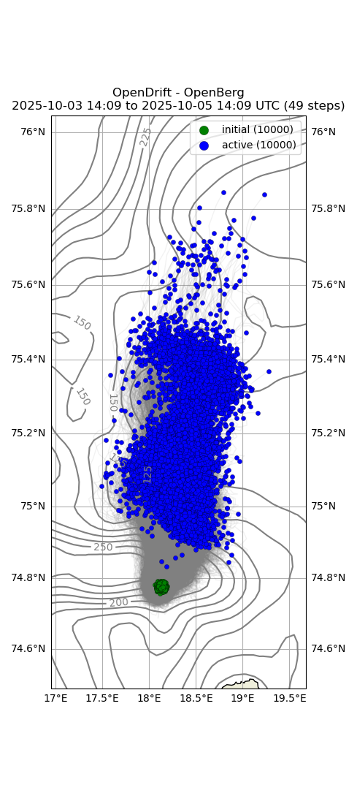

Note
Go to the end to download the full example code.
Icebergs (openberg)
- 

13:38:04 DEBUG opendrift.config:168: Adding 18 config items from __init__
13:38:04 DEBUG opendrift.config:178: Overwriting config item readers:max_number_of_fails
13:38:04 DEBUG opendrift.config:168: Adding 14 config items from __init__
13:38:04 INFO opendrift:509: OpenDriftSimulation initialised (version 1.13.0 / v1.13.0-73-ged0e430)
13:38:04 DEBUG opendrift.config:168: Adding 15 config items from oceandrift
13:38:04 DEBUG opendrift.config:178: Overwriting config item seed:z
13:38:04 DEBUG opendrift.config:168: Adding 11 config items from openberg
13:38:04 DEBUG opendrift.config:178: Overwriting config item drift:stokes_drift
13:38:04 DEBUG opendrift.readers.reader_lazy:37: Delaying initialisation of LazyReader: https://thredds.met.no/thredds/dodsC/cmems/topaz6/dataset-topaz6-arc-15min-3km-be.ncml
13:38:04 DEBUG opendrift.readers.reader_lazy:37: Delaying initialisation of LazyReader: https://pae-paha.pacioos.hawaii.edu/thredds/dodsC/ncep_global/NCEP_Global_Atmospheric_Model_best.ncd
13:38:04 DEBUG opendrift.models.basemodel.environment:316: Added reader LazyReader: https://thredds.met.no/thredds/dodsC/cmems/topaz6/dataset-topaz6-arc-15min-3km-be.ncml
13:38:04 DEBUG opendrift.models.basemodel.environment:316: Added reader LazyReader: https://pae-paha.pacioos.hawaii.edu/thredds/dodsC/ncep_global/NCEP_Global_Atmospheric_Model_best.ncd
13:38:04 INFO opendrift.models.basemodel.environment:206: Adding a dynamical landmask with max. priority based on assumed maximum speed of 2.0 m/s. Adding a customised landmask may be faster...
13:38:04 DEBUG opendrift.readers.basereader:186: Variable mapping: ['sea_floor_depth_below_sea_level'] -> ['land_binary_mask'] is not activated
13:38:08 DEBUG opendrift.models.basemodel.environment:316: Added reader global_landmask
13:38:08 INFO opendrift.models.basemodel.environment:233: Fallback values will be used for the following variables which have no readers:
13:38:08 INFO opendrift.models.basemodel.environment:236: sea_floor_depth_below_sea_level: 10000.000000
13:38:08 INFO opendrift.models.basemodel.environment:236: sea_surface_x_slope: 0.000000
13:38:08 INFO opendrift.models.basemodel.environment:236: sea_surface_y_slope: 0.000000
13:38:08 INFO opendrift.models.basemodel.environment:236: x_wind: 0.000000
13:38:08 INFO opendrift.models.basemodel.environment:236: y_wind: 0.000000
13:38:08 INFO opendrift.models.basemodel.environment:236: sea_surface_wave_significant_height: 0.000000
13:38:08 INFO opendrift.models.basemodel.environment:236: sea_surface_wave_from_direction: 0.000000
13:38:08 INFO opendrift.models.basemodel.environment:236: sea_surface_wave_stokes_drift_x_velocity: 0.000000
13:38:08 INFO opendrift.models.basemodel.environment:236: sea_surface_wave_stokes_drift_y_velocity: 0.000000
13:38:08 INFO opendrift.models.basemodel.environment:236: sea_water_temperature: 2.000000
13:38:08 INFO opendrift.models.basemodel.environment:236: sea_water_salinity: 35.000000
13:38:08 INFO opendrift.models.basemodel.environment:236: sea_ice_area_fraction: 0.000000
13:38:08 INFO opendrift.models.basemodel.environment:236: sea_ice_thickness: 0.000000
13:38:08 INFO opendrift.models.basemodel.environment:236: sea_ice_x_velocity: 0.000000
13:38:08 INFO opendrift.models.basemodel.environment:236: sea_ice_y_velocity: 0.000000
13:38:08 DEBUG opendrift:100: Changed mode from Mode.Config to Mode.Ready
13:38:08 DEBUG opendrift:100: Changed mode from Mode.Ready to Mode.Run
13:38:08 DEBUG opendrift:1763:
------------------------------------------------------
Software and hardware:
OpenDrift version 1.13.0
Platform: Linux, 5.15.0-1077-aws
69.05977249145508 GB memory
36 processors (x86_64)
NumPy version 1.26.4
SciPy version 1.15.2
Matplotlib version 3.9.1
NetCDF4 version 1.6.1
Xarray version 2025.1.2
ADIOS (adios_db) version 1.2.5
Copernicusmarine version 2.0.1
Python version 3.11.6 | packaged by conda-forge | (main, Oct 3 2023, 10:40:35) [GCC 12.3.0]
------------------------------------------------------
13:38:08 DEBUG opendrift:1777: No output file is specified, neglecting export_buffer_length
13:38:08 DEBUG opendrift:1895: Finalizing environment and preparing readers for simulation coverage ([-71.15060630636161, 67.31976574047192, -40.85350593729074, 76.68095142261402]) and time (2025-03-13 13:38:04.927649 to 2025-03-16 13:38:04.927649)
13:38:08 DEBUG opendrift.models.basemodel.environment:168: Preparing LazyReader: https://thredds.met.no/thredds/dodsC/cmems/topaz6/dataset-topaz6-arc-15min-3km-be.ncml for extent [-71.15060630636161, 67.31976574047192, -40.85350593729074, 76.68095142261402]
13:38:08 DEBUG opendrift.models.basemodel.environment:168: Preparing LazyReader: https://pae-paha.pacioos.hawaii.edu/thredds/dodsC/ncep_global/NCEP_Global_Atmospheric_Model_best.ncd for extent [-71.15060630636161, 67.31976574047192, -40.85350593729074, 76.68095142261402]
13:38:08 DEBUG opendrift.models.basemodel.environment:168: Preparing global_landmask for extent [-71.15060630636161, 67.31976574047192, -40.85350593729074, 76.68095142261402]
13:38:08 DEBUG opendrift.readers.basereader.variables:553: Nothing more to prepare for global_landmask
13:38:08 DEBUG opendrift:1982: Initial self.result, size Frozen({'trajectory': 100, 'time': 73})
13:38:08 INFO opendrift:919: Using existing reader for land_binary_mask
13:38:08 DEBUG opendrift.models.basemodel.environment:595: ----------------------------------------
13:38:08 DEBUG opendrift.models.basemodel.environment:596: Variable group ['land_binary_mask']
13:38:08 DEBUG opendrift.models.basemodel.environment:597: ----------------------------------------
13:38:08 DEBUG opendrift.models.basemodel.environment:601: Calling reader global_landmask
13:38:08 DEBUG opendrift.models.basemodel.environment:602: ----------------------------------------
13:38:08 DEBUG opendrift.models.basemodel.environment:618: Data needed for 100 elements
13:38:08 DEBUG opendrift.readers.basereader.variables:759: Fetching variables from global_landmask covering 100 elements
13:38:08 DEBUG opendrift.readers.basereader.continuous:37: Fetched env-before
13:38:08 DEBUG opendrift.readers.basereader.variables:637: Checking land_binary_mask for invalid values
13:38:08 DEBUG opendrift.readers.basereader.variables:795: Reader projection is latlon - rotation of vectors is not needed.
13:38:08 DEBUG opendrift.models.basemodel.environment:752: Obtained data for all elements.
13:38:08 DEBUG opendrift.models.basemodel.environment:765: ---------------------------------------
13:38:08 DEBUG opendrift.models.basemodel.environment:766: Finished processing all variable groups
13:38:08 DEBUG opendrift.models.basemodel.environment:891: ------------ SUMMARY -------------
13:38:08 DEBUG opendrift.models.basemodel.environment:893: land_binary_mask: 0 (min) 0 (max)
13:38:08 DEBUG opendrift.models.basemodel.environment:895: ---------------------------------
13:38:08 INFO opendrift:930: All points are in ocean
13:38:08 DEBUG opendrift:874: to be seeded: 100, already seeded 0
13:38:08 DEBUG opendrift:892: Released 100 new elements.
13:38:08 DEBUG opendrift:2055: ======================================================================
13:38:08 INFO opendrift:2056: 2025-03-13 13:38:04.927649 - step 1 of 72 - 100 active elements (0 deactivated)
13:38:08 DEBUG opendrift:2062: 0 elements scheduled.
13:38:08 DEBUG opendrift:2064: ======================================================================
13:38:08 DEBUG opendrift:2075: 71.990036 <- latitude -> 72.01068
13:38:08 DEBUG opendrift:2080: -56.037 <- longitude -> -55.967113
13:38:08 DEBUG opendrift:2083: z = 0.0
13:38:08 DEBUG opendrift:2086: ---------------------------------
13:38:08 DEBUG opendrift.models.basemodel.environment:569: Variables not covered by any reader: ['sea_water_salinity', 'sea_surface_wave_stokes_drift_x_velocity', 'sea_surface_wave_significant_height', 'x_sea_water_velocity', 'sea_surface_wave_from_direction', 'sea_surface_wave_stokes_drift_y_velocity', 'sea_ice_area_fraction', 'sea_floor_depth_below_sea_level', 'sea_surface_x_slope', 'sea_water_temperature', 'sea_surface_y_slope', 'sea_ice_thickness', 'y_sea_water_velocity']
13:38:08 DEBUG opendrift.readers.reader_lazy:56: Initialising: LazyReader: https://thredds.met.no/thredds/dodsC/cmems/topaz6/dataset-topaz6-arc-15min-3km-be.ncml
13:38:08 DEBUG opendrift.readers:136: Testing reader <module 'opendrift.readers.reader_netCDF_CF_generic' from '/root/project/opendrift/readers/reader_netCDF_CF_generic.py'>
13:38:08 INFO opendrift.readers:58: Opening file with xr.open_dataset
13:38:11 DEBUG opendrift.readers.reader_netCDF_CF_generic:128: Finding coordinate variables.
13:38:11 DEBUG opendrift.readers.reader_netCDF_CF_generic:143: Parsing CF grid mapping dictionary: {'grid_mapping_name': 'polar_stereographic', 'latitude_of_projection_origin': 90.0, 'longitude_of_projection_origin': -45.0, 'scale_factor_at_projection_origin': 1.0, 'straight_vertical_longitude_from_pole': -45.0, 'earth_radius': 6378273.0, 'proj4': '+proj=stere +lon_0=-45 +lat_0=90 +k=1 +R=6378273 +no_defs', 'false_easting': 0.0, 'false_northing': 0.0}
13:38:11 INFO opendrift.readers.reader_netCDF_CF_generic:338: Detected dimensions: {'x': 'x', 'y': 'y', 'time': 'time'}
13:38:11 DEBUG opendrift.readers.basereader.variables:612: Setting buffer size 4 for reader https://thredds.met.no/thredds/dodsC/cmems/topaz6/dataset-topaz6-arc-15min-3km-be.ncml, assuming a maximum average speed of 5 m/s and time span of 0:15:00
13:38:11 DEBUG opendrift.readers.basereader:186: Variable mapping: ['sea_floor_depth_below_sea_level'] -> ['land_binary_mask'] is not activated
13:38:11 DEBUG opendrift.readers.basereader.variables:567: Adding variable mapping: ['x_sea_water_velocity', 'y_sea_water_velocity'] -> sea_water_speed
13:38:11 DEBUG opendrift.readers.basereader.structured:153: Clearing cache for reader https://thredds.met.no/thredds/dodsC/cmems/topaz6/dataset-topaz6-arc-15min-3km-be.ncml before starting new simulation
13:38:11 DEBUG opendrift.readers.basereader.variables:612: Setting buffer size 3 for reader https://thredds.met.no/thredds/dodsC/cmems/topaz6/dataset-topaz6-arc-15min-3km-be.ncml, assuming a maximum average speed of 2 m/s and time span of 0:15:00
13:38:11 DEBUG opendrift.readers.basereader.variables:553: Nothing more to prepare for https://thredds.met.no/thredds/dodsC/cmems/topaz6/dataset-topaz6-arc-15min-3km-be.ncml
13:38:11 DEBUG opendrift.readers.reader_lazy:71: Reader initialised: https://thredds.met.no/thredds/dodsC/cmems/topaz6/dataset-topaz6-arc-15min-3km-be.ncml
13:38:11 DEBUG opendrift.readers.basereader.variables:612: Setting buffer size 3 for reader https://thredds.met.no/thredds/dodsC/cmems/topaz6/dataset-topaz6-arc-15min-3km-be.ncml, assuming a maximum average speed of 2 m/s and time span of 0:15:00
13:38:11 DEBUG opendrift.readers.reader_lazy:56: Initialising: LazyReader: https://pae-paha.pacioos.hawaii.edu/thredds/dodsC/ncep_global/NCEP_Global_Atmospheric_Model_best.ncd
13:38:11 DEBUG opendrift.readers:136: Testing reader <module 'opendrift.readers.reader_netCDF_CF_generic' from '/root/project/opendrift/readers/reader_netCDF_CF_generic.py'>
13:38:11 INFO opendrift.readers:58: Opening file with xr.open_dataset
13:38:13 DEBUG opendrift.readers.reader_netCDF_CF_generic:128: Finding coordinate variables.
13:38:13 DEBUG opendrift.readers.reader_netCDF_CF_generic:268: Lon and lat are 1D arrays - using as projection coordinates
13:38:13 INFO opendrift.readers.reader_netCDF_CF_generic:338: Detected dimensions: {'time': 'time', 'x': 'longitude', 'y': 'latitude'}
13:38:13 DEBUG opendrift.readers.basereader.variables:612: Setting buffer size 150350 for reader https://pae-paha.pacioos.hawaii.edu/thredds/dodsC/ncep_global/NCEP_Global_Atmospheric_Model_best.ncd, assuming a maximum average speed of 5 m/s and time span of 19315 days, 12:00:00
13:38:13 INFO opendrift.readers.basereader:176: Variable x_wind will be rotated from eastward_wind
13:38:13 INFO opendrift.readers.basereader:176: Variable y_wind will be rotated from northward_wind
13:38:13 DEBUG opendrift.readers.basereader:186: Variable mapping: ['sea_floor_depth_below_sea_level'] -> ['land_binary_mask'] is not activated
13:38:13 DEBUG opendrift.readers.basereader.variables:567: Adding variable mapping: ['x_wind', 'y_wind'] -> wind_speed
13:38:13 DEBUG opendrift.readers.basereader.structured:153: Clearing cache for reader https://pae-paha.pacioos.hawaii.edu/thredds/dodsC/ncep_global/NCEP_Global_Atmospheric_Model_best.ncd before starting new simulation
13:38:13 DEBUG opendrift.readers.basereader.variables:612: Setting buffer size 60142 for reader https://pae-paha.pacioos.hawaii.edu/thredds/dodsC/ncep_global/NCEP_Global_Atmospheric_Model_best.ncd, assuming a maximum average speed of 2 m/s and time span of 19315 days, 12:00:00
13:38:13 DEBUG opendrift.readers.basereader.variables:553: Nothing more to prepare for https://pae-paha.pacioos.hawaii.edu/thredds/dodsC/ncep_global/NCEP_Global_Atmospheric_Model_best.ncd
13:38:13 DEBUG opendrift.readers.reader_lazy:71: Reader initialised: https://pae-paha.pacioos.hawaii.edu/thredds/dodsC/ncep_global/NCEP_Global_Atmospheric_Model_best.ncd
13:38:13 DEBUG opendrift.readers.basereader.variables:612: Setting buffer size 60142 for reader https://pae-paha.pacioos.hawaii.edu/thredds/dodsC/ncep_global/NCEP_Global_Atmospheric_Model_best.ncd, assuming a maximum average speed of 2 m/s and time span of 19315 days, 12:00:00
13:38:13 DEBUG opendrift.models.basemodel.environment:595: ----------------------------------------
13:38:13 DEBUG opendrift.models.basemodel.environment:596: Variable group ['land_binary_mask']
13:38:13 DEBUG opendrift.models.basemodel.environment:597: ----------------------------------------
13:38:13 DEBUG opendrift.models.basemodel.environment:601: Calling reader global_landmask
13:38:13 DEBUG opendrift.models.basemodel.environment:602: ----------------------------------------
13:38:13 DEBUG opendrift.models.basemodel.environment:618: Data needed for 100 elements
13:38:13 DEBUG opendrift.readers.basereader.variables:759: Fetching variables from global_landmask covering 100 elements
13:38:13 DEBUG opendrift.readers.basereader.continuous:37: Fetched env-before
13:38:13 DEBUG opendrift.readers.basereader.variables:637: Checking land_binary_mask for invalid values
13:38:13 DEBUG opendrift.readers.basereader.variables:795: Reader projection is latlon - rotation of vectors is not needed.
13:38:13 DEBUG opendrift.models.basemodel.environment:752: Obtained data for all elements.
13:38:13 DEBUG opendrift.models.basemodel.environment:595: ----------------------------------------
13:38:13 DEBUG opendrift.models.basemodel.environment:596: Variable group ['sea_floor_depth_below_sea_level', 'x_sea_water_velocity', 'y_sea_water_velocity']
13:38:13 DEBUG opendrift.models.basemodel.environment:597: ----------------------------------------
13:38:13 DEBUG opendrift.models.basemodel.environment:601: Calling reader https://thredds.met.no/thredds/dodsC/cmems/topaz6/dataset-topaz6-arc-15min-3km-be.ncml
13:38:13 DEBUG opendrift.models.basemodel.environment:602: ----------------------------------------
13:38:13 DEBUG opendrift.models.basemodel.environment:618: Data needed for 100 elements
13:38:13 DEBUG opendrift.readers.basereader.variables:759: Fetching variables from https://thredds.met.no/thredds/dodsC/cmems/topaz6/dataset-topaz6-arc-15min-3km-be.ncml covering 100 elements
13:38:13 DEBUG opendrift.readers.basereader.structured:222: Reader time:
2025-03-13 13:30:00 (before)
2025-03-13 13:45:00 (after)
13:38:14 DEBUG opendrift.readers.basereader.variables:637: Checking sea_floor_depth_below_sea_level for invalid values
13:38:14 DEBUG opendrift.readers.basereader.variables:637: Checking x_sea_water_velocity for invalid values
13:38:14 DEBUG opendrift.readers.basereader.variables:637: Checking y_sea_water_velocity for invalid values
13:38:14 DEBUG opendrift.readers.basereader.structured:292: Fetched env-block (size 7x7x1) for time before (2025-03-13 13:30:00)
13:38:14 DEBUG opendrift.readers.basereader.variables:637: Checking sea_floor_depth_below_sea_level for invalid values
13:38:14 DEBUG opendrift.readers.basereader.variables:637: Checking x_sea_water_velocity for invalid values
13:38:14 DEBUG opendrift.readers.basereader.variables:637: Checking y_sea_water_velocity for invalid values
13:38:14 DEBUG opendrift.readers.basereader.structured:315: Fetched env-block (size 7x7x1) for time after (2025-03-13 13:45:00)
13:38:14 DEBUG opendrift.readers.basereader.structured:336: Interpolating before (2025-03-13 13:30:00) in space (linearNDFast)
13:38:14 DEBUG opendrift.readers.interpolation.structured:97: Initialising interpolator.
13:38:14 DEBUG opendrift.readers.basereader.structured:342: Interpolating after (2025-03-13 13:45:00) in space (linearNDFast)
13:38:14 DEBUG opendrift.readers.interpolation.structured:97: Initialising interpolator.
13:38:14 DEBUG opendrift.readers.basereader.structured:357: Interpolating before (2025-03-13 13:30:00, weight 0.46) and
after (2025-03-13 13:45:00, weight 0.54) in time
13:38:14 DEBUG opendrift.readers.basereader.structured:370: Interpolating profiles in time
13:38:14 DEBUG opendrift.readers.basereader.variables:100: Rotating vectors between -11.04393106823474 and -10.974007664504759 degrees.
13:38:14 DEBUG opendrift.readers.basereader.variables:100: Rotating vectors between -11.04393106823474 and -10.974007664504759 degrees.
13:38:14 DEBUG opendrift.models.basemodel.environment:752: Obtained data for all elements.
13:38:14 DEBUG opendrift.models.basemodel.environment:595: ----------------------------------------
13:38:14 DEBUG opendrift.models.basemodel.environment:596: Variable group ['x_wind', 'y_wind']
13:38:14 DEBUG opendrift.models.basemodel.environment:597: ----------------------------------------
13:38:14 DEBUG opendrift.models.basemodel.environment:601: Calling reader https://pae-paha.pacioos.hawaii.edu/thredds/dodsC/ncep_global/NCEP_Global_Atmospheric_Model_best.ncd
13:38:14 DEBUG opendrift.models.basemodel.environment:602: ----------------------------------------
13:38:14 DEBUG opendrift.models.basemodel.environment:618: Data needed for 100 elements
13:38:14 DEBUG opendrift.readers.basereader.variables:759: Fetching variables from https://pae-paha.pacioos.hawaii.edu/thredds/dodsC/ncep_global/NCEP_Global_Atmospheric_Model_best.ncd covering 100 elements
13:38:14 DEBUG opendrift.readers.basereader.structured:213: Shifting coordinates to 0-360
13:38:14 DEBUG opendrift.readers.basereader.structured:222: Reader time:
2025-03-13 12:00:00 (before)
2025-03-13 15:00:00 (after)
13:38:14 DEBUG opendrift.readers.reader_netCDF_CF_generic:456: Using eastward_wind to retrieve x_wind
13:38:16 DEBUG opendrift.readers.reader_netCDF_CF_generic:456: Using northward_wind to retrieve y_wind
13:38:18 DEBUG opendrift.readers.reader_netCDF_CF_generic:578: North is up, no rotation necessary
13:38:18 DEBUG opendrift.readers.basereader.variables:637: Checking x_wind for invalid values
13:38:18 DEBUG opendrift.readers.basereader.variables:637: Checking y_wind for invalid values
13:38:18 DEBUG opendrift.readers.basereader.structured:292: Fetched env-block (size 720x361x1) for time before (2025-03-13 12:00:00)
13:38:18 DEBUG opendrift.readers.reader_netCDF_CF_generic:456: Using eastward_wind to retrieve x_wind
13:38:21 DEBUG opendrift.readers.reader_netCDF_CF_generic:456: Using northward_wind to retrieve y_wind
13:38:24 DEBUG opendrift.readers.reader_netCDF_CF_generic:578: North is up, no rotation necessary
13:38:24 DEBUG opendrift.readers.basereader.variables:637: Checking x_wind for invalid values
13:38:24 DEBUG opendrift.readers.basereader.variables:637: Checking y_wind for invalid values
13:38:24 DEBUG opendrift.readers.basereader.structured:315: Fetched env-block (size 720x361x1) for time after (2025-03-13 15:00:00)
13:38:24 DEBUG opendrift.readers.basereader.structured:336: Interpolating before (2025-03-13 12:00:00) in space (linearNDFast)
13:38:24 DEBUG opendrift.readers.interpolation.structured:97: Initialising interpolator.
13:38:24 DEBUG opendrift.readers.basereader.structured:342: Interpolating after (2025-03-13 15:00:00) in space (linearNDFast)
13:38:24 DEBUG opendrift.readers.interpolation.structured:97: Initialising interpolator.
13:38:24 DEBUG opendrift.readers.basereader.structured:357: Interpolating before (2025-03-13 12:00:00, weight 0.46) and
after (2025-03-13 15:00:00, weight 0.54) in time
13:38:24 DEBUG opendrift.readers.basereader.variables:795: Reader projection is latlon - rotation of vectors is not needed.
13:38:24 DEBUG opendrift.models.basemodel.environment:752: Obtained data for all elements.
13:38:24 DEBUG opendrift.models.basemodel.environment:765: ---------------------------------------
13:38:24 DEBUG opendrift.models.basemodel.environment:766: Finished processing all variable groups
13:38:24 DEBUG opendrift.models.basemodel.environment:791: Using fallback value 2 for sea_water_temperature for all profiles
13:38:24 DEBUG opendrift.models.basemodel.environment:791: Using fallback value 35 for sea_water_salinity for all profiles
13:38:24 DEBUG opendrift.models.basemodel.environment:891: ------------ SUMMARY -------------
13:38:24 DEBUG opendrift.models.basemodel.environment:893: x_sea_water_velocity: -0.00100012 (min) 0.0177949 (max)
13:38:24 DEBUG opendrift.models.basemodel.environment:893: y_sea_water_velocity: 0.0418431 (min) 0.0460743 (max)
13:38:24 DEBUG opendrift.models.basemodel.environment:893: sea_floor_depth_below_sea_level: 174.382 (min) 209.813 (max)
13:38:24 DEBUG opendrift.models.basemodel.environment:893: sea_surface_x_slope: 0 (min) 0 (max)
13:38:24 DEBUG opendrift.models.basemodel.environment:893: sea_surface_y_slope: 0 (min) 0 (max)
13:38:24 DEBUG opendrift.models.basemodel.environment:893: x_wind: 0.864017 (min) 1.21945 (max)
13:38:24 DEBUG opendrift.models.basemodel.environment:893: y_wind: 2.20429 (min) 2.33288 (max)
13:38:24 DEBUG opendrift.models.basemodel.environment:893: sea_surface_wave_significant_height: 0 (min) 0 (max)
13:38:24 DEBUG opendrift.models.basemodel.environment:893: sea_surface_wave_from_direction: 0 (min) 0 (max)
13:38:24 DEBUG opendrift.models.basemodel.environment:893: sea_surface_wave_stokes_drift_x_velocity: 0 (min) 0 (max)
13:38:24 DEBUG opendrift.models.basemodel.environment:893: sea_surface_wave_stokes_drift_y_velocity: 0 (min) 0 (max)
13:38:24 DEBUG opendrift.models.basemodel.environment:893: sea_water_temperature: 2 (min) 2 (max)
13:38:24 DEBUG opendrift.models.basemodel.environment:893: sea_water_salinity: 35 (min) 35 (max)
13:38:24 DEBUG opendrift.models.basemodel.environment:893: sea_ice_area_fraction: 0 (min) 0 (max)
13:38:24 DEBUG opendrift.models.basemodel.environment:893: sea_ice_thickness: 0 (min) 0 (max)
13:38:24 DEBUG opendrift.models.basemodel.environment:893: sea_ice_x_velocity: 0 (min) 0 (max)
13:38:24 DEBUG opendrift.models.basemodel.environment:893: sea_ice_y_velocity: 0 (min) 0 (max)
13:38:24 DEBUG opendrift.models.basemodel.environment:893: land_binary_mask: 0 (min) 0 (max)
13:38:24 DEBUG opendrift.models.basemodel.environment:895: ---------------------------------
13:38:24 DEBUG opendrift.models.physics_methods:837: Calculating Hs from wind, min: 0.138405, mean: 0.160231, max: 0.170106
13:38:24 DEBUG opendrift:643: No elements hit coastline.
13:38:24 WARNING opendrift:719: Seafloor check not being run because sea_surface_height is missing.
13:38:24 DEBUG opendrift:1695: No elements to deactivate
13:38:24 DEBUG opendrift:2129: Calling OpenBerg.update()
13:38:24 INFO opendrift.models.openberg:531: Rolling over : 100 icebergs ...
13:38:24 DEBUG opendrift.models.openberg:486: Melting is disabled
13:38:24 INFO opendrift.models.openberg:418: Surface Currents ...
13:38:24 DEBUG opendrift:1646: Horizontal diffusivity is 0, no random walk.
13:38:24 DEBUG opendrift:2144: 100 active elements (0 deactivated)
13:38:24 DEBUG opendrift:874: to be seeded: 0, already seeded 100
13:38:24 WARNING opendrift:719: Seafloor check not being run because sea_surface_height is missing.
13:38:24 DEBUG opendrift:2055: ======================================================================
13:38:24 INFO opendrift:2056: 2025-03-13 14:38:04.927649 - step 2 of 72 - 100 active elements (0 deactivated)
13:38:24 DEBUG opendrift:2062: 0 elements scheduled.
13:38:24 DEBUG opendrift:2064: ======================================================================
13:38:24 DEBUG opendrift:2075: 71.99179850257327 <- latitude -> 72.01274966757921
13:38:24 DEBUG opendrift:2080: -56.02997504140841 <- longitude -> -55.960911518540414
13:38:24 DEBUG opendrift:2083: z = 0.0
13:38:24 DEBUG opendrift:2086: ---------------------------------
13:38:24 DEBUG opendrift.models.basemodel.environment:595: ----------------------------------------
13:38:24 DEBUG opendrift.models.basemodel.environment:596: Variable group ['land_binary_mask']
13:38:24 DEBUG opendrift.models.basemodel.environment:597: ----------------------------------------
13:38:24 DEBUG opendrift.models.basemodel.environment:601: Calling reader global_landmask
13:38:24 DEBUG opendrift.models.basemodel.environment:602: ----------------------------------------
13:38:24 DEBUG opendrift.models.basemodel.environment:618: Data needed for 100 elements
13:38:24 DEBUG opendrift.readers.basereader.variables:759: Fetching variables from global_landmask covering 100 elements
13:38:24 DEBUG opendrift.readers.basereader.continuous:37: Fetched env-before
13:38:24 DEBUG opendrift.readers.basereader.variables:637: Checking land_binary_mask for invalid values
13:38:24 DEBUG opendrift.readers.basereader.variables:795: Reader projection is latlon - rotation of vectors is not needed.
13:38:24 DEBUG opendrift.models.basemodel.environment:752: Obtained data for all elements.
13:38:24 DEBUG opendrift.models.basemodel.environment:595: ----------------------------------------
13:38:24 DEBUG opendrift.models.basemodel.environment:596: Variable group ['sea_floor_depth_below_sea_level', 'x_sea_water_velocity', 'y_sea_water_velocity']
13:38:24 DEBUG opendrift.models.basemodel.environment:597: ----------------------------------------
13:38:24 DEBUG opendrift.models.basemodel.environment:601: Calling reader https://thredds.met.no/thredds/dodsC/cmems/topaz6/dataset-topaz6-arc-15min-3km-be.ncml
13:38:24 DEBUG opendrift.models.basemodel.environment:602: ----------------------------------------
13:38:24 DEBUG opendrift.models.basemodel.environment:618: Data needed for 100 elements
13:38:24 DEBUG opendrift.readers.basereader.variables:759: Fetching variables from https://thredds.met.no/thredds/dodsC/cmems/topaz6/dataset-topaz6-arc-15min-3km-be.ncml covering 100 elements
13:38:24 DEBUG opendrift.readers.basereader.structured:222: Reader time:
2025-03-13 14:30:00 (before)
2025-03-13 14:45:00 (after)
13:38:24 DEBUG opendrift.readers.basereader.variables:637: Checking sea_floor_depth_below_sea_level for invalid values
13:38:24 DEBUG opendrift.readers.basereader.variables:637: Checking x_sea_water_velocity for invalid values
13:38:24 DEBUG opendrift.readers.basereader.variables:637: Checking y_sea_water_velocity for invalid values
13:38:24 DEBUG opendrift.readers.basereader.structured:292: Fetched env-block (size 8x7x1) for time before (2025-03-13 14:30:00)
13:38:25 DEBUG opendrift.readers.basereader.variables:637: Checking sea_floor_depth_below_sea_level for invalid values
13:38:25 DEBUG opendrift.readers.basereader.variables:637: Checking x_sea_water_velocity for invalid values
13:38:25 DEBUG opendrift.readers.basereader.variables:637: Checking y_sea_water_velocity for invalid values
13:38:25 DEBUG opendrift.readers.basereader.structured:315: Fetched env-block (size 8x7x1) for time after (2025-03-13 14:45:00)
13:38:25 DEBUG opendrift.readers.basereader.structured:336: Interpolating before (2025-03-13 14:30:00) in space (linearNDFast)
13:38:25 DEBUG opendrift.readers.interpolation.structured:97: Initialising interpolator.
13:38:25 DEBUG opendrift.readers.basereader.structured:342: Interpolating after (2025-03-13 14:45:00) in space (linearNDFast)
13:38:25 DEBUG opendrift.readers.interpolation.structured:97: Initialising interpolator.
13:38:25 DEBUG opendrift.readers.basereader.structured:357: Interpolating before (2025-03-13 14:30:00, weight 0.46) and
after (2025-03-13 14:45:00, weight 0.54) in time
13:38:25 DEBUG opendrift.readers.basereader.structured:370: Interpolating profiles in time
13:38:25 DEBUG opendrift.readers.basereader.variables:100: Rotating vectors between -11.036897952621398 and -10.967796734280325 degrees.
13:38:25 DEBUG opendrift.readers.basereader.variables:100: Rotating vectors between -11.036897952621398 and -10.967796734280325 degrees.
13:38:25 DEBUG opendrift.models.basemodel.environment:752: Obtained data for all elements.
13:38:25 DEBUG opendrift.models.basemodel.environment:595: ----------------------------------------
13:38:25 DEBUG opendrift.models.basemodel.environment:596: Variable group ['x_wind', 'y_wind']
13:38:25 DEBUG opendrift.models.basemodel.environment:597: ----------------------------------------
13:38:25 DEBUG opendrift.models.basemodel.environment:601: Calling reader https://pae-paha.pacioos.hawaii.edu/thredds/dodsC/ncep_global/NCEP_Global_Atmospheric_Model_best.ncd
13:38:25 DEBUG opendrift.models.basemodel.environment:602: ----------------------------------------
13:38:25 DEBUG opendrift.models.basemodel.environment:618: Data needed for 100 elements
13:38:25 DEBUG opendrift.readers.basereader.variables:759: Fetching variables from https://pae-paha.pacioos.hawaii.edu/thredds/dodsC/ncep_global/NCEP_Global_Atmospheric_Model_best.ncd covering 100 elements
13:38:25 DEBUG opendrift.readers.basereader.structured:213: Shifting coordinates to 0-360
13:38:25 DEBUG opendrift.readers.basereader.structured:222: Reader time:
2025-03-13 12:00:00 (before)
2025-03-13 15:00:00 (after)
13:38:25 DEBUG opendrift.readers.basereader.structured:336: Interpolating before (2025-03-13 12:00:00) in space (linearNDFast)
13:38:25 DEBUG opendrift.readers.interpolation.structured:97: Initialising interpolator.
13:38:25 DEBUG opendrift.readers.basereader.structured:342: Interpolating after (2025-03-13 15:00:00) in space (linearNDFast)
13:38:25 DEBUG opendrift.readers.interpolation.structured:97: Initialising interpolator.
13:38:25 DEBUG opendrift.readers.basereader.structured:357: Interpolating before (2025-03-13 12:00:00, weight 0.12) and
after (2025-03-13 15:00:00, weight 0.88) in time
13:38:25 DEBUG opendrift.readers.basereader.variables:795: Reader projection is latlon - rotation of vectors is not needed.
13:38:25 DEBUG opendrift.models.basemodel.environment:752: Obtained data for all elements.
13:38:25 DEBUG opendrift.models.basemodel.environment:765: ---------------------------------------
13:38:25 DEBUG opendrift.models.basemodel.environment:766: Finished processing all variable groups
13:38:25 DEBUG opendrift.models.basemodel.environment:791: Using fallback value 2 for sea_water_temperature for all profiles
13:38:25 DEBUG opendrift.models.basemodel.environment:791: Using fallback value 35 for sea_water_salinity for all profiles
13:38:25 DEBUG opendrift.models.basemodel.environment:891: ------------ SUMMARY -------------
13:38:25 DEBUG opendrift.models.basemodel.environment:893: x_sea_water_velocity: -0.00868626 (min) 0.00787767 (max)
13:38:25 DEBUG opendrift.models.basemodel.environment:893: y_sea_water_velocity: 0.032858 (min) 0.035612 (max)
13:38:25 DEBUG opendrift.models.basemodel.environment:893: sea_floor_depth_below_sea_level: 170.701 (min) 210.096 (max)
13:38:25 DEBUG opendrift.models.basemodel.environment:893: sea_surface_x_slope: 0 (min) 0 (max)
13:38:25 DEBUG opendrift.models.basemodel.environment:893: sea_surface_y_slope: 0 (min) 0 (max)
13:38:25 DEBUG opendrift.models.basemodel.environment:893: x_wind: 3.11424 (min) 3.6787 (max)
13:38:25 DEBUG opendrift.models.basemodel.environment:893: y_wind: 3.1138 (min) 3.3427 (max)
13:38:25 DEBUG opendrift.models.basemodel.environment:893: sea_surface_wave_significant_height: 0 (min) 0 (max)
13:38:25 DEBUG opendrift.models.basemodel.environment:893: sea_surface_wave_from_direction: 0 (min) 0 (max)
13:38:25 DEBUG opendrift.models.basemodel.environment:893: sea_surface_wave_stokes_drift_x_velocity: 0 (min) 0 (max)
13:38:25 DEBUG opendrift.models.basemodel.environment:893: sea_surface_wave_stokes_drift_y_velocity: 0 (min) 0 (max)
13:38:25 DEBUG opendrift.models.basemodel.environment:893: sea_water_temperature: 2 (min) 2 (max)
13:38:25 DEBUG opendrift.models.basemodel.environment:893: sea_water_salinity: 35 (min) 35 (max)
13:38:25 DEBUG opendrift.models.basemodel.environment:893: sea_ice_area_fraction: 0 (min) 0 (max)
13:38:25 DEBUG opendrift.models.basemodel.environment:893: sea_ice_thickness: 0 (min) 0 (max)
13:38:25 DEBUG opendrift.models.basemodel.environment:893: sea_ice_x_velocity: 0 (min) 0 (max)
13:38:25 DEBUG opendrift.models.basemodel.environment:893: sea_ice_y_velocity: 0 (min) 0 (max)
13:38:25 DEBUG opendrift.models.basemodel.environment:893: land_binary_mask: 0 (min) 0 (max)
13:38:25 DEBUG opendrift.models.basemodel.environment:895: ---------------------------------
13:38:25 DEBUG opendrift.models.physics_methods:837: Calculating Hs from wind, min: 0.477099, mean: 0.561851, max: 0.605419
13:38:25 DEBUG opendrift:643: No elements hit coastline.
13:38:25 WARNING opendrift:719: Seafloor check not being run because sea_surface_height is missing.
13:38:25 DEBUG opendrift:1695: No elements to deactivate
13:38:25 DEBUG opendrift:2129: Calling OpenBerg.update()
13:38:25 DEBUG opendrift.models.openberg:486: Melting is disabled
13:38:25 INFO opendrift.models.openberg:418: Surface Currents ...
13:38:25 DEBUG opendrift:1646: Horizontal diffusivity is 0, no random walk.
13:38:25 DEBUG opendrift:2144: 100 active elements (0 deactivated)
13:38:25 DEBUG opendrift:874: to be seeded: 0, already seeded 100
13:38:25 WARNING opendrift:719: Seafloor check not being run because sea_surface_height is missing.
13:38:25 DEBUG opendrift:2055: ======================================================================
13:38:25 INFO opendrift:2056: 2025-03-13 15:38:04.927649 - step 3 of 72 - 100 active elements (0 deactivated)
13:38:25 DEBUG opendrift:2062: 0 elements scheduled.
13:38:25 DEBUG opendrift:2064: ======================================================================
13:38:25 DEBUG opendrift:2075: 71.98946363456312 <- latitude -> 72.01104962778865
13:38:25 DEBUG opendrift:2080: -56.02169191967149 <- longitude -> -55.95263776159554
13:38:25 DEBUG opendrift:2083: z = 0.0
13:38:25 DEBUG opendrift:2086: ---------------------------------
13:38:25 DEBUG opendrift.models.basemodel.environment:595: ----------------------------------------
13:38:25 DEBUG opendrift.models.basemodel.environment:596: Variable group ['land_binary_mask']
13:38:25 DEBUG opendrift.models.basemodel.environment:597: ----------------------------------------
13:38:25 DEBUG opendrift.models.basemodel.environment:601: Calling reader global_landmask
13:38:25 DEBUG opendrift.models.basemodel.environment:602: ----------------------------------------
13:38:25 DEBUG opendrift.models.basemodel.environment:618: Data needed for 100 elements
13:38:25 DEBUG opendrift.readers.basereader.variables:759: Fetching variables from global_landmask covering 100 elements
13:38:25 DEBUG opendrift.readers.basereader.continuous:37: Fetched env-before
13:38:25 DEBUG opendrift.readers.basereader.variables:637: Checking land_binary_mask for invalid values
13:38:25 DEBUG opendrift.readers.basereader.variables:795: Reader projection is latlon - rotation of vectors is not needed.
13:38:25 DEBUG opendrift.models.basemodel.environment:752: Obtained data for all elements.
13:38:25 DEBUG opendrift.models.basemodel.environment:595: ----------------------------------------
13:38:25 DEBUG opendrift.models.basemodel.environment:596: Variable group ['sea_floor_depth_below_sea_level', 'x_sea_water_velocity', 'y_sea_water_velocity']
13:38:25 DEBUG opendrift.models.basemodel.environment:597: ----------------------------------------
13:38:25 DEBUG opendrift.models.basemodel.environment:601: Calling reader https://thredds.met.no/thredds/dodsC/cmems/topaz6/dataset-topaz6-arc-15min-3km-be.ncml
13:38:25 DEBUG opendrift.models.basemodel.environment:602: ----------------------------------------
13:38:25 DEBUG opendrift.models.basemodel.environment:618: Data needed for 100 elements
13:38:25 DEBUG opendrift.readers.basereader.variables:759: Fetching variables from https://thredds.met.no/thredds/dodsC/cmems/topaz6/dataset-topaz6-arc-15min-3km-be.ncml covering 100 elements
13:38:25 DEBUG opendrift.readers.basereader.structured:222: Reader time:
2025-03-13 15:30:00 (before)
2025-03-13 15:45:00 (after)
13:38:25 DEBUG opendrift.readers.basereader.variables:637: Checking sea_floor_depth_below_sea_level for invalid values
13:38:25 DEBUG opendrift.readers.basereader.variables:637: Checking x_sea_water_velocity for invalid values
13:38:25 DEBUG opendrift.readers.basereader.variables:637: Checking y_sea_water_velocity for invalid values
13:38:25 DEBUG opendrift.readers.basereader.structured:292: Fetched env-block (size 8x7x1) for time before (2025-03-13 15:30:00)
13:38:26 DEBUG opendrift.readers.basereader.variables:637: Checking sea_floor_depth_below_sea_level for invalid values
13:38:26 DEBUG opendrift.readers.basereader.variables:637: Checking x_sea_water_velocity for invalid values
13:38:26 DEBUG opendrift.readers.basereader.variables:637: Checking y_sea_water_velocity for invalid values
13:38:26 DEBUG opendrift.readers.basereader.structured:315: Fetched env-block (size 8x7x1) for time after (2025-03-13 15:45:00)
13:38:26 DEBUG opendrift.readers.basereader.structured:336: Interpolating before (2025-03-13 15:30:00) in space (linearNDFast)
13:38:26 DEBUG opendrift.readers.interpolation.structured:97: Initialising interpolator.
13:38:26 DEBUG opendrift.readers.basereader.structured:342: Interpolating after (2025-03-13 15:45:00) in space (linearNDFast)
13:38:26 DEBUG opendrift.readers.interpolation.structured:97: Initialising interpolator.
13:38:26 DEBUG opendrift.readers.basereader.structured:357: Interpolating before (2025-03-13 15:30:00, weight 0.46) and
after (2025-03-13 15:45:00, weight 0.54) in time
13:38:26 DEBUG opendrift.readers.basereader.structured:370: Interpolating profiles in time
13:38:26 DEBUG opendrift.readers.basereader.variables:100: Rotating vectors between -11.028611435624715 and -10.9595188965512 degrees.
13:38:26 DEBUG opendrift.readers.basereader.variables:100: Rotating vectors between -11.028611435624715 and -10.9595188965512 degrees.
13:38:26 DEBUG opendrift.models.basemodel.environment:752: Obtained data for all elements.
13:38:26 DEBUG opendrift.models.basemodel.environment:595: ----------------------------------------
13:38:26 DEBUG opendrift.models.basemodel.environment:596: Variable group ['x_wind', 'y_wind']
13:38:26 DEBUG opendrift.models.basemodel.environment:597: ----------------------------------------
13:38:26 DEBUG opendrift.models.basemodel.environment:601: Calling reader https://pae-paha.pacioos.hawaii.edu/thredds/dodsC/ncep_global/NCEP_Global_Atmospheric_Model_best.ncd
13:38:26 DEBUG opendrift.models.basemodel.environment:602: ----------------------------------------
13:38:26 DEBUG opendrift.models.basemodel.environment:618: Data needed for 100 elements
13:38:26 DEBUG opendrift.readers.basereader.variables:759: Fetching variables from https://pae-paha.pacioos.hawaii.edu/thredds/dodsC/ncep_global/NCEP_Global_Atmospheric_Model_best.ncd covering 100 elements
13:38:26 DEBUG opendrift.readers.basereader.structured:213: Shifting coordinates to 0-360
13:38:26 DEBUG opendrift.readers.basereader.structured:222: Reader time:
2025-03-13 15:00:00 (before)
2025-03-13 18:00:00 (after)
13:38:26 DEBUG opendrift.readers.reader_netCDF_CF_generic:456: Using eastward_wind to retrieve x_wind
13:38:28 DEBUG opendrift.readers.reader_netCDF_CF_generic:456: Using northward_wind to retrieve y_wind
13:38:31 DEBUG opendrift.readers.reader_netCDF_CF_generic:578: North is up, no rotation necessary
13:38:31 DEBUG opendrift.readers.basereader.variables:637: Checking x_wind for invalid values
13:38:31 DEBUG opendrift.readers.basereader.variables:637: Checking y_wind for invalid values
13:38:31 DEBUG opendrift.readers.basereader.structured:315: Fetched env-block (size 720x361x1) for time after (2025-03-13 18:00:00)
13:38:31 DEBUG opendrift.readers.basereader.structured:336: Interpolating before (2025-03-13 15:00:00) in space (linearNDFast)
13:38:31 DEBUG opendrift.readers.interpolation.structured:97: Initialising interpolator.
13:38:31 DEBUG opendrift.readers.basereader.structured:342: Interpolating after (2025-03-13 18:00:00) in space (linearNDFast)
13:38:31 DEBUG opendrift.readers.interpolation.structured:97: Initialising interpolator.
13:38:31 DEBUG opendrift.readers.basereader.structured:357: Interpolating before (2025-03-13 15:00:00, weight 0.79) and
after (2025-03-13 18:00:00, weight 0.21) in time
13:38:31 DEBUG opendrift.readers.basereader.variables:795: Reader projection is latlon - rotation of vectors is not needed.
13:38:31 DEBUG opendrift.models.basemodel.environment:752: Obtained data for all elements.
13:38:31 DEBUG opendrift.models.basemodel.environment:765: ---------------------------------------
13:38:31 DEBUG opendrift.models.basemodel.environment:766: Finished processing all variable groups
13:38:31 DEBUG opendrift.models.basemodel.environment:791: Using fallback value 2 for sea_water_temperature for all profiles
13:38:31 DEBUG opendrift.models.basemodel.environment:791: Using fallback value 35 for sea_water_salinity for all profiles
13:38:31 DEBUG opendrift.models.basemodel.environment:891: ------------ SUMMARY -------------
13:38:31 DEBUG opendrift.models.basemodel.environment:893: x_sea_water_velocity: -0.0115258 (min) 0.00205752 (max)
13:38:31 DEBUG opendrift.models.basemodel.environment:893: y_sea_water_velocity: 0.0187157 (min) 0.0197752 (max)
13:38:31 DEBUG opendrift.models.basemodel.environment:893: sea_floor_depth_below_sea_level: 174.604 (min) 211.385 (max)
13:38:31 DEBUG opendrift.models.basemodel.environment:893: sea_surface_x_slope: 0 (min) 0 (max)
13:38:31 DEBUG opendrift.models.basemodel.environment:893: sea_surface_y_slope: 0 (min) 0 (max)
13:38:31 DEBUG opendrift.models.basemodel.environment:893: x_wind: 2.88031 (min) 3.44497 (max)
13:38:31 DEBUG opendrift.models.basemodel.environment:893: y_wind: 3.26909 (min) 3.55144 (max)
13:38:31 DEBUG opendrift.models.basemodel.environment:893: sea_surface_wave_significant_height: 0 (min) 0 (max)
13:38:31 DEBUG opendrift.models.basemodel.environment:893: sea_surface_wave_from_direction: 0 (min) 0 (max)
13:38:31 DEBUG opendrift.models.basemodel.environment:893: sea_surface_wave_stokes_drift_x_velocity: 0 (min) 0 (max)
13:38:31 DEBUG opendrift.models.basemodel.environment:893: sea_surface_wave_stokes_drift_y_velocity: 0 (min) 0 (max)
13:38:31 DEBUG opendrift.models.basemodel.environment:893: sea_water_temperature: 2 (min) 2 (max)
13:38:31 DEBUG opendrift.models.basemodel.environment:893: sea_water_salinity: 35 (min) 35 (max)
13:38:31 DEBUG opendrift.models.basemodel.environment:893: sea_ice_area_fraction: 0 (min) 0 (max)
13:38:31 DEBUG opendrift.models.basemodel.environment:893: sea_ice_thickness: 0 (min) 0 (max)
13:38:31 DEBUG opendrift.models.basemodel.environment:893: sea_ice_x_velocity: 0 (min) 0 (max)
13:38:31 DEBUG opendrift.models.basemodel.environment:893: sea_ice_y_velocity: 0 (min) 0 (max)
13:38:31 DEBUG opendrift.models.basemodel.environment:893: land_binary_mask: 0 (min) 0 (max)
13:38:31 DEBUG opendrift.models.basemodel.environment:895: ---------------------------------
13:38:31 DEBUG opendrift.models.physics_methods:837: Calculating Hs from wind, min: 0.466984, mean: 0.545944, max: 0.595553
13:38:31 DEBUG opendrift:643: No elements hit coastline.
13:38:31 WARNING opendrift:719: Seafloor check not being run because sea_surface_height is missing.
13:38:31 DEBUG opendrift:1695: No elements to deactivate
13:38:31 DEBUG opendrift:2129: Calling OpenBerg.update()
13:38:31 DEBUG opendrift.models.openberg:486: Melting is disabled
13:38:31 INFO opendrift.models.openberg:418: Surface Currents ...
13:38:31 DEBUG opendrift:1646: Horizontal diffusivity is 0, no random walk.
13:38:31 DEBUG opendrift:2144: 100 active elements (0 deactivated)
13:38:31 DEBUG opendrift:874: to be seeded: 0, already seeded 100
13:38:31 WARNING opendrift:719: Seafloor check not being run because sea_surface_height is missing.
13:38:31 DEBUG opendrift:2055: ======================================================================
13:38:31 INFO opendrift:2056: 2025-03-13 16:38:04.927649 - step 4 of 72 - 100 active elements (0 deactivated)
13:38:31 DEBUG opendrift:2062: 0 elements scheduled.
13:38:31 DEBUG opendrift:2064: ======================================================================
13:38:31 DEBUG opendrift:2075: 71.98695644051887 <- latitude -> 72.00917217125888
13:38:31 DEBUG opendrift:2080: -56.01433728492289 <- longitude -> -55.945316832647556
13:38:31 DEBUG opendrift:2083: z = 0.0
13:38:31 DEBUG opendrift:2086: ---------------------------------
13:38:31 DEBUG opendrift.models.basemodel.environment:595: ----------------------------------------
13:38:31 DEBUG opendrift.models.basemodel.environment:596: Variable group ['land_binary_mask']
13:38:31 DEBUG opendrift.models.basemodel.environment:597: ----------------------------------------
13:38:31 DEBUG opendrift.models.basemodel.environment:601: Calling reader global_landmask
13:38:31 DEBUG opendrift.models.basemodel.environment:602: ----------------------------------------
13:38:31 DEBUG opendrift.models.basemodel.environment:618: Data needed for 100 elements
13:38:31 DEBUG opendrift.readers.basereader.variables:759: Fetching variables from global_landmask covering 100 elements
13:38:31 DEBUG opendrift.readers.basereader.continuous:37: Fetched env-before
13:38:31 DEBUG opendrift.readers.basereader.variables:637: Checking land_binary_mask for invalid values
13:38:31 DEBUG opendrift.readers.basereader.variables:795: Reader projection is latlon - rotation of vectors is not needed.
13:38:31 DEBUG opendrift.models.basemodel.environment:752: Obtained data for all elements.
13:38:31 DEBUG opendrift.models.basemodel.environment:595: ----------------------------------------
13:38:31 DEBUG opendrift.models.basemodel.environment:596: Variable group ['sea_floor_depth_below_sea_level', 'x_sea_water_velocity', 'y_sea_water_velocity']
13:38:31 DEBUG opendrift.models.basemodel.environment:597: ----------------------------------------
13:38:31 DEBUG opendrift.models.basemodel.environment:601: Calling reader https://thredds.met.no/thredds/dodsC/cmems/topaz6/dataset-topaz6-arc-15min-3km-be.ncml
13:38:31 DEBUG opendrift.models.basemodel.environment:602: ----------------------------------------
13:38:31 DEBUG opendrift.models.basemodel.environment:618: Data needed for 100 elements
13:38:31 DEBUG opendrift.readers.basereader.variables:759: Fetching variables from https://thredds.met.no/thredds/dodsC/cmems/topaz6/dataset-topaz6-arc-15min-3km-be.ncml covering 100 elements
13:38:31 DEBUG opendrift.readers.basereader.structured:222: Reader time:
2025-03-13 16:30:00 (before)
2025-03-13 16:45:00 (after)
13:38:32 DEBUG opendrift.readers.basereader.variables:637: Checking sea_floor_depth_below_sea_level for invalid values
13:38:32 DEBUG opendrift.readers.basereader.variables:637: Checking x_sea_water_velocity for invalid values
13:38:32 DEBUG opendrift.readers.basereader.variables:637: Checking y_sea_water_velocity for invalid values
13:38:32 DEBUG opendrift.readers.basereader.structured:292: Fetched env-block (size 8x7x1) for time before (2025-03-13 16:30:00)
13:38:32 DEBUG opendrift.readers.basereader.variables:637: Checking sea_floor_depth_below_sea_level for invalid values
13:38:32 DEBUG opendrift.readers.basereader.variables:637: Checking x_sea_water_velocity for invalid values
13:38:32 DEBUG opendrift.readers.basereader.variables:637: Checking y_sea_water_velocity for invalid values
13:38:32 DEBUG opendrift.readers.basereader.structured:315: Fetched env-block (size 8x7x1) for time after (2025-03-13 16:45:00)
13:38:32 DEBUG opendrift.readers.basereader.structured:336: Interpolating before (2025-03-13 16:30:00) in space (linearNDFast)
13:38:32 DEBUG opendrift.readers.interpolation.structured:97: Initialising interpolator.
13:38:32 DEBUG opendrift.readers.basereader.structured:342: Interpolating after (2025-03-13 16:45:00) in space (linearNDFast)
13:38:32 DEBUG opendrift.readers.interpolation.structured:97: Initialising interpolator.
13:38:32 DEBUG opendrift.readers.basereader.structured:357: Interpolating before (2025-03-13 16:30:00, weight 0.46) and
after (2025-03-13 16:45:00, weight 0.54) in time
13:38:32 DEBUG opendrift.readers.basereader.structured:370: Interpolating profiles in time
13:38:32 DEBUG opendrift.readers.basereader.variables:100: Rotating vectors between -11.021254239813922 and -10.952194445091491 degrees.
13:38:32 DEBUG opendrift.readers.basereader.variables:100: Rotating vectors between -11.021254239813922 and -10.952194445091491 degrees.
13:38:32 DEBUG opendrift.models.basemodel.environment:752: Obtained data for all elements.
13:38:32 DEBUG opendrift.models.basemodel.environment:595: ----------------------------------------
13:38:32 DEBUG opendrift.models.basemodel.environment:596: Variable group ['x_wind', 'y_wind']
13:38:32 DEBUG opendrift.models.basemodel.environment:597: ----------------------------------------
13:38:32 DEBUG opendrift.models.basemodel.environment:601: Calling reader https://pae-paha.pacioos.hawaii.edu/thredds/dodsC/ncep_global/NCEP_Global_Atmospheric_Model_best.ncd
13:38:32 DEBUG opendrift.models.basemodel.environment:602: ----------------------------------------
13:38:32 DEBUG opendrift.models.basemodel.environment:618: Data needed for 100 elements
13:38:32 DEBUG opendrift.readers.basereader.variables:759: Fetching variables from https://pae-paha.pacioos.hawaii.edu/thredds/dodsC/ncep_global/NCEP_Global_Atmospheric_Model_best.ncd covering 100 elements
13:38:32 DEBUG opendrift.readers.basereader.structured:213: Shifting coordinates to 0-360
13:38:32 DEBUG opendrift.readers.basereader.structured:222: Reader time:
2025-03-13 15:00:00 (before)
2025-03-13 18:00:00 (after)
13:38:32 DEBUG opendrift.readers.basereader.structured:336: Interpolating before (2025-03-13 15:00:00) in space (linearNDFast)
13:38:32 DEBUG opendrift.readers.interpolation.structured:97: Initialising interpolator.
13:38:32 DEBUG opendrift.readers.basereader.structured:342: Interpolating after (2025-03-13 18:00:00) in space (linearNDFast)
13:38:32 DEBUG opendrift.readers.interpolation.structured:97: Initialising interpolator.
13:38:32 DEBUG opendrift.readers.basereader.structured:357: Interpolating before (2025-03-13 15:00:00, weight 0.46) and
after (2025-03-13 18:00:00, weight 0.54) in time
13:38:32 DEBUG opendrift.readers.basereader.variables:795: Reader projection is latlon - rotation of vectors is not needed.
13:38:32 DEBUG opendrift.models.basemodel.environment:752: Obtained data for all elements.
13:38:32 DEBUG opendrift.models.basemodel.environment:765: ---------------------------------------
13:38:32 DEBUG opendrift.models.basemodel.environment:766: Finished processing all variable groups
13:38:32 DEBUG opendrift.models.basemodel.environment:791: Using fallback value 2 for sea_water_temperature for all profiles
13:38:32 DEBUG opendrift.models.basemodel.environment:791: Using fallback value 35 for sea_water_salinity for all profiles
13:38:32 DEBUG opendrift.models.basemodel.environment:891: ------------ SUMMARY -------------
13:38:32 DEBUG opendrift.models.basemodel.environment:893: x_sea_water_velocity: -0.011988 (min) -0.000612357 (max)
13:38:32 DEBUG opendrift.models.basemodel.environment:893: y_sea_water_velocity: 0.0014444 (min) 0.00386025 (max)
13:38:32 DEBUG opendrift.models.basemodel.environment:893: sea_floor_depth_below_sea_level: 179.02 (min) 211.946 (max)
13:38:32 DEBUG opendrift.models.basemodel.environment:893: sea_surface_x_slope: 0 (min) 0 (max)
13:38:32 DEBUG opendrift.models.basemodel.environment:893: sea_surface_y_slope: 0 (min) 0 (max)
13:38:32 DEBUG opendrift.models.basemodel.environment:893: x_wind: 1.27449 (min) 1.66413 (max)
13:38:32 DEBUG opendrift.models.basemodel.environment:893: y_wind: 3.00301 (min) 3.25398 (max)
13:38:32 DEBUG opendrift.models.basemodel.environment:893: sea_surface_wave_significant_height: 0 (min) 0 (max)
13:38:32 DEBUG opendrift.models.basemodel.environment:893: sea_surface_wave_from_direction: 0 (min) 0 (max)
13:38:32 DEBUG opendrift.models.basemodel.environment:893: sea_surface_wave_stokes_drift_x_velocity: 0 (min) 0 (max)
13:38:32 DEBUG opendrift.models.basemodel.environment:893: sea_surface_wave_stokes_drift_y_velocity: 0 (min) 0 (max)
13:38:32 DEBUG opendrift.models.basemodel.environment:893: sea_water_temperature: 2 (min) 2 (max)
13:38:32 DEBUG opendrift.models.basemodel.environment:893: sea_water_salinity: 35 (min) 35 (max)
13:38:32 DEBUG opendrift.models.basemodel.environment:893: sea_ice_area_fraction: 0 (min) 0 (max)
13:38:32 DEBUG opendrift.models.basemodel.environment:893: sea_ice_thickness: 0 (min) 0 (max)
13:38:32 DEBUG opendrift.models.basemodel.environment:893: sea_ice_x_velocity: 0 (min) 0 (max)
13:38:32 DEBUG opendrift.models.basemodel.environment:893: sea_ice_y_velocity: 0 (min) 0 (max)
13:38:32 DEBUG opendrift.models.basemodel.environment:893: land_binary_mask: 0 (min) 0 (max)
13:38:32 DEBUG opendrift.models.basemodel.environment:895: ---------------------------------
13:38:32 DEBUG opendrift.models.physics_methods:837: Calculating Hs from wind, min: 0.261803, mean: 0.297048, max: 0.325684
13:38:32 DEBUG opendrift:643: No elements hit coastline.
13:38:32 WARNING opendrift:719: Seafloor check not being run because sea_surface_height is missing.
13:38:32 DEBUG opendrift:1695: No elements to deactivate
13:38:32 DEBUG opendrift:2129: Calling OpenBerg.update()
13:38:32 DEBUG opendrift.models.openberg:486: Melting is disabled
13:38:32 INFO opendrift.models.openberg:418: Surface Currents ...
13:38:32 DEBUG opendrift:1646: Horizontal diffusivity is 0, no random walk.
13:38:32 DEBUG opendrift:2144: 100 active elements (0 deactivated)
13:38:32 DEBUG opendrift:874: to be seeded: 0, already seeded 100
13:38:32 WARNING opendrift:719: Seafloor check not being run because sea_surface_height is missing.
13:38:32 DEBUG opendrift:2055: ======================================================================
13:38:32 INFO opendrift:2056: 2025-03-13 17:38:04.927649 - step 5 of 72 - 100 active elements (0 deactivated)
13:38:32 DEBUG opendrift:2062: 0 elements scheduled.
13:38:32 DEBUG opendrift:2064: ======================================================================
13:38:32 DEBUG opendrift:2075: 71.98728109559599 <- latitude -> 72.00973877922401
13:38:32 DEBUG opendrift:2080: -56.00900367839328 <- longitude -> -55.94096984581219
13:38:32 DEBUG opendrift:2083: z = 0.0
13:38:32 DEBUG opendrift:2086: ---------------------------------
13:38:32 DEBUG opendrift.models.basemodel.environment:595: ----------------------------------------
13:38:32 DEBUG opendrift.models.basemodel.environment:596: Variable group ['land_binary_mask']
13:38:32 DEBUG opendrift.models.basemodel.environment:597: ----------------------------------------
13:38:32 DEBUG opendrift.models.basemodel.environment:601: Calling reader global_landmask
13:38:32 DEBUG opendrift.models.basemodel.environment:602: ----------------------------------------
13:38:32 DEBUG opendrift.models.basemodel.environment:618: Data needed for 100 elements
13:38:32 DEBUG opendrift.readers.basereader.variables:759: Fetching variables from global_landmask covering 100 elements
13:38:32 DEBUG opendrift.readers.basereader.continuous:37: Fetched env-before
13:38:32 DEBUG opendrift.readers.basereader.variables:637: Checking land_binary_mask for invalid values
13:38:32 DEBUG opendrift.readers.basereader.variables:795: Reader projection is latlon - rotation of vectors is not needed.
13:38:32 DEBUG opendrift.models.basemodel.environment:752: Obtained data for all elements.
13:38:32 DEBUG opendrift.models.basemodel.environment:595: ----------------------------------------
13:38:32 DEBUG opendrift.models.basemodel.environment:596: Variable group ['sea_floor_depth_below_sea_level', 'x_sea_water_velocity', 'y_sea_water_velocity']
13:38:32 DEBUG opendrift.models.basemodel.environment:597: ----------------------------------------
13:38:32 DEBUG opendrift.models.basemodel.environment:601: Calling reader https://thredds.met.no/thredds/dodsC/cmems/topaz6/dataset-topaz6-arc-15min-3km-be.ncml
13:38:32 DEBUG opendrift.models.basemodel.environment:602: ----------------------------------------
13:38:32 DEBUG opendrift.models.basemodel.environment:618: Data needed for 100 elements
13:38:32 DEBUG opendrift.readers.basereader.variables:759: Fetching variables from https://thredds.met.no/thredds/dodsC/cmems/topaz6/dataset-topaz6-arc-15min-3km-be.ncml covering 100 elements
13:38:32 DEBUG opendrift.readers.basereader.structured:222: Reader time:
2025-03-13 17:30:00 (before)
2025-03-13 17:45:00 (after)
13:38:33 DEBUG opendrift.readers.basereader.variables:637: Checking sea_floor_depth_below_sea_level for invalid values
13:38:33 DEBUG opendrift.readers.basereader.variables:637: Checking x_sea_water_velocity for invalid values
13:38:33 DEBUG opendrift.readers.basereader.variables:637: Checking y_sea_water_velocity for invalid values
13:38:33 DEBUG opendrift.readers.basereader.structured:292: Fetched env-block (size 8x7x1) for time before (2025-03-13 17:30:00)
13:38:33 DEBUG opendrift.readers.basereader.variables:637: Checking sea_floor_depth_below_sea_level for invalid values
13:38:33 DEBUG opendrift.readers.basereader.variables:637: Checking x_sea_water_velocity for invalid values
13:38:33 DEBUG opendrift.readers.basereader.variables:637: Checking y_sea_water_velocity for invalid values
13:38:33 DEBUG opendrift.readers.basereader.structured:315: Fetched env-block (size 8x7x1) for time after (2025-03-13 17:45:00)
13:38:33 DEBUG opendrift.readers.basereader.structured:336: Interpolating before (2025-03-13 17:30:00) in space (linearNDFast)
13:38:33 DEBUG opendrift.readers.interpolation.structured:97: Initialising interpolator.
13:38:33 DEBUG opendrift.readers.basereader.structured:342: Interpolating after (2025-03-13 17:45:00) in space (linearNDFast)
13:38:33 DEBUG opendrift.readers.interpolation.structured:97: Initialising interpolator.
13:38:33 DEBUG opendrift.readers.basereader.structured:357: Interpolating before (2025-03-13 17:30:00, weight 0.46) and
after (2025-03-13 17:45:00, weight 0.54) in time
13:38:33 DEBUG opendrift.readers.basereader.structured:370: Interpolating profiles in time
13:38:33 DEBUG opendrift.readers.basereader.variables:100: Rotating vectors between -11.015917249306348 and -10.947844258018627 degrees.
13:38:33 DEBUG opendrift.readers.basereader.variables:100: Rotating vectors between -11.015917249306348 and -10.947844258018627 degrees.
13:38:33 DEBUG opendrift.models.basemodel.environment:752: Obtained data for all elements.
13:38:33 DEBUG opendrift.models.basemodel.environment:595: ----------------------------------------
13:38:33 DEBUG opendrift.models.basemodel.environment:596: Variable group ['x_wind', 'y_wind']
13:38:33 DEBUG opendrift.models.basemodel.environment:597: ----------------------------------------
13:38:33 DEBUG opendrift.models.basemodel.environment:601: Calling reader https://pae-paha.pacioos.hawaii.edu/thredds/dodsC/ncep_global/NCEP_Global_Atmospheric_Model_best.ncd
13:38:33 DEBUG opendrift.models.basemodel.environment:602: ----------------------------------------
13:38:33 DEBUG opendrift.models.basemodel.environment:618: Data needed for 100 elements
13:38:33 DEBUG opendrift.readers.basereader.variables:759: Fetching variables from https://pae-paha.pacioos.hawaii.edu/thredds/dodsC/ncep_global/NCEP_Global_Atmospheric_Model_best.ncd covering 100 elements
13:38:33 DEBUG opendrift.readers.basereader.structured:213: Shifting coordinates to 0-360
13:38:33 DEBUG opendrift.readers.basereader.structured:222: Reader time:
2025-03-13 15:00:00 (before)
2025-03-13 18:00:00 (after)
13:38:33 DEBUG opendrift.readers.basereader.structured:336: Interpolating before (2025-03-13 15:00:00) in space (linearNDFast)
13:38:33 DEBUG opendrift.readers.interpolation.structured:97: Initialising interpolator.
13:38:33 DEBUG opendrift.readers.basereader.structured:342: Interpolating after (2025-03-13 18:00:00) in space (linearNDFast)
13:38:33 DEBUG opendrift.readers.interpolation.structured:97: Initialising interpolator.
13:38:33 DEBUG opendrift.readers.basereader.structured:357: Interpolating before (2025-03-13 15:00:00, weight 0.12) and
after (2025-03-13 18:00:00, weight 0.88) in time
13:38:33 DEBUG opendrift.readers.basereader.variables:795: Reader projection is latlon - rotation of vectors is not needed.
13:38:33 DEBUG opendrift.models.basemodel.environment:752: Obtained data for all elements.
13:38:33 DEBUG opendrift.models.basemodel.environment:765: ---------------------------------------
13:38:33 DEBUG opendrift.models.basemodel.environment:766: Finished processing all variable groups
13:38:33 DEBUG opendrift.models.basemodel.environment:791: Using fallback value 2 for sea_water_temperature for all profiles
13:38:33 DEBUG opendrift.models.basemodel.environment:791: Using fallback value 35 for sea_water_salinity for all profiles
13:38:33 DEBUG opendrift.models.basemodel.environment:891: ------------ SUMMARY -------------
13:38:33 DEBUG opendrift.models.basemodel.environment:893: x_sea_water_velocity: -0.0107542 (min) -0.00048492 (max)
13:38:33 DEBUG opendrift.models.basemodel.environment:893: y_sea_water_velocity: -0.0142837 (min) -0.00975616 (max)
13:38:33 DEBUG opendrift.models.basemodel.environment:893: sea_floor_depth_below_sea_level: 178.204 (min) 211.352 (max)
13:38:33 DEBUG opendrift.models.basemodel.environment:893: sea_surface_x_slope: 0 (min) 0 (max)
13:38:33 DEBUG opendrift.models.basemodel.environment:893: sea_surface_y_slope: 0 (min) 0 (max)
13:38:33 DEBUG opendrift.models.basemodel.environment:893: x_wind: -0.296582 (min) -0.103593 (max)
13:38:33 DEBUG opendrift.models.basemodel.environment:893: y_wind: 2.74012 (min) 2.95387 (max)
13:38:33 DEBUG opendrift.models.basemodel.environment:893: sea_surface_wave_significant_height: 0 (min) 0 (max)
13:38:33 DEBUG opendrift.models.basemodel.environment:893: sea_surface_wave_from_direction: 0 (min) 0 (max)
13:38:33 DEBUG opendrift.models.basemodel.environment:893: sea_surface_wave_stokes_drift_x_velocity: 0 (min) 0 (max)
13:38:33 DEBUG opendrift.models.basemodel.environment:893: sea_surface_wave_stokes_drift_y_velocity: 0 (min) 0 (max)
13:38:33 DEBUG opendrift.models.basemodel.environment:893: sea_water_temperature: 2 (min) 2 (max)
13:38:33 DEBUG opendrift.models.basemodel.environment:893: sea_water_salinity: 35 (min) 35 (max)
13:38:33 DEBUG opendrift.models.basemodel.environment:893: sea_ice_area_fraction: 0 (min) 0 (max)
13:38:33 DEBUG opendrift.models.basemodel.environment:893: sea_ice_thickness: 0 (min) 0 (max)
13:38:33 DEBUG opendrift.models.basemodel.environment:893: sea_ice_x_velocity: 0 (min) 0 (max)
13:38:33 DEBUG opendrift.models.basemodel.environment:893: sea_ice_y_velocity: 0 (min) 0 (max)
13:38:33 DEBUG opendrift.models.basemodel.environment:893: land_binary_mask: 0 (min) 0 (max)
13:38:33 DEBUG opendrift.models.basemodel.environment:895: ---------------------------------
13:38:33 DEBUG opendrift.models.physics_methods:837: Calculating Hs from wind, min: 0.186505, mean: 0.201386, max: 0.214976
13:38:33 DEBUG opendrift:643: No elements hit coastline.
13:38:33 WARNING opendrift:719: Seafloor check not being run because sea_surface_height is missing.
13:38:33 DEBUG opendrift:1695: No elements to deactivate
13:38:33 DEBUG opendrift:2129: Calling OpenBerg.update()
13:38:33 DEBUG opendrift.models.openberg:486: Melting is disabled
13:38:33 INFO opendrift.models.openberg:418: Surface Currents ...
13:38:33 DEBUG opendrift:1646: Horizontal diffusivity is 0, no random walk.
13:38:33 DEBUG opendrift:2144: 100 active elements (0 deactivated)
13:38:33 DEBUG opendrift:874: to be seeded: 0, already seeded 100
13:38:33 WARNING opendrift:719: Seafloor check not being run because sea_surface_height is missing.
13:38:33 DEBUG opendrift:2055: ======================================================================
13:38:33 INFO opendrift:2056: 2025-03-13 18:38:04.927649 - step 6 of 72 - 100 active elements (0 deactivated)
13:38:33 DEBUG opendrift:2062: 0 elements scheduled.
13:38:33 DEBUG opendrift:2064: ======================================================================
13:38:33 DEBUG opendrift:2075: 71.98823980558714 <- latitude -> 72.01079040570468
13:38:33 DEBUG opendrift:2080: -56.00775287801322 <- longitude -> -55.940546838275736
13:38:33 DEBUG opendrift:2083: z = 0.0
13:38:33 DEBUG opendrift:2086: ---------------------------------
13:38:33 DEBUG opendrift.models.basemodel.environment:595: ----------------------------------------
13:38:33 DEBUG opendrift.models.basemodel.environment:596: Variable group ['land_binary_mask']
13:38:33 DEBUG opendrift.models.basemodel.environment:597: ----------------------------------------
13:38:33 DEBUG opendrift.models.basemodel.environment:601: Calling reader global_landmask
13:38:33 DEBUG opendrift.models.basemodel.environment:602: ----------------------------------------
13:38:33 DEBUG opendrift.models.basemodel.environment:618: Data needed for 100 elements
13:38:33 DEBUG opendrift.readers.basereader.variables:759: Fetching variables from global_landmask covering 100 elements
13:38:33 DEBUG opendrift.readers.basereader.continuous:37: Fetched env-before
13:38:33 DEBUG opendrift.readers.basereader.variables:637: Checking land_binary_mask for invalid values
13:38:33 DEBUG opendrift.readers.basereader.variables:795: Reader projection is latlon - rotation of vectors is not needed.
13:38:33 DEBUG opendrift.models.basemodel.environment:752: Obtained data for all elements.
13:38:33 DEBUG opendrift.models.basemodel.environment:595: ----------------------------------------
13:38:33 DEBUG opendrift.models.basemodel.environment:596: Variable group ['sea_floor_depth_below_sea_level', 'x_sea_water_velocity', 'y_sea_water_velocity']
13:38:33 DEBUG opendrift.models.basemodel.environment:597: ----------------------------------------
13:38:33 DEBUG opendrift.models.basemodel.environment:601: Calling reader https://thredds.met.no/thredds/dodsC/cmems/topaz6/dataset-topaz6-arc-15min-3km-be.ncml
13:38:33 DEBUG opendrift.models.basemodel.environment:602: ----------------------------------------
13:38:33 DEBUG opendrift.models.basemodel.environment:618: Data needed for 100 elements
13:38:33 DEBUG opendrift.readers.basereader.variables:759: Fetching variables from https://thredds.met.no/thredds/dodsC/cmems/topaz6/dataset-topaz6-arc-15min-3km-be.ncml covering 100 elements
13:38:33 DEBUG opendrift.readers.basereader.structured:222: Reader time:
2025-03-13 18:30:00 (before)
2025-03-13 18:45:00 (after)
13:38:34 DEBUG opendrift.readers.basereader.variables:637: Checking sea_floor_depth_below_sea_level for invalid values
13:38:34 DEBUG opendrift.readers.basereader.variables:637: Checking x_sea_water_velocity for invalid values
13:38:34 DEBUG opendrift.readers.basereader.variables:637: Checking y_sea_water_velocity for invalid values
13:38:34 DEBUG opendrift.readers.basereader.structured:292: Fetched env-block (size 8x7x1) for time before (2025-03-13 18:30:00)
13:38:34 DEBUG opendrift.readers.basereader.variables:637: Checking sea_floor_depth_below_sea_level for invalid values
13:38:34 DEBUG opendrift.readers.basereader.variables:637: Checking x_sea_water_velocity for invalid values
13:38:34 DEBUG opendrift.readers.basereader.variables:637: Checking y_sea_water_velocity for invalid values
13:38:34 DEBUG opendrift.readers.basereader.structured:315: Fetched env-block (size 8x7x1) for time after (2025-03-13 18:45:00)
13:38:34 DEBUG opendrift.readers.basereader.structured:336: Interpolating before (2025-03-13 18:30:00) in space (linearNDFast)
13:38:34 DEBUG opendrift.readers.interpolation.structured:97: Initialising interpolator.
13:38:34 DEBUG opendrift.readers.basereader.structured:342: Interpolating after (2025-03-13 18:45:00) in space (linearNDFast)
13:38:34 DEBUG opendrift.readers.interpolation.structured:97: Initialising interpolator.
13:38:34 DEBUG opendrift.readers.basereader.structured:357: Interpolating before (2025-03-13 18:30:00, weight 0.46) and
after (2025-03-13 18:45:00, weight 0.54) in time
13:38:34 DEBUG opendrift.readers.basereader.structured:370: Interpolating profiles in time
13:38:34 DEBUG opendrift.readers.basereader.variables:100: Rotating vectors between -11.014665011122359 and -10.947420130731441 degrees.
13:38:34 DEBUG opendrift.readers.basereader.variables:100: Rotating vectors between -11.014665011122359 and -10.947420130731441 degrees.
13:38:34 DEBUG opendrift.models.basemodel.environment:752: Obtained data for all elements.
13:38:34 DEBUG opendrift.models.basemodel.environment:595: ----------------------------------------
13:38:34 DEBUG opendrift.models.basemodel.environment:596: Variable group ['x_wind', 'y_wind']
13:38:34 DEBUG opendrift.models.basemodel.environment:597: ----------------------------------------
13:38:34 DEBUG opendrift.models.basemodel.environment:601: Calling reader https://pae-paha.pacioos.hawaii.edu/thredds/dodsC/ncep_global/NCEP_Global_Atmospheric_Model_best.ncd
13:38:34 DEBUG opendrift.models.basemodel.environment:602: ----------------------------------------
13:38:34 DEBUG opendrift.models.basemodel.environment:618: Data needed for 100 elements
13:38:34 DEBUG opendrift.readers.basereader.variables:759: Fetching variables from https://pae-paha.pacioos.hawaii.edu/thredds/dodsC/ncep_global/NCEP_Global_Atmospheric_Model_best.ncd covering 100 elements
13:38:34 DEBUG opendrift.readers.basereader.structured:213: Shifting coordinates to 0-360
13:38:34 DEBUG opendrift.readers.basereader.structured:222: Reader time:
2025-03-13 18:00:00 (before)
2025-03-13 21:00:00 (after)
13:38:34 DEBUG opendrift.readers.reader_netCDF_CF_generic:456: Using eastward_wind to retrieve x_wind
13:38:37 DEBUG opendrift.readers.reader_netCDF_CF_generic:456: Using northward_wind to retrieve y_wind
13:38:39 DEBUG opendrift.readers.reader_netCDF_CF_generic:578: North is up, no rotation necessary
13:38:39 DEBUG opendrift.readers.basereader.variables:637: Checking x_wind for invalid values
13:38:39 DEBUG opendrift.readers.basereader.variables:637: Checking y_wind for invalid values
13:38:39 DEBUG opendrift.readers.basereader.structured:315: Fetched env-block (size 720x361x1) for time after (2025-03-13 21:00:00)
13:38:39 DEBUG opendrift.readers.basereader.structured:336: Interpolating before (2025-03-13 18:00:00) in space (linearNDFast)
13:38:39 DEBUG opendrift.readers.interpolation.structured:97: Initialising interpolator.
13:38:39 DEBUG opendrift.readers.basereader.structured:342: Interpolating after (2025-03-13 21:00:00) in space (linearNDFast)
13:38:39 DEBUG opendrift.readers.interpolation.structured:97: Initialising interpolator.
13:38:39 DEBUG opendrift.readers.basereader.structured:357: Interpolating before (2025-03-13 18:00:00, weight 0.79) and
after (2025-03-13 21:00:00, weight 0.21) in time
13:38:39 DEBUG opendrift.readers.basereader.variables:795: Reader projection is latlon - rotation of vectors is not needed.
13:38:39 DEBUG opendrift.models.basemodel.environment:752: Obtained data for all elements.
13:38:39 DEBUG opendrift.models.basemodel.environment:765: ---------------------------------------
13:38:39 DEBUG opendrift.models.basemodel.environment:766: Finished processing all variable groups
13:38:39 DEBUG opendrift.models.basemodel.environment:791: Using fallback value 2 for sea_water_temperature for all profiles
13:38:39 DEBUG opendrift.models.basemodel.environment:791: Using fallback value 35 for sea_water_salinity for all profiles
13:38:39 DEBUG opendrift.models.basemodel.environment:891: ------------ SUMMARY -------------
13:38:39 DEBUG opendrift.models.basemodel.environment:893: x_sea_water_velocity: -0.00570234 (min) 0.00541581 (max)
13:38:39 DEBUG opendrift.models.basemodel.environment:893: y_sea_water_velocity: -0.0233346 (min) -0.0179352 (max)
13:38:39 DEBUG opendrift.models.basemodel.environment:893: sea_floor_depth_below_sea_level: 175.364 (min) 211.132 (max)
13:38:39 DEBUG opendrift.models.basemodel.environment:893: sea_surface_x_slope: 0 (min) 0 (max)
13:38:39 DEBUG opendrift.models.basemodel.environment:893: sea_surface_y_slope: 0 (min) 0 (max)
13:38:39 DEBUG opendrift.models.basemodel.environment:893: x_wind: -0.877792 (min) -0.755597 (max)
13:38:39 DEBUG opendrift.models.basemodel.environment:893: y_wind: 2.35413 (min) 2.53586 (max)
13:38:39 DEBUG opendrift.models.basemodel.environment:893: sea_surface_wave_significant_height: 0 (min) 0 (max)
13:38:39 DEBUG opendrift.models.basemodel.environment:893: sea_surface_wave_from_direction: 0 (min) 0 (max)
13:38:39 DEBUG opendrift.models.basemodel.environment:893: sea_surface_wave_stokes_drift_x_velocity: 0 (min) 0 (max)
13:38:39 DEBUG opendrift.models.basemodel.environment:893: sea_surface_wave_stokes_drift_y_velocity: 0 (min) 0 (max)
13:38:39 DEBUG opendrift.models.basemodel.environment:893: sea_water_temperature: 2 (min) 2 (max)
13:38:39 DEBUG opendrift.models.basemodel.environment:893: sea_water_salinity: 35 (min) 35 (max)
13:38:39 DEBUG opendrift.models.basemodel.environment:893: sea_ice_area_fraction: 0 (min) 0 (max)
13:38:39 DEBUG opendrift.models.basemodel.environment:893: sea_ice_thickness: 0 (min) 0 (max)
13:38:39 DEBUG opendrift.models.basemodel.environment:893: sea_ice_x_velocity: 0 (min) 0 (max)
13:38:39 DEBUG opendrift.models.basemodel.environment:893: sea_ice_y_velocity: 0 (min) 0 (max)
13:38:39 DEBUG opendrift.models.basemodel.environment:893: land_binary_mask: 0 (min) 0 (max)
13:38:39 DEBUG opendrift.models.basemodel.environment:895: ---------------------------------
13:38:39 DEBUG opendrift.models.physics_methods:837: Calculating Hs from wind, min: 0.154178, mean: 0.164207, max: 0.172417
13:38:39 DEBUG opendrift:643: No elements hit coastline.
13:38:39 WARNING opendrift:719: Seafloor check not being run because sea_surface_height is missing.
13:38:39 DEBUG opendrift:1695: No elements to deactivate
13:38:39 DEBUG opendrift:2129: Calling OpenBerg.update()
13:38:39 DEBUG opendrift.models.openberg:486: Melting is disabled
13:38:39 INFO opendrift.models.openberg:418: Surface Currents ...
13:38:39 DEBUG opendrift:1646: Horizontal diffusivity is 0, no random walk.
13:38:39 DEBUG opendrift:2144: 100 active elements (0 deactivated)
13:38:39 DEBUG opendrift:874: to be seeded: 0, already seeded 100
13:38:39 WARNING opendrift:719: Seafloor check not being run because sea_surface_height is missing.
13:38:39 DEBUG opendrift:2055: ======================================================================
13:38:39 INFO opendrift:2056: 2025-03-13 19:38:04.927649 - step 7 of 72 - 100 active elements (0 deactivated)
13:38:39 DEBUG opendrift:2062: 0 elements scheduled.
13:38:39 DEBUG opendrift:2064: ======================================================================
13:38:39 DEBUG opendrift:2075: 71.98895909141996 <- latitude -> 72.01159446287353
13:38:39 DEBUG opendrift:2080: -56.00785686084995 <- longitude -> -55.94158488974201
13:38:39 DEBUG opendrift:2083: z = 0.0
13:38:39 DEBUG opendrift:2086: ---------------------------------
13:38:39 DEBUG opendrift.models.basemodel.environment:595: ----------------------------------------
13:38:39 DEBUG opendrift.models.basemodel.environment:596: Variable group ['land_binary_mask']
13:38:39 DEBUG opendrift.models.basemodel.environment:597: ----------------------------------------
13:38:39 DEBUG opendrift.models.basemodel.environment:601: Calling reader global_landmask
13:38:39 DEBUG opendrift.models.basemodel.environment:602: ----------------------------------------
13:38:39 DEBUG opendrift.models.basemodel.environment:618: Data needed for 100 elements
13:38:39 DEBUG opendrift.readers.basereader.variables:759: Fetching variables from global_landmask covering 100 elements
13:38:39 DEBUG opendrift.readers.basereader.continuous:37: Fetched env-before
13:38:39 DEBUG opendrift.readers.basereader.variables:637: Checking land_binary_mask for invalid values
13:38:39 DEBUG opendrift.readers.basereader.variables:795: Reader projection is latlon - rotation of vectors is not needed.
13:38:39 DEBUG opendrift.models.basemodel.environment:752: Obtained data for all elements.
13:38:39 DEBUG opendrift.models.basemodel.environment:595: ----------------------------------------
13:38:39 DEBUG opendrift.models.basemodel.environment:596: Variable group ['sea_floor_depth_below_sea_level', 'x_sea_water_velocity', 'y_sea_water_velocity']
13:38:39 DEBUG opendrift.models.basemodel.environment:597: ----------------------------------------
13:38:39 DEBUG opendrift.models.basemodel.environment:601: Calling reader https://thredds.met.no/thredds/dodsC/cmems/topaz6/dataset-topaz6-arc-15min-3km-be.ncml
13:38:39 DEBUG opendrift.models.basemodel.environment:602: ----------------------------------------
13:38:39 DEBUG opendrift.models.basemodel.environment:618: Data needed for 100 elements
13:38:39 DEBUG opendrift.readers.basereader.variables:759: Fetching variables from https://thredds.met.no/thredds/dodsC/cmems/topaz6/dataset-topaz6-arc-15min-3km-be.ncml covering 100 elements
13:38:39 DEBUG opendrift.readers.basereader.structured:222: Reader time:
2025-03-13 19:30:00 (before)
2025-03-13 19:45:00 (after)
13:38:40 DEBUG opendrift.readers.basereader.variables:637: Checking sea_floor_depth_below_sea_level for invalid values
13:38:40 DEBUG opendrift.readers.basereader.variables:637: Checking x_sea_water_velocity for invalid values
13:38:40 DEBUG opendrift.readers.basereader.variables:637: Checking y_sea_water_velocity for invalid values
13:38:40 DEBUG opendrift.readers.basereader.structured:292: Fetched env-block (size 8x7x1) for time before (2025-03-13 19:30:00)
13:38:40 DEBUG opendrift.readers.basereader.variables:637: Checking sea_floor_depth_below_sea_level for invalid values
13:38:40 DEBUG opendrift.readers.basereader.variables:637: Checking x_sea_water_velocity for invalid values
13:38:40 DEBUG opendrift.readers.basereader.variables:637: Checking y_sea_water_velocity for invalid values
13:38:40 DEBUG opendrift.readers.basereader.structured:315: Fetched env-block (size 8x7x1) for time after (2025-03-13 19:45:00)
13:38:40 DEBUG opendrift.readers.basereader.structured:336: Interpolating before (2025-03-13 19:30:00) in space (linearNDFast)
13:38:40 DEBUG opendrift.readers.interpolation.structured:97: Initialising interpolator.
13:38:40 DEBUG opendrift.readers.basereader.structured:342: Interpolating after (2025-03-13 19:45:00) in space (linearNDFast)
13:38:40 DEBUG opendrift.readers.interpolation.structured:97: Initialising interpolator.
13:38:40 DEBUG opendrift.readers.basereader.structured:357: Interpolating before (2025-03-13 19:30:00, weight 0.46) and
after (2025-03-13 19:45:00, weight 0.54) in time
13:38:40 DEBUG opendrift.readers.basereader.structured:370: Interpolating profiles in time
13:38:40 DEBUG opendrift.readers.basereader.variables:100: Rotating vectors between -11.014768532310125 and -10.948458109346227 degrees.
13:38:40 DEBUG opendrift.readers.basereader.variables:100: Rotating vectors between -11.014768532310125 and -10.948458109346227 degrees.
13:38:40 DEBUG opendrift.models.basemodel.environment:752: Obtained data for all elements.
13:38:40 DEBUG opendrift.models.basemodel.environment:595: ----------------------------------------
13:38:40 DEBUG opendrift.models.basemodel.environment:596: Variable group ['x_wind', 'y_wind']
13:38:40 DEBUG opendrift.models.basemodel.environment:597: ----------------------------------------
13:38:40 DEBUG opendrift.models.basemodel.environment:601: Calling reader https://pae-paha.pacioos.hawaii.edu/thredds/dodsC/ncep_global/NCEP_Global_Atmospheric_Model_best.ncd
13:38:40 DEBUG opendrift.models.basemodel.environment:602: ----------------------------------------
13:38:40 DEBUG opendrift.models.basemodel.environment:618: Data needed for 100 elements
13:38:40 DEBUG opendrift.readers.basereader.variables:759: Fetching variables from https://pae-paha.pacioos.hawaii.edu/thredds/dodsC/ncep_global/NCEP_Global_Atmospheric_Model_best.ncd covering 100 elements
13:38:40 DEBUG opendrift.readers.basereader.structured:213: Shifting coordinates to 0-360
13:38:40 DEBUG opendrift.readers.basereader.structured:222: Reader time:
2025-03-13 18:00:00 (before)
2025-03-13 21:00:00 (after)
13:38:40 DEBUG opendrift.readers.basereader.structured:336: Interpolating before (2025-03-13 18:00:00) in space (linearNDFast)
13:38:40 DEBUG opendrift.readers.interpolation.structured:97: Initialising interpolator.
13:38:40 DEBUG opendrift.readers.basereader.structured:342: Interpolating after (2025-03-13 21:00:00) in space (linearNDFast)
13:38:40 DEBUG opendrift.readers.interpolation.structured:97: Initialising interpolator.
13:38:40 DEBUG opendrift.readers.basereader.structured:357: Interpolating before (2025-03-13 18:00:00, weight 0.46) and
after (2025-03-13 21:00:00, weight 0.54) in time
13:38:40 DEBUG opendrift.readers.basereader.variables:795: Reader projection is latlon - rotation of vectors is not needed.
13:38:40 DEBUG opendrift.models.basemodel.environment:752: Obtained data for all elements.
13:38:40 DEBUG opendrift.models.basemodel.environment:765: ---------------------------------------
13:38:40 DEBUG opendrift.models.basemodel.environment:766: Finished processing all variable groups
13:38:40 DEBUG opendrift.models.basemodel.environment:791: Using fallback value 2 for sea_water_temperature for all profiles
13:38:40 DEBUG opendrift.models.basemodel.environment:791: Using fallback value 35 for sea_water_salinity for all profiles
13:38:40 DEBUG opendrift.models.basemodel.environment:891: ------------ SUMMARY -------------
13:38:40 DEBUG opendrift.models.basemodel.environment:893: x_sea_water_velocity: -0.000240216 (min) 0.0137768 (max)
13:38:40 DEBUG opendrift.models.basemodel.environment:893: y_sea_water_velocity: -0.0240628 (min) -0.0180889 (max)
13:38:40 DEBUG opendrift.models.basemodel.environment:893: sea_floor_depth_below_sea_level: 173.471 (min) 210.822 (max)
13:38:40 DEBUG opendrift.models.basemodel.environment:893: sea_surface_x_slope: 0 (min) 0 (max)
13:38:40 DEBUG opendrift.models.basemodel.environment:893: sea_surface_y_slope: 0 (min) 0 (max)
13:38:40 DEBUG opendrift.models.basemodel.environment:893: x_wind: -0.899967 (min) -0.765414 (max)
13:38:40 DEBUG opendrift.models.basemodel.environment:893: y_wind: 1.89347 (min) 2.04248 (max)
13:38:40 DEBUG opendrift.models.basemodel.environment:893: sea_surface_wave_significant_height: 0 (min) 0 (max)
13:38:40 DEBUG opendrift.models.basemodel.environment:893: sea_surface_wave_from_direction: 0 (min) 0 (max)
13:38:40 DEBUG opendrift.models.basemodel.environment:893: sea_surface_wave_stokes_drift_x_velocity: 0 (min) 0 (max)
13:38:40 DEBUG opendrift.models.basemodel.environment:893: sea_surface_wave_stokes_drift_y_velocity: 0 (min) 0 (max)
13:38:40 DEBUG opendrift.models.basemodel.environment:893: sea_water_temperature: 2 (min) 2 (max)
13:38:40 DEBUG opendrift.models.basemodel.environment:893: sea_water_salinity: 35 (min) 35 (max)
13:38:40 DEBUG opendrift.models.basemodel.environment:893: sea_ice_area_fraction: 0 (min) 0 (max)
13:38:40 DEBUG opendrift.models.basemodel.environment:893: sea_ice_thickness: 0 (min) 0 (max)
13:38:40 DEBUG opendrift.models.basemodel.environment:893: sea_ice_x_velocity: 0 (min) 0 (max)
13:38:40 DEBUG opendrift.models.basemodel.environment:893: sea_ice_y_velocity: 0 (min) 0 (max)
13:38:40 DEBUG opendrift.models.basemodel.environment:893: land_binary_mask: 0 (min) 0 (max)
13:38:40 DEBUG opendrift.models.basemodel.environment:895: ---------------------------------
13:38:40 DEBUG opendrift.models.physics_methods:837: Calculating Hs from wind, min: 0.107544, mean: 0.112849, max: 0.117337
13:38:40 DEBUG opendrift:643: No elements hit coastline.
13:38:40 WARNING opendrift:719: Seafloor check not being run because sea_surface_height is missing.
13:38:40 DEBUG opendrift:1695: No elements to deactivate
13:38:40 DEBUG opendrift:2129: Calling OpenBerg.update()
13:38:40 DEBUG opendrift.models.openberg:486: Melting is disabled
13:38:40 INFO opendrift.models.openberg:418: Surface Currents ...
13:38:40 DEBUG opendrift:1646: Horizontal diffusivity is 0, no random walk.
13:38:40 DEBUG opendrift:2144: 100 active elements (0 deactivated)
13:38:40 DEBUG opendrift:874: to be seeded: 0, already seeded 100
13:38:40 WARNING opendrift:719: Seafloor check not being run because sea_surface_height is missing.
13:38:40 DEBUG opendrift:2055: ======================================================================
13:38:40 INFO opendrift:2056: 2025-03-13 20:38:04.927649 - step 8 of 72 - 100 active elements (0 deactivated)
13:38:40 DEBUG opendrift:2062: 0 elements scheduled.
13:38:40 DEBUG opendrift:2064: ======================================================================
13:38:40 DEBUG opendrift:2075: 71.98946188814513 <- latitude -> 72.0122845658487
13:38:40 DEBUG opendrift:2080: -56.007456821530866 <- longitude -> -55.942451037919845
13:38:40 DEBUG opendrift:2083: z = 0.0
13:38:40 DEBUG opendrift:2086: ---------------------------------
13:38:40 DEBUG opendrift.models.basemodel.environment:595: ----------------------------------------
13:38:40 DEBUG opendrift.models.basemodel.environment:596: Variable group ['land_binary_mask']
13:38:40 DEBUG opendrift.models.basemodel.environment:597: ----------------------------------------
13:38:40 DEBUG opendrift.models.basemodel.environment:601: Calling reader global_landmask
13:38:40 DEBUG opendrift.models.basemodel.environment:602: ----------------------------------------
13:38:40 DEBUG opendrift.models.basemodel.environment:618: Data needed for 100 elements
13:38:40 DEBUG opendrift.readers.basereader.variables:759: Fetching variables from global_landmask covering 100 elements
13:38:40 DEBUG opendrift.readers.basereader.continuous:37: Fetched env-before
13:38:40 DEBUG opendrift.readers.basereader.variables:637: Checking land_binary_mask for invalid values
13:38:40 DEBUG opendrift.readers.basereader.variables:795: Reader projection is latlon - rotation of vectors is not needed.
13:38:40 DEBUG opendrift.models.basemodel.environment:752: Obtained data for all elements.
13:38:40 DEBUG opendrift.models.basemodel.environment:595: ----------------------------------------
13:38:40 DEBUG opendrift.models.basemodel.environment:596: Variable group ['sea_floor_depth_below_sea_level', 'x_sea_water_velocity', 'y_sea_water_velocity']
13:38:40 DEBUG opendrift.models.basemodel.environment:597: ----------------------------------------
13:38:40 DEBUG opendrift.models.basemodel.environment:601: Calling reader https://thredds.met.no/thredds/dodsC/cmems/topaz6/dataset-topaz6-arc-15min-3km-be.ncml
13:38:40 DEBUG opendrift.models.basemodel.environment:602: ----------------------------------------
13:38:40 DEBUG opendrift.models.basemodel.environment:618: Data needed for 100 elements
13:38:40 DEBUG opendrift.readers.basereader.variables:759: Fetching variables from https://thredds.met.no/thredds/dodsC/cmems/topaz6/dataset-topaz6-arc-15min-3km-be.ncml covering 100 elements
13:38:40 DEBUG opendrift.readers.basereader.structured:222: Reader time:
2025-03-13 20:30:00 (before)
2025-03-13 20:45:00 (after)
13:38:40 DEBUG opendrift.readers.basereader.variables:637: Checking sea_floor_depth_below_sea_level for invalid values
13:38:40 DEBUG opendrift.readers.basereader.variables:637: Checking x_sea_water_velocity for invalid values
13:38:40 DEBUG opendrift.readers.basereader.variables:637: Checking y_sea_water_velocity for invalid values
13:38:40 DEBUG opendrift.readers.basereader.structured:292: Fetched env-block (size 8x7x1) for time before (2025-03-13 20:30:00)
13:38:41 DEBUG opendrift.readers.basereader.variables:637: Checking sea_floor_depth_below_sea_level for invalid values
13:38:41 DEBUG opendrift.readers.basereader.variables:637: Checking x_sea_water_velocity for invalid values
13:38:41 DEBUG opendrift.readers.basereader.variables:637: Checking y_sea_water_velocity for invalid values
13:38:41 DEBUG opendrift.readers.basereader.structured:315: Fetched env-block (size 8x7x1) for time after (2025-03-13 20:45:00)
13:38:41 DEBUG opendrift.readers.basereader.structured:336: Interpolating before (2025-03-13 20:30:00) in space (linearNDFast)
13:38:41 DEBUG opendrift.readers.interpolation.structured:97: Initialising interpolator.
13:38:41 DEBUG opendrift.readers.basereader.structured:342: Interpolating after (2025-03-13 20:45:00) in space (linearNDFast)
13:38:41 DEBUG opendrift.readers.interpolation.structured:97: Initialising interpolator.
13:38:41 DEBUG opendrift.readers.basereader.structured:357: Interpolating before (2025-03-13 20:30:00, weight 0.46) and
after (2025-03-13 20:45:00, weight 0.54) in time
13:38:41 DEBUG opendrift.readers.basereader.structured:370: Interpolating profiles in time
13:38:41 DEBUG opendrift.readers.basereader.variables:100: Rotating vectors between -11.0143678976948 and -10.949324215132268 degrees.
13:38:41 DEBUG opendrift.readers.basereader.variables:100: Rotating vectors between -11.0143678976948 and -10.949324215132268 degrees.
13:38:41 DEBUG opendrift.models.basemodel.environment:752: Obtained data for all elements.
13:38:41 DEBUG opendrift.models.basemodel.environment:595: ----------------------------------------
13:38:41 DEBUG opendrift.models.basemodel.environment:596: Variable group ['x_wind', 'y_wind']
13:38:41 DEBUG opendrift.models.basemodel.environment:597: ----------------------------------------
13:38:41 DEBUG opendrift.models.basemodel.environment:601: Calling reader https://pae-paha.pacioos.hawaii.edu/thredds/dodsC/ncep_global/NCEP_Global_Atmospheric_Model_best.ncd
13:38:41 DEBUG opendrift.models.basemodel.environment:602: ----------------------------------------
13:38:41 DEBUG opendrift.models.basemodel.environment:618: Data needed for 100 elements
13:38:41 DEBUG opendrift.readers.basereader.variables:759: Fetching variables from https://pae-paha.pacioos.hawaii.edu/thredds/dodsC/ncep_global/NCEP_Global_Atmospheric_Model_best.ncd covering 100 elements
13:38:41 DEBUG opendrift.readers.basereader.structured:213: Shifting coordinates to 0-360
13:38:41 DEBUG opendrift.readers.basereader.structured:222: Reader time:
2025-03-13 18:00:00 (before)
2025-03-13 21:00:00 (after)
13:38:41 DEBUG opendrift.readers.basereader.structured:336: Interpolating before (2025-03-13 18:00:00) in space (linearNDFast)
13:38:41 DEBUG opendrift.readers.interpolation.structured:97: Initialising interpolator.
13:38:41 DEBUG opendrift.readers.basereader.structured:342: Interpolating after (2025-03-13 21:00:00) in space (linearNDFast)
13:38:41 DEBUG opendrift.readers.interpolation.structured:97: Initialising interpolator.
13:38:41 DEBUG opendrift.readers.basereader.structured:357: Interpolating before (2025-03-13 18:00:00, weight 0.12) and
after (2025-03-13 21:00:00, weight 0.88) in time
13:38:41 DEBUG opendrift.readers.basereader.variables:795: Reader projection is latlon - rotation of vectors is not needed.
13:38:41 DEBUG opendrift.models.basemodel.environment:752: Obtained data for all elements.
13:38:41 DEBUG opendrift.models.basemodel.environment:765: ---------------------------------------
13:38:41 DEBUG opendrift.models.basemodel.environment:766: Finished processing all variable groups
13:38:41 DEBUG opendrift.models.basemodel.environment:791: Using fallback value 2 for sea_water_temperature for all profiles
13:38:41 DEBUG opendrift.models.basemodel.environment:791: Using fallback value 35 for sea_water_salinity for all profiles
13:38:41 DEBUG opendrift.models.basemodel.environment:891: ------------ SUMMARY -------------
13:38:41 DEBUG opendrift.models.basemodel.environment:893: x_sea_water_velocity: 0.00423015 (min) 0.0216141 (max)
13:38:41 DEBUG opendrift.models.basemodel.environment:893: y_sea_water_velocity: -0.018721 (min) -0.0118108 (max)
13:38:41 DEBUG opendrift.models.basemodel.environment:893: sea_floor_depth_below_sea_level: 171.94 (min) 210.591 (max)
13:38:41 DEBUG opendrift.models.basemodel.environment:893: sea_surface_x_slope: 0 (min) 0 (max)
13:38:41 DEBUG opendrift.models.basemodel.environment:893: sea_surface_y_slope: 0 (min) 0 (max)
13:38:41 DEBUG opendrift.models.basemodel.environment:893: x_wind: -0.924859 (min) -0.773378 (max)
13:38:41 DEBUG opendrift.models.basemodel.environment:893: y_wind: 1.42954 (min) 1.55232 (max)
13:38:41 DEBUG opendrift.models.basemodel.environment:893: sea_surface_wave_significant_height: 0 (min) 0 (max)
13:38:41 DEBUG opendrift.models.basemodel.environment:893: sea_surface_wave_from_direction: 0 (min) 0 (max)
13:38:41 DEBUG opendrift.models.basemodel.environment:893: sea_surface_wave_stokes_drift_x_velocity: 0 (min) 0 (max)
13:38:41 DEBUG opendrift.models.basemodel.environment:893: sea_surface_wave_stokes_drift_y_velocity: 0 (min) 0 (max)
13:38:41 DEBUG opendrift.models.basemodel.environment:893: sea_water_temperature: 2 (min) 2 (max)
13:38:41 DEBUG opendrift.models.basemodel.environment:893: sea_water_salinity: 35 (min) 35 (max)
13:38:41 DEBUG opendrift.models.basemodel.environment:893: sea_ice_area_fraction: 0 (min) 0 (max)
13:38:41 DEBUG opendrift.models.basemodel.environment:893: sea_ice_thickness: 0 (min) 0 (max)
13:38:41 DEBUG opendrift.models.basemodel.environment:893: sea_ice_x_velocity: 0 (min) 0 (max)
13:38:41 DEBUG opendrift.models.basemodel.environment:893: sea_ice_y_velocity: 0 (min) 0 (max)
13:38:41 DEBUG opendrift.models.basemodel.environment:893: land_binary_mask: 0 (min) 0 (max)
13:38:41 DEBUG opendrift.models.basemodel.environment:895: ---------------------------------
13:38:41 DEBUG opendrift.models.physics_methods:837: Calculating Hs from wind, min: 0.071275, mean: 0.072577, max: 0.075079
13:38:41 DEBUG opendrift:643: No elements hit coastline.
13:38:41 WARNING opendrift:719: Seafloor check not being run because sea_surface_height is missing.
13:38:41 DEBUG opendrift:1695: No elements to deactivate
13:38:41 DEBUG opendrift:2129: Calling OpenBerg.update()
13:38:41 DEBUG opendrift.models.openberg:486: Melting is disabled
13:38:41 INFO opendrift.models.openberg:418: Surface Currents ...
13:38:41 DEBUG opendrift:1646: Horizontal diffusivity is 0, no random walk.
13:38:41 DEBUG opendrift:2144: 100 active elements (0 deactivated)
13:38:41 DEBUG opendrift:874: to be seeded: 0, already seeded 100
13:38:41 WARNING opendrift:719: Seafloor check not being run because sea_surface_height is missing.
13:38:41 DEBUG opendrift:2055: ======================================================================
13:38:41 INFO opendrift:2056: 2025-03-13 21:38:04.927649 - step 9 of 72 - 100 active elements (0 deactivated)
13:38:41 DEBUG opendrift:2062: 0 elements scheduled.
13:38:41 DEBUG opendrift:2064: ======================================================================
13:38:41 DEBUG opendrift:2075: 71.98982498370324 <- latitude -> 72.01297013230787
13:38:41 DEBUG opendrift:2080: -56.00646089557482 <- longitude -> -55.942935724355586
13:38:41 DEBUG opendrift:2083: z = 0.0
13:38:41 DEBUG opendrift:2086: ---------------------------------
13:38:41 DEBUG opendrift.models.basemodel.environment:595: ----------------------------------------
13:38:41 DEBUG opendrift.models.basemodel.environment:596: Variable group ['land_binary_mask']
13:38:41 DEBUG opendrift.models.basemodel.environment:597: ----------------------------------------
13:38:41 DEBUG opendrift.models.basemodel.environment:601: Calling reader global_landmask
13:38:41 DEBUG opendrift.models.basemodel.environment:602: ----------------------------------------
13:38:41 DEBUG opendrift.models.basemodel.environment:618: Data needed for 100 elements
13:38:41 DEBUG opendrift.readers.basereader.variables:759: Fetching variables from global_landmask covering 100 elements
13:38:41 DEBUG opendrift.readers.basereader.continuous:37: Fetched env-before
13:38:41 DEBUG opendrift.readers.basereader.variables:637: Checking land_binary_mask for invalid values
13:38:41 DEBUG opendrift.readers.basereader.variables:795: Reader projection is latlon - rotation of vectors is not needed.
13:38:41 DEBUG opendrift.models.basemodel.environment:752: Obtained data for all elements.
13:38:41 DEBUG opendrift.models.basemodel.environment:595: ----------------------------------------
13:38:41 DEBUG opendrift.models.basemodel.environment:596: Variable group ['sea_floor_depth_below_sea_level', 'x_sea_water_velocity', 'y_sea_water_velocity']
13:38:41 DEBUG opendrift.models.basemodel.environment:597: ----------------------------------------
13:38:41 DEBUG opendrift.models.basemodel.environment:601: Calling reader https://thredds.met.no/thredds/dodsC/cmems/topaz6/dataset-topaz6-arc-15min-3km-be.ncml
13:38:41 DEBUG opendrift.models.basemodel.environment:602: ----------------------------------------
13:38:41 DEBUG opendrift.models.basemodel.environment:618: Data needed for 100 elements
13:38:41 DEBUG opendrift.readers.basereader.variables:759: Fetching variables from https://thredds.met.no/thredds/dodsC/cmems/topaz6/dataset-topaz6-arc-15min-3km-be.ncml covering 100 elements
13:38:41 DEBUG opendrift.readers.basereader.structured:222: Reader time:
2025-03-13 21:30:00 (before)
2025-03-13 21:45:00 (after)
13:38:41 DEBUG opendrift.readers.basereader.variables:637: Checking sea_floor_depth_below_sea_level for invalid values
13:38:41 DEBUG opendrift.readers.basereader.variables:637: Checking x_sea_water_velocity for invalid values
13:38:41 DEBUG opendrift.readers.basereader.variables:637: Checking y_sea_water_velocity for invalid values
13:38:41 DEBUG opendrift.readers.basereader.structured:292: Fetched env-block (size 8x7x1) for time before (2025-03-13 21:30:00)
13:38:42 DEBUG opendrift.readers.basereader.variables:637: Checking sea_floor_depth_below_sea_level for invalid values
13:38:42 DEBUG opendrift.readers.basereader.variables:637: Checking x_sea_water_velocity for invalid values
13:38:42 DEBUG opendrift.readers.basereader.variables:637: Checking y_sea_water_velocity for invalid values
13:38:42 DEBUG opendrift.readers.basereader.structured:315: Fetched env-block (size 8x7x1) for time after (2025-03-13 21:45:00)
13:38:42 DEBUG opendrift.readers.basereader.structured:336: Interpolating before (2025-03-13 21:30:00) in space (linearNDFast)
13:38:42 DEBUG opendrift.readers.interpolation.structured:97: Initialising interpolator.
13:38:42 DEBUG opendrift.readers.basereader.structured:342: Interpolating after (2025-03-13 21:45:00) in space (linearNDFast)
13:38:42 DEBUG opendrift.readers.interpolation.structured:97: Initialising interpolator.
13:38:42 DEBUG opendrift.readers.basereader.structured:357: Interpolating before (2025-03-13 21:30:00, weight 0.46) and
after (2025-03-13 21:45:00, weight 0.54) in time
13:38:42 DEBUG opendrift.readers.basereader.structured:370: Interpolating profiles in time
13:38:42 DEBUG opendrift.readers.basereader.variables:100: Rotating vectors between -11.013371120943544 and -10.949808689315747 degrees.
13:38:42 DEBUG opendrift.readers.basereader.variables:100: Rotating vectors between -11.013371120943544 and -10.949808689315747 degrees.
13:38:42 DEBUG opendrift.models.basemodel.environment:752: Obtained data for all elements.
13:38:42 DEBUG opendrift.models.basemodel.environment:595: ----------------------------------------
13:38:42 DEBUG opendrift.models.basemodel.environment:596: Variable group ['x_wind', 'y_wind']
13:38:42 DEBUG opendrift.models.basemodel.environment:597: ----------------------------------------
13:38:42 DEBUG opendrift.models.basemodel.environment:601: Calling reader https://pae-paha.pacioos.hawaii.edu/thredds/dodsC/ncep_global/NCEP_Global_Atmospheric_Model_best.ncd
13:38:42 DEBUG opendrift.models.basemodel.environment:602: ----------------------------------------
13:38:42 DEBUG opendrift.models.basemodel.environment:618: Data needed for 100 elements
13:38:42 DEBUG opendrift.readers.basereader.variables:759: Fetching variables from https://pae-paha.pacioos.hawaii.edu/thredds/dodsC/ncep_global/NCEP_Global_Atmospheric_Model_best.ncd covering 100 elements
13:38:42 DEBUG opendrift.readers.basereader.structured:213: Shifting coordinates to 0-360
13:38:42 DEBUG opendrift.readers.basereader.structured:222: Reader time:
2025-03-13 21:00:00 (before)
2025-03-14 00:00:00 (after)
13:38:42 DEBUG opendrift.readers.reader_netCDF_CF_generic:456: Using eastward_wind to retrieve x_wind
13:38:45 DEBUG opendrift.readers.reader_netCDF_CF_generic:456: Using northward_wind to retrieve y_wind
13:38:47 DEBUG opendrift.readers.reader_netCDF_CF_generic:578: North is up, no rotation necessary
13:38:47 DEBUG opendrift.readers.basereader.variables:637: Checking x_wind for invalid values
13:38:47 DEBUG opendrift.readers.basereader.variables:637: Checking y_wind for invalid values
13:38:47 DEBUG opendrift.readers.basereader.structured:315: Fetched env-block (size 720x361x1) for time after (2025-03-14 00:00:00)
13:38:47 DEBUG opendrift.readers.basereader.structured:336: Interpolating before (2025-03-13 21:00:00) in space (linearNDFast)
13:38:47 DEBUG opendrift.readers.interpolation.structured:97: Initialising interpolator.
13:38:47 DEBUG opendrift.readers.basereader.structured:342: Interpolating after (2025-03-14 00:00:00) in space (linearNDFast)
13:38:47 DEBUG opendrift.readers.interpolation.structured:97: Initialising interpolator.
13:38:47 DEBUG opendrift.readers.basereader.structured:357: Interpolating before (2025-03-13 21:00:00, weight 0.79) and
after (2025-03-14 00:00:00, weight 0.21) in time
13:38:47 DEBUG opendrift.readers.basereader.variables:795: Reader projection is latlon - rotation of vectors is not needed.
13:38:47 DEBUG opendrift.models.basemodel.environment:752: Obtained data for all elements.
13:38:47 DEBUG opendrift.models.basemodel.environment:765: ---------------------------------------
13:38:47 DEBUG opendrift.models.basemodel.environment:766: Finished processing all variable groups
13:38:47 DEBUG opendrift.models.basemodel.environment:791: Using fallback value 2 for sea_water_temperature for all profiles
13:38:47 DEBUG opendrift.models.basemodel.environment:791: Using fallback value 35 for sea_water_salinity for all profiles
13:38:47 DEBUG opendrift.models.basemodel.environment:891: ------------ SUMMARY -------------
13:38:47 DEBUG opendrift.models.basemodel.environment:893: x_sea_water_velocity: 0.00614799 (min) 0.0262581 (max)
13:38:47 DEBUG opendrift.models.basemodel.environment:893: y_sea_water_velocity: -0.00710534 (min) 0.000493701 (max)
13:38:47 DEBUG opendrift.models.basemodel.environment:893: sea_floor_depth_below_sea_level: 170.426 (min) 210.437 (max)
13:38:47 DEBUG opendrift.models.basemodel.environment:893: sea_surface_x_slope: 0 (min) 0 (max)
13:38:47 DEBUG opendrift.models.basemodel.environment:893: sea_surface_y_slope: 0 (min) 0 (max)
13:38:47 DEBUG opendrift.models.basemodel.environment:893: x_wind: -0.741726 (min) -0.610159 (max)
13:38:47 DEBUG opendrift.models.basemodel.environment:893: y_wind: 1.24332 (min) 1.35744 (max)
13:38:47 DEBUG opendrift.models.basemodel.environment:893: sea_surface_wave_significant_height: 0 (min) 0 (max)
13:38:47 DEBUG opendrift.models.basemodel.environment:893: sea_surface_wave_from_direction: 0 (min) 0 (max)
13:38:47 DEBUG opendrift.models.basemodel.environment:893: sea_surface_wave_stokes_drift_x_velocity: 0 (min) 0 (max)
13:38:47 DEBUG opendrift.models.basemodel.environment:893: sea_surface_wave_stokes_drift_y_velocity: 0 (min) 0 (max)
13:38:47 DEBUG opendrift.models.basemodel.environment:893: sea_water_temperature: 2 (min) 2 (max)
13:38:47 DEBUG opendrift.models.basemodel.environment:893: sea_water_salinity: 35 (min) 35 (max)
13:38:47 DEBUG opendrift.models.basemodel.environment:893: sea_ice_area_fraction: 0 (min) 0 (max)
13:38:47 DEBUG opendrift.models.basemodel.environment:893: sea_ice_thickness: 0 (min) 0 (max)
13:38:47 DEBUG opendrift.models.basemodel.environment:893: sea_ice_x_velocity: 0 (min) 0 (max)
13:38:47 DEBUG opendrift.models.basemodel.environment:893: sea_ice_y_velocity: 0 (min) 0 (max)
13:38:47 DEBUG opendrift.models.basemodel.environment:893: land_binary_mask: 0 (min) 0 (max)
13:38:47 DEBUG opendrift.models.basemodel.environment:895: ---------------------------------
13:38:47 DEBUG opendrift.models.physics_methods:837: Calculating Hs from wind, min: 0.051562, mean: 0.052767, max: 0.055239
13:38:47 DEBUG opendrift:643: No elements hit coastline.
13:38:47 WARNING opendrift:719: Seafloor check not being run because sea_surface_height is missing.
13:38:47 DEBUG opendrift:1695: No elements to deactivate
13:38:47 DEBUG opendrift:2129: Calling OpenBerg.update()
13:38:47 DEBUG opendrift.models.openberg:486: Melting is disabled
13:38:47 INFO opendrift.models.openberg:418: Surface Currents ...
13:38:47 DEBUG opendrift:1646: Horizontal diffusivity is 0, no random walk.
13:38:47 DEBUG opendrift:2144: 100 active elements (0 deactivated)
13:38:47 DEBUG opendrift:874: to be seeded: 0, already seeded 100
13:38:47 WARNING opendrift:719: Seafloor check not being run because sea_surface_height is missing.
13:38:47 DEBUG opendrift:2055: ======================================================================
13:38:47 INFO opendrift:2056: 2025-03-13 22:38:04.927649 - step 10 of 72 - 100 active elements (0 deactivated)
13:38:47 DEBUG opendrift:2062: 0 elements scheduled.
13:38:47 DEBUG opendrift:2064: ======================================================================
13:38:47 DEBUG opendrift:2075: 71.99031001379902 <- latitude -> 72.01387310993793
13:38:47 DEBUG opendrift:2080: -56.00433943261538 <- longitude -> -55.94225854006461
13:38:47 DEBUG opendrift:2083: z = 0.0
13:38:47 DEBUG opendrift:2086: ---------------------------------
13:38:47 DEBUG opendrift.models.basemodel.environment:595: ----------------------------------------
13:38:47 DEBUG opendrift.models.basemodel.environment:596: Variable group ['land_binary_mask']
13:38:47 DEBUG opendrift.models.basemodel.environment:597: ----------------------------------------
13:38:47 DEBUG opendrift.models.basemodel.environment:601: Calling reader global_landmask
13:38:47 DEBUG opendrift.models.basemodel.environment:602: ----------------------------------------
13:38:47 DEBUG opendrift.models.basemodel.environment:618: Data needed for 100 elements
13:38:47 DEBUG opendrift.readers.basereader.variables:759: Fetching variables from global_landmask covering 100 elements
13:38:47 DEBUG opendrift.readers.basereader.continuous:37: Fetched env-before
13:38:47 DEBUG opendrift.readers.basereader.variables:637: Checking land_binary_mask for invalid values
13:38:47 DEBUG opendrift.readers.basereader.variables:795: Reader projection is latlon - rotation of vectors is not needed.
13:38:47 DEBUG opendrift.models.basemodel.environment:752: Obtained data for all elements.
13:38:47 DEBUG opendrift.models.basemodel.environment:595: ----------------------------------------
13:38:47 DEBUG opendrift.models.basemodel.environment:596: Variable group ['sea_floor_depth_below_sea_level', 'x_sea_water_velocity', 'y_sea_water_velocity']
13:38:47 DEBUG opendrift.models.basemodel.environment:597: ----------------------------------------
13:38:47 DEBUG opendrift.models.basemodel.environment:601: Calling reader https://thredds.met.no/thredds/dodsC/cmems/topaz6/dataset-topaz6-arc-15min-3km-be.ncml
13:38:47 DEBUG opendrift.models.basemodel.environment:602: ----------------------------------------
13:38:47 DEBUG opendrift.models.basemodel.environment:618: Data needed for 100 elements
13:38:47 DEBUG opendrift.readers.basereader.variables:759: Fetching variables from https://thredds.met.no/thredds/dodsC/cmems/topaz6/dataset-topaz6-arc-15min-3km-be.ncml covering 100 elements
13:38:47 DEBUG opendrift.readers.basereader.structured:222: Reader time:
2025-03-13 22:30:00 (before)
2025-03-13 22:45:00 (after)
13:38:48 DEBUG opendrift.readers.basereader.variables:637: Checking sea_floor_depth_below_sea_level for invalid values
13:38:48 DEBUG opendrift.readers.basereader.variables:637: Checking x_sea_water_velocity for invalid values
13:38:48 DEBUG opendrift.readers.basereader.variables:637: Checking y_sea_water_velocity for invalid values
13:38:48 DEBUG opendrift.readers.basereader.structured:292: Fetched env-block (size 8x7x1) for time before (2025-03-13 22:30:00)
13:38:48 DEBUG opendrift.readers.basereader.variables:637: Checking sea_floor_depth_below_sea_level for invalid values
13:38:48 DEBUG opendrift.readers.basereader.variables:637: Checking x_sea_water_velocity for invalid values
13:38:48 DEBUG opendrift.readers.basereader.variables:637: Checking y_sea_water_velocity for invalid values
13:38:48 DEBUG opendrift.readers.basereader.structured:315: Fetched env-block (size 8x7x1) for time after (2025-03-13 22:45:00)
13:38:48 DEBUG opendrift.readers.basereader.structured:336: Interpolating before (2025-03-13 22:30:00) in space (linearNDFast)
13:38:48 DEBUG opendrift.readers.interpolation.structured:97: Initialising interpolator.
13:38:48 DEBUG opendrift.readers.basereader.structured:342: Interpolating after (2025-03-13 22:45:00) in space (linearNDFast)
13:38:48 DEBUG opendrift.readers.interpolation.structured:97: Initialising interpolator.
13:38:48 DEBUG opendrift.readers.basereader.structured:357: Interpolating before (2025-03-13 22:30:00, weight 0.46) and
after (2025-03-13 22:45:00, weight 0.54) in time
13:38:48 DEBUG opendrift.readers.basereader.structured:370: Interpolating profiles in time
13:38:48 DEBUG opendrift.readers.basereader.variables:100: Rotating vectors between -11.011248034814061 and -10.949130476401141 degrees.
13:38:48 DEBUG opendrift.readers.basereader.variables:100: Rotating vectors between -11.011248034814061 and -10.949130476401141 degrees.
13:38:48 DEBUG opendrift.models.basemodel.environment:752: Obtained data for all elements.
13:38:48 DEBUG opendrift.models.basemodel.environment:595: ----------------------------------------
13:38:48 DEBUG opendrift.models.basemodel.environment:596: Variable group ['x_wind', 'y_wind']
13:38:48 DEBUG opendrift.models.basemodel.environment:597: ----------------------------------------
13:38:48 DEBUG opendrift.models.basemodel.environment:601: Calling reader https://pae-paha.pacioos.hawaii.edu/thredds/dodsC/ncep_global/NCEP_Global_Atmospheric_Model_best.ncd
13:38:48 DEBUG opendrift.models.basemodel.environment:602: ----------------------------------------
13:38:48 DEBUG opendrift.models.basemodel.environment:618: Data needed for 100 elements
13:38:48 DEBUG opendrift.readers.basereader.variables:759: Fetching variables from https://pae-paha.pacioos.hawaii.edu/thredds/dodsC/ncep_global/NCEP_Global_Atmospheric_Model_best.ncd covering 100 elements
13:38:48 DEBUG opendrift.readers.basereader.structured:213: Shifting coordinates to 0-360
13:38:48 DEBUG opendrift.readers.basereader.structured:222: Reader time:
2025-03-13 21:00:00 (before)
2025-03-14 00:00:00 (after)
13:38:48 DEBUG opendrift.readers.basereader.structured:336: Interpolating before (2025-03-13 21:00:00) in space (linearNDFast)
13:38:48 DEBUG opendrift.readers.interpolation.structured:97: Initialising interpolator.
13:38:48 DEBUG opendrift.readers.basereader.structured:342: Interpolating after (2025-03-14 00:00:00) in space (linearNDFast)
13:38:48 DEBUG opendrift.readers.interpolation.structured:97: Initialising interpolator.
13:38:48 DEBUG opendrift.readers.basereader.structured:357: Interpolating before (2025-03-13 21:00:00, weight 0.46) and
after (2025-03-14 00:00:00, weight 0.54) in time
13:38:48 DEBUG opendrift.readers.basereader.variables:795: Reader projection is latlon - rotation of vectors is not needed.
13:38:48 DEBUG opendrift.models.basemodel.environment:752: Obtained data for all elements.
13:38:48 DEBUG opendrift.models.basemodel.environment:765: ---------------------------------------
13:38:48 DEBUG opendrift.models.basemodel.environment:766: Finished processing all variable groups
13:38:48 DEBUG opendrift.models.basemodel.environment:791: Using fallback value 2 for sea_water_temperature for all profiles
13:38:48 DEBUG opendrift.models.basemodel.environment:791: Using fallback value 35 for sea_water_salinity for all profiles
13:38:48 DEBUG opendrift.models.basemodel.environment:891: ------------ SUMMARY -------------
13:38:48 DEBUG opendrift.models.basemodel.environment:893: x_sea_water_velocity: 0.00537473 (min) 0.0288293 (max)
13:38:48 DEBUG opendrift.models.basemodel.environment:893: y_sea_water_velocity: 0.00626402 (min) 0.0143924 (max)
13:38:48 DEBUG opendrift.models.basemodel.environment:893: sea_floor_depth_below_sea_level: 168.111 (min) 210.163 (max)
13:38:48 DEBUG opendrift.models.basemodel.environment:893: sea_surface_x_slope: 0 (min) 0 (max)
13:38:48 DEBUG opendrift.models.basemodel.environment:893: sea_surface_y_slope: 0 (min) 0 (max)
13:38:48 DEBUG opendrift.models.basemodel.environment:893: x_wind: -0.43392 (min) -0.346676 (max)
13:38:48 DEBUG opendrift.models.basemodel.environment:893: y_wind: 1.21562 (min) 1.32668 (max)
13:38:48 DEBUG opendrift.models.basemodel.environment:893: sea_surface_wave_significant_height: 0 (min) 0 (max)
13:38:48 DEBUG opendrift.models.basemodel.environment:893: sea_surface_wave_from_direction: 0 (min) 0 (max)
13:38:48 DEBUG opendrift.models.basemodel.environment:893: sea_surface_wave_stokes_drift_x_velocity: 0 (min) 0 (max)
13:38:48 DEBUG opendrift.models.basemodel.environment:893: sea_surface_wave_stokes_drift_y_velocity: 0 (min) 0 (max)
13:38:48 DEBUG opendrift.models.basemodel.environment:893: sea_water_temperature: 2 (min) 2 (max)
13:38:48 DEBUG opendrift.models.basemodel.environment:893: sea_water_salinity: 35 (min) 35 (max)
13:38:48 DEBUG opendrift.models.basemodel.environment:893: sea_ice_area_fraction: 0 (min) 0 (max)
13:38:48 DEBUG opendrift.models.basemodel.environment:893: sea_ice_thickness: 0 (min) 0 (max)
13:38:48 DEBUG opendrift.models.basemodel.environment:893: sea_ice_x_velocity: 0 (min) 0 (max)
13:38:48 DEBUG opendrift.models.basemodel.environment:893: sea_ice_y_velocity: 0 (min) 0 (max)
13:38:48 DEBUG opendrift.models.basemodel.environment:893: land_binary_mask: 0 (min) 0 (max)
13:38:48 DEBUG opendrift.models.basemodel.environment:895: ---------------------------------
13:38:48 DEBUG opendrift.models.physics_methods:837: Calculating Hs from wind, min: 0.040984, mean: 0.043553, max: 0.046560
13:38:48 DEBUG opendrift:643: No elements hit coastline.
13:38:48 WARNING opendrift:719: Seafloor check not being run because sea_surface_height is missing.
13:38:48 DEBUG opendrift:1695: No elements to deactivate
13:38:48 DEBUG opendrift:2129: Calling OpenBerg.update()
13:38:48 DEBUG opendrift.models.openberg:486: Melting is disabled
13:38:48 INFO opendrift.models.openberg:418: Surface Currents ...
13:38:48 DEBUG opendrift:1646: Horizontal diffusivity is 0, no random walk.
13:38:48 DEBUG opendrift:2144: 100 active elements (0 deactivated)
13:38:48 DEBUG opendrift:874: to be seeded: 0, already seeded 100
13:38:48 WARNING opendrift:719: Seafloor check not being run because sea_surface_height is missing.
13:38:48 DEBUG opendrift:2055: ======================================================================
13:38:48 INFO opendrift:2056: 2025-03-13 23:38:04.927649 - step 11 of 72 - 100 active elements (0 deactivated)
13:38:48 DEBUG opendrift:2062: 0 elements scheduled.
13:38:48 DEBUG opendrift:2064: ======================================================================
13:38:48 DEBUG opendrift:2075: 71.99104233649146 <- latitude -> 72.01509308383486
13:38:48 DEBUG opendrift:2080: -56.00096132480247 <- longitude -> -55.94015017180955
13:38:48 DEBUG opendrift:2083: z = 0.0
13:38:48 DEBUG opendrift:2086: ---------------------------------
13:38:48 DEBUG opendrift.models.basemodel.environment:595: ----------------------------------------
13:38:48 DEBUG opendrift.models.basemodel.environment:596: Variable group ['land_binary_mask']
13:38:48 DEBUG opendrift.models.basemodel.environment:597: ----------------------------------------
13:38:48 DEBUG opendrift.models.basemodel.environment:601: Calling reader global_landmask
13:38:48 DEBUG opendrift.models.basemodel.environment:602: ----------------------------------------
13:38:48 DEBUG opendrift.models.basemodel.environment:618: Data needed for 100 elements
13:38:48 DEBUG opendrift.readers.basereader.variables:759: Fetching variables from global_landmask covering 100 elements
13:38:48 DEBUG opendrift.readers.basereader.continuous:37: Fetched env-before
13:38:48 DEBUG opendrift.readers.basereader.variables:637: Checking land_binary_mask for invalid values
13:38:48 DEBUG opendrift.readers.basereader.variables:795: Reader projection is latlon - rotation of vectors is not needed.
13:38:48 DEBUG opendrift.models.basemodel.environment:752: Obtained data for all elements.
13:38:48 DEBUG opendrift.models.basemodel.environment:595: ----------------------------------------
13:38:48 DEBUG opendrift.models.basemodel.environment:596: Variable group ['sea_floor_depth_below_sea_level', 'x_sea_water_velocity', 'y_sea_water_velocity']
13:38:48 DEBUG opendrift.models.basemodel.environment:597: ----------------------------------------
13:38:48 DEBUG opendrift.models.basemodel.environment:601: Calling reader https://thredds.met.no/thredds/dodsC/cmems/topaz6/dataset-topaz6-arc-15min-3km-be.ncml
13:38:48 DEBUG opendrift.models.basemodel.environment:602: ----------------------------------------
13:38:48 DEBUG opendrift.models.basemodel.environment:618: Data needed for 100 elements
13:38:48 DEBUG opendrift.readers.basereader.variables:759: Fetching variables from https://thredds.met.no/thredds/dodsC/cmems/topaz6/dataset-topaz6-arc-15min-3km-be.ncml covering 100 elements
13:38:48 DEBUG opendrift.readers.basereader.structured:222: Reader time:
2025-03-13 23:30:00 (before)
2025-03-13 23:45:00 (after)
13:38:49 DEBUG opendrift.readers.basereader.variables:637: Checking sea_floor_depth_below_sea_level for invalid values
13:38:49 DEBUG opendrift.readers.basereader.variables:637: Checking x_sea_water_velocity for invalid values
13:38:49 DEBUG opendrift.readers.basereader.variables:637: Checking y_sea_water_velocity for invalid values
13:38:49 DEBUG opendrift.readers.basereader.structured:292: Fetched env-block (size 8x7x1) for time before (2025-03-13 23:30:00)
13:38:49 DEBUG opendrift.readers.basereader.variables:637: Checking sea_floor_depth_below_sea_level for invalid values
13:38:49 DEBUG opendrift.readers.basereader.variables:637: Checking x_sea_water_velocity for invalid values
13:38:49 DEBUG opendrift.readers.basereader.variables:637: Checking y_sea_water_velocity for invalid values
13:38:49 DEBUG opendrift.readers.basereader.structured:315: Fetched env-block (size 8x7x1) for time after (2025-03-13 23:45:00)
13:38:49 DEBUG opendrift.readers.basereader.structured:336: Interpolating before (2025-03-13 23:30:00) in space (linearNDFast)
13:38:49 DEBUG opendrift.readers.interpolation.structured:97: Initialising interpolator.
13:38:49 DEBUG opendrift.readers.basereader.structured:342: Interpolating after (2025-03-13 23:45:00) in space (linearNDFast)
13:38:49 DEBUG opendrift.readers.interpolation.structured:97: Initialising interpolator.
13:38:49 DEBUG opendrift.readers.basereader.structured:357: Interpolating before (2025-03-13 23:30:00, weight 0.46) and
after (2025-03-13 23:45:00, weight 0.54) in time
13:38:49 DEBUG opendrift.readers.basereader.structured:370: Interpolating profiles in time
13:38:49 DEBUG opendrift.readers.basereader.variables:100: Rotating vectors between -11.007867341167456 and -10.947020033424401 degrees.
13:38:49 DEBUG opendrift.readers.basereader.variables:100: Rotating vectors between -11.007867341167456 and -10.947020033424401 degrees.
13:38:49 DEBUG opendrift.models.basemodel.environment:752: Obtained data for all elements.
13:38:49 DEBUG opendrift.models.basemodel.environment:595: ----------------------------------------
13:38:49 DEBUG opendrift.models.basemodel.environment:596: Variable group ['x_wind', 'y_wind']
13:38:49 DEBUG opendrift.models.basemodel.environment:597: ----------------------------------------
13:38:49 DEBUG opendrift.models.basemodel.environment:601: Calling reader https://pae-paha.pacioos.hawaii.edu/thredds/dodsC/ncep_global/NCEP_Global_Atmospheric_Model_best.ncd
13:38:49 DEBUG opendrift.models.basemodel.environment:602: ----------------------------------------
13:38:49 DEBUG opendrift.models.basemodel.environment:618: Data needed for 100 elements
13:38:49 DEBUG opendrift.readers.basereader.variables:759: Fetching variables from https://pae-paha.pacioos.hawaii.edu/thredds/dodsC/ncep_global/NCEP_Global_Atmospheric_Model_best.ncd covering 100 elements
13:38:49 DEBUG opendrift.readers.basereader.structured:213: Shifting coordinates to 0-360
13:38:49 DEBUG opendrift.readers.basereader.structured:222: Reader time:
2025-03-13 21:00:00 (before)
2025-03-14 00:00:00 (after)
13:38:49 DEBUG opendrift.readers.basereader.structured:336: Interpolating before (2025-03-13 21:00:00) in space (linearNDFast)
13:38:49 DEBUG opendrift.readers.interpolation.structured:97: Initialising interpolator.
13:38:49 DEBUG opendrift.readers.basereader.structured:342: Interpolating after (2025-03-14 00:00:00) in space (linearNDFast)
13:38:49 DEBUG opendrift.readers.interpolation.structured:97: Initialising interpolator.
13:38:49 DEBUG opendrift.readers.basereader.structured:357: Interpolating before (2025-03-13 21:00:00, weight 0.12) and
after (2025-03-14 00:00:00, weight 0.88) in time
13:38:49 DEBUG opendrift.readers.basereader.variables:795: Reader projection is latlon - rotation of vectors is not needed.
13:38:49 DEBUG opendrift.models.basemodel.environment:752: Obtained data for all elements.
13:38:49 DEBUG opendrift.models.basemodel.environment:765: ---------------------------------------
13:38:49 DEBUG opendrift.models.basemodel.environment:766: Finished processing all variable groups
13:38:49 DEBUG opendrift.models.basemodel.environment:791: Using fallback value 2 for sea_water_temperature for all profiles
13:38:49 DEBUG opendrift.models.basemodel.environment:791: Using fallback value 35 for sea_water_salinity for all profiles
13:38:49 DEBUG opendrift.models.basemodel.environment:891: ------------ SUMMARY -------------
13:38:49 DEBUG opendrift.models.basemodel.environment:893: x_sea_water_velocity: 0.00253552 (min) 0.0292492 (max)
13:38:49 DEBUG opendrift.models.basemodel.environment:893: y_sea_water_velocity: 0.0180724 (min) 0.0256048 (max)
13:38:49 DEBUG opendrift.models.basemodel.environment:893: sea_floor_depth_below_sea_level: 164.7 (min) 210.051 (max)
13:38:49 DEBUG opendrift.models.basemodel.environment:893: sea_surface_x_slope: 0 (min) 0 (max)
13:38:49 DEBUG opendrift.models.basemodel.environment:893: sea_surface_y_slope: 0 (min) 0 (max)
13:38:49 DEBUG opendrift.models.basemodel.environment:893: x_wind: -0.128997 (min) -0.0740362 (max)
13:38:49 DEBUG opendrift.models.basemodel.environment:893: y_wind: 1.18545 (min) 1.30283 (max)
13:38:49 DEBUG opendrift.models.basemodel.environment:893: sea_surface_wave_significant_height: 0 (min) 0 (max)
13:38:49 DEBUG opendrift.models.basemodel.environment:893: sea_surface_wave_from_direction: 0 (min) 0 (max)
13:38:49 DEBUG opendrift.models.basemodel.environment:893: sea_surface_wave_stokes_drift_x_velocity: 0 (min) 0 (max)
13:38:49 DEBUG opendrift.models.basemodel.environment:893: sea_surface_wave_stokes_drift_y_velocity: 0 (min) 0 (max)
13:38:49 DEBUG opendrift.models.basemodel.environment:893: sea_water_temperature: 2 (min) 2 (max)
13:38:49 DEBUG opendrift.models.basemodel.environment:893: sea_water_salinity: 35 (min) 35 (max)
13:38:49 DEBUG opendrift.models.basemodel.environment:893: sea_ice_area_fraction: 0 (min) 0 (max)
13:38:49 DEBUG opendrift.models.basemodel.environment:893: sea_ice_thickness: 0 (min) 0 (max)
13:38:49 DEBUG opendrift.models.basemodel.environment:893: sea_ice_x_velocity: 0 (min) 0 (max)
13:38:49 DEBUG opendrift.models.basemodel.environment:893: sea_ice_y_velocity: 0 (min) 0 (max)
13:38:49 DEBUG opendrift.models.basemodel.environment:893: land_binary_mask: 0 (min) 0 (max)
13:38:49 DEBUG opendrift.models.basemodel.environment:895: ---------------------------------
13:38:49 DEBUG opendrift.models.physics_methods:837: Calculating Hs from wind, min: 0.034952, mean: 0.038279, max: 0.041902
13:38:49 DEBUG opendrift:643: No elements hit coastline.
13:38:49 WARNING opendrift:719: Seafloor check not being run because sea_surface_height is missing.
13:38:49 DEBUG opendrift:1695: No elements to deactivate
13:38:49 DEBUG opendrift:2129: Calling OpenBerg.update()
13:38:49 DEBUG opendrift.models.openberg:486: Melting is disabled
13:38:49 INFO opendrift.models.openberg:418: Surface Currents ...
13:38:49 DEBUG opendrift:1646: Horizontal diffusivity is 0, no random walk.
13:38:49 DEBUG opendrift:2144: 100 active elements (0 deactivated)
13:38:49 DEBUG opendrift:874: to be seeded: 0, already seeded 100
13:38:49 WARNING opendrift:719: Seafloor check not being run because sea_surface_height is missing.
13:38:49 DEBUG opendrift:2055: ======================================================================
13:38:49 INFO opendrift:2056: 2025-03-14 00:38:04.927649 - step 12 of 72 - 100 active elements (0 deactivated)
13:38:49 DEBUG opendrift:2062: 0 elements scheduled.
13:38:49 DEBUG opendrift:2064: ======================================================================
13:38:49 DEBUG opendrift:2075: 71.99199219225183 <- latitude -> 72.01655007047243
13:38:49 DEBUG opendrift:2080: -55.99670537783599 <- longitude -> -55.93696436174545
13:38:49 DEBUG opendrift:2083: z = 0.0
13:38:49 DEBUG opendrift:2086: ---------------------------------
13:38:49 DEBUG opendrift.models.basemodel.environment:595: ----------------------------------------
13:38:49 DEBUG opendrift.models.basemodel.environment:596: Variable group ['land_binary_mask']
13:38:49 DEBUG opendrift.models.basemodel.environment:597: ----------------------------------------
13:38:49 DEBUG opendrift.models.basemodel.environment:601: Calling reader global_landmask
13:38:49 DEBUG opendrift.models.basemodel.environment:602: ----------------------------------------
13:38:49 DEBUG opendrift.models.basemodel.environment:618: Data needed for 100 elements
13:38:49 DEBUG opendrift.readers.basereader.variables:759: Fetching variables from global_landmask covering 100 elements
13:38:49 DEBUG opendrift.readers.basereader.continuous:37: Fetched env-before
13:38:49 DEBUG opendrift.readers.basereader.variables:637: Checking land_binary_mask for invalid values
13:38:49 DEBUG opendrift.readers.basereader.variables:795: Reader projection is latlon - rotation of vectors is not needed.
13:38:49 DEBUG opendrift.models.basemodel.environment:752: Obtained data for all elements.
13:38:49 DEBUG opendrift.models.basemodel.environment:595: ----------------------------------------
13:38:49 DEBUG opendrift.models.basemodel.environment:596: Variable group ['sea_floor_depth_below_sea_level', 'x_sea_water_velocity', 'y_sea_water_velocity']
13:38:49 DEBUG opendrift.models.basemodel.environment:597: ----------------------------------------
13:38:49 DEBUG opendrift.models.basemodel.environment:601: Calling reader https://thredds.met.no/thredds/dodsC/cmems/topaz6/dataset-topaz6-arc-15min-3km-be.ncml
13:38:49 DEBUG opendrift.models.basemodel.environment:602: ----------------------------------------
13:38:49 DEBUG opendrift.models.basemodel.environment:618: Data needed for 100 elements
13:38:49 DEBUG opendrift.readers.basereader.variables:759: Fetching variables from https://thredds.met.no/thredds/dodsC/cmems/topaz6/dataset-topaz6-arc-15min-3km-be.ncml covering 100 elements
13:38:49 DEBUG opendrift.readers.basereader.structured:222: Reader time:
2025-03-14 00:30:00 (before)
2025-03-14 00:45:00 (after)
13:38:50 DEBUG opendrift.readers.basereader.variables:637: Checking sea_floor_depth_below_sea_level for invalid values
13:38:50 DEBUG opendrift.readers.basereader.variables:637: Checking x_sea_water_velocity for invalid values
13:38:50 DEBUG opendrift.readers.basereader.variables:637: Checking y_sea_water_velocity for invalid values
13:38:50 DEBUG opendrift.readers.basereader.structured:292: Fetched env-block (size 8x7x1) for time before (2025-03-14 00:30:00)
13:38:50 DEBUG opendrift.readers.basereader.variables:637: Checking sea_floor_depth_below_sea_level for invalid values
13:38:50 DEBUG opendrift.readers.basereader.variables:637: Checking x_sea_water_velocity for invalid values
13:38:50 DEBUG opendrift.readers.basereader.variables:637: Checking y_sea_water_velocity for invalid values
13:38:50 DEBUG opendrift.readers.basereader.structured:315: Fetched env-block (size 8x7x1) for time after (2025-03-14 00:45:00)
13:38:50 DEBUG opendrift.readers.basereader.structured:336: Interpolating before (2025-03-14 00:30:00) in space (linearNDFast)
13:38:50 DEBUG opendrift.readers.interpolation.structured:97: Initialising interpolator.
13:38:50 DEBUG opendrift.readers.basereader.structured:342: Interpolating after (2025-03-14 00:45:00) in space (linearNDFast)
13:38:50 DEBUG opendrift.readers.interpolation.structured:97: Initialising interpolator.
13:38:50 DEBUG opendrift.readers.basereader.structured:357: Interpolating before (2025-03-14 00:30:00, weight 0.46) and
after (2025-03-14 00:45:00, weight 0.54) in time
13:38:50 DEBUG opendrift.readers.basereader.structured:370: Interpolating profiles in time
13:38:50 DEBUG opendrift.readers.basereader.variables:100: Rotating vectors between -11.003608094868413 and -10.943831365118601 degrees.
13:38:50 DEBUG opendrift.readers.basereader.variables:100: Rotating vectors between -11.003608094868413 and -10.943831365118601 degrees.
13:38:50 DEBUG opendrift.models.basemodel.environment:752: Obtained data for all elements.
13:38:50 DEBUG opendrift.models.basemodel.environment:595: ----------------------------------------
13:38:50 DEBUG opendrift.models.basemodel.environment:596: Variable group ['x_wind', 'y_wind']
13:38:50 DEBUG opendrift.models.basemodel.environment:597: ----------------------------------------
13:38:50 DEBUG opendrift.models.basemodel.environment:601: Calling reader https://pae-paha.pacioos.hawaii.edu/thredds/dodsC/ncep_global/NCEP_Global_Atmospheric_Model_best.ncd
13:38:50 DEBUG opendrift.models.basemodel.environment:602: ----------------------------------------
13:38:50 DEBUG opendrift.models.basemodel.environment:618: Data needed for 100 elements
13:38:50 DEBUG opendrift.readers.basereader.variables:759: Fetching variables from https://pae-paha.pacioos.hawaii.edu/thredds/dodsC/ncep_global/NCEP_Global_Atmospheric_Model_best.ncd covering 100 elements
13:38:50 DEBUG opendrift.readers.basereader.structured:213: Shifting coordinates to 0-360
13:38:50 DEBUG opendrift.readers.basereader.structured:222: Reader time:
2025-03-14 00:00:00 (before)
2025-03-14 03:00:00 (after)
13:38:50 DEBUG opendrift.readers.reader_netCDF_CF_generic:456: Using eastward_wind to retrieve x_wind
13:38:52 DEBUG opendrift.readers.reader_netCDF_CF_generic:456: Using northward_wind to retrieve y_wind
13:38:54 DEBUG opendrift.readers.reader_netCDF_CF_generic:578: North is up, no rotation necessary
13:38:54 DEBUG opendrift.readers.basereader.variables:637: Checking x_wind for invalid values
13:38:54 DEBUG opendrift.readers.basereader.variables:637: Checking y_wind for invalid values
13:38:54 DEBUG opendrift.readers.basereader.structured:315: Fetched env-block (size 720x361x1) for time after (2025-03-14 03:00:00)
13:38:54 DEBUG opendrift.readers.basereader.structured:336: Interpolating before (2025-03-14 00:00:00) in space (linearNDFast)
13:38:54 DEBUG opendrift.readers.interpolation.structured:97: Initialising interpolator.
13:38:54 DEBUG opendrift.readers.basereader.structured:342: Interpolating after (2025-03-14 03:00:00) in space (linearNDFast)
13:38:54 DEBUG opendrift.readers.interpolation.structured:97: Initialising interpolator.
13:38:54 DEBUG opendrift.readers.basereader.structured:357: Interpolating before (2025-03-14 00:00:00, weight 0.79) and
after (2025-03-14 03:00:00, weight 0.21) in time
13:38:54 DEBUG opendrift.readers.basereader.variables:795: Reader projection is latlon - rotation of vectors is not needed.
13:38:54 DEBUG opendrift.models.basemodel.environment:752: Obtained data for all elements.
13:38:54 DEBUG opendrift.models.basemodel.environment:765: ---------------------------------------
13:38:54 DEBUG opendrift.models.basemodel.environment:766: Finished processing all variable groups
13:38:54 DEBUG opendrift.models.basemodel.environment:791: Using fallback value 2 for sea_water_temperature for all profiles
13:38:54 DEBUG opendrift.models.basemodel.environment:791: Using fallback value 35 for sea_water_salinity for all profiles
13:38:54 DEBUG opendrift.models.basemodel.environment:891: ------------ SUMMARY -------------
13:38:54 DEBUG opendrift.models.basemodel.environment:893: x_sea_water_velocity: -0.00228701 (min) 0.0258974 (max)
13:38:54 DEBUG opendrift.models.basemodel.environment:893: y_sea_water_velocity: 0.0252211 (min) 0.0322917 (max)
13:38:54 DEBUG opendrift.models.basemodel.environment:893: sea_floor_depth_below_sea_level: 160.486 (min) 209.029 (max)
13:38:54 DEBUG opendrift.models.basemodel.environment:893: sea_surface_x_slope: 0 (min) 0 (max)
13:38:54 DEBUG opendrift.models.basemodel.environment:893: sea_surface_y_slope: 0 (min) 0 (max)
13:38:54 DEBUG opendrift.models.basemodel.environment:893: x_wind: 0.1617 (min) 0.19212 (max)
13:38:54 DEBUG opendrift.models.basemodel.environment:893: y_wind: 2.2473 (min) 2.37862 (max)
13:38:54 DEBUG opendrift.models.basemodel.environment:893: sea_surface_wave_significant_height: 0 (min) 0 (max)
13:38:54 DEBUG opendrift.models.basemodel.environment:893: sea_surface_wave_from_direction: 0 (min) 0 (max)
13:38:54 DEBUG opendrift.models.basemodel.environment:893: sea_surface_wave_stokes_drift_x_velocity: 0 (min) 0 (max)
13:38:54 DEBUG opendrift.models.basemodel.environment:893: sea_surface_wave_stokes_drift_y_velocity: 0 (min) 0 (max)
13:38:54 DEBUG opendrift.models.basemodel.environment:893: sea_water_temperature: 2 (min) 2 (max)
13:38:54 DEBUG opendrift.models.basemodel.environment:893: sea_water_salinity: 35 (min) 35 (max)
13:38:54 DEBUG opendrift.models.basemodel.environment:893: sea_ice_area_fraction: 0 (min) 0 (max)
13:38:54 DEBUG opendrift.models.basemodel.environment:893: sea_ice_thickness: 0 (min) 0 (max)
13:38:54 DEBUG opendrift.models.basemodel.environment:893: sea_ice_x_velocity: 0 (min) 0 (max)
13:38:54 DEBUG opendrift.models.basemodel.environment:893: sea_ice_y_velocity: 0 (min) 0 (max)
13:38:54 DEBUG opendrift.models.basemodel.environment:893: land_binary_mask: 0 (min) 0 (max)
13:38:54 DEBUG opendrift.models.basemodel.environment:895: ---------------------------------
13:38:54 DEBUG opendrift.models.physics_methods:837: Calculating Hs from wind, min: 0.124921, mean: 0.131922, max: 0.140021
13:38:54 DEBUG opendrift:643: No elements hit coastline.
13:38:54 WARNING opendrift:719: Seafloor check not being run because sea_surface_height is missing.
13:38:54 DEBUG opendrift:1695: No elements to deactivate
13:38:54 DEBUG opendrift:2129: Calling OpenBerg.update()
13:38:54 DEBUG opendrift.models.openberg:486: Melting is disabled
13:38:54 INFO opendrift.models.openberg:418: Surface Currents ...
13:38:54 DEBUG opendrift:1646: Horizontal diffusivity is 0, no random walk.
13:38:54 DEBUG opendrift:2144: 100 active elements (0 deactivated)
13:38:54 DEBUG opendrift:874: to be seeded: 0, already seeded 100
13:38:54 WARNING opendrift:719: Seafloor check not being run because sea_surface_height is missing.
13:38:54 DEBUG opendrift:2055: ======================================================================
13:38:54 INFO opendrift:2056: 2025-03-14 01:38:04.927649 - step 13 of 72 - 100 active elements (0 deactivated)
13:38:54 DEBUG opendrift:2062: 0 elements scheduled.
13:38:54 DEBUG opendrift:2064: ======================================================================
13:38:54 DEBUG opendrift:2075: 71.99359604767656 <- latitude -> 72.01863332613325
13:38:54 DEBUG opendrift:2080: -55.99144755209952 <- longitude -> -55.93254866131565
13:38:54 DEBUG opendrift:2083: z = 0.0
13:38:54 DEBUG opendrift:2086: ---------------------------------
13:38:54 DEBUG opendrift.models.basemodel.environment:595: ----------------------------------------
13:38:54 DEBUG opendrift.models.basemodel.environment:596: Variable group ['land_binary_mask']
13:38:54 DEBUG opendrift.models.basemodel.environment:597: ----------------------------------------
13:38:54 DEBUG opendrift.models.basemodel.environment:601: Calling reader global_landmask
13:38:54 DEBUG opendrift.models.basemodel.environment:602: ----------------------------------------
13:38:54 DEBUG opendrift.models.basemodel.environment:618: Data needed for 100 elements
13:38:54 DEBUG opendrift.readers.basereader.variables:759: Fetching variables from global_landmask covering 100 elements
13:38:54 DEBUG opendrift.readers.basereader.continuous:37: Fetched env-before
13:38:54 DEBUG opendrift.readers.basereader.variables:637: Checking land_binary_mask for invalid values
13:38:54 DEBUG opendrift.readers.basereader.variables:795: Reader projection is latlon - rotation of vectors is not needed.
13:38:54 DEBUG opendrift.models.basemodel.environment:752: Obtained data for all elements.
13:38:54 DEBUG opendrift.models.basemodel.environment:595: ----------------------------------------
13:38:54 DEBUG opendrift.models.basemodel.environment:596: Variable group ['sea_floor_depth_below_sea_level', 'x_sea_water_velocity', 'y_sea_water_velocity']
13:38:54 DEBUG opendrift.models.basemodel.environment:597: ----------------------------------------
13:38:54 DEBUG opendrift.models.basemodel.environment:601: Calling reader https://thredds.met.no/thredds/dodsC/cmems/topaz6/dataset-topaz6-arc-15min-3km-be.ncml
13:38:54 DEBUG opendrift.models.basemodel.environment:602: ----------------------------------------
13:38:54 DEBUG opendrift.models.basemodel.environment:618: Data needed for 100 elements
13:38:54 DEBUG opendrift.readers.basereader.variables:759: Fetching variables from https://thredds.met.no/thredds/dodsC/cmems/topaz6/dataset-topaz6-arc-15min-3km-be.ncml covering 100 elements
13:38:54 DEBUG opendrift.readers.basereader.structured:222: Reader time:
2025-03-14 01:30:00 (before)
2025-03-14 01:45:00 (after)
13:38:54 DEBUG opendrift.readers.basereader.variables:637: Checking sea_floor_depth_below_sea_level for invalid values
13:38:54 DEBUG opendrift.readers.basereader.variables:637: Checking x_sea_water_velocity for invalid values
13:38:54 DEBUG opendrift.readers.basereader.variables:637: Checking y_sea_water_velocity for invalid values
13:38:54 DEBUG opendrift.readers.basereader.structured:292: Fetched env-block (size 8x7x1) for time before (2025-03-14 01:30:00)
13:38:55 DEBUG opendrift.readers.basereader.variables:637: Checking sea_floor_depth_below_sea_level for invalid values
13:38:55 DEBUG opendrift.readers.basereader.variables:637: Checking x_sea_water_velocity for invalid values
13:38:55 DEBUG opendrift.readers.basereader.variables:637: Checking y_sea_water_velocity for invalid values
13:38:55 DEBUG opendrift.readers.basereader.structured:315: Fetched env-block (size 8x7x1) for time after (2025-03-14 01:45:00)
13:38:55 DEBUG opendrift.readers.basereader.structured:336: Interpolating before (2025-03-14 01:30:00) in space (linearNDFast)
13:38:55 DEBUG opendrift.readers.interpolation.structured:97: Initialising interpolator.
13:38:55 DEBUG opendrift.readers.basereader.structured:342: Interpolating after (2025-03-14 01:45:00) in space (linearNDFast)
13:38:55 DEBUG opendrift.readers.interpolation.structured:97: Initialising interpolator.
13:38:55 DEBUG opendrift.readers.basereader.structured:357: Interpolating before (2025-03-14 01:30:00, weight 0.46) and
after (2025-03-14 01:45:00, weight 0.54) in time
13:38:55 DEBUG opendrift.readers.basereader.structured:370: Interpolating profiles in time
13:38:55 DEBUG opendrift.readers.basereader.variables:100: Rotating vectors between -10.998345869964227 and -10.939411613682719 degrees.
13:38:55 DEBUG opendrift.readers.basereader.variables:100: Rotating vectors between -10.998345869964227 and -10.939411613682719 degrees.
13:38:55 DEBUG opendrift.models.basemodel.environment:752: Obtained data for all elements.
13:38:55 DEBUG opendrift.models.basemodel.environment:595: ----------------------------------------
13:38:55 DEBUG opendrift.models.basemodel.environment:596: Variable group ['x_wind', 'y_wind']
13:38:55 DEBUG opendrift.models.basemodel.environment:597: ----------------------------------------
13:38:55 DEBUG opendrift.models.basemodel.environment:601: Calling reader https://pae-paha.pacioos.hawaii.edu/thredds/dodsC/ncep_global/NCEP_Global_Atmospheric_Model_best.ncd
13:38:55 DEBUG opendrift.models.basemodel.environment:602: ----------------------------------------
13:38:55 DEBUG opendrift.models.basemodel.environment:618: Data needed for 100 elements
13:38:55 DEBUG opendrift.readers.basereader.variables:759: Fetching variables from https://pae-paha.pacioos.hawaii.edu/thredds/dodsC/ncep_global/NCEP_Global_Atmospheric_Model_best.ncd covering 100 elements
13:38:55 DEBUG opendrift.readers.basereader.structured:213: Shifting coordinates to 0-360
13:38:55 DEBUG opendrift.readers.basereader.structured:222: Reader time:
2025-03-14 00:00:00 (before)
2025-03-14 03:00:00 (after)
13:38:55 DEBUG opendrift.readers.basereader.structured:336: Interpolating before (2025-03-14 00:00:00) in space (linearNDFast)
13:38:55 DEBUG opendrift.readers.interpolation.structured:97: Initialising interpolator.
13:38:55 DEBUG opendrift.readers.basereader.structured:342: Interpolating after (2025-03-14 03:00:00) in space (linearNDFast)
13:38:55 DEBUG opendrift.readers.interpolation.structured:97: Initialising interpolator.
13:38:55 DEBUG opendrift.readers.basereader.structured:357: Interpolating before (2025-03-14 00:00:00, weight 0.46) and
after (2025-03-14 03:00:00, weight 0.54) in time
13:38:55 DEBUG opendrift.readers.basereader.variables:795: Reader projection is latlon - rotation of vectors is not needed.
13:38:55 DEBUG opendrift.models.basemodel.environment:752: Obtained data for all elements.
13:38:55 DEBUG opendrift.models.basemodel.environment:765: ---------------------------------------
13:38:55 DEBUG opendrift.models.basemodel.environment:766: Finished processing all variable groups
13:38:55 DEBUG opendrift.models.basemodel.environment:791: Using fallback value 2 for sea_water_temperature for all profiles
13:38:55 DEBUG opendrift.models.basemodel.environment:791: Using fallback value 35 for sea_water_salinity for all profiles
13:38:55 DEBUG opendrift.models.basemodel.environment:891: ------------ SUMMARY -------------
13:38:55 DEBUG opendrift.models.basemodel.environment:893: x_sea_water_velocity: -0.00941619 (min) 0.0188542 (max)
13:38:55 DEBUG opendrift.models.basemodel.environment:893: y_sea_water_velocity: 0.0254535 (min) 0.032173 (max)
13:38:55 DEBUG opendrift.models.basemodel.environment:893: sea_floor_depth_below_sea_level: 154.471 (min) 209.331 (max)
13:38:55 DEBUG opendrift.models.basemodel.environment:893: sea_surface_x_slope: 0 (min) 0 (max)
13:38:55 DEBUG opendrift.models.basemodel.environment:893: sea_surface_y_slope: 0 (min) 0 (max)
13:38:55 DEBUG opendrift.models.basemodel.environment:893: x_wind: 0.43274 (min) 0.445092 (max)
13:38:55 DEBUG opendrift.models.basemodel.environment:893: y_wind: 3.91897 (min) 4.07755 (max)
13:38:55 DEBUG opendrift.models.basemodel.environment:893: sea_surface_wave_significant_height: 0 (min) 0 (max)
13:38:55 DEBUG opendrift.models.basemodel.environment:893: sea_surface_wave_from_direction: 0 (min) 0 (max)
13:38:55 DEBUG opendrift.models.basemodel.environment:893: sea_surface_wave_stokes_drift_x_velocity: 0 (min) 0 (max)
13:38:55 DEBUG opendrift.models.basemodel.environment:893: sea_surface_wave_stokes_drift_y_velocity: 0 (min) 0 (max)
13:38:55 DEBUG opendrift.models.basemodel.environment:893: sea_water_temperature: 2 (min) 2 (max)
13:38:55 DEBUG opendrift.models.basemodel.environment:893: sea_water_salinity: 35 (min) 35 (max)
13:38:55 DEBUG opendrift.models.basemodel.environment:893: sea_ice_area_fraction: 0 (min) 0 (max)
13:38:55 DEBUG opendrift.models.basemodel.environment:893: sea_ice_thickness: 0 (min) 0 (max)
13:38:55 DEBUG opendrift.models.basemodel.environment:893: sea_ice_x_velocity: 0 (min) 0 (max)
13:38:55 DEBUG opendrift.models.basemodel.environment:893: sea_ice_y_velocity: 0 (min) 0 (max)
13:38:55 DEBUG opendrift.models.basemodel.environment:893: land_binary_mask: 0 (min) 0 (max)
13:38:55 DEBUG opendrift.models.basemodel.environment:895: ---------------------------------
13:38:55 DEBUG opendrift.models.physics_methods:837: Calculating Hs from wind, min: 0.382667, mean: 0.397732, max: 0.413782
13:38:55 DEBUG opendrift:643: No elements hit coastline.
13:38:55 WARNING opendrift:719: Seafloor check not being run because sea_surface_height is missing.
13:38:55 DEBUG opendrift:1695: No elements to deactivate
13:38:55 DEBUG opendrift:2129: Calling OpenBerg.update()
13:38:55 DEBUG opendrift.models.openberg:486: Melting is disabled
13:38:55 INFO opendrift.models.openberg:418: Surface Currents ...
13:38:55 DEBUG opendrift:1646: Horizontal diffusivity is 0, no random walk.
13:38:55 DEBUG opendrift:2144: 100 active elements (0 deactivated)
13:38:55 DEBUG opendrift:874: to be seeded: 0, already seeded 100
13:38:55 WARNING opendrift:719: Seafloor check not being run because sea_surface_height is missing.
13:38:55 DEBUG opendrift:2055: ======================================================================
13:38:55 INFO opendrift:2056: 2025-03-14 02:38:04.927649 - step 14 of 72 - 100 active elements (0 deactivated)
13:38:55 DEBUG opendrift:2062: 0 elements scheduled.
13:38:55 DEBUG opendrift:2064: ======================================================================
13:38:55 DEBUG opendrift:2075: 71.99443452380632 <- latitude -> 72.02011868967979
13:38:55 DEBUG opendrift:2080: -55.98630300806929 <- longitude -> -55.92789725146408
13:38:55 DEBUG opendrift:2083: z = 0.0
13:38:55 DEBUG opendrift:2086: ---------------------------------
13:38:55 DEBUG opendrift.models.basemodel.environment:595: ----------------------------------------
13:38:55 DEBUG opendrift.models.basemodel.environment:596: Variable group ['land_binary_mask']
13:38:55 DEBUG opendrift.models.basemodel.environment:597: ----------------------------------------
13:38:55 DEBUG opendrift.models.basemodel.environment:601: Calling reader global_landmask
13:38:55 DEBUG opendrift.models.basemodel.environment:602: ----------------------------------------
13:38:55 DEBUG opendrift.models.basemodel.environment:618: Data needed for 100 elements
13:38:55 DEBUG opendrift.readers.basereader.variables:759: Fetching variables from global_landmask covering 100 elements
13:38:55 DEBUG opendrift.readers.basereader.continuous:37: Fetched env-before
13:38:55 DEBUG opendrift.readers.basereader.variables:637: Checking land_binary_mask for invalid values
13:38:55 DEBUG opendrift.readers.basereader.variables:795: Reader projection is latlon - rotation of vectors is not needed.
13:38:55 DEBUG opendrift.models.basemodel.environment:752: Obtained data for all elements.
13:38:55 DEBUG opendrift.models.basemodel.environment:595: ----------------------------------------
13:38:55 DEBUG opendrift.models.basemodel.environment:596: Variable group ['sea_floor_depth_below_sea_level', 'x_sea_water_velocity', 'y_sea_water_velocity']
13:38:55 DEBUG opendrift.models.basemodel.environment:597: ----------------------------------------
13:38:55 DEBUG opendrift.models.basemodel.environment:601: Calling reader https://thredds.met.no/thredds/dodsC/cmems/topaz6/dataset-topaz6-arc-15min-3km-be.ncml
13:38:55 DEBUG opendrift.models.basemodel.environment:602: ----------------------------------------
13:38:55 DEBUG opendrift.models.basemodel.environment:618: Data needed for 100 elements
13:38:55 DEBUG opendrift.readers.basereader.variables:759: Fetching variables from https://thredds.met.no/thredds/dodsC/cmems/topaz6/dataset-topaz6-arc-15min-3km-be.ncml covering 100 elements
13:38:55 DEBUG opendrift.readers.basereader.structured:222: Reader time:
2025-03-14 02:30:00 (before)
2025-03-14 02:45:00 (after)
13:38:55 DEBUG opendrift.readers.basereader.variables:637: Checking sea_floor_depth_below_sea_level for invalid values
13:38:55 DEBUG opendrift.readers.basereader.variables:637: Checking x_sea_water_velocity for invalid values
13:38:55 DEBUG opendrift.readers.basereader.variables:637: Checking y_sea_water_velocity for invalid values
13:38:55 DEBUG opendrift.readers.basereader.structured:292: Fetched env-block (size 8x7x1) for time before (2025-03-14 02:30:00)
13:38:56 DEBUG opendrift.readers.basereader.variables:637: Checking sea_floor_depth_below_sea_level for invalid values
13:38:56 DEBUG opendrift.readers.basereader.variables:637: Checking x_sea_water_velocity for invalid values
13:38:56 DEBUG opendrift.readers.basereader.variables:637: Checking y_sea_water_velocity for invalid values
13:38:56 DEBUG opendrift.readers.basereader.structured:315: Fetched env-block (size 8x7x1) for time after (2025-03-14 02:45:00)
13:38:56 DEBUG opendrift.readers.basereader.structured:336: Interpolating before (2025-03-14 02:30:00) in space (linearNDFast)
13:38:56 DEBUG opendrift.readers.interpolation.structured:97: Initialising interpolator.
13:38:56 DEBUG opendrift.readers.basereader.structured:342: Interpolating after (2025-03-14 02:45:00) in space (linearNDFast)
13:38:56 DEBUG opendrift.readers.interpolation.structured:97: Initialising interpolator.
13:38:56 DEBUG opendrift.readers.basereader.structured:357: Interpolating before (2025-03-14 02:30:00, weight 0.46) and
after (2025-03-14 02:45:00, weight 0.54) in time
13:38:56 DEBUG opendrift.readers.basereader.structured:370: Interpolating profiles in time
13:38:56 DEBUG opendrift.readers.basereader.variables:100: Rotating vectors between -10.993197566224442 and -10.934756467319124 degrees.
13:38:56 DEBUG opendrift.readers.basereader.variables:100: Rotating vectors between -10.993197566224442 and -10.934756467319124 degrees.
13:38:56 DEBUG opendrift.models.basemodel.environment:752: Obtained data for all elements.
13:38:56 DEBUG opendrift.models.basemodel.environment:595: ----------------------------------------
13:38:56 DEBUG opendrift.models.basemodel.environment:596: Variable group ['x_wind', 'y_wind']
13:38:56 DEBUG opendrift.models.basemodel.environment:597: ----------------------------------------
13:38:56 DEBUG opendrift.models.basemodel.environment:601: Calling reader https://pae-paha.pacioos.hawaii.edu/thredds/dodsC/ncep_global/NCEP_Global_Atmospheric_Model_best.ncd
13:38:56 DEBUG opendrift.models.basemodel.environment:602: ----------------------------------------
13:38:56 DEBUG opendrift.models.basemodel.environment:618: Data needed for 100 elements
13:38:56 DEBUG opendrift.readers.basereader.variables:759: Fetching variables from https://pae-paha.pacioos.hawaii.edu/thredds/dodsC/ncep_global/NCEP_Global_Atmospheric_Model_best.ncd covering 100 elements
13:38:56 DEBUG opendrift.readers.basereader.structured:213: Shifting coordinates to 0-360
13:38:56 DEBUG opendrift.readers.basereader.structured:222: Reader time:
2025-03-14 00:00:00 (before)
2025-03-14 03:00:00 (after)
13:38:56 DEBUG opendrift.readers.basereader.structured:336: Interpolating before (2025-03-14 00:00:00) in space (linearNDFast)
13:38:56 DEBUG opendrift.readers.interpolation.structured:97: Initialising interpolator.
13:38:56 DEBUG opendrift.readers.basereader.structured:342: Interpolating after (2025-03-14 03:00:00) in space (linearNDFast)
13:38:56 DEBUG opendrift.readers.interpolation.structured:97: Initialising interpolator.
13:38:56 DEBUG opendrift.readers.basereader.structured:357: Interpolating before (2025-03-14 00:00:00, weight 0.12) and
after (2025-03-14 03:00:00, weight 0.88) in time
13:38:56 DEBUG opendrift.readers.basereader.variables:795: Reader projection is latlon - rotation of vectors is not needed.
13:38:56 DEBUG opendrift.models.basemodel.environment:752: Obtained data for all elements.
13:38:56 DEBUG opendrift.models.basemodel.environment:765: ---------------------------------------
13:38:56 DEBUG opendrift.models.basemodel.environment:766: Finished processing all variable groups
13:38:56 DEBUG opendrift.models.basemodel.environment:791: Using fallback value 2 for sea_water_temperature for all profiles
13:38:56 DEBUG opendrift.models.basemodel.environment:791: Using fallback value 35 for sea_water_salinity for all profiles
13:38:56 DEBUG opendrift.models.basemodel.environment:891: ------------ SUMMARY -------------
13:38:56 DEBUG opendrift.models.basemodel.environment:893: x_sea_water_velocity: -0.0142992 (min) 0.0116983 (max)
13:38:56 DEBUG opendrift.models.basemodel.environment:893: y_sea_water_velocity: 0.0200332 (min) 0.026069 (max)
13:38:56 DEBUG opendrift.models.basemodel.environment:893: sea_floor_depth_below_sea_level: 149.915 (min) 209.792 (max)
13:38:56 DEBUG opendrift.models.basemodel.environment:893: sea_surface_x_slope: 0 (min) 0 (max)
13:38:56 DEBUG opendrift.models.basemodel.environment:893: sea_surface_y_slope: 0 (min) 0 (max)
13:38:56 DEBUG opendrift.models.basemodel.environment:893: x_wind: 0.687914 (min) 0.728401 (max)
13:38:56 DEBUG opendrift.models.basemodel.environment:893: y_wind: 5.57838 (min) 5.77041 (max)
13:38:56 DEBUG opendrift.models.basemodel.environment:893: sea_surface_wave_significant_height: 0 (min) 0 (max)
13:38:56 DEBUG opendrift.models.basemodel.environment:893: sea_surface_wave_from_direction: 0 (min) 0 (max)
13:38:56 DEBUG opendrift.models.basemodel.environment:893: sea_surface_wave_stokes_drift_x_velocity: 0 (min) 0 (max)
13:38:56 DEBUG opendrift.models.basemodel.environment:893: sea_surface_wave_stokes_drift_y_velocity: 0 (min) 0 (max)
13:38:56 DEBUG opendrift.models.basemodel.environment:893: sea_water_temperature: 2 (min) 2 (max)
13:38:56 DEBUG opendrift.models.basemodel.environment:893: sea_water_salinity: 35 (min) 35 (max)
13:38:56 DEBUG opendrift.models.basemodel.environment:893: sea_ice_area_fraction: 0 (min) 0 (max)
13:38:56 DEBUG opendrift.models.basemodel.environment:893: sea_ice_thickness: 0 (min) 0 (max)
13:38:56 DEBUG opendrift.models.basemodel.environment:893: sea_ice_x_velocity: 0 (min) 0 (max)
13:38:56 DEBUG opendrift.models.basemodel.environment:893: sea_ice_y_velocity: 0 (min) 0 (max)
13:38:56 DEBUG opendrift.models.basemodel.environment:893: land_binary_mask: 0 (min) 0 (max)
13:38:56 DEBUG opendrift.models.basemodel.environment:895: ---------------------------------
13:38:56 DEBUG opendrift.models.physics_methods:837: Calculating Hs from wind, min: 0.777894, mean: 0.805159, max: 0.831075
13:38:56 DEBUG opendrift:643: No elements hit coastline.
13:38:56 WARNING opendrift:719: Seafloor check not being run because sea_surface_height is missing.
13:38:56 DEBUG opendrift:1695: No elements to deactivate
13:38:56 DEBUG opendrift:2129: Calling OpenBerg.update()
13:38:56 DEBUG opendrift.models.openberg:486: Melting is disabled
13:38:56 INFO opendrift.models.openberg:418: Surface Currents ...
13:38:56 DEBUG opendrift:1646: Horizontal diffusivity is 0, no random walk.
13:38:56 DEBUG opendrift:2144: 100 active elements (0 deactivated)
13:38:56 DEBUG opendrift:874: to be seeded: 0, already seeded 100
13:38:56 WARNING opendrift:719: Seafloor check not being run because sea_surface_height is missing.
13:38:56 DEBUG opendrift:2055: ======================================================================
13:38:56 INFO opendrift:2056: 2025-03-14 03:38:04.927649 - step 15 of 72 - 100 active elements (0 deactivated)
13:38:56 DEBUG opendrift:2062: 0 elements scheduled.
13:38:56 DEBUG opendrift:2064: ======================================================================
13:38:56 DEBUG opendrift:2075: 71.99002055130947 <- latitude -> 72.01669076263684
13:38:56 DEBUG opendrift:2080: -55.98526055492866 <- longitude -> -55.926580582757126
13:38:56 DEBUG opendrift:2083: z = 0.0
13:38:56 DEBUG opendrift:2086: ---------------------------------
13:38:56 DEBUG opendrift.models.basemodel.environment:595: ----------------------------------------
13:38:56 DEBUG opendrift.models.basemodel.environment:596: Variable group ['land_binary_mask']
13:38:56 DEBUG opendrift.models.basemodel.environment:597: ----------------------------------------
13:38:56 DEBUG opendrift.models.basemodel.environment:601: Calling reader global_landmask
13:38:56 DEBUG opendrift.models.basemodel.environment:602: ----------------------------------------
13:38:56 DEBUG opendrift.models.basemodel.environment:618: Data needed for 100 elements
13:38:56 DEBUG opendrift.readers.basereader.variables:759: Fetching variables from global_landmask covering 100 elements
13:38:56 DEBUG opendrift.readers.basereader.continuous:37: Fetched env-before
13:38:56 DEBUG opendrift.readers.basereader.variables:637: Checking land_binary_mask for invalid values
13:38:56 DEBUG opendrift.readers.basereader.variables:795: Reader projection is latlon - rotation of vectors is not needed.
13:38:56 DEBUG opendrift.models.basemodel.environment:752: Obtained data for all elements.
13:38:56 DEBUG opendrift.models.basemodel.environment:595: ----------------------------------------
13:38:56 DEBUG opendrift.models.basemodel.environment:596: Variable group ['sea_floor_depth_below_sea_level', 'x_sea_water_velocity', 'y_sea_water_velocity']
13:38:56 DEBUG opendrift.models.basemodel.environment:597: ----------------------------------------
13:38:56 DEBUG opendrift.models.basemodel.environment:601: Calling reader https://thredds.met.no/thredds/dodsC/cmems/topaz6/dataset-topaz6-arc-15min-3km-be.ncml
13:38:56 DEBUG opendrift.models.basemodel.environment:602: ----------------------------------------
13:38:56 DEBUG opendrift.models.basemodel.environment:618: Data needed for 100 elements
13:38:56 DEBUG opendrift.readers.basereader.variables:759: Fetching variables from https://thredds.met.no/thredds/dodsC/cmems/topaz6/dataset-topaz6-arc-15min-3km-be.ncml covering 100 elements
13:38:56 DEBUG opendrift.readers.basereader.structured:222: Reader time:
2025-03-14 03:30:00 (before)
2025-03-14 03:45:00 (after)
13:38:56 DEBUG opendrift.readers.basereader.variables:637: Checking sea_floor_depth_below_sea_level for invalid values
13:38:56 DEBUG opendrift.readers.basereader.variables:637: Checking x_sea_water_velocity for invalid values
13:38:56 DEBUG opendrift.readers.basereader.variables:637: Checking y_sea_water_velocity for invalid values
13:38:56 DEBUG opendrift.readers.basereader.structured:292: Fetched env-block (size 8x7x1) for time before (2025-03-14 03:30:00)
13:38:57 DEBUG opendrift.readers.basereader.variables:637: Checking sea_floor_depth_below_sea_level for invalid values
13:38:57 DEBUG opendrift.readers.basereader.variables:637: Checking x_sea_water_velocity for invalid values
13:38:57 DEBUG opendrift.readers.basereader.variables:637: Checking y_sea_water_velocity for invalid values
13:38:57 DEBUG opendrift.readers.basereader.structured:315: Fetched env-block (size 8x7x1) for time after (2025-03-14 03:45:00)
13:38:57 DEBUG opendrift.readers.basereader.structured:336: Interpolating before (2025-03-14 03:30:00) in space (linearNDFast)
13:38:57 DEBUG opendrift.readers.interpolation.structured:97: Initialising interpolator.
13:38:57 DEBUG opendrift.readers.basereader.structured:342: Interpolating after (2025-03-14 03:45:00) in space (linearNDFast)
13:38:57 DEBUG opendrift.readers.interpolation.structured:97: Initialising interpolator.
13:38:57 DEBUG opendrift.readers.basereader.structured:357: Interpolating before (2025-03-14 03:30:00, weight 0.46) and
after (2025-03-14 03:45:00, weight 0.54) in time
13:38:57 DEBUG opendrift.readers.basereader.structured:370: Interpolating profiles in time
13:38:57 DEBUG opendrift.readers.basereader.variables:100: Rotating vectors between -10.992157747055577 and -10.933441702147912 degrees.
13:38:57 DEBUG opendrift.readers.basereader.variables:100: Rotating vectors between -10.992157747055577 and -10.933441702147912 degrees.
13:38:57 DEBUG opendrift.models.basemodel.environment:752: Obtained data for all elements.
13:38:57 DEBUG opendrift.models.basemodel.environment:595: ----------------------------------------
13:38:57 DEBUG opendrift.models.basemodel.environment:596: Variable group ['x_wind', 'y_wind']
13:38:57 DEBUG opendrift.models.basemodel.environment:597: ----------------------------------------
13:38:57 DEBUG opendrift.models.basemodel.environment:601: Calling reader https://pae-paha.pacioos.hawaii.edu/thredds/dodsC/ncep_global/NCEP_Global_Atmospheric_Model_best.ncd
13:38:57 DEBUG opendrift.models.basemodel.environment:602: ----------------------------------------
13:38:57 DEBUG opendrift.models.basemodel.environment:618: Data needed for 100 elements
13:38:57 DEBUG opendrift.readers.basereader.variables:759: Fetching variables from https://pae-paha.pacioos.hawaii.edu/thredds/dodsC/ncep_global/NCEP_Global_Atmospheric_Model_best.ncd covering 100 elements
13:38:57 DEBUG opendrift.readers.basereader.structured:213: Shifting coordinates to 0-360
13:38:57 DEBUG opendrift.readers.basereader.structured:222: Reader time:
2025-03-14 03:00:00 (before)
2025-03-14 06:00:00 (after)
13:38:57 DEBUG opendrift.readers.reader_netCDF_CF_generic:456: Using eastward_wind to retrieve x_wind
13:38:59 DEBUG opendrift.readers.reader_netCDF_CF_generic:456: Using northward_wind to retrieve y_wind
13:39:02 DEBUG opendrift.readers.reader_netCDF_CF_generic:578: North is up, no rotation necessary
13:39:02 DEBUG opendrift.readers.basereader.variables:637: Checking x_wind for invalid values
13:39:02 DEBUG opendrift.readers.basereader.variables:637: Checking y_wind for invalid values
13:39:02 DEBUG opendrift.readers.basereader.structured:315: Fetched env-block (size 720x361x1) for time after (2025-03-14 06:00:00)
13:39:02 DEBUG opendrift.readers.basereader.structured:336: Interpolating before (2025-03-14 03:00:00) in space (linearNDFast)
13:39:02 DEBUG opendrift.readers.interpolation.structured:97: Initialising interpolator.
13:39:02 DEBUG opendrift.readers.basereader.structured:342: Interpolating after (2025-03-14 06:00:00) in space (linearNDFast)
13:39:02 DEBUG opendrift.readers.interpolation.structured:97: Initialising interpolator.
13:39:02 DEBUG opendrift.readers.basereader.structured:357: Interpolating before (2025-03-14 03:00:00, weight 0.79) and
after (2025-03-14 06:00:00, weight 0.21) in time
13:39:02 DEBUG opendrift.readers.basereader.variables:795: Reader projection is latlon - rotation of vectors is not needed.
13:39:02 DEBUG opendrift.models.basemodel.environment:752: Obtained data for all elements.
13:39:02 DEBUG opendrift.models.basemodel.environment:765: ---------------------------------------
13:39:02 DEBUG opendrift.models.basemodel.environment:766: Finished processing all variable groups
13:39:02 DEBUG opendrift.models.basemodel.environment:791: Using fallback value 2 for sea_water_temperature for all profiles
13:39:02 DEBUG opendrift.models.basemodel.environment:791: Using fallback value 35 for sea_water_salinity for all profiles
13:39:02 DEBUG opendrift.models.basemodel.environment:891: ------------ SUMMARY -------------
13:39:02 DEBUG opendrift.models.basemodel.environment:893: x_sea_water_velocity: -0.0127776 (min) 0.00873276 (max)
13:39:02 DEBUG opendrift.models.basemodel.environment:893: y_sea_water_velocity: 0.00849284 (min) 0.0144233 (max)
13:39:02 DEBUG opendrift.models.basemodel.environment:893: sea_floor_depth_below_sea_level: 158.308 (min) 211.041 (max)
13:39:02 DEBUG opendrift.models.basemodel.environment:893: sea_surface_x_slope: 0 (min) 0 (max)
13:39:02 DEBUG opendrift.models.basemodel.environment:893: sea_surface_y_slope: 0 (min) 0 (max)
13:39:02 DEBUG opendrift.models.basemodel.environment:893: x_wind: 0.220741 (min) 0.279663 (max)
13:39:02 DEBUG opendrift.models.basemodel.environment:893: y_wind: 6.17739 (min) 6.36852 (max)
13:39:02 DEBUG opendrift.models.basemodel.environment:893: sea_surface_wave_significant_height: 0 (min) 0 (max)
13:39:02 DEBUG opendrift.models.basemodel.environment:893: sea_surface_wave_from_direction: 0 (min) 0 (max)
13:39:02 DEBUG opendrift.models.basemodel.environment:893: sea_surface_wave_stokes_drift_x_velocity: 0 (min) 0 (max)
13:39:02 DEBUG opendrift.models.basemodel.environment:893: sea_surface_wave_stokes_drift_y_velocity: 0 (min) 0 (max)
13:39:02 DEBUG opendrift.models.basemodel.environment:893: sea_water_temperature: 2 (min) 2 (max)
13:39:02 DEBUG opendrift.models.basemodel.environment:893: sea_water_salinity: 35 (min) 35 (max)
13:39:02 DEBUG opendrift.models.basemodel.environment:893: sea_ice_area_fraction: 0 (min) 0 (max)
13:39:02 DEBUG opendrift.models.basemodel.environment:893: sea_ice_thickness: 0 (min) 0 (max)
13:39:02 DEBUG opendrift.models.basemodel.environment:893: sea_ice_x_velocity: 0 (min) 0 (max)
13:39:02 DEBUG opendrift.models.basemodel.environment:893: sea_ice_y_velocity: 0 (min) 0 (max)
13:39:02 DEBUG opendrift.models.basemodel.environment:893: land_binary_mask: 0 (min) 0 (max)
13:39:02 DEBUG opendrift.models.basemodel.environment:895: ---------------------------------
13:39:02 DEBUG opendrift.models.physics_methods:837: Calculating Hs from wind, min: 0.940565, mean: 0.967639, max: 0.998927
13:39:02 DEBUG opendrift:643: No elements hit coastline.
13:39:02 WARNING opendrift:719: Seafloor check not being run because sea_surface_height is missing.
13:39:02 DEBUG opendrift:1695: No elements to deactivate
13:39:02 DEBUG opendrift:2129: Calling OpenBerg.update()
13:39:02 DEBUG opendrift.models.openberg:486: Melting is disabled
13:39:02 INFO opendrift.models.openberg:418: Surface Currents ...
13:39:02 DEBUG opendrift:1646: Horizontal diffusivity is 0, no random walk.
13:39:02 DEBUG opendrift:2144: 100 active elements (0 deactivated)
13:39:02 DEBUG opendrift:874: to be seeded: 0, already seeded 100
13:39:02 WARNING opendrift:719: Seafloor check not being run because sea_surface_height is missing.
13:39:02 DEBUG opendrift:2055: ======================================================================
13:39:02 INFO opendrift:2056: 2025-03-14 04:38:04.927649 - step 16 of 72 - 100 active elements (0 deactivated)
13:39:02 DEBUG opendrift:2062: 0 elements scheduled.
13:39:02 DEBUG opendrift:2064: ======================================================================
13:39:02 DEBUG opendrift:2075: 71.98342623394302 <- latitude -> 72.01081047065864
13:39:02 DEBUG opendrift:2080: -55.98759320535657 <- longitude -> -55.92852508878462
13:39:02 DEBUG opendrift:2083: z = 0.0
13:39:02 DEBUG opendrift:2086: ---------------------------------
13:39:02 DEBUG opendrift.models.basemodel.environment:595: ----------------------------------------
13:39:02 DEBUG opendrift.models.basemodel.environment:596: Variable group ['land_binary_mask']
13:39:02 DEBUG opendrift.models.basemodel.environment:597: ----------------------------------------
13:39:02 DEBUG opendrift.models.basemodel.environment:601: Calling reader global_landmask
13:39:02 DEBUG opendrift.models.basemodel.environment:602: ----------------------------------------
13:39:02 DEBUG opendrift.models.basemodel.environment:618: Data needed for 100 elements
13:39:02 DEBUG opendrift.readers.basereader.variables:759: Fetching variables from global_landmask covering 100 elements
13:39:02 DEBUG opendrift.readers.basereader.continuous:37: Fetched env-before
13:39:02 DEBUG opendrift.readers.basereader.variables:637: Checking land_binary_mask for invalid values
13:39:02 DEBUG opendrift.readers.basereader.variables:795: Reader projection is latlon - rotation of vectors is not needed.
13:39:02 DEBUG opendrift.models.basemodel.environment:752: Obtained data for all elements.
13:39:02 DEBUG opendrift.models.basemodel.environment:595: ----------------------------------------
13:39:02 DEBUG opendrift.models.basemodel.environment:596: Variable group ['sea_floor_depth_below_sea_level', 'x_sea_water_velocity', 'y_sea_water_velocity']
13:39:02 DEBUG opendrift.models.basemodel.environment:597: ----------------------------------------
13:39:02 DEBUG opendrift.models.basemodel.environment:601: Calling reader https://thredds.met.no/thredds/dodsC/cmems/topaz6/dataset-topaz6-arc-15min-3km-be.ncml
13:39:02 DEBUG opendrift.models.basemodel.environment:602: ----------------------------------------
13:39:02 DEBUG opendrift.models.basemodel.environment:618: Data needed for 100 elements
13:39:02 DEBUG opendrift.readers.basereader.variables:759: Fetching variables from https://thredds.met.no/thredds/dodsC/cmems/topaz6/dataset-topaz6-arc-15min-3km-be.ncml covering 100 elements
13:39:02 DEBUG opendrift.readers.basereader.structured:222: Reader time:
2025-03-14 04:30:00 (before)
2025-03-14 04:45:00 (after)
13:39:03 DEBUG opendrift.readers.basereader.variables:637: Checking sea_floor_depth_below_sea_level for invalid values
13:39:03 DEBUG opendrift.readers.basereader.variables:637: Checking x_sea_water_velocity for invalid values
13:39:03 DEBUG opendrift.readers.basereader.variables:637: Checking y_sea_water_velocity for invalid values
13:39:03 DEBUG opendrift.readers.basereader.structured:292: Fetched env-block (size 8x7x1) for time before (2025-03-14 04:30:00)
13:39:03 DEBUG opendrift.readers.basereader.variables:637: Checking sea_floor_depth_below_sea_level for invalid values
13:39:03 DEBUG opendrift.readers.basereader.variables:637: Checking x_sea_water_velocity for invalid values
13:39:03 DEBUG opendrift.readers.basereader.variables:637: Checking y_sea_water_velocity for invalid values
13:39:03 DEBUG opendrift.readers.basereader.structured:315: Fetched env-block (size 8x7x1) for time after (2025-03-14 04:45:00)
13:39:03 DEBUG opendrift.readers.basereader.structured:336: Interpolating before (2025-03-14 04:30:00) in space (linearNDFast)
13:39:03 DEBUG opendrift.readers.interpolation.structured:97: Initialising interpolator.
13:39:03 DEBUG opendrift.readers.basereader.structured:342: Interpolating after (2025-03-14 04:45:00) in space (linearNDFast)
13:39:03 DEBUG opendrift.readers.interpolation.structured:97: Initialising interpolator.
13:39:03 DEBUG opendrift.readers.basereader.structured:357: Interpolating before (2025-03-14 04:30:00, weight 0.46) and
after (2025-03-14 04:45:00, weight 0.54) in time
13:39:03 DEBUG opendrift.readers.basereader.structured:370: Interpolating profiles in time
13:39:03 DEBUG opendrift.readers.basereader.variables:100: Rotating vectors between -10.994496838268278 and -10.935391765139112 degrees.
13:39:03 DEBUG opendrift.readers.basereader.variables:100: Rotating vectors between -10.994496838268278 and -10.935391765139112 degrees.
13:39:03 DEBUG opendrift.models.basemodel.environment:752: Obtained data for all elements.
13:39:03 DEBUG opendrift.models.basemodel.environment:595: ----------------------------------------
13:39:03 DEBUG opendrift.models.basemodel.environment:596: Variable group ['x_wind', 'y_wind']
13:39:03 DEBUG opendrift.models.basemodel.environment:597: ----------------------------------------
13:39:03 DEBUG opendrift.models.basemodel.environment:601: Calling reader https://pae-paha.pacioos.hawaii.edu/thredds/dodsC/ncep_global/NCEP_Global_Atmospheric_Model_best.ncd
13:39:03 DEBUG opendrift.models.basemodel.environment:602: ----------------------------------------
13:39:03 DEBUG opendrift.models.basemodel.environment:618: Data needed for 100 elements
13:39:03 DEBUG opendrift.readers.basereader.variables:759: Fetching variables from https://pae-paha.pacioos.hawaii.edu/thredds/dodsC/ncep_global/NCEP_Global_Atmospheric_Model_best.ncd covering 100 elements
13:39:03 DEBUG opendrift.readers.basereader.structured:213: Shifting coordinates to 0-360
13:39:03 DEBUG opendrift.readers.basereader.structured:222: Reader time:
2025-03-14 03:00:00 (before)
2025-03-14 06:00:00 (after)
13:39:03 DEBUG opendrift.readers.basereader.structured:336: Interpolating before (2025-03-14 03:00:00) in space (linearNDFast)
13:39:03 DEBUG opendrift.readers.interpolation.structured:97: Initialising interpolator.
13:39:03 DEBUG opendrift.readers.basereader.structured:342: Interpolating after (2025-03-14 06:00:00) in space (linearNDFast)
13:39:03 DEBUG opendrift.readers.interpolation.structured:97: Initialising interpolator.
13:39:03 DEBUG opendrift.readers.basereader.structured:357: Interpolating before (2025-03-14 03:00:00, weight 0.46) and
after (2025-03-14 06:00:00, weight 0.54) in time
13:39:03 DEBUG opendrift.readers.basereader.variables:795: Reader projection is latlon - rotation of vectors is not needed.
13:39:03 DEBUG opendrift.models.basemodel.environment:752: Obtained data for all elements.
13:39:03 DEBUG opendrift.models.basemodel.environment:765: ---------------------------------------
13:39:03 DEBUG opendrift.models.basemodel.environment:766: Finished processing all variable groups
13:39:03 DEBUG opendrift.models.basemodel.environment:791: Using fallback value 2 for sea_water_temperature for all profiles
13:39:03 DEBUG opendrift.models.basemodel.environment:791: Using fallback value 35 for sea_water_salinity for all profiles
13:39:03 DEBUG opendrift.models.basemodel.environment:891: ------------ SUMMARY -------------
13:39:03 DEBUG opendrift.models.basemodel.environment:893: x_sea_water_velocity: -0.00893691 (min) 0.0084624 (max)
13:39:03 DEBUG opendrift.models.basemodel.environment:893: y_sea_water_velocity: -0.00743487 (min) 0.00108949 (max)
13:39:03 DEBUG opendrift.models.basemodel.environment:893: sea_floor_depth_below_sea_level: 173.619 (min) 212.787 (max)
13:39:03 DEBUG opendrift.models.basemodel.environment:893: sea_surface_x_slope: 0 (min) 0 (max)
13:39:03 DEBUG opendrift.models.basemodel.environment:893: sea_surface_y_slope: 0 (min) 0 (max)
13:39:03 DEBUG opendrift.models.basemodel.environment:893: x_wind: -0.703626 (min) -0.598498 (max)
13:39:03 DEBUG opendrift.models.basemodel.environment:893: y_wind: 6.1144 (min) 6.2955 (max)
13:39:03 DEBUG opendrift.models.basemodel.environment:893: sea_surface_wave_significant_height: 0 (min) 0 (max)
13:39:03 DEBUG opendrift.models.basemodel.environment:893: sea_surface_wave_from_direction: 0 (min) 0 (max)
13:39:03 DEBUG opendrift.models.basemodel.environment:893: sea_surface_wave_stokes_drift_x_velocity: 0 (min) 0 (max)
13:39:03 DEBUG opendrift.models.basemodel.environment:893: sea_surface_wave_stokes_drift_y_velocity: 0 (min) 0 (max)
13:39:03 DEBUG opendrift.models.basemodel.environment:893: sea_water_temperature: 2 (min) 2 (max)
13:39:03 DEBUG opendrift.models.basemodel.environment:893: sea_water_salinity: 35 (min) 35 (max)
13:39:03 DEBUG opendrift.models.basemodel.environment:893: sea_ice_area_fraction: 0 (min) 0 (max)
13:39:03 DEBUG opendrift.models.basemodel.environment:893: sea_ice_thickness: 0 (min) 0 (max)
13:39:03 DEBUG opendrift.models.basemodel.environment:893: sea_ice_x_velocity: 0 (min) 0 (max)
13:39:03 DEBUG opendrift.models.basemodel.environment:893: sea_ice_y_velocity: 0 (min) 0 (max)
13:39:03 DEBUG opendrift.models.basemodel.environment:893: land_binary_mask: 0 (min) 0 (max)
13:39:03 DEBUG opendrift.models.basemodel.environment:895: ---------------------------------
13:39:03 DEBUG opendrift.models.physics_methods:837: Calculating Hs from wind, min: 0.928914, mean: 0.956761, max: 0.987159
13:39:03 DEBUG opendrift:643: No elements hit coastline.
13:39:03 WARNING opendrift:719: Seafloor check not being run because sea_surface_height is missing.
13:39:04 DEBUG opendrift:1695: No elements to deactivate
13:39:04 DEBUG opendrift:2129: Calling OpenBerg.update()
13:39:04 DEBUG opendrift.models.openberg:486: Melting is disabled
13:39:04 INFO opendrift.models.openberg:418: Surface Currents ...
13:39:04 DEBUG opendrift:1646: Horizontal diffusivity is 0, no random walk.
13:39:04 DEBUG opendrift:2144: 100 active elements (0 deactivated)
13:39:04 DEBUG opendrift:874: to be seeded: 0, already seeded 100
13:39:04 WARNING opendrift:719: Seafloor check not being run because sea_surface_height is missing.
13:39:04 DEBUG opendrift:2055: ======================================================================
13:39:04 INFO opendrift:2056: 2025-03-14 05:38:04.927649 - step 17 of 72 - 100 active elements (0 deactivated)
13:39:04 DEBUG opendrift:2062: 0 elements scheduled.
13:39:04 DEBUG opendrift:2064: ======================================================================
13:39:04 DEBUG opendrift:2075: 71.97679780755608 <- latitude -> 72.00466100006085
13:39:04 DEBUG opendrift:2080: -55.9922823077098 <- longitude -> -55.93276040082894
13:39:04 DEBUG opendrift:2083: z = 0.0
13:39:04 DEBUG opendrift:2086: ---------------------------------
13:39:04 DEBUG opendrift.models.basemodel.environment:595: ----------------------------------------
13:39:04 DEBUG opendrift.models.basemodel.environment:596: Variable group ['land_binary_mask']
13:39:04 DEBUG opendrift.models.basemodel.environment:597: ----------------------------------------
13:39:04 DEBUG opendrift.models.basemodel.environment:601: Calling reader global_landmask
13:39:04 DEBUG opendrift.models.basemodel.environment:602: ----------------------------------------
13:39:04 DEBUG opendrift.models.basemodel.environment:618: Data needed for 100 elements
13:39:04 DEBUG opendrift.readers.basereader.variables:759: Fetching variables from global_landmask covering 100 elements
13:39:04 DEBUG opendrift.readers.basereader.continuous:37: Fetched env-before
13:39:04 DEBUG opendrift.readers.basereader.variables:637: Checking land_binary_mask for invalid values
13:39:04 DEBUG opendrift.readers.basereader.variables:795: Reader projection is latlon - rotation of vectors is not needed.
13:39:04 DEBUG opendrift.models.basemodel.environment:752: Obtained data for all elements.
13:39:04 DEBUG opendrift.models.basemodel.environment:595: ----------------------------------------
13:39:04 DEBUG opendrift.models.basemodel.environment:596: Variable group ['sea_floor_depth_below_sea_level', 'x_sea_water_velocity', 'y_sea_water_velocity']
13:39:04 DEBUG opendrift.models.basemodel.environment:597: ----------------------------------------
13:39:04 DEBUG opendrift.models.basemodel.environment:601: Calling reader https://thredds.met.no/thredds/dodsC/cmems/topaz6/dataset-topaz6-arc-15min-3km-be.ncml
13:39:04 DEBUG opendrift.models.basemodel.environment:602: ----------------------------------------
13:39:04 DEBUG opendrift.models.basemodel.environment:618: Data needed for 100 elements
13:39:04 DEBUG opendrift.readers.basereader.variables:759: Fetching variables from https://thredds.met.no/thredds/dodsC/cmems/topaz6/dataset-topaz6-arc-15min-3km-be.ncml covering 100 elements
13:39:04 DEBUG opendrift.readers.basereader.structured:222: Reader time:
2025-03-14 05:30:00 (before)
2025-03-14 05:45:00 (after)
13:39:04 DEBUG opendrift.readers.basereader.variables:637: Checking sea_floor_depth_below_sea_level for invalid values
13:39:04 DEBUG opendrift.readers.basereader.variables:637: Checking x_sea_water_velocity for invalid values
13:39:04 DEBUG opendrift.readers.basereader.variables:637: Checking y_sea_water_velocity for invalid values
13:39:04 DEBUG opendrift.readers.basereader.structured:292: Fetched env-block (size 8x7x1) for time before (2025-03-14 05:30:00)
13:39:04 DEBUG opendrift.readers.basereader.variables:637: Checking sea_floor_depth_below_sea_level for invalid values
13:39:04 DEBUG opendrift.readers.basereader.variables:637: Checking x_sea_water_velocity for invalid values
13:39:04 DEBUG opendrift.readers.basereader.variables:637: Checking y_sea_water_velocity for invalid values
13:39:04 DEBUG opendrift.readers.basereader.structured:315: Fetched env-block (size 8x7x1) for time after (2025-03-14 05:45:00)
13:39:04 DEBUG opendrift.readers.basereader.structured:336: Interpolating before (2025-03-14 05:30:00) in space (linearNDFast)
13:39:04 DEBUG opendrift.readers.interpolation.structured:97: Initialising interpolator.
13:39:04 DEBUG opendrift.readers.basereader.structured:342: Interpolating after (2025-03-14 05:45:00) in space (linearNDFast)
13:39:04 DEBUG opendrift.readers.interpolation.structured:97: Initialising interpolator.
13:39:04 DEBUG opendrift.readers.basereader.structured:357: Interpolating before (2025-03-14 05:30:00, weight 0.46) and
after (2025-03-14 05:45:00, weight 0.54) in time
13:39:04 DEBUG opendrift.readers.basereader.structured:370: Interpolating profiles in time
13:39:04 DEBUG opendrift.readers.basereader.variables:100: Rotating vectors between -10.999193925394 and -10.939634037683676 degrees.
13:39:04 DEBUG opendrift.readers.basereader.variables:100: Rotating vectors between -10.999193925394 and -10.939634037683676 degrees.
13:39:04 DEBUG opendrift.models.basemodel.environment:752: Obtained data for all elements.
13:39:04 DEBUG opendrift.models.basemodel.environment:595: ----------------------------------------
13:39:04 DEBUG opendrift.models.basemodel.environment:596: Variable group ['x_wind', 'y_wind']
13:39:04 DEBUG opendrift.models.basemodel.environment:597: ----------------------------------------
13:39:04 DEBUG opendrift.models.basemodel.environment:601: Calling reader https://pae-paha.pacioos.hawaii.edu/thredds/dodsC/ncep_global/NCEP_Global_Atmospheric_Model_best.ncd
13:39:04 DEBUG opendrift.models.basemodel.environment:602: ----------------------------------------
13:39:04 DEBUG opendrift.models.basemodel.environment:618: Data needed for 100 elements
13:39:04 DEBUG opendrift.readers.basereader.variables:759: Fetching variables from https://pae-paha.pacioos.hawaii.edu/thredds/dodsC/ncep_global/NCEP_Global_Atmospheric_Model_best.ncd covering 100 elements
13:39:04 DEBUG opendrift.readers.basereader.structured:213: Shifting coordinates to 0-360
13:39:04 DEBUG opendrift.readers.basereader.structured:222: Reader time:
2025-03-14 03:00:00 (before)
2025-03-14 06:00:00 (after)
13:39:04 DEBUG opendrift.readers.basereader.structured:336: Interpolating before (2025-03-14 03:00:00) in space (linearNDFast)
13:39:04 DEBUG opendrift.readers.interpolation.structured:97: Initialising interpolator.
13:39:04 DEBUG opendrift.readers.basereader.structured:342: Interpolating after (2025-03-14 06:00:00) in space (linearNDFast)
13:39:04 DEBUG opendrift.readers.interpolation.structured:97: Initialising interpolator.
13:39:04 DEBUG opendrift.readers.basereader.structured:357: Interpolating before (2025-03-14 03:00:00, weight 0.12) and
after (2025-03-14 06:00:00, weight 0.88) in time
13:39:04 DEBUG opendrift.readers.basereader.variables:795: Reader projection is latlon - rotation of vectors is not needed.
13:39:04 DEBUG opendrift.models.basemodel.environment:752: Obtained data for all elements.
13:39:04 DEBUG opendrift.models.basemodel.environment:765: ---------------------------------------
13:39:04 DEBUG opendrift.models.basemodel.environment:766: Finished processing all variable groups
13:39:04 DEBUG opendrift.models.basemodel.environment:791: Using fallback value 2 for sea_water_temperature for all profiles
13:39:04 DEBUG opendrift.models.basemodel.environment:791: Using fallback value 35 for sea_water_salinity for all profiles
13:39:04 DEBUG opendrift.models.basemodel.environment:891: ------------ SUMMARY -------------
13:39:04 DEBUG opendrift.models.basemodel.environment:893: x_sea_water_velocity: -0.00388865 (min) 0.0105337 (max)
13:39:04 DEBUG opendrift.models.basemodel.environment:893: y_sea_water_velocity: -0.0209179 (min) -0.0111241 (max)
13:39:04 DEBUG opendrift.models.basemodel.environment:893: sea_floor_depth_below_sea_level: 190.222 (min) 214.698 (max)
13:39:04 DEBUG opendrift.models.basemodel.environment:893: sea_surface_x_slope: 0 (min) 0 (max)
13:39:04 DEBUG opendrift.models.basemodel.environment:893: sea_surface_y_slope: 0 (min) 0 (max)
13:39:04 DEBUG opendrift.models.basemodel.environment:893: x_wind: -1.63374 (min) -1.49855 (max)
13:39:04 DEBUG opendrift.models.basemodel.environment:893: y_wind: 6.03242 (min) 6.21783 (max)
13:39:04 DEBUG opendrift.models.basemodel.environment:893: sea_surface_wave_significant_height: 0 (min) 0 (max)
13:39:04 DEBUG opendrift.models.basemodel.environment:893: sea_surface_wave_from_direction: 0 (min) 0 (max)
13:39:04 DEBUG opendrift.models.basemodel.environment:893: sea_surface_wave_stokes_drift_x_velocity: 0 (min) 0 (max)
13:39:04 DEBUG opendrift.models.basemodel.environment:893: sea_surface_wave_stokes_drift_y_velocity: 0 (min) 0 (max)
13:39:04 DEBUG opendrift.models.basemodel.environment:893: sea_water_temperature: 2 (min) 2 (max)
13:39:04 DEBUG opendrift.models.basemodel.environment:893: sea_water_salinity: 35 (min) 35 (max)
13:39:04 DEBUG opendrift.models.basemodel.environment:893: sea_ice_area_fraction: 0 (min) 0 (max)
13:39:04 DEBUG opendrift.models.basemodel.environment:893: sea_ice_thickness: 0 (min) 0 (max)
13:39:04 DEBUG opendrift.models.basemodel.environment:893: sea_ice_x_velocity: 0 (min) 0 (max)
13:39:04 DEBUG opendrift.models.basemodel.environment:893: sea_ice_y_velocity: 0 (min) 0 (max)
13:39:04 DEBUG opendrift.models.basemodel.environment:893: land_binary_mask: 0 (min) 0 (max)
13:39:04 DEBUG opendrift.models.basemodel.environment:895: ---------------------------------
13:39:04 DEBUG opendrift.models.physics_methods:837: Calculating Hs from wind, min: 0.950825, mean: 0.983720, max: 1.016732
13:39:04 DEBUG opendrift:643: No elements hit coastline.
13:39:04 WARNING opendrift:719: Seafloor check not being run because sea_surface_height is missing.
13:39:04 DEBUG opendrift:1695: No elements to deactivate
13:39:04 DEBUG opendrift:2129: Calling OpenBerg.update()
13:39:04 DEBUG opendrift.models.openberg:486: Melting is disabled
13:39:04 INFO opendrift.models.openberg:418: Surface Currents ...
13:39:04 DEBUG opendrift:1646: Horizontal diffusivity is 0, no random walk.
13:39:04 DEBUG opendrift:2144: 100 active elements (0 deactivated)
13:39:04 DEBUG opendrift:874: to be seeded: 0, already seeded 100
13:39:04 WARNING opendrift:719: Seafloor check not being run because sea_surface_height is missing.
13:39:04 DEBUG opendrift:2055: ======================================================================
13:39:04 INFO opendrift:2056: 2025-03-14 06:38:04.927649 - step 18 of 72 - 100 active elements (0 deactivated)
13:39:04 DEBUG opendrift:2062: 0 elements scheduled.
13:39:04 DEBUG opendrift:2064: ======================================================================
13:39:04 DEBUG opendrift:2075: 71.9695439203426 <- latitude -> 71.99783228609678
13:39:04 DEBUG opendrift:2080: -55.99919943742725 <- longitude -> -55.93934790266079
13:39:04 DEBUG opendrift:2083: z = 0.0
13:39:04 DEBUG opendrift:2086: ---------------------------------
13:39:04 DEBUG opendrift.models.basemodel.environment:595: ----------------------------------------
13:39:04 DEBUG opendrift.models.basemodel.environment:596: Variable group ['land_binary_mask']
13:39:04 DEBUG opendrift.models.basemodel.environment:597: ----------------------------------------
13:39:04 DEBUG opendrift.models.basemodel.environment:601: Calling reader global_landmask
13:39:04 DEBUG opendrift.models.basemodel.environment:602: ----------------------------------------
13:39:04 DEBUG opendrift.models.basemodel.environment:618: Data needed for 100 elements
13:39:04 DEBUG opendrift.readers.basereader.variables:759: Fetching variables from global_landmask covering 100 elements
13:39:04 DEBUG opendrift.readers.basereader.continuous:37: Fetched env-before
13:39:04 DEBUG opendrift.readers.basereader.variables:637: Checking land_binary_mask for invalid values
13:39:04 DEBUG opendrift.readers.basereader.variables:795: Reader projection is latlon - rotation of vectors is not needed.
13:39:04 DEBUG opendrift.models.basemodel.environment:752: Obtained data for all elements.
13:39:04 DEBUG opendrift.models.basemodel.environment:595: ----------------------------------------
13:39:04 DEBUG opendrift.models.basemodel.environment:596: Variable group ['sea_floor_depth_below_sea_level', 'x_sea_water_velocity', 'y_sea_water_velocity']
13:39:04 DEBUG opendrift.models.basemodel.environment:597: ----------------------------------------
13:39:04 DEBUG opendrift.models.basemodel.environment:601: Calling reader https://thredds.met.no/thredds/dodsC/cmems/topaz6/dataset-topaz6-arc-15min-3km-be.ncml
13:39:04 DEBUG opendrift.models.basemodel.environment:602: ----------------------------------------
13:39:04 DEBUG opendrift.models.basemodel.environment:618: Data needed for 100 elements
13:39:04 DEBUG opendrift.readers.basereader.variables:759: Fetching variables from https://thredds.met.no/thredds/dodsC/cmems/topaz6/dataset-topaz6-arc-15min-3km-be.ncml covering 100 elements
13:39:04 DEBUG opendrift.readers.basereader.structured:222: Reader time:
2025-03-14 06:30:00 (before)
2025-03-14 06:45:00 (after)
13:39:05 DEBUG opendrift.readers.basereader.variables:637: Checking sea_floor_depth_below_sea_level for invalid values
13:39:05 DEBUG opendrift.readers.basereader.variables:637: Checking x_sea_water_velocity for invalid values
13:39:05 DEBUG opendrift.readers.basereader.variables:637: Checking y_sea_water_velocity for invalid values
13:39:05 DEBUG opendrift.readers.basereader.structured:292: Fetched env-block (size 8x7x1) for time before (2025-03-14 06:30:00)
13:39:05 DEBUG opendrift.readers.basereader.variables:637: Checking sea_floor_depth_below_sea_level for invalid values
13:39:05 DEBUG opendrift.readers.basereader.variables:637: Checking x_sea_water_velocity for invalid values
13:39:05 DEBUG opendrift.readers.basereader.variables:637: Checking y_sea_water_velocity for invalid values
13:39:05 DEBUG opendrift.readers.basereader.structured:315: Fetched env-block (size 8x7x1) for time after (2025-03-14 06:45:00)
13:39:05 DEBUG opendrift.readers.basereader.structured:336: Interpolating before (2025-03-14 06:30:00) in space (linearNDFast)
13:39:05 DEBUG opendrift.readers.interpolation.structured:97: Initialising interpolator.
13:39:05 DEBUG opendrift.readers.basereader.structured:342: Interpolating after (2025-03-14 06:45:00) in space (linearNDFast)
13:39:05 DEBUG opendrift.readers.interpolation.structured:97: Initialising interpolator.
13:39:05 DEBUG opendrift.readers.basereader.structured:357: Interpolating before (2025-03-14 06:30:00, weight 0.46) and
after (2025-03-14 06:45:00, weight 0.54) in time
13:39:05 DEBUG opendrift.readers.basereader.structured:370: Interpolating profiles in time
13:39:05 DEBUG opendrift.readers.basereader.variables:100: Rotating vectors between -11.006120865383723 and -10.946230295786547 degrees.
13:39:05 DEBUG opendrift.readers.basereader.variables:100: Rotating vectors between -11.006120865383723 and -10.946230295786547 degrees.
13:39:05 DEBUG opendrift.models.basemodel.environment:752: Obtained data for all elements.
13:39:05 DEBUG opendrift.models.basemodel.environment:595: ----------------------------------------
13:39:05 DEBUG opendrift.models.basemodel.environment:596: Variable group ['x_wind', 'y_wind']
13:39:05 DEBUG opendrift.models.basemodel.environment:597: ----------------------------------------
13:39:05 DEBUG opendrift.models.basemodel.environment:601: Calling reader https://pae-paha.pacioos.hawaii.edu/thredds/dodsC/ncep_global/NCEP_Global_Atmospheric_Model_best.ncd
13:39:05 DEBUG opendrift.models.basemodel.environment:602: ----------------------------------------
13:39:05 DEBUG opendrift.models.basemodel.environment:618: Data needed for 100 elements
13:39:05 DEBUG opendrift.readers.basereader.variables:759: Fetching variables from https://pae-paha.pacioos.hawaii.edu/thredds/dodsC/ncep_global/NCEP_Global_Atmospheric_Model_best.ncd covering 100 elements
13:39:05 DEBUG opendrift.readers.basereader.structured:213: Shifting coordinates to 0-360
13:39:05 DEBUG opendrift.readers.basereader.structured:222: Reader time:
2025-03-14 06:00:00 (before)
2025-03-14 09:00:00 (after)
13:39:05 DEBUG opendrift.readers.reader_netCDF_CF_generic:456: Using eastward_wind to retrieve x_wind
13:39:08 DEBUG opendrift.readers.reader_netCDF_CF_generic:456: Using northward_wind to retrieve y_wind
13:39:10 DEBUG opendrift.readers.reader_netCDF_CF_generic:578: North is up, no rotation necessary
13:39:10 DEBUG opendrift.readers.basereader.variables:637: Checking x_wind for invalid values
13:39:10 DEBUG opendrift.readers.basereader.variables:637: Checking y_wind for invalid values
13:39:10 DEBUG opendrift.readers.basereader.structured:315: Fetched env-block (size 720x361x1) for time after (2025-03-14 09:00:00)
13:39:10 DEBUG opendrift.readers.basereader.structured:336: Interpolating before (2025-03-14 06:00:00) in space (linearNDFast)
13:39:10 DEBUG opendrift.readers.interpolation.structured:97: Initialising interpolator.
13:39:10 DEBUG opendrift.readers.basereader.structured:342: Interpolating after (2025-03-14 09:00:00) in space (linearNDFast)
13:39:10 DEBUG opendrift.readers.interpolation.structured:97: Initialising interpolator.
13:39:10 DEBUG opendrift.readers.basereader.structured:357: Interpolating before (2025-03-14 06:00:00, weight 0.79) and
after (2025-03-14 09:00:00, weight 0.21) in time
13:39:10 DEBUG opendrift.readers.basereader.variables:795: Reader projection is latlon - rotation of vectors is not needed.
13:39:10 DEBUG opendrift.models.basemodel.environment:752: Obtained data for all elements.
13:39:10 DEBUG opendrift.models.basemodel.environment:765: ---------------------------------------
13:39:10 DEBUG opendrift.models.basemodel.environment:766: Finished processing all variable groups
13:39:10 DEBUG opendrift.models.basemodel.environment:791: Using fallback value 2 for sea_water_temperature for all profiles
13:39:10 DEBUG opendrift.models.basemodel.environment:791: Using fallback value 35 for sea_water_salinity for all profiles
13:39:10 DEBUG opendrift.models.basemodel.environment:891: ------------ SUMMARY -------------
13:39:10 DEBUG opendrift.models.basemodel.environment:893: x_sea_water_velocity: 0.00256575 (min) 0.0144377 (max)
13:39:10 DEBUG opendrift.models.basemodel.environment:893: y_sea_water_velocity: -0.0305807 (min) -0.0200291 (max)
13:39:10 DEBUG opendrift.models.basemodel.environment:893: sea_floor_depth_below_sea_level: 206.61 (min) 215.587 (max)
13:39:10 DEBUG opendrift.models.basemodel.environment:893: sea_surface_x_slope: 0 (min) 0 (max)
13:39:10 DEBUG opendrift.models.basemodel.environment:893: sea_surface_y_slope: 0 (min) 0 (max)
13:39:10 DEBUG opendrift.models.basemodel.environment:893: x_wind: -2.0562 (min) -1.90606 (max)
13:39:10 DEBUG opendrift.models.basemodel.environment:893: y_wind: 7.67635 (min) 7.90166 (max)
13:39:10 DEBUG opendrift.models.basemodel.environment:893: sea_surface_wave_significant_height: 0 (min) 0 (max)
13:39:10 DEBUG opendrift.models.basemodel.environment:893: sea_surface_wave_from_direction: 0 (min) 0 (max)
13:39:10 DEBUG opendrift.models.basemodel.environment:893: sea_surface_wave_stokes_drift_x_velocity: 0 (min) 0 (max)
13:39:10 DEBUG opendrift.models.basemodel.environment:893: sea_surface_wave_stokes_drift_y_velocity: 0 (min) 0 (max)
13:39:10 DEBUG opendrift.models.basemodel.environment:893: sea_water_temperature: 2 (min) 2 (max)
13:39:10 DEBUG opendrift.models.basemodel.environment:893: sea_water_salinity: 35 (min) 35 (max)
13:39:10 DEBUG opendrift.models.basemodel.environment:893: sea_ice_area_fraction: 0 (min) 0 (max)
13:39:10 DEBUG opendrift.models.basemodel.environment:893: sea_ice_thickness: 0 (min) 0 (max)
13:39:10 DEBUG opendrift.models.basemodel.environment:893: sea_ice_x_velocity: 0 (min) 0 (max)
13:39:10 DEBUG opendrift.models.basemodel.environment:893: sea_ice_y_velocity: 0 (min) 0 (max)
13:39:10 DEBUG opendrift.models.basemodel.environment:893: land_binary_mask: 0 (min) 0 (max)
13:39:10 DEBUG opendrift.models.basemodel.environment:895: ---------------------------------
13:39:10 DEBUG opendrift.models.physics_methods:837: Calculating Hs from wind, min: 1.538967, mean: 1.587971, max: 1.639939
13:39:10 DEBUG opendrift:643: No elements hit coastline.
13:39:10 WARNING opendrift:719: Seafloor check not being run because sea_surface_height is missing.
13:39:10 DEBUG opendrift:1695: No elements to deactivate
13:39:10 DEBUG opendrift:2129: Calling OpenBerg.update()
13:39:10 DEBUG opendrift.models.openberg:486: Melting is disabled
13:39:10 INFO opendrift.models.openberg:418: Surface Currents ...
13:39:10 DEBUG opendrift:1646: Horizontal diffusivity is 0, no random walk.
13:39:10 DEBUG opendrift:2144: 100 active elements (0 deactivated)
13:39:10 DEBUG opendrift:874: to be seeded: 0, already seeded 100
13:39:10 WARNING opendrift:719: Seafloor check not being run because sea_surface_height is missing.
13:39:10 DEBUG opendrift:2055: ======================================================================
13:39:10 INFO opendrift:2056: 2025-03-14 07:38:04.927649 - step 19 of 72 - 100 active elements (0 deactivated)
13:39:10 DEBUG opendrift:2062: 0 elements scheduled.
13:39:10 DEBUG opendrift:2064: ======================================================================
13:39:10 DEBUG opendrift:2075: 71.95527915783627 <- latitude -> 71.98417055652412
13:39:10 DEBUG opendrift:2080: -56.00697873260757 <- longitude -> -55.94731034808848
13:39:10 DEBUG opendrift:2083: z = 0.0
13:39:10 DEBUG opendrift:2086: ---------------------------------
13:39:10 DEBUG opendrift.models.basemodel.environment:595: ----------------------------------------
13:39:10 DEBUG opendrift.models.basemodel.environment:596: Variable group ['land_binary_mask']
13:39:10 DEBUG opendrift.models.basemodel.environment:597: ----------------------------------------
13:39:10 DEBUG opendrift.models.basemodel.environment:601: Calling reader global_landmask
13:39:10 DEBUG opendrift.models.basemodel.environment:602: ----------------------------------------
13:39:10 DEBUG opendrift.models.basemodel.environment:618: Data needed for 100 elements
13:39:10 DEBUG opendrift.readers.basereader.variables:759: Fetching variables from global_landmask covering 100 elements
13:39:10 DEBUG opendrift.readers.basereader.continuous:37: Fetched env-before
13:39:10 DEBUG opendrift.readers.basereader.variables:637: Checking land_binary_mask for invalid values
13:39:10 DEBUG opendrift.readers.basereader.variables:795: Reader projection is latlon - rotation of vectors is not needed.
13:39:10 DEBUG opendrift.models.basemodel.environment:752: Obtained data for all elements.
13:39:10 DEBUG opendrift.models.basemodel.environment:595: ----------------------------------------
13:39:10 DEBUG opendrift.models.basemodel.environment:596: Variable group ['sea_floor_depth_below_sea_level', 'x_sea_water_velocity', 'y_sea_water_velocity']
13:39:10 DEBUG opendrift.models.basemodel.environment:597: ----------------------------------------
13:39:10 DEBUG opendrift.models.basemodel.environment:601: Calling reader https://thredds.met.no/thredds/dodsC/cmems/topaz6/dataset-topaz6-arc-15min-3km-be.ncml
13:39:10 DEBUG opendrift.models.basemodel.environment:602: ----------------------------------------
13:39:10 DEBUG opendrift.models.basemodel.environment:618: Data needed for 100 elements
13:39:10 DEBUG opendrift.readers.basereader.variables:759: Fetching variables from https://thredds.met.no/thredds/dodsC/cmems/topaz6/dataset-topaz6-arc-15min-3km-be.ncml covering 100 elements
13:39:10 DEBUG opendrift.readers.basereader.structured:222: Reader time:
2025-03-14 07:30:00 (before)
2025-03-14 07:45:00 (after)
13:39:11 DEBUG opendrift.readers.basereader.variables:637: Checking sea_floor_depth_below_sea_level for invalid values
13:39:11 DEBUG opendrift.readers.basereader.variables:637: Checking x_sea_water_velocity for invalid values
13:39:11 DEBUG opendrift.readers.basereader.variables:637: Checking y_sea_water_velocity for invalid values
13:39:11 DEBUG opendrift.readers.basereader.structured:292: Fetched env-block (size 7x7x1) for time before (2025-03-14 07:30:00)
13:39:11 DEBUG opendrift.readers.basereader.variables:637: Checking sea_floor_depth_below_sea_level for invalid values
13:39:11 DEBUG opendrift.readers.basereader.variables:637: Checking x_sea_water_velocity for invalid values
13:39:11 DEBUG opendrift.readers.basereader.variables:637: Checking y_sea_water_velocity for invalid values
13:39:11 DEBUG opendrift.readers.basereader.structured:315: Fetched env-block (size 7x7x1) for time after (2025-03-14 07:45:00)
13:39:11 DEBUG opendrift.readers.basereader.structured:336: Interpolating before (2025-03-14 07:30:00) in space (linearNDFast)
13:39:11 DEBUG opendrift.readers.interpolation.structured:97: Initialising interpolator.
13:39:11 DEBUG opendrift.readers.basereader.structured:342: Interpolating after (2025-03-14 07:45:00) in space (linearNDFast)
13:39:11 DEBUG opendrift.readers.interpolation.structured:97: Initialising interpolator.
13:39:11 DEBUG opendrift.readers.basereader.structured:357: Interpolating before (2025-03-14 07:30:00, weight 0.46) and
after (2025-03-14 07:45:00, weight 0.54) in time
13:39:11 DEBUG opendrift.readers.basereader.structured:370: Interpolating profiles in time
13:39:11 DEBUG opendrift.readers.basereader.variables:100: Rotating vectors between -11.013915701834357 and -10.95420737579203 degrees.
13:39:11 DEBUG opendrift.readers.basereader.variables:100: Rotating vectors between -11.013915701834357 and -10.95420737579203 degrees.
13:39:11 DEBUG opendrift.models.basemodel.environment:752: Obtained data for all elements.
13:39:11 DEBUG opendrift.models.basemodel.environment:595: ----------------------------------------
13:39:11 DEBUG opendrift.models.basemodel.environment:596: Variable group ['x_wind', 'y_wind']
13:39:11 DEBUG opendrift.models.basemodel.environment:597: ----------------------------------------
13:39:11 DEBUG opendrift.models.basemodel.environment:601: Calling reader https://pae-paha.pacioos.hawaii.edu/thredds/dodsC/ncep_global/NCEP_Global_Atmospheric_Model_best.ncd
13:39:11 DEBUG opendrift.models.basemodel.environment:602: ----------------------------------------
13:39:11 DEBUG opendrift.models.basemodel.environment:618: Data needed for 100 elements
13:39:11 DEBUG opendrift.readers.basereader.variables:759: Fetching variables from https://pae-paha.pacioos.hawaii.edu/thredds/dodsC/ncep_global/NCEP_Global_Atmospheric_Model_best.ncd covering 100 elements
13:39:11 DEBUG opendrift.readers.basereader.structured:213: Shifting coordinates to 0-360
13:39:11 DEBUG opendrift.readers.basereader.structured:222: Reader time:
2025-03-14 06:00:00 (before)
2025-03-14 09:00:00 (after)
13:39:11 DEBUG opendrift.readers.basereader.structured:336: Interpolating before (2025-03-14 06:00:00) in space (linearNDFast)
13:39:11 DEBUG opendrift.readers.interpolation.structured:97: Initialising interpolator.
13:39:11 DEBUG opendrift.readers.basereader.structured:342: Interpolating after (2025-03-14 09:00:00) in space (linearNDFast)
13:39:11 DEBUG opendrift.readers.interpolation.structured:97: Initialising interpolator.
13:39:11 DEBUG opendrift.readers.basereader.structured:357: Interpolating before (2025-03-14 06:00:00, weight 0.46) and
after (2025-03-14 09:00:00, weight 0.54) in time
13:39:11 DEBUG opendrift.readers.basereader.variables:795: Reader projection is latlon - rotation of vectors is not needed.
13:39:11 DEBUG opendrift.models.basemodel.environment:752: Obtained data for all elements.
13:39:11 DEBUG opendrift.models.basemodel.environment:765: ---------------------------------------
13:39:11 DEBUG opendrift.models.basemodel.environment:766: Finished processing all variable groups
13:39:11 DEBUG opendrift.models.basemodel.environment:791: Using fallback value 2 for sea_water_temperature for all profiles
13:39:11 DEBUG opendrift.models.basemodel.environment:791: Using fallback value 35 for sea_water_salinity for all profiles
13:39:11 DEBUG opendrift.models.basemodel.environment:891: ------------ SUMMARY -------------
13:39:11 DEBUG opendrift.models.basemodel.environment:893: x_sea_water_velocity: 0.0120584 (min) 0.0172943 (max)
13:39:11 DEBUG opendrift.models.basemodel.environment:893: y_sea_water_velocity: -0.0353763 (min) -0.0255299 (max)
13:39:11 DEBUG opendrift.models.basemodel.environment:893: sea_floor_depth_below_sea_level: 203.594 (min) 217.943 (max)
13:39:11 DEBUG opendrift.models.basemodel.environment:893: sea_surface_x_slope: 0 (min) 0 (max)
13:39:11 DEBUG opendrift.models.basemodel.environment:893: sea_surface_y_slope: 0 (min) 0 (max)
13:39:11 DEBUG opendrift.models.basemodel.environment:893: x_wind: -2.15165 (min) -1.98423 (max)
13:39:11 DEBUG opendrift.models.basemodel.environment:893: y_wind: 10.3527 (min) 10.6113 (max)
13:39:11 DEBUG opendrift.models.basemodel.environment:893: sea_surface_wave_significant_height: 0 (min) 0 (max)
13:39:11 DEBUG opendrift.models.basemodel.environment:893: sea_surface_wave_from_direction: 0 (min) 0 (max)
13:39:11 DEBUG opendrift.models.basemodel.environment:893: sea_surface_wave_stokes_drift_x_velocity: 0 (min) 0 (max)
13:39:11 DEBUG opendrift.models.basemodel.environment:893: sea_surface_wave_stokes_drift_y_velocity: 0 (min) 0 (max)
13:39:11 DEBUG opendrift.models.basemodel.environment:893: sea_water_temperature: 2 (min) 2 (max)
13:39:11 DEBUG opendrift.models.basemodel.environment:893: sea_water_salinity: 35 (min) 35 (max)
13:39:11 DEBUG opendrift.models.basemodel.environment:893: sea_ice_area_fraction: 0 (min) 0 (max)
13:39:11 DEBUG opendrift.models.basemodel.environment:893: sea_ice_thickness: 0 (min) 0 (max)
13:39:11 DEBUG opendrift.models.basemodel.environment:893: sea_ice_x_velocity: 0 (min) 0 (max)
13:39:11 DEBUG opendrift.models.basemodel.environment:893: sea_ice_y_velocity: 0 (min) 0 (max)
13:39:11 DEBUG opendrift.models.basemodel.environment:893: land_binary_mask: 0 (min) 0 (max)
13:39:11 DEBUG opendrift.models.basemodel.environment:895: ---------------------------------
13:39:11 DEBUG opendrift.models.physics_methods:837: Calculating Hs from wind, min: 2.734969, mean: 2.814632, max: 2.879902
13:39:11 DEBUG opendrift:643: No elements hit coastline.
13:39:11 WARNING opendrift:719: Seafloor check not being run because sea_surface_height is missing.
13:39:11 DEBUG opendrift:1695: No elements to deactivate
13:39:11 DEBUG opendrift:2129: Calling OpenBerg.update()
13:39:11 DEBUG opendrift.models.openberg:486: Melting is disabled
13:39:11 INFO opendrift.models.openberg:418: Surface Currents ...
13:39:11 DEBUG opendrift:1646: Horizontal diffusivity is 0, no random walk.
13:39:11 DEBUG opendrift:2144: 100 active elements (0 deactivated)
13:39:11 DEBUG opendrift:874: to be seeded: 0, already seeded 100
13:39:11 WARNING opendrift:719: Seafloor check not being run because sea_surface_height is missing.
13:39:11 DEBUG opendrift:2055: ======================================================================
13:39:11 INFO opendrift:2056: 2025-03-14 08:38:04.927649 - step 20 of 72 - 100 active elements (0 deactivated)
13:39:11 DEBUG opendrift:2062: 0 elements scheduled.
13:39:11 DEBUG opendrift:2064: ======================================================================
13:39:11 DEBUG opendrift:2075: 71.92894651134347 <- latitude -> 71.95882678453327
13:39:11 DEBUG opendrift:2080: -56.01392373483986 <- longitude -> -55.95436195161448
13:39:11 DEBUG opendrift:2083: z = 0.0
13:39:11 DEBUG opendrift:2086: ---------------------------------
13:39:11 DEBUG opendrift.models.basemodel.environment:595: ----------------------------------------
13:39:11 DEBUG opendrift.models.basemodel.environment:596: Variable group ['land_binary_mask']
13:39:11 DEBUG opendrift.models.basemodel.environment:597: ----------------------------------------
13:39:11 DEBUG opendrift.models.basemodel.environment:601: Calling reader global_landmask
13:39:11 DEBUG opendrift.models.basemodel.environment:602: ----------------------------------------
13:39:11 DEBUG opendrift.models.basemodel.environment:618: Data needed for 100 elements
13:39:11 DEBUG opendrift.readers.basereader.variables:759: Fetching variables from global_landmask covering 100 elements
13:39:11 DEBUG opendrift.readers.basereader.continuous:37: Fetched env-before
13:39:11 DEBUG opendrift.readers.basereader.variables:637: Checking land_binary_mask for invalid values
13:39:11 DEBUG opendrift.readers.basereader.variables:795: Reader projection is latlon - rotation of vectors is not needed.
13:39:11 DEBUG opendrift.models.basemodel.environment:752: Obtained data for all elements.
13:39:11 DEBUG opendrift.models.basemodel.environment:595: ----------------------------------------
13:39:11 DEBUG opendrift.models.basemodel.environment:596: Variable group ['sea_floor_depth_below_sea_level', 'x_sea_water_velocity', 'y_sea_water_velocity']
13:39:11 DEBUG opendrift.models.basemodel.environment:597: ----------------------------------------
13:39:11 DEBUG opendrift.models.basemodel.environment:601: Calling reader https://thredds.met.no/thredds/dodsC/cmems/topaz6/dataset-topaz6-arc-15min-3km-be.ncml
13:39:11 DEBUG opendrift.models.basemodel.environment:602: ----------------------------------------
13:39:11 DEBUG opendrift.models.basemodel.environment:618: Data needed for 100 elements
13:39:11 DEBUG opendrift.readers.basereader.variables:759: Fetching variables from https://thredds.met.no/thredds/dodsC/cmems/topaz6/dataset-topaz6-arc-15min-3km-be.ncml covering 100 elements
13:39:11 DEBUG opendrift.readers.basereader.structured:222: Reader time:
2025-03-14 08:30:00 (before)
2025-03-14 08:45:00 (after)
13:39:12 DEBUG opendrift.readers.basereader.variables:637: Checking sea_floor_depth_below_sea_level for invalid values
13:39:12 DEBUG opendrift.readers.basereader.variables:637: Checking x_sea_water_velocity for invalid values
13:39:12 DEBUG opendrift.readers.basereader.variables:637: Checking y_sea_water_velocity for invalid values
13:39:12 DEBUG opendrift.readers.basereader.structured:292: Fetched env-block (size 8x7x1) for time before (2025-03-14 08:30:00)
13:39:12 DEBUG opendrift.readers.basereader.variables:637: Checking sea_floor_depth_below_sea_level for invalid values
13:39:12 DEBUG opendrift.readers.basereader.variables:637: Checking x_sea_water_velocity for invalid values
13:39:12 DEBUG opendrift.readers.basereader.variables:637: Checking y_sea_water_velocity for invalid values
13:39:12 DEBUG opendrift.readers.basereader.structured:315: Fetched env-block (size 8x7x1) for time after (2025-03-14 08:45:00)
13:39:12 DEBUG opendrift.readers.basereader.structured:336: Interpolating before (2025-03-14 08:30:00) in space (linearNDFast)
13:39:12 DEBUG opendrift.readers.interpolation.structured:97: Initialising interpolator.
13:39:12 DEBUG opendrift.readers.basereader.structured:342: Interpolating after (2025-03-14 08:45:00) in space (linearNDFast)
13:39:12 DEBUG opendrift.readers.interpolation.structured:97: Initialising interpolator.
13:39:12 DEBUG opendrift.readers.basereader.structured:357: Interpolating before (2025-03-14 08:30:00, weight 0.46) and
after (2025-03-14 08:45:00, weight 0.54) in time
13:39:12 DEBUG opendrift.readers.basereader.structured:370: Interpolating profiles in time
13:39:12 DEBUG opendrift.readers.basereader.variables:100: Rotating vectors between -11.020884621378977 and -10.96128171313899 degrees.
13:39:12 DEBUG opendrift.readers.basereader.variables:100: Rotating vectors between -11.020884621378977 and -10.96128171313899 degrees.
13:39:12 DEBUG opendrift.models.basemodel.environment:752: Obtained data for all elements.
13:39:12 DEBUG opendrift.models.basemodel.environment:595: ----------------------------------------
13:39:12 DEBUG opendrift.models.basemodel.environment:596: Variable group ['x_wind', 'y_wind']
13:39:12 DEBUG opendrift.models.basemodel.environment:597: ----------------------------------------
13:39:12 DEBUG opendrift.models.basemodel.environment:601: Calling reader https://pae-paha.pacioos.hawaii.edu/thredds/dodsC/ncep_global/NCEP_Global_Atmospheric_Model_best.ncd
13:39:12 DEBUG opendrift.models.basemodel.environment:602: ----------------------------------------
13:39:12 DEBUG opendrift.models.basemodel.environment:618: Data needed for 100 elements
13:39:12 DEBUG opendrift.readers.basereader.variables:759: Fetching variables from https://pae-paha.pacioos.hawaii.edu/thredds/dodsC/ncep_global/NCEP_Global_Atmospheric_Model_best.ncd covering 100 elements
13:39:12 DEBUG opendrift.readers.basereader.structured:213: Shifting coordinates to 0-360
13:39:12 DEBUG opendrift.readers.basereader.structured:222: Reader time:
2025-03-14 06:00:00 (before)
2025-03-14 09:00:00 (after)
13:39:12 DEBUG opendrift.readers.basereader.structured:336: Interpolating before (2025-03-14 06:00:00) in space (linearNDFast)
13:39:12 DEBUG opendrift.readers.interpolation.structured:97: Initialising interpolator.
13:39:12 DEBUG opendrift.readers.basereader.structured:342: Interpolating after (2025-03-14 09:00:00) in space (linearNDFast)
13:39:12 DEBUG opendrift.readers.interpolation.structured:97: Initialising interpolator.
13:39:12 DEBUG opendrift.readers.basereader.structured:357: Interpolating before (2025-03-14 06:00:00, weight 0.12) and
after (2025-03-14 09:00:00, weight 0.88) in time
13:39:12 DEBUG opendrift.readers.basereader.variables:795: Reader projection is latlon - rotation of vectors is not needed.
13:39:12 DEBUG opendrift.models.basemodel.environment:752: Obtained data for all elements.
13:39:12 DEBUG opendrift.models.basemodel.environment:765: ---------------------------------------
13:39:12 DEBUG opendrift.models.basemodel.environment:766: Finished processing all variable groups
13:39:12 DEBUG opendrift.models.basemodel.environment:791: Using fallback value 2 for sea_water_temperature for all profiles
13:39:12 DEBUG opendrift.models.basemodel.environment:791: Using fallback value 35 for sea_water_salinity for all profiles
13:39:12 DEBUG opendrift.models.basemodel.environment:891: ------------ SUMMARY -------------
13:39:12 DEBUG opendrift.models.basemodel.environment:893: x_sea_water_velocity: 0.012509 (min) 0.0181151 (max)
13:39:12 DEBUG opendrift.models.basemodel.environment:893: y_sea_water_velocity: -0.0365389 (min) -0.0277047 (max)
13:39:12 DEBUG opendrift.models.basemodel.environment:893: sea_floor_depth_below_sea_level: 177.458 (min) 206.765 (max)
13:39:12 DEBUG opendrift.models.basemodel.environment:893: sea_surface_x_slope: 0 (min) 0 (max)
13:39:12 DEBUG opendrift.models.basemodel.environment:893: sea_surface_y_slope: 0 (min) 0 (max)
13:39:12 DEBUG opendrift.models.basemodel.environment:893: x_wind: -2.14267 (min) -1.9444 (max)
13:39:12 DEBUG opendrift.models.basemodel.environment:893: y_wind: 13.1423 (min) 13.4353 (max)
13:39:12 DEBUG opendrift.models.basemodel.environment:893: sea_surface_wave_significant_height: 0 (min) 0 (max)
13:39:12 DEBUG opendrift.models.basemodel.environment:893: sea_surface_wave_from_direction: 0 (min) 0 (max)
13:39:12 DEBUG opendrift.models.basemodel.environment:893: sea_surface_wave_stokes_drift_x_velocity: 0 (min) 0 (max)
13:39:12 DEBUG opendrift.models.basemodel.environment:893: sea_surface_wave_stokes_drift_y_velocity: 0 (min) 0 (max)
13:39:12 DEBUG opendrift.models.basemodel.environment:893: sea_water_temperature: 2 (min) 2 (max)
13:39:12 DEBUG opendrift.models.basemodel.environment:893: sea_water_salinity: 35 (min) 35 (max)
13:39:12 DEBUG opendrift.models.basemodel.environment:893: sea_ice_area_fraction: 0 (min) 0 (max)
13:39:12 DEBUG opendrift.models.basemodel.environment:893: sea_ice_thickness: 0 (min) 0 (max)
13:39:12 DEBUG opendrift.models.basemodel.environment:893: sea_ice_x_velocity: 0 (min) 0 (max)
13:39:12 DEBUG opendrift.models.basemodel.environment:893: sea_ice_y_velocity: 0 (min) 0 (max)
13:39:12 DEBUG opendrift.models.basemodel.environment:893: land_binary_mask: 0 (min) 0 (max)
13:39:12 DEBUG opendrift.models.basemodel.environment:895: ---------------------------------
13:39:12 DEBUG opendrift.models.physics_methods:837: Calculating Hs from wind, min: 4.344532, mean: 4.462435, max: 4.541532
13:39:12 DEBUG opendrift:643: No elements hit coastline.
13:39:12 WARNING opendrift:719: Seafloor check not being run because sea_surface_height is missing.
13:39:12 DEBUG opendrift:1695: No elements to deactivate
13:39:12 DEBUG opendrift:2129: Calling OpenBerg.update()
13:39:12 DEBUG opendrift.models.openberg:486: Melting is disabled
13:39:12 INFO opendrift.models.openberg:418: Surface Currents ...
13:39:12 DEBUG opendrift:1646: Horizontal diffusivity is 0, no random walk.
13:39:12 DEBUG opendrift:2144: 100 active elements (0 deactivated)
13:39:12 DEBUG opendrift:874: to be seeded: 0, already seeded 100
13:39:12 WARNING opendrift:719: Seafloor check not being run because sea_surface_height is missing.
13:39:12 DEBUG opendrift:2055: ======================================================================
13:39:12 INFO opendrift:2056: 2025-03-14 09:38:04.927649 - step 21 of 72 - 100 active elements (0 deactivated)
13:39:12 DEBUG opendrift:2062: 0 elements scheduled.
13:39:12 DEBUG opendrift:2064: ======================================================================
13:39:12 DEBUG opendrift:2075: 71.88682583771715 <- latitude -> 71.91824191614901
13:39:12 DEBUG opendrift:2080: -56.02068512859291 <- longitude -> -55.96083583395406
13:39:12 DEBUG opendrift:2083: z = 0.0
13:39:12 DEBUG opendrift:2086: ---------------------------------
13:39:12 DEBUG opendrift.models.basemodel.environment:595: ----------------------------------------
13:39:12 DEBUG opendrift.models.basemodel.environment:596: Variable group ['land_binary_mask']
13:39:12 DEBUG opendrift.models.basemodel.environment:597: ----------------------------------------
13:39:12 DEBUG opendrift.models.basemodel.environment:601: Calling reader global_landmask
13:39:12 DEBUG opendrift.models.basemodel.environment:602: ----------------------------------------
13:39:12 DEBUG opendrift.models.basemodel.environment:618: Data needed for 100 elements
13:39:12 DEBUG opendrift.readers.basereader.variables:759: Fetching variables from global_landmask covering 100 elements
13:39:12 DEBUG opendrift.readers.basereader.continuous:37: Fetched env-before
13:39:12 DEBUG opendrift.readers.basereader.variables:637: Checking land_binary_mask for invalid values
13:39:12 DEBUG opendrift.readers.basereader.variables:795: Reader projection is latlon - rotation of vectors is not needed.
13:39:12 DEBUG opendrift.models.basemodel.environment:752: Obtained data for all elements.
13:39:12 DEBUG opendrift.models.basemodel.environment:595: ----------------------------------------
13:39:12 DEBUG opendrift.models.basemodel.environment:596: Variable group ['sea_floor_depth_below_sea_level', 'x_sea_water_velocity', 'y_sea_water_velocity']
13:39:12 DEBUG opendrift.models.basemodel.environment:597: ----------------------------------------
13:39:12 DEBUG opendrift.models.basemodel.environment:601: Calling reader https://thredds.met.no/thredds/dodsC/cmems/topaz6/dataset-topaz6-arc-15min-3km-be.ncml
13:39:12 DEBUG opendrift.models.basemodel.environment:602: ----------------------------------------
13:39:12 DEBUG opendrift.models.basemodel.environment:618: Data needed for 100 elements
13:39:12 DEBUG opendrift.readers.basereader.variables:759: Fetching variables from https://thredds.met.no/thredds/dodsC/cmems/topaz6/dataset-topaz6-arc-15min-3km-be.ncml covering 100 elements
13:39:12 DEBUG opendrift.readers.basereader.structured:222: Reader time:
2025-03-14 09:30:00 (before)
2025-03-14 09:45:00 (after)
13:39:13 DEBUG opendrift.readers.basereader.variables:637: Checking sea_floor_depth_below_sea_level for invalid values
13:39:13 DEBUG opendrift.readers.basereader.variables:637: Checking x_sea_water_velocity for invalid values
13:39:13 DEBUG opendrift.readers.basereader.variables:637: Checking y_sea_water_velocity for invalid values
13:39:13 DEBUG opendrift.readers.basereader.structured:292: Fetched env-block (size 8x7x1) for time before (2025-03-14 09:30:00)
13:39:13 DEBUG opendrift.readers.basereader.variables:637: Checking sea_floor_depth_below_sea_level for invalid values
13:39:13 DEBUG opendrift.readers.basereader.variables:637: Checking x_sea_water_velocity for invalid values
13:39:13 DEBUG opendrift.readers.basereader.variables:637: Checking y_sea_water_velocity for invalid values
13:39:13 DEBUG opendrift.readers.basereader.structured:315: Fetched env-block (size 8x7x1) for time after (2025-03-14 09:45:00)
13:39:13 DEBUG opendrift.readers.basereader.structured:336: Interpolating before (2025-03-14 09:30:00) in space (linearNDFast)
13:39:13 DEBUG opendrift.readers.interpolation.structured:97: Initialising interpolator.
13:39:13 DEBUG opendrift.readers.basereader.structured:342: Interpolating after (2025-03-14 09:45:00) in space (linearNDFast)
13:39:13 DEBUG opendrift.readers.interpolation.structured:97: Initialising interpolator.
13:39:13 DEBUG opendrift.readers.basereader.structured:357: Interpolating before (2025-03-14 09:30:00, weight 0.46) and
after (2025-03-14 09:45:00, weight 0.54) in time
13:39:13 DEBUG opendrift.readers.basereader.structured:370: Interpolating profiles in time
13:39:13 DEBUG opendrift.readers.basereader.variables:100: Rotating vectors between -11.027681300330125 and -10.967789316029029 degrees.
13:39:13 DEBUG opendrift.readers.basereader.variables:100: Rotating vectors between -11.027681300330125 and -10.967789316029029 degrees.
13:39:13 DEBUG opendrift.models.basemodel.environment:752: Obtained data for all elements.
13:39:13 DEBUG opendrift.models.basemodel.environment:595: ----------------------------------------
13:39:13 DEBUG opendrift.models.basemodel.environment:596: Variable group ['x_wind', 'y_wind']
13:39:13 DEBUG opendrift.models.basemodel.environment:597: ----------------------------------------
13:39:13 DEBUG opendrift.models.basemodel.environment:601: Calling reader https://pae-paha.pacioos.hawaii.edu/thredds/dodsC/ncep_global/NCEP_Global_Atmospheric_Model_best.ncd
13:39:13 DEBUG opendrift.models.basemodel.environment:602: ----------------------------------------
13:39:13 DEBUG opendrift.models.basemodel.environment:618: Data needed for 100 elements
13:39:13 DEBUG opendrift.readers.basereader.variables:759: Fetching variables from https://pae-paha.pacioos.hawaii.edu/thredds/dodsC/ncep_global/NCEP_Global_Atmospheric_Model_best.ncd covering 100 elements
13:39:13 DEBUG opendrift.readers.basereader.structured:213: Shifting coordinates to 0-360
13:39:13 DEBUG opendrift.readers.basereader.structured:222: Reader time:
2025-03-14 09:00:00 (before)
2025-03-14 12:00:00 (after)
13:39:13 DEBUG opendrift.readers.reader_netCDF_CF_generic:456: Using eastward_wind to retrieve x_wind
13:39:16 DEBUG opendrift.readers.reader_netCDF_CF_generic:456: Using northward_wind to retrieve y_wind
13:39:19 DEBUG opendrift.readers.reader_netCDF_CF_generic:578: North is up, no rotation necessary
13:39:19 DEBUG opendrift.readers.basereader.variables:637: Checking x_wind for invalid values
13:39:19 DEBUG opendrift.readers.basereader.variables:637: Checking y_wind for invalid values
13:39:19 DEBUG opendrift.readers.basereader.structured:315: Fetched env-block (size 720x361x1) for time after (2025-03-14 12:00:00)
13:39:19 DEBUG opendrift.readers.basereader.structured:336: Interpolating before (2025-03-14 09:00:00) in space (linearNDFast)
13:39:19 DEBUG opendrift.readers.interpolation.structured:97: Initialising interpolator.
13:39:19 DEBUG opendrift.readers.basereader.structured:342: Interpolating after (2025-03-14 12:00:00) in space (linearNDFast)
13:39:19 DEBUG opendrift.readers.interpolation.structured:97: Initialising interpolator.
13:39:19 DEBUG opendrift.readers.basereader.structured:357: Interpolating before (2025-03-14 09:00:00, weight 0.79) and
after (2025-03-14 12:00:00, weight 0.21) in time
13:39:19 DEBUG opendrift.readers.basereader.variables:795: Reader projection is latlon - rotation of vectors is not needed.
13:39:19 DEBUG opendrift.models.basemodel.environment:752: Obtained data for all elements.
13:39:19 DEBUG opendrift.models.basemodel.environment:765: ---------------------------------------
13:39:19 DEBUG opendrift.models.basemodel.environment:766: Finished processing all variable groups
13:39:19 DEBUG opendrift.models.basemodel.environment:791: Using fallback value 2 for sea_water_temperature for all profiles
13:39:19 DEBUG opendrift.models.basemodel.environment:791: Using fallback value 35 for sea_water_salinity for all profiles
13:39:19 DEBUG opendrift.models.basemodel.environment:891: ------------ SUMMARY -------------
13:39:19 DEBUG opendrift.models.basemodel.environment:893: x_sea_water_velocity: -0.00568023 (min) 0.0089173 (max)
13:39:19 DEBUG opendrift.models.basemodel.environment:893: y_sea_water_velocity: -0.0312017 (min) -0.0220263 (max)
13:39:19 DEBUG opendrift.models.basemodel.environment:893: sea_floor_depth_below_sea_level: 114.976 (min) 160.309 (max)
13:39:19 DEBUG opendrift.models.basemodel.environment:893: sea_surface_x_slope: 0 (min) 0 (max)
13:39:19 DEBUG opendrift.models.basemodel.environment:893: sea_surface_y_slope: 0 (min) 0 (max)
13:39:19 DEBUG opendrift.models.basemodel.environment:893: x_wind: -1.53745 (min) -1.37271 (max)
13:39:19 DEBUG opendrift.models.basemodel.environment:893: y_wind: 14.2398 (min) 14.5867 (max)
13:39:19 DEBUG opendrift.models.basemodel.environment:893: sea_surface_wave_significant_height: 0 (min) 0 (max)
13:39:19 DEBUG opendrift.models.basemodel.environment:893: sea_surface_wave_from_direction: 0 (min) 0 (max)
13:39:19 DEBUG opendrift.models.basemodel.environment:893: sea_surface_wave_stokes_drift_x_velocity: 0 (min) 0 (max)
13:39:19 DEBUG opendrift.models.basemodel.environment:893: sea_surface_wave_stokes_drift_y_velocity: 0 (min) 0 (max)
13:39:19 DEBUG opendrift.models.basemodel.environment:893: sea_water_temperature: 2 (min) 2 (max)
13:39:19 DEBUG opendrift.models.basemodel.environment:893: sea_water_salinity: 35 (min) 35 (max)
13:39:19 DEBUG opendrift.models.basemodel.environment:893: sea_ice_area_fraction: 0 (min) 0 (max)
13:39:19 DEBUG opendrift.models.basemodel.environment:893: sea_ice_thickness: 0 (min) 0 (max)
13:39:19 DEBUG opendrift.models.basemodel.environment:893: sea_ice_x_velocity: 0 (min) 0 (max)
13:39:19 DEBUG opendrift.models.basemodel.environment:893: sea_ice_y_velocity: 0 (min) 0 (max)
13:39:19 DEBUG opendrift.models.basemodel.environment:893: land_binary_mask: 0 (min) 0 (max)
13:39:19 DEBUG opendrift.models.basemodel.environment:895: ---------------------------------
13:39:19 DEBUG opendrift.models.physics_methods:837: Calculating Hs from wind, min: 5.036646, mean: 5.177110, max: 5.280588
13:39:19 DEBUG opendrift:643: No elements hit coastline.
13:39:19 WARNING opendrift:719: Seafloor check not being run because sea_surface_height is missing.
13:39:19 DEBUG opendrift:1695: No elements to deactivate
13:39:19 DEBUG opendrift:2129: Calling OpenBerg.update()
13:39:19 DEBUG opendrift.models.openberg:486: Melting is disabled
13:39:19 INFO opendrift.models.openberg:418: Surface Currents ...
13:39:19 DEBUG opendrift:1646: Horizontal diffusivity is 0, no random walk.
13:39:19 DEBUG opendrift:2144: 100 active elements (0 deactivated)
13:39:19 DEBUG opendrift:874: to be seeded: 0, already seeded 100
13:39:19 WARNING opendrift:719: Seafloor check not being run because sea_surface_height is missing.
13:39:19 DEBUG opendrift:2055: ======================================================================
13:39:19 INFO opendrift:2056: 2025-03-14 10:38:04.927649 - step 22 of 72 - 100 active elements (0 deactivated)
13:39:19 DEBUG opendrift:2062: 0 elements scheduled.
13:39:19 DEBUG opendrift:2064: ======================================================================
13:39:19 DEBUG opendrift:2075: 71.83794752527008 <- latitude -> 71.87131044421422
13:39:19 DEBUG opendrift:2080: -56.02845119430513 <- longitude -> -55.968273941935465
13:39:19 DEBUG opendrift:2083: z = 0.0
13:39:19 DEBUG opendrift:2086: ---------------------------------
13:39:19 DEBUG opendrift.models.basemodel.environment:595: ----------------------------------------
13:39:19 DEBUG opendrift.models.basemodel.environment:596: Variable group ['land_binary_mask']
13:39:19 DEBUG opendrift.models.basemodel.environment:597: ----------------------------------------
13:39:19 DEBUG opendrift.models.basemodel.environment:601: Calling reader global_landmask
13:39:19 DEBUG opendrift.models.basemodel.environment:602: ----------------------------------------
13:39:19 DEBUG opendrift.models.basemodel.environment:618: Data needed for 100 elements
13:39:19 DEBUG opendrift.readers.basereader.variables:759: Fetching variables from global_landmask covering 100 elements
13:39:19 DEBUG opendrift.readers.basereader.continuous:37: Fetched env-before
13:39:19 DEBUG opendrift.readers.basereader.variables:637: Checking land_binary_mask for invalid values
13:39:19 DEBUG opendrift.readers.basereader.variables:795: Reader projection is latlon - rotation of vectors is not needed.
13:39:19 DEBUG opendrift.models.basemodel.environment:752: Obtained data for all elements.
13:39:19 DEBUG opendrift.models.basemodel.environment:595: ----------------------------------------
13:39:19 DEBUG opendrift.models.basemodel.environment:596: Variable group ['sea_floor_depth_below_sea_level', 'x_sea_water_velocity', 'y_sea_water_velocity']
13:39:19 DEBUG opendrift.models.basemodel.environment:597: ----------------------------------------
13:39:19 DEBUG opendrift.models.basemodel.environment:601: Calling reader https://thredds.met.no/thredds/dodsC/cmems/topaz6/dataset-topaz6-arc-15min-3km-be.ncml
13:39:19 DEBUG opendrift.models.basemodel.environment:602: ----------------------------------------
13:39:19 DEBUG opendrift.models.basemodel.environment:618: Data needed for 100 elements
13:39:19 DEBUG opendrift.readers.basereader.variables:759: Fetching variables from https://thredds.met.no/thredds/dodsC/cmems/topaz6/dataset-topaz6-arc-15min-3km-be.ncml covering 100 elements
13:39:19 DEBUG opendrift.readers.basereader.structured:222: Reader time:
2025-03-14 10:30:00 (before)
2025-03-14 10:45:00 (after)
13:39:19 DEBUG opendrift.readers.basereader.variables:637: Checking sea_floor_depth_below_sea_level for invalid values
13:39:19 DEBUG opendrift.readers.basereader.variables:637: Checking x_sea_water_velocity for invalid values
13:39:19 DEBUG opendrift.readers.basereader.variables:637: Checking y_sea_water_velocity for invalid values
13:39:19 DEBUG opendrift.readers.basereader.structured:292: Fetched env-block (size 7x7x1) for time before (2025-03-14 10:30:00)
13:39:20 DEBUG opendrift.readers.basereader.variables:637: Checking sea_floor_depth_below_sea_level for invalid values
13:39:20 DEBUG opendrift.readers.basereader.variables:637: Checking x_sea_water_velocity for invalid values
13:39:20 DEBUG opendrift.readers.basereader.variables:637: Checking y_sea_water_velocity for invalid values
13:39:20 DEBUG opendrift.readers.basereader.structured:315: Fetched env-block (size 7x7x1) for time after (2025-03-14 10:45:00)
13:39:20 DEBUG opendrift.readers.basereader.structured:336: Interpolating before (2025-03-14 10:30:00) in space (linearNDFast)
13:39:20 DEBUG opendrift.readers.interpolation.structured:97: Initialising interpolator.
13:39:20 DEBUG opendrift.readers.basereader.structured:342: Interpolating after (2025-03-14 10:45:00) in space (linearNDFast)
13:39:20 DEBUG opendrift.readers.interpolation.structured:97: Initialising interpolator.
13:39:20 DEBUG opendrift.readers.basereader.structured:357: Interpolating before (2025-03-14 10:30:00, weight 0.46) and
after (2025-03-14 10:45:00, weight 0.54) in time
13:39:20 DEBUG opendrift.readers.basereader.structured:370: Interpolating profiles in time
13:39:20 DEBUG opendrift.readers.basereader.variables:100: Rotating vectors between -11.035488110625373 and -10.975266580784098 degrees.
13:39:20 DEBUG opendrift.readers.basereader.variables:100: Rotating vectors between -11.035488110625373 and -10.975266580784098 degrees.
13:39:20 DEBUG opendrift.models.basemodel.environment:752: Obtained data for all elements.
13:39:20 DEBUG opendrift.models.basemodel.environment:595: ----------------------------------------
13:39:20 DEBUG opendrift.models.basemodel.environment:596: Variable group ['x_wind', 'y_wind']
13:39:20 DEBUG opendrift.models.basemodel.environment:597: ----------------------------------------
13:39:20 DEBUG opendrift.models.basemodel.environment:601: Calling reader https://pae-paha.pacioos.hawaii.edu/thredds/dodsC/ncep_global/NCEP_Global_Atmospheric_Model_best.ncd
13:39:20 DEBUG opendrift.models.basemodel.environment:602: ----------------------------------------
13:39:20 DEBUG opendrift.models.basemodel.environment:618: Data needed for 100 elements
13:39:20 DEBUG opendrift.readers.basereader.variables:759: Fetching variables from https://pae-paha.pacioos.hawaii.edu/thredds/dodsC/ncep_global/NCEP_Global_Atmospheric_Model_best.ncd covering 100 elements
13:39:20 DEBUG opendrift.readers.basereader.structured:213: Shifting coordinates to 0-360
13:39:20 DEBUG opendrift.readers.basereader.structured:222: Reader time:
2025-03-14 09:00:00 (before)
2025-03-14 12:00:00 (after)
13:39:20 DEBUG opendrift.readers.basereader.structured:336: Interpolating before (2025-03-14 09:00:00) in space (linearNDFast)
13:39:20 DEBUG opendrift.readers.interpolation.structured:97: Initialising interpolator.
13:39:20 DEBUG opendrift.readers.basereader.structured:342: Interpolating after (2025-03-14 12:00:00) in space (linearNDFast)
13:39:20 DEBUG opendrift.readers.interpolation.structured:97: Initialising interpolator.
13:39:20 DEBUG opendrift.readers.basereader.structured:357: Interpolating before (2025-03-14 09:00:00, weight 0.46) and
after (2025-03-14 12:00:00, weight 0.54) in time
13:39:20 DEBUG opendrift.readers.basereader.variables:795: Reader projection is latlon - rotation of vectors is not needed.
13:39:20 DEBUG opendrift.models.basemodel.environment:752: Obtained data for all elements.
13:39:20 DEBUG opendrift.models.basemodel.environment:765: ---------------------------------------
13:39:20 DEBUG opendrift.models.basemodel.environment:766: Finished processing all variable groups
13:39:20 DEBUG opendrift.models.basemodel.environment:791: Using fallback value 2 for sea_water_temperature for all profiles
13:39:20 DEBUG opendrift.models.basemodel.environment:791: Using fallback value 35 for sea_water_salinity for all profiles
13:39:20 DEBUG opendrift.models.basemodel.environment:891: ------------ SUMMARY -------------
13:39:20 DEBUG opendrift.models.basemodel.environment:893: x_sea_water_velocity: -0.019585 (min) -0.0102506 (max)
13:39:20 DEBUG opendrift.models.basemodel.environment:893: y_sea_water_velocity: 0.0112558 (min) 0.0236604 (max)
13:39:20 DEBUG opendrift.models.basemodel.environment:893: sea_floor_depth_below_sea_level: 57.1135 (min) 86.8892 (max)
13:39:20 DEBUG opendrift.models.basemodel.environment:893: sea_surface_x_slope: 0 (min) 0 (max)
13:39:20 DEBUG opendrift.models.basemodel.environment:893: sea_surface_y_slope: 0 (min) 0 (max)
13:39:20 DEBUG opendrift.models.basemodel.environment:893: x_wind: -0.676808 (min) -0.516761 (max)
13:39:20 DEBUG opendrift.models.basemodel.environment:893: y_wind: 14.3615 (min) 14.7013 (max)
13:39:20 DEBUG opendrift.models.basemodel.environment:893: sea_surface_wave_significant_height: 0 (min) 0 (max)
13:39:20 DEBUG opendrift.models.basemodel.environment:893: sea_surface_wave_from_direction: 0 (min) 0 (max)
13:39:20 DEBUG opendrift.models.basemodel.environment:893: sea_surface_wave_stokes_drift_x_velocity: 0 (min) 0 (max)
13:39:20 DEBUG opendrift.models.basemodel.environment:893: sea_surface_wave_stokes_drift_y_velocity: 0 (min) 0 (max)
13:39:20 DEBUG opendrift.models.basemodel.environment:893: sea_water_temperature: 2 (min) 2 (max)
13:39:20 DEBUG opendrift.models.basemodel.environment:893: sea_water_salinity: 35 (min) 35 (max)
13:39:20 DEBUG opendrift.models.basemodel.environment:893: sea_ice_area_fraction: 0 (min) 0 (max)
13:39:20 DEBUG opendrift.models.basemodel.environment:893: sea_ice_thickness: 0 (min) 0 (max)
13:39:20 DEBUG opendrift.models.basemodel.environment:893: sea_ice_x_velocity: 0 (min) 0 (max)
13:39:20 DEBUG opendrift.models.basemodel.environment:893: sea_ice_y_velocity: 0 (min) 0 (max)
13:39:20 DEBUG opendrift.models.basemodel.environment:893: land_binary_mask: 0 (min) 0 (max)
13:39:20 DEBUG opendrift.models.basemodel.environment:895: ---------------------------------
13:39:20 DEBUG opendrift.models.physics_methods:837: Calculating Hs from wind, min: 5.082607, mean: 5.230441, max: 5.323343
13:39:20 DEBUG opendrift:643: No elements hit coastline.
13:39:20 WARNING opendrift:719: Seafloor check not being run because sea_surface_height is missing.
13:39:20 DEBUG opendrift:1695: No elements to deactivate
13:39:20 DEBUG opendrift:2129: Calling OpenBerg.update()
13:39:20 DEBUG opendrift.models.openberg:486: Melting is disabled
13:39:20 INFO opendrift.models.openberg:418: Surface Currents ...
13:39:20 DEBUG opendrift:1646: Horizontal diffusivity is 0, no random walk.
13:39:20 DEBUG opendrift:2144: 100 active elements (0 deactivated)
13:39:20 DEBUG opendrift:874: to be seeded: 0, already seeded 100
13:39:20 WARNING opendrift:719: Seafloor check not being run because sea_surface_height is missing.
13:39:20 DEBUG opendrift:2055: ======================================================================
13:39:20 INFO opendrift:2056: 2025-03-14 11:38:04.927649 - step 23 of 72 - 100 active elements (0 deactivated)
13:39:20 DEBUG opendrift:2062: 0 elements scheduled.
13:39:20 DEBUG opendrift:2064: ======================================================================
13:39:20 DEBUG opendrift:2075: 71.79040071721872 <- latitude -> 71.8250782866065
13:39:20 DEBUG opendrift:2080: -56.03660536404922 <- longitude -> -55.977396445798625
13:39:20 DEBUG opendrift:2083: z = 0.0
13:39:20 DEBUG opendrift:2086: ---------------------------------
13:39:20 DEBUG opendrift.models.basemodel.environment:595: ----------------------------------------
13:39:20 DEBUG opendrift.models.basemodel.environment:596: Variable group ['land_binary_mask']
13:39:20 DEBUG opendrift.models.basemodel.environment:597: ----------------------------------------
13:39:20 DEBUG opendrift.models.basemodel.environment:601: Calling reader global_landmask
13:39:20 DEBUG opendrift.models.basemodel.environment:602: ----------------------------------------
13:39:20 DEBUG opendrift.models.basemodel.environment:618: Data needed for 100 elements
13:39:20 DEBUG opendrift.readers.basereader.variables:759: Fetching variables from global_landmask covering 100 elements
13:39:20 DEBUG opendrift.readers.basereader.continuous:37: Fetched env-before
13:39:20 DEBUG opendrift.readers.basereader.variables:637: Checking land_binary_mask for invalid values
13:39:20 DEBUG opendrift.readers.basereader.variables:795: Reader projection is latlon - rotation of vectors is not needed.
13:39:20 DEBUG opendrift.models.basemodel.environment:752: Obtained data for all elements.
13:39:20 DEBUG opendrift.models.basemodel.environment:595: ----------------------------------------
13:39:20 DEBUG opendrift.models.basemodel.environment:596: Variable group ['sea_floor_depth_below_sea_level', 'x_sea_water_velocity', 'y_sea_water_velocity']
13:39:20 DEBUG opendrift.models.basemodel.environment:597: ----------------------------------------
13:39:20 DEBUG opendrift.models.basemodel.environment:601: Calling reader https://thredds.met.no/thredds/dodsC/cmems/topaz6/dataset-topaz6-arc-15min-3km-be.ncml
13:39:20 DEBUG opendrift.models.basemodel.environment:602: ----------------------------------------
13:39:20 DEBUG opendrift.models.basemodel.environment:618: Data needed for 100 elements
13:39:20 DEBUG opendrift.readers.basereader.variables:759: Fetching variables from https://thredds.met.no/thredds/dodsC/cmems/topaz6/dataset-topaz6-arc-15min-3km-be.ncml covering 100 elements
13:39:20 DEBUG opendrift.readers.basereader.structured:222: Reader time:
2025-03-14 11:30:00 (before)
2025-03-14 11:45:00 (after)
13:39:20 DEBUG opendrift.readers.basereader.variables:637: Checking sea_floor_depth_below_sea_level for invalid values
13:39:20 DEBUG opendrift.readers.basereader.variables:637: Checking x_sea_water_velocity for invalid values
13:39:20 DEBUG opendrift.readers.basereader.variables:637: Checking y_sea_water_velocity for invalid values
13:39:20 DEBUG opendrift.readers.basereader.structured:292: Fetched env-block (size 8x7x1) for time before (2025-03-14 11:30:00)
13:39:21 DEBUG opendrift.readers.basereader.variables:637: Checking sea_floor_depth_below_sea_level for invalid values
13:39:21 DEBUG opendrift.readers.basereader.variables:637: Checking x_sea_water_velocity for invalid values
13:39:21 DEBUG opendrift.readers.basereader.variables:637: Checking y_sea_water_velocity for invalid values
13:39:21 DEBUG opendrift.readers.basereader.structured:315: Fetched env-block (size 8x7x1) for time after (2025-03-14 11:45:00)
13:39:21 DEBUG opendrift.readers.basereader.structured:336: Interpolating before (2025-03-14 11:30:00) in space (linearNDFast)
13:39:21 DEBUG opendrift.readers.interpolation.structured:97: Initialising interpolator.
13:39:21 DEBUG opendrift.readers.basereader.structured:342: Interpolating after (2025-03-14 11:45:00) in space (linearNDFast)
13:39:21 DEBUG opendrift.readers.interpolation.structured:97: Initialising interpolator.
13:39:21 DEBUG opendrift.readers.basereader.structured:357: Interpolating before (2025-03-14 11:30:00, weight 0.46) and
after (2025-03-14 11:45:00, weight 0.54) in time
13:39:21 DEBUG opendrift.readers.basereader.structured:370: Interpolating profiles in time
13:39:21 DEBUG opendrift.readers.basereader.variables:100: Rotating vectors between -11.043682632752834 and -10.98442869958522 degrees.
13:39:21 DEBUG opendrift.readers.basereader.variables:100: Rotating vectors between -11.043682632752834 and -10.98442869958522 degrees.
13:39:21 DEBUG opendrift.models.basemodel.environment:752: Obtained data for all elements.
13:39:21 DEBUG opendrift.models.basemodel.environment:595: ----------------------------------------
13:39:21 DEBUG opendrift.models.basemodel.environment:596: Variable group ['x_wind', 'y_wind']
13:39:21 DEBUG opendrift.models.basemodel.environment:597: ----------------------------------------
13:39:21 DEBUG opendrift.models.basemodel.environment:601: Calling reader https://pae-paha.pacioos.hawaii.edu/thredds/dodsC/ncep_global/NCEP_Global_Atmospheric_Model_best.ncd
13:39:21 DEBUG opendrift.models.basemodel.environment:602: ----------------------------------------
13:39:21 DEBUG opendrift.models.basemodel.environment:618: Data needed for 100 elements
13:39:21 DEBUG opendrift.readers.basereader.variables:759: Fetching variables from https://pae-paha.pacioos.hawaii.edu/thredds/dodsC/ncep_global/NCEP_Global_Atmospheric_Model_best.ncd covering 100 elements
13:39:21 DEBUG opendrift.readers.basereader.structured:213: Shifting coordinates to 0-360
13:39:21 DEBUG opendrift.readers.basereader.structured:222: Reader time:
2025-03-14 09:00:00 (before)
2025-03-14 12:00:00 (after)
13:39:21 DEBUG opendrift.readers.basereader.structured:336: Interpolating before (2025-03-14 09:00:00) in space (linearNDFast)
13:39:21 DEBUG opendrift.readers.interpolation.structured:97: Initialising interpolator.
13:39:21 DEBUG opendrift.readers.basereader.structured:342: Interpolating after (2025-03-14 12:00:00) in space (linearNDFast)
13:39:21 DEBUG opendrift.readers.interpolation.structured:97: Initialising interpolator.
13:39:21 DEBUG opendrift.readers.basereader.structured:357: Interpolating before (2025-03-14 09:00:00, weight 0.12) and
after (2025-03-14 12:00:00, weight 0.88) in time
13:39:21 DEBUG opendrift.readers.basereader.variables:795: Reader projection is latlon - rotation of vectors is not needed.
13:39:21 DEBUG opendrift.models.basemodel.environment:752: Obtained data for all elements.
13:39:21 DEBUG opendrift.models.basemodel.environment:765: ---------------------------------------
13:39:21 DEBUG opendrift.models.basemodel.environment:766: Finished processing all variable groups
13:39:21 DEBUG opendrift.models.basemodel.environment:791: Using fallback value 2 for sea_water_temperature for all profiles
13:39:21 DEBUG opendrift.models.basemodel.environment:791: Using fallback value 35 for sea_water_salinity for all profiles
13:39:21 DEBUG opendrift.models.basemodel.environment:891: ------------ SUMMARY -------------
13:39:21 DEBUG opendrift.models.basemodel.environment:893: x_sea_water_velocity: 0.0115628 (min) 0.031318 (max)
13:39:21 DEBUG opendrift.models.basemodel.environment:893: y_sea_water_velocity: 0.114124 (min) 0.139018 (max)
13:39:21 DEBUG opendrift.models.basemodel.environment:893: sea_floor_depth_below_sea_level: 43.9381 (min) 59.1117 (max)
13:39:21 DEBUG opendrift.models.basemodel.environment:893: sea_surface_x_slope: 0 (min) 0 (max)
13:39:21 DEBUG opendrift.models.basemodel.environment:893: sea_surface_y_slope: 0 (min) 0 (max)
13:39:21 DEBUG opendrift.models.basemodel.environment:893: x_wind: 0.141941 (min) 0.308705 (max)
13:39:21 DEBUG opendrift.models.basemodel.environment:893: y_wind: 14.5486 (min) 14.8721 (max)
13:39:21 DEBUG opendrift.models.basemodel.environment:893: sea_surface_wave_significant_height: 0 (min) 0 (max)
13:39:21 DEBUG opendrift.models.basemodel.environment:893: sea_surface_wave_from_direction: 0 (min) 0 (max)
13:39:21 DEBUG opendrift.models.basemodel.environment:893: sea_surface_wave_stokes_drift_x_velocity: 0 (min) 0 (max)
13:39:21 DEBUG opendrift.models.basemodel.environment:893: sea_surface_wave_stokes_drift_y_velocity: 0 (min) 0 (max)
13:39:21 DEBUG opendrift.models.basemodel.environment:893: sea_water_temperature: 2 (min) 2 (max)
13:39:21 DEBUG opendrift.models.basemodel.environment:893: sea_water_salinity: 35 (min) 35 (max)
13:39:21 DEBUG opendrift.models.basemodel.environment:893: sea_ice_area_fraction: 0 (min) 0 (max)
13:39:21 DEBUG opendrift.models.basemodel.environment:893: sea_ice_thickness: 0 (min) 0 (max)
13:39:21 DEBUG opendrift.models.basemodel.environment:893: sea_ice_x_velocity: 0 (min) 0 (max)
13:39:21 DEBUG opendrift.models.basemodel.environment:893: sea_ice_y_velocity: 0 (min) 0 (max)
13:39:21 DEBUG opendrift.models.basemodel.environment:893: land_binary_mask: 0 (min) 0 (max)
13:39:21 DEBUG opendrift.models.basemodel.environment:895: ---------------------------------
13:39:21 DEBUG opendrift.models.physics_methods:837: Calculating Hs from wind, min: 5.207720, mean: 5.350404, max: 5.443386
13:39:21 DEBUG opendrift:643: No elements hit coastline.
13:39:21 WARNING opendrift:719: Seafloor check not being run because sea_surface_height is missing.
13:39:21 DEBUG opendrift:1695: No elements to deactivate
13:39:21 DEBUG opendrift:2129: Calling OpenBerg.update()
13:39:21 DEBUG opendrift.models.openberg:486: Melting is disabled
13:39:21 INFO opendrift.models.openberg:418: Surface Currents ...
13:39:21 DEBUG opendrift:1646: Horizontal diffusivity is 0, no random walk.
13:39:21 DEBUG opendrift:2144: 100 active elements (0 deactivated)
13:39:21 DEBUG opendrift:874: to be seeded: 0, already seeded 100
13:39:21 WARNING opendrift:719: Seafloor check not being run because sea_surface_height is missing.
13:39:21 DEBUG opendrift:2055: ======================================================================
13:39:21 INFO opendrift:2056: 2025-03-14 12:38:04.927649 - step 24 of 72 - 100 active elements (0 deactivated)
13:39:21 DEBUG opendrift:2062: 0 elements scheduled.
13:39:21 DEBUG opendrift:2064: ======================================================================
13:39:21 DEBUG opendrift:2075: 71.74541278954294 <- latitude -> 71.78090110497224
13:39:21 DEBUG opendrift:2080: -56.04057999388611 <- longitude -> -55.98124442877668
13:39:21 DEBUG opendrift:2083: z = 0.0
13:39:21 DEBUG opendrift:2086: ---------------------------------
13:39:21 DEBUG opendrift.models.basemodel.environment:595: ----------------------------------------
13:39:21 DEBUG opendrift.models.basemodel.environment:596: Variable group ['land_binary_mask']
13:39:21 DEBUG opendrift.models.basemodel.environment:597: ----------------------------------------
13:39:21 DEBUG opendrift.models.basemodel.environment:601: Calling reader global_landmask
13:39:21 DEBUG opendrift.models.basemodel.environment:602: ----------------------------------------
13:39:21 DEBUG opendrift.models.basemodel.environment:618: Data needed for 100 elements
13:39:21 DEBUG opendrift.readers.basereader.variables:759: Fetching variables from global_landmask covering 100 elements
13:39:21 DEBUG opendrift.readers.basereader.continuous:37: Fetched env-before
13:39:21 DEBUG opendrift.readers.basereader.variables:637: Checking land_binary_mask for invalid values
13:39:21 DEBUG opendrift.readers.basereader.variables:795: Reader projection is latlon - rotation of vectors is not needed.
13:39:21 DEBUG opendrift.models.basemodel.environment:752: Obtained data for all elements.
13:39:21 DEBUG opendrift.models.basemodel.environment:595: ----------------------------------------
13:39:21 DEBUG opendrift.models.basemodel.environment:596: Variable group ['sea_floor_depth_below_sea_level', 'x_sea_water_velocity', 'y_sea_water_velocity']
13:39:21 DEBUG opendrift.models.basemodel.environment:597: ----------------------------------------
13:39:21 DEBUG opendrift.models.basemodel.environment:601: Calling reader https://thredds.met.no/thredds/dodsC/cmems/topaz6/dataset-topaz6-arc-15min-3km-be.ncml
13:39:21 DEBUG opendrift.models.basemodel.environment:602: ----------------------------------------
13:39:21 DEBUG opendrift.models.basemodel.environment:618: Data needed for 100 elements
13:39:21 DEBUG opendrift.readers.basereader.variables:759: Fetching variables from https://thredds.met.no/thredds/dodsC/cmems/topaz6/dataset-topaz6-arc-15min-3km-be.ncml covering 100 elements
13:39:21 DEBUG opendrift.readers.basereader.structured:222: Reader time:
2025-03-14 12:30:00 (before)
2025-03-14 12:45:00 (after)
13:39:21 DEBUG opendrift.readers.basereader.variables:637: Checking sea_floor_depth_below_sea_level for invalid values
13:39:21 DEBUG opendrift.readers.basereader.variables:637: Checking x_sea_water_velocity for invalid values
13:39:21 DEBUG opendrift.readers.basereader.variables:637: Checking y_sea_water_velocity for invalid values
13:39:21 DEBUG opendrift.readers.basereader.structured:292: Fetched env-block (size 8x8x1) for time before (2025-03-14 12:30:00)
13:39:22 DEBUG opendrift.readers.basereader.variables:637: Checking sea_floor_depth_below_sea_level for invalid values
13:39:22 DEBUG opendrift.readers.basereader.variables:637: Checking x_sea_water_velocity for invalid values
13:39:22 DEBUG opendrift.readers.basereader.variables:637: Checking y_sea_water_velocity for invalid values
13:39:22 DEBUG opendrift.readers.basereader.structured:315: Fetched env-block (size 8x8x1) for time after (2025-03-14 12:45:00)
13:39:22 DEBUG opendrift.readers.basereader.structured:336: Interpolating before (2025-03-14 12:30:00) in space (linearNDFast)
13:39:22 DEBUG opendrift.readers.interpolation.structured:97: Initialising interpolator.
13:39:22 DEBUG opendrift.readers.basereader.structured:342: Interpolating after (2025-03-14 12:45:00) in space (linearNDFast)
13:39:22 DEBUG opendrift.readers.interpolation.structured:97: Initialising interpolator.
13:39:22 DEBUG opendrift.readers.basereader.structured:357: Interpolating before (2025-03-14 12:30:00, weight 0.46) and
after (2025-03-14 12:45:00, weight 0.54) in time
13:39:22 DEBUG opendrift.readers.basereader.structured:370: Interpolating profiles in time
13:39:22 DEBUG opendrift.readers.basereader.variables:100: Rotating vectors between -11.047693464649416 and -10.988315860458423 degrees.
13:39:22 DEBUG opendrift.readers.basereader.variables:100: Rotating vectors between -11.047693464649416 and -10.988315860458423 degrees.
13:39:22 DEBUG opendrift.models.basemodel.environment:752: Obtained data for all elements.
13:39:22 DEBUG opendrift.models.basemodel.environment:595: ----------------------------------------
13:39:22 DEBUG opendrift.models.basemodel.environment:596: Variable group ['x_wind', 'y_wind']
13:39:22 DEBUG opendrift.models.basemodel.environment:597: ----------------------------------------
13:39:22 DEBUG opendrift.models.basemodel.environment:601: Calling reader https://pae-paha.pacioos.hawaii.edu/thredds/dodsC/ncep_global/NCEP_Global_Atmospheric_Model_best.ncd
13:39:22 DEBUG opendrift.models.basemodel.environment:602: ----------------------------------------
13:39:22 DEBUG opendrift.models.basemodel.environment:618: Data needed for 100 elements
13:39:22 DEBUG opendrift.readers.basereader.variables:759: Fetching variables from https://pae-paha.pacioos.hawaii.edu/thredds/dodsC/ncep_global/NCEP_Global_Atmospheric_Model_best.ncd covering 100 elements
13:39:22 DEBUG opendrift.readers.basereader.structured:213: Shifting coordinates to 0-360
13:39:22 DEBUG opendrift.readers.basereader.structured:222: Reader time:
2025-03-14 12:00:00 (before)
2025-03-14 15:00:00 (after)
13:39:22 DEBUG opendrift.readers.reader_netCDF_CF_generic:456: Using eastward_wind to retrieve x_wind
13:39:25 DEBUG opendrift.readers.reader_netCDF_CF_generic:456: Using northward_wind to retrieve y_wind
13:39:27 DEBUG opendrift.readers.reader_netCDF_CF_generic:578: North is up, no rotation necessary
13:39:27 DEBUG opendrift.readers.basereader.variables:637: Checking x_wind for invalid values
13:39:27 DEBUG opendrift.readers.basereader.variables:637: Checking y_wind for invalid values
13:39:27 DEBUG opendrift.readers.basereader.structured:315: Fetched env-block (size 720x361x1) for time after (2025-03-14 15:00:00)
13:39:27 DEBUG opendrift.readers.basereader.structured:336: Interpolating before (2025-03-14 12:00:00) in space (linearNDFast)
13:39:27 DEBUG opendrift.readers.interpolation.structured:97: Initialising interpolator.
13:39:27 DEBUG opendrift.readers.basereader.structured:342: Interpolating after (2025-03-14 15:00:00) in space (linearNDFast)
13:39:27 DEBUG opendrift.readers.interpolation.structured:97: Initialising interpolator.
13:39:27 DEBUG opendrift.readers.basereader.structured:357: Interpolating before (2025-03-14 12:00:00, weight 0.79) and
after (2025-03-14 15:00:00, weight 0.21) in time
13:39:27 DEBUG opendrift.readers.basereader.variables:795: Reader projection is latlon - rotation of vectors is not needed.
13:39:27 DEBUG opendrift.models.basemodel.environment:752: Obtained data for all elements.
13:39:27 DEBUG opendrift.models.basemodel.environment:765: ---------------------------------------
13:39:27 DEBUG opendrift.models.basemodel.environment:766: Finished processing all variable groups
13:39:27 DEBUG opendrift.models.basemodel.environment:791: Using fallback value 2 for sea_water_temperature for all profiles
13:39:27 DEBUG opendrift.models.basemodel.environment:791: Using fallback value 35 for sea_water_salinity for all profiles
13:39:27 DEBUG opendrift.models.basemodel.environment:891: ------------ SUMMARY -------------
13:39:27 DEBUG opendrift.models.basemodel.environment:893: x_sea_water_velocity: 0.0570765 (min) 0.0751916 (max)
13:39:27 DEBUG opendrift.models.basemodel.environment:893: y_sea_water_velocity: 0.206191 (min) 0.21083 (max)
13:39:27 DEBUG opendrift.models.basemodel.environment:893: sea_floor_depth_below_sea_level: 46.4109 (min) 62.6212 (max)
13:39:27 DEBUG opendrift.models.basemodel.environment:893: sea_surface_x_slope: 0 (min) 0 (max)
13:39:27 DEBUG opendrift.models.basemodel.environment:893: sea_surface_y_slope: 0 (min) 0 (max)
13:39:27 DEBUG opendrift.models.basemodel.environment:893: x_wind: 0.440228 (min) 0.648043 (max)
13:39:27 DEBUG opendrift.models.basemodel.environment:893: y_wind: 14.3034 (min) 14.6333 (max)
13:39:27 DEBUG opendrift.models.basemodel.environment:893: sea_surface_wave_significant_height: 0 (min) 0 (max)
13:39:27 DEBUG opendrift.models.basemodel.environment:893: sea_surface_wave_from_direction: 0 (min) 0 (max)
13:39:27 DEBUG opendrift.models.basemodel.environment:893: sea_surface_wave_stokes_drift_x_velocity: 0 (min) 0 (max)
13:39:27 DEBUG opendrift.models.basemodel.environment:893: sea_surface_wave_stokes_drift_y_velocity: 0 (min) 0 (max)
13:39:27 DEBUG opendrift.models.basemodel.environment:893: sea_water_temperature: 2 (min) 2 (max)
13:39:27 DEBUG opendrift.models.basemodel.environment:893: sea_water_salinity: 35 (min) 35 (max)
13:39:27 DEBUG opendrift.models.basemodel.environment:893: sea_ice_area_fraction: 0 (min) 0 (max)
13:39:27 DEBUG opendrift.models.basemodel.environment:893: sea_ice_thickness: 0 (min) 0 (max)
13:39:27 DEBUG opendrift.models.basemodel.environment:893: sea_ice_x_velocity: 0 (min) 0 (max)
13:39:27 DEBUG opendrift.models.basemodel.environment:893: sea_ice_y_velocity: 0 (min) 0 (max)
13:39:27 DEBUG opendrift.models.basemodel.environment:893: land_binary_mask: 0 (min) 0 (max)
13:39:27 DEBUG opendrift.models.basemodel.environment:895: ---------------------------------
13:39:27 DEBUG opendrift.models.physics_methods:837: Calculating Hs from wind, min: 5.038570, mean: 5.179773, max: 5.277985
13:39:27 DEBUG opendrift:643: No elements hit coastline.
13:39:27 WARNING opendrift:719: Seafloor check not being run because sea_surface_height is missing.
13:39:27 DEBUG opendrift:1695: No elements to deactivate
13:39:27 DEBUG opendrift:2129: Calling OpenBerg.update()
13:39:27 DEBUG opendrift.models.openberg:486: Melting is disabled
13:39:27 INFO opendrift.models.openberg:418: Surface Currents ...
13:39:27 DEBUG opendrift:1646: Horizontal diffusivity is 0, no random walk.
13:39:27 DEBUG opendrift:2144: 100 active elements (0 deactivated)
13:39:27 DEBUG opendrift:874: to be seeded: 0, already seeded 100
13:39:27 WARNING opendrift:719: Seafloor check not being run because sea_surface_height is missing.
13:39:27 DEBUG opendrift:2055: ======================================================================
13:39:27 INFO opendrift:2056: 2025-03-14 13:38:04.927649 - step 25 of 72 - 100 active elements (0 deactivated)
13:39:27 DEBUG opendrift:2062: 0 elements scheduled.
13:39:27 DEBUG opendrift:2064: ======================================================================
13:39:27 DEBUG opendrift:2075: 71.70420182975732 <- latitude -> 71.74125317641833
13:39:27 DEBUG opendrift:2080: -56.04026993100753 <- longitude -> -55.97905516296986
13:39:27 DEBUG opendrift:2083: z = 0.0
13:39:27 DEBUG opendrift:2086: ---------------------------------
13:39:27 DEBUG opendrift.models.basemodel.environment:595: ----------------------------------------
13:39:27 DEBUG opendrift.models.basemodel.environment:596: Variable group ['land_binary_mask']
13:39:27 DEBUG opendrift.models.basemodel.environment:597: ----------------------------------------
13:39:27 DEBUG opendrift.models.basemodel.environment:601: Calling reader global_landmask
13:39:27 DEBUG opendrift.models.basemodel.environment:602: ----------------------------------------
13:39:27 DEBUG opendrift.models.basemodel.environment:618: Data needed for 100 elements
13:39:27 DEBUG opendrift.readers.basereader.variables:759: Fetching variables from global_landmask covering 100 elements
13:39:27 DEBUG opendrift.readers.basereader.continuous:37: Fetched env-before
13:39:27 DEBUG opendrift.readers.basereader.variables:637: Checking land_binary_mask for invalid values
13:39:27 DEBUG opendrift.readers.basereader.variables:795: Reader projection is latlon - rotation of vectors is not needed.
13:39:27 DEBUG opendrift.models.basemodel.environment:752: Obtained data for all elements.
13:39:27 DEBUG opendrift.models.basemodel.environment:595: ----------------------------------------
13:39:27 DEBUG opendrift.models.basemodel.environment:596: Variable group ['sea_floor_depth_below_sea_level', 'x_sea_water_velocity', 'y_sea_water_velocity']
13:39:27 DEBUG opendrift.models.basemodel.environment:597: ----------------------------------------
13:39:27 DEBUG opendrift.models.basemodel.environment:601: Calling reader https://thredds.met.no/thredds/dodsC/cmems/topaz6/dataset-topaz6-arc-15min-3km-be.ncml
13:39:27 DEBUG opendrift.models.basemodel.environment:602: ----------------------------------------
13:39:27 DEBUG opendrift.models.basemodel.environment:618: Data needed for 100 elements
13:39:27 DEBUG opendrift.readers.basereader.variables:759: Fetching variables from https://thredds.met.no/thredds/dodsC/cmems/topaz6/dataset-topaz6-arc-15min-3km-be.ncml covering 100 elements
13:39:27 DEBUG opendrift.readers.basereader.structured:222: Reader time:
2025-03-14 13:30:00 (before)
2025-03-14 13:45:00 (after)
13:39:28 DEBUG opendrift.readers.basereader.variables:637: Checking sea_floor_depth_below_sea_level for invalid values
13:39:28 DEBUG opendrift.readers.basereader.variables:637: Checking x_sea_water_velocity for invalid values
13:39:28 DEBUG opendrift.readers.basereader.variables:637: Checking y_sea_water_velocity for invalid values
13:39:28 DEBUG opendrift.readers.basereader.structured:292: Fetched env-block (size 7x7x1) for time before (2025-03-14 13:30:00)
13:39:28 DEBUG opendrift.readers.basereader.variables:637: Checking sea_floor_depth_below_sea_level for invalid values
13:39:28 DEBUG opendrift.readers.basereader.variables:637: Checking x_sea_water_velocity for invalid values
13:39:28 DEBUG opendrift.readers.basereader.variables:637: Checking y_sea_water_velocity for invalid values
13:39:28 DEBUG opendrift.readers.basereader.structured:315: Fetched env-block (size 7x7x1) for time after (2025-03-14 13:45:00)
13:39:28 DEBUG opendrift.readers.basereader.structured:336: Interpolating before (2025-03-14 13:30:00) in space (linearNDFast)
13:39:28 DEBUG opendrift.readers.interpolation.structured:97: Initialising interpolator.
13:39:28 DEBUG opendrift.readers.basereader.structured:342: Interpolating after (2025-03-14 13:45:00) in space (linearNDFast)
13:39:28 DEBUG opendrift.readers.interpolation.structured:97: Initialising interpolator.
13:39:28 DEBUG opendrift.readers.basereader.structured:357: Interpolating before (2025-03-14 13:30:00, weight 0.46) and
after (2025-03-14 13:45:00, weight 0.54) in time
13:39:28 DEBUG opendrift.readers.basereader.structured:370: Interpolating profiles in time
13:39:28 DEBUG opendrift.readers.basereader.variables:100: Rotating vectors between -11.047414097790751 and -10.986154642505355 degrees.
13:39:28 DEBUG opendrift.readers.basereader.variables:100: Rotating vectors between -11.047414097790751 and -10.986154642505355 degrees.
13:39:28 DEBUG opendrift.models.basemodel.environment:752: Obtained data for all elements.
13:39:28 DEBUG opendrift.models.basemodel.environment:595: ----------------------------------------
13:39:28 DEBUG opendrift.models.basemodel.environment:596: Variable group ['x_wind', 'y_wind']
13:39:28 DEBUG opendrift.models.basemodel.environment:597: ----------------------------------------
13:39:28 DEBUG opendrift.models.basemodel.environment:601: Calling reader https://pae-paha.pacioos.hawaii.edu/thredds/dodsC/ncep_global/NCEP_Global_Atmospheric_Model_best.ncd
13:39:28 DEBUG opendrift.models.basemodel.environment:602: ----------------------------------------
13:39:28 DEBUG opendrift.models.basemodel.environment:618: Data needed for 100 elements
13:39:28 DEBUG opendrift.readers.basereader.variables:759: Fetching variables from https://pae-paha.pacioos.hawaii.edu/thredds/dodsC/ncep_global/NCEP_Global_Atmospheric_Model_best.ncd covering 100 elements
13:39:28 DEBUG opendrift.readers.basereader.structured:213: Shifting coordinates to 0-360
13:39:28 DEBUG opendrift.readers.basereader.structured:222: Reader time:
2025-03-14 12:00:00 (before)
2025-03-14 15:00:00 (after)
13:39:28 DEBUG opendrift.readers.basereader.structured:336: Interpolating before (2025-03-14 12:00:00) in space (linearNDFast)
13:39:28 DEBUG opendrift.readers.interpolation.structured:97: Initialising interpolator.
13:39:28 DEBUG opendrift.readers.basereader.structured:342: Interpolating after (2025-03-14 15:00:00) in space (linearNDFast)
13:39:28 DEBUG opendrift.readers.interpolation.structured:97: Initialising interpolator.
13:39:28 DEBUG opendrift.readers.basereader.structured:357: Interpolating before (2025-03-14 12:00:00, weight 0.46) and
after (2025-03-14 15:00:00, weight 0.54) in time
13:39:28 DEBUG opendrift.readers.basereader.variables:795: Reader projection is latlon - rotation of vectors is not needed.
13:39:28 DEBUG opendrift.models.basemodel.environment:752: Obtained data for all elements.
13:39:28 DEBUG opendrift.models.basemodel.environment:765: ---------------------------------------
13:39:28 DEBUG opendrift.models.basemodel.environment:766: Finished processing all variable groups
13:39:28 DEBUG opendrift.models.basemodel.environment:791: Using fallback value 2 for sea_water_temperature for all profiles
13:39:28 DEBUG opendrift.models.basemodel.environment:791: Using fallback value 35 for sea_water_salinity for all profiles
13:39:28 DEBUG opendrift.models.basemodel.environment:891: ------------ SUMMARY -------------
13:39:28 DEBUG opendrift.models.basemodel.environment:893: x_sea_water_velocity: 0.0199342 (min) 0.0682291 (max)
13:39:28 DEBUG opendrift.models.basemodel.environment:893: y_sea_water_velocity: 0.206503 (min) 0.219558 (max)
13:39:28 DEBUG opendrift.models.basemodel.environment:893: sea_floor_depth_below_sea_level: 49.78 (min) 76.822 (max)
13:39:28 DEBUG opendrift.models.basemodel.environment:893: sea_surface_x_slope: 0 (min) 0 (max)
13:39:28 DEBUG opendrift.models.basemodel.environment:893: sea_surface_y_slope: 0 (min) 0 (max)
13:39:28 DEBUG opendrift.models.basemodel.environment:893: x_wind: 0.527422 (min) 0.808534 (max)
13:39:28 DEBUG opendrift.models.basemodel.environment:893: y_wind: 13.7493 (min) 14.125 (max)
13:39:28 DEBUG opendrift.models.basemodel.environment:893: sea_surface_wave_significant_height: 0 (min) 0 (max)
13:39:28 DEBUG opendrift.models.basemodel.environment:893: sea_surface_wave_from_direction: 0 (min) 0 (max)
13:39:28 DEBUG opendrift.models.basemodel.environment:893: sea_surface_wave_stokes_drift_x_velocity: 0 (min) 0 (max)
13:39:28 DEBUG opendrift.models.basemodel.environment:893: sea_surface_wave_stokes_drift_y_velocity: 0 (min) 0 (max)
13:39:28 DEBUG opendrift.models.basemodel.environment:893: sea_water_temperature: 2 (min) 2 (max)
13:39:28 DEBUG opendrift.models.basemodel.environment:893: sea_water_salinity: 35 (min) 35 (max)
13:39:28 DEBUG opendrift.models.basemodel.environment:893: sea_ice_area_fraction: 0 (min) 0 (max)
13:39:28 DEBUG opendrift.models.basemodel.environment:893: sea_ice_thickness: 0 (min) 0 (max)
13:39:28 DEBUG opendrift.models.basemodel.environment:893: sea_ice_x_velocity: 0 (min) 0 (max)
13:39:28 DEBUG opendrift.models.basemodel.environment:893: sea_ice_y_velocity: 0 (min) 0 (max)
13:39:28 DEBUG opendrift.models.basemodel.environment:893: land_binary_mask: 0 (min) 0 (max)
13:39:28 DEBUG opendrift.models.basemodel.environment:895: ---------------------------------
13:39:28 DEBUG opendrift.models.physics_methods:837: Calculating Hs from wind, min: 4.658758, mean: 4.815706, max: 4.924133
13:39:28 DEBUG opendrift:643: No elements hit coastline.
13:39:28 WARNING opendrift:719: Seafloor check not being run because sea_surface_height is missing.
13:39:28 DEBUG opendrift:1695: No elements to deactivate
13:39:28 DEBUG opendrift:2129: Calling OpenBerg.update()
13:39:28 DEBUG opendrift.models.openberg:486: Melting is disabled
13:39:28 INFO opendrift.models.openberg:418: Surface Currents ...
13:39:28 DEBUG opendrift:1646: Horizontal diffusivity is 0, no random walk.
13:39:28 DEBUG opendrift:2144: 100 active elements (0 deactivated)
13:39:29 DEBUG opendrift:874: to be seeded: 0, already seeded 100
13:39:29 WARNING opendrift:719: Seafloor check not being run because sea_surface_height is missing.
13:39:29 DEBUG opendrift:2055: ======================================================================
13:39:29 INFO opendrift:2056: 2025-03-14 14:38:04.927649 - step 26 of 72 - 100 active elements (0 deactivated)
13:39:29 DEBUG opendrift:2062: 0 elements scheduled.
13:39:29 DEBUG opendrift:2064: ======================================================================
13:39:29 DEBUG opendrift:2075: 71.66619740358962 <- latitude -> 71.70531746993937
13:39:29 DEBUG opendrift:2080: -56.04163689711659 <- longitude -> -55.9779422021454
13:39:29 DEBUG opendrift:2083: z = 0.0
13:39:29 DEBUG opendrift:2086: ---------------------------------
13:39:29 DEBUG opendrift.models.basemodel.environment:595: ----------------------------------------
13:39:29 DEBUG opendrift.models.basemodel.environment:596: Variable group ['land_binary_mask']
13:39:29 DEBUG opendrift.models.basemodel.environment:597: ----------------------------------------
13:39:29 DEBUG opendrift.models.basemodel.environment:601: Calling reader global_landmask
13:39:29 DEBUG opendrift.models.basemodel.environment:602: ----------------------------------------
13:39:29 DEBUG opendrift.models.basemodel.environment:618: Data needed for 100 elements
13:39:29 DEBUG opendrift.readers.basereader.variables:759: Fetching variables from global_landmask covering 100 elements
13:39:29 DEBUG opendrift.readers.basereader.continuous:37: Fetched env-before
13:39:29 DEBUG opendrift.readers.basereader.variables:637: Checking land_binary_mask for invalid values
13:39:29 DEBUG opendrift.readers.basereader.variables:795: Reader projection is latlon - rotation of vectors is not needed.
13:39:29 DEBUG opendrift.models.basemodel.environment:752: Obtained data for all elements.
13:39:29 DEBUG opendrift.models.basemodel.environment:595: ----------------------------------------
13:39:29 DEBUG opendrift.models.basemodel.environment:596: Variable group ['sea_floor_depth_below_sea_level', 'x_sea_water_velocity', 'y_sea_water_velocity']
13:39:29 DEBUG opendrift.models.basemodel.environment:597: ----------------------------------------
13:39:29 DEBUG opendrift.models.basemodel.environment:601: Calling reader https://thredds.met.no/thredds/dodsC/cmems/topaz6/dataset-topaz6-arc-15min-3km-be.ncml
13:39:29 DEBUG opendrift.models.basemodel.environment:602: ----------------------------------------
13:39:29 DEBUG opendrift.models.basemodel.environment:618: Data needed for 100 elements
13:39:29 DEBUG opendrift.readers.basereader.variables:759: Fetching variables from https://thredds.met.no/thredds/dodsC/cmems/topaz6/dataset-topaz6-arc-15min-3km-be.ncml covering 100 elements
13:39:29 DEBUG opendrift.readers.basereader.structured:222: Reader time:
2025-03-14 14:30:00 (before)
2025-03-14 14:45:00 (after)
13:39:29 DEBUG opendrift.readers.basereader.variables:637: Checking sea_floor_depth_below_sea_level for invalid values
13:39:29 DEBUG opendrift.readers.basereader.variables:637: Checking x_sea_water_velocity for invalid values
13:39:29 DEBUG opendrift.readers.basereader.variables:637: Checking y_sea_water_velocity for invalid values
13:39:29 DEBUG opendrift.readers.basereader.structured:292: Fetched env-block (size 8x8x1) for time before (2025-03-14 14:30:00)
13:39:29 DEBUG opendrift.readers.basereader.variables:637: Checking sea_floor_depth_below_sea_level for invalid values
13:39:29 DEBUG opendrift.readers.basereader.variables:637: Checking x_sea_water_velocity for invalid values
13:39:29 DEBUG opendrift.readers.basereader.variables:637: Checking y_sea_water_velocity for invalid values
13:39:29 DEBUG opendrift.readers.basereader.structured:315: Fetched env-block (size 8x8x1) for time after (2025-03-14 14:45:00)
13:39:29 DEBUG opendrift.readers.basereader.structured:336: Interpolating before (2025-03-14 14:30:00) in space (linearNDFast)
13:39:29 DEBUG opendrift.readers.interpolation.structured:97: Initialising interpolator.
13:39:29 DEBUG opendrift.readers.basereader.structured:342: Interpolating after (2025-03-14 14:45:00) in space (linearNDFast)
13:39:29 DEBUG opendrift.readers.interpolation.structured:97: Initialising interpolator.
13:39:29 DEBUG opendrift.readers.basereader.structured:357: Interpolating before (2025-03-14 14:30:00, weight 0.46) and
after (2025-03-14 14:45:00, weight 0.54) in time
13:39:29 DEBUG opendrift.readers.basereader.structured:370: Interpolating profiles in time
13:39:29 DEBUG opendrift.readers.basereader.variables:100: Rotating vectors between -11.048810207377375 and -10.985062960604743 degrees.
13:39:29 DEBUG opendrift.readers.basereader.variables:100: Rotating vectors between -11.048810207377375 and -10.985062960604743 degrees.
13:39:29 DEBUG opendrift.models.basemodel.environment:752: Obtained data for all elements.
13:39:29 DEBUG opendrift.models.basemodel.environment:595: ----------------------------------------
13:39:29 DEBUG opendrift.models.basemodel.environment:596: Variable group ['x_wind', 'y_wind']
13:39:29 DEBUG opendrift.models.basemodel.environment:597: ----------------------------------------
13:39:29 DEBUG opendrift.models.basemodel.environment:601: Calling reader https://pae-paha.pacioos.hawaii.edu/thredds/dodsC/ncep_global/NCEP_Global_Atmospheric_Model_best.ncd
13:39:29 DEBUG opendrift.models.basemodel.environment:602: ----------------------------------------
13:39:29 DEBUG opendrift.models.basemodel.environment:618: Data needed for 100 elements
13:39:29 DEBUG opendrift.readers.basereader.variables:759: Fetching variables from https://pae-paha.pacioos.hawaii.edu/thredds/dodsC/ncep_global/NCEP_Global_Atmospheric_Model_best.ncd covering 100 elements
13:39:29 DEBUG opendrift.readers.basereader.structured:213: Shifting coordinates to 0-360
13:39:29 DEBUG opendrift.readers.basereader.structured:222: Reader time:
2025-03-14 12:00:00 (before)
2025-03-14 15:00:00 (after)
13:39:29 DEBUG opendrift.readers.basereader.structured:336: Interpolating before (2025-03-14 12:00:00) in space (linearNDFast)
13:39:29 DEBUG opendrift.readers.interpolation.structured:97: Initialising interpolator.
13:39:29 DEBUG opendrift.readers.basereader.structured:342: Interpolating after (2025-03-14 15:00:00) in space (linearNDFast)
13:39:29 DEBUG opendrift.readers.interpolation.structured:97: Initialising interpolator.
13:39:29 DEBUG opendrift.readers.basereader.structured:357: Interpolating before (2025-03-14 12:00:00, weight 0.12) and
after (2025-03-14 15:00:00, weight 0.88) in time
13:39:29 DEBUG opendrift.readers.basereader.variables:795: Reader projection is latlon - rotation of vectors is not needed.
13:39:29 DEBUG opendrift.models.basemodel.environment:752: Obtained data for all elements.
13:39:29 DEBUG opendrift.models.basemodel.environment:765: ---------------------------------------
13:39:29 DEBUG opendrift.models.basemodel.environment:766: Finished processing all variable groups
13:39:29 DEBUG opendrift.models.basemodel.environment:791: Using fallback value 2 for sea_water_temperature for all profiles
13:39:29 DEBUG opendrift.models.basemodel.environment:791: Using fallback value 35 for sea_water_salinity for all profiles
13:39:29 DEBUG opendrift.models.basemodel.environment:891: ------------ SUMMARY -------------
13:39:29 DEBUG opendrift.models.basemodel.environment:893: x_sea_water_velocity: -0.00749325 (min) 0.0223419 (max)
13:39:29 DEBUG opendrift.models.basemodel.environment:893: y_sea_water_velocity: 0.150318 (min) 0.170593 (max)
13:39:29 DEBUG opendrift.models.basemodel.environment:893: sea_floor_depth_below_sea_level: 66.8215 (min) 102.521 (max)
13:39:29 DEBUG opendrift.models.basemodel.environment:893: sea_surface_x_slope: 0 (min) 0 (max)
13:39:29 DEBUG opendrift.models.basemodel.environment:893: sea_surface_y_slope: 0 (min) 0 (max)
13:39:29 DEBUG opendrift.models.basemodel.environment:893: x_wind: 0.705238 (min) 1.06655 (max)
13:39:29 DEBUG opendrift.models.basemodel.environment:893: y_wind: 13.1859 (min) 13.6132 (max)
13:39:29 DEBUG opendrift.models.basemodel.environment:893: sea_surface_wave_significant_height: 0 (min) 0 (max)
13:39:29 DEBUG opendrift.models.basemodel.environment:893: sea_surface_wave_from_direction: 0 (min) 0 (max)
13:39:29 DEBUG opendrift.models.basemodel.environment:893: sea_surface_wave_stokes_drift_x_velocity: 0 (min) 0 (max)
13:39:29 DEBUG opendrift.models.basemodel.environment:893: sea_surface_wave_stokes_drift_y_velocity: 0 (min) 0 (max)
13:39:29 DEBUG opendrift.models.basemodel.environment:893: sea_water_temperature: 2 (min) 2 (max)
13:39:29 DEBUG opendrift.models.basemodel.environment:893: sea_water_salinity: 35 (min) 35 (max)
13:39:29 DEBUG opendrift.models.basemodel.environment:893: sea_ice_area_fraction: 0 (min) 0 (max)
13:39:29 DEBUG opendrift.models.basemodel.environment:893: sea_ice_thickness: 0 (min) 0 (max)
13:39:29 DEBUG opendrift.models.basemodel.environment:893: sea_ice_x_velocity: 0 (min) 0 (max)
13:39:29 DEBUG opendrift.models.basemodel.environment:893: sea_ice_y_velocity: 0 (min) 0 (max)
13:39:29 DEBUG opendrift.models.basemodel.environment:893: land_binary_mask: 0 (min) 0 (max)
13:39:29 DEBUG opendrift.models.basemodel.environment:895: ---------------------------------
13:39:29 DEBUG opendrift.models.physics_methods:837: Calculating Hs from wind, min: 4.291559, mean: 4.462996, max: 4.586840
13:39:29 DEBUG opendrift:643: No elements hit coastline.
13:39:29 WARNING opendrift:719: Seafloor check not being run because sea_surface_height is missing.
13:39:29 DEBUG opendrift:1695: No elements to deactivate
13:39:29 DEBUG opendrift:2129: Calling OpenBerg.update()
13:39:29 DEBUG opendrift.models.openberg:486: Melting is disabled
13:39:29 INFO opendrift.models.openberg:418: Surface Currents ...
13:39:29 DEBUG opendrift:1646: Horizontal diffusivity is 0, no random walk.
13:39:29 DEBUG opendrift:2144: 100 active elements (0 deactivated)
13:39:29 DEBUG opendrift:874: to be seeded: 0, already seeded 100
13:39:29 WARNING opendrift:719: Seafloor check not being run because sea_surface_height is missing.
13:39:29 DEBUG opendrift:2055: ======================================================================
13:39:29 INFO opendrift:2056: 2025-03-14 15:38:04.927649 - step 27 of 72 - 100 active elements (0 deactivated)
13:39:29 DEBUG opendrift:2062: 0 elements scheduled.
13:39:29 DEBUG opendrift:2064: ======================================================================
13:39:29 DEBUG opendrift:2075: 71.62957345509753 <- latitude -> 71.67137861930782
13:39:29 DEBUG opendrift:2080: -56.046604157686794 <- longitude -> -55.98233805354741
13:39:29 DEBUG opendrift:2083: z = 0.0
13:39:29 DEBUG opendrift:2086: ---------------------------------
13:39:29 DEBUG opendrift.models.basemodel.environment:595: ----------------------------------------
13:39:29 DEBUG opendrift.models.basemodel.environment:596: Variable group ['land_binary_mask']
13:39:29 DEBUG opendrift.models.basemodel.environment:597: ----------------------------------------
13:39:29 DEBUG opendrift.models.basemodel.environment:601: Calling reader global_landmask
13:39:29 DEBUG opendrift.models.basemodel.environment:602: ----------------------------------------
13:39:29 DEBUG opendrift.models.basemodel.environment:618: Data needed for 100 elements
13:39:29 DEBUG opendrift.readers.basereader.variables:759: Fetching variables from global_landmask covering 100 elements
13:39:29 DEBUG opendrift.readers.basereader.continuous:37: Fetched env-before
13:39:29 DEBUG opendrift.readers.basereader.variables:637: Checking land_binary_mask for invalid values
13:39:29 DEBUG opendrift.readers.basereader.variables:795: Reader projection is latlon - rotation of vectors is not needed.
13:39:29 DEBUG opendrift.models.basemodel.environment:752: Obtained data for all elements.
13:39:29 DEBUG opendrift.models.basemodel.environment:595: ----------------------------------------
13:39:29 DEBUG opendrift.models.basemodel.environment:596: Variable group ['sea_floor_depth_below_sea_level', 'x_sea_water_velocity', 'y_sea_water_velocity']
13:39:29 DEBUG opendrift.models.basemodel.environment:597: ----------------------------------------
13:39:29 DEBUG opendrift.models.basemodel.environment:601: Calling reader https://thredds.met.no/thredds/dodsC/cmems/topaz6/dataset-topaz6-arc-15min-3km-be.ncml
13:39:29 DEBUG opendrift.models.basemodel.environment:602: ----------------------------------------
13:39:29 DEBUG opendrift.models.basemodel.environment:618: Data needed for 100 elements
13:39:29 DEBUG opendrift.readers.basereader.variables:759: Fetching variables from https://thredds.met.no/thredds/dodsC/cmems/topaz6/dataset-topaz6-arc-15min-3km-be.ncml covering 100 elements
13:39:29 DEBUG opendrift.readers.basereader.structured:222: Reader time:
2025-03-14 15:30:00 (before)
2025-03-14 15:45:00 (after)
13:39:30 DEBUG opendrift.readers.basereader.variables:637: Checking sea_floor_depth_below_sea_level for invalid values
13:39:30 DEBUG opendrift.readers.basereader.variables:637: Checking x_sea_water_velocity for invalid values
13:39:30 DEBUG opendrift.readers.basereader.variables:637: Checking y_sea_water_velocity for invalid values
13:39:30 DEBUG opendrift.readers.basereader.structured:292: Fetched env-block (size 8x7x1) for time before (2025-03-14 15:30:00)
13:39:30 DEBUG opendrift.readers.basereader.variables:637: Checking sea_floor_depth_below_sea_level for invalid values
13:39:30 DEBUG opendrift.readers.basereader.variables:637: Checking x_sea_water_velocity for invalid values
13:39:30 DEBUG opendrift.readers.basereader.variables:637: Checking y_sea_water_velocity for invalid values
13:39:30 DEBUG opendrift.readers.basereader.structured:315: Fetched env-block (size 8x7x1) for time after (2025-03-14 15:45:00)
13:39:30 DEBUG opendrift.readers.basereader.structured:336: Interpolating before (2025-03-14 15:30:00) in space (linearNDFast)
13:39:30 DEBUG opendrift.readers.interpolation.structured:97: Initialising interpolator.
13:39:30 DEBUG opendrift.readers.basereader.structured:342: Interpolating after (2025-03-14 15:45:00) in space (linearNDFast)
13:39:30 DEBUG opendrift.readers.interpolation.structured:97: Initialising interpolator.
13:39:30 DEBUG opendrift.readers.basereader.structured:357: Interpolating before (2025-03-14 15:30:00, weight 0.46) and
after (2025-03-14 15:45:00, weight 0.54) in time
13:39:30 DEBUG opendrift.readers.basereader.structured:370: Interpolating profiles in time
13:39:30 DEBUG opendrift.readers.basereader.variables:100: Rotating vectors between -11.053807804690752 and -10.989486766933457 degrees.
13:39:30 DEBUG opendrift.readers.basereader.variables:100: Rotating vectors between -11.053807804690752 and -10.989486766933457 degrees.
13:39:30 DEBUG opendrift.models.basemodel.environment:752: Obtained data for all elements.
13:39:30 DEBUG opendrift.models.basemodel.environment:595: ----------------------------------------
13:39:30 DEBUG opendrift.models.basemodel.environment:596: Variable group ['x_wind', 'y_wind']
13:39:30 DEBUG opendrift.models.basemodel.environment:597: ----------------------------------------
13:39:30 DEBUG opendrift.models.basemodel.environment:601: Calling reader https://pae-paha.pacioos.hawaii.edu/thredds/dodsC/ncep_global/NCEP_Global_Atmospheric_Model_best.ncd
13:39:30 DEBUG opendrift.models.basemodel.environment:602: ----------------------------------------
13:39:30 DEBUG opendrift.models.basemodel.environment:618: Data needed for 100 elements
13:39:30 DEBUG opendrift.readers.basereader.variables:759: Fetching variables from https://pae-paha.pacioos.hawaii.edu/thredds/dodsC/ncep_global/NCEP_Global_Atmospheric_Model_best.ncd covering 100 elements
13:39:30 DEBUG opendrift.readers.basereader.structured:213: Shifting coordinates to 0-360
13:39:30 DEBUG opendrift.readers.basereader.structured:222: Reader time:
2025-03-14 15:00:00 (before)
2025-03-14 18:00:00 (after)
13:39:30 DEBUG opendrift.readers.reader_netCDF_CF_generic:456: Using eastward_wind to retrieve x_wind
13:39:34 DEBUG opendrift.readers.reader_netCDF_CF_generic:456: Using northward_wind to retrieve y_wind
13:39:37 DEBUG opendrift.readers.reader_netCDF_CF_generic:578: North is up, no rotation necessary
13:39:37 DEBUG opendrift.readers.basereader.variables:637: Checking x_wind for invalid values
13:39:37 DEBUG opendrift.readers.basereader.variables:637: Checking y_wind for invalid values
13:39:37 DEBUG opendrift.readers.basereader.structured:315: Fetched env-block (size 720x361x1) for time after (2025-03-14 18:00:00)
13:39:37 DEBUG opendrift.readers.basereader.structured:336: Interpolating before (2025-03-14 15:00:00) in space (linearNDFast)
13:39:37 DEBUG opendrift.readers.interpolation.structured:97: Initialising interpolator.
13:39:37 DEBUG opendrift.readers.basereader.structured:342: Interpolating after (2025-03-14 18:00:00) in space (linearNDFast)
13:39:37 DEBUG opendrift.readers.interpolation.structured:97: Initialising interpolator.
13:39:37 DEBUG opendrift.readers.basereader.structured:357: Interpolating before (2025-03-14 15:00:00, weight 0.79) and
after (2025-03-14 18:00:00, weight 0.21) in time
13:39:37 DEBUG opendrift.readers.basereader.variables:795: Reader projection is latlon - rotation of vectors is not needed.
13:39:37 DEBUG opendrift.models.basemodel.environment:752: Obtained data for all elements.
13:39:37 DEBUG opendrift.models.basemodel.environment:765: ---------------------------------------
13:39:37 DEBUG opendrift.models.basemodel.environment:766: Finished processing all variable groups
13:39:37 DEBUG opendrift.models.basemodel.environment:791: Using fallback value 2 for sea_water_temperature for all profiles
13:39:37 DEBUG opendrift.models.basemodel.environment:791: Using fallback value 35 for sea_water_salinity for all profiles
13:39:37 DEBUG opendrift.models.basemodel.environment:891: ------------ SUMMARY -------------
13:39:37 DEBUG opendrift.models.basemodel.environment:893: x_sea_water_velocity: -0.00708081 (min) 0.00415131 (max)
13:39:37 DEBUG opendrift.models.basemodel.environment:893: y_sea_water_velocity: 0.0795991 (min) 0.0960763 (max)
13:39:37 DEBUG opendrift.models.basemodel.environment:893: sea_floor_depth_below_sea_level: 92.7396 (min) 147.592 (max)
13:39:37 DEBUG opendrift.models.basemodel.environment:893: sea_surface_x_slope: 0 (min) 0 (max)
13:39:37 DEBUG opendrift.models.basemodel.environment:893: sea_surface_y_slope: 0 (min) 0 (max)
13:39:37 DEBUG opendrift.models.basemodel.environment:893: x_wind: 0.820903 (min) 1.16844 (max)
13:39:37 DEBUG opendrift.models.basemodel.environment:893: y_wind: 12.3869 (min) 12.7907 (max)
13:39:37 DEBUG opendrift.models.basemodel.environment:893: sea_surface_wave_significant_height: 0 (min) 0 (max)
13:39:37 DEBUG opendrift.models.basemodel.environment:893: sea_surface_wave_from_direction: 0 (min) 0 (max)
13:39:37 DEBUG opendrift.models.basemodel.environment:893: sea_surface_wave_stokes_drift_x_velocity: 0 (min) 0 (max)
13:39:37 DEBUG opendrift.models.basemodel.environment:893: sea_surface_wave_stokes_drift_y_velocity: 0 (min) 0 (max)
13:39:37 DEBUG opendrift.models.basemodel.environment:893: sea_water_temperature: 2 (min) 2 (max)
13:39:37 DEBUG opendrift.models.basemodel.environment:893: sea_water_salinity: 35 (min) 35 (max)
13:39:37 DEBUG opendrift.models.basemodel.environment:893: sea_ice_area_fraction: 0 (min) 0 (max)
13:39:37 DEBUG opendrift.models.basemodel.environment:893: sea_ice_thickness: 0 (min) 0 (max)
13:39:37 DEBUG opendrift.models.basemodel.environment:893: sea_ice_x_velocity: 0 (min) 0 (max)
13:39:37 DEBUG opendrift.models.basemodel.environment:893: sea_ice_y_velocity: 0 (min) 0 (max)
13:39:37 DEBUG opendrift.models.basemodel.environment:893: land_binary_mask: 0 (min) 0 (max)
13:39:37 DEBUG opendrift.models.basemodel.environment:895: ---------------------------------
13:39:37 DEBUG opendrift.models.physics_methods:837: Calculating Hs from wind, min: 3.793192, mean: 3.944233, max: 4.058217
13:39:37 DEBUG opendrift:643: No elements hit coastline.
13:39:37 WARNING opendrift:719: Seafloor check not being run because sea_surface_height is missing.
13:39:37 DEBUG opendrift:1695: No elements to deactivate
13:39:37 DEBUG opendrift:2129: Calling OpenBerg.update()
13:39:37 DEBUG opendrift.models.openberg:486: Melting is disabled
13:39:37 INFO opendrift.models.openberg:418: Surface Currents ...
13:39:37 DEBUG opendrift:1646: Horizontal diffusivity is 0, no random walk.
13:39:37 DEBUG opendrift:2144: 100 active elements (0 deactivated)
13:39:37 DEBUG opendrift:874: to be seeded: 0, already seeded 100
13:39:37 WARNING opendrift:719: Seafloor check not being run because sea_surface_height is missing.
13:39:37 DEBUG opendrift:2055: ======================================================================
13:39:37 INFO opendrift:2056: 2025-03-14 16:38:04.927649 - step 28 of 72 - 100 active elements (0 deactivated)
13:39:37 DEBUG opendrift:2062: 0 elements scheduled.
13:39:37 DEBUG opendrift:2064: ======================================================================
13:39:37 DEBUG opendrift:2075: 71.5959954359397 <- latitude -> 71.63965430950024
13:39:37 DEBUG opendrift:2080: -56.052142963088 <- longitude -> -55.98838560361001
13:39:37 DEBUG opendrift:2083: z = 0.0
13:39:37 DEBUG opendrift:2086: ---------------------------------
13:39:37 DEBUG opendrift.models.basemodel.environment:595: ----------------------------------------
13:39:37 DEBUG opendrift.models.basemodel.environment:596: Variable group ['land_binary_mask']
13:39:37 DEBUG opendrift.models.basemodel.environment:597: ----------------------------------------
13:39:37 DEBUG opendrift.models.basemodel.environment:601: Calling reader global_landmask
13:39:37 DEBUG opendrift.models.basemodel.environment:602: ----------------------------------------
13:39:37 DEBUG opendrift.models.basemodel.environment:618: Data needed for 100 elements
13:39:37 DEBUG opendrift.readers.basereader.variables:759: Fetching variables from global_landmask covering 100 elements
13:39:37 DEBUG opendrift.readers.basereader.continuous:37: Fetched env-before
13:39:37 DEBUG opendrift.readers.basereader.variables:637: Checking land_binary_mask for invalid values
13:39:37 DEBUG opendrift.readers.basereader.variables:795: Reader projection is latlon - rotation of vectors is not needed.
13:39:37 DEBUG opendrift.models.basemodel.environment:752: Obtained data for all elements.
13:39:37 DEBUG opendrift.models.basemodel.environment:595: ----------------------------------------
13:39:37 DEBUG opendrift.models.basemodel.environment:596: Variable group ['sea_floor_depth_below_sea_level', 'x_sea_water_velocity', 'y_sea_water_velocity']
13:39:37 DEBUG opendrift.models.basemodel.environment:597: ----------------------------------------
13:39:37 DEBUG opendrift.models.basemodel.environment:601: Calling reader https://thredds.met.no/thredds/dodsC/cmems/topaz6/dataset-topaz6-arc-15min-3km-be.ncml
13:39:37 DEBUG opendrift.models.basemodel.environment:602: ----------------------------------------
13:39:37 DEBUG opendrift.models.basemodel.environment:618: Data needed for 100 elements
13:39:37 DEBUG opendrift.readers.basereader.variables:759: Fetching variables from https://thredds.met.no/thredds/dodsC/cmems/topaz6/dataset-topaz6-arc-15min-3km-be.ncml covering 100 elements
13:39:37 DEBUG opendrift.readers.basereader.structured:222: Reader time:
2025-03-14 16:30:00 (before)
2025-03-14 16:45:00 (after)
13:39:38 DEBUG opendrift.readers.basereader.variables:637: Checking sea_floor_depth_below_sea_level for invalid values
13:39:38 DEBUG opendrift.readers.basereader.variables:637: Checking x_sea_water_velocity for invalid values
13:39:38 DEBUG opendrift.readers.basereader.variables:637: Checking y_sea_water_velocity for invalid values
13:39:38 DEBUG opendrift.readers.basereader.structured:292: Fetched env-block (size 8x7x1) for time before (2025-03-14 16:30:00)
13:39:38 DEBUG opendrift.readers.basereader.variables:637: Checking sea_floor_depth_below_sea_level for invalid values
13:39:38 DEBUG opendrift.readers.basereader.variables:637: Checking x_sea_water_velocity for invalid values
13:39:38 DEBUG opendrift.readers.basereader.variables:637: Checking y_sea_water_velocity for invalid values
13:39:38 DEBUG opendrift.readers.basereader.structured:315: Fetched env-block (size 8x7x1) for time after (2025-03-14 16:45:00)
13:39:38 DEBUG opendrift.readers.basereader.structured:336: Interpolating before (2025-03-14 16:30:00) in space (linearNDFast)
13:39:38 DEBUG opendrift.readers.interpolation.structured:97: Initialising interpolator.
13:39:38 DEBUG opendrift.readers.basereader.structured:342: Interpolating after (2025-03-14 16:45:00) in space (linearNDFast)
13:39:38 DEBUG opendrift.readers.interpolation.structured:97: Initialising interpolator.
13:39:38 DEBUG opendrift.readers.basereader.structured:357: Interpolating before (2025-03-14 16:30:00, weight 0.46) and
after (2025-03-14 16:45:00, weight 0.54) in time
13:39:38 DEBUG opendrift.readers.basereader.structured:370: Interpolating profiles in time
13:39:38 DEBUG opendrift.readers.basereader.variables:100: Rotating vectors between -11.059375254175023 and -10.995561757888536 degrees.
13:39:38 DEBUG opendrift.readers.basereader.variables:100: Rotating vectors between -11.059375254175023 and -10.995561757888536 degrees.
13:39:38 DEBUG opendrift.models.basemodel.environment:752: Obtained data for all elements.
13:39:38 DEBUG opendrift.models.basemodel.environment:595: ----------------------------------------
13:39:38 DEBUG opendrift.models.basemodel.environment:596: Variable group ['x_wind', 'y_wind']
13:39:38 DEBUG opendrift.models.basemodel.environment:597: ----------------------------------------
13:39:38 DEBUG opendrift.models.basemodel.environment:601: Calling reader https://pae-paha.pacioos.hawaii.edu/thredds/dodsC/ncep_global/NCEP_Global_Atmospheric_Model_best.ncd
13:39:38 DEBUG opendrift.models.basemodel.environment:602: ----------------------------------------
13:39:38 DEBUG opendrift.models.basemodel.environment:618: Data needed for 100 elements
13:39:38 DEBUG opendrift.readers.basereader.variables:759: Fetching variables from https://pae-paha.pacioos.hawaii.edu/thredds/dodsC/ncep_global/NCEP_Global_Atmospheric_Model_best.ncd covering 100 elements
13:39:38 DEBUG opendrift.readers.basereader.structured:213: Shifting coordinates to 0-360
13:39:38 DEBUG opendrift.readers.basereader.structured:222: Reader time:
2025-03-14 15:00:00 (before)
2025-03-14 18:00:00 (after)
13:39:38 DEBUG opendrift.readers.basereader.structured:336: Interpolating before (2025-03-14 15:00:00) in space (linearNDFast)
13:39:38 DEBUG opendrift.readers.interpolation.structured:97: Initialising interpolator.
13:39:38 DEBUG opendrift.readers.basereader.structured:342: Interpolating after (2025-03-14 18:00:00) in space (linearNDFast)
13:39:38 DEBUG opendrift.readers.interpolation.structured:97: Initialising interpolator.
13:39:38 DEBUG opendrift.readers.basereader.structured:357: Interpolating before (2025-03-14 15:00:00, weight 0.46) and
after (2025-03-14 18:00:00, weight 0.54) in time
13:39:38 DEBUG opendrift.readers.basereader.variables:795: Reader projection is latlon - rotation of vectors is not needed.
13:39:38 DEBUG opendrift.models.basemodel.environment:752: Obtained data for all elements.
13:39:38 DEBUG opendrift.models.basemodel.environment:765: ---------------------------------------
13:39:38 DEBUG opendrift.models.basemodel.environment:766: Finished processing all variable groups
13:39:38 DEBUG opendrift.models.basemodel.environment:791: Using fallback value 2 for sea_water_temperature for all profiles
13:39:38 DEBUG opendrift.models.basemodel.environment:791: Using fallback value 35 for sea_water_salinity for all profiles
13:39:38 DEBUG opendrift.models.basemodel.environment:891: ------------ SUMMARY -------------
13:39:38 DEBUG opendrift.models.basemodel.environment:893: x_sea_water_velocity: 0.00152716 (min) 0.00791603 (max)
13:39:38 DEBUG opendrift.models.basemodel.environment:893: y_sea_water_velocity: 0.0266528 (min) 0.0485104 (max)
13:39:38 DEBUG opendrift.models.basemodel.environment:893: sea_floor_depth_below_sea_level: 133.002 (min) 177.056 (max)
13:39:38 DEBUG opendrift.models.basemodel.environment:893: sea_surface_x_slope: 0 (min) 0 (max)
13:39:38 DEBUG opendrift.models.basemodel.environment:893: sea_surface_y_slope: 0 (min) 0 (max)
13:39:38 DEBUG opendrift.models.basemodel.environment:893: x_wind: 0.742217 (min) 1.00335 (max)
13:39:38 DEBUG opendrift.models.basemodel.environment:893: y_wind: 11.3738 (min) 11.7154 (max)
13:39:38 DEBUG opendrift.models.basemodel.environment:893: sea_surface_wave_significant_height: 0 (min) 0 (max)
13:39:38 DEBUG opendrift.models.basemodel.environment:893: sea_surface_wave_from_direction: 0 (min) 0 (max)
13:39:38 DEBUG opendrift.models.basemodel.environment:893: sea_surface_wave_stokes_drift_x_velocity: 0 (min) 0 (max)
13:39:38 DEBUG opendrift.models.basemodel.environment:893: sea_surface_wave_stokes_drift_y_velocity: 0 (min) 0 (max)
13:39:38 DEBUG opendrift.models.basemodel.environment:893: sea_water_temperature: 2 (min) 2 (max)
13:39:38 DEBUG opendrift.models.basemodel.environment:893: sea_water_salinity: 35 (min) 35 (max)
13:39:38 DEBUG opendrift.models.basemodel.environment:893: sea_ice_area_fraction: 0 (min) 0 (max)
13:39:38 DEBUG opendrift.models.basemodel.environment:893: sea_ice_thickness: 0 (min) 0 (max)
13:39:38 DEBUG opendrift.models.basemodel.environment:893: sea_ice_x_velocity: 0 (min) 0 (max)
13:39:38 DEBUG opendrift.models.basemodel.environment:893: sea_ice_y_velocity: 0 (min) 0 (max)
13:39:38 DEBUG opendrift.models.basemodel.environment:893: land_binary_mask: 0 (min) 0 (max)
13:39:38 DEBUG opendrift.models.basemodel.environment:895: ---------------------------------
13:39:38 DEBUG opendrift.models.physics_methods:837: Calculating Hs from wind, min: 3.197213, mean: 3.310848, max: 3.401156
13:39:38 DEBUG opendrift:643: No elements hit coastline.
13:39:38 WARNING opendrift:719: Seafloor check not being run because sea_surface_height is missing.
13:39:38 DEBUG opendrift:1695: No elements to deactivate
13:39:38 DEBUG opendrift:2129: Calling OpenBerg.update()
13:39:38 DEBUG opendrift.models.openberg:486: Melting is disabled
13:39:38 INFO opendrift.models.openberg:418: Surface Currents ...
13:39:38 DEBUG opendrift:1646: Horizontal diffusivity is 0, no random walk.
13:39:38 DEBUG opendrift:2144: 100 active elements (0 deactivated)
13:39:38 DEBUG opendrift:874: to be seeded: 0, already seeded 100
13:39:38 WARNING opendrift:719: Seafloor check not being run because sea_surface_height is missing.
13:39:38 DEBUG opendrift:2055: ======================================================================
13:39:38 INFO opendrift:2056: 2025-03-14 17:38:04.927649 - step 29 of 72 - 100 active elements (0 deactivated)
13:39:38 DEBUG opendrift:2062: 0 elements scheduled.
13:39:38 DEBUG opendrift:2064: ======================================================================
13:39:38 DEBUG opendrift:2075: 71.56715613793787 <- latitude -> 71.6117987941955
13:39:38 DEBUG opendrift:2080: -56.05753389666743 <- longitude -> -55.993614473429744
13:39:38 DEBUG opendrift:2083: z = 0.0
13:39:38 DEBUG opendrift:2086: ---------------------------------
13:39:38 DEBUG opendrift.models.basemodel.environment:595: ----------------------------------------
13:39:38 DEBUG opendrift.models.basemodel.environment:596: Variable group ['land_binary_mask']
13:39:38 DEBUG opendrift.models.basemodel.environment:597: ----------------------------------------
13:39:38 DEBUG opendrift.models.basemodel.environment:601: Calling reader global_landmask
13:39:38 DEBUG opendrift.models.basemodel.environment:602: ----------------------------------------
13:39:38 DEBUG opendrift.models.basemodel.environment:618: Data needed for 100 elements
13:39:38 DEBUG opendrift.readers.basereader.variables:759: Fetching variables from global_landmask covering 100 elements
13:39:38 DEBUG opendrift.readers.basereader.continuous:37: Fetched env-before
13:39:38 DEBUG opendrift.readers.basereader.variables:637: Checking land_binary_mask for invalid values
13:39:38 DEBUG opendrift.readers.basereader.variables:795: Reader projection is latlon - rotation of vectors is not needed.
13:39:38 DEBUG opendrift.models.basemodel.environment:752: Obtained data for all elements.
13:39:38 DEBUG opendrift.models.basemodel.environment:595: ----------------------------------------
13:39:38 DEBUG opendrift.models.basemodel.environment:596: Variable group ['sea_floor_depth_below_sea_level', 'x_sea_water_velocity', 'y_sea_water_velocity']
13:39:38 DEBUG opendrift.models.basemodel.environment:597: ----------------------------------------
13:39:38 DEBUG opendrift.models.basemodel.environment:601: Calling reader https://thredds.met.no/thredds/dodsC/cmems/topaz6/dataset-topaz6-arc-15min-3km-be.ncml
13:39:38 DEBUG opendrift.models.basemodel.environment:602: ----------------------------------------
13:39:38 DEBUG opendrift.models.basemodel.environment:618: Data needed for 100 elements
13:39:38 DEBUG opendrift.readers.basereader.variables:759: Fetching variables from https://thredds.met.no/thredds/dodsC/cmems/topaz6/dataset-topaz6-arc-15min-3km-be.ncml covering 100 elements
13:39:38 DEBUG opendrift.readers.basereader.structured:222: Reader time:
2025-03-14 17:30:00 (before)
2025-03-14 17:45:00 (after)
13:39:38 DEBUG opendrift.readers.basereader.variables:637: Checking sea_floor_depth_below_sea_level for invalid values
13:39:38 DEBUG opendrift.readers.basereader.variables:637: Checking x_sea_water_velocity for invalid values
13:39:38 DEBUG opendrift.readers.basereader.variables:637: Checking y_sea_water_velocity for invalid values
13:39:38 DEBUG opendrift.readers.basereader.structured:292: Fetched env-block (size 8x7x1) for time before (2025-03-14 17:30:00)
13:39:39 DEBUG opendrift.readers.basereader.variables:637: Checking sea_floor_depth_below_sea_level for invalid values
13:39:39 DEBUG opendrift.readers.basereader.variables:637: Checking x_sea_water_velocity for invalid values
13:39:39 DEBUG opendrift.readers.basereader.variables:637: Checking y_sea_water_velocity for invalid values
13:39:39 DEBUG opendrift.readers.basereader.structured:315: Fetched env-block (size 8x7x1) for time after (2025-03-14 17:45:00)
13:39:39 DEBUG opendrift.readers.basereader.structured:336: Interpolating before (2025-03-14 17:30:00) in space (linearNDFast)
13:39:39 DEBUG opendrift.readers.interpolation.structured:97: Initialising interpolator.
13:39:39 DEBUG opendrift.readers.basereader.structured:342: Interpolating after (2025-03-14 17:45:00) in space (linearNDFast)
13:39:39 DEBUG opendrift.readers.interpolation.structured:97: Initialising interpolator.
13:39:39 DEBUG opendrift.readers.basereader.structured:357: Interpolating before (2025-03-14 17:30:00, weight 0.46) and
after (2025-03-14 17:45:00, weight 0.54) in time
13:39:39 DEBUG opendrift.readers.basereader.structured:370: Interpolating profiles in time
13:39:39 DEBUG opendrift.readers.basereader.variables:100: Rotating vectors between -11.064791342296079 and -11.000814696377386 degrees.
13:39:39 DEBUG opendrift.readers.basereader.variables:100: Rotating vectors between -11.064791342296079 and -11.000814696377386 degrees.
13:39:39 DEBUG opendrift.models.basemodel.environment:752: Obtained data for all elements.
13:39:39 DEBUG opendrift.models.basemodel.environment:595: ----------------------------------------
13:39:39 DEBUG opendrift.models.basemodel.environment:596: Variable group ['x_wind', 'y_wind']
13:39:39 DEBUG opendrift.models.basemodel.environment:597: ----------------------------------------
13:39:39 DEBUG opendrift.models.basemodel.environment:601: Calling reader https://pae-paha.pacioos.hawaii.edu/thredds/dodsC/ncep_global/NCEP_Global_Atmospheric_Model_best.ncd
13:39:39 DEBUG opendrift.models.basemodel.environment:602: ----------------------------------------
13:39:39 DEBUG opendrift.models.basemodel.environment:618: Data needed for 100 elements
13:39:39 DEBUG opendrift.readers.basereader.variables:759: Fetching variables from https://pae-paha.pacioos.hawaii.edu/thredds/dodsC/ncep_global/NCEP_Global_Atmospheric_Model_best.ncd covering 100 elements
13:39:39 DEBUG opendrift.readers.basereader.structured:213: Shifting coordinates to 0-360
13:39:39 DEBUG opendrift.readers.basereader.structured:222: Reader time:
2025-03-14 15:00:00 (before)
2025-03-14 18:00:00 (after)
13:39:39 DEBUG opendrift.readers.basereader.structured:336: Interpolating before (2025-03-14 15:00:00) in space (linearNDFast)
13:39:39 DEBUG opendrift.readers.interpolation.structured:97: Initialising interpolator.
13:39:39 DEBUG opendrift.readers.basereader.structured:342: Interpolating after (2025-03-14 18:00:00) in space (linearNDFast)
13:39:39 DEBUG opendrift.readers.interpolation.structured:97: Initialising interpolator.
13:39:39 DEBUG opendrift.readers.basereader.structured:357: Interpolating before (2025-03-14 15:00:00, weight 0.12) and
after (2025-03-14 18:00:00, weight 0.88) in time
13:39:39 DEBUG opendrift.readers.basereader.variables:795: Reader projection is latlon - rotation of vectors is not needed.
13:39:39 DEBUG opendrift.models.basemodel.environment:752: Obtained data for all elements.
13:39:39 DEBUG opendrift.models.basemodel.environment:765: ---------------------------------------
13:39:39 DEBUG opendrift.models.basemodel.environment:766: Finished processing all variable groups
13:39:39 DEBUG opendrift.models.basemodel.environment:791: Using fallback value 2 for sea_water_temperature for all profiles
13:39:39 DEBUG opendrift.models.basemodel.environment:791: Using fallback value 35 for sea_water_salinity for all profiles
13:39:39 DEBUG opendrift.models.basemodel.environment:891: ------------ SUMMARY -------------
13:39:39 DEBUG opendrift.models.basemodel.environment:893: x_sea_water_velocity: 0.00997232 (min) 0.0195287 (max)
13:39:39 DEBUG opendrift.models.basemodel.environment:893: y_sea_water_velocity: -0.0155346 (min) 0.0028981 (max)
13:39:39 DEBUG opendrift.models.basemodel.environment:893: sea_floor_depth_below_sea_level: 158.915 (min) 182.153 (max)
13:39:39 DEBUG opendrift.models.basemodel.environment:893: sea_surface_x_slope: 0 (min) 0 (max)
13:39:39 DEBUG opendrift.models.basemodel.environment:893: sea_surface_y_slope: 0 (min) 0 (max)
13:39:39 DEBUG opendrift.models.basemodel.environment:893: x_wind: 0.510611 (min) 0.688256 (max)
13:39:39 DEBUG opendrift.models.basemodel.environment:893: y_wind: 10.2736 (min) 10.5605 (max)
13:39:39 DEBUG opendrift.models.basemodel.environment:893: sea_surface_wave_significant_height: 0 (min) 0 (max)
13:39:39 DEBUG opendrift.models.basemodel.environment:893: sea_surface_wave_from_direction: 0 (min) 0 (max)
13:39:39 DEBUG opendrift.models.basemodel.environment:893: sea_surface_wave_stokes_drift_x_velocity: 0 (min) 0 (max)
13:39:39 DEBUG opendrift.models.basemodel.environment:893: sea_surface_wave_stokes_drift_y_velocity: 0 (min) 0 (max)
13:39:39 DEBUG opendrift.models.basemodel.environment:893: sea_water_temperature: 2 (min) 2 (max)
13:39:39 DEBUG opendrift.models.basemodel.environment:893: sea_water_salinity: 35 (min) 35 (max)
13:39:39 DEBUG opendrift.models.basemodel.environment:893: sea_ice_area_fraction: 0 (min) 0 (max)
13:39:39 DEBUG opendrift.models.basemodel.environment:893: sea_ice_thickness: 0 (min) 0 (max)
13:39:39 DEBUG opendrift.models.basemodel.environment:893: sea_ice_x_velocity: 0 (min) 0 (max)
13:39:39 DEBUG opendrift.models.basemodel.environment:893: sea_ice_y_velocity: 0 (min) 0 (max)
13:39:39 DEBUG opendrift.models.basemodel.environment:893: land_binary_mask: 0 (min) 0 (max)
13:39:39 DEBUG opendrift.models.basemodel.environment:895: ---------------------------------
13:39:39 DEBUG opendrift.models.physics_methods:837: Calculating Hs from wind, min: 2.603564, mean: 2.686235, max: 2.755149
13:39:39 DEBUG opendrift:643: No elements hit coastline.
13:39:39 WARNING opendrift:719: Seafloor check not being run because sea_surface_height is missing.
13:39:39 DEBUG opendrift:1695: No elements to deactivate
13:39:39 DEBUG opendrift:2129: Calling OpenBerg.update()
13:39:39 DEBUG opendrift.models.openberg:486: Melting is disabled
13:39:39 INFO opendrift.models.openberg:418: Surface Currents ...
13:39:39 DEBUG opendrift:1646: Horizontal diffusivity is 0, no random walk.
13:39:39 DEBUG opendrift:2144: 100 active elements (0 deactivated)
13:39:39 DEBUG opendrift:874: to be seeded: 0, already seeded 100
13:39:39 WARNING opendrift:719: Seafloor check not being run because sea_surface_height is missing.
13:39:39 DEBUG opendrift:2055: ======================================================================
13:39:39 INFO opendrift:2056: 2025-03-14 18:38:04.927649 - step 30 of 72 - 100 active elements (0 deactivated)
13:39:39 DEBUG opendrift:2062: 0 elements scheduled.
13:39:39 DEBUG opendrift:2064: ======================================================================
13:39:39 DEBUG opendrift:2075: 71.54279149560767 <- latitude -> 71.58823468167655
13:39:39 DEBUG opendrift:2080: -56.06251105079173 <- longitude -> -55.99795279542737
13:39:39 DEBUG opendrift:2083: z = 0.0
13:39:39 DEBUG opendrift:2086: ---------------------------------
13:39:39 DEBUG opendrift.models.basemodel.environment:595: ----------------------------------------
13:39:39 DEBUG opendrift.models.basemodel.environment:596: Variable group ['land_binary_mask']
13:39:39 DEBUG opendrift.models.basemodel.environment:597: ----------------------------------------
13:39:39 DEBUG opendrift.models.basemodel.environment:601: Calling reader global_landmask
13:39:39 DEBUG opendrift.models.basemodel.environment:602: ----------------------------------------
13:39:39 DEBUG opendrift.models.basemodel.environment:618: Data needed for 100 elements
13:39:39 DEBUG opendrift.readers.basereader.variables:759: Fetching variables from global_landmask covering 100 elements
13:39:39 DEBUG opendrift.readers.basereader.continuous:37: Fetched env-before
13:39:39 DEBUG opendrift.readers.basereader.variables:637: Checking land_binary_mask for invalid values
13:39:39 DEBUG opendrift.readers.basereader.variables:795: Reader projection is latlon - rotation of vectors is not needed.
13:39:39 DEBUG opendrift.models.basemodel.environment:752: Obtained data for all elements.
13:39:39 DEBUG opendrift.models.basemodel.environment:595: ----------------------------------------
13:39:39 DEBUG opendrift.models.basemodel.environment:596: Variable group ['sea_floor_depth_below_sea_level', 'x_sea_water_velocity', 'y_sea_water_velocity']
13:39:39 DEBUG opendrift.models.basemodel.environment:597: ----------------------------------------
13:39:39 DEBUG opendrift.models.basemodel.environment:601: Calling reader https://thredds.met.no/thredds/dodsC/cmems/topaz6/dataset-topaz6-arc-15min-3km-be.ncml
13:39:39 DEBUG opendrift.models.basemodel.environment:602: ----------------------------------------
13:39:39 DEBUG opendrift.models.basemodel.environment:618: Data needed for 100 elements
13:39:39 DEBUG opendrift.readers.basereader.variables:759: Fetching variables from https://thredds.met.no/thredds/dodsC/cmems/topaz6/dataset-topaz6-arc-15min-3km-be.ncml covering 100 elements
13:39:39 DEBUG opendrift.readers.basereader.structured:222: Reader time:
2025-03-14 18:30:00 (before)
2025-03-14 18:45:00 (after)
13:39:39 DEBUG opendrift.readers.basereader.variables:637: Checking sea_floor_depth_below_sea_level for invalid values
13:39:39 DEBUG opendrift.readers.basereader.variables:637: Checking x_sea_water_velocity for invalid values
13:39:39 DEBUG opendrift.readers.basereader.variables:637: Checking y_sea_water_velocity for invalid values
13:39:39 DEBUG opendrift.readers.basereader.structured:292: Fetched env-block (size 8x7x1) for time before (2025-03-14 18:30:00)
13:39:40 DEBUG opendrift.readers.basereader.variables:637: Checking sea_floor_depth_below_sea_level for invalid values
13:39:40 DEBUG opendrift.readers.basereader.variables:637: Checking x_sea_water_velocity for invalid values
13:39:40 DEBUG opendrift.readers.basereader.variables:637: Checking y_sea_water_velocity for invalid values
13:39:40 DEBUG opendrift.readers.basereader.structured:315: Fetched env-block (size 8x7x1) for time after (2025-03-14 18:45:00)
13:39:40 DEBUG opendrift.readers.basereader.structured:336: Interpolating before (2025-03-14 18:30:00) in space (linearNDFast)
13:39:40 DEBUG opendrift.readers.interpolation.structured:97: Initialising interpolator.
13:39:40 DEBUG opendrift.readers.basereader.structured:342: Interpolating after (2025-03-14 18:45:00) in space (linearNDFast)
13:39:40 DEBUG opendrift.readers.interpolation.structured:97: Initialising interpolator.
13:39:40 DEBUG opendrift.readers.basereader.structured:357: Interpolating before (2025-03-14 18:30:00, weight 0.46) and
after (2025-03-14 18:45:00, weight 0.54) in time
13:39:40 DEBUG opendrift.readers.basereader.structured:370: Interpolating profiles in time
13:39:40 DEBUG opendrift.readers.basereader.variables:100: Rotating vectors between -11.069790017777889 and -11.005173385573913 degrees.
13:39:40 DEBUG opendrift.readers.basereader.variables:100: Rotating vectors between -11.069790017777889 and -11.005173385573913 degrees.
13:39:40 DEBUG opendrift.models.basemodel.environment:752: Obtained data for all elements.
13:39:40 DEBUG opendrift.models.basemodel.environment:595: ----------------------------------------
13:39:40 DEBUG opendrift.models.basemodel.environment:596: Variable group ['x_wind', 'y_wind']
13:39:40 DEBUG opendrift.models.basemodel.environment:597: ----------------------------------------
13:39:40 DEBUG opendrift.models.basemodel.environment:601: Calling reader https://pae-paha.pacioos.hawaii.edu/thredds/dodsC/ncep_global/NCEP_Global_Atmospheric_Model_best.ncd
13:39:40 DEBUG opendrift.models.basemodel.environment:602: ----------------------------------------
13:39:40 DEBUG opendrift.models.basemodel.environment:618: Data needed for 100 elements
13:39:40 DEBUG opendrift.readers.basereader.variables:759: Fetching variables from https://pae-paha.pacioos.hawaii.edu/thredds/dodsC/ncep_global/NCEP_Global_Atmospheric_Model_best.ncd covering 100 elements
13:39:40 DEBUG opendrift.readers.basereader.structured:213: Shifting coordinates to 0-360
13:39:40 DEBUG opendrift.readers.basereader.structured:222: Reader time:
2025-03-14 18:00:00 (before)
2025-03-14 21:00:00 (after)
13:39:40 DEBUG opendrift.readers.reader_netCDF_CF_generic:456: Using eastward_wind to retrieve x_wind
13:39:42 DEBUG opendrift.readers.reader_netCDF_CF_generic:456: Using northward_wind to retrieve y_wind
13:39:44 DEBUG opendrift.readers.reader_netCDF_CF_generic:578: North is up, no rotation necessary
13:39:44 DEBUG opendrift.readers.basereader.variables:637: Checking x_wind for invalid values
13:39:44 DEBUG opendrift.readers.basereader.variables:637: Checking y_wind for invalid values
13:39:44 DEBUG opendrift.readers.basereader.structured:315: Fetched env-block (size 720x361x1) for time after (2025-03-14 21:00:00)
13:39:44 DEBUG opendrift.readers.basereader.structured:336: Interpolating before (2025-03-14 18:00:00) in space (linearNDFast)
13:39:44 DEBUG opendrift.readers.interpolation.structured:97: Initialising interpolator.
13:39:44 DEBUG opendrift.readers.basereader.structured:342: Interpolating after (2025-03-14 21:00:00) in space (linearNDFast)
13:39:44 DEBUG opendrift.readers.interpolation.structured:97: Initialising interpolator.
13:39:44 DEBUG opendrift.readers.basereader.structured:357: Interpolating before (2025-03-14 18:00:00, weight 0.79) and
after (2025-03-14 21:00:00, weight 0.21) in time
13:39:44 DEBUG opendrift.readers.basereader.variables:795: Reader projection is latlon - rotation of vectors is not needed.
13:39:44 DEBUG opendrift.models.basemodel.environment:752: Obtained data for all elements.
13:39:44 DEBUG opendrift.models.basemodel.environment:765: ---------------------------------------
13:39:44 DEBUG opendrift.models.basemodel.environment:766: Finished processing all variable groups
13:39:44 DEBUG opendrift.models.basemodel.environment:791: Using fallback value 2 for sea_water_temperature for all profiles
13:39:44 DEBUG opendrift.models.basemodel.environment:791: Using fallback value 35 for sea_water_salinity for all profiles
13:39:44 DEBUG opendrift.models.basemodel.environment:891: ------------ SUMMARY -------------
13:39:44 DEBUG opendrift.models.basemodel.environment:893: x_sea_water_velocity: 0.0241339 (min) 0.0362223 (max)
13:39:44 DEBUG opendrift.models.basemodel.environment:893: y_sea_water_velocity: -0.0573124 (min) -0.0464895 (max)
13:39:44 DEBUG opendrift.models.basemodel.environment:893: sea_floor_depth_below_sea_level: 140.33 (min) 174.29 (max)
13:39:44 DEBUG opendrift.models.basemodel.environment:893: sea_surface_x_slope: 0 (min) 0 (max)
13:39:44 DEBUG opendrift.models.basemodel.environment:893: sea_surface_y_slope: 0 (min) 0 (max)
13:39:44 DEBUG opendrift.models.basemodel.environment:893: x_wind: 0.216155 (min) 0.313691 (max)
13:39:44 DEBUG opendrift.models.basemodel.environment:893: y_wind: 9.65527 (min) 9.92827 (max)
13:39:44 DEBUG opendrift.models.basemodel.environment:893: sea_surface_wave_significant_height: 0 (min) 0 (max)
13:39:44 DEBUG opendrift.models.basemodel.environment:893: sea_surface_wave_from_direction: 0 (min) 0 (max)
13:39:44 DEBUG opendrift.models.basemodel.environment:893: sea_surface_wave_stokes_drift_x_velocity: 0 (min) 0 (max)
13:39:44 DEBUG opendrift.models.basemodel.environment:893: sea_surface_wave_stokes_drift_y_velocity: 0 (min) 0 (max)
13:39:44 DEBUG opendrift.models.basemodel.environment:893: sea_water_temperature: 2 (min) 2 (max)
13:39:44 DEBUG opendrift.models.basemodel.environment:893: sea_water_salinity: 35 (min) 35 (max)
13:39:44 DEBUG opendrift.models.basemodel.environment:893: sea_ice_area_fraction: 0 (min) 0 (max)
13:39:44 DEBUG opendrift.models.basemodel.environment:893: sea_ice_thickness: 0 (min) 0 (max)
13:39:44 DEBUG opendrift.models.basemodel.environment:893: sea_ice_x_velocity: 0 (min) 0 (max)
13:39:44 DEBUG opendrift.models.basemodel.environment:893: sea_ice_y_velocity: 0 (min) 0 (max)
13:39:44 DEBUG opendrift.models.basemodel.environment:893: land_binary_mask: 0 (min) 0 (max)
13:39:44 DEBUG opendrift.models.basemodel.environment:895: ---------------------------------
13:39:44 DEBUG opendrift.models.physics_methods:837: Calculating Hs from wind, min: 2.294752, mean: 2.364202, max: 2.427258
13:39:44 DEBUG opendrift:643: No elements hit coastline.
13:39:44 WARNING opendrift:719: Seafloor check not being run because sea_surface_height is missing.
13:39:44 DEBUG opendrift:1695: No elements to deactivate
13:39:44 DEBUG opendrift:2129: Calling OpenBerg.update()
13:39:44 DEBUG opendrift.models.openberg:486: Melting is disabled
13:39:44 INFO opendrift.models.openberg:418: Surface Currents ...
13:39:44 DEBUG opendrift:1646: Horizontal diffusivity is 0, no random walk.
13:39:44 DEBUG opendrift:2144: 100 active elements (0 deactivated)
13:39:44 DEBUG opendrift:874: to be seeded: 0, already seeded 100
13:39:44 WARNING opendrift:719: Seafloor check not being run because sea_surface_height is missing.
13:39:44 DEBUG opendrift:2055: ======================================================================
13:39:44 INFO opendrift:2056: 2025-03-14 19:38:04.927649 - step 31 of 72 - 100 active elements (0 deactivated)
13:39:44 DEBUG opendrift:2062: 0 elements scheduled.
13:39:44 DEBUG opendrift:2064: ======================================================================
13:39:44 DEBUG opendrift:2075: 71.51982421806485 <- latitude -> 71.56650073486254
13:39:44 DEBUG opendrift:2080: -56.06614533924724 <- longitude -> -56.00193117374391
13:39:44 DEBUG opendrift:2083: z = 0.0
13:39:44 DEBUG opendrift:2086: ---------------------------------
13:39:44 DEBUG opendrift.models.basemodel.environment:595: ----------------------------------------
13:39:44 DEBUG opendrift.models.basemodel.environment:596: Variable group ['land_binary_mask']
13:39:44 DEBUG opendrift.models.basemodel.environment:597: ----------------------------------------
13:39:44 DEBUG opendrift.models.basemodel.environment:601: Calling reader global_landmask
13:39:44 DEBUG opendrift.models.basemodel.environment:602: ----------------------------------------
13:39:44 DEBUG opendrift.models.basemodel.environment:618: Data needed for 100 elements
13:39:44 DEBUG opendrift.readers.basereader.variables:759: Fetching variables from global_landmask covering 100 elements
13:39:44 DEBUG opendrift.readers.basereader.continuous:37: Fetched env-before
13:39:44 DEBUG opendrift.readers.basereader.variables:637: Checking land_binary_mask for invalid values
13:39:44 DEBUG opendrift.readers.basereader.variables:795: Reader projection is latlon - rotation of vectors is not needed.
13:39:44 DEBUG opendrift.models.basemodel.environment:752: Obtained data for all elements.
13:39:44 DEBUG opendrift.models.basemodel.environment:595: ----------------------------------------
13:39:44 DEBUG opendrift.models.basemodel.environment:596: Variable group ['sea_floor_depth_below_sea_level', 'x_sea_water_velocity', 'y_sea_water_velocity']
13:39:44 DEBUG opendrift.models.basemodel.environment:597: ----------------------------------------
13:39:44 DEBUG opendrift.models.basemodel.environment:601: Calling reader https://thredds.met.no/thredds/dodsC/cmems/topaz6/dataset-topaz6-arc-15min-3km-be.ncml
13:39:44 DEBUG opendrift.models.basemodel.environment:602: ----------------------------------------
13:39:44 DEBUG opendrift.models.basemodel.environment:618: Data needed for 100 elements
13:39:44 DEBUG opendrift.readers.basereader.variables:759: Fetching variables from https://thredds.met.no/thredds/dodsC/cmems/topaz6/dataset-topaz6-arc-15min-3km-be.ncml covering 100 elements
13:39:44 DEBUG opendrift.readers.basereader.structured:222: Reader time:
2025-03-14 19:30:00 (before)
2025-03-14 19:45:00 (after)
13:39:45 DEBUG opendrift.readers.basereader.variables:637: Checking sea_floor_depth_below_sea_level for invalid values
13:39:45 DEBUG opendrift.readers.basereader.variables:637: Checking x_sea_water_velocity for invalid values
13:39:45 DEBUG opendrift.readers.basereader.variables:637: Checking y_sea_water_velocity for invalid values
13:39:45 DEBUG opendrift.readers.basereader.structured:292: Fetched env-block (size 8x8x1) for time before (2025-03-14 19:30:00)
13:39:45 DEBUG opendrift.readers.basereader.variables:637: Checking sea_floor_depth_below_sea_level for invalid values
13:39:45 DEBUG opendrift.readers.basereader.variables:637: Checking x_sea_water_velocity for invalid values
13:39:45 DEBUG opendrift.readers.basereader.variables:637: Checking y_sea_water_velocity for invalid values
13:39:45 DEBUG opendrift.readers.basereader.structured:315: Fetched env-block (size 8x8x1) for time after (2025-03-14 19:45:00)
13:39:45 DEBUG opendrift.readers.basereader.structured:336: Interpolating before (2025-03-14 19:30:00) in space (linearNDFast)
13:39:45 DEBUG opendrift.readers.interpolation.structured:97: Initialising interpolator.
13:39:45 DEBUG opendrift.readers.basereader.structured:342: Interpolating after (2025-03-14 19:45:00) in space (linearNDFast)
13:39:45 DEBUG opendrift.readers.interpolation.structured:97: Initialising interpolator.
13:39:45 DEBUG opendrift.readers.basereader.structured:357: Interpolating before (2025-03-14 19:30:00, weight 0.46) and
after (2025-03-14 19:45:00, weight 0.54) in time
13:39:45 DEBUG opendrift.readers.basereader.structured:370: Interpolating profiles in time
13:39:45 DEBUG opendrift.readers.basereader.variables:100: Rotating vectors between -11.07344390219024 and -11.009170749425357 degrees.
13:39:45 DEBUG opendrift.readers.basereader.variables:100: Rotating vectors between -11.07344390219024 and -11.009170749425357 degrees.
13:39:45 DEBUG opendrift.models.basemodel.environment:752: Obtained data for all elements.
13:39:45 DEBUG opendrift.models.basemodel.environment:595: ----------------------------------------
13:39:45 DEBUG opendrift.models.basemodel.environment:596: Variable group ['x_wind', 'y_wind']
13:39:45 DEBUG opendrift.models.basemodel.environment:597: ----------------------------------------
13:39:45 DEBUG opendrift.models.basemodel.environment:601: Calling reader https://pae-paha.pacioos.hawaii.edu/thredds/dodsC/ncep_global/NCEP_Global_Atmospheric_Model_best.ncd
13:39:45 DEBUG opendrift.models.basemodel.environment:602: ----------------------------------------
13:39:45 DEBUG opendrift.models.basemodel.environment:618: Data needed for 100 elements
13:39:45 DEBUG opendrift.readers.basereader.variables:759: Fetching variables from https://pae-paha.pacioos.hawaii.edu/thredds/dodsC/ncep_global/NCEP_Global_Atmospheric_Model_best.ncd covering 100 elements
13:39:45 DEBUG opendrift.readers.basereader.structured:213: Shifting coordinates to 0-360
13:39:45 DEBUG opendrift.readers.basereader.structured:222: Reader time:
2025-03-14 18:00:00 (before)
2025-03-14 21:00:00 (after)
13:39:45 DEBUG opendrift.readers.basereader.structured:336: Interpolating before (2025-03-14 18:00:00) in space (linearNDFast)
13:39:45 DEBUG opendrift.readers.interpolation.structured:97: Initialising interpolator.
13:39:45 DEBUG opendrift.readers.basereader.structured:342: Interpolating after (2025-03-14 21:00:00) in space (linearNDFast)
13:39:45 DEBUG opendrift.readers.interpolation.structured:97: Initialising interpolator.
13:39:45 DEBUG opendrift.readers.basereader.structured:357: Interpolating before (2025-03-14 18:00:00, weight 0.46) and
after (2025-03-14 21:00:00, weight 0.54) in time
13:39:45 DEBUG opendrift.readers.basereader.variables:795: Reader projection is latlon - rotation of vectors is not needed.
13:39:45 DEBUG opendrift.models.basemodel.environment:752: Obtained data for all elements.
13:39:45 DEBUG opendrift.models.basemodel.environment:765: ---------------------------------------
13:39:45 DEBUG opendrift.models.basemodel.environment:766: Finished processing all variable groups
13:39:45 DEBUG opendrift.models.basemodel.environment:791: Using fallback value 2 for sea_water_temperature for all profiles
13:39:45 DEBUG opendrift.models.basemodel.environment:791: Using fallback value 35 for sea_water_salinity for all profiles
13:39:45 DEBUG opendrift.models.basemodel.environment:891: ------------ SUMMARY -------------
13:39:45 DEBUG opendrift.models.basemodel.environment:893: x_sea_water_velocity: 0.033753 (min) 0.0456892 (max)
13:39:45 DEBUG opendrift.models.basemodel.environment:893: y_sea_water_velocity: -0.0916343 (min) -0.0809207 (max)
13:39:45 DEBUG opendrift.models.basemodel.environment:893: sea_floor_depth_below_sea_level: 123.363 (min) 153.29 (max)
13:39:45 DEBUG opendrift.models.basemodel.environment:893: sea_surface_x_slope: 0 (min) 0 (max)
13:39:45 DEBUG opendrift.models.basemodel.environment:893: sea_surface_y_slope: 0 (min) 0 (max)
13:39:45 DEBUG opendrift.models.basemodel.environment:893: x_wind: -0.144962 (min) -0.0934242 (max)
13:39:45 DEBUG opendrift.models.basemodel.environment:893: y_wind: 9.34528 (min) 9.64087 (max)
13:39:45 DEBUG opendrift.models.basemodel.environment:893: sea_surface_wave_significant_height: 0 (min) 0 (max)
13:39:45 DEBUG opendrift.models.basemodel.environment:893: sea_surface_wave_from_direction: 0 (min) 0 (max)
13:39:45 DEBUG opendrift.models.basemodel.environment:893: sea_surface_wave_stokes_drift_x_velocity: 0 (min) 0 (max)
13:39:45 DEBUG opendrift.models.basemodel.environment:893: sea_surface_wave_stokes_drift_y_velocity: 0 (min) 0 (max)
13:39:45 DEBUG opendrift.models.basemodel.environment:893: sea_water_temperature: 2 (min) 2 (max)
13:39:45 DEBUG opendrift.models.basemodel.environment:893: sea_water_salinity: 35 (min) 35 (max)
13:39:45 DEBUG opendrift.models.basemodel.environment:893: sea_ice_area_fraction: 0 (min) 0 (max)
13:39:45 DEBUG opendrift.models.basemodel.environment:893: sea_ice_thickness: 0 (min) 0 (max)
13:39:45 DEBUG opendrift.models.basemodel.environment:893: sea_ice_x_velocity: 0 (min) 0 (max)
13:39:45 DEBUG opendrift.models.basemodel.environment:893: sea_ice_y_velocity: 0 (min) 0 (max)
13:39:45 DEBUG opendrift.models.basemodel.environment:893: land_binary_mask: 0 (min) 0 (max)
13:39:45 DEBUG opendrift.models.basemodel.environment:895: ---------------------------------
13:39:45 DEBUG opendrift.models.physics_methods:837: Calculating Hs from wind, min: 2.148748, mean: 2.220148, max: 2.286768
13:39:45 DEBUG opendrift:643: No elements hit coastline.
13:39:45 WARNING opendrift:719: Seafloor check not being run because sea_surface_height is missing.
13:39:45 DEBUG opendrift:1695: No elements to deactivate
13:39:45 DEBUG opendrift:2129: Calling OpenBerg.update()
13:39:45 DEBUG opendrift.models.openberg:486: Melting is disabled
13:39:45 INFO opendrift.models.openberg:418: Surface Currents ...
13:39:45 DEBUG opendrift:1646: Horizontal diffusivity is 0, no random walk.
13:39:45 DEBUG opendrift:2144: 100 active elements (0 deactivated)
13:39:45 DEBUG opendrift:874: to be seeded: 0, already seeded 100
13:39:45 WARNING opendrift:719: Seafloor check not being run because sea_surface_height is missing.
13:39:45 DEBUG opendrift:2055: ======================================================================
13:39:45 INFO opendrift:2056: 2025-03-14 20:38:04.927649 - step 32 of 72 - 100 active elements (0 deactivated)
13:39:45 DEBUG opendrift:2062: 0 elements scheduled.
13:39:45 DEBUG opendrift:2064: ======================================================================
13:39:45 DEBUG opendrift:2075: 71.49705813473447 <- latitude -> 71.54509894388238
13:39:45 DEBUG opendrift:2080: -56.06932565699748 <- longitude -> -56.005867143312514
13:39:45 DEBUG opendrift:2083: z = 0.0
13:39:45 DEBUG opendrift:2086: ---------------------------------
13:39:45 DEBUG opendrift.models.basemodel.environment:595: ----------------------------------------
13:39:45 DEBUG opendrift.models.basemodel.environment:596: Variable group ['land_binary_mask']
13:39:45 DEBUG opendrift.models.basemodel.environment:597: ----------------------------------------
13:39:45 DEBUG opendrift.models.basemodel.environment:601: Calling reader global_landmask
13:39:45 DEBUG opendrift.models.basemodel.environment:602: ----------------------------------------
13:39:45 DEBUG opendrift.models.basemodel.environment:618: Data needed for 100 elements
13:39:45 DEBUG opendrift.readers.basereader.variables:759: Fetching variables from global_landmask covering 100 elements
13:39:45 DEBUG opendrift.readers.basereader.continuous:37: Fetched env-before
13:39:45 DEBUG opendrift.readers.basereader.variables:637: Checking land_binary_mask for invalid values
13:39:45 DEBUG opendrift.readers.basereader.variables:795: Reader projection is latlon - rotation of vectors is not needed.
13:39:45 DEBUG opendrift.models.basemodel.environment:752: Obtained data for all elements.
13:39:45 DEBUG opendrift.models.basemodel.environment:595: ----------------------------------------
13:39:45 DEBUG opendrift.models.basemodel.environment:596: Variable group ['sea_floor_depth_below_sea_level', 'x_sea_water_velocity', 'y_sea_water_velocity']
13:39:45 DEBUG opendrift.models.basemodel.environment:597: ----------------------------------------
13:39:45 DEBUG opendrift.models.basemodel.environment:601: Calling reader https://thredds.met.no/thredds/dodsC/cmems/topaz6/dataset-topaz6-arc-15min-3km-be.ncml
13:39:45 DEBUG opendrift.models.basemodel.environment:602: ----------------------------------------
13:39:45 DEBUG opendrift.models.basemodel.environment:618: Data needed for 100 elements
13:39:45 DEBUG opendrift.readers.basereader.variables:759: Fetching variables from https://thredds.met.no/thredds/dodsC/cmems/topaz6/dataset-topaz6-arc-15min-3km-be.ncml covering 100 elements
13:39:45 DEBUG opendrift.readers.basereader.structured:222: Reader time:
2025-03-14 20:30:00 (before)
2025-03-14 20:45:00 (after)
13:39:46 DEBUG opendrift.readers.basereader.variables:637: Checking sea_floor_depth_below_sea_level for invalid values
13:39:46 DEBUG opendrift.readers.basereader.variables:637: Checking x_sea_water_velocity for invalid values
13:39:46 DEBUG opendrift.readers.basereader.variables:637: Checking y_sea_water_velocity for invalid values
13:39:46 DEBUG opendrift.readers.basereader.structured:292: Fetched env-block (size 8x8x1) for time before (2025-03-14 20:30:00)
13:39:46 DEBUG opendrift.readers.basereader.variables:637: Checking sea_floor_depth_below_sea_level for invalid values
13:39:46 DEBUG opendrift.readers.basereader.variables:637: Checking x_sea_water_velocity for invalid values
13:39:46 DEBUG opendrift.readers.basereader.variables:637: Checking y_sea_water_velocity for invalid values
13:39:46 DEBUG opendrift.readers.basereader.structured:315: Fetched env-block (size 8x8x1) for time after (2025-03-14 20:45:00)
13:39:46 DEBUG opendrift.readers.basereader.structured:336: Interpolating before (2025-03-14 20:30:00) in space (linearNDFast)
13:39:46 DEBUG opendrift.readers.interpolation.structured:97: Initialising interpolator.
13:39:46 DEBUG opendrift.readers.basereader.structured:342: Interpolating after (2025-03-14 20:45:00) in space (linearNDFast)
13:39:46 DEBUG opendrift.readers.interpolation.structured:97: Initialising interpolator.
13:39:46 DEBUG opendrift.readers.basereader.structured:357: Interpolating before (2025-03-14 20:30:00, weight 0.46) and
after (2025-03-14 20:45:00, weight 0.54) in time
13:39:46 DEBUG opendrift.readers.basereader.structured:370: Interpolating profiles in time
13:39:46 DEBUG opendrift.readers.basereader.variables:100: Rotating vectors between -11.076643418914811 and -11.01312549913371 degrees.
13:39:46 DEBUG opendrift.readers.basereader.variables:100: Rotating vectors between -11.076643418914811 and -11.01312549913371 degrees.
13:39:46 DEBUG opendrift.models.basemodel.environment:752: Obtained data for all elements.
13:39:46 DEBUG opendrift.models.basemodel.environment:595: ----------------------------------------
13:39:46 DEBUG opendrift.models.basemodel.environment:596: Variable group ['x_wind', 'y_wind']
13:39:46 DEBUG opendrift.models.basemodel.environment:597: ----------------------------------------
13:39:46 DEBUG opendrift.models.basemodel.environment:601: Calling reader https://pae-paha.pacioos.hawaii.edu/thredds/dodsC/ncep_global/NCEP_Global_Atmospheric_Model_best.ncd
13:39:46 DEBUG opendrift.models.basemodel.environment:602: ----------------------------------------
13:39:46 DEBUG opendrift.models.basemodel.environment:618: Data needed for 100 elements
13:39:46 DEBUG opendrift.readers.basereader.variables:759: Fetching variables from https://pae-paha.pacioos.hawaii.edu/thredds/dodsC/ncep_global/NCEP_Global_Atmospheric_Model_best.ncd covering 100 elements
13:39:46 DEBUG opendrift.readers.basereader.structured:213: Shifting coordinates to 0-360
13:39:46 DEBUG opendrift.readers.basereader.structured:222: Reader time:
2025-03-14 18:00:00 (before)
2025-03-14 21:00:00 (after)
13:39:46 DEBUG opendrift.readers.basereader.structured:336: Interpolating before (2025-03-14 18:00:00) in space (linearNDFast)
13:39:46 DEBUG opendrift.readers.interpolation.structured:97: Initialising interpolator.
13:39:46 DEBUG opendrift.readers.basereader.structured:342: Interpolating after (2025-03-14 21:00:00) in space (linearNDFast)
13:39:46 DEBUG opendrift.readers.interpolation.structured:97: Initialising interpolator.
13:39:46 DEBUG opendrift.readers.basereader.structured:357: Interpolating before (2025-03-14 18:00:00, weight 0.12) and
after (2025-03-14 21:00:00, weight 0.88) in time
13:39:46 DEBUG opendrift.readers.basereader.variables:795: Reader projection is latlon - rotation of vectors is not needed.
13:39:46 DEBUG opendrift.models.basemodel.environment:752: Obtained data for all elements.
13:39:46 DEBUG opendrift.models.basemodel.environment:765: ---------------------------------------
13:39:46 DEBUG opendrift.models.basemodel.environment:766: Finished processing all variable groups
13:39:46 DEBUG opendrift.models.basemodel.environment:791: Using fallback value 2 for sea_water_temperature for all profiles
13:39:46 DEBUG opendrift.models.basemodel.environment:791: Using fallback value 35 for sea_water_salinity for all profiles
13:39:46 DEBUG opendrift.models.basemodel.environment:891: ------------ SUMMARY -------------
13:39:46 DEBUG opendrift.models.basemodel.environment:893: x_sea_water_velocity: 0.0341051 (min) 0.0487778 (max)
13:39:46 DEBUG opendrift.models.basemodel.environment:893: y_sea_water_velocity: -0.0995533 (min) -0.0926209 (max)
13:39:46 DEBUG opendrift.models.basemodel.environment:893: sea_floor_depth_below_sea_level: 110.814 (min) 137.84 (max)
13:39:46 DEBUG opendrift.models.basemodel.environment:893: sea_surface_x_slope: 0 (min) 0 (max)
13:39:46 DEBUG opendrift.models.basemodel.environment:893: sea_surface_y_slope: 0 (min) 0 (max)
13:39:46 DEBUG opendrift.models.basemodel.environment:893: x_wind: -0.622525 (min) -0.515815 (max)
13:39:46 DEBUG opendrift.models.basemodel.environment:893: y_wind: 9.05489 (min) 9.37055 (max)
13:39:46 DEBUG opendrift.models.basemodel.environment:893: sea_surface_wave_significant_height: 0 (min) 0 (max)
13:39:46 DEBUG opendrift.models.basemodel.environment:893: sea_surface_wave_from_direction: 0 (min) 0 (max)
13:39:46 DEBUG opendrift.models.basemodel.environment:893: sea_surface_wave_stokes_drift_x_velocity: 0 (min) 0 (max)
13:39:46 DEBUG opendrift.models.basemodel.environment:893: sea_surface_wave_stokes_drift_y_velocity: 0 (min) 0 (max)
13:39:46 DEBUG opendrift.models.basemodel.environment:893: sea_water_temperature: 2 (min) 2 (max)
13:39:46 DEBUG opendrift.models.basemodel.environment:893: sea_water_salinity: 35 (min) 35 (max)
13:39:46 DEBUG opendrift.models.basemodel.environment:893: sea_ice_area_fraction: 0 (min) 0 (max)
13:39:46 DEBUG opendrift.models.basemodel.environment:893: sea_ice_thickness: 0 (min) 0 (max)
13:39:46 DEBUG opendrift.models.basemodel.environment:893: sea_ice_x_velocity: 0 (min) 0 (max)
13:39:46 DEBUG opendrift.models.basemodel.environment:893: sea_ice_y_velocity: 0 (min) 0 (max)
13:39:46 DEBUG opendrift.models.basemodel.environment:893: land_binary_mask: 0 (min) 0 (max)
13:39:46 DEBUG opendrift.models.basemodel.environment:895: ---------------------------------
13:39:46 DEBUG opendrift.models.physics_methods:837: Calculating Hs from wind, min: 2.023732, mean: 2.099846, max: 2.169158
13:39:46 DEBUG opendrift:643: No elements hit coastline.
13:39:46 WARNING opendrift:719: Seafloor check not being run because sea_surface_height is missing.
13:39:46 DEBUG opendrift:1695: No elements to deactivate
13:39:46 DEBUG opendrift:2129: Calling OpenBerg.update()
13:39:46 DEBUG opendrift.models.openberg:486: Melting is disabled
13:39:46 INFO opendrift.models.openberg:418: Surface Currents ...
13:39:46 DEBUG opendrift:1646: Horizontal diffusivity is 0, no random walk.
13:39:46 DEBUG opendrift:2144: 100 active elements (0 deactivated)
13:39:46 DEBUG opendrift:874: to be seeded: 0, already seeded 100
13:39:46 WARNING opendrift:719: Seafloor check not being run because sea_surface_height is missing.
13:39:46 DEBUG opendrift:2055: ======================================================================
13:39:46 INFO opendrift:2056: 2025-03-14 21:38:04.927649 - step 33 of 72 - 100 active elements (0 deactivated)
13:39:46 DEBUG opendrift:2062: 0 elements scheduled.
13:39:46 DEBUG opendrift:2064: ======================================================================
13:39:46 DEBUG opendrift:2075: 71.47518174672648 <- latitude -> 71.52457804185413
13:39:46 DEBUG opendrift:2080: -56.072727316665365 <- longitude -> -56.01044176474808
13:39:46 DEBUG opendrift:2083: z = 0.0
13:39:46 DEBUG opendrift:2086: ---------------------------------
13:39:46 DEBUG opendrift.models.basemodel.environment:595: ----------------------------------------
13:39:46 DEBUG opendrift.models.basemodel.environment:596: Variable group ['land_binary_mask']
13:39:46 DEBUG opendrift.models.basemodel.environment:597: ----------------------------------------
13:39:46 DEBUG opendrift.models.basemodel.environment:601: Calling reader global_landmask
13:39:46 DEBUG opendrift.models.basemodel.environment:602: ----------------------------------------
13:39:46 DEBUG opendrift.models.basemodel.environment:618: Data needed for 100 elements
13:39:46 DEBUG opendrift.readers.basereader.variables:759: Fetching variables from global_landmask covering 100 elements
13:39:46 DEBUG opendrift.readers.basereader.continuous:37: Fetched env-before
13:39:46 DEBUG opendrift.readers.basereader.variables:637: Checking land_binary_mask for invalid values
13:39:46 DEBUG opendrift.readers.basereader.variables:795: Reader projection is latlon - rotation of vectors is not needed.
13:39:46 DEBUG opendrift.models.basemodel.environment:752: Obtained data for all elements.
13:39:46 DEBUG opendrift.models.basemodel.environment:595: ----------------------------------------
13:39:46 DEBUG opendrift.models.basemodel.environment:596: Variable group ['sea_floor_depth_below_sea_level', 'x_sea_water_velocity', 'y_sea_water_velocity']
13:39:46 DEBUG opendrift.models.basemodel.environment:597: ----------------------------------------
13:39:46 DEBUG opendrift.models.basemodel.environment:601: Calling reader https://thredds.met.no/thredds/dodsC/cmems/topaz6/dataset-topaz6-arc-15min-3km-be.ncml
13:39:46 DEBUG opendrift.models.basemodel.environment:602: ----------------------------------------
13:39:46 DEBUG opendrift.models.basemodel.environment:618: Data needed for 100 elements
13:39:46 DEBUG opendrift.readers.basereader.variables:759: Fetching variables from https://thredds.met.no/thredds/dodsC/cmems/topaz6/dataset-topaz6-arc-15min-3km-be.ncml covering 100 elements
13:39:46 DEBUG opendrift.readers.basereader.structured:222: Reader time:
2025-03-14 21:30:00 (before)
2025-03-14 21:45:00 (after)
13:39:47 DEBUG opendrift.readers.basereader.variables:637: Checking sea_floor_depth_below_sea_level for invalid values
13:39:47 DEBUG opendrift.readers.basereader.variables:637: Checking x_sea_water_velocity for invalid values
13:39:47 DEBUG opendrift.readers.basereader.variables:637: Checking y_sea_water_velocity for invalid values
13:39:47 DEBUG opendrift.readers.basereader.structured:292: Fetched env-block (size 8x8x1) for time before (2025-03-14 21:30:00)
13:39:47 DEBUG opendrift.readers.basereader.variables:637: Checking sea_floor_depth_below_sea_level for invalid values
13:39:47 DEBUG opendrift.readers.basereader.variables:637: Checking x_sea_water_velocity for invalid values
13:39:47 DEBUG opendrift.readers.basereader.variables:637: Checking y_sea_water_velocity for invalid values
13:39:47 DEBUG opendrift.readers.basereader.structured:315: Fetched env-block (size 8x8x1) for time after (2025-03-14 21:45:00)
13:39:47 DEBUG opendrift.readers.basereader.structured:336: Interpolating before (2025-03-14 21:30:00) in space (linearNDFast)
13:39:47 DEBUG opendrift.readers.interpolation.structured:97: Initialising interpolator.
13:39:47 DEBUG opendrift.readers.basereader.structured:342: Interpolating after (2025-03-14 21:45:00) in space (linearNDFast)
13:39:47 DEBUG opendrift.readers.interpolation.structured:97: Initialising interpolator.
13:39:47 DEBUG opendrift.readers.basereader.structured:357: Interpolating before (2025-03-14 21:30:00, weight 0.46) and
after (2025-03-14 21:45:00, weight 0.54) in time
13:39:47 DEBUG opendrift.readers.basereader.structured:370: Interpolating profiles in time
13:39:47 DEBUG opendrift.readers.basereader.variables:100: Rotating vectors between -11.080063838426858 and -11.017718659327423 degrees.
13:39:47 DEBUG opendrift.readers.basereader.variables:100: Rotating vectors between -11.080063838426858 and -11.017718659327423 degrees.
13:39:47 DEBUG opendrift.models.basemodel.environment:752: Obtained data for all elements.
13:39:47 DEBUG opendrift.models.basemodel.environment:595: ----------------------------------------
13:39:47 DEBUG opendrift.models.basemodel.environment:596: Variable group ['x_wind', 'y_wind']
13:39:47 DEBUG opendrift.models.basemodel.environment:597: ----------------------------------------
13:39:47 DEBUG opendrift.models.basemodel.environment:601: Calling reader https://pae-paha.pacioos.hawaii.edu/thredds/dodsC/ncep_global/NCEP_Global_Atmospheric_Model_best.ncd
13:39:47 DEBUG opendrift.models.basemodel.environment:602: ----------------------------------------
13:39:47 DEBUG opendrift.models.basemodel.environment:618: Data needed for 100 elements
13:39:47 DEBUG opendrift.readers.basereader.variables:759: Fetching variables from https://pae-paha.pacioos.hawaii.edu/thredds/dodsC/ncep_global/NCEP_Global_Atmospheric_Model_best.ncd covering 100 elements
13:39:47 DEBUG opendrift.readers.basereader.structured:213: Shifting coordinates to 0-360
13:39:47 DEBUG opendrift.readers.basereader.structured:222: Reader time:
2025-03-14 21:00:00 (before)
2025-03-15 00:00:00 (after)
13:39:47 DEBUG opendrift.readers.reader_netCDF_CF_generic:456: Using eastward_wind to retrieve x_wind
13:39:51 DEBUG opendrift.readers.reader_netCDF_CF_generic:456: Using northward_wind to retrieve y_wind
13:39:54 DEBUG opendrift.readers.reader_netCDF_CF_generic:578: North is up, no rotation necessary
13:39:54 DEBUG opendrift.readers.basereader.variables:637: Checking x_wind for invalid values
13:39:54 DEBUG opendrift.readers.basereader.variables:637: Checking y_wind for invalid values
13:39:54 DEBUG opendrift.readers.basereader.structured:315: Fetched env-block (size 720x361x1) for time after (2025-03-15 00:00:00)
13:39:54 DEBUG opendrift.readers.basereader.structured:336: Interpolating before (2025-03-14 21:00:00) in space (linearNDFast)
13:39:54 DEBUG opendrift.readers.interpolation.structured:97: Initialising interpolator.
13:39:54 DEBUG opendrift.readers.basereader.structured:342: Interpolating after (2025-03-15 00:00:00) in space (linearNDFast)
13:39:54 DEBUG opendrift.readers.interpolation.structured:97: Initialising interpolator.
13:39:54 DEBUG opendrift.readers.basereader.structured:357: Interpolating before (2025-03-14 21:00:00, weight 0.79) and
after (2025-03-15 00:00:00, weight 0.21) in time
13:39:54 DEBUG opendrift.readers.basereader.variables:795: Reader projection is latlon - rotation of vectors is not needed.
13:39:54 DEBUG opendrift.models.basemodel.environment:752: Obtained data for all elements.
13:39:54 DEBUG opendrift.models.basemodel.environment:765: ---------------------------------------
13:39:54 DEBUG opendrift.models.basemodel.environment:766: Finished processing all variable groups
13:39:54 DEBUG opendrift.models.basemodel.environment:791: Using fallback value 2 for sea_water_temperature for all profiles
13:39:54 DEBUG opendrift.models.basemodel.environment:791: Using fallback value 35 for sea_water_salinity for all profiles
13:39:54 DEBUG opendrift.models.basemodel.environment:891: ------------ SUMMARY -------------
13:39:54 DEBUG opendrift.models.basemodel.environment:893: x_sea_water_velocity: 0.0314648 (min) 0.0481182 (max)
13:39:54 DEBUG opendrift.models.basemodel.environment:893: y_sea_water_velocity: -0.0839977 (min) -0.078626 (max)
13:39:54 DEBUG opendrift.models.basemodel.environment:893: sea_floor_depth_below_sea_level: 105.344 (min) 121.796 (max)
13:39:54 DEBUG opendrift.models.basemodel.environment:893: sea_surface_x_slope: 0 (min) 0 (max)
13:39:54 DEBUG opendrift.models.basemodel.environment:893: sea_surface_y_slope: 0 (min) 0 (max)
13:39:54 DEBUG opendrift.models.basemodel.environment:893: x_wind: -1.19185 (min) -1.12042 (max)
13:39:54 DEBUG opendrift.models.basemodel.environment:893: y_wind: 8.05792 (min) 8.33585 (max)
13:39:54 DEBUG opendrift.models.basemodel.environment:893: sea_surface_wave_significant_height: 0 (min) 0 (max)
13:39:54 DEBUG opendrift.models.basemodel.environment:893: sea_surface_wave_from_direction: 0 (min) 0 (max)
13:39:54 DEBUG opendrift.models.basemodel.environment:893: sea_surface_wave_stokes_drift_x_velocity: 0 (min) 0 (max)
13:39:54 DEBUG opendrift.models.basemodel.environment:893: sea_surface_wave_stokes_drift_y_velocity: 0 (min) 0 (max)
13:39:54 DEBUG opendrift.models.basemodel.environment:893: sea_water_temperature: 2 (min) 2 (max)
13:39:54 DEBUG opendrift.models.basemodel.environment:893: sea_water_salinity: 35 (min) 35 (max)
13:39:54 DEBUG opendrift.models.basemodel.environment:893: sea_ice_area_fraction: 0 (min) 0 (max)
13:39:54 DEBUG opendrift.models.basemodel.environment:893: sea_ice_thickness: 0 (min) 0 (max)
13:39:54 DEBUG opendrift.models.basemodel.environment:893: sea_ice_x_velocity: 0 (min) 0 (max)
13:39:54 DEBUG opendrift.models.basemodel.environment:893: sea_ice_y_velocity: 0 (min) 0 (max)
13:39:54 DEBUG opendrift.models.basemodel.environment:893: land_binary_mask: 0 (min) 0 (max)
13:39:54 DEBUG opendrift.models.basemodel.environment:895: ---------------------------------
13:39:54 DEBUG opendrift.models.physics_methods:837: Calculating Hs from wind, min: 1.628280, mean: 1.688416, max: 1.743810
13:39:54 DEBUG opendrift:643: No elements hit coastline.
13:39:54 WARNING opendrift:719: Seafloor check not being run because sea_surface_height is missing.
13:39:54 DEBUG opendrift:1695: No elements to deactivate
13:39:54 DEBUG opendrift:2129: Calling OpenBerg.update()
13:39:54 DEBUG opendrift.models.openberg:486: Melting is disabled
13:39:54 INFO opendrift.models.openberg:418: Surface Currents ...
13:39:54 DEBUG opendrift:1646: Horizontal diffusivity is 0, no random walk.
13:39:54 DEBUG opendrift:2144: 100 active elements (0 deactivated)
13:39:54 DEBUG opendrift:874: to be seeded: 0, already seeded 100
13:39:54 WARNING opendrift:719: Seafloor check not being run because sea_surface_height is missing.
13:39:54 DEBUG opendrift:2055: ======================================================================
13:39:54 INFO opendrift:2056: 2025-03-14 22:38:04.927649 - step 34 of 72 - 100 active elements (0 deactivated)
13:39:54 DEBUG opendrift:2062: 0 elements scheduled.
13:39:54 DEBUG opendrift:2064: ======================================================================
13:39:54 DEBUG opendrift:2075: 71.4579823511001 <- latitude -> 71.50825426997967
13:39:54 DEBUG opendrift:2080: -56.07666386395263 <- longitude -> -56.015788444100146
13:39:54 DEBUG opendrift:2083: z = 0.0
13:39:54 DEBUG opendrift:2086: ---------------------------------
13:39:54 DEBUG opendrift.models.basemodel.environment:595: ----------------------------------------
13:39:54 DEBUG opendrift.models.basemodel.environment:596: Variable group ['land_binary_mask']
13:39:54 DEBUG opendrift.models.basemodel.environment:597: ----------------------------------------
13:39:54 DEBUG opendrift.models.basemodel.environment:601: Calling reader global_landmask
13:39:54 DEBUG opendrift.models.basemodel.environment:602: ----------------------------------------
13:39:54 DEBUG opendrift.models.basemodel.environment:618: Data needed for 100 elements
13:39:54 DEBUG opendrift.readers.basereader.variables:759: Fetching variables from global_landmask covering 100 elements
13:39:54 DEBUG opendrift.readers.basereader.continuous:37: Fetched env-before
13:39:54 DEBUG opendrift.readers.basereader.variables:637: Checking land_binary_mask for invalid values
13:39:54 DEBUG opendrift.readers.basereader.variables:795: Reader projection is latlon - rotation of vectors is not needed.
13:39:54 DEBUG opendrift.models.basemodel.environment:752: Obtained data for all elements.
13:39:54 DEBUG opendrift.models.basemodel.environment:595: ----------------------------------------
13:39:54 DEBUG opendrift.models.basemodel.environment:596: Variable group ['sea_floor_depth_below_sea_level', 'x_sea_water_velocity', 'y_sea_water_velocity']
13:39:54 DEBUG opendrift.models.basemodel.environment:597: ----------------------------------------
13:39:54 DEBUG opendrift.models.basemodel.environment:601: Calling reader https://thredds.met.no/thredds/dodsC/cmems/topaz6/dataset-topaz6-arc-15min-3km-be.ncml
13:39:54 DEBUG opendrift.models.basemodel.environment:602: ----------------------------------------
13:39:54 DEBUG opendrift.models.basemodel.environment:618: Data needed for 100 elements
13:39:54 DEBUG opendrift.readers.basereader.variables:759: Fetching variables from https://thredds.met.no/thredds/dodsC/cmems/topaz6/dataset-topaz6-arc-15min-3km-be.ncml covering 100 elements
13:39:54 DEBUG opendrift.readers.basereader.structured:222: Reader time:
2025-03-14 22:30:00 (before)
2025-03-14 22:45:00 (after)
13:39:54 DEBUG opendrift.readers.basereader.variables:637: Checking sea_floor_depth_below_sea_level for invalid values
13:39:54 DEBUG opendrift.readers.basereader.variables:637: Checking x_sea_water_velocity for invalid values
13:39:54 DEBUG opendrift.readers.basereader.variables:637: Checking y_sea_water_velocity for invalid values
13:39:54 DEBUG opendrift.readers.basereader.structured:292: Fetched env-block (size 8x7x1) for time before (2025-03-14 22:30:00)
13:39:55 DEBUG opendrift.readers.basereader.variables:637: Checking sea_floor_depth_below_sea_level for invalid values
13:39:55 DEBUG opendrift.readers.basereader.variables:637: Checking x_sea_water_velocity for invalid values
13:39:55 DEBUG opendrift.readers.basereader.variables:637: Checking y_sea_water_velocity for invalid values
13:39:55 DEBUG opendrift.readers.basereader.structured:315: Fetched env-block (size 8x7x1) for time after (2025-03-14 22:45:00)
13:39:55 DEBUG opendrift.readers.basereader.structured:336: Interpolating before (2025-03-14 22:30:00) in space (linearNDFast)
13:39:55 DEBUG opendrift.readers.interpolation.structured:97: Initialising interpolator.
13:39:55 DEBUG opendrift.readers.basereader.structured:342: Interpolating after (2025-03-14 22:45:00) in space (linearNDFast)
13:39:55 DEBUG opendrift.readers.interpolation.structured:97: Initialising interpolator.
13:39:55 DEBUG opendrift.readers.basereader.structured:357: Interpolating before (2025-03-14 22:30:00, weight 0.46) and
after (2025-03-14 22:45:00, weight 0.54) in time
13:39:55 DEBUG opendrift.readers.basereader.structured:370: Interpolating profiles in time
13:39:55 DEBUG opendrift.readers.basereader.variables:100: Rotating vectors between -11.084016095034166 and -11.023081063198186 degrees.
13:39:55 DEBUG opendrift.readers.basereader.variables:100: Rotating vectors between -11.084016095034166 and -11.023081063198186 degrees.
13:39:55 DEBUG opendrift.models.basemodel.environment:752: Obtained data for all elements.
13:39:55 DEBUG opendrift.models.basemodel.environment:595: ----------------------------------------
13:39:55 DEBUG opendrift.models.basemodel.environment:596: Variable group ['x_wind', 'y_wind']
13:39:55 DEBUG opendrift.models.basemodel.environment:597: ----------------------------------------
13:39:55 DEBUG opendrift.models.basemodel.environment:601: Calling reader https://pae-paha.pacioos.hawaii.edu/thredds/dodsC/ncep_global/NCEP_Global_Atmospheric_Model_best.ncd
13:39:55 DEBUG opendrift.models.basemodel.environment:602: ----------------------------------------
13:39:55 DEBUG opendrift.models.basemodel.environment:618: Data needed for 100 elements
13:39:55 DEBUG opendrift.readers.basereader.variables:759: Fetching variables from https://pae-paha.pacioos.hawaii.edu/thredds/dodsC/ncep_global/NCEP_Global_Atmospheric_Model_best.ncd covering 100 elements
13:39:55 DEBUG opendrift.readers.basereader.structured:213: Shifting coordinates to 0-360
13:39:55 DEBUG opendrift.readers.basereader.structured:222: Reader time:
2025-03-14 21:00:00 (before)
2025-03-15 00:00:00 (after)
13:39:55 DEBUG opendrift.readers.basereader.structured:336: Interpolating before (2025-03-14 21:00:00) in space (linearNDFast)
13:39:55 DEBUG opendrift.readers.interpolation.structured:97: Initialising interpolator.
13:39:55 DEBUG opendrift.readers.basereader.structured:342: Interpolating after (2025-03-15 00:00:00) in space (linearNDFast)
13:39:55 DEBUG opendrift.readers.interpolation.structured:97: Initialising interpolator.
13:39:55 DEBUG opendrift.readers.basereader.structured:357: Interpolating before (2025-03-14 21:00:00, weight 0.46) and
after (2025-03-15 00:00:00, weight 0.54) in time
13:39:55 DEBUG opendrift.readers.basereader.variables:795: Reader projection is latlon - rotation of vectors is not needed.
13:39:55 DEBUG opendrift.models.basemodel.environment:752: Obtained data for all elements.
13:39:55 DEBUG opendrift.models.basemodel.environment:765: ---------------------------------------
13:39:55 DEBUG opendrift.models.basemodel.environment:766: Finished processing all variable groups
13:39:55 DEBUG opendrift.models.basemodel.environment:791: Using fallback value 2 for sea_water_temperature for all profiles
13:39:55 DEBUG opendrift.models.basemodel.environment:791: Using fallback value 35 for sea_water_salinity for all profiles
13:39:55 DEBUG opendrift.models.basemodel.environment:891: ------------ SUMMARY -------------
13:39:55 DEBUG opendrift.models.basemodel.environment:893: x_sea_water_velocity: 0.0239916 (min) 0.0416264 (max)
13:39:55 DEBUG opendrift.models.basemodel.environment:893: y_sea_water_velocity: -0.0513142 (min) -0.0480906 (max)
13:39:55 DEBUG opendrift.models.basemodel.environment:893: sea_floor_depth_below_sea_level: 103.558 (min) 114.609 (max)
13:39:55 DEBUG opendrift.models.basemodel.environment:893: sea_surface_x_slope: 0 (min) 0 (max)
13:39:55 DEBUG opendrift.models.basemodel.environment:893: sea_surface_y_slope: 0 (min) 0 (max)
13:39:55 DEBUG opendrift.models.basemodel.environment:893: x_wind: -1.7826 (min) -1.7081 (max)
13:39:55 DEBUG opendrift.models.basemodel.environment:893: y_wind: 6.5293 (min) 6.85369 (max)
13:39:55 DEBUG opendrift.models.basemodel.environment:893: sea_surface_wave_significant_height: 0 (min) 0 (max)
13:39:55 DEBUG opendrift.models.basemodel.environment:893: sea_surface_wave_from_direction: 0 (min) 0 (max)
13:39:55 DEBUG opendrift.models.basemodel.environment:893: sea_surface_wave_stokes_drift_x_velocity: 0 (min) 0 (max)
13:39:55 DEBUG opendrift.models.basemodel.environment:893: sea_surface_wave_stokes_drift_y_velocity: 0 (min) 0 (max)
13:39:55 DEBUG opendrift.models.basemodel.environment:893: sea_water_temperature: 2 (min) 2 (max)
13:39:55 DEBUG opendrift.models.basemodel.environment:893: sea_water_salinity: 35 (min) 35 (max)
13:39:55 DEBUG opendrift.models.basemodel.environment:893: sea_ice_area_fraction: 0 (min) 0 (max)
13:39:55 DEBUG opendrift.models.basemodel.environment:893: sea_ice_thickness: 0 (min) 0 (max)
13:39:55 DEBUG opendrift.models.basemodel.environment:893: sea_ice_x_velocity: 0 (min) 0 (max)
13:39:55 DEBUG opendrift.models.basemodel.environment:893: sea_ice_y_velocity: 0 (min) 0 (max)
13:39:55 DEBUG opendrift.models.basemodel.environment:893: land_binary_mask: 0 (min) 0 (max)
13:39:55 DEBUG opendrift.models.basemodel.environment:895: ---------------------------------
13:39:55 DEBUG opendrift.models.physics_methods:837: Calculating Hs from wind, min: 1.126913, mean: 1.177603, max: 1.227310
13:39:55 DEBUG opendrift:643: No elements hit coastline.
13:39:55 WARNING opendrift:719: Seafloor check not being run because sea_surface_height is missing.
13:39:55 DEBUG opendrift:1695: No elements to deactivate
13:39:55 DEBUG opendrift:2129: Calling OpenBerg.update()
13:39:55 DEBUG opendrift.models.openberg:486: Melting is disabled
13:39:55 INFO opendrift.models.openberg:418: Surface Currents ...
13:39:55 DEBUG opendrift:1646: Horizontal diffusivity is 0, no random walk.
13:39:55 DEBUG opendrift:2144: 100 active elements (0 deactivated)
13:39:55 DEBUG opendrift:874: to be seeded: 0, already seeded 100
13:39:55 WARNING opendrift:719: Seafloor check not being run because sea_surface_height is missing.
13:39:55 DEBUG opendrift:2055: ======================================================================
13:39:55 INFO opendrift:2056: 2025-03-14 23:38:04.927649 - step 35 of 72 - 100 active elements (0 deactivated)
13:39:55 DEBUG opendrift:2062: 0 elements scheduled.
13:39:55 DEBUG opendrift:2064: ======================================================================
13:39:55 DEBUG opendrift:2075: 71.44709951940695 <- latitude -> 71.4981428089569
13:39:55 DEBUG opendrift:2080: -56.08137541277706 <- longitude -> -56.02191573583534
13:39:55 DEBUG opendrift:2083: z = 0.0
13:39:55 DEBUG opendrift:2086: ---------------------------------
13:39:55 DEBUG opendrift.models.basemodel.environment:595: ----------------------------------------
13:39:55 DEBUG opendrift.models.basemodel.environment:596: Variable group ['land_binary_mask']
13:39:55 DEBUG opendrift.models.basemodel.environment:597: ----------------------------------------
13:39:55 DEBUG opendrift.models.basemodel.environment:601: Calling reader global_landmask
13:39:55 DEBUG opendrift.models.basemodel.environment:602: ----------------------------------------
13:39:55 DEBUG opendrift.models.basemodel.environment:618: Data needed for 100 elements
13:39:55 DEBUG opendrift.readers.basereader.variables:759: Fetching variables from global_landmask covering 100 elements
13:39:55 DEBUG opendrift.readers.basereader.continuous:37: Fetched env-before
13:39:55 DEBUG opendrift.readers.basereader.variables:637: Checking land_binary_mask for invalid values
13:39:55 DEBUG opendrift.readers.basereader.variables:795: Reader projection is latlon - rotation of vectors is not needed.
13:39:55 DEBUG opendrift.models.basemodel.environment:752: Obtained data for all elements.
13:39:55 DEBUG opendrift.models.basemodel.environment:595: ----------------------------------------
13:39:55 DEBUG opendrift.models.basemodel.environment:596: Variable group ['sea_floor_depth_below_sea_level', 'x_sea_water_velocity', 'y_sea_water_velocity']
13:39:55 DEBUG opendrift.models.basemodel.environment:597: ----------------------------------------
13:39:55 DEBUG opendrift.models.basemodel.environment:601: Calling reader https://thredds.met.no/thredds/dodsC/cmems/topaz6/dataset-topaz6-arc-15min-3km-be.ncml
13:39:55 DEBUG opendrift.models.basemodel.environment:602: ----------------------------------------
13:39:55 DEBUG opendrift.models.basemodel.environment:618: Data needed for 100 elements
13:39:55 DEBUG opendrift.readers.basereader.variables:759: Fetching variables from https://thredds.met.no/thredds/dodsC/cmems/topaz6/dataset-topaz6-arc-15min-3km-be.ncml covering 100 elements
13:39:55 DEBUG opendrift.readers.basereader.structured:222: Reader time:
2025-03-14 23:30:00 (before)
2025-03-14 23:45:00 (after)
13:39:55 DEBUG opendrift.readers.basereader.variables:637: Checking sea_floor_depth_below_sea_level for invalid values
13:39:55 DEBUG opendrift.readers.basereader.variables:637: Checking x_sea_water_velocity for invalid values
13:39:55 DEBUG opendrift.readers.basereader.variables:637: Checking y_sea_water_velocity for invalid values
13:39:55 DEBUG opendrift.readers.basereader.structured:292: Fetched env-block (size 8x8x1) for time before (2025-03-14 23:30:00)
13:39:56 DEBUG opendrift.readers.basereader.variables:637: Checking sea_floor_depth_below_sea_level for invalid values
13:39:56 DEBUG opendrift.readers.basereader.variables:637: Checking x_sea_water_velocity for invalid values
13:39:56 DEBUG opendrift.readers.basereader.variables:637: Checking y_sea_water_velocity for invalid values
13:39:56 DEBUG opendrift.readers.basereader.structured:315: Fetched env-block (size 8x8x1) for time after (2025-03-14 23:45:00)
13:39:56 DEBUG opendrift.readers.basereader.structured:336: Interpolating before (2025-03-14 23:30:00) in space (linearNDFast)
13:39:56 DEBUG opendrift.readers.interpolation.structured:97: Initialising interpolator.
13:39:56 DEBUG opendrift.readers.basereader.structured:342: Interpolating after (2025-03-14 23:45:00) in space (linearNDFast)
13:39:56 DEBUG opendrift.readers.interpolation.structured:97: Initialising interpolator.
13:39:56 DEBUG opendrift.readers.basereader.structured:357: Interpolating before (2025-03-14 23:30:00, weight 0.46) and
after (2025-03-14 23:45:00, weight 0.54) in time
13:39:56 DEBUG opendrift.readers.basereader.structured:370: Interpolating profiles in time
13:39:56 DEBUG opendrift.readers.basereader.variables:100: Rotating vectors between -11.088739108992304 and -11.029219788176517 degrees.
13:39:56 DEBUG opendrift.readers.basereader.variables:100: Rotating vectors between -11.088739108992304 and -11.029219788176517 degrees.
13:39:56 DEBUG opendrift.models.basemodel.environment:752: Obtained data for all elements.
13:39:56 DEBUG opendrift.models.basemodel.environment:595: ----------------------------------------
13:39:56 DEBUG opendrift.models.basemodel.environment:596: Variable group ['x_wind', 'y_wind']
13:39:56 DEBUG opendrift.models.basemodel.environment:597: ----------------------------------------
13:39:56 DEBUG opendrift.models.basemodel.environment:601: Calling reader https://pae-paha.pacioos.hawaii.edu/thredds/dodsC/ncep_global/NCEP_Global_Atmospheric_Model_best.ncd
13:39:56 DEBUG opendrift.models.basemodel.environment:602: ----------------------------------------
13:39:56 DEBUG opendrift.models.basemodel.environment:618: Data needed for 100 elements
13:39:56 DEBUG opendrift.readers.basereader.variables:759: Fetching variables from https://pae-paha.pacioos.hawaii.edu/thredds/dodsC/ncep_global/NCEP_Global_Atmospheric_Model_best.ncd covering 100 elements
13:39:56 DEBUG opendrift.readers.basereader.structured:213: Shifting coordinates to 0-360
13:39:56 DEBUG opendrift.readers.basereader.structured:222: Reader time:
2025-03-14 21:00:00 (before)
2025-03-15 00:00:00 (after)
13:39:56 DEBUG opendrift.readers.basereader.structured:336: Interpolating before (2025-03-14 21:00:00) in space (linearNDFast)
13:39:56 DEBUG opendrift.readers.interpolation.structured:97: Initialising interpolator.
13:39:56 DEBUG opendrift.readers.basereader.structured:342: Interpolating after (2025-03-15 00:00:00) in space (linearNDFast)
13:39:56 DEBUG opendrift.readers.interpolation.structured:97: Initialising interpolator.
13:39:56 DEBUG opendrift.readers.basereader.structured:357: Interpolating before (2025-03-14 21:00:00, weight 0.12) and
after (2025-03-15 00:00:00, weight 0.88) in time
13:39:56 DEBUG opendrift.readers.basereader.variables:795: Reader projection is latlon - rotation of vectors is not needed.
13:39:56 DEBUG opendrift.models.basemodel.environment:752: Obtained data for all elements.
13:39:56 DEBUG opendrift.models.basemodel.environment:765: ---------------------------------------
13:39:56 DEBUG opendrift.models.basemodel.environment:766: Finished processing all variable groups
13:39:56 DEBUG opendrift.models.basemodel.environment:791: Using fallback value 2 for sea_water_temperature for all profiles
13:39:56 DEBUG opendrift.models.basemodel.environment:791: Using fallback value 35 for sea_water_salinity for all profiles
13:39:56 DEBUG opendrift.models.basemodel.environment:891: ------------ SUMMARY -------------
13:39:56 DEBUG opendrift.models.basemodel.environment:893: x_sea_water_velocity: 0.00951487 (min) 0.0238915 (max)
13:39:56 DEBUG opendrift.models.basemodel.environment:893: y_sea_water_velocity: -0.0101305 (min) -0.00632781 (max)
13:39:56 DEBUG opendrift.models.basemodel.environment:893: sea_floor_depth_below_sea_level: 102.896 (min) 117.39 (max)
13:39:56 DEBUG opendrift.models.basemodel.environment:893: sea_surface_x_slope: 0 (min) 0 (max)
13:39:56 DEBUG opendrift.models.basemodel.environment:893: sea_surface_y_slope: 0 (min) 0 (max)
13:39:56 DEBUG opendrift.models.basemodel.environment:893: x_wind: -2.38947 (min) -2.17905 (max)
13:39:56 DEBUG opendrift.models.basemodel.environment:893: y_wind: 4.9798 (min) 5.35736 (max)
13:39:56 DEBUG opendrift.models.basemodel.environment:893: sea_surface_wave_significant_height: 0 (min) 0 (max)
13:39:56 DEBUG opendrift.models.basemodel.environment:893: sea_surface_wave_from_direction: 0 (min) 0 (max)
13:39:56 DEBUG opendrift.models.basemodel.environment:893: sea_surface_wave_stokes_drift_x_velocity: 0 (min) 0 (max)
13:39:56 DEBUG opendrift.models.basemodel.environment:893: sea_surface_wave_stokes_drift_y_velocity: 0 (min) 0 (max)
13:39:56 DEBUG opendrift.models.basemodel.environment:893: sea_water_temperature: 2 (min) 2 (max)
13:39:56 DEBUG opendrift.models.basemodel.environment:893: sea_water_salinity: 35 (min) 35 (max)
13:39:56 DEBUG opendrift.models.basemodel.environment:893: sea_ice_area_fraction: 0 (min) 0 (max)
13:39:56 DEBUG opendrift.models.basemodel.environment:893: sea_ice_thickness: 0 (min) 0 (max)
13:39:56 DEBUG opendrift.models.basemodel.environment:893: sea_ice_x_velocity: 0 (min) 0 (max)
13:39:56 DEBUG opendrift.models.basemodel.environment:893: sea_ice_y_velocity: 0 (min) 0 (max)
13:39:56 DEBUG opendrift.models.basemodel.environment:893: land_binary_mask: 0 (min) 0 (max)
13:39:56 DEBUG opendrift.models.basemodel.environment:895: ---------------------------------
13:39:56 DEBUG opendrift.models.physics_methods:837: Calculating Hs from wind, min: 0.750497, mean: 0.785583, max: 0.822860
13:39:56 DEBUG opendrift:643: No elements hit coastline.
13:39:56 WARNING opendrift:719: Seafloor check not being run because sea_surface_height is missing.
13:39:56 DEBUG opendrift:1695: No elements to deactivate
13:39:56 DEBUG opendrift:2129: Calling OpenBerg.update()
13:39:56 DEBUG opendrift.models.openberg:486: Melting is disabled
13:39:56 INFO opendrift.models.openberg:418: Surface Currents ...
13:39:56 DEBUG opendrift:1646: Horizontal diffusivity is 0, no random walk.
13:39:56 DEBUG opendrift:2144: 100 active elements (0 deactivated)
13:39:56 DEBUG opendrift:874: to be seeded: 0, already seeded 100
13:39:56 WARNING opendrift:719: Seafloor check not being run because sea_surface_height is missing.
13:39:56 DEBUG opendrift:2055: ======================================================================
13:39:56 INFO opendrift:2056: 2025-03-15 00:38:04.927649 - step 36 of 72 - 100 active elements (0 deactivated)
13:39:56 DEBUG opendrift:2062: 0 elements scheduled.
13:39:56 DEBUG opendrift:2064: ======================================================================
13:39:56 DEBUG opendrift:2075: 71.44254624088114 <- latitude -> 71.49443033249788
13:39:56 DEBUG opendrift:2080: -56.08661097343967 <- longitude -> -56.0284262993461
13:39:56 DEBUG opendrift:2083: z = 0.0
13:39:56 DEBUG opendrift:2086: ---------------------------------
13:39:56 DEBUG opendrift.models.basemodel.environment:595: ----------------------------------------
13:39:56 DEBUG opendrift.models.basemodel.environment:596: Variable group ['land_binary_mask']
13:39:56 DEBUG opendrift.models.basemodel.environment:597: ----------------------------------------
13:39:56 DEBUG opendrift.models.basemodel.environment:601: Calling reader global_landmask
13:39:56 DEBUG opendrift.models.basemodel.environment:602: ----------------------------------------
13:39:56 DEBUG opendrift.models.basemodel.environment:618: Data needed for 100 elements
13:39:56 DEBUG opendrift.readers.basereader.variables:759: Fetching variables from global_landmask covering 100 elements
13:39:56 DEBUG opendrift.readers.basereader.continuous:37: Fetched env-before
13:39:56 DEBUG opendrift.readers.basereader.variables:637: Checking land_binary_mask for invalid values
13:39:56 DEBUG opendrift.readers.basereader.variables:795: Reader projection is latlon - rotation of vectors is not needed.
13:39:56 DEBUG opendrift.models.basemodel.environment:752: Obtained data for all elements.
13:39:56 DEBUG opendrift.models.basemodel.environment:595: ----------------------------------------
13:39:56 DEBUG opendrift.models.basemodel.environment:596: Variable group ['sea_floor_depth_below_sea_level', 'x_sea_water_velocity', 'y_sea_water_velocity']
13:39:56 DEBUG opendrift.models.basemodel.environment:597: ----------------------------------------
13:39:56 DEBUG opendrift.models.basemodel.environment:601: Calling reader https://thredds.met.no/thredds/dodsC/cmems/topaz6/dataset-topaz6-arc-15min-3km-be.ncml
13:39:56 DEBUG opendrift.models.basemodel.environment:602: ----------------------------------------
13:39:56 DEBUG opendrift.models.basemodel.environment:618: Data needed for 100 elements
13:39:56 DEBUG opendrift.readers.basereader.variables:759: Fetching variables from https://thredds.met.no/thredds/dodsC/cmems/topaz6/dataset-topaz6-arc-15min-3km-be.ncml covering 100 elements
13:39:56 DEBUG opendrift.readers.basereader.structured:222: Reader time:
2025-03-15 00:30:00 (before)
2025-03-15 00:45:00 (after)
13:39:56 DEBUG opendrift.readers.basereader.variables:637: Checking sea_floor_depth_below_sea_level for invalid values
13:39:56 DEBUG opendrift.readers.basereader.variables:637: Checking x_sea_water_velocity for invalid values
13:39:56 DEBUG opendrift.readers.basereader.variables:637: Checking y_sea_water_velocity for invalid values
13:39:56 DEBUG opendrift.readers.basereader.structured:292: Fetched env-block (size 8x8x1) for time before (2025-03-15 00:30:00)
13:39:57 DEBUG opendrift.readers.basereader.variables:637: Checking sea_floor_depth_below_sea_level for invalid values
13:39:57 DEBUG opendrift.readers.basereader.variables:637: Checking x_sea_water_velocity for invalid values
13:39:57 DEBUG opendrift.readers.basereader.variables:637: Checking y_sea_water_velocity for invalid values
13:39:57 DEBUG opendrift.readers.basereader.structured:315: Fetched env-block (size 8x8x1) for time after (2025-03-15 00:45:00)
13:39:57 DEBUG opendrift.readers.basereader.structured:336: Interpolating before (2025-03-15 00:30:00) in space (linearNDFast)
13:39:57 DEBUG opendrift.readers.interpolation.structured:97: Initialising interpolator.
13:39:57 DEBUG opendrift.readers.basereader.structured:342: Interpolating after (2025-03-15 00:45:00) in space (linearNDFast)
13:39:57 DEBUG opendrift.readers.interpolation.structured:97: Initialising interpolator.
13:39:57 DEBUG opendrift.readers.basereader.structured:357: Interpolating before (2025-03-15 00:30:00, weight 0.46) and
after (2025-03-15 00:45:00, weight 0.54) in time
13:39:57 DEBUG opendrift.readers.basereader.structured:370: Interpolating profiles in time
13:39:57 DEBUG opendrift.readers.basereader.variables:100: Rotating vectors between -11.09398168194258 and -11.035743518770913 degrees.
13:39:57 DEBUG opendrift.readers.basereader.variables:100: Rotating vectors between -11.09398168194258 and -11.035743518770913 degrees.
13:39:57 DEBUG opendrift.models.basemodel.environment:752: Obtained data for all elements.
13:39:57 DEBUG opendrift.models.basemodel.environment:595: ----------------------------------------
13:39:57 DEBUG opendrift.models.basemodel.environment:596: Variable group ['x_wind', 'y_wind']
13:39:57 DEBUG opendrift.models.basemodel.environment:597: ----------------------------------------
13:39:57 DEBUG opendrift.models.basemodel.environment:601: Calling reader https://pae-paha.pacioos.hawaii.edu/thredds/dodsC/ncep_global/NCEP_Global_Atmospheric_Model_best.ncd
13:39:57 DEBUG opendrift.models.basemodel.environment:602: ----------------------------------------
13:39:57 DEBUG opendrift.models.basemodel.environment:618: Data needed for 100 elements
13:39:57 DEBUG opendrift.readers.basereader.variables:759: Fetching variables from https://pae-paha.pacioos.hawaii.edu/thredds/dodsC/ncep_global/NCEP_Global_Atmospheric_Model_best.ncd covering 100 elements
13:39:57 DEBUG opendrift.readers.basereader.structured:213: Shifting coordinates to 0-360
13:39:57 DEBUG opendrift.readers.basereader.structured:222: Reader time:
2025-03-15 00:00:00 (before)
2025-03-15 03:00:00 (after)
13:39:57 DEBUG opendrift.readers.reader_netCDF_CF_generic:456: Using eastward_wind to retrieve x_wind
13:39:59 DEBUG opendrift.readers.reader_netCDF_CF_generic:456: Using northward_wind to retrieve y_wind
13:40:02 DEBUG opendrift.readers.reader_netCDF_CF_generic:578: North is up, no rotation necessary
13:40:02 DEBUG opendrift.readers.basereader.variables:637: Checking x_wind for invalid values
13:40:02 DEBUG opendrift.readers.basereader.variables:637: Checking y_wind for invalid values
13:40:02 DEBUG opendrift.readers.basereader.structured:315: Fetched env-block (size 720x361x1) for time after (2025-03-15 03:00:00)
13:40:02 DEBUG opendrift.readers.basereader.structured:336: Interpolating before (2025-03-15 00:00:00) in space (linearNDFast)
13:40:02 DEBUG opendrift.readers.interpolation.structured:97: Initialising interpolator.
13:40:02 DEBUG opendrift.readers.basereader.structured:342: Interpolating after (2025-03-15 03:00:00) in space (linearNDFast)
13:40:02 DEBUG opendrift.readers.interpolation.structured:97: Initialising interpolator.
13:40:02 DEBUG opendrift.readers.basereader.structured:357: Interpolating before (2025-03-15 00:00:00, weight 0.79) and
after (2025-03-15 03:00:00, weight 0.21) in time
13:40:02 DEBUG opendrift.readers.basereader.variables:795: Reader projection is latlon - rotation of vectors is not needed.
13:40:02 DEBUG opendrift.models.basemodel.environment:752: Obtained data for all elements.
13:40:02 DEBUG opendrift.models.basemodel.environment:765: ---------------------------------------
13:40:02 DEBUG opendrift.models.basemodel.environment:766: Finished processing all variable groups
13:40:02 DEBUG opendrift.models.basemodel.environment:791: Using fallback value 2 for sea_water_temperature for all profiles
13:40:02 DEBUG opendrift.models.basemodel.environment:791: Using fallback value 35 for sea_water_salinity for all profiles
13:40:02 DEBUG opendrift.models.basemodel.environment:891: ------------ SUMMARY -------------
13:40:02 DEBUG opendrift.models.basemodel.environment:893: x_sea_water_velocity: -0.00967698 (min) 0.0021414 (max)
13:40:02 DEBUG opendrift.models.basemodel.environment:893: y_sea_water_velocity: 0.0277315 (min) 0.0390611 (max)
13:40:02 DEBUG opendrift.models.basemodel.environment:893: sea_floor_depth_below_sea_level: 103.737 (min) 119.353 (max)
13:40:02 DEBUG opendrift.models.basemodel.environment:893: sea_surface_x_slope: 0 (min) 0 (max)
13:40:02 DEBUG opendrift.models.basemodel.environment:893: sea_surface_y_slope: 0 (min) 0 (max)
13:40:02 DEBUG opendrift.models.basemodel.environment:893: x_wind: -2.17581 (min) -2.01141 (max)
13:40:02 DEBUG opendrift.models.basemodel.environment:893: y_wind: 3.75844 (min) 4.12581 (max)
13:40:02 DEBUG opendrift.models.basemodel.environment:893: sea_surface_wave_significant_height: 0 (min) 0 (max)
13:40:02 DEBUG opendrift.models.basemodel.environment:893: sea_surface_wave_from_direction: 0 (min) 0 (max)
13:40:02 DEBUG opendrift.models.basemodel.environment:893: sea_surface_wave_stokes_drift_x_velocity: 0 (min) 0 (max)
13:40:02 DEBUG opendrift.models.basemodel.environment:893: sea_surface_wave_stokes_drift_y_velocity: 0 (min) 0 (max)
13:40:02 DEBUG opendrift.models.basemodel.environment:893: sea_water_temperature: 2 (min) 2 (max)
13:40:02 DEBUG opendrift.models.basemodel.environment:893: sea_water_salinity: 35 (min) 35 (max)
13:40:02 DEBUG opendrift.models.basemodel.environment:893: sea_ice_area_fraction: 0 (min) 0 (max)
13:40:02 DEBUG opendrift.models.basemodel.environment:893: sea_ice_thickness: 0 (min) 0 (max)
13:40:02 DEBUG opendrift.models.basemodel.environment:893: sea_ice_x_velocity: 0 (min) 0 (max)
13:40:02 DEBUG opendrift.models.basemodel.environment:893: sea_ice_y_velocity: 0 (min) 0 (max)
13:40:02 DEBUG opendrift.models.basemodel.environment:893: land_binary_mask: 0 (min) 0 (max)
13:40:02 DEBUG opendrift.models.basemodel.environment:895: ---------------------------------
13:40:02 DEBUG opendrift.models.physics_methods:837: Calculating Hs from wind, min: 0.463957, mean: 0.489867, max: 0.518273
13:40:02 DEBUG opendrift:643: No elements hit coastline.
13:40:02 WARNING opendrift:719: Seafloor check not being run because sea_surface_height is missing.
13:40:02 DEBUG opendrift:1695: No elements to deactivate
13:40:02 DEBUG opendrift:2129: Calling OpenBerg.update()
13:40:02 DEBUG opendrift.models.openberg:486: Melting is disabled
13:40:02 INFO opendrift.models.openberg:418: Surface Currents ...
13:40:02 DEBUG opendrift:1646: Horizontal diffusivity is 0, no random walk.
13:40:02 DEBUG opendrift:2144: 100 active elements (0 deactivated)
13:40:02 DEBUG opendrift:874: to be seeded: 0, already seeded 100
13:40:02 WARNING opendrift:719: Seafloor check not being run because sea_surface_height is missing.
13:40:02 DEBUG opendrift:2055: ======================================================================
13:40:02 INFO opendrift:2056: 2025-03-15 01:38:04.927649 - step 37 of 72 - 100 active elements (0 deactivated)
13:40:02 DEBUG opendrift:2062: 0 elements scheduled.
13:40:02 DEBUG opendrift:2064: ======================================================================
13:40:02 DEBUG opendrift:2075: 71.44329477465455 <- latitude -> 71.49584943045087
13:40:02 DEBUG opendrift:2080: -56.08986159721479 <- longitude -> -56.03217661527026
13:40:02 DEBUG opendrift:2083: z = 0.0
13:40:02 DEBUG opendrift:2086: ---------------------------------
13:40:02 DEBUG opendrift.models.basemodel.environment:595: ----------------------------------------
13:40:02 DEBUG opendrift.models.basemodel.environment:596: Variable group ['land_binary_mask']
13:40:02 DEBUG opendrift.models.basemodel.environment:597: ----------------------------------------
13:40:02 DEBUG opendrift.models.basemodel.environment:601: Calling reader global_landmask
13:40:02 DEBUG opendrift.models.basemodel.environment:602: ----------------------------------------
13:40:02 DEBUG opendrift.models.basemodel.environment:618: Data needed for 100 elements
13:40:02 DEBUG opendrift.readers.basereader.variables:759: Fetching variables from global_landmask covering 100 elements
13:40:02 DEBUG opendrift.readers.basereader.continuous:37: Fetched env-before
13:40:02 DEBUG opendrift.readers.basereader.variables:637: Checking land_binary_mask for invalid values
13:40:02 DEBUG opendrift.readers.basereader.variables:795: Reader projection is latlon - rotation of vectors is not needed.
13:40:02 DEBUG opendrift.models.basemodel.environment:752: Obtained data for all elements.
13:40:02 DEBUG opendrift.models.basemodel.environment:595: ----------------------------------------
13:40:02 DEBUG opendrift.models.basemodel.environment:596: Variable group ['sea_floor_depth_below_sea_level', 'x_sea_water_velocity', 'y_sea_water_velocity']
13:40:02 DEBUG opendrift.models.basemodel.environment:597: ----------------------------------------
13:40:02 DEBUG opendrift.models.basemodel.environment:601: Calling reader https://thredds.met.no/thredds/dodsC/cmems/topaz6/dataset-topaz6-arc-15min-3km-be.ncml
13:40:02 DEBUG opendrift.models.basemodel.environment:602: ----------------------------------------
13:40:02 DEBUG opendrift.models.basemodel.environment:618: Data needed for 100 elements
13:40:02 DEBUG opendrift.readers.basereader.variables:759: Fetching variables from https://thredds.met.no/thredds/dodsC/cmems/topaz6/dataset-topaz6-arc-15min-3km-be.ncml covering 100 elements
13:40:02 DEBUG opendrift.readers.basereader.structured:222: Reader time:
2025-03-15 01:30:00 (before)
2025-03-15 01:45:00 (after)
13:40:02 DEBUG opendrift.readers.basereader.variables:637: Checking sea_floor_depth_below_sea_level for invalid values
13:40:02 DEBUG opendrift.readers.basereader.variables:637: Checking x_sea_water_velocity for invalid values
13:40:02 DEBUG opendrift.readers.basereader.variables:637: Checking y_sea_water_velocity for invalid values
13:40:02 DEBUG opendrift.readers.basereader.structured:292: Fetched env-block (size 8x8x1) for time before (2025-03-15 01:30:00)
13:40:03 DEBUG opendrift.readers.basereader.variables:637: Checking sea_floor_depth_below_sea_level for invalid values
13:40:03 DEBUG opendrift.readers.basereader.variables:637: Checking x_sea_water_velocity for invalid values
13:40:03 DEBUG opendrift.readers.basereader.variables:637: Checking y_sea_water_velocity for invalid values
13:40:03 DEBUG opendrift.readers.basereader.structured:315: Fetched env-block (size 8x8x1) for time after (2025-03-15 01:45:00)
13:40:03 DEBUG opendrift.readers.basereader.structured:336: Interpolating before (2025-03-15 01:30:00) in space (linearNDFast)
13:40:03 DEBUG opendrift.readers.interpolation.structured:97: Initialising interpolator.
13:40:03 DEBUG opendrift.readers.basereader.structured:342: Interpolating after (2025-03-15 01:45:00) in space (linearNDFast)
13:40:03 DEBUG opendrift.readers.interpolation.structured:97: Initialising interpolator.
13:40:03 DEBUG opendrift.readers.basereader.structured:357: Interpolating before (2025-03-15 01:30:00, weight 0.46) and
after (2025-03-15 01:45:00, weight 0.54) in time
13:40:03 DEBUG opendrift.readers.basereader.structured:370: Interpolating profiles in time
13:40:03 DEBUG opendrift.readers.basereader.variables:100: Rotating vectors between -11.097233973863819 and -11.039495131548676 degrees.
13:40:03 DEBUG opendrift.readers.basereader.variables:100: Rotating vectors between -11.097233973863819 and -11.039495131548676 degrees.
13:40:03 DEBUG opendrift.models.basemodel.environment:752: Obtained data for all elements.
13:40:03 DEBUG opendrift.models.basemodel.environment:595: ----------------------------------------
13:40:03 DEBUG opendrift.models.basemodel.environment:596: Variable group ['x_wind', 'y_wind']
13:40:03 DEBUG opendrift.models.basemodel.environment:597: ----------------------------------------
13:40:03 DEBUG opendrift.models.basemodel.environment:601: Calling reader https://pae-paha.pacioos.hawaii.edu/thredds/dodsC/ncep_global/NCEP_Global_Atmospheric_Model_best.ncd
13:40:03 DEBUG opendrift.models.basemodel.environment:602: ----------------------------------------
13:40:03 DEBUG opendrift.models.basemodel.environment:618: Data needed for 100 elements
13:40:03 DEBUG opendrift.readers.basereader.variables:759: Fetching variables from https://pae-paha.pacioos.hawaii.edu/thredds/dodsC/ncep_global/NCEP_Global_Atmospheric_Model_best.ncd covering 100 elements
13:40:03 DEBUG opendrift.readers.basereader.structured:213: Shifting coordinates to 0-360
13:40:03 DEBUG opendrift.readers.basereader.structured:222: Reader time:
2025-03-15 00:00:00 (before)
2025-03-15 03:00:00 (after)
13:40:03 DEBUG opendrift.readers.basereader.structured:336: Interpolating before (2025-03-15 00:00:00) in space (linearNDFast)
13:40:03 DEBUG opendrift.readers.interpolation.structured:97: Initialising interpolator.
13:40:03 DEBUG opendrift.readers.basereader.structured:342: Interpolating after (2025-03-15 03:00:00) in space (linearNDFast)
13:40:03 DEBUG opendrift.readers.interpolation.structured:97: Initialising interpolator.
13:40:03 DEBUG opendrift.readers.basereader.structured:357: Interpolating before (2025-03-15 00:00:00, weight 0.46) and
after (2025-03-15 03:00:00, weight 0.54) in time
13:40:03 DEBUG opendrift.readers.basereader.variables:795: Reader projection is latlon - rotation of vectors is not needed.
13:40:03 DEBUG opendrift.models.basemodel.environment:752: Obtained data for all elements.
13:40:03 DEBUG opendrift.models.basemodel.environment:765: ---------------------------------------
13:40:03 DEBUG opendrift.models.basemodel.environment:766: Finished processing all variable groups
13:40:03 DEBUG opendrift.models.basemodel.environment:791: Using fallback value 2 for sea_water_temperature for all profiles
13:40:03 DEBUG opendrift.models.basemodel.environment:791: Using fallback value 35 for sea_water_salinity for all profiles
13:40:03 DEBUG opendrift.models.basemodel.environment:891: ------------ SUMMARY -------------
13:40:03 DEBUG opendrift.models.basemodel.environment:893: x_sea_water_velocity: -0.0233903 (min) -0.0165117 (max)
13:40:03 DEBUG opendrift.models.basemodel.environment:893: y_sea_water_velocity: 0.0462856 (min) 0.0629486 (max)
13:40:03 DEBUG opendrift.models.basemodel.environment:893: sea_floor_depth_below_sea_level: 103.973 (min) 120.472 (max)
13:40:03 DEBUG opendrift.models.basemodel.environment:893: sea_surface_x_slope: 0 (min) 0 (max)
13:40:03 DEBUG opendrift.models.basemodel.environment:893: sea_surface_y_slope: 0 (min) 0 (max)
13:40:03 DEBUG opendrift.models.basemodel.environment:893: x_wind: -1.55358 (min) -1.48303 (max)
13:40:03 DEBUG opendrift.models.basemodel.environment:893: y_wind: 2.70419 (min) 3.02963 (max)
13:40:03 DEBUG opendrift.models.basemodel.environment:893: sea_surface_wave_significant_height: 0 (min) 0 (max)
13:40:03 DEBUG opendrift.models.basemodel.environment:893: sea_surface_wave_from_direction: 0 (min) 0 (max)
13:40:03 DEBUG opendrift.models.basemodel.environment:893: sea_surface_wave_stokes_drift_x_velocity: 0 (min) 0 (max)
13:40:03 DEBUG opendrift.models.basemodel.environment:893: sea_surface_wave_stokes_drift_y_velocity: 0 (min) 0 (max)
13:40:03 DEBUG opendrift.models.basemodel.environment:893: sea_water_temperature: 2 (min) 2 (max)
13:40:03 DEBUG opendrift.models.basemodel.environment:893: sea_water_salinity: 35 (min) 35 (max)
13:40:03 DEBUG opendrift.models.basemodel.environment:893: sea_ice_area_fraction: 0 (min) 0 (max)
13:40:03 DEBUG opendrift.models.basemodel.environment:893: sea_ice_thickness: 0 (min) 0 (max)
13:40:03 DEBUG opendrift.models.basemodel.environment:893: sea_ice_x_velocity: 0 (min) 0 (max)
13:40:03 DEBUG opendrift.models.basemodel.environment:893: sea_ice_y_velocity: 0 (min) 0 (max)
13:40:03 DEBUG opendrift.models.basemodel.environment:893: land_binary_mask: 0 (min) 0 (max)
13:40:03 DEBUG opendrift.models.basemodel.environment:895: ---------------------------------
13:40:03 DEBUG opendrift.models.physics_methods:837: Calculating Hs from wind, min: 0.237196, mean: 0.258747, max: 0.281876
13:40:03 DEBUG opendrift:643: No elements hit coastline.
13:40:03 WARNING opendrift:719: Seafloor check not being run because sea_surface_height is missing.
13:40:03 DEBUG opendrift:1695: No elements to deactivate
13:40:03 DEBUG opendrift:2129: Calling OpenBerg.update()
13:40:03 DEBUG opendrift.models.openberg:486: Melting is disabled
13:40:03 INFO opendrift.models.openberg:418: Surface Currents ...
13:40:03 DEBUG opendrift:1646: Horizontal diffusivity is 0, no random walk.
13:40:03 DEBUG opendrift:2144: 100 active elements (0 deactivated)
13:40:03 DEBUG opendrift:874: to be seeded: 0, already seeded 100
13:40:03 WARNING opendrift:719: Seafloor check not being run because sea_surface_height is missing.
13:40:03 DEBUG opendrift:2055: ======================================================================
13:40:03 INFO opendrift:2056: 2025-03-15 02:38:04.927649 - step 38 of 72 - 100 active elements (0 deactivated)
13:40:03 DEBUG opendrift:2062: 0 elements scheduled.
13:40:03 DEBUG opendrift:2064: ======================================================================
13:40:03 DEBUG opendrift:2075: 71.44626891108612 <- latitude -> 71.49933844585995
13:40:03 DEBUG opendrift:2080: -56.0910971071178 <- longitude -> -56.033460606499595
13:40:03 DEBUG opendrift:2083: z = 0.0
13:40:03 DEBUG opendrift:2086: ---------------------------------
13:40:03 DEBUG opendrift.models.basemodel.environment:595: ----------------------------------------
13:40:03 DEBUG opendrift.models.basemodel.environment:596: Variable group ['land_binary_mask']
13:40:03 DEBUG opendrift.models.basemodel.environment:597: ----------------------------------------
13:40:03 DEBUG opendrift.models.basemodel.environment:601: Calling reader global_landmask
13:40:03 DEBUG opendrift.models.basemodel.environment:602: ----------------------------------------
13:40:03 DEBUG opendrift.models.basemodel.environment:618: Data needed for 100 elements
13:40:03 DEBUG opendrift.readers.basereader.variables:759: Fetching variables from global_landmask covering 100 elements
13:40:03 DEBUG opendrift.readers.basereader.continuous:37: Fetched env-before
13:40:03 DEBUG opendrift.readers.basereader.variables:637: Checking land_binary_mask for invalid values
13:40:03 DEBUG opendrift.readers.basereader.variables:795: Reader projection is latlon - rotation of vectors is not needed.
13:40:03 DEBUG opendrift.models.basemodel.environment:752: Obtained data for all elements.
13:40:03 DEBUG opendrift.models.basemodel.environment:595: ----------------------------------------
13:40:03 DEBUG opendrift.models.basemodel.environment:596: Variable group ['sea_floor_depth_below_sea_level', 'x_sea_water_velocity', 'y_sea_water_velocity']
13:40:03 DEBUG opendrift.models.basemodel.environment:597: ----------------------------------------
13:40:03 DEBUG opendrift.models.basemodel.environment:601: Calling reader https://thredds.met.no/thredds/dodsC/cmems/topaz6/dataset-topaz6-arc-15min-3km-be.ncml
13:40:03 DEBUG opendrift.models.basemodel.environment:602: ----------------------------------------
13:40:03 DEBUG opendrift.models.basemodel.environment:618: Data needed for 100 elements
13:40:03 DEBUG opendrift.readers.basereader.variables:759: Fetching variables from https://thredds.met.no/thredds/dodsC/cmems/topaz6/dataset-topaz6-arc-15min-3km-be.ncml covering 100 elements
13:40:03 DEBUG opendrift.readers.basereader.structured:222: Reader time:
2025-03-15 02:30:00 (before)
2025-03-15 02:45:00 (after)
13:40:03 DEBUG opendrift.readers.basereader.variables:637: Checking sea_floor_depth_below_sea_level for invalid values
13:40:03 DEBUG opendrift.readers.basereader.variables:637: Checking x_sea_water_velocity for invalid values
13:40:03 DEBUG opendrift.readers.basereader.variables:637: Checking y_sea_water_velocity for invalid values
13:40:03 DEBUG opendrift.readers.basereader.structured:292: Fetched env-block (size 8x8x1) for time before (2025-03-15 02:30:00)
13:40:04 DEBUG opendrift.readers.basereader.variables:637: Checking sea_floor_depth_below_sea_level for invalid values
13:40:04 DEBUG opendrift.readers.basereader.variables:637: Checking x_sea_water_velocity for invalid values
13:40:04 DEBUG opendrift.readers.basereader.variables:637: Checking y_sea_water_velocity for invalid values
13:40:04 DEBUG opendrift.readers.basereader.structured:315: Fetched env-block (size 8x8x1) for time after (2025-03-15 02:45:00)
13:40:04 DEBUG opendrift.readers.basereader.structured:336: Interpolating before (2025-03-15 02:30:00) in space (linearNDFast)
13:40:04 DEBUG opendrift.readers.interpolation.structured:97: Initialising interpolator.
13:40:04 DEBUG opendrift.readers.basereader.structured:342: Interpolating after (2025-03-15 02:45:00) in space (linearNDFast)
13:40:04 DEBUG opendrift.readers.interpolation.structured:97: Initialising interpolator.
13:40:04 DEBUG opendrift.readers.basereader.structured:357: Interpolating before (2025-03-15 02:30:00, weight 0.46) and
after (2025-03-15 02:45:00, weight 0.54) in time
13:40:04 DEBUG opendrift.readers.basereader.structured:370: Interpolating profiles in time
13:40:04 DEBUG opendrift.readers.basereader.variables:100: Rotating vectors between -11.098468063941022 and -11.04077732155217 degrees.
13:40:04 DEBUG opendrift.readers.basereader.variables:100: Rotating vectors between -11.098468063941022 and -11.04077732155217 degrees.
13:40:04 DEBUG opendrift.models.basemodel.environment:752: Obtained data for all elements.
13:40:04 DEBUG opendrift.models.basemodel.environment:595: ----------------------------------------
13:40:04 DEBUG opendrift.models.basemodel.environment:596: Variable group ['x_wind', 'y_wind']
13:40:04 DEBUG opendrift.models.basemodel.environment:597: ----------------------------------------
13:40:04 DEBUG opendrift.models.basemodel.environment:601: Calling reader https://pae-paha.pacioos.hawaii.edu/thredds/dodsC/ncep_global/NCEP_Global_Atmospheric_Model_best.ncd
13:40:04 DEBUG opendrift.models.basemodel.environment:602: ----------------------------------------
13:40:04 DEBUG opendrift.models.basemodel.environment:618: Data needed for 100 elements
13:40:04 DEBUG opendrift.readers.basereader.variables:759: Fetching variables from https://pae-paha.pacioos.hawaii.edu/thredds/dodsC/ncep_global/NCEP_Global_Atmospheric_Model_best.ncd covering 100 elements
13:40:04 DEBUG opendrift.readers.basereader.structured:213: Shifting coordinates to 0-360
13:40:04 DEBUG opendrift.readers.basereader.structured:222: Reader time:
2025-03-15 00:00:00 (before)
2025-03-15 03:00:00 (after)
13:40:04 DEBUG opendrift.readers.basereader.structured:336: Interpolating before (2025-03-15 00:00:00) in space (linearNDFast)
13:40:04 DEBUG opendrift.readers.interpolation.structured:97: Initialising interpolator.
13:40:04 DEBUG opendrift.readers.basereader.structured:342: Interpolating after (2025-03-15 03:00:00) in space (linearNDFast)
13:40:04 DEBUG opendrift.readers.interpolation.structured:97: Initialising interpolator.
13:40:04 DEBUG opendrift.readers.basereader.structured:357: Interpolating before (2025-03-15 00:00:00, weight 0.12) and
after (2025-03-15 03:00:00, weight 0.88) in time
13:40:04 DEBUG opendrift.readers.basereader.variables:795: Reader projection is latlon - rotation of vectors is not needed.
13:40:04 DEBUG opendrift.models.basemodel.environment:752: Obtained data for all elements.
13:40:04 DEBUG opendrift.models.basemodel.environment:765: ---------------------------------------
13:40:04 DEBUG opendrift.models.basemodel.environment:766: Finished processing all variable groups
13:40:04 DEBUG opendrift.models.basemodel.environment:791: Using fallback value 2 for sea_water_temperature for all profiles
13:40:04 DEBUG opendrift.models.basemodel.environment:791: Using fallback value 35 for sea_water_salinity for all profiles
13:40:04 DEBUG opendrift.models.basemodel.environment:891: ------------ SUMMARY -------------
13:40:04 DEBUG opendrift.models.basemodel.environment:893: x_sea_water_velocity: -0.0277488 (min) -0.0248776 (max)
13:40:04 DEBUG opendrift.models.basemodel.environment:893: y_sea_water_velocity: 0.0433946 (min) 0.0620254 (max)
13:40:04 DEBUG opendrift.models.basemodel.environment:893: sea_floor_depth_below_sea_level: 103.932 (min) 120.915 (max)
13:40:04 DEBUG opendrift.models.basemodel.environment:893: sea_surface_x_slope: 0 (min) 0 (max)
13:40:04 DEBUG opendrift.models.basemodel.environment:893: sea_surface_y_slope: 0 (min) 0 (max)
13:40:04 DEBUG opendrift.models.basemodel.environment:893: x_wind: -1.05428 (min) -0.844886 (max)
13:40:04 DEBUG opendrift.models.basemodel.environment:893: y_wind: 1.63336 (min) 1.92323 (max)
13:40:04 DEBUG opendrift.models.basemodel.environment:893: sea_surface_wave_significant_height: 0 (min) 0 (max)
13:40:04 DEBUG opendrift.models.basemodel.environment:893: sea_surface_wave_from_direction: 0 (min) 0 (max)
13:40:04 DEBUG opendrift.models.basemodel.environment:893: sea_surface_wave_stokes_drift_x_velocity: 0 (min) 0 (max)
13:40:04 DEBUG opendrift.models.basemodel.environment:893: sea_surface_wave_stokes_drift_y_velocity: 0 (min) 0 (max)
13:40:04 DEBUG opendrift.models.basemodel.environment:893: sea_water_temperature: 2 (min) 2 (max)
13:40:04 DEBUG opendrift.models.basemodel.environment:893: sea_water_salinity: 35 (min) 35 (max)
13:40:04 DEBUG opendrift.models.basemodel.environment:893: sea_ice_area_fraction: 0 (min) 0 (max)
13:40:04 DEBUG opendrift.models.basemodel.environment:893: sea_ice_thickness: 0 (min) 0 (max)
13:40:04 DEBUG opendrift.models.basemodel.environment:893: sea_ice_x_velocity: 0 (min) 0 (max)
13:40:04 DEBUG opendrift.models.basemodel.environment:893: sea_ice_y_velocity: 0 (min) 0 (max)
13:40:04 DEBUG opendrift.models.basemodel.environment:893: land_binary_mask: 0 (min) 0 (max)
13:40:04 DEBUG opendrift.models.basemodel.environment:895: ---------------------------------
13:40:04 DEBUG opendrift.models.physics_methods:837: Calculating Hs from wind, min: 0.084628, mean: 0.099647, max: 0.115816
13:40:04 DEBUG opendrift:643: No elements hit coastline.
13:40:04 WARNING opendrift:719: Seafloor check not being run because sea_surface_height is missing.
13:40:04 DEBUG opendrift:1695: No elements to deactivate
13:40:04 DEBUG opendrift:2129: Calling OpenBerg.update()
13:40:04 DEBUG opendrift.models.openberg:486: Melting is disabled
13:40:04 INFO opendrift.models.openberg:418: Surface Currents ...
13:40:04 DEBUG opendrift:1646: Horizontal diffusivity is 0, no random walk.
13:40:04 DEBUG opendrift:2144: 100 active elements (0 deactivated)
13:40:04 DEBUG opendrift:874: to be seeded: 0, already seeded 100
13:40:04 WARNING opendrift:719: Seafloor check not being run because sea_surface_height is missing.
13:40:04 DEBUG opendrift:2055: ======================================================================
13:40:04 INFO opendrift:2056: 2025-03-15 03:38:04.927649 - step 39 of 72 - 100 active elements (0 deactivated)
13:40:04 DEBUG opendrift:2062: 0 elements scheduled.
13:40:04 DEBUG opendrift:2064: ======================================================================
13:40:04 DEBUG opendrift:2075: 71.44914955715366 <- latitude -> 71.50260645810188
13:40:04 DEBUG opendrift:2080: -56.092168439169335 <- longitude -> -56.033748712056884
13:40:04 DEBUG opendrift:2083: z = 0.0
13:40:04 DEBUG opendrift:2086: ---------------------------------
13:40:04 DEBUG opendrift.models.basemodel.environment:595: ----------------------------------------
13:40:04 DEBUG opendrift.models.basemodel.environment:596: Variable group ['land_binary_mask']
13:40:04 DEBUG opendrift.models.basemodel.environment:597: ----------------------------------------
13:40:04 DEBUG opendrift.models.basemodel.environment:601: Calling reader global_landmask
13:40:04 DEBUG opendrift.models.basemodel.environment:602: ----------------------------------------
13:40:04 DEBUG opendrift.models.basemodel.environment:618: Data needed for 100 elements
13:40:04 DEBUG opendrift.readers.basereader.variables:759: Fetching variables from global_landmask covering 100 elements
13:40:04 DEBUG opendrift.readers.basereader.continuous:37: Fetched env-before
13:40:04 DEBUG opendrift.readers.basereader.variables:637: Checking land_binary_mask for invalid values
13:40:04 DEBUG opendrift.readers.basereader.variables:795: Reader projection is latlon - rotation of vectors is not needed.
13:40:04 DEBUG opendrift.models.basemodel.environment:752: Obtained data for all elements.
13:40:04 DEBUG opendrift.models.basemodel.environment:595: ----------------------------------------
13:40:04 DEBUG opendrift.models.basemodel.environment:596: Variable group ['sea_floor_depth_below_sea_level', 'x_sea_water_velocity', 'y_sea_water_velocity']
13:40:04 DEBUG opendrift.models.basemodel.environment:597: ----------------------------------------
13:40:04 DEBUG opendrift.models.basemodel.environment:601: Calling reader https://thredds.met.no/thredds/dodsC/cmems/topaz6/dataset-topaz6-arc-15min-3km-be.ncml
13:40:04 DEBUG opendrift.models.basemodel.environment:602: ----------------------------------------
13:40:04 DEBUG opendrift.models.basemodel.environment:618: Data needed for 100 elements
13:40:04 DEBUG opendrift.readers.basereader.variables:759: Fetching variables from https://thredds.met.no/thredds/dodsC/cmems/topaz6/dataset-topaz6-arc-15min-3km-be.ncml covering 100 elements
13:40:04 DEBUG opendrift.readers.basereader.structured:222: Reader time:
2025-03-15 03:30:00 (before)
2025-03-15 03:45:00 (after)
13:40:04 DEBUG opendrift.readers.basereader.variables:637: Checking sea_floor_depth_below_sea_level for invalid values
13:40:04 DEBUG opendrift.readers.basereader.variables:637: Checking x_sea_water_velocity for invalid values
13:40:04 DEBUG opendrift.readers.basereader.variables:637: Checking y_sea_water_velocity for invalid values
13:40:04 DEBUG opendrift.readers.basereader.structured:292: Fetched env-block (size 8x8x1) for time before (2025-03-15 03:30:00)
13:40:04 DEBUG opendrift.readers.basereader.variables:637: Checking sea_floor_depth_below_sea_level for invalid values
13:40:04 DEBUG opendrift.readers.basereader.variables:637: Checking x_sea_water_velocity for invalid values
13:40:04 DEBUG opendrift.readers.basereader.variables:637: Checking y_sea_water_velocity for invalid values
13:40:04 DEBUG opendrift.readers.basereader.structured:315: Fetched env-block (size 8x8x1) for time after (2025-03-15 03:45:00)
13:40:04 DEBUG opendrift.readers.basereader.structured:336: Interpolating before (2025-03-15 03:30:00) in space (linearNDFast)
13:40:04 DEBUG opendrift.readers.interpolation.structured:97: Initialising interpolator.
13:40:04 DEBUG opendrift.readers.basereader.structured:342: Interpolating after (2025-03-15 03:45:00) in space (linearNDFast)
13:40:04 DEBUG opendrift.readers.interpolation.structured:97: Initialising interpolator.
13:40:04 DEBUG opendrift.readers.basereader.structured:357: Interpolating before (2025-03-15 03:30:00, weight 0.46) and
after (2025-03-15 03:45:00, weight 0.54) in time
13:40:04 DEBUG opendrift.readers.basereader.structured:370: Interpolating profiles in time
13:40:04 DEBUG opendrift.readers.basereader.variables:100: Rotating vectors between -11.099537872626758 and -11.04105672376201 degrees.
13:40:05 DEBUG opendrift.readers.basereader.variables:100: Rotating vectors between -11.099537872626758 and -11.04105672376201 degrees.
13:40:05 DEBUG opendrift.models.basemodel.environment:752: Obtained data for all elements.
13:40:05 DEBUG opendrift.models.basemodel.environment:595: ----------------------------------------
13:40:05 DEBUG opendrift.models.basemodel.environment:596: Variable group ['x_wind', 'y_wind']
13:40:05 DEBUG opendrift.models.basemodel.environment:597: ----------------------------------------
13:40:05 DEBUG opendrift.models.basemodel.environment:601: Calling reader https://pae-paha.pacioos.hawaii.edu/thredds/dodsC/ncep_global/NCEP_Global_Atmospheric_Model_best.ncd
13:40:05 DEBUG opendrift.models.basemodel.environment:602: ----------------------------------------
13:40:05 DEBUG opendrift.models.basemodel.environment:618: Data needed for 100 elements
13:40:05 DEBUG opendrift.readers.basereader.variables:759: Fetching variables from https://pae-paha.pacioos.hawaii.edu/thredds/dodsC/ncep_global/NCEP_Global_Atmospheric_Model_best.ncd covering 100 elements
13:40:05 DEBUG opendrift.readers.basereader.structured:213: Shifting coordinates to 0-360
13:40:05 DEBUG opendrift.readers.basereader.structured:222: Reader time:
2025-03-15 03:00:00 (before)
2025-03-15 06:00:00 (after)
13:40:05 DEBUG opendrift.readers.reader_netCDF_CF_generic:456: Using eastward_wind to retrieve x_wind
13:40:08 DEBUG opendrift.readers.reader_netCDF_CF_generic:456: Using northward_wind to retrieve y_wind
13:40:10 DEBUG opendrift.readers.reader_netCDF_CF_generic:578: North is up, no rotation necessary
13:40:10 DEBUG opendrift.readers.basereader.variables:637: Checking x_wind for invalid values
13:40:10 DEBUG opendrift.readers.basereader.variables:637: Checking y_wind for invalid values
13:40:10 DEBUG opendrift.readers.basereader.structured:315: Fetched env-block (size 720x361x1) for time after (2025-03-15 06:00:00)
13:40:10 DEBUG opendrift.readers.basereader.structured:336: Interpolating before (2025-03-15 03:00:00) in space (linearNDFast)
13:40:10 DEBUG opendrift.readers.interpolation.structured:97: Initialising interpolator.
13:40:10 DEBUG opendrift.readers.basereader.structured:342: Interpolating after (2025-03-15 06:00:00) in space (linearNDFast)
13:40:10 DEBUG opendrift.readers.interpolation.structured:97: Initialising interpolator.
13:40:10 DEBUG opendrift.readers.basereader.structured:357: Interpolating before (2025-03-15 03:00:00, weight 0.79) and
after (2025-03-15 06:00:00, weight 0.21) in time
13:40:10 DEBUG opendrift.readers.basereader.variables:795: Reader projection is latlon - rotation of vectors is not needed.
13:40:10 DEBUG opendrift.models.basemodel.environment:752: Obtained data for all elements.
13:40:10 DEBUG opendrift.models.basemodel.environment:765: ---------------------------------------
13:40:10 DEBUG opendrift.models.basemodel.environment:766: Finished processing all variable groups
13:40:10 DEBUG opendrift.models.basemodel.environment:791: Using fallback value 2 for sea_water_temperature for all profiles
13:40:10 DEBUG opendrift.models.basemodel.environment:791: Using fallback value 35 for sea_water_salinity for all profiles
13:40:10 DEBUG opendrift.models.basemodel.environment:891: ------------ SUMMARY -------------
13:40:10 DEBUG opendrift.models.basemodel.environment:893: x_sea_water_velocity: -0.0284999 (min) -0.0208636 (max)
13:40:10 DEBUG opendrift.models.basemodel.environment:893: y_sea_water_velocity: 0.0186031 (min) 0.0382567 (max)
13:40:10 DEBUG opendrift.models.basemodel.environment:893: sea_floor_depth_below_sea_level: 105.051 (min) 121.284 (max)
13:40:10 DEBUG opendrift.models.basemodel.environment:893: sea_surface_x_slope: 0 (min) 0 (max)
13:40:10 DEBUG opendrift.models.basemodel.environment:893: sea_surface_y_slope: 0 (min) 0 (max)
13:40:10 DEBUG opendrift.models.basemodel.environment:893: x_wind: -1.34375 (min) -1.0871 (max)
13:40:10 DEBUG opendrift.models.basemodel.environment:893: y_wind: 0.898415 (min) 1.2182 (max)
13:40:10 DEBUG opendrift.models.basemodel.environment:893: sea_surface_wave_significant_height: 0 (min) 0 (max)
13:40:10 DEBUG opendrift.models.basemodel.environment:893: sea_surface_wave_from_direction: 0 (min) 0 (max)
13:40:10 DEBUG opendrift.models.basemodel.environment:893: sea_surface_wave_stokes_drift_x_velocity: 0 (min) 0 (max)
13:40:10 DEBUG opendrift.models.basemodel.environment:893: sea_surface_wave_stokes_drift_y_velocity: 0 (min) 0 (max)
13:40:10 DEBUG opendrift.models.basemodel.environment:893: sea_water_temperature: 2 (min) 2 (max)
13:40:10 DEBUG opendrift.models.basemodel.environment:893: sea_water_salinity: 35 (min) 35 (max)
13:40:10 DEBUG opendrift.models.basemodel.environment:893: sea_ice_area_fraction: 0 (min) 0 (max)
13:40:10 DEBUG opendrift.models.basemodel.environment:893: sea_ice_thickness: 0 (min) 0 (max)
13:40:10 DEBUG opendrift.models.basemodel.environment:893: sea_ice_x_velocity: 0 (min) 0 (max)
13:40:10 DEBUG opendrift.models.basemodel.environment:893: sea_ice_y_velocity: 0 (min) 0 (max)
13:40:10 DEBUG opendrift.models.basemodel.environment:893: land_binary_mask: 0 (min) 0 (max)
13:40:10 DEBUG opendrift.models.basemodel.environment:895: ---------------------------------
13:40:10 DEBUG opendrift.models.physics_methods:837: Calculating Hs from wind, min: 0.049900, mean: 0.063199, max: 0.077112
13:40:10 DEBUG opendrift:643: No elements hit coastline.
13:40:10 WARNING opendrift:719: Seafloor check not being run because sea_surface_height is missing.
13:40:10 DEBUG opendrift:1695: No elements to deactivate
13:40:10 DEBUG opendrift:2129: Calling OpenBerg.update()
13:40:10 DEBUG opendrift.models.openberg:486: Melting is disabled
13:40:10 INFO opendrift.models.openberg:418: Surface Currents ...
13:40:10 DEBUG opendrift:1646: Horizontal diffusivity is 0, no random walk.
13:40:10 DEBUG opendrift:2144: 100 active elements (0 deactivated)
13:40:10 DEBUG opendrift:874: to be seeded: 0, already seeded 100
13:40:10 WARNING opendrift:719: Seafloor check not being run because sea_surface_height is missing.
13:40:10 DEBUG opendrift:2055: ======================================================================
13:40:10 INFO opendrift:2056: 2025-03-15 04:38:04.927649 - step 40 of 72 - 100 active elements (0 deactivated)
13:40:10 DEBUG opendrift:2062: 0 elements scheduled.
13:40:10 DEBUG opendrift:2064: ======================================================================
13:40:10 DEBUG opendrift:2075: 71.45105155940567 <- latitude -> 71.50485606651542
13:40:10 DEBUG opendrift:2080: -56.095294831705054 <- longitude -> -56.03554398348479
13:40:10 DEBUG opendrift:2083: z = 0.0
13:40:10 DEBUG opendrift:2086: ---------------------------------
13:40:10 DEBUG opendrift.models.basemodel.environment:595: ----------------------------------------
13:40:10 DEBUG opendrift.models.basemodel.environment:596: Variable group ['land_binary_mask']
13:40:10 DEBUG opendrift.models.basemodel.environment:597: ----------------------------------------
13:40:10 DEBUG opendrift.models.basemodel.environment:601: Calling reader global_landmask
13:40:10 DEBUG opendrift.models.basemodel.environment:602: ----------------------------------------
13:40:10 DEBUG opendrift.models.basemodel.environment:618: Data needed for 100 elements
13:40:10 DEBUG opendrift.readers.basereader.variables:759: Fetching variables from global_landmask covering 100 elements
13:40:10 DEBUG opendrift.readers.basereader.continuous:37: Fetched env-before
13:40:10 DEBUG opendrift.readers.basereader.variables:637: Checking land_binary_mask for invalid values
13:40:10 DEBUG opendrift.readers.basereader.variables:795: Reader projection is latlon - rotation of vectors is not needed.
13:40:10 DEBUG opendrift.models.basemodel.environment:752: Obtained data for all elements.
13:40:10 DEBUG opendrift.models.basemodel.environment:595: ----------------------------------------
13:40:10 DEBUG opendrift.models.basemodel.environment:596: Variable group ['sea_floor_depth_below_sea_level', 'x_sea_water_velocity', 'y_sea_water_velocity']
13:40:10 DEBUG opendrift.models.basemodel.environment:597: ----------------------------------------
13:40:10 DEBUG opendrift.models.basemodel.environment:601: Calling reader https://thredds.met.no/thredds/dodsC/cmems/topaz6/dataset-topaz6-arc-15min-3km-be.ncml
13:40:10 DEBUG opendrift.models.basemodel.environment:602: ----------------------------------------
13:40:10 DEBUG opendrift.models.basemodel.environment:618: Data needed for 100 elements
13:40:10 DEBUG opendrift.readers.basereader.variables:759: Fetching variables from https://thredds.met.no/thredds/dodsC/cmems/topaz6/dataset-topaz6-arc-15min-3km-be.ncml covering 100 elements
13:40:10 DEBUG opendrift.readers.basereader.structured:222: Reader time:
2025-03-15 04:30:00 (before)
2025-03-15 04:45:00 (after)
13:40:11 DEBUG opendrift.readers.basereader.variables:637: Checking sea_floor_depth_below_sea_level for invalid values
13:40:11 DEBUG opendrift.readers.basereader.variables:637: Checking x_sea_water_velocity for invalid values
13:40:11 DEBUG opendrift.readers.basereader.variables:637: Checking y_sea_water_velocity for invalid values
13:40:11 DEBUG opendrift.readers.basereader.structured:292: Fetched env-block (size 8x8x1) for time before (2025-03-15 04:30:00)
13:40:11 DEBUG opendrift.readers.basereader.variables:637: Checking sea_floor_depth_below_sea_level for invalid values
13:40:11 DEBUG opendrift.readers.basereader.variables:637: Checking x_sea_water_velocity for invalid values
13:40:11 DEBUG opendrift.readers.basereader.variables:637: Checking y_sea_water_velocity for invalid values
13:40:11 DEBUG opendrift.readers.basereader.structured:315: Fetched env-block (size 8x8x1) for time after (2025-03-15 04:45:00)
13:40:11 DEBUG opendrift.readers.basereader.structured:336: Interpolating before (2025-03-15 04:30:00) in space (linearNDFast)
13:40:11 DEBUG opendrift.readers.interpolation.structured:97: Initialising interpolator.
13:40:11 DEBUG opendrift.readers.basereader.structured:342: Interpolating after (2025-03-15 04:45:00) in space (linearNDFast)
13:40:11 DEBUG opendrift.readers.interpolation.structured:97: Initialising interpolator.
13:40:11 DEBUG opendrift.readers.basereader.structured:357: Interpolating before (2025-03-15 04:30:00, weight 0.46) and
after (2025-03-15 04:45:00, weight 0.54) in time
13:40:11 DEBUG opendrift.readers.basereader.structured:370: Interpolating profiles in time
13:40:11 DEBUG opendrift.readers.basereader.variables:100: Rotating vectors between -11.1026647486265 and -11.042851436671599 degrees.
13:40:11 DEBUG opendrift.readers.basereader.variables:100: Rotating vectors between -11.1026647486265 and -11.042851436671599 degrees.
13:40:11 DEBUG opendrift.models.basemodel.environment:752: Obtained data for all elements.
13:40:11 DEBUG opendrift.models.basemodel.environment:595: ----------------------------------------
13:40:11 DEBUG opendrift.models.basemodel.environment:596: Variable group ['x_wind', 'y_wind']
13:40:11 DEBUG opendrift.models.basemodel.environment:597: ----------------------------------------
13:40:11 DEBUG opendrift.models.basemodel.environment:601: Calling reader https://pae-paha.pacioos.hawaii.edu/thredds/dodsC/ncep_global/NCEP_Global_Atmospheric_Model_best.ncd
13:40:11 DEBUG opendrift.models.basemodel.environment:602: ----------------------------------------
13:40:11 DEBUG opendrift.models.basemodel.environment:618: Data needed for 100 elements
13:40:11 DEBUG opendrift.readers.basereader.variables:759: Fetching variables from https://pae-paha.pacioos.hawaii.edu/thredds/dodsC/ncep_global/NCEP_Global_Atmospheric_Model_best.ncd covering 100 elements
13:40:11 DEBUG opendrift.readers.basereader.structured:213: Shifting coordinates to 0-360
13:40:11 DEBUG opendrift.readers.basereader.structured:222: Reader time:
2025-03-15 03:00:00 (before)
2025-03-15 06:00:00 (after)
13:40:11 DEBUG opendrift.readers.basereader.structured:336: Interpolating before (2025-03-15 03:00:00) in space (linearNDFast)
13:40:11 DEBUG opendrift.readers.interpolation.structured:97: Initialising interpolator.
13:40:11 DEBUG opendrift.readers.basereader.structured:342: Interpolating after (2025-03-15 06:00:00) in space (linearNDFast)
13:40:11 DEBUG opendrift.readers.interpolation.structured:97: Initialising interpolator.
13:40:11 DEBUG opendrift.readers.basereader.structured:357: Interpolating before (2025-03-15 03:00:00, weight 0.46) and
after (2025-03-15 06:00:00, weight 0.54) in time
13:40:11 DEBUG opendrift.readers.basereader.variables:795: Reader projection is latlon - rotation of vectors is not needed.
13:40:11 DEBUG opendrift.models.basemodel.environment:752: Obtained data for all elements.
13:40:11 DEBUG opendrift.models.basemodel.environment:765: ---------------------------------------
13:40:11 DEBUG opendrift.models.basemodel.environment:766: Finished processing all variable groups
13:40:11 DEBUG opendrift.models.basemodel.environment:791: Using fallback value 2 for sea_water_temperature for all profiles
13:40:11 DEBUG opendrift.models.basemodel.environment:791: Using fallback value 35 for sea_water_salinity for all profiles
13:40:11 DEBUG opendrift.models.basemodel.environment:891: ------------ SUMMARY -------------
13:40:11 DEBUG opendrift.models.basemodel.environment:893: x_sea_water_velocity: -0.0230085 (min) -0.0121178 (max)
13:40:11 DEBUG opendrift.models.basemodel.environment:893: y_sea_water_velocity: -0.023874 (min) -0.00506964 (max)
13:40:11 DEBUG opendrift.models.basemodel.environment:893: sea_floor_depth_below_sea_level: 105.256 (min) 122.435 (max)
13:40:11 DEBUG opendrift.models.basemodel.environment:893: sea_surface_x_slope: 0 (min) 0 (max)
13:40:11 DEBUG opendrift.models.basemodel.environment:893: sea_surface_y_slope: 0 (min) 0 (max)
13:40:11 DEBUG opendrift.models.basemodel.environment:893: x_wind: -2.09431 (min) -1.8343 (max)
13:40:11 DEBUG opendrift.models.basemodel.environment:893: y_wind: 0.364547 (min) 0.756937 (max)
13:40:11 DEBUG opendrift.models.basemodel.environment:893: sea_surface_wave_significant_height: 0 (min) 0 (max)
13:40:11 DEBUG opendrift.models.basemodel.environment:893: sea_surface_wave_from_direction: 0 (min) 0 (max)
13:40:11 DEBUG opendrift.models.basemodel.environment:893: sea_surface_wave_stokes_drift_x_velocity: 0 (min) 0 (max)
13:40:11 DEBUG opendrift.models.basemodel.environment:893: sea_surface_wave_stokes_drift_y_velocity: 0 (min) 0 (max)
13:40:11 DEBUG opendrift.models.basemodel.environment:893: sea_water_temperature: 2 (min) 2 (max)
13:40:11 DEBUG opendrift.models.basemodel.environment:893: sea_water_salinity: 35 (min) 35 (max)
13:40:11 DEBUG opendrift.models.basemodel.environment:893: sea_ice_area_fraction: 0 (min) 0 (max)
13:40:11 DEBUG opendrift.models.basemodel.environment:893: sea_ice_thickness: 0 (min) 0 (max)
13:40:11 DEBUG opendrift.models.basemodel.environment:893: sea_ice_x_velocity: 0 (min) 0 (max)
13:40:11 DEBUG opendrift.models.basemodel.environment:893: sea_ice_y_velocity: 0 (min) 0 (max)
13:40:11 DEBUG opendrift.models.basemodel.environment:893: land_binary_mask: 0 (min) 0 (max)
13:40:11 DEBUG opendrift.models.basemodel.environment:895: ---------------------------------
13:40:11 DEBUG opendrift.models.physics_methods:837: Calculating Hs from wind, min: 0.087080, mean: 0.101307, max: 0.117463
13:40:11 DEBUG opendrift:643: No elements hit coastline.
13:40:11 WARNING opendrift:719: Seafloor check not being run because sea_surface_height is missing.
13:40:11 DEBUG opendrift:1695: No elements to deactivate
13:40:11 DEBUG opendrift:2129: Calling OpenBerg.update()
13:40:11 DEBUG opendrift.models.openberg:486: Melting is disabled
13:40:11 INFO opendrift.models.openberg:418: Surface Currents ...
13:40:11 DEBUG opendrift:1646: Horizontal diffusivity is 0, no random walk.
13:40:11 DEBUG opendrift:2144: 100 active elements (0 deactivated)
13:40:11 DEBUG opendrift:874: to be seeded: 0, already seeded 100
13:40:11 WARNING opendrift:719: Seafloor check not being run because sea_surface_height is missing.
13:40:11 DEBUG opendrift:2055: ======================================================================
13:40:11 INFO opendrift:2056: 2025-03-15 05:38:04.927649 - step 41 of 72 - 100 active elements (0 deactivated)
13:40:11 DEBUG opendrift:2062: 0 elements scheduled.
13:40:11 DEBUG opendrift:2064: ======================================================================
13:40:11 DEBUG opendrift:2075: 71.45139278821021 <- latitude -> 71.50553471001021
13:40:11 DEBUG opendrift:2080: -56.101556811296895 <- longitude -> -56.04047044218147
13:40:11 DEBUG opendrift:2083: z = 0.0
13:40:11 DEBUG opendrift:2086: ---------------------------------
13:40:11 DEBUG opendrift.models.basemodel.environment:595: ----------------------------------------
13:40:11 DEBUG opendrift.models.basemodel.environment:596: Variable group ['land_binary_mask']
13:40:11 DEBUG opendrift.models.basemodel.environment:597: ----------------------------------------
13:40:11 DEBUG opendrift.models.basemodel.environment:601: Calling reader global_landmask
13:40:11 DEBUG opendrift.models.basemodel.environment:602: ----------------------------------------
13:40:11 DEBUG opendrift.models.basemodel.environment:618: Data needed for 100 elements
13:40:11 DEBUG opendrift.readers.basereader.variables:759: Fetching variables from global_landmask covering 100 elements
13:40:11 DEBUG opendrift.readers.basereader.continuous:37: Fetched env-before
13:40:11 DEBUG opendrift.readers.basereader.variables:637: Checking land_binary_mask for invalid values
13:40:11 DEBUG opendrift.readers.basereader.variables:795: Reader projection is latlon - rotation of vectors is not needed.
13:40:11 DEBUG opendrift.models.basemodel.environment:752: Obtained data for all elements.
13:40:11 DEBUG opendrift.models.basemodel.environment:595: ----------------------------------------
13:40:11 DEBUG opendrift.models.basemodel.environment:596: Variable group ['sea_floor_depth_below_sea_level', 'x_sea_water_velocity', 'y_sea_water_velocity']
13:40:11 DEBUG opendrift.models.basemodel.environment:597: ----------------------------------------
13:40:11 DEBUG opendrift.models.basemodel.environment:601: Calling reader https://thredds.met.no/thredds/dodsC/cmems/topaz6/dataset-topaz6-arc-15min-3km-be.ncml
13:40:11 DEBUG opendrift.models.basemodel.environment:602: ----------------------------------------
13:40:11 DEBUG opendrift.models.basemodel.environment:618: Data needed for 100 elements
13:40:11 DEBUG opendrift.readers.basereader.variables:759: Fetching variables from https://thredds.met.no/thredds/dodsC/cmems/topaz6/dataset-topaz6-arc-15min-3km-be.ncml covering 100 elements
13:40:11 DEBUG opendrift.readers.basereader.structured:222: Reader time:
2025-03-15 05:30:00 (before)
2025-03-15 05:45:00 (after)
13:40:12 DEBUG opendrift.readers.basereader.variables:637: Checking sea_floor_depth_below_sea_level for invalid values
13:40:12 DEBUG opendrift.readers.basereader.variables:637: Checking x_sea_water_velocity for invalid values
13:40:12 DEBUG opendrift.readers.basereader.variables:637: Checking y_sea_water_velocity for invalid values
13:40:12 DEBUG opendrift.readers.basereader.structured:292: Fetched env-block (size 8x8x1) for time before (2025-03-15 05:30:00)
13:40:12 DEBUG opendrift.readers.basereader.variables:637: Checking sea_floor_depth_below_sea_level for invalid values
13:40:12 DEBUG opendrift.readers.basereader.variables:637: Checking x_sea_water_velocity for invalid values
13:40:12 DEBUG opendrift.readers.basereader.variables:637: Checking y_sea_water_velocity for invalid values
13:40:12 DEBUG opendrift.readers.basereader.structured:315: Fetched env-block (size 8x8x1) for time after (2025-03-15 05:45:00)
13:40:12 DEBUG opendrift.readers.basereader.structured:336: Interpolating before (2025-03-15 05:30:00) in space (linearNDFast)
13:40:12 DEBUG opendrift.readers.interpolation.structured:97: Initialising interpolator.
13:40:12 DEBUG opendrift.readers.basereader.structured:342: Interpolating after (2025-03-15 05:45:00) in space (linearNDFast)
13:40:12 DEBUG opendrift.readers.interpolation.structured:97: Initialising interpolator.
13:40:12 DEBUG opendrift.readers.basereader.structured:357: Interpolating before (2025-03-15 05:30:00, weight 0.46) and
after (2025-03-15 05:45:00, weight 0.54) in time
13:40:12 DEBUG opendrift.readers.basereader.structured:370: Interpolating profiles in time
13:40:12 DEBUG opendrift.readers.basereader.variables:100: Rotating vectors between -11.108930339918054 and -11.047780516822815 degrees.
13:40:12 DEBUG opendrift.readers.basereader.variables:100: Rotating vectors between -11.108930339918054 and -11.047780516822815 degrees.
13:40:12 DEBUG opendrift.models.basemodel.environment:752: Obtained data for all elements.
13:40:12 DEBUG opendrift.models.basemodel.environment:595: ----------------------------------------
13:40:12 DEBUG opendrift.models.basemodel.environment:596: Variable group ['x_wind', 'y_wind']
13:40:12 DEBUG opendrift.models.basemodel.environment:597: ----------------------------------------
13:40:12 DEBUG opendrift.models.basemodel.environment:601: Calling reader https://pae-paha.pacioos.hawaii.edu/thredds/dodsC/ncep_global/NCEP_Global_Atmospheric_Model_best.ncd
13:40:12 DEBUG opendrift.models.basemodel.environment:602: ----------------------------------------
13:40:12 DEBUG opendrift.models.basemodel.environment:618: Data needed for 100 elements
13:40:12 DEBUG opendrift.readers.basereader.variables:759: Fetching variables from https://pae-paha.pacioos.hawaii.edu/thredds/dodsC/ncep_global/NCEP_Global_Atmospheric_Model_best.ncd covering 100 elements
13:40:12 DEBUG opendrift.readers.basereader.structured:213: Shifting coordinates to 0-360
13:40:12 DEBUG opendrift.readers.basereader.structured:222: Reader time:
2025-03-15 03:00:00 (before)
2025-03-15 06:00:00 (after)
13:40:12 DEBUG opendrift.readers.basereader.structured:336: Interpolating before (2025-03-15 03:00:00) in space (linearNDFast)
13:40:12 DEBUG opendrift.readers.interpolation.structured:97: Initialising interpolator.
13:40:12 DEBUG opendrift.readers.basereader.structured:342: Interpolating after (2025-03-15 06:00:00) in space (linearNDFast)
13:40:12 DEBUG opendrift.readers.interpolation.structured:97: Initialising interpolator.
13:40:12 DEBUG opendrift.readers.basereader.structured:357: Interpolating before (2025-03-15 03:00:00, weight 0.12) and
after (2025-03-15 06:00:00, weight 0.88) in time
13:40:12 DEBUG opendrift.readers.basereader.variables:795: Reader projection is latlon - rotation of vectors is not needed.
13:40:12 DEBUG opendrift.models.basemodel.environment:752: Obtained data for all elements.
13:40:12 DEBUG opendrift.models.basemodel.environment:765: ---------------------------------------
13:40:12 DEBUG opendrift.models.basemodel.environment:766: Finished processing all variable groups
13:40:12 DEBUG opendrift.models.basemodel.environment:791: Using fallback value 2 for sea_water_temperature for all profiles
13:40:12 DEBUG opendrift.models.basemodel.environment:791: Using fallback value 35 for sea_water_salinity for all profiles
13:40:12 DEBUG opendrift.models.basemodel.environment:891: ------------ SUMMARY -------------
13:40:12 DEBUG opendrift.models.basemodel.environment:893: x_sea_water_velocity: -0.0107755 (min) 0.000651089 (max)
13:40:12 DEBUG opendrift.models.basemodel.environment:893: y_sea_water_velocity: -0.0678048 (min) -0.0558219 (max)
13:40:12 DEBUG opendrift.models.basemodel.environment:893: sea_floor_depth_below_sea_level: 105.98 (min) 124.833 (max)
13:40:12 DEBUG opendrift.models.basemodel.environment:893: sea_surface_x_slope: 0 (min) 0 (max)
13:40:12 DEBUG opendrift.models.basemodel.environment:893: sea_surface_y_slope: 0 (min) 0 (max)
13:40:12 DEBUG opendrift.models.basemodel.environment:893: x_wind: -2.84937 (min) -2.57124 (max)
13:40:12 DEBUG opendrift.models.basemodel.environment:893: y_wind: -0.14439 (min) 0.323361 (max)
13:40:12 DEBUG opendrift.models.basemodel.environment:893: sea_surface_wave_significant_height: 0 (min) 0 (max)
13:40:12 DEBUG opendrift.models.basemodel.environment:893: sea_surface_wave_from_direction: 0 (min) 0 (max)
13:40:12 DEBUG opendrift.models.basemodel.environment:893: sea_surface_wave_stokes_drift_x_velocity: 0 (min) 0 (max)
13:40:12 DEBUG opendrift.models.basemodel.environment:893: sea_surface_wave_stokes_drift_y_velocity: 0 (min) 0 (max)
13:40:12 DEBUG opendrift.models.basemodel.environment:893: sea_water_temperature: 2 (min) 2 (max)
13:40:12 DEBUG opendrift.models.basemodel.environment:893: sea_water_salinity: 35 (min) 35 (max)
13:40:12 DEBUG opendrift.models.basemodel.environment:893: sea_ice_area_fraction: 0 (min) 0 (max)
13:40:12 DEBUG opendrift.models.basemodel.environment:893: sea_ice_thickness: 0 (min) 0 (max)
13:40:12 DEBUG opendrift.models.basemodel.environment:893: sea_ice_x_velocity: 0 (min) 0 (max)
13:40:12 DEBUG opendrift.models.basemodel.environment:893: sea_ice_y_velocity: 0 (min) 0 (max)
13:40:12 DEBUG opendrift.models.basemodel.environment:893: land_binary_mask: 0 (min) 0 (max)
13:40:12 DEBUG opendrift.models.basemodel.environment:895: ---------------------------------
13:40:12 DEBUG opendrift.models.physics_methods:837: Calculating Hs from wind, min: 0.162637, mean: 0.179553, max: 0.200506
13:40:12 DEBUG opendrift:643: No elements hit coastline.
13:40:12 WARNING opendrift:719: Seafloor check not being run because sea_surface_height is missing.
13:40:12 DEBUG opendrift:1695: No elements to deactivate
13:40:12 DEBUG opendrift:2129: Calling OpenBerg.update()
13:40:12 DEBUG opendrift.models.openberg:486: Melting is disabled
13:40:12 INFO opendrift.models.openberg:418: Surface Currents ...
13:40:12 DEBUG opendrift:1646: Horizontal diffusivity is 0, no random walk.
13:40:12 DEBUG opendrift:2144: 100 active elements (0 deactivated)
13:40:12 DEBUG opendrift:874: to be seeded: 0, already seeded 100
13:40:12 WARNING opendrift:719: Seafloor check not being run because sea_surface_height is missing.
13:40:12 DEBUG opendrift:2055: ======================================================================
13:40:12 INFO opendrift:2056: 2025-03-15 06:38:04.927649 - step 42 of 72 - 100 active elements (0 deactivated)
13:40:12 DEBUG opendrift:2062: 0 elements scheduled.
13:40:12 DEBUG opendrift:2064: ======================================================================
13:40:12 DEBUG opendrift:2075: 71.44976960138419 <- latitude -> 71.50412318613664
13:40:12 DEBUG opendrift:2080: -56.1101981446585 <- longitude -> -56.04799342191709
13:40:12 DEBUG opendrift:2083: z = 0.0
13:40:12 DEBUG opendrift:2086: ---------------------------------
13:40:12 DEBUG opendrift.models.basemodel.environment:595: ----------------------------------------
13:40:12 DEBUG opendrift.models.basemodel.environment:596: Variable group ['land_binary_mask']
13:40:12 DEBUG opendrift.models.basemodel.environment:597: ----------------------------------------
13:40:12 DEBUG opendrift.models.basemodel.environment:601: Calling reader global_landmask
13:40:12 DEBUG opendrift.models.basemodel.environment:602: ----------------------------------------
13:40:12 DEBUG opendrift.models.basemodel.environment:618: Data needed for 100 elements
13:40:12 DEBUG opendrift.readers.basereader.variables:759: Fetching variables from global_landmask covering 100 elements
13:40:12 DEBUG opendrift.readers.basereader.continuous:37: Fetched env-before
13:40:12 DEBUG opendrift.readers.basereader.variables:637: Checking land_binary_mask for invalid values
13:40:12 DEBUG opendrift.readers.basereader.variables:795: Reader projection is latlon - rotation of vectors is not needed.
13:40:12 DEBUG opendrift.models.basemodel.environment:752: Obtained data for all elements.
13:40:12 DEBUG opendrift.models.basemodel.environment:595: ----------------------------------------
13:40:12 DEBUG opendrift.models.basemodel.environment:596: Variable group ['sea_floor_depth_below_sea_level', 'x_sea_water_velocity', 'y_sea_water_velocity']
13:40:12 DEBUG opendrift.models.basemodel.environment:597: ----------------------------------------
13:40:12 DEBUG opendrift.models.basemodel.environment:601: Calling reader https://thredds.met.no/thredds/dodsC/cmems/topaz6/dataset-topaz6-arc-15min-3km-be.ncml
13:40:12 DEBUG opendrift.models.basemodel.environment:602: ----------------------------------------
13:40:12 DEBUG opendrift.models.basemodel.environment:618: Data needed for 100 elements
13:40:12 DEBUG opendrift.readers.basereader.variables:759: Fetching variables from https://thredds.met.no/thredds/dodsC/cmems/topaz6/dataset-topaz6-arc-15min-3km-be.ncml covering 100 elements
13:40:12 DEBUG opendrift.readers.basereader.structured:222: Reader time:
2025-03-15 06:30:00 (before)
2025-03-15 06:45:00 (after)
13:40:13 DEBUG opendrift.readers.basereader.variables:637: Checking sea_floor_depth_below_sea_level for invalid values
13:40:13 DEBUG opendrift.readers.basereader.variables:637: Checking x_sea_water_velocity for invalid values
13:40:13 DEBUG opendrift.readers.basereader.variables:637: Checking y_sea_water_velocity for invalid values
13:40:13 DEBUG opendrift.readers.basereader.structured:292: Fetched env-block (size 8x8x1) for time before (2025-03-15 06:30:00)
13:40:13 DEBUG opendrift.readers.basereader.variables:637: Checking sea_floor_depth_below_sea_level for invalid values
13:40:13 DEBUG opendrift.readers.basereader.variables:637: Checking x_sea_water_velocity for invalid values
13:40:13 DEBUG opendrift.readers.basereader.variables:637: Checking y_sea_water_velocity for invalid values
13:40:13 DEBUG opendrift.readers.basereader.structured:315: Fetched env-block (size 8x8x1) for time after (2025-03-15 06:45:00)
13:40:13 DEBUG opendrift.readers.basereader.structured:336: Interpolating before (2025-03-15 06:30:00) in space (linearNDFast)
13:40:13 DEBUG opendrift.readers.interpolation.structured:97: Initialising interpolator.
13:40:13 DEBUG opendrift.readers.basereader.structured:342: Interpolating after (2025-03-15 06:45:00) in space (linearNDFast)
13:40:13 DEBUG opendrift.readers.interpolation.structured:97: Initialising interpolator.
13:40:13 DEBUG opendrift.readers.basereader.structured:357: Interpolating before (2025-03-15 06:30:00, weight 0.46) and
after (2025-03-15 06:45:00, weight 0.54) in time
13:40:13 DEBUG opendrift.readers.basereader.structured:370: Interpolating profiles in time
13:40:13 DEBUG opendrift.readers.basereader.variables:100: Rotating vectors between -11.117578254887663 and -11.055309369043599 degrees.
13:40:13 DEBUG opendrift.readers.basereader.variables:100: Rotating vectors between -11.117578254887663 and -11.055309369043599 degrees.
13:40:13 DEBUG opendrift.models.basemodel.environment:752: Obtained data for all elements.
13:40:13 DEBUG opendrift.models.basemodel.environment:595: ----------------------------------------
13:40:13 DEBUG opendrift.models.basemodel.environment:596: Variable group ['x_wind', 'y_wind']
13:40:13 DEBUG opendrift.models.basemodel.environment:597: ----------------------------------------
13:40:13 DEBUG opendrift.models.basemodel.environment:601: Calling reader https://pae-paha.pacioos.hawaii.edu/thredds/dodsC/ncep_global/NCEP_Global_Atmospheric_Model_best.ncd
13:40:13 DEBUG opendrift.models.basemodel.environment:602: ----------------------------------------
13:40:13 DEBUG opendrift.models.basemodel.environment:618: Data needed for 100 elements
13:40:13 DEBUG opendrift.readers.basereader.variables:759: Fetching variables from https://pae-paha.pacioos.hawaii.edu/thredds/dodsC/ncep_global/NCEP_Global_Atmospheric_Model_best.ncd covering 100 elements
13:40:13 DEBUG opendrift.readers.basereader.structured:213: Shifting coordinates to 0-360
13:40:13 DEBUG opendrift.readers.basereader.structured:222: Reader time:
2025-03-15 06:00:00 (before)
2025-03-15 09:00:00 (after)
13:40:13 DEBUG opendrift.readers.reader_netCDF_CF_generic:456: Using eastward_wind to retrieve x_wind
13:40:16 DEBUG opendrift.readers.reader_netCDF_CF_generic:456: Using northward_wind to retrieve y_wind
13:40:19 DEBUG opendrift.readers.reader_netCDF_CF_generic:578: North is up, no rotation necessary
13:40:19 DEBUG opendrift.readers.basereader.variables:637: Checking x_wind for invalid values
13:40:19 DEBUG opendrift.readers.basereader.variables:637: Checking y_wind for invalid values
13:40:19 DEBUG opendrift.readers.basereader.structured:315: Fetched env-block (size 720x361x1) for time after (2025-03-15 09:00:00)
13:40:19 DEBUG opendrift.readers.basereader.structured:336: Interpolating before (2025-03-15 06:00:00) in space (linearNDFast)
13:40:19 DEBUG opendrift.readers.interpolation.structured:97: Initialising interpolator.
13:40:19 DEBUG opendrift.readers.basereader.structured:342: Interpolating after (2025-03-15 09:00:00) in space (linearNDFast)
13:40:19 DEBUG opendrift.readers.interpolation.structured:97: Initialising interpolator.
13:40:19 DEBUG opendrift.readers.basereader.structured:357: Interpolating before (2025-03-15 06:00:00, weight 0.79) and
after (2025-03-15 09:00:00, weight 0.21) in time
13:40:19 DEBUG opendrift.readers.basereader.variables:795: Reader projection is latlon - rotation of vectors is not needed.
13:40:19 DEBUG opendrift.models.basemodel.environment:752: Obtained data for all elements.
13:40:19 DEBUG opendrift.models.basemodel.environment:765: ---------------------------------------
13:40:19 DEBUG opendrift.models.basemodel.environment:766: Finished processing all variable groups
13:40:19 DEBUG opendrift.models.basemodel.environment:791: Using fallback value 2 for sea_water_temperature for all profiles
13:40:19 DEBUG opendrift.models.basemodel.environment:791: Using fallback value 35 for sea_water_salinity for all profiles
13:40:19 DEBUG opendrift.models.basemodel.environment:891: ------------ SUMMARY -------------
13:40:19 DEBUG opendrift.models.basemodel.environment:893: x_sea_water_velocity: 0.00481397 (min) 0.0138057 (max)
13:40:19 DEBUG opendrift.models.basemodel.environment:893: y_sea_water_velocity: -0.0946326 (min) -0.0911666 (max)
13:40:19 DEBUG opendrift.models.basemodel.environment:893: sea_floor_depth_below_sea_level: 106.523 (min) 128.106 (max)
13:40:19 DEBUG opendrift.models.basemodel.environment:893: sea_surface_x_slope: 0 (min) 0 (max)
13:40:19 DEBUG opendrift.models.basemodel.environment:893: sea_surface_y_slope: 0 (min) 0 (max)
13:40:19 DEBUG opendrift.models.basemodel.environment:893: x_wind: -2.85705 (min) -2.49345 (max)
13:40:19 DEBUG opendrift.models.basemodel.environment:893: y_wind: -0.661362 (min) -0.244148 (max)
13:40:19 DEBUG opendrift.models.basemodel.environment:893: sea_surface_wave_significant_height: 0 (min) 0 (max)
13:40:19 DEBUG opendrift.models.basemodel.environment:893: sea_surface_wave_from_direction: 0 (min) 0 (max)
13:40:19 DEBUG opendrift.models.basemodel.environment:893: sea_surface_wave_stokes_drift_x_velocity: 0 (min) 0 (max)
13:40:19 DEBUG opendrift.models.basemodel.environment:893: sea_surface_wave_stokes_drift_y_velocity: 0 (min) 0 (max)
13:40:19 DEBUG opendrift.models.basemodel.environment:893: sea_water_temperature: 2 (min) 2 (max)
13:40:19 DEBUG opendrift.models.basemodel.environment:893: sea_water_salinity: 35 (min) 35 (max)
13:40:19 DEBUG opendrift.models.basemodel.environment:893: sea_ice_area_fraction: 0 (min) 0 (max)
13:40:19 DEBUG opendrift.models.basemodel.environment:893: sea_ice_thickness: 0 (min) 0 (max)
13:40:19 DEBUG opendrift.models.basemodel.environment:893: sea_ice_x_velocity: 0 (min) 0 (max)
13:40:19 DEBUG opendrift.models.basemodel.environment:893: sea_ice_y_velocity: 0 (min) 0 (max)
13:40:19 DEBUG opendrift.models.basemodel.environment:893: land_binary_mask: 0 (min) 0 (max)
13:40:19 DEBUG opendrift.models.basemodel.environment:895: ---------------------------------
13:40:19 DEBUG opendrift.models.physics_methods:837: Calculating Hs from wind, min: 0.160150, mean: 0.179217, max: 0.203884
13:40:19 DEBUG opendrift:643: No elements hit coastline.
13:40:19 WARNING opendrift:719: Seafloor check not being run because sea_surface_height is missing.
13:40:19 DEBUG opendrift:1695: No elements to deactivate
13:40:19 DEBUG opendrift:2129: Calling OpenBerg.update()
13:40:19 DEBUG opendrift.models.openberg:486: Melting is disabled
13:40:19 INFO opendrift.models.openberg:418: Surface Currents ...
13:40:19 DEBUG opendrift:1646: Horizontal diffusivity is 0, no random walk.
13:40:19 DEBUG opendrift:2144: 100 active elements (0 deactivated)
13:40:19 DEBUG opendrift:874: to be seeded: 0, already seeded 100
13:40:19 WARNING opendrift:719: Seafloor check not being run because sea_surface_height is missing.
13:40:19 DEBUG opendrift:2055: ======================================================================
13:40:19 INFO opendrift:2056: 2025-03-15 07:38:04.927649 - step 43 of 72 - 100 active elements (0 deactivated)
13:40:19 DEBUG opendrift:2062: 0 elements scheduled.
13:40:19 DEBUG opendrift:2064: ======================================================================
13:40:19 DEBUG opendrift:2075: 71.44684167615294 <- latitude -> 71.50118923104434
13:40:19 DEBUG opendrift:2080: -56.11857916730659 <- longitude -> -56.05548571636736
13:40:19 DEBUG opendrift:2083: z = 0.0
13:40:19 DEBUG opendrift:2086: ---------------------------------
13:40:19 DEBUG opendrift.models.basemodel.environment:595: ----------------------------------------
13:40:19 DEBUG opendrift.models.basemodel.environment:596: Variable group ['land_binary_mask']
13:40:19 DEBUG opendrift.models.basemodel.environment:597: ----------------------------------------
13:40:19 DEBUG opendrift.models.basemodel.environment:601: Calling reader global_landmask
13:40:19 DEBUG opendrift.models.basemodel.environment:602: ----------------------------------------
13:40:19 DEBUG opendrift.models.basemodel.environment:618: Data needed for 100 elements
13:40:19 DEBUG opendrift.readers.basereader.variables:759: Fetching variables from global_landmask covering 100 elements
13:40:19 DEBUG opendrift.readers.basereader.continuous:37: Fetched env-before
13:40:19 DEBUG opendrift.readers.basereader.variables:637: Checking land_binary_mask for invalid values
13:40:19 DEBUG opendrift.readers.basereader.variables:795: Reader projection is latlon - rotation of vectors is not needed.
13:40:19 DEBUG opendrift.models.basemodel.environment:752: Obtained data for all elements.
13:40:19 DEBUG opendrift.models.basemodel.environment:595: ----------------------------------------
13:40:19 DEBUG opendrift.models.basemodel.environment:596: Variable group ['sea_floor_depth_below_sea_level', 'x_sea_water_velocity', 'y_sea_water_velocity']
13:40:19 DEBUG opendrift.models.basemodel.environment:597: ----------------------------------------
13:40:19 DEBUG opendrift.models.basemodel.environment:601: Calling reader https://thredds.met.no/thredds/dodsC/cmems/topaz6/dataset-topaz6-arc-15min-3km-be.ncml
13:40:19 DEBUG opendrift.models.basemodel.environment:602: ----------------------------------------
13:40:19 DEBUG opendrift.models.basemodel.environment:618: Data needed for 100 elements
13:40:19 DEBUG opendrift.readers.basereader.variables:759: Fetching variables from https://thredds.met.no/thredds/dodsC/cmems/topaz6/dataset-topaz6-arc-15min-3km-be.ncml covering 100 elements
13:40:19 DEBUG opendrift.readers.basereader.structured:222: Reader time:
2025-03-15 07:30:00 (before)
2025-03-15 07:45:00 (after)
13:40:19 DEBUG opendrift.readers.basereader.variables:637: Checking sea_floor_depth_below_sea_level for invalid values
13:40:19 DEBUG opendrift.readers.basereader.variables:637: Checking x_sea_water_velocity for invalid values
13:40:19 DEBUG opendrift.readers.basereader.variables:637: Checking y_sea_water_velocity for invalid values
13:40:19 DEBUG opendrift.readers.basereader.structured:292: Fetched env-block (size 8x8x1) for time before (2025-03-15 07:30:00)
13:40:20 DEBUG opendrift.readers.basereader.variables:637: Checking sea_floor_depth_below_sea_level for invalid values
13:40:20 DEBUG opendrift.readers.basereader.variables:637: Checking x_sea_water_velocity for invalid values
13:40:20 DEBUG opendrift.readers.basereader.variables:637: Checking y_sea_water_velocity for invalid values
13:40:20 DEBUG opendrift.readers.basereader.structured:315: Fetched env-block (size 8x8x1) for time after (2025-03-15 07:45:00)
13:40:20 DEBUG opendrift.readers.basereader.structured:336: Interpolating before (2025-03-15 07:30:00) in space (linearNDFast)
13:40:20 DEBUG opendrift.readers.interpolation.structured:97: Initialising interpolator.
13:40:20 DEBUG opendrift.readers.basereader.structured:342: Interpolating after (2025-03-15 07:45:00) in space (linearNDFast)
13:40:20 DEBUG opendrift.readers.interpolation.structured:97: Initialising interpolator.
13:40:20 DEBUG opendrift.readers.basereader.structured:357: Interpolating before (2025-03-15 07:30:00, weight 0.46) and
after (2025-03-15 07:45:00, weight 0.54) in time
13:40:20 DEBUG opendrift.readers.basereader.structured:370: Interpolating profiles in time
13:40:20 DEBUG opendrift.readers.basereader.variables:100: Rotating vectors between -11.12596670662088 and -11.062808675919133 degrees.
13:40:20 DEBUG opendrift.readers.basereader.variables:100: Rotating vectors between -11.12596670662088 and -11.062808675919133 degrees.
13:40:20 DEBUG opendrift.models.basemodel.environment:752: Obtained data for all elements.
13:40:20 DEBUG opendrift.models.basemodel.environment:595: ----------------------------------------
13:40:20 DEBUG opendrift.models.basemodel.environment:596: Variable group ['x_wind', 'y_wind']
13:40:20 DEBUG opendrift.models.basemodel.environment:597: ----------------------------------------
13:40:20 DEBUG opendrift.models.basemodel.environment:601: Calling reader https://pae-paha.pacioos.hawaii.edu/thredds/dodsC/ncep_global/NCEP_Global_Atmospheric_Model_best.ncd
13:40:20 DEBUG opendrift.models.basemodel.environment:602: ----------------------------------------
13:40:20 DEBUG opendrift.models.basemodel.environment:618: Data needed for 100 elements
13:40:20 DEBUG opendrift.readers.basereader.variables:759: Fetching variables from https://pae-paha.pacioos.hawaii.edu/thredds/dodsC/ncep_global/NCEP_Global_Atmospheric_Model_best.ncd covering 100 elements
13:40:20 DEBUG opendrift.readers.basereader.structured:213: Shifting coordinates to 0-360
13:40:20 DEBUG opendrift.readers.basereader.structured:222: Reader time:
2025-03-15 06:00:00 (before)
2025-03-15 09:00:00 (after)
13:40:20 DEBUG opendrift.readers.basereader.structured:336: Interpolating before (2025-03-15 06:00:00) in space (linearNDFast)
13:40:20 DEBUG opendrift.readers.interpolation.structured:97: Initialising interpolator.
13:40:20 DEBUG opendrift.readers.basereader.structured:342: Interpolating after (2025-03-15 09:00:00) in space (linearNDFast)
13:40:20 DEBUG opendrift.readers.interpolation.structured:97: Initialising interpolator.
13:40:20 DEBUG opendrift.readers.basereader.structured:357: Interpolating before (2025-03-15 06:00:00, weight 0.46) and
after (2025-03-15 09:00:00, weight 0.54) in time
13:40:20 DEBUG opendrift.readers.basereader.variables:795: Reader projection is latlon - rotation of vectors is not needed.
13:40:20 DEBUG opendrift.models.basemodel.environment:752: Obtained data for all elements.
13:40:20 DEBUG opendrift.models.basemodel.environment:765: ---------------------------------------
13:40:20 DEBUG opendrift.models.basemodel.environment:766: Finished processing all variable groups
13:40:20 DEBUG opendrift.models.basemodel.environment:791: Using fallback value 2 for sea_water_temperature for all profiles
13:40:20 DEBUG opendrift.models.basemodel.environment:791: Using fallback value 35 for sea_water_salinity for all profiles
13:40:20 DEBUG opendrift.models.basemodel.environment:891: ------------ SUMMARY -------------
13:40:20 DEBUG opendrift.models.basemodel.environment:893: x_sea_water_velocity: 0.014878 (min) 0.0206225 (max)
13:40:20 DEBUG opendrift.models.basemodel.environment:893: y_sea_water_velocity: -0.102805 (min) -0.0995758 (max)
13:40:20 DEBUG opendrift.models.basemodel.environment:893: sea_floor_depth_below_sea_level: 107.422 (min) 131.069 (max)
13:40:20 DEBUG opendrift.models.basemodel.environment:893: sea_surface_x_slope: 0 (min) 0 (max)
13:40:20 DEBUG opendrift.models.basemodel.environment:893: sea_surface_y_slope: 0 (min) 0 (max)
13:40:20 DEBUG opendrift.models.basemodel.environment:893: x_wind: -2.44983 (min) -1.9466 (max)
13:40:20 DEBUG opendrift.models.basemodel.environment:893: y_wind: -1.22761 (min) -0.933958 (max)
13:40:20 DEBUG opendrift.models.basemodel.environment:893: sea_surface_wave_significant_height: 0 (min) 0 (max)
13:40:20 DEBUG opendrift.models.basemodel.environment:893: sea_surface_wave_from_direction: 0 (min) 0 (max)
13:40:20 DEBUG opendrift.models.basemodel.environment:893: sea_surface_wave_stokes_drift_x_velocity: 0 (min) 0 (max)
13:40:20 DEBUG opendrift.models.basemodel.environment:893: sea_surface_wave_stokes_drift_y_velocity: 0 (min) 0 (max)
13:40:20 DEBUG opendrift.models.basemodel.environment:893: sea_water_temperature: 2 (min) 2 (max)
13:40:20 DEBUG opendrift.models.basemodel.environment:893: sea_water_salinity: 35 (min) 35 (max)
13:40:20 DEBUG opendrift.models.basemodel.environment:893: sea_ice_area_fraction: 0 (min) 0 (max)
13:40:20 DEBUG opendrift.models.basemodel.environment:893: sea_ice_thickness: 0 (min) 0 (max)
13:40:20 DEBUG opendrift.models.basemodel.environment:893: sea_ice_x_velocity: 0 (min) 0 (max)
13:40:20 DEBUG opendrift.models.basemodel.environment:893: sea_ice_y_velocity: 0 (min) 0 (max)
13:40:20 DEBUG opendrift.models.basemodel.environment:893: land_binary_mask: 0 (min) 0 (max)
13:40:20 DEBUG opendrift.models.basemodel.environment:895: ---------------------------------
13:40:20 DEBUG opendrift.models.physics_methods:837: Calculating Hs from wind, min: 0.126752, mean: 0.146081, max: 0.171341
13:40:20 DEBUG opendrift:643: No elements hit coastline.
13:40:20 WARNING opendrift:719: Seafloor check not being run because sea_surface_height is missing.
13:40:20 DEBUG opendrift:1695: No elements to deactivate
13:40:20 DEBUG opendrift:2129: Calling OpenBerg.update()
13:40:20 DEBUG opendrift.models.openberg:486: Melting is disabled
13:40:20 INFO opendrift.models.openberg:418: Surface Currents ...
13:40:20 DEBUG opendrift:1646: Horizontal diffusivity is 0, no random walk.
13:40:20 DEBUG opendrift:2144: 100 active elements (0 deactivated)
13:40:20 DEBUG opendrift:874: to be seeded: 0, already seeded 100
13:40:20 WARNING opendrift:719: Seafloor check not being run because sea_surface_height is missing.
13:40:20 DEBUG opendrift:2055: ======================================================================
13:40:20 INFO opendrift:2056: 2025-03-15 08:38:04.927649 - step 44 of 72 - 100 active elements (0 deactivated)
13:40:20 DEBUG opendrift:2062: 0 elements scheduled.
13:40:20 DEBUG opendrift:2064: ======================================================================
13:40:20 DEBUG opendrift:2075: 71.44337300577455 <- latitude -> 71.49756955486055
13:40:20 DEBUG opendrift:2080: -56.12579982916726 <- longitude -> -56.06203193467034
13:40:20 DEBUG opendrift:2083: z = 0.0
13:40:20 DEBUG opendrift:2086: ---------------------------------
13:40:20 DEBUG opendrift.models.basemodel.environment:595: ----------------------------------------
13:40:20 DEBUG opendrift.models.basemodel.environment:596: Variable group ['land_binary_mask']
13:40:20 DEBUG opendrift.models.basemodel.environment:597: ----------------------------------------
13:40:20 DEBUG opendrift.models.basemodel.environment:601: Calling reader global_landmask
13:40:20 DEBUG opendrift.models.basemodel.environment:602: ----------------------------------------
13:40:20 DEBUG opendrift.models.basemodel.environment:618: Data needed for 100 elements
13:40:20 DEBUG opendrift.readers.basereader.variables:759: Fetching variables from global_landmask covering 100 elements
13:40:20 DEBUG opendrift.readers.basereader.continuous:37: Fetched env-before
13:40:20 DEBUG opendrift.readers.basereader.variables:637: Checking land_binary_mask for invalid values
13:40:20 DEBUG opendrift.readers.basereader.variables:795: Reader projection is latlon - rotation of vectors is not needed.
13:40:20 DEBUG opendrift.models.basemodel.environment:752: Obtained data for all elements.
13:40:20 DEBUG opendrift.models.basemodel.environment:595: ----------------------------------------
13:40:20 DEBUG opendrift.models.basemodel.environment:596: Variable group ['sea_floor_depth_below_sea_level', 'x_sea_water_velocity', 'y_sea_water_velocity']
13:40:20 DEBUG opendrift.models.basemodel.environment:597: ----------------------------------------
13:40:20 DEBUG opendrift.models.basemodel.environment:601: Calling reader https://thredds.met.no/thredds/dodsC/cmems/topaz6/dataset-topaz6-arc-15min-3km-be.ncml
13:40:20 DEBUG opendrift.models.basemodel.environment:602: ----------------------------------------
13:40:20 DEBUG opendrift.models.basemodel.environment:618: Data needed for 100 elements
13:40:20 DEBUG opendrift.readers.basereader.variables:759: Fetching variables from https://thredds.met.no/thredds/dodsC/cmems/topaz6/dataset-topaz6-arc-15min-3km-be.ncml covering 100 elements
13:40:20 DEBUG opendrift.readers.basereader.structured:222: Reader time:
2025-03-15 08:30:00 (before)
2025-03-15 08:45:00 (after)
13:40:20 DEBUG opendrift.readers.basereader.variables:637: Checking sea_floor_depth_below_sea_level for invalid values
13:40:20 DEBUG opendrift.readers.basereader.variables:637: Checking x_sea_water_velocity for invalid values
13:40:20 DEBUG opendrift.readers.basereader.variables:637: Checking y_sea_water_velocity for invalid values
13:40:20 DEBUG opendrift.readers.basereader.structured:292: Fetched env-block (size 8x8x1) for time before (2025-03-15 08:30:00)
13:40:21 DEBUG opendrift.readers.basereader.variables:637: Checking sea_floor_depth_below_sea_level for invalid values
13:40:21 DEBUG opendrift.readers.basereader.variables:637: Checking x_sea_water_velocity for invalid values
13:40:21 DEBUG opendrift.readers.basereader.variables:637: Checking y_sea_water_velocity for invalid values
13:40:21 DEBUG opendrift.readers.basereader.structured:315: Fetched env-block (size 8x8x1) for time after (2025-03-15 08:45:00)
13:40:21 DEBUG opendrift.readers.basereader.structured:336: Interpolating before (2025-03-15 08:30:00) in space (linearNDFast)
13:40:21 DEBUG opendrift.readers.interpolation.structured:97: Initialising interpolator.
13:40:21 DEBUG opendrift.readers.basereader.structured:342: Interpolating after (2025-03-15 08:45:00) in space (linearNDFast)
13:40:21 DEBUG opendrift.readers.interpolation.structured:97: Initialising interpolator.
13:40:21 DEBUG opendrift.readers.basereader.structured:357: Interpolating before (2025-03-15 08:30:00, weight 0.46) and
after (2025-03-15 08:45:00, weight 0.54) in time
13:40:21 DEBUG opendrift.readers.basereader.structured:370: Interpolating profiles in time
13:40:21 DEBUG opendrift.readers.basereader.variables:100: Rotating vectors between -11.133194529422811 and -11.069361813126914 degrees.
13:40:21 DEBUG opendrift.readers.basereader.variables:100: Rotating vectors between -11.133194529422811 and -11.069361813126914 degrees.
13:40:21 DEBUG opendrift.models.basemodel.environment:752: Obtained data for all elements.
13:40:21 DEBUG opendrift.models.basemodel.environment:595: ----------------------------------------
13:40:21 DEBUG opendrift.models.basemodel.environment:596: Variable group ['x_wind', 'y_wind']
13:40:21 DEBUG opendrift.models.basemodel.environment:597: ----------------------------------------
13:40:21 DEBUG opendrift.models.basemodel.environment:601: Calling reader https://pae-paha.pacioos.hawaii.edu/thredds/dodsC/ncep_global/NCEP_Global_Atmospheric_Model_best.ncd
13:40:21 DEBUG opendrift.models.basemodel.environment:602: ----------------------------------------
13:40:21 DEBUG opendrift.models.basemodel.environment:618: Data needed for 100 elements
13:40:21 DEBUG opendrift.readers.basereader.variables:759: Fetching variables from https://pae-paha.pacioos.hawaii.edu/thredds/dodsC/ncep_global/NCEP_Global_Atmospheric_Model_best.ncd covering 100 elements
13:40:21 DEBUG opendrift.readers.basereader.structured:213: Shifting coordinates to 0-360
13:40:21 DEBUG opendrift.readers.basereader.structured:222: Reader time:
2025-03-15 06:00:00 (before)
2025-03-15 09:00:00 (after)
13:40:21 DEBUG opendrift.readers.basereader.structured:336: Interpolating before (2025-03-15 06:00:00) in space (linearNDFast)
13:40:21 DEBUG opendrift.readers.interpolation.structured:97: Initialising interpolator.
13:40:21 DEBUG opendrift.readers.basereader.structured:342: Interpolating after (2025-03-15 09:00:00) in space (linearNDFast)
13:40:21 DEBUG opendrift.readers.interpolation.structured:97: Initialising interpolator.
13:40:21 DEBUG opendrift.readers.basereader.structured:357: Interpolating before (2025-03-15 06:00:00, weight 0.12) and
after (2025-03-15 09:00:00, weight 0.88) in time
13:40:21 DEBUG opendrift.readers.basereader.variables:795: Reader projection is latlon - rotation of vectors is not needed.
13:40:21 DEBUG opendrift.models.basemodel.environment:752: Obtained data for all elements.
13:40:21 DEBUG opendrift.models.basemodel.environment:765: ---------------------------------------
13:40:21 DEBUG opendrift.models.basemodel.environment:766: Finished processing all variable groups
13:40:21 DEBUG opendrift.models.basemodel.environment:791: Using fallback value 2 for sea_water_temperature for all profiles
13:40:21 DEBUG opendrift.models.basemodel.environment:791: Using fallback value 35 for sea_water_salinity for all profiles
13:40:21 DEBUG opendrift.models.basemodel.environment:891: ------------ SUMMARY -------------
13:40:21 DEBUG opendrift.models.basemodel.environment:893: x_sea_water_velocity: 0.0159808 (min) 0.0184551 (max)
13:40:21 DEBUG opendrift.models.basemodel.environment:893: y_sea_water_velocity: -0.0948831 (min) -0.0901845 (max)
13:40:21 DEBUG opendrift.models.basemodel.environment:893: sea_floor_depth_below_sea_level: 107.691 (min) 133.314 (max)
13:40:21 DEBUG opendrift.models.basemodel.environment:893: sea_surface_x_slope: 0 (min) 0 (max)
13:40:21 DEBUG opendrift.models.basemodel.environment:893: sea_surface_y_slope: 0 (min) 0 (max)
13:40:21 DEBUG opendrift.models.basemodel.environment:893: x_wind: -2.06351 (min) -1.42157 (max)
13:40:21 DEBUG opendrift.models.basemodel.environment:893: y_wind: -1.83808 (min) -1.64361 (max)
13:40:21 DEBUG opendrift.models.basemodel.environment:893: sea_surface_wave_significant_height: 0 (min) 0 (max)
13:40:21 DEBUG opendrift.models.basemodel.environment:893: sea_surface_wave_from_direction: 0 (min) 0 (max)
13:40:21 DEBUG opendrift.models.basemodel.environment:893: sea_surface_wave_stokes_drift_x_velocity: 0 (min) 0 (max)
13:40:21 DEBUG opendrift.models.basemodel.environment:893: sea_surface_wave_stokes_drift_y_velocity: 0 (min) 0 (max)
13:40:21 DEBUG opendrift.models.basemodel.environment:893: sea_water_temperature: 2 (min) 2 (max)
13:40:21 DEBUG opendrift.models.basemodel.environment:893: sea_water_salinity: 35 (min) 35 (max)
13:40:21 DEBUG opendrift.models.basemodel.environment:893: sea_ice_area_fraction: 0 (min) 0 (max)
13:40:21 DEBUG opendrift.models.basemodel.environment:893: sea_ice_thickness: 0 (min) 0 (max)
13:40:21 DEBUG opendrift.models.basemodel.environment:893: sea_ice_x_velocity: 0 (min) 0 (max)
13:40:21 DEBUG opendrift.models.basemodel.environment:893: sea_ice_y_velocity: 0 (min) 0 (max)
13:40:21 DEBUG opendrift.models.basemodel.environment:893: land_binary_mask: 0 (min) 0 (max)
13:40:21 DEBUG opendrift.models.basemodel.environment:895: ---------------------------------
13:40:21 DEBUG opendrift.models.physics_methods:837: Calculating Hs from wind, min: 0.131786, mean: 0.148310, max: 0.171204
13:40:21 DEBUG opendrift:643: No elements hit coastline.
13:40:21 WARNING opendrift:719: Seafloor check not being run because sea_surface_height is missing.
13:40:21 DEBUG opendrift:1695: No elements to deactivate
13:40:21 DEBUG opendrift:2129: Calling OpenBerg.update()
13:40:21 DEBUG opendrift.models.openberg:486: Melting is disabled
13:40:21 INFO opendrift.models.openberg:418: Surface Currents ...
13:40:21 DEBUG opendrift:1646: Horizontal diffusivity is 0, no random walk.
13:40:21 DEBUG opendrift:2144: 100 active elements (0 deactivated)
13:40:21 DEBUG opendrift:874: to be seeded: 0, already seeded 100
13:40:21 WARNING opendrift:719: Seafloor check not being run because sea_surface_height is missing.
13:40:21 DEBUG opendrift:2055: ======================================================================
13:40:21 INFO opendrift:2056: 2025-03-15 09:38:04.927649 - step 45 of 72 - 100 active elements (0 deactivated)
13:40:21 DEBUG opendrift:2062: 0 elements scheduled.
13:40:21 DEBUG opendrift:2064: ======================================================================
13:40:21 DEBUG opendrift:2075: 71.43969316544315 <- latitude -> 71.49369505758675
13:40:21 DEBUG opendrift:2080: -56.13241327884657 <- longitude -> -56.068191896466885
13:40:21 DEBUG opendrift:2083: z = 0.0
13:40:21 DEBUG opendrift:2086: ---------------------------------
13:40:21 DEBUG opendrift.models.basemodel.environment:595: ----------------------------------------
13:40:21 DEBUG opendrift.models.basemodel.environment:596: Variable group ['land_binary_mask']
13:40:21 DEBUG opendrift.models.basemodel.environment:597: ----------------------------------------
13:40:21 DEBUG opendrift.models.basemodel.environment:601: Calling reader global_landmask
13:40:21 DEBUG opendrift.models.basemodel.environment:602: ----------------------------------------
13:40:21 DEBUG opendrift.models.basemodel.environment:618: Data needed for 100 elements
13:40:21 DEBUG opendrift.readers.basereader.variables:759: Fetching variables from global_landmask covering 100 elements
13:40:21 DEBUG opendrift.readers.basereader.continuous:37: Fetched env-before
13:40:21 DEBUG opendrift.readers.basereader.variables:637: Checking land_binary_mask for invalid values
13:40:21 DEBUG opendrift.readers.basereader.variables:795: Reader projection is latlon - rotation of vectors is not needed.
13:40:21 DEBUG opendrift.models.basemodel.environment:752: Obtained data for all elements.
13:40:21 DEBUG opendrift.models.basemodel.environment:595: ----------------------------------------
13:40:21 DEBUG opendrift.models.basemodel.environment:596: Variable group ['sea_floor_depth_below_sea_level', 'x_sea_water_velocity', 'y_sea_water_velocity']
13:40:21 DEBUG opendrift.models.basemodel.environment:597: ----------------------------------------
13:40:21 DEBUG opendrift.models.basemodel.environment:601: Calling reader https://thredds.met.no/thredds/dodsC/cmems/topaz6/dataset-topaz6-arc-15min-3km-be.ncml
13:40:21 DEBUG opendrift.models.basemodel.environment:602: ----------------------------------------
13:40:21 DEBUG opendrift.models.basemodel.environment:618: Data needed for 100 elements
13:40:21 DEBUG opendrift.readers.basereader.variables:759: Fetching variables from https://thredds.met.no/thredds/dodsC/cmems/topaz6/dataset-topaz6-arc-15min-3km-be.ncml covering 100 elements
13:40:21 DEBUG opendrift.readers.basereader.structured:222: Reader time:
2025-03-15 09:30:00 (before)
2025-03-15 09:45:00 (after)
13:40:21 DEBUG opendrift.readers.basereader.variables:637: Checking sea_floor_depth_below_sea_level for invalid values
13:40:21 DEBUG opendrift.readers.basereader.variables:637: Checking x_sea_water_velocity for invalid values
13:40:21 DEBUG opendrift.readers.basereader.variables:637: Checking y_sea_water_velocity for invalid values
13:40:21 DEBUG opendrift.readers.basereader.structured:292: Fetched env-block (size 8x8x1) for time before (2025-03-15 09:30:00)
13:40:22 DEBUG opendrift.readers.basereader.variables:637: Checking sea_floor_depth_below_sea_level for invalid values
13:40:22 DEBUG opendrift.readers.basereader.variables:637: Checking x_sea_water_velocity for invalid values
13:40:22 DEBUG opendrift.readers.basereader.variables:637: Checking y_sea_water_velocity for invalid values
13:40:22 DEBUG opendrift.readers.basereader.structured:315: Fetched env-block (size 8x8x1) for time after (2025-03-15 09:45:00)
13:40:22 DEBUG opendrift.readers.basereader.structured:336: Interpolating before (2025-03-15 09:30:00) in space (linearNDFast)
13:40:22 DEBUG opendrift.readers.interpolation.structured:97: Initialising interpolator.
13:40:22 DEBUG opendrift.readers.basereader.structured:342: Interpolating after (2025-03-15 09:45:00) in space (linearNDFast)
13:40:22 DEBUG opendrift.readers.interpolation.structured:97: Initialising interpolator.
13:40:22 DEBUG opendrift.readers.basereader.structured:357: Interpolating before (2025-03-15 09:30:00, weight 0.46) and
after (2025-03-15 09:45:00, weight 0.54) in time
13:40:22 DEBUG opendrift.readers.basereader.structured:370: Interpolating profiles in time
13:40:22 DEBUG opendrift.readers.basereader.variables:100: Rotating vectors between -11.13981498317272 and -11.075528619529672 degrees.
13:40:22 DEBUG opendrift.readers.basereader.variables:100: Rotating vectors between -11.13981498317272 and -11.075528619529672 degrees.
13:40:22 DEBUG opendrift.models.basemodel.environment:752: Obtained data for all elements.
13:40:22 DEBUG opendrift.models.basemodel.environment:595: ----------------------------------------
13:40:22 DEBUG opendrift.models.basemodel.environment:596: Variable group ['x_wind', 'y_wind']
13:40:22 DEBUG opendrift.models.basemodel.environment:597: ----------------------------------------
13:40:22 DEBUG opendrift.models.basemodel.environment:601: Calling reader https://pae-paha.pacioos.hawaii.edu/thredds/dodsC/ncep_global/NCEP_Global_Atmospheric_Model_best.ncd
13:40:22 DEBUG opendrift.models.basemodel.environment:602: ----------------------------------------
13:40:22 DEBUG opendrift.models.basemodel.environment:618: Data needed for 100 elements
13:40:22 DEBUG opendrift.readers.basereader.variables:759: Fetching variables from https://pae-paha.pacioos.hawaii.edu/thredds/dodsC/ncep_global/NCEP_Global_Atmospheric_Model_best.ncd covering 100 elements
13:40:22 DEBUG opendrift.readers.basereader.structured:213: Shifting coordinates to 0-360
13:40:22 DEBUG opendrift.readers.basereader.structured:222: Reader time:
2025-03-15 09:00:00 (before)
2025-03-15 12:00:00 (after)
13:40:22 DEBUG opendrift.readers.reader_netCDF_CF_generic:456: Using eastward_wind to retrieve x_wind
13:40:25 DEBUG opendrift.readers.reader_netCDF_CF_generic:456: Using northward_wind to retrieve y_wind
13:40:29 DEBUG opendrift.readers.reader_netCDF_CF_generic:578: North is up, no rotation necessary
13:40:29 DEBUG opendrift.readers.basereader.variables:637: Checking x_wind for invalid values
13:40:29 DEBUG opendrift.readers.basereader.variables:637: Checking y_wind for invalid values
13:40:29 DEBUG opendrift.readers.basereader.structured:315: Fetched env-block (size 720x361x1) for time after (2025-03-15 12:00:00)
13:40:29 DEBUG opendrift.readers.basereader.structured:336: Interpolating before (2025-03-15 09:00:00) in space (linearNDFast)
13:40:29 DEBUG opendrift.readers.interpolation.structured:97: Initialising interpolator.
13:40:29 DEBUG opendrift.readers.basereader.structured:342: Interpolating after (2025-03-15 12:00:00) in space (linearNDFast)
13:40:29 DEBUG opendrift.readers.interpolation.structured:97: Initialising interpolator.
13:40:29 DEBUG opendrift.readers.basereader.structured:357: Interpolating before (2025-03-15 09:00:00, weight 0.79) and
after (2025-03-15 12:00:00, weight 0.21) in time
13:40:29 DEBUG opendrift.readers.basereader.variables:795: Reader projection is latlon - rotation of vectors is not needed.
13:40:29 DEBUG opendrift.models.basemodel.environment:752: Obtained data for all elements.
13:40:29 DEBUG opendrift.models.basemodel.environment:765: ---------------------------------------
13:40:29 DEBUG opendrift.models.basemodel.environment:766: Finished processing all variable groups
13:40:29 DEBUG opendrift.models.basemodel.environment:791: Using fallback value 2 for sea_water_temperature for all profiles
13:40:29 DEBUG opendrift.models.basemodel.environment:791: Using fallback value 35 for sea_water_salinity for all profiles
13:40:29 DEBUG opendrift.models.basemodel.environment:891: ------------ SUMMARY -------------
13:40:29 DEBUG opendrift.models.basemodel.environment:893: x_sea_water_velocity: 0.00426855 (min) 0.00867386 (max)
13:40:29 DEBUG opendrift.models.basemodel.environment:893: y_sea_water_velocity: -0.0700215 (min) -0.0640488 (max)
13:40:29 DEBUG opendrift.models.basemodel.environment:893: sea_floor_depth_below_sea_level: 110.815 (min) 135.449 (max)
13:40:29 DEBUG opendrift.models.basemodel.environment:893: sea_surface_x_slope: 0 (min) 0 (max)
13:40:29 DEBUG opendrift.models.basemodel.environment:893: sea_surface_y_slope: 0 (min) 0 (max)
13:40:29 DEBUG opendrift.models.basemodel.environment:893: x_wind: -1.84765 (min) -1.17086 (max)
13:40:29 DEBUG opendrift.models.basemodel.environment:893: y_wind: -1.80199 (min) -1.68868 (max)
13:40:29 DEBUG opendrift.models.basemodel.environment:893: sea_surface_wave_significant_height: 0 (min) 0 (max)
13:40:29 DEBUG opendrift.models.basemodel.environment:893: sea_surface_wave_from_direction: 0 (min) 0 (max)
13:40:29 DEBUG opendrift.models.basemodel.environment:893: sea_surface_wave_stokes_drift_x_velocity: 0 (min) 0 (max)
13:40:29 DEBUG opendrift.models.basemodel.environment:893: sea_surface_wave_stokes_drift_y_velocity: 0 (min) 0 (max)
13:40:29 DEBUG opendrift.models.basemodel.environment:893: sea_water_temperature: 2 (min) 2 (max)
13:40:29 DEBUG opendrift.models.basemodel.environment:893: sea_water_salinity: 35 (min) 35 (max)
13:40:29 DEBUG opendrift.models.basemodel.environment:893: sea_ice_area_fraction: 0 (min) 0 (max)
13:40:29 DEBUG opendrift.models.basemodel.environment:893: sea_ice_thickness: 0 (min) 0 (max)
13:40:29 DEBUG opendrift.models.basemodel.environment:893: sea_ice_x_velocity: 0 (min) 0 (max)
13:40:29 DEBUG opendrift.models.basemodel.environment:893: sea_ice_y_velocity: 0 (min) 0 (max)
13:40:29 DEBUG opendrift.models.basemodel.environment:893: land_binary_mask: 0 (min) 0 (max)
13:40:29 DEBUG opendrift.models.basemodel.environment:895: ---------------------------------
13:40:29 DEBUG opendrift.models.physics_methods:837: Calculating Hs from wind, min: 0.113564, mean: 0.130637, max: 0.154130
13:40:29 DEBUG opendrift:643: No elements hit coastline.
13:40:29 WARNING opendrift:719: Seafloor check not being run because sea_surface_height is missing.
13:40:29 DEBUG opendrift:1695: No elements to deactivate
13:40:29 DEBUG opendrift:2129: Calling OpenBerg.update()
13:40:29 DEBUG opendrift.models.openberg:486: Melting is disabled
13:40:29 INFO opendrift.models.openberg:418: Surface Currents ...
13:40:29 DEBUG opendrift:1646: Horizontal diffusivity is 0, no random walk.
13:40:29 DEBUG opendrift:2144: 100 active elements (0 deactivated)
13:40:29 DEBUG opendrift:874: to be seeded: 0, already seeded 100
13:40:29 WARNING opendrift:719: Seafloor check not being run because sea_surface_height is missing.
13:40:29 DEBUG opendrift:2055: ======================================================================
13:40:29 INFO opendrift:2056: 2025-03-15 10:38:04.927649 - step 46 of 72 - 100 active elements (0 deactivated)
13:40:29 DEBUG opendrift:2062: 0 elements scheduled.
13:40:29 DEBUG opendrift:2064: ======================================================================
13:40:29 DEBUG opendrift:2075: 71.43686611844791 <- latitude -> 71.49066685942124
13:40:29 DEBUG opendrift:2080: -56.138706962035485 <- longitude -> -56.07435855336729
13:40:29 DEBUG opendrift:2083: z = 0.0
13:40:29 DEBUG opendrift:2086: ---------------------------------
13:40:29 DEBUG opendrift.models.basemodel.environment:595: ----------------------------------------
13:40:29 DEBUG opendrift.models.basemodel.environment:596: Variable group ['land_binary_mask']
13:40:29 DEBUG opendrift.models.basemodel.environment:597: ----------------------------------------
13:40:29 DEBUG opendrift.models.basemodel.environment:601: Calling reader global_landmask
13:40:29 DEBUG opendrift.models.basemodel.environment:602: ----------------------------------------
13:40:29 DEBUG opendrift.models.basemodel.environment:618: Data needed for 100 elements
13:40:29 DEBUG opendrift.readers.basereader.variables:759: Fetching variables from global_landmask covering 100 elements
13:40:29 DEBUG opendrift.readers.basereader.continuous:37: Fetched env-before
13:40:29 DEBUG opendrift.readers.basereader.variables:637: Checking land_binary_mask for invalid values
13:40:29 DEBUG opendrift.readers.basereader.variables:795: Reader projection is latlon - rotation of vectors is not needed.
13:40:29 DEBUG opendrift.models.basemodel.environment:752: Obtained data for all elements.
13:40:29 DEBUG opendrift.models.basemodel.environment:595: ----------------------------------------
13:40:29 DEBUG opendrift.models.basemodel.environment:596: Variable group ['sea_floor_depth_below_sea_level', 'x_sea_water_velocity', 'y_sea_water_velocity']
13:40:29 DEBUG opendrift.models.basemodel.environment:597: ----------------------------------------
13:40:29 DEBUG opendrift.models.basemodel.environment:601: Calling reader https://thredds.met.no/thredds/dodsC/cmems/topaz6/dataset-topaz6-arc-15min-3km-be.ncml
13:40:29 DEBUG opendrift.models.basemodel.environment:602: ----------------------------------------
13:40:29 DEBUG opendrift.models.basemodel.environment:618: Data needed for 100 elements
13:40:29 DEBUG opendrift.readers.basereader.variables:759: Fetching variables from https://thredds.met.no/thredds/dodsC/cmems/topaz6/dataset-topaz6-arc-15min-3km-be.ncml covering 100 elements
13:40:29 DEBUG opendrift.readers.basereader.structured:222: Reader time:
2025-03-15 10:30:00 (before)
2025-03-15 10:45:00 (after)
13:40:30 DEBUG opendrift.readers.basereader.variables:637: Checking sea_floor_depth_below_sea_level for invalid values
13:40:30 DEBUG opendrift.readers.basereader.variables:637: Checking x_sea_water_velocity for invalid values
13:40:30 DEBUG opendrift.readers.basereader.variables:637: Checking y_sea_water_velocity for invalid values
13:40:30 DEBUG opendrift.readers.basereader.structured:292: Fetched env-block (size 8x8x1) for time before (2025-03-15 10:30:00)
13:40:31 DEBUG opendrift.readers.basereader.variables:637: Checking sea_floor_depth_below_sea_level for invalid values
13:40:31 DEBUG opendrift.readers.basereader.variables:637: Checking x_sea_water_velocity for invalid values
13:40:31 DEBUG opendrift.readers.basereader.variables:637: Checking y_sea_water_velocity for invalid values
13:40:31 DEBUG opendrift.readers.basereader.structured:315: Fetched env-block (size 8x8x1) for time after (2025-03-15 10:45:00)
13:40:31 DEBUG opendrift.readers.basereader.structured:336: Interpolating before (2025-03-15 10:30:00) in space (linearNDFast)
13:40:31 DEBUG opendrift.readers.interpolation.structured:97: Initialising interpolator.
13:40:31 DEBUG opendrift.readers.basereader.structured:342: Interpolating after (2025-03-15 10:45:00) in space (linearNDFast)
13:40:31 DEBUG opendrift.readers.interpolation.structured:97: Initialising interpolator.
13:40:31 DEBUG opendrift.readers.basereader.structured:357: Interpolating before (2025-03-15 10:30:00, weight 0.46) and
after (2025-03-15 10:45:00, weight 0.54) in time
13:40:31 DEBUG opendrift.readers.basereader.structured:370: Interpolating profiles in time
13:40:31 DEBUG opendrift.readers.basereader.variables:100: Rotating vectors between -11.146114872704356 and -11.081701465261517 degrees.
13:40:31 DEBUG opendrift.readers.basereader.variables:100: Rotating vectors between -11.146114872704356 and -11.081701465261517 degrees.
13:40:31 DEBUG opendrift.models.basemodel.environment:752: Obtained data for all elements.
13:40:31 DEBUG opendrift.models.basemodel.environment:595: ----------------------------------------
13:40:31 DEBUG opendrift.models.basemodel.environment:596: Variable group ['x_wind', 'y_wind']
13:40:31 DEBUG opendrift.models.basemodel.environment:597: ----------------------------------------
13:40:31 DEBUG opendrift.models.basemodel.environment:601: Calling reader https://pae-paha.pacioos.hawaii.edu/thredds/dodsC/ncep_global/NCEP_Global_Atmospheric_Model_best.ncd
13:40:31 DEBUG opendrift.models.basemodel.environment:602: ----------------------------------------
13:40:31 DEBUG opendrift.models.basemodel.environment:618: Data needed for 100 elements
13:40:31 DEBUG opendrift.readers.basereader.variables:759: Fetching variables from https://pae-paha.pacioos.hawaii.edu/thredds/dodsC/ncep_global/NCEP_Global_Atmospheric_Model_best.ncd covering 100 elements
13:40:31 DEBUG opendrift.readers.basereader.structured:213: Shifting coordinates to 0-360
13:40:31 DEBUG opendrift.readers.basereader.structured:222: Reader time:
2025-03-15 09:00:00 (before)
2025-03-15 12:00:00 (after)
13:40:31 DEBUG opendrift.readers.basereader.structured:336: Interpolating before (2025-03-15 09:00:00) in space (linearNDFast)
13:40:31 DEBUG opendrift.readers.interpolation.structured:97: Initialising interpolator.
13:40:31 DEBUG opendrift.readers.basereader.structured:342: Interpolating after (2025-03-15 12:00:00) in space (linearNDFast)
13:40:31 DEBUG opendrift.readers.interpolation.structured:97: Initialising interpolator.
13:40:31 DEBUG opendrift.readers.basereader.structured:357: Interpolating before (2025-03-15 09:00:00, weight 0.46) and
after (2025-03-15 12:00:00, weight 0.54) in time
13:40:31 DEBUG opendrift.readers.basereader.variables:795: Reader projection is latlon - rotation of vectors is not needed.
13:40:31 DEBUG opendrift.models.basemodel.environment:752: Obtained data for all elements.
13:40:31 DEBUG opendrift.models.basemodel.environment:765: ---------------------------------------
13:40:31 DEBUG opendrift.models.basemodel.environment:766: Finished processing all variable groups
13:40:31 DEBUG opendrift.models.basemodel.environment:791: Using fallback value 2 for sea_water_temperature for all profiles
13:40:31 DEBUG opendrift.models.basemodel.environment:791: Using fallback value 35 for sea_water_salinity for all profiles
13:40:31 DEBUG opendrift.models.basemodel.environment:891: ------------ SUMMARY -------------
13:40:31 DEBUG opendrift.models.basemodel.environment:893: x_sea_water_velocity: -0.0152719 (min) -0.00631581 (max)
13:40:31 DEBUG opendrift.models.basemodel.environment:893: y_sea_water_velocity: -0.0239541 (min) -0.0175488 (max)
13:40:31 DEBUG opendrift.models.basemodel.environment:893: sea_floor_depth_below_sea_level: 112.969 (min) 137.848 (max)
13:40:31 DEBUG opendrift.models.basemodel.environment:893: sea_surface_x_slope: 0 (min) 0 (max)
13:40:31 DEBUG opendrift.models.basemodel.environment:893: sea_surface_y_slope: 0 (min) 0 (max)
13:40:31 DEBUG opendrift.models.basemodel.environment:893: x_wind: -1.70706 (min) -1.0436 (max)
13:40:31 DEBUG opendrift.models.basemodel.environment:893: y_wind: -1.41437 (min) -1.37676 (max)
13:40:31 DEBUG opendrift.models.basemodel.environment:893: sea_surface_wave_significant_height: 0 (min) 0 (max)
13:40:31 DEBUG opendrift.models.basemodel.environment:893: sea_surface_wave_from_direction: 0 (min) 0 (max)
13:40:31 DEBUG opendrift.models.basemodel.environment:893: sea_surface_wave_stokes_drift_x_velocity: 0 (min) 0 (max)
13:40:31 DEBUG opendrift.models.basemodel.environment:893: sea_surface_wave_stokes_drift_y_velocity: 0 (min) 0 (max)
13:40:31 DEBUG opendrift.models.basemodel.environment:893: sea_water_temperature: 2 (min) 2 (max)
13:40:31 DEBUG opendrift.models.basemodel.environment:893: sea_water_salinity: 35 (min) 35 (max)
13:40:31 DEBUG opendrift.models.basemodel.environment:893: sea_ice_area_fraction: 0 (min) 0 (max)
13:40:31 DEBUG opendrift.models.basemodel.environment:893: sea_ice_thickness: 0 (min) 0 (max)
13:40:31 DEBUG opendrift.models.basemodel.environment:893: sea_ice_x_velocity: 0 (min) 0 (max)
13:40:31 DEBUG opendrift.models.basemodel.environment:893: sea_ice_y_velocity: 0 (min) 0 (max)
13:40:31 DEBUG opendrift.models.basemodel.environment:893: land_binary_mask: 0 (min) 0 (max)
13:40:31 DEBUG opendrift.models.basemodel.environment:895: ---------------------------------
13:40:31 DEBUG opendrift.models.physics_methods:837: Calculating Hs from wind, min: 0.074594, mean: 0.093723, max: 0.118910
13:40:31 DEBUG opendrift:643: No elements hit coastline.
13:40:31 WARNING opendrift:719: Seafloor check not being run because sea_surface_height is missing.
13:40:31 DEBUG opendrift:1695: No elements to deactivate
13:40:31 DEBUG opendrift:2129: Calling OpenBerg.update()
13:40:31 DEBUG opendrift.models.openberg:486: Melting is disabled
13:40:31 INFO opendrift.models.openberg:418: Surface Currents ...
13:40:31 DEBUG opendrift:1646: Horizontal diffusivity is 0, no random walk.
13:40:31 DEBUG opendrift:2144: 100 active elements (0 deactivated)
13:40:31 DEBUG opendrift:874: to be seeded: 0, already seeded 100
13:40:31 WARNING opendrift:719: Seafloor check not being run because sea_surface_height is missing.
13:40:31 DEBUG opendrift:2055: ======================================================================
13:40:31 INFO opendrift:2056: 2025-03-15 11:38:04.927649 - step 47 of 72 - 100 active elements (0 deactivated)
13:40:31 DEBUG opendrift:2062: 0 elements scheduled.
13:40:31 DEBUG opendrift:2064: ======================================================================
13:40:31 DEBUG opendrift:2075: 71.43584292495542 <- latitude -> 71.48949475760357
13:40:31 DEBUG opendrift:2080: -56.144417310960506 <- longitude -> -56.08028682914085
13:40:31 DEBUG opendrift:2083: z = 0.0
13:40:31 DEBUG opendrift:2086: ---------------------------------
13:40:31 DEBUG opendrift.models.basemodel.environment:595: ----------------------------------------
13:40:31 DEBUG opendrift.models.basemodel.environment:596: Variable group ['land_binary_mask']
13:40:31 DEBUG opendrift.models.basemodel.environment:597: ----------------------------------------
13:40:31 DEBUG opendrift.models.basemodel.environment:601: Calling reader global_landmask
13:40:31 DEBUG opendrift.models.basemodel.environment:602: ----------------------------------------
13:40:31 DEBUG opendrift.models.basemodel.environment:618: Data needed for 100 elements
13:40:31 DEBUG opendrift.readers.basereader.variables:759: Fetching variables from global_landmask covering 100 elements
13:40:31 DEBUG opendrift.readers.basereader.continuous:37: Fetched env-before
13:40:31 DEBUG opendrift.readers.basereader.variables:637: Checking land_binary_mask for invalid values
13:40:31 DEBUG opendrift.readers.basereader.variables:795: Reader projection is latlon - rotation of vectors is not needed.
13:40:31 DEBUG opendrift.models.basemodel.environment:752: Obtained data for all elements.
13:40:31 DEBUG opendrift.models.basemodel.environment:595: ----------------------------------------
13:40:31 DEBUG opendrift.models.basemodel.environment:596: Variable group ['sea_floor_depth_below_sea_level', 'x_sea_water_velocity', 'y_sea_water_velocity']
13:40:31 DEBUG opendrift.models.basemodel.environment:597: ----------------------------------------
13:40:31 DEBUG opendrift.models.basemodel.environment:601: Calling reader https://thredds.met.no/thredds/dodsC/cmems/topaz6/dataset-topaz6-arc-15min-3km-be.ncml
13:40:31 DEBUG opendrift.models.basemodel.environment:602: ----------------------------------------
13:40:31 DEBUG opendrift.models.basemodel.environment:618: Data needed for 100 elements
13:40:31 DEBUG opendrift.readers.basereader.variables:759: Fetching variables from https://thredds.met.no/thredds/dodsC/cmems/topaz6/dataset-topaz6-arc-15min-3km-be.ncml covering 100 elements
13:40:31 DEBUG opendrift.readers.basereader.structured:222: Reader time:
2025-03-15 11:30:00 (before)
2025-03-15 11:45:00 (after)
13:40:32 DEBUG opendrift.readers.basereader.variables:637: Checking sea_floor_depth_below_sea_level for invalid values
13:40:32 DEBUG opendrift.readers.basereader.variables:637: Checking x_sea_water_velocity for invalid values
13:40:32 DEBUG opendrift.readers.basereader.variables:637: Checking y_sea_water_velocity for invalid values
13:40:32 DEBUG opendrift.readers.basereader.structured:292: Fetched env-block (size 8x8x1) for time before (2025-03-15 11:30:00)
13:40:32 DEBUG opendrift.readers.basereader.variables:637: Checking sea_floor_depth_below_sea_level for invalid values
13:40:32 DEBUG opendrift.readers.basereader.variables:637: Checking x_sea_water_velocity for invalid values
13:40:32 DEBUG opendrift.readers.basereader.variables:637: Checking y_sea_water_velocity for invalid values
13:40:32 DEBUG opendrift.readers.basereader.structured:315: Fetched env-block (size 8x8x1) for time after (2025-03-15 11:45:00)
13:40:32 DEBUG opendrift.readers.basereader.structured:336: Interpolating before (2025-03-15 11:30:00) in space (linearNDFast)
13:40:32 DEBUG opendrift.readers.interpolation.structured:97: Initialising interpolator.
13:40:32 DEBUG opendrift.readers.basereader.structured:342: Interpolating after (2025-03-15 11:45:00) in space (linearNDFast)
13:40:32 DEBUG opendrift.readers.interpolation.structured:97: Initialising interpolator.
13:40:32 DEBUG opendrift.readers.basereader.structured:357: Interpolating before (2025-03-15 11:30:00, weight 0.46) and
after (2025-03-15 11:45:00, weight 0.54) in time
13:40:32 DEBUG opendrift.readers.basereader.structured:370: Interpolating profiles in time
13:40:32 DEBUG opendrift.readers.basereader.variables:100: Rotating vectors between -11.15182972391665 and -11.087634328286434 degrees.
13:40:32 DEBUG opendrift.readers.basereader.variables:100: Rotating vectors between -11.15182972391665 and -11.087634328286434 degrees.
13:40:32 DEBUG opendrift.models.basemodel.environment:752: Obtained data for all elements.
13:40:32 DEBUG opendrift.models.basemodel.environment:595: ----------------------------------------
13:40:32 DEBUG opendrift.models.basemodel.environment:596: Variable group ['x_wind', 'y_wind']
13:40:32 DEBUG opendrift.models.basemodel.environment:597: ----------------------------------------
13:40:32 DEBUG opendrift.models.basemodel.environment:601: Calling reader https://pae-paha.pacioos.hawaii.edu/thredds/dodsC/ncep_global/NCEP_Global_Atmospheric_Model_best.ncd
13:40:32 DEBUG opendrift.models.basemodel.environment:602: ----------------------------------------
13:40:32 DEBUG opendrift.models.basemodel.environment:618: Data needed for 100 elements
13:40:32 DEBUG opendrift.readers.basereader.variables:759: Fetching variables from https://pae-paha.pacioos.hawaii.edu/thredds/dodsC/ncep_global/NCEP_Global_Atmospheric_Model_best.ncd covering 100 elements
13:40:32 DEBUG opendrift.readers.basereader.structured:213: Shifting coordinates to 0-360
13:40:32 DEBUG opendrift.readers.basereader.structured:222: Reader time:
2025-03-15 09:00:00 (before)
2025-03-15 12:00:00 (after)
13:40:32 DEBUG opendrift.readers.basereader.structured:336: Interpolating before (2025-03-15 09:00:00) in space (linearNDFast)
13:40:32 DEBUG opendrift.readers.interpolation.structured:97: Initialising interpolator.
13:40:32 DEBUG opendrift.readers.basereader.structured:342: Interpolating after (2025-03-15 12:00:00) in space (linearNDFast)
13:40:32 DEBUG opendrift.readers.interpolation.structured:97: Initialising interpolator.
13:40:32 DEBUG opendrift.readers.basereader.structured:357: Interpolating before (2025-03-15 09:00:00, weight 0.12) and
after (2025-03-15 12:00:00, weight 0.88) in time
13:40:32 DEBUG opendrift.readers.basereader.variables:795: Reader projection is latlon - rotation of vectors is not needed.
13:40:32 DEBUG opendrift.models.basemodel.environment:752: Obtained data for all elements.
13:40:32 DEBUG opendrift.models.basemodel.environment:765: ---------------------------------------
13:40:32 DEBUG opendrift.models.basemodel.environment:766: Finished processing all variable groups
13:40:32 DEBUG opendrift.models.basemodel.environment:791: Using fallback value 2 for sea_water_temperature for all profiles
13:40:32 DEBUG opendrift.models.basemodel.environment:791: Using fallback value 35 for sea_water_salinity for all profiles
13:40:32 DEBUG opendrift.models.basemodel.environment:891: ------------ SUMMARY -------------
13:40:32 DEBUG opendrift.models.basemodel.environment:893: x_sea_water_velocity: -0.0340202 (min) -0.0211985 (max)
13:40:32 DEBUG opendrift.models.basemodel.environment:893: y_sea_water_velocity: 0.030908 (min) 0.0359473 (max)
13:40:32 DEBUG opendrift.models.basemodel.environment:893: sea_floor_depth_below_sea_level: 115.436 (min) 140.185 (max)
13:40:32 DEBUG opendrift.models.basemodel.environment:893: sea_surface_x_slope: 0 (min) 0 (max)
13:40:32 DEBUG opendrift.models.basemodel.environment:893: sea_surface_y_slope: 0 (min) 0 (max)
13:40:32 DEBUG opendrift.models.basemodel.environment:893: x_wind: -1.53897 (min) -0.886963 (max)
13:40:32 DEBUG opendrift.models.basemodel.environment:893: y_wind: -1.11404 (min) -0.991531 (max)
13:40:32 DEBUG opendrift.models.basemodel.environment:893: sea_surface_wave_significant_height: 0 (min) 0 (max)
13:40:32 DEBUG opendrift.models.basemodel.environment:893: sea_surface_wave_from_direction: 0 (min) 0 (max)
13:40:32 DEBUG opendrift.models.basemodel.environment:893: sea_surface_wave_stokes_drift_x_velocity: 0 (min) 0 (max)
13:40:32 DEBUG opendrift.models.basemodel.environment:893: sea_surface_wave_stokes_drift_y_velocity: 0 (min) 0 (max)
13:40:32 DEBUG opendrift.models.basemodel.environment:893: sea_water_temperature: 2 (min) 2 (max)
13:40:32 DEBUG opendrift.models.basemodel.environment:893: sea_water_salinity: 35 (min) 35 (max)
13:40:32 DEBUG opendrift.models.basemodel.environment:893: sea_ice_area_fraction: 0 (min) 0 (max)
13:40:32 DEBUG opendrift.models.basemodel.environment:893: sea_ice_thickness: 0 (min) 0 (max)
13:40:32 DEBUG opendrift.models.basemodel.environment:893: sea_ice_x_velocity: 0 (min) 0 (max)
13:40:32 DEBUG opendrift.models.basemodel.environment:893: sea_ice_y_velocity: 0 (min) 0 (max)
13:40:32 DEBUG opendrift.models.basemodel.environment:893: land_binary_mask: 0 (min) 0 (max)
13:40:32 DEBUG opendrift.models.basemodel.environment:895: ---------------------------------
13:40:32 DEBUG opendrift.models.physics_methods:837: Calculating Hs from wind, min: 0.044128, mean: 0.063054, max: 0.087921
13:40:32 DEBUG opendrift:643: No elements hit coastline.
13:40:32 WARNING opendrift:719: Seafloor check not being run because sea_surface_height is missing.
13:40:32 DEBUG opendrift:1695: No elements to deactivate
13:40:32 DEBUG opendrift:2129: Calling OpenBerg.update()
13:40:32 DEBUG opendrift.models.openberg:486: Melting is disabled
13:40:32 INFO opendrift.models.openberg:418: Surface Currents ...
13:40:32 DEBUG opendrift:1646: Horizontal diffusivity is 0, no random walk.
13:40:32 DEBUG opendrift:2144: 100 active elements (0 deactivated)
13:40:32 DEBUG opendrift:874: to be seeded: 0, already seeded 100
13:40:32 WARNING opendrift:719: Seafloor check not being run because sea_surface_height is missing.
13:40:32 DEBUG opendrift:2055: ======================================================================
13:40:32 INFO opendrift:2056: 2025-03-15 12:38:04.927649 - step 48 of 72 - 100 active elements (0 deactivated)
13:40:32 DEBUG opendrift:2062: 0 elements scheduled.
13:40:32 DEBUG opendrift:2064: ======================================================================
13:40:32 DEBUG opendrift:2075: 71.43676121556885 <- latitude -> 71.4904150550122
13:40:32 DEBUG opendrift:2080: -56.14889486053311 <- longitude -> -56.085037385443506
13:40:32 DEBUG opendrift:2083: z = 0.0
13:40:32 DEBUG opendrift:2086: ---------------------------------
13:40:32 DEBUG opendrift.models.basemodel.environment:595: ----------------------------------------
13:40:32 DEBUG opendrift.models.basemodel.environment:596: Variable group ['land_binary_mask']
13:40:32 DEBUG opendrift.models.basemodel.environment:597: ----------------------------------------
13:40:32 DEBUG opendrift.models.basemodel.environment:601: Calling reader global_landmask
13:40:32 DEBUG opendrift.models.basemodel.environment:602: ----------------------------------------
13:40:32 DEBUG opendrift.models.basemodel.environment:618: Data needed for 100 elements
13:40:32 DEBUG opendrift.readers.basereader.variables:759: Fetching variables from global_landmask covering 100 elements
13:40:32 DEBUG opendrift.readers.basereader.continuous:37: Fetched env-before
13:40:32 DEBUG opendrift.readers.basereader.variables:637: Checking land_binary_mask for invalid values
13:40:32 DEBUG opendrift.readers.basereader.variables:795: Reader projection is latlon - rotation of vectors is not needed.
13:40:32 DEBUG opendrift.models.basemodel.environment:752: Obtained data for all elements.
13:40:32 DEBUG opendrift.models.basemodel.environment:595: ----------------------------------------
13:40:32 DEBUG opendrift.models.basemodel.environment:596: Variable group ['sea_floor_depth_below_sea_level', 'x_sea_water_velocity', 'y_sea_water_velocity']
13:40:32 DEBUG opendrift.models.basemodel.environment:597: ----------------------------------------
13:40:32 DEBUG opendrift.models.basemodel.environment:601: Calling reader https://thredds.met.no/thredds/dodsC/cmems/topaz6/dataset-topaz6-arc-15min-3km-be.ncml
13:40:32 DEBUG opendrift.models.basemodel.environment:602: ----------------------------------------
13:40:32 DEBUG opendrift.models.basemodel.environment:618: Data needed for 100 elements
13:40:32 DEBUG opendrift.readers.basereader.variables:759: Fetching variables from https://thredds.met.no/thredds/dodsC/cmems/topaz6/dataset-topaz6-arc-15min-3km-be.ncml covering 100 elements
13:40:32 DEBUG opendrift.readers.basereader.structured:222: Reader time:
2025-03-15 12:30:00 (before)
2025-03-15 12:45:00 (after)
13:40:32 DEBUG opendrift.readers.basereader.variables:637: Checking sea_floor_depth_below_sea_level for invalid values
13:40:32 DEBUG opendrift.readers.basereader.variables:637: Checking x_sea_water_velocity for invalid values
13:40:32 DEBUG opendrift.readers.basereader.variables:637: Checking y_sea_water_velocity for invalid values
13:40:32 DEBUG opendrift.readers.basereader.structured:292: Fetched env-block (size 8x8x1) for time before (2025-03-15 12:30:00)
13:40:33 DEBUG opendrift.readers.basereader.variables:637: Checking sea_floor_depth_below_sea_level for invalid values
13:40:33 DEBUG opendrift.readers.basereader.variables:637: Checking x_sea_water_velocity for invalid values
13:40:33 DEBUG opendrift.readers.basereader.variables:637: Checking y_sea_water_velocity for invalid values
13:40:33 DEBUG opendrift.readers.basereader.structured:315: Fetched env-block (size 8x8x1) for time after (2025-03-15 12:45:00)
13:40:33 DEBUG opendrift.readers.basereader.structured:336: Interpolating before (2025-03-15 12:30:00) in space (linearNDFast)
13:40:33 DEBUG opendrift.readers.interpolation.structured:97: Initialising interpolator.
13:40:33 DEBUG opendrift.readers.basereader.structured:342: Interpolating after (2025-03-15 12:45:00) in space (linearNDFast)
13:40:33 DEBUG opendrift.readers.interpolation.structured:97: Initialising interpolator.
13:40:33 DEBUG opendrift.readers.basereader.structured:357: Interpolating before (2025-03-15 12:30:00, weight 0.46) and
after (2025-03-15 12:45:00, weight 0.54) in time
13:40:33 DEBUG opendrift.readers.basereader.structured:370: Interpolating profiles in time
13:40:33 DEBUG opendrift.readers.basereader.variables:100: Rotating vectors between -11.156309517863098 and -11.092387113034212 degrees.
13:40:33 DEBUG opendrift.readers.basereader.variables:100: Rotating vectors between -11.156309517863098 and -11.092387113034212 degrees.
13:40:33 DEBUG opendrift.models.basemodel.environment:752: Obtained data for all elements.
13:40:33 DEBUG opendrift.models.basemodel.environment:595: ----------------------------------------
13:40:33 DEBUG opendrift.models.basemodel.environment:596: Variable group ['x_wind', 'y_wind']
13:40:33 DEBUG opendrift.models.basemodel.environment:597: ----------------------------------------
13:40:33 DEBUG opendrift.models.basemodel.environment:601: Calling reader https://pae-paha.pacioos.hawaii.edu/thredds/dodsC/ncep_global/NCEP_Global_Atmospheric_Model_best.ncd
13:40:33 DEBUG opendrift.models.basemodel.environment:602: ----------------------------------------
13:40:33 DEBUG opendrift.models.basemodel.environment:618: Data needed for 100 elements
13:40:33 DEBUG opendrift.readers.basereader.variables:759: Fetching variables from https://pae-paha.pacioos.hawaii.edu/thredds/dodsC/ncep_global/NCEP_Global_Atmospheric_Model_best.ncd covering 100 elements
13:40:33 DEBUG opendrift.readers.basereader.structured:213: Shifting coordinates to 0-360
13:40:33 DEBUG opendrift.readers.basereader.structured:222: Reader time:
2025-03-15 12:00:00 (before)
2025-03-15 15:00:00 (after)
13:40:33 DEBUG opendrift.readers.reader_netCDF_CF_generic:456: Using eastward_wind to retrieve x_wind
13:40:36 DEBUG opendrift.readers.reader_netCDF_CF_generic:456: Using northward_wind to retrieve y_wind
13:40:39 DEBUG opendrift.readers.reader_netCDF_CF_generic:578: North is up, no rotation necessary
13:40:39 DEBUG opendrift.readers.basereader.variables:637: Checking x_wind for invalid values
13:40:39 DEBUG opendrift.readers.basereader.variables:637: Checking y_wind for invalid values
13:40:39 DEBUG opendrift.readers.basereader.structured:315: Fetched env-block (size 720x361x1) for time after (2025-03-15 15:00:00)
13:40:39 DEBUG opendrift.readers.basereader.structured:336: Interpolating before (2025-03-15 12:00:00) in space (linearNDFast)
13:40:39 DEBUG opendrift.readers.interpolation.structured:97: Initialising interpolator.
13:40:39 DEBUG opendrift.readers.basereader.structured:342: Interpolating after (2025-03-15 15:00:00) in space (linearNDFast)
13:40:39 DEBUG opendrift.readers.interpolation.structured:97: Initialising interpolator.
13:40:39 DEBUG opendrift.readers.basereader.structured:357: Interpolating before (2025-03-15 12:00:00, weight 0.79) and
after (2025-03-15 15:00:00, weight 0.21) in time
13:40:39 DEBUG opendrift.readers.basereader.variables:795: Reader projection is latlon - rotation of vectors is not needed.
13:40:39 DEBUG opendrift.models.basemodel.environment:752: Obtained data for all elements.
13:40:39 DEBUG opendrift.models.basemodel.environment:765: ---------------------------------------
13:40:39 DEBUG opendrift.models.basemodel.environment:766: Finished processing all variable groups
13:40:39 DEBUG opendrift.models.basemodel.environment:791: Using fallback value 2 for sea_water_temperature for all profiles
13:40:39 DEBUG opendrift.models.basemodel.environment:791: Using fallback value 35 for sea_water_salinity for all profiles
13:40:39 DEBUG opendrift.models.basemodel.environment:891: ------------ SUMMARY -------------
13:40:39 DEBUG opendrift.models.basemodel.environment:893: x_sea_water_velocity: -0.0476998 (min) -0.0340385 (max)
13:40:39 DEBUG opendrift.models.basemodel.environment:893: y_sea_water_velocity: 0.0709439 (min) 0.0745106 (max)
13:40:39 DEBUG opendrift.models.basemodel.environment:893: sea_floor_depth_below_sea_level: 117.957 (min) 142.364 (max)
13:40:39 DEBUG opendrift.models.basemodel.environment:893: sea_surface_x_slope: 0 (min) 0 (max)
13:40:39 DEBUG opendrift.models.basemodel.environment:893: sea_surface_y_slope: 0 (min) 0 (max)
13:40:39 DEBUG opendrift.models.basemodel.environment:893: x_wind: -1.31105 (min) -0.651178 (max)
13:40:39 DEBUG opendrift.models.basemodel.environment:893: y_wind: -1.16201 (min) -1.00135 (max)
13:40:39 DEBUG opendrift.models.basemodel.environment:893: sea_surface_wave_significant_height: 0 (min) 0 (max)
13:40:39 DEBUG opendrift.models.basemodel.environment:893: sea_surface_wave_from_direction: 0 (min) 0 (max)
13:40:39 DEBUG opendrift.models.basemodel.environment:893: sea_surface_wave_stokes_drift_x_velocity: 0 (min) 0 (max)
13:40:39 DEBUG opendrift.models.basemodel.environment:893: sea_surface_wave_stokes_drift_y_velocity: 0 (min) 0 (max)
13:40:39 DEBUG opendrift.models.basemodel.environment:893: sea_water_temperature: 2 (min) 2 (max)
13:40:39 DEBUG opendrift.models.basemodel.environment:893: sea_water_salinity: 35 (min) 35 (max)
13:40:39 DEBUG opendrift.models.basemodel.environment:893: sea_ice_area_fraction: 0 (min) 0 (max)
13:40:39 DEBUG opendrift.models.basemodel.environment:893: sea_ice_thickness: 0 (min) 0 (max)
13:40:39 DEBUG opendrift.models.basemodel.environment:893: sea_ice_x_velocity: 0 (min) 0 (max)
13:40:39 DEBUG opendrift.models.basemodel.environment:893: sea_ice_y_velocity: 0 (min) 0 (max)
13:40:39 DEBUG opendrift.models.basemodel.environment:893: land_binary_mask: 0 (min) 0 (max)
13:40:39 DEBUG opendrift.models.basemodel.environment:895: ---------------------------------
13:40:39 DEBUG opendrift.models.physics_methods:837: Calculating Hs from wind, min: 0.035382, mean: 0.052351, max: 0.074885
13:40:39 DEBUG opendrift:643: No elements hit coastline.
13:40:39 WARNING opendrift:719: Seafloor check not being run because sea_surface_height is missing.
13:40:39 DEBUG opendrift:1695: No elements to deactivate
13:40:39 DEBUG opendrift:2129: Calling OpenBerg.update()
13:40:39 DEBUG opendrift.models.openberg:486: Melting is disabled
13:40:39 INFO opendrift.models.openberg:418: Surface Currents ...
13:40:39 DEBUG opendrift:1646: Horizontal diffusivity is 0, no random walk.
13:40:39 DEBUG opendrift:2144: 100 active elements (0 deactivated)
13:40:39 DEBUG opendrift:874: to be seeded: 0, already seeded 100
13:40:39 WARNING opendrift:719: Seafloor check not being run because sea_surface_height is missing.
13:40:39 DEBUG opendrift:2055: ======================================================================
13:40:39 INFO opendrift:2056: 2025-03-15 13:38:04.927649 - step 49 of 72 - 100 active elements (0 deactivated)
13:40:39 DEBUG opendrift:2062: 0 elements scheduled.
13:40:39 DEBUG opendrift:2064: ======================================================================
13:40:39 DEBUG opendrift:2075: 71.43884446992139 <- latitude -> 71.49263812248871
13:40:39 DEBUG opendrift:2080: -56.152425271965576 <- longitude -> -56.08861505093027
13:40:39 DEBUG opendrift:2083: z = 0.0
13:40:39 DEBUG opendrift:2086: ---------------------------------
13:40:39 DEBUG opendrift.models.basemodel.environment:595: ----------------------------------------
13:40:39 DEBUG opendrift.models.basemodel.environment:596: Variable group ['land_binary_mask']
13:40:39 DEBUG opendrift.models.basemodel.environment:597: ----------------------------------------
13:40:39 DEBUG opendrift.models.basemodel.environment:601: Calling reader global_landmask
13:40:39 DEBUG opendrift.models.basemodel.environment:602: ----------------------------------------
13:40:39 DEBUG opendrift.models.basemodel.environment:618: Data needed for 100 elements
13:40:39 DEBUG opendrift.readers.basereader.variables:759: Fetching variables from global_landmask covering 100 elements
13:40:39 DEBUG opendrift.readers.basereader.continuous:37: Fetched env-before
13:40:39 DEBUG opendrift.readers.basereader.variables:637: Checking land_binary_mask for invalid values
13:40:39 DEBUG opendrift.readers.basereader.variables:795: Reader projection is latlon - rotation of vectors is not needed.
13:40:39 DEBUG opendrift.models.basemodel.environment:752: Obtained data for all elements.
13:40:39 DEBUG opendrift.models.basemodel.environment:595: ----------------------------------------
13:40:39 DEBUG opendrift.models.basemodel.environment:596: Variable group ['sea_floor_depth_below_sea_level', 'x_sea_water_velocity', 'y_sea_water_velocity']
13:40:39 DEBUG opendrift.models.basemodel.environment:597: ----------------------------------------
13:40:39 DEBUG opendrift.models.basemodel.environment:601: Calling reader https://thredds.met.no/thredds/dodsC/cmems/topaz6/dataset-topaz6-arc-15min-3km-be.ncml
13:40:39 DEBUG opendrift.models.basemodel.environment:602: ----------------------------------------
13:40:39 DEBUG opendrift.models.basemodel.environment:618: Data needed for 100 elements
13:40:39 DEBUG opendrift.readers.basereader.variables:759: Fetching variables from https://thredds.met.no/thredds/dodsC/cmems/topaz6/dataset-topaz6-arc-15min-3km-be.ncml covering 100 elements
13:40:39 DEBUG opendrift.readers.basereader.structured:222: Reader time:
2025-03-15 13:30:00 (before)
2025-03-15 13:45:00 (after)
13:40:39 DEBUG opendrift.readers.basereader.variables:637: Checking sea_floor_depth_below_sea_level for invalid values
13:40:39 DEBUG opendrift.readers.basereader.variables:637: Checking x_sea_water_velocity for invalid values
13:40:39 DEBUG opendrift.readers.basereader.variables:637: Checking y_sea_water_velocity for invalid values
13:40:39 DEBUG opendrift.readers.basereader.structured:292: Fetched env-block (size 8x8x1) for time before (2025-03-15 13:30:00)
13:40:40 DEBUG opendrift.readers.basereader.variables:637: Checking sea_floor_depth_below_sea_level for invalid values
13:40:40 DEBUG opendrift.readers.basereader.variables:637: Checking x_sea_water_velocity for invalid values
13:40:40 DEBUG opendrift.readers.basereader.variables:637: Checking y_sea_water_velocity for invalid values
13:40:40 DEBUG opendrift.readers.basereader.structured:315: Fetched env-block (size 8x8x1) for time after (2025-03-15 13:45:00)
13:40:40 DEBUG opendrift.readers.basereader.structured:336: Interpolating before (2025-03-15 13:30:00) in space (linearNDFast)
13:40:40 DEBUG opendrift.readers.interpolation.structured:97: Initialising interpolator.
13:40:40 DEBUG opendrift.readers.basereader.structured:342: Interpolating after (2025-03-15 13:45:00) in space (linearNDFast)
13:40:40 DEBUG opendrift.readers.interpolation.structured:97: Initialising interpolator.
13:40:40 DEBUG opendrift.readers.basereader.structured:357: Interpolating before (2025-03-15 13:30:00, weight 0.46) and
after (2025-03-15 13:45:00, weight 0.54) in time
13:40:40 DEBUG opendrift.readers.basereader.structured:370: Interpolating profiles in time
13:40:40 DEBUG opendrift.readers.basereader.variables:100: Rotating vectors between -11.159840658629639 and -11.095965275029355 degrees.
13:40:40 DEBUG opendrift.readers.basereader.variables:100: Rotating vectors between -11.159840658629639 and -11.095965275029355 degrees.
13:40:40 DEBUG opendrift.models.basemodel.environment:752: Obtained data for all elements.
13:40:40 DEBUG opendrift.models.basemodel.environment:595: ----------------------------------------
13:40:40 DEBUG opendrift.models.basemodel.environment:596: Variable group ['x_wind', 'y_wind']
13:40:40 DEBUG opendrift.models.basemodel.environment:597: ----------------------------------------
13:40:40 DEBUG opendrift.models.basemodel.environment:601: Calling reader https://pae-paha.pacioos.hawaii.edu/thredds/dodsC/ncep_global/NCEP_Global_Atmospheric_Model_best.ncd
13:40:40 DEBUG opendrift.models.basemodel.environment:602: ----------------------------------------
13:40:40 DEBUG opendrift.models.basemodel.environment:618: Data needed for 100 elements
13:40:40 DEBUG opendrift.readers.basereader.variables:759: Fetching variables from https://pae-paha.pacioos.hawaii.edu/thredds/dodsC/ncep_global/NCEP_Global_Atmospheric_Model_best.ncd covering 100 elements
13:40:40 DEBUG opendrift.readers.basereader.structured:213: Shifting coordinates to 0-360
13:40:40 DEBUG opendrift.readers.basereader.structured:222: Reader time:
2025-03-15 12:00:00 (before)
2025-03-15 15:00:00 (after)
13:40:40 DEBUG opendrift.readers.basereader.structured:336: Interpolating before (2025-03-15 12:00:00) in space (linearNDFast)
13:40:40 DEBUG opendrift.readers.interpolation.structured:97: Initialising interpolator.
13:40:40 DEBUG opendrift.readers.basereader.structured:342: Interpolating after (2025-03-15 15:00:00) in space (linearNDFast)
13:40:40 DEBUG opendrift.readers.interpolation.structured:97: Initialising interpolator.
13:40:40 DEBUG opendrift.readers.basereader.structured:357: Interpolating before (2025-03-15 12:00:00, weight 0.46) and
after (2025-03-15 15:00:00, weight 0.54) in time
13:40:40 DEBUG opendrift.readers.basereader.variables:795: Reader projection is latlon - rotation of vectors is not needed.
13:40:40 DEBUG opendrift.models.basemodel.environment:752: Obtained data for all elements.
13:40:40 DEBUG opendrift.models.basemodel.environment:765: ---------------------------------------
13:40:40 DEBUG opendrift.models.basemodel.environment:766: Finished processing all variable groups
13:40:40 DEBUG opendrift.models.basemodel.environment:791: Using fallback value 2 for sea_water_temperature for all profiles
13:40:40 DEBUG opendrift.models.basemodel.environment:791: Using fallback value 35 for sea_water_salinity for all profiles
13:40:40 DEBUG opendrift.models.basemodel.environment:891: ------------ SUMMARY -------------
13:40:40 DEBUG opendrift.models.basemodel.environment:893: x_sea_water_velocity: -0.0547807 (min) -0.0419183 (max)
13:40:40 DEBUG opendrift.models.basemodel.environment:893: y_sea_water_velocity: 0.0882027 (min) 0.0931728 (max)
13:40:40 DEBUG opendrift.models.basemodel.environment:893: sea_floor_depth_below_sea_level: 120.235 (min) 144.415 (max)
13:40:40 DEBUG opendrift.models.basemodel.environment:893: sea_surface_x_slope: 0 (min) 0 (max)
13:40:40 DEBUG opendrift.models.basemodel.environment:893: sea_surface_y_slope: 0 (min) 0 (max)
13:40:40 DEBUG opendrift.models.basemodel.environment:893: x_wind: -1.05042 (min) -0.371265 (max)
13:40:40 DEBUG opendrift.models.basemodel.environment:893: y_wind: -1.40162 (min) -1.23155 (max)
13:40:40 DEBUG opendrift.models.basemodel.environment:893: sea_surface_wave_significant_height: 0 (min) 0 (max)
13:40:40 DEBUG opendrift.models.basemodel.environment:893: sea_surface_wave_from_direction: 0 (min) 0 (max)
13:40:40 DEBUG opendrift.models.basemodel.environment:893: sea_surface_wave_stokes_drift_x_velocity: 0 (min) 0 (max)
13:40:40 DEBUG opendrift.models.basemodel.environment:893: sea_surface_wave_stokes_drift_y_velocity: 0 (min) 0 (max)
13:40:40 DEBUG opendrift.models.basemodel.environment:893: sea_water_temperature: 2 (min) 2 (max)
13:40:40 DEBUG opendrift.models.basemodel.environment:893: sea_water_salinity: 35 (min) 35 (max)
13:40:40 DEBUG opendrift.models.basemodel.environment:893: sea_ice_area_fraction: 0 (min) 0 (max)
13:40:40 DEBUG opendrift.models.basemodel.environment:893: sea_ice_thickness: 0 (min) 0 (max)
13:40:40 DEBUG opendrift.models.basemodel.environment:893: sea_ice_x_velocity: 0 (min) 0 (max)
13:40:40 DEBUG opendrift.models.basemodel.environment:893: sea_ice_y_velocity: 0 (min) 0 (max)
13:40:40 DEBUG opendrift.models.basemodel.environment:893: land_binary_mask: 0 (min) 0 (max)
13:40:40 DEBUG opendrift.models.basemodel.environment:895: ---------------------------------
13:40:40 DEBUG opendrift.models.physics_methods:837: Calculating Hs from wind, min: 0.040808, mean: 0.055392, max: 0.074992
13:40:40 DEBUG opendrift:643: No elements hit coastline.
13:40:40 WARNING opendrift:719: Seafloor check not being run because sea_surface_height is missing.
13:40:40 DEBUG opendrift:1695: No elements to deactivate
13:40:40 DEBUG opendrift:2129: Calling OpenBerg.update()
13:40:40 DEBUG opendrift.models.openberg:486: Melting is disabled
13:40:40 INFO opendrift.models.openberg:418: Surface Currents ...
13:40:40 DEBUG opendrift:1646: Horizontal diffusivity is 0, no random walk.
13:40:40 DEBUG opendrift:2144: 100 active elements (0 deactivated)
13:40:40 DEBUG opendrift:874: to be seeded: 0, already seeded 100
13:40:40 WARNING opendrift:719: Seafloor check not being run because sea_surface_height is missing.
13:40:40 DEBUG opendrift:2055: ======================================================================
13:40:40 INFO opendrift:2056: 2025-03-15 14:38:04.927649 - step 50 of 72 - 100 active elements (0 deactivated)
13:40:40 DEBUG opendrift:2062: 0 elements scheduled.
13:40:40 DEBUG opendrift:2064: ======================================================================
13:40:40 DEBUG opendrift:2075: 71.44124424339869 <- latitude -> 71.49524959268928
13:40:40 DEBUG opendrift:2080: -56.15560155859901 <- longitude -> -56.091678464316445
13:40:40 DEBUG opendrift:2083: z = 0.0
13:40:40 DEBUG opendrift:2086: ---------------------------------
13:40:40 DEBUG opendrift.models.basemodel.environment:595: ----------------------------------------
13:40:40 DEBUG opendrift.models.basemodel.environment:596: Variable group ['land_binary_mask']
13:40:40 DEBUG opendrift.models.basemodel.environment:597: ----------------------------------------
13:40:40 DEBUG opendrift.models.basemodel.environment:601: Calling reader global_landmask
13:40:40 DEBUG opendrift.models.basemodel.environment:602: ----------------------------------------
13:40:40 DEBUG opendrift.models.basemodel.environment:618: Data needed for 100 elements
13:40:40 DEBUG opendrift.readers.basereader.variables:759: Fetching variables from global_landmask covering 100 elements
13:40:40 DEBUG opendrift.readers.basereader.continuous:37: Fetched env-before
13:40:40 DEBUG opendrift.readers.basereader.variables:637: Checking land_binary_mask for invalid values
13:40:40 DEBUG opendrift.readers.basereader.variables:795: Reader projection is latlon - rotation of vectors is not needed.
13:40:40 DEBUG opendrift.models.basemodel.environment:752: Obtained data for all elements.
13:40:40 DEBUG opendrift.models.basemodel.environment:595: ----------------------------------------
13:40:40 DEBUG opendrift.models.basemodel.environment:596: Variable group ['sea_floor_depth_below_sea_level', 'x_sea_water_velocity', 'y_sea_water_velocity']
13:40:40 DEBUG opendrift.models.basemodel.environment:597: ----------------------------------------
13:40:40 DEBUG opendrift.models.basemodel.environment:601: Calling reader https://thredds.met.no/thredds/dodsC/cmems/topaz6/dataset-topaz6-arc-15min-3km-be.ncml
13:40:40 DEBUG opendrift.models.basemodel.environment:602: ----------------------------------------
13:40:40 DEBUG opendrift.models.basemodel.environment:618: Data needed for 100 elements
13:40:40 DEBUG opendrift.readers.basereader.variables:759: Fetching variables from https://thredds.met.no/thredds/dodsC/cmems/topaz6/dataset-topaz6-arc-15min-3km-be.ncml covering 100 elements
13:40:40 DEBUG opendrift.readers.basereader.structured:222: Reader time:
2025-03-15 14:30:00 (before)
2025-03-15 14:45:00 (after)
13:40:41 DEBUG opendrift.readers.basereader.variables:637: Checking sea_floor_depth_below_sea_level for invalid values
13:40:41 DEBUG opendrift.readers.basereader.variables:637: Checking x_sea_water_velocity for invalid values
13:40:41 DEBUG opendrift.readers.basereader.variables:637: Checking y_sea_water_velocity for invalid values
13:40:41 DEBUG opendrift.readers.basereader.structured:292: Fetched env-block (size 8x8x1) for time before (2025-03-15 14:30:00)
13:40:41 DEBUG opendrift.readers.basereader.variables:637: Checking sea_floor_depth_below_sea_level for invalid values
13:40:41 DEBUG opendrift.readers.basereader.variables:637: Checking x_sea_water_velocity for invalid values
13:40:41 DEBUG opendrift.readers.basereader.variables:637: Checking y_sea_water_velocity for invalid values
13:40:41 DEBUG opendrift.readers.basereader.structured:315: Fetched env-block (size 8x8x1) for time after (2025-03-15 14:45:00)
13:40:41 DEBUG opendrift.readers.basereader.structured:336: Interpolating before (2025-03-15 14:30:00) in space (linearNDFast)
13:40:41 DEBUG opendrift.readers.interpolation.structured:97: Initialising interpolator.
13:40:41 DEBUG opendrift.readers.basereader.structured:342: Interpolating after (2025-03-15 14:45:00) in space (linearNDFast)
13:40:41 DEBUG opendrift.readers.interpolation.structured:97: Initialising interpolator.
13:40:41 DEBUG opendrift.readers.basereader.structured:357: Interpolating before (2025-03-15 14:30:00, weight 0.46) and
after (2025-03-15 14:45:00, weight 0.54) in time
13:40:41 DEBUG opendrift.readers.basereader.structured:370: Interpolating profiles in time
13:40:41 DEBUG opendrift.readers.basereader.variables:100: Rotating vectors between -11.16301718807296 and -11.099028567249269 degrees.
13:40:41 DEBUG opendrift.readers.basereader.variables:100: Rotating vectors between -11.16301718807296 and -11.099028567249269 degrees.
13:40:41 DEBUG opendrift.models.basemodel.environment:752: Obtained data for all elements.
13:40:41 DEBUG opendrift.models.basemodel.environment:595: ----------------------------------------
13:40:41 DEBUG opendrift.models.basemodel.environment:596: Variable group ['x_wind', 'y_wind']
13:40:41 DEBUG opendrift.models.basemodel.environment:597: ----------------------------------------
13:40:41 DEBUG opendrift.models.basemodel.environment:601: Calling reader https://pae-paha.pacioos.hawaii.edu/thredds/dodsC/ncep_global/NCEP_Global_Atmospheric_Model_best.ncd
13:40:41 DEBUG opendrift.models.basemodel.environment:602: ----------------------------------------
13:40:41 DEBUG opendrift.models.basemodel.environment:618: Data needed for 100 elements
13:40:41 DEBUG opendrift.readers.basereader.variables:759: Fetching variables from https://pae-paha.pacioos.hawaii.edu/thredds/dodsC/ncep_global/NCEP_Global_Atmospheric_Model_best.ncd covering 100 elements
13:40:41 DEBUG opendrift.readers.basereader.structured:213: Shifting coordinates to 0-360
13:40:41 DEBUG opendrift.readers.basereader.structured:222: Reader time:
2025-03-15 12:00:00 (before)
2025-03-15 15:00:00 (after)
13:40:41 DEBUG opendrift.readers.basereader.structured:336: Interpolating before (2025-03-15 12:00:00) in space (linearNDFast)
13:40:41 DEBUG opendrift.readers.interpolation.structured:97: Initialising interpolator.
13:40:41 DEBUG opendrift.readers.basereader.structured:342: Interpolating after (2025-03-15 15:00:00) in space (linearNDFast)
13:40:41 DEBUG opendrift.readers.interpolation.structured:97: Initialising interpolator.
13:40:41 DEBUG opendrift.readers.basereader.structured:357: Interpolating before (2025-03-15 12:00:00, weight 0.12) and
after (2025-03-15 15:00:00, weight 0.88) in time
13:40:41 DEBUG opendrift.readers.basereader.variables:795: Reader projection is latlon - rotation of vectors is not needed.
13:40:41 DEBUG opendrift.models.basemodel.environment:752: Obtained data for all elements.
13:40:41 DEBUG opendrift.models.basemodel.environment:765: ---------------------------------------
13:40:41 DEBUG opendrift.models.basemodel.environment:766: Finished processing all variable groups
13:40:41 DEBUG opendrift.models.basemodel.environment:791: Using fallback value 2 for sea_water_temperature for all profiles
13:40:41 DEBUG opendrift.models.basemodel.environment:791: Using fallback value 35 for sea_water_salinity for all profiles
13:40:41 DEBUG opendrift.models.basemodel.environment:891: ------------ SUMMARY -------------
13:40:41 DEBUG opendrift.models.basemodel.environment:893: x_sea_water_velocity: -0.0541628 (min) -0.0412766 (max)
13:40:41 DEBUG opendrift.models.basemodel.environment:893: y_sea_water_velocity: 0.0827091 (min) 0.0884269 (max)
13:40:41 DEBUG opendrift.models.basemodel.environment:893: sea_floor_depth_below_sea_level: 121.417 (min) 146.419 (max)
13:40:41 DEBUG opendrift.models.basemodel.environment:893: sea_surface_x_slope: 0 (min) 0 (max)
13:40:41 DEBUG opendrift.models.basemodel.environment:893: sea_surface_y_slope: 0 (min) 0 (max)
13:40:41 DEBUG opendrift.models.basemodel.environment:893: x_wind: -0.78613 (min) -0.0865087 (max)
13:40:41 DEBUG opendrift.models.basemodel.environment:893: y_wind: -1.63899 (min) -1.45898 (max)
13:40:41 DEBUG opendrift.models.basemodel.environment:893: sea_surface_wave_significant_height: 0 (min) 0 (max)
13:40:41 DEBUG opendrift.models.basemodel.environment:893: sea_surface_wave_from_direction: 0 (min) 0 (max)
13:40:41 DEBUG opendrift.models.basemodel.environment:893: sea_surface_wave_stokes_drift_x_velocity: 0 (min) 0 (max)
13:40:41 DEBUG opendrift.models.basemodel.environment:893: sea_surface_wave_stokes_drift_y_velocity: 0 (min) 0 (max)
13:40:41 DEBUG opendrift.models.basemodel.environment:893: sea_water_temperature: 2 (min) 2 (max)
13:40:41 DEBUG opendrift.models.basemodel.environment:893: sea_water_salinity: 35 (min) 35 (max)
13:40:41 DEBUG opendrift.models.basemodel.environment:893: sea_ice_area_fraction: 0 (min) 0 (max)
13:40:41 DEBUG opendrift.models.basemodel.environment:893: sea_ice_thickness: 0 (min) 0 (max)
13:40:41 DEBUG opendrift.models.basemodel.environment:893: sea_ice_x_velocity: 0 (min) 0 (max)
13:40:41 DEBUG opendrift.models.basemodel.environment:893: sea_ice_y_velocity: 0 (min) 0 (max)
13:40:41 DEBUG opendrift.models.basemodel.environment:893: land_binary_mask: 0 (min) 0 (max)
13:40:41 DEBUG opendrift.models.basemodel.environment:895: ---------------------------------
13:40:41 DEBUG opendrift.models.physics_methods:837: Calculating Hs from wind, min: 0.052560, mean: 0.064503, max: 0.081029
13:40:41 DEBUG opendrift:643: No elements hit coastline.
13:40:41 WARNING opendrift:719: Seafloor check not being run because sea_surface_height is missing.
13:40:41 DEBUG opendrift:1695: No elements to deactivate
13:40:41 DEBUG opendrift:2129: Calling OpenBerg.update()
13:40:41 DEBUG opendrift.models.openberg:486: Melting is disabled
13:40:41 INFO opendrift.models.openberg:418: Surface Currents ...
13:40:41 DEBUG opendrift:1646: Horizontal diffusivity is 0, no random walk.
13:40:41 DEBUG opendrift:2144: 100 active elements (0 deactivated)
13:40:41 DEBUG opendrift:874: to be seeded: 0, already seeded 100
13:40:41 WARNING opendrift:719: Seafloor check not being run because sea_surface_height is missing.
13:40:41 DEBUG opendrift:2055: ======================================================================
13:40:41 INFO opendrift:2056: 2025-03-15 15:38:04.927649 - step 51 of 72 - 100 active elements (0 deactivated)
13:40:41 DEBUG opendrift:2062: 0 elements scheduled.
13:40:41 DEBUG opendrift:2064: ======================================================================
13:40:41 DEBUG opendrift:2075: 71.44322006591189 <- latitude -> 71.4974713598765
13:40:41 DEBUG opendrift:2080: -56.15874570293269 <- longitude -> -56.09458747548131
13:40:41 DEBUG opendrift:2083: z = 0.0
13:40:41 DEBUG opendrift:2086: ---------------------------------
13:40:41 DEBUG opendrift.models.basemodel.environment:595: ----------------------------------------
13:40:41 DEBUG opendrift.models.basemodel.environment:596: Variable group ['land_binary_mask']
13:40:41 DEBUG opendrift.models.basemodel.environment:597: ----------------------------------------
13:40:41 DEBUG opendrift.models.basemodel.environment:601: Calling reader global_landmask
13:40:41 DEBUG opendrift.models.basemodel.environment:602: ----------------------------------------
13:40:41 DEBUG opendrift.models.basemodel.environment:618: Data needed for 100 elements
13:40:41 DEBUG opendrift.readers.basereader.variables:759: Fetching variables from global_landmask covering 100 elements
13:40:41 DEBUG opendrift.readers.basereader.continuous:37: Fetched env-before
13:40:41 DEBUG opendrift.readers.basereader.variables:637: Checking land_binary_mask for invalid values
13:40:41 DEBUG opendrift.readers.basereader.variables:795: Reader projection is latlon - rotation of vectors is not needed.
13:40:41 DEBUG opendrift.models.basemodel.environment:752: Obtained data for all elements.
13:40:41 DEBUG opendrift.models.basemodel.environment:595: ----------------------------------------
13:40:41 DEBUG opendrift.models.basemodel.environment:596: Variable group ['sea_floor_depth_below_sea_level', 'x_sea_water_velocity', 'y_sea_water_velocity']
13:40:41 DEBUG opendrift.models.basemodel.environment:597: ----------------------------------------
13:40:41 DEBUG opendrift.models.basemodel.environment:601: Calling reader https://thredds.met.no/thredds/dodsC/cmems/topaz6/dataset-topaz6-arc-15min-3km-be.ncml
13:40:41 DEBUG opendrift.models.basemodel.environment:602: ----------------------------------------
13:40:41 DEBUG opendrift.models.basemodel.environment:618: Data needed for 100 elements
13:40:41 DEBUG opendrift.readers.basereader.variables:759: Fetching variables from https://thredds.met.no/thredds/dodsC/cmems/topaz6/dataset-topaz6-arc-15min-3km-be.ncml covering 100 elements
13:40:41 DEBUG opendrift.readers.basereader.structured:222: Reader time:
2025-03-15 15:30:00 (before)
2025-03-15 15:45:00 (after)
13:40:42 DEBUG opendrift.readers.basereader.variables:637: Checking sea_floor_depth_below_sea_level for invalid values
13:40:42 DEBUG opendrift.readers.basereader.variables:637: Checking x_sea_water_velocity for invalid values
13:40:42 DEBUG opendrift.readers.basereader.variables:637: Checking y_sea_water_velocity for invalid values
13:40:42 DEBUG opendrift.readers.basereader.structured:292: Fetched env-block (size 8x8x1) for time before (2025-03-15 15:30:00)
13:40:42 DEBUG opendrift.readers.basereader.variables:637: Checking sea_floor_depth_below_sea_level for invalid values
13:40:42 DEBUG opendrift.readers.basereader.variables:637: Checking x_sea_water_velocity for invalid values
13:40:42 DEBUG opendrift.readers.basereader.variables:637: Checking y_sea_water_velocity for invalid values
13:40:42 DEBUG opendrift.readers.basereader.structured:315: Fetched env-block (size 8x8x1) for time after (2025-03-15 15:45:00)
13:40:42 DEBUG opendrift.readers.basereader.structured:336: Interpolating before (2025-03-15 15:30:00) in space (linearNDFast)
13:40:42 DEBUG opendrift.readers.interpolation.structured:97: Initialising interpolator.
13:40:42 DEBUG opendrift.readers.basereader.structured:342: Interpolating after (2025-03-15 15:45:00) in space (linearNDFast)
13:40:42 DEBUG opendrift.readers.interpolation.structured:97: Initialising interpolator.
13:40:42 DEBUG opendrift.readers.basereader.structured:357: Interpolating before (2025-03-15 15:30:00, weight 0.46) and
after (2025-03-15 15:45:00, weight 0.54) in time
13:40:42 DEBUG opendrift.readers.basereader.structured:370: Interpolating profiles in time
13:40:42 DEBUG opendrift.readers.basereader.variables:100: Rotating vectors between -11.166161862068298 and -11.101937670207743 degrees.
13:40:42 DEBUG opendrift.readers.basereader.variables:100: Rotating vectors between -11.166161862068298 and -11.101937670207743 degrees.
13:40:42 DEBUG opendrift.models.basemodel.environment:752: Obtained data for all elements.
13:40:42 DEBUG opendrift.models.basemodel.environment:595: ----------------------------------------
13:40:42 DEBUG opendrift.models.basemodel.environment:596: Variable group ['x_wind', 'y_wind']
13:40:42 DEBUG opendrift.models.basemodel.environment:597: ----------------------------------------
13:40:42 DEBUG opendrift.models.basemodel.environment:601: Calling reader https://pae-paha.pacioos.hawaii.edu/thredds/dodsC/ncep_global/NCEP_Global_Atmospheric_Model_best.ncd
13:40:42 DEBUG opendrift.models.basemodel.environment:602: ----------------------------------------
13:40:42 DEBUG opendrift.models.basemodel.environment:618: Data needed for 100 elements
13:40:42 DEBUG opendrift.readers.basereader.variables:759: Fetching variables from https://pae-paha.pacioos.hawaii.edu/thredds/dodsC/ncep_global/NCEP_Global_Atmospheric_Model_best.ncd covering 100 elements
13:40:42 DEBUG opendrift.readers.basereader.structured:213: Shifting coordinates to 0-360
13:40:42 DEBUG opendrift.readers.basereader.structured:222: Reader time:
2025-03-15 15:00:00 (before)
2025-03-15 18:00:00 (after)
13:40:42 DEBUG opendrift.readers.reader_netCDF_CF_generic:456: Using eastward_wind to retrieve x_wind
13:40:45 DEBUG opendrift.readers.reader_netCDF_CF_generic:456: Using northward_wind to retrieve y_wind
13:40:48 DEBUG opendrift.readers.reader_netCDF_CF_generic:578: North is up, no rotation necessary
13:40:48 DEBUG opendrift.readers.basereader.variables:637: Checking x_wind for invalid values
13:40:48 DEBUG opendrift.readers.basereader.variables:637: Checking y_wind for invalid values
13:40:48 DEBUG opendrift.readers.basereader.structured:315: Fetched env-block (size 720x361x1) for time after (2025-03-15 18:00:00)
13:40:48 DEBUG opendrift.readers.basereader.structured:336: Interpolating before (2025-03-15 15:00:00) in space (linearNDFast)
13:40:48 DEBUG opendrift.readers.interpolation.structured:97: Initialising interpolator.
13:40:48 DEBUG opendrift.readers.basereader.structured:342: Interpolating after (2025-03-15 18:00:00) in space (linearNDFast)
13:40:48 DEBUG opendrift.readers.interpolation.structured:97: Initialising interpolator.
13:40:48 DEBUG opendrift.readers.basereader.structured:357: Interpolating before (2025-03-15 15:00:00, weight 0.79) and
after (2025-03-15 18:00:00, weight 0.21) in time
13:40:48 DEBUG opendrift.readers.basereader.variables:795: Reader projection is latlon - rotation of vectors is not needed.
13:40:48 DEBUG opendrift.models.basemodel.environment:752: Obtained data for all elements.
13:40:48 DEBUG opendrift.models.basemodel.environment:765: ---------------------------------------
13:40:48 DEBUG opendrift.models.basemodel.environment:766: Finished processing all variable groups
13:40:48 DEBUG opendrift.models.basemodel.environment:791: Using fallback value 2 for sea_water_temperature for all profiles
13:40:48 DEBUG opendrift.models.basemodel.environment:791: Using fallback value 35 for sea_water_salinity for all profiles
13:40:48 DEBUG opendrift.models.basemodel.environment:891: ------------ SUMMARY -------------
13:40:48 DEBUG opendrift.models.basemodel.environment:893: x_sea_water_velocity: -0.0462471 (min) -0.0324266 (max)
13:40:48 DEBUG opendrift.models.basemodel.environment:893: y_sea_water_velocity: 0.0579948 (min) 0.0650601 (max)
13:40:48 DEBUG opendrift.models.basemodel.environment:893: sea_floor_depth_below_sea_level: 123.526 (min) 148.352 (max)
13:40:48 DEBUG opendrift.models.basemodel.environment:893: sea_surface_x_slope: 0 (min) 0 (max)
13:40:48 DEBUG opendrift.models.basemodel.environment:893: sea_surface_y_slope: 0 (min) 0 (max)
13:40:48 DEBUG opendrift.models.basemodel.environment:893: x_wind: -0.427126 (min) 0.162325 (max)
13:40:48 DEBUG opendrift.models.basemodel.environment:893: y_wind: -2.13425 (min) -1.97202 (max)
13:40:48 DEBUG opendrift.models.basemodel.environment:893: sea_surface_wave_significant_height: 0 (min) 0 (max)
13:40:48 DEBUG opendrift.models.basemodel.environment:893: sea_surface_wave_from_direction: 0 (min) 0 (max)
13:40:48 DEBUG opendrift.models.basemodel.environment:893: sea_surface_wave_stokes_drift_x_velocity: 0 (min) 0 (max)
13:40:48 DEBUG opendrift.models.basemodel.environment:893: sea_surface_wave_stokes_drift_y_velocity: 0 (min) 0 (max)
13:40:48 DEBUG opendrift.models.basemodel.environment:893: sea_water_temperature: 2 (min) 2 (max)
13:40:48 DEBUG opendrift.models.basemodel.environment:893: sea_water_salinity: 35 (min) 35 (max)
13:40:48 DEBUG opendrift.models.basemodel.environment:893: sea_ice_area_fraction: 0 (min) 0 (max)
13:40:48 DEBUG opendrift.models.basemodel.environment:893: sea_ice_thickness: 0 (min) 0 (max)
13:40:48 DEBUG opendrift.models.basemodel.environment:893: sea_ice_x_velocity: 0 (min) 0 (max)
13:40:48 DEBUG opendrift.models.basemodel.environment:893: sea_ice_y_velocity: 0 (min) 0 (max)
13:40:48 DEBUG opendrift.models.basemodel.environment:893: land_binary_mask: 0 (min) 0 (max)
13:40:48 DEBUG opendrift.models.basemodel.environment:895: ---------------------------------
13:40:48 DEBUG opendrift.models.physics_methods:837: Calculating Hs from wind, min: 0.096080, mean: 0.105050, max: 0.115881
13:40:48 DEBUG opendrift:643: No elements hit coastline.
13:40:48 WARNING opendrift:719: Seafloor check not being run because sea_surface_height is missing.
13:40:48 DEBUG opendrift:1695: No elements to deactivate
13:40:48 DEBUG opendrift:2129: Calling OpenBerg.update()
13:40:48 DEBUG opendrift.models.openberg:486: Melting is disabled
13:40:48 INFO opendrift.models.openberg:418: Surface Currents ...
13:40:48 DEBUG opendrift:1646: Horizontal diffusivity is 0, no random walk.
13:40:48 DEBUG opendrift:2144: 100 active elements (0 deactivated)
13:40:48 DEBUG opendrift:874: to be seeded: 0, already seeded 100
13:40:48 WARNING opendrift:719: Seafloor check not being run because sea_surface_height is missing.
13:40:48 DEBUG opendrift:2055: ======================================================================
13:40:48 INFO opendrift:2056: 2025-03-15 16:38:04.927649 - step 52 of 72 - 100 active elements (0 deactivated)
13:40:48 DEBUG opendrift:2062: 0 elements scheduled.
13:40:48 DEBUG opendrift:2064: ======================================================================
13:40:48 DEBUG opendrift:2075: 71.44385602122192 <- latitude -> 71.49839960400247
13:40:48 DEBUG opendrift:2080: -56.16215078559694 <- longitude -> -56.09784033771926
13:40:48 DEBUG opendrift:2083: z = 0.0
13:40:48 DEBUG opendrift:2086: ---------------------------------
13:40:48 DEBUG opendrift.models.basemodel.environment:595: ----------------------------------------
13:40:48 DEBUG opendrift.models.basemodel.environment:596: Variable group ['land_binary_mask']
13:40:48 DEBUG opendrift.models.basemodel.environment:597: ----------------------------------------
13:40:48 DEBUG opendrift.models.basemodel.environment:601: Calling reader global_landmask
13:40:48 DEBUG opendrift.models.basemodel.environment:602: ----------------------------------------
13:40:48 DEBUG opendrift.models.basemodel.environment:618: Data needed for 100 elements
13:40:48 DEBUG opendrift.readers.basereader.variables:759: Fetching variables from global_landmask covering 100 elements
13:40:48 DEBUG opendrift.readers.basereader.continuous:37: Fetched env-before
13:40:48 DEBUG opendrift.readers.basereader.variables:637: Checking land_binary_mask for invalid values
13:40:48 DEBUG opendrift.readers.basereader.variables:795: Reader projection is latlon - rotation of vectors is not needed.
13:40:48 DEBUG opendrift.models.basemodel.environment:752: Obtained data for all elements.
13:40:48 DEBUG opendrift.models.basemodel.environment:595: ----------------------------------------
13:40:48 DEBUG opendrift.models.basemodel.environment:596: Variable group ['sea_floor_depth_below_sea_level', 'x_sea_water_velocity', 'y_sea_water_velocity']
13:40:48 DEBUG opendrift.models.basemodel.environment:597: ----------------------------------------
13:40:48 DEBUG opendrift.models.basemodel.environment:601: Calling reader https://thredds.met.no/thredds/dodsC/cmems/topaz6/dataset-topaz6-arc-15min-3km-be.ncml
13:40:48 DEBUG opendrift.models.basemodel.environment:602: ----------------------------------------
13:40:48 DEBUG opendrift.models.basemodel.environment:618: Data needed for 100 elements
13:40:48 DEBUG opendrift.readers.basereader.variables:759: Fetching variables from https://thredds.met.no/thredds/dodsC/cmems/topaz6/dataset-topaz6-arc-15min-3km-be.ncml covering 100 elements
13:40:48 DEBUG opendrift.readers.basereader.structured:222: Reader time:
2025-03-15 16:30:00 (before)
2025-03-15 16:45:00 (after)
13:40:49 DEBUG opendrift.readers.basereader.variables:637: Checking sea_floor_depth_below_sea_level for invalid values
13:40:49 DEBUG opendrift.readers.basereader.variables:637: Checking x_sea_water_velocity for invalid values
13:40:49 DEBUG opendrift.readers.basereader.variables:637: Checking y_sea_water_velocity for invalid values
13:40:49 DEBUG opendrift.readers.basereader.structured:292: Fetched env-block (size 8x8x1) for time before (2025-03-15 16:30:00)
13:40:49 DEBUG opendrift.readers.basereader.variables:637: Checking sea_floor_depth_below_sea_level for invalid values
13:40:49 DEBUG opendrift.readers.basereader.variables:637: Checking x_sea_water_velocity for invalid values
13:40:49 DEBUG opendrift.readers.basereader.variables:637: Checking y_sea_water_velocity for invalid values
13:40:49 DEBUG opendrift.readers.basereader.structured:315: Fetched env-block (size 8x8x1) for time after (2025-03-15 16:45:00)
13:40:49 DEBUG opendrift.readers.basereader.structured:336: Interpolating before (2025-03-15 16:30:00) in space (linearNDFast)
13:40:49 DEBUG opendrift.readers.interpolation.structured:97: Initialising interpolator.
13:40:49 DEBUG opendrift.readers.basereader.structured:342: Interpolating after (2025-03-15 16:45:00) in space (linearNDFast)
13:40:49 DEBUG opendrift.readers.interpolation.structured:97: Initialising interpolator.
13:40:49 DEBUG opendrift.readers.basereader.structured:357: Interpolating before (2025-03-15 16:30:00, weight 0.46) and
after (2025-03-15 16:45:00, weight 0.54) in time
13:40:49 DEBUG opendrift.readers.basereader.structured:370: Interpolating profiles in time
13:40:49 DEBUG opendrift.readers.basereader.variables:100: Rotating vectors between -11.169568663848395 and -11.105191834017077 degrees.
13:40:49 DEBUG opendrift.readers.basereader.variables:100: Rotating vectors between -11.169568663848395 and -11.105191834017077 degrees.
13:40:49 DEBUG opendrift.models.basemodel.environment:752: Obtained data for all elements.
13:40:49 DEBUG opendrift.models.basemodel.environment:595: ----------------------------------------
13:40:49 DEBUG opendrift.models.basemodel.environment:596: Variable group ['x_wind', 'y_wind']
13:40:49 DEBUG opendrift.models.basemodel.environment:597: ----------------------------------------
13:40:49 DEBUG opendrift.models.basemodel.environment:601: Calling reader https://pae-paha.pacioos.hawaii.edu/thredds/dodsC/ncep_global/NCEP_Global_Atmospheric_Model_best.ncd
13:40:49 DEBUG opendrift.models.basemodel.environment:602: ----------------------------------------
13:40:49 DEBUG opendrift.models.basemodel.environment:618: Data needed for 100 elements
13:40:49 DEBUG opendrift.readers.basereader.variables:759: Fetching variables from https://pae-paha.pacioos.hawaii.edu/thredds/dodsC/ncep_global/NCEP_Global_Atmospheric_Model_best.ncd covering 100 elements
13:40:49 DEBUG opendrift.readers.basereader.structured:213: Shifting coordinates to 0-360
13:40:49 DEBUG opendrift.readers.basereader.structured:222: Reader time:
2025-03-15 15:00:00 (before)
2025-03-15 18:00:00 (after)
13:40:49 DEBUG opendrift.readers.basereader.structured:336: Interpolating before (2025-03-15 15:00:00) in space (linearNDFast)
13:40:49 DEBUG opendrift.readers.interpolation.structured:97: Initialising interpolator.
13:40:49 DEBUG opendrift.readers.basereader.structured:342: Interpolating after (2025-03-15 18:00:00) in space (linearNDFast)
13:40:49 DEBUG opendrift.readers.interpolation.structured:97: Initialising interpolator.
13:40:49 DEBUG opendrift.readers.basereader.structured:357: Interpolating before (2025-03-15 15:00:00, weight 0.46) and
after (2025-03-15 18:00:00, weight 0.54) in time
13:40:49 DEBUG opendrift.readers.basereader.variables:795: Reader projection is latlon - rotation of vectors is not needed.
13:40:49 DEBUG opendrift.models.basemodel.environment:752: Obtained data for all elements.
13:40:49 DEBUG opendrift.models.basemodel.environment:765: ---------------------------------------
13:40:49 DEBUG opendrift.models.basemodel.environment:766: Finished processing all variable groups
13:40:49 DEBUG opendrift.models.basemodel.environment:791: Using fallback value 2 for sea_water_temperature for all profiles
13:40:49 DEBUG opendrift.models.basemodel.environment:791: Using fallback value 35 for sea_water_salinity for all profiles
13:40:49 DEBUG opendrift.models.basemodel.environment:891: ------------ SUMMARY -------------
13:40:49 DEBUG opendrift.models.basemodel.environment:893: x_sea_water_velocity: -0.0339586 (min) -0.0182163 (max)
13:40:49 DEBUG opendrift.models.basemodel.environment:893: y_sea_water_velocity: 0.0203105 (min) 0.028457 (max)
13:40:49 DEBUG opendrift.models.basemodel.environment:893: sea_floor_depth_below_sea_level: 125.456 (min) 150.134 (max)
13:40:49 DEBUG opendrift.models.basemodel.environment:893: sea_surface_x_slope: 0 (min) 0 (max)
13:40:49 DEBUG opendrift.models.basemodel.environment:893: sea_surface_y_slope: 0 (min) 0 (max)
13:40:49 DEBUG opendrift.models.basemodel.environment:893: x_wind: -0.0333154 (min) 0.369674 (max)
13:40:49 DEBUG opendrift.models.basemodel.environment:893: y_wind: -2.78081 (min) -2.65202 (max)
13:40:49 DEBUG opendrift.models.basemodel.environment:893: sea_surface_wave_significant_height: 0 (min) 0 (max)
13:40:49 DEBUG opendrift.models.basemodel.environment:893: sea_surface_wave_from_direction: 0 (min) 0 (max)
13:40:49 DEBUG opendrift.models.basemodel.environment:893: sea_surface_wave_stokes_drift_x_velocity: 0 (min) 0 (max)
13:40:49 DEBUG opendrift.models.basemodel.environment:893: sea_surface_wave_stokes_drift_y_velocity: 0 (min) 0 (max)
13:40:49 DEBUG opendrift.models.basemodel.environment:893: sea_water_temperature: 2 (min) 2 (max)
13:40:49 DEBUG opendrift.models.basemodel.environment:893: sea_water_salinity: 35 (min) 35 (max)
13:40:49 DEBUG opendrift.models.basemodel.environment:893: sea_ice_area_fraction: 0 (min) 0 (max)
13:40:49 DEBUG opendrift.models.basemodel.environment:893: sea_ice_thickness: 0 (min) 0 (max)
13:40:49 DEBUG opendrift.models.basemodel.environment:893: sea_ice_x_velocity: 0 (min) 0 (max)
13:40:49 DEBUG opendrift.models.basemodel.environment:893: sea_ice_y_velocity: 0 (min) 0 (max)
13:40:49 DEBUG opendrift.models.basemodel.environment:893: land_binary_mask: 0 (min) 0 (max)
13:40:49 DEBUG opendrift.models.basemodel.environment:895: ---------------------------------
13:40:49 DEBUG opendrift.models.physics_methods:837: Calculating Hs from wind, min: 0.175352, mean: 0.182839, max: 0.190401
13:40:49 DEBUG opendrift:643: No elements hit coastline.
13:40:49 WARNING opendrift:719: Seafloor check not being run because sea_surface_height is missing.
13:40:49 DEBUG opendrift:1695: No elements to deactivate
13:40:49 DEBUG opendrift:2129: Calling OpenBerg.update()
13:40:49 DEBUG opendrift.models.openberg:486: Melting is disabled
13:40:49 INFO opendrift.models.openberg:418: Surface Currents ...
13:40:49 DEBUG opendrift:1646: Horizontal diffusivity is 0, no random walk.
13:40:49 DEBUG opendrift:2144: 100 active elements (0 deactivated)
13:40:49 DEBUG opendrift:874: to be seeded: 0, already seeded 100
13:40:49 WARNING opendrift:719: Seafloor check not being run because sea_surface_height is missing.
13:40:49 DEBUG opendrift:2055: ======================================================================
13:40:49 INFO opendrift:2056: 2025-03-15 17:38:04.927649 - step 53 of 72 - 100 active elements (0 deactivated)
13:40:49 DEBUG opendrift:2062: 0 elements scheduled.
13:40:49 DEBUG opendrift:2064: ======================================================================
13:40:49 DEBUG opendrift:2075: 71.44245700882546 <- latitude -> 71.49732430526343
13:40:49 DEBUG opendrift:2080: -56.16591750342138 <- longitude -> -56.101713791411285
13:40:49 DEBUG opendrift:2083: z = 0.0
13:40:49 DEBUG opendrift:2086: ---------------------------------
13:40:49 DEBUG opendrift.models.basemodel.environment:595: ----------------------------------------
13:40:49 DEBUG opendrift.models.basemodel.environment:596: Variable group ['land_binary_mask']
13:40:49 DEBUG opendrift.models.basemodel.environment:597: ----------------------------------------
13:40:49 DEBUG opendrift.models.basemodel.environment:601: Calling reader global_landmask
13:40:49 DEBUG opendrift.models.basemodel.environment:602: ----------------------------------------
13:40:49 DEBUG opendrift.models.basemodel.environment:618: Data needed for 100 elements
13:40:49 DEBUG opendrift.readers.basereader.variables:759: Fetching variables from global_landmask covering 100 elements
13:40:49 DEBUG opendrift.readers.basereader.continuous:37: Fetched env-before
13:40:49 DEBUG opendrift.readers.basereader.variables:637: Checking land_binary_mask for invalid values
13:40:49 DEBUG opendrift.readers.basereader.variables:795: Reader projection is latlon - rotation of vectors is not needed.
13:40:49 DEBUG opendrift.models.basemodel.environment:752: Obtained data for all elements.
13:40:49 DEBUG opendrift.models.basemodel.environment:595: ----------------------------------------
13:40:49 DEBUG opendrift.models.basemodel.environment:596: Variable group ['sea_floor_depth_below_sea_level', 'x_sea_water_velocity', 'y_sea_water_velocity']
13:40:49 DEBUG opendrift.models.basemodel.environment:597: ----------------------------------------
13:40:49 DEBUG opendrift.models.basemodel.environment:601: Calling reader https://thredds.met.no/thredds/dodsC/cmems/topaz6/dataset-topaz6-arc-15min-3km-be.ncml
13:40:49 DEBUG opendrift.models.basemodel.environment:602: ----------------------------------------
13:40:49 DEBUG opendrift.models.basemodel.environment:618: Data needed for 100 elements
13:40:49 DEBUG opendrift.readers.basereader.variables:759: Fetching variables from https://thredds.met.no/thredds/dodsC/cmems/topaz6/dataset-topaz6-arc-15min-3km-be.ncml covering 100 elements
13:40:49 DEBUG opendrift.readers.basereader.structured:222: Reader time:
2025-03-15 17:30:00 (before)
2025-03-15 17:45:00 (after)
13:40:50 DEBUG opendrift.readers.basereader.variables:637: Checking sea_floor_depth_below_sea_level for invalid values
13:40:50 DEBUG opendrift.readers.basereader.variables:637: Checking x_sea_water_velocity for invalid values
13:40:50 DEBUG opendrift.readers.basereader.variables:637: Checking y_sea_water_velocity for invalid values
13:40:50 DEBUG opendrift.readers.basereader.structured:292: Fetched env-block (size 8x8x1) for time before (2025-03-15 17:30:00)
13:40:50 DEBUG opendrift.readers.basereader.variables:637: Checking sea_floor_depth_below_sea_level for invalid values
13:40:50 DEBUG opendrift.readers.basereader.variables:637: Checking x_sea_water_velocity for invalid values
13:40:50 DEBUG opendrift.readers.basereader.variables:637: Checking y_sea_water_velocity for invalid values
13:40:50 DEBUG opendrift.readers.basereader.structured:315: Fetched env-block (size 8x8x1) for time after (2025-03-15 17:45:00)
13:40:50 DEBUG opendrift.readers.basereader.structured:336: Interpolating before (2025-03-15 17:30:00) in space (linearNDFast)
13:40:50 DEBUG opendrift.readers.interpolation.structured:97: Initialising interpolator.
13:40:50 DEBUG opendrift.readers.basereader.structured:342: Interpolating after (2025-03-15 17:45:00) in space (linearNDFast)
13:40:50 DEBUG opendrift.readers.interpolation.structured:97: Initialising interpolator.
13:40:50 DEBUG opendrift.readers.basereader.structured:357: Interpolating before (2025-03-15 17:30:00, weight 0.46) and
after (2025-03-15 17:45:00, weight 0.54) in time
13:40:50 DEBUG opendrift.readers.basereader.structured:370: Interpolating profiles in time
13:40:50 DEBUG opendrift.readers.basereader.variables:100: Rotating vectors between -11.173338898870455 and -11.109068520780696 degrees.
13:40:50 DEBUG opendrift.readers.basereader.variables:100: Rotating vectors between -11.173338898870455 and -11.109068520780696 degrees.
13:40:50 DEBUG opendrift.models.basemodel.environment:752: Obtained data for all elements.
13:40:50 DEBUG opendrift.models.basemodel.environment:595: ----------------------------------------
13:40:50 DEBUG opendrift.models.basemodel.environment:596: Variable group ['x_wind', 'y_wind']
13:40:50 DEBUG opendrift.models.basemodel.environment:597: ----------------------------------------
13:40:50 DEBUG opendrift.models.basemodel.environment:601: Calling reader https://pae-paha.pacioos.hawaii.edu/thredds/dodsC/ncep_global/NCEP_Global_Atmospheric_Model_best.ncd
13:40:50 DEBUG opendrift.models.basemodel.environment:602: ----------------------------------------
13:40:50 DEBUG opendrift.models.basemodel.environment:618: Data needed for 100 elements
13:40:50 DEBUG opendrift.readers.basereader.variables:759: Fetching variables from https://pae-paha.pacioos.hawaii.edu/thredds/dodsC/ncep_global/NCEP_Global_Atmospheric_Model_best.ncd covering 100 elements
13:40:50 DEBUG opendrift.readers.basereader.structured:213: Shifting coordinates to 0-360
13:40:50 DEBUG opendrift.readers.basereader.structured:222: Reader time:
2025-03-15 15:00:00 (before)
2025-03-15 18:00:00 (after)
13:40:50 DEBUG opendrift.readers.basereader.structured:336: Interpolating before (2025-03-15 15:00:00) in space (linearNDFast)
13:40:50 DEBUG opendrift.readers.interpolation.structured:97: Initialising interpolator.
13:40:50 DEBUG opendrift.readers.basereader.structured:342: Interpolating after (2025-03-15 18:00:00) in space (linearNDFast)
13:40:50 DEBUG opendrift.readers.interpolation.structured:97: Initialising interpolator.
13:40:50 DEBUG opendrift.readers.basereader.structured:357: Interpolating before (2025-03-15 15:00:00, weight 0.12) and
after (2025-03-15 18:00:00, weight 0.88) in time
13:40:50 DEBUG opendrift.readers.basereader.variables:795: Reader projection is latlon - rotation of vectors is not needed.
13:40:50 DEBUG opendrift.models.basemodel.environment:752: Obtained data for all elements.
13:40:50 DEBUG opendrift.models.basemodel.environment:765: ---------------------------------------
13:40:50 DEBUG opendrift.models.basemodel.environment:766: Finished processing all variable groups
13:40:50 DEBUG opendrift.models.basemodel.environment:791: Using fallback value 2 for sea_water_temperature for all profiles
13:40:50 DEBUG opendrift.models.basemodel.environment:791: Using fallback value 35 for sea_water_salinity for all profiles
13:40:50 DEBUG opendrift.models.basemodel.environment:891: ------------ SUMMARY -------------
13:40:50 DEBUG opendrift.models.basemodel.environment:893: x_sea_water_velocity: -0.0186859 (min) -0.00143181 (max)
13:40:50 DEBUG opendrift.models.basemodel.environment:893: y_sea_water_velocity: -0.0273876 (min) -0.0197604 (max)
13:40:50 DEBUG opendrift.models.basemodel.environment:893: sea_floor_depth_below_sea_level: 126.928 (min) 151.591 (max)
13:40:50 DEBUG opendrift.models.basemodel.environment:893: sea_surface_x_slope: 0 (min) 0 (max)
13:40:50 DEBUG opendrift.models.basemodel.environment:893: sea_surface_y_slope: 0 (min) 0 (max)
13:40:50 DEBUG opendrift.models.basemodel.environment:893: x_wind: 0.346333 (min) 0.560919 (max)
13:40:50 DEBUG opendrift.models.basemodel.environment:893: y_wind: -3.42802 (min) -3.33069 (max)
13:40:50 DEBUG opendrift.models.basemodel.environment:893: sea_surface_wave_significant_height: 0 (min) 0 (max)
13:40:50 DEBUG opendrift.models.basemodel.environment:893: sea_surface_wave_from_direction: 0 (min) 0 (max)
13:40:50 DEBUG opendrift.models.basemodel.environment:893: sea_surface_wave_stokes_drift_x_velocity: 0 (min) 0 (max)
13:40:50 DEBUG opendrift.models.basemodel.environment:893: sea_surface_wave_stokes_drift_y_velocity: 0 (min) 0 (max)
13:40:50 DEBUG opendrift.models.basemodel.environment:893: sea_water_temperature: 2 (min) 2 (max)
13:40:50 DEBUG opendrift.models.basemodel.environment:893: sea_water_salinity: 35 (min) 35 (max)
13:40:50 DEBUG opendrift.models.basemodel.environment:893: sea_ice_area_fraction: 0 (min) 0 (max)
13:40:50 DEBUG opendrift.models.basemodel.environment:893: sea_ice_thickness: 0 (min) 0 (max)
13:40:50 DEBUG opendrift.models.basemodel.environment:893: sea_ice_x_velocity: 0 (min) 0 (max)
13:40:50 DEBUG opendrift.models.basemodel.environment:893: sea_ice_y_velocity: 0 (min) 0 (max)
13:40:50 DEBUG opendrift.models.basemodel.environment:893: land_binary_mask: 0 (min) 0 (max)
13:40:50 DEBUG opendrift.models.basemodel.environment:895: ---------------------------------
13:40:50 DEBUG opendrift.models.physics_methods:837: Calculating Hs from wind, min: 0.279736, mean: 0.286254, max: 0.293231
13:40:50 DEBUG opendrift:643: No elements hit coastline.
13:40:50 WARNING opendrift:719: Seafloor check not being run because sea_surface_height is missing.
13:40:50 DEBUG opendrift:1695: No elements to deactivate
13:40:50 DEBUG opendrift:2129: Calling OpenBerg.update()
13:40:50 DEBUG opendrift.models.openberg:486: Melting is disabled
13:40:50 INFO opendrift.models.openberg:418: Surface Currents ...
13:40:50 DEBUG opendrift:1646: Horizontal diffusivity is 0, no random walk.
13:40:50 DEBUG opendrift:2144: 100 active elements (0 deactivated)
13:40:50 DEBUG opendrift:874: to be seeded: 0, already seeded 100
13:40:50 WARNING opendrift:719: Seafloor check not being run because sea_surface_height is missing.
13:40:50 DEBUG opendrift:2055: ======================================================================
13:40:50 INFO opendrift:2056: 2025-03-15 18:38:04.927649 - step 54 of 72 - 100 active elements (0 deactivated)
13:40:50 DEBUG opendrift:2062: 0 elements scheduled.
13:40:50 DEBUG opendrift:2064: ======================================================================
13:40:50 DEBUG opendrift:2075: 71.43850232580698 <- latitude -> 71.49369329483069
13:40:50 DEBUG opendrift:2080: -56.169985343296446 <- longitude -> -56.10617937595021
13:40:50 DEBUG opendrift:2083: z = 0.0
13:40:50 DEBUG opendrift:2086: ---------------------------------
13:40:50 DEBUG opendrift.models.basemodel.environment:595: ----------------------------------------
13:40:50 DEBUG opendrift.models.basemodel.environment:596: Variable group ['land_binary_mask']
13:40:50 DEBUG opendrift.models.basemodel.environment:597: ----------------------------------------
13:40:50 DEBUG opendrift.models.basemodel.environment:601: Calling reader global_landmask
13:40:50 DEBUG opendrift.models.basemodel.environment:602: ----------------------------------------
13:40:50 DEBUG opendrift.models.basemodel.environment:618: Data needed for 100 elements
13:40:50 DEBUG opendrift.readers.basereader.variables:759: Fetching variables from global_landmask covering 100 elements
13:40:50 DEBUG opendrift.readers.basereader.continuous:37: Fetched env-before
13:40:50 DEBUG opendrift.readers.basereader.variables:637: Checking land_binary_mask for invalid values
13:40:50 DEBUG opendrift.readers.basereader.variables:795: Reader projection is latlon - rotation of vectors is not needed.
13:40:50 DEBUG opendrift.models.basemodel.environment:752: Obtained data for all elements.
13:40:50 DEBUG opendrift.models.basemodel.environment:595: ----------------------------------------
13:40:50 DEBUG opendrift.models.basemodel.environment:596: Variable group ['sea_floor_depth_below_sea_level', 'x_sea_water_velocity', 'y_sea_water_velocity']
13:40:50 DEBUG opendrift.models.basemodel.environment:597: ----------------------------------------
13:40:50 DEBUG opendrift.models.basemodel.environment:601: Calling reader https://thredds.met.no/thredds/dodsC/cmems/topaz6/dataset-topaz6-arc-15min-3km-be.ncml
13:40:50 DEBUG opendrift.models.basemodel.environment:602: ----------------------------------------
13:40:50 DEBUG opendrift.models.basemodel.environment:618: Data needed for 100 elements
13:40:50 DEBUG opendrift.readers.basereader.variables:759: Fetching variables from https://thredds.met.no/thredds/dodsC/cmems/topaz6/dataset-topaz6-arc-15min-3km-be.ncml covering 100 elements
13:40:50 DEBUG opendrift.readers.basereader.structured:222: Reader time:
2025-03-15 18:30:00 (before)
2025-03-15 18:45:00 (after)
13:40:51 DEBUG opendrift.readers.basereader.variables:637: Checking sea_floor_depth_below_sea_level for invalid values
13:40:51 DEBUG opendrift.readers.basereader.variables:637: Checking x_sea_water_velocity for invalid values
13:40:51 DEBUG opendrift.readers.basereader.variables:637: Checking y_sea_water_velocity for invalid values
13:40:51 DEBUG opendrift.readers.basereader.structured:292: Fetched env-block (size 8x8x1) for time before (2025-03-15 18:30:00)
13:40:51 DEBUG opendrift.readers.basereader.variables:637: Checking sea_floor_depth_below_sea_level for invalid values
13:40:51 DEBUG opendrift.readers.basereader.variables:637: Checking x_sea_water_velocity for invalid values
13:40:51 DEBUG opendrift.readers.basereader.variables:637: Checking y_sea_water_velocity for invalid values
13:40:51 DEBUG opendrift.readers.basereader.structured:315: Fetched env-block (size 8x8x1) for time after (2025-03-15 18:45:00)
13:40:51 DEBUG opendrift.readers.basereader.structured:336: Interpolating before (2025-03-15 18:30:00) in space (linearNDFast)
13:40:51 DEBUG opendrift.readers.interpolation.structured:97: Initialising interpolator.
13:40:51 DEBUG opendrift.readers.basereader.structured:342: Interpolating after (2025-03-15 18:45:00) in space (linearNDFast)
13:40:51 DEBUG opendrift.readers.interpolation.structured:97: Initialising interpolator.
13:40:51 DEBUG opendrift.readers.basereader.structured:357: Interpolating before (2025-03-15 18:30:00, weight 0.46) and
after (2025-03-15 18:45:00, weight 0.54) in time
13:40:51 DEBUG opendrift.readers.basereader.structured:370: Interpolating profiles in time
13:40:51 DEBUG opendrift.readers.basereader.variables:100: Rotating vectors between -11.177412406111506 and -11.113539675430003 degrees.
13:40:51 DEBUG opendrift.readers.basereader.variables:100: Rotating vectors between -11.177412406111506 and -11.113539675430003 degrees.
13:40:51 DEBUG opendrift.models.basemodel.environment:752: Obtained data for all elements.
13:40:51 DEBUG opendrift.models.basemodel.environment:595: ----------------------------------------
13:40:51 DEBUG opendrift.models.basemodel.environment:596: Variable group ['x_wind', 'y_wind']
13:40:51 DEBUG opendrift.models.basemodel.environment:597: ----------------------------------------
13:40:51 DEBUG opendrift.models.basemodel.environment:601: Calling reader https://pae-paha.pacioos.hawaii.edu/thredds/dodsC/ncep_global/NCEP_Global_Atmospheric_Model_best.ncd
13:40:51 DEBUG opendrift.models.basemodel.environment:602: ----------------------------------------
13:40:51 DEBUG opendrift.models.basemodel.environment:618: Data needed for 100 elements
13:40:51 DEBUG opendrift.readers.basereader.variables:759: Fetching variables from https://pae-paha.pacioos.hawaii.edu/thredds/dodsC/ncep_global/NCEP_Global_Atmospheric_Model_best.ncd covering 100 elements
13:40:51 DEBUG opendrift.readers.basereader.structured:213: Shifting coordinates to 0-360
13:40:51 DEBUG opendrift.readers.basereader.structured:222: Reader time:
2025-03-15 18:00:00 (before)
2025-03-15 21:00:00 (after)
13:40:51 DEBUG opendrift.readers.reader_netCDF_CF_generic:456: Using eastward_wind to retrieve x_wind
13:40:54 DEBUG opendrift.readers.reader_netCDF_CF_generic:456: Using northward_wind to retrieve y_wind
13:40:57 DEBUG opendrift.readers.reader_netCDF_CF_generic:578: North is up, no rotation necessary
13:40:57 DEBUG opendrift.readers.basereader.variables:637: Checking x_wind for invalid values
13:40:57 DEBUG opendrift.readers.basereader.variables:637: Checking y_wind for invalid values
13:40:57 DEBUG opendrift.readers.basereader.structured:315: Fetched env-block (size 720x361x1) for time after (2025-03-15 21:00:00)
13:40:57 DEBUG opendrift.readers.basereader.structured:336: Interpolating before (2025-03-15 18:00:00) in space (linearNDFast)
13:40:57 DEBUG opendrift.readers.interpolation.structured:97: Initialising interpolator.
13:40:57 DEBUG opendrift.readers.basereader.structured:342: Interpolating after (2025-03-15 21:00:00) in space (linearNDFast)
13:40:57 DEBUG opendrift.readers.interpolation.structured:97: Initialising interpolator.
13:40:57 DEBUG opendrift.readers.basereader.structured:357: Interpolating before (2025-03-15 18:00:00, weight 0.79) and
after (2025-03-15 21:00:00, weight 0.21) in time
13:40:57 DEBUG opendrift.readers.basereader.variables:795: Reader projection is latlon - rotation of vectors is not needed.
13:40:57 DEBUG opendrift.models.basemodel.environment:752: Obtained data for all elements.
13:40:57 DEBUG opendrift.models.basemodel.environment:765: ---------------------------------------
13:40:57 DEBUG opendrift.models.basemodel.environment:766: Finished processing all variable groups
13:40:57 DEBUG opendrift.models.basemodel.environment:791: Using fallback value 2 for sea_water_temperature for all profiles
13:40:57 DEBUG opendrift.models.basemodel.environment:791: Using fallback value 35 for sea_water_salinity for all profiles
13:40:57 DEBUG opendrift.models.basemodel.environment:891: ------------ SUMMARY -------------
13:40:57 DEBUG opendrift.models.basemodel.environment:893: x_sea_water_velocity: 0.00113378 (min) 0.0192668 (max)
13:40:57 DEBUG opendrift.models.basemodel.environment:893: y_sea_water_velocity: -0.0851701 (min) -0.0792954 (max)
13:40:57 DEBUG opendrift.models.basemodel.environment:893: sea_floor_depth_below_sea_level: 127.951 (min) 152.396 (max)
13:40:57 DEBUG opendrift.models.basemodel.environment:893: sea_surface_x_slope: 0 (min) 0 (max)
13:40:57 DEBUG opendrift.models.basemodel.environment:893: sea_surface_y_slope: 0 (min) 0 (max)
13:40:57 DEBUG opendrift.models.basemodel.environment:893: x_wind: 0.662579 (min) 0.780382 (max)
13:40:57 DEBUG opendrift.models.basemodel.environment:893: y_wind: -4.10405 (min) -4.02648 (max)
13:40:57 DEBUG opendrift.models.basemodel.environment:893: sea_surface_wave_significant_height: 0 (min) 0 (max)
13:40:57 DEBUG opendrift.models.basemodel.environment:893: sea_surface_wave_from_direction: 0 (min) 0 (max)
13:40:57 DEBUG opendrift.models.basemodel.environment:893: sea_surface_wave_stokes_drift_x_velocity: 0 (min) 0 (max)
13:40:57 DEBUG opendrift.models.basemodel.environment:893: sea_surface_wave_stokes_drift_y_velocity: 0 (min) 0 (max)
13:40:57 DEBUG opendrift.models.basemodel.environment:893: sea_water_temperature: 2 (min) 2 (max)
13:40:57 DEBUG opendrift.models.basemodel.environment:893: sea_water_salinity: 35 (min) 35 (max)
13:40:57 DEBUG opendrift.models.basemodel.environment:893: sea_ice_area_fraction: 0 (min) 0 (max)
13:40:57 DEBUG opendrift.models.basemodel.environment:893: sea_ice_thickness: 0 (min) 0 (max)
13:40:57 DEBUG opendrift.models.basemodel.environment:893: sea_ice_x_velocity: 0 (min) 0 (max)
13:40:57 DEBUG opendrift.models.basemodel.environment:893: sea_ice_y_velocity: 0 (min) 0 (max)
13:40:57 DEBUG opendrift.models.basemodel.environment:893: land_binary_mask: 0 (min) 0 (max)
13:40:57 DEBUG opendrift.models.basemodel.environment:895: ---------------------------------
13:40:57 DEBUG opendrift.models.physics_methods:837: Calculating Hs from wind, min: 0.412812, mean: 0.419399, max: 0.426516
13:40:57 DEBUG opendrift:643: No elements hit coastline.
13:40:57 WARNING opendrift:719: Seafloor check not being run because sea_surface_height is missing.
13:40:57 DEBUG opendrift:1695: No elements to deactivate
13:40:57 DEBUG opendrift:2129: Calling OpenBerg.update()
13:40:57 DEBUG opendrift.models.openberg:486: Melting is disabled
13:40:57 INFO opendrift.models.openberg:418: Surface Currents ...
13:40:57 DEBUG opendrift:1646: Horizontal diffusivity is 0, no random walk.
13:40:57 DEBUG opendrift:2144: 100 active elements (0 deactivated)
13:40:57 DEBUG opendrift:874: to be seeded: 0, already seeded 100
13:40:57 WARNING opendrift:719: Seafloor check not being run because sea_surface_height is missing.
13:40:57 DEBUG opendrift:2055: ======================================================================
13:40:57 INFO opendrift:2056: 2025-03-15 19:38:04.927649 - step 55 of 72 - 100 active elements (0 deactivated)
13:40:57 DEBUG opendrift:2062: 0 elements scheduled.
13:40:57 DEBUG opendrift:2064: ======================================================================
13:40:57 DEBUG opendrift:2075: 71.43135636940285 <- latitude -> 71.48687275308603
13:40:57 DEBUG opendrift:2080: -56.17402158470253 <- longitude -> -56.11080076063476
13:40:57 DEBUG opendrift:2083: z = 0.0
13:40:57 DEBUG opendrift:2086: ---------------------------------
13:40:57 DEBUG opendrift.models.basemodel.environment:595: ----------------------------------------
13:40:57 DEBUG opendrift.models.basemodel.environment:596: Variable group ['land_binary_mask']
13:40:57 DEBUG opendrift.models.basemodel.environment:597: ----------------------------------------
13:40:57 DEBUG opendrift.models.basemodel.environment:601: Calling reader global_landmask
13:40:57 DEBUG opendrift.models.basemodel.environment:602: ----------------------------------------
13:40:57 DEBUG opendrift.models.basemodel.environment:618: Data needed for 100 elements
13:40:57 DEBUG opendrift.readers.basereader.variables:759: Fetching variables from global_landmask covering 100 elements
13:40:57 DEBUG opendrift.readers.basereader.continuous:37: Fetched env-before
13:40:57 DEBUG opendrift.readers.basereader.variables:637: Checking land_binary_mask for invalid values
13:40:57 DEBUG opendrift.readers.basereader.variables:795: Reader projection is latlon - rotation of vectors is not needed.
13:40:57 DEBUG opendrift.models.basemodel.environment:752: Obtained data for all elements.
13:40:57 DEBUG opendrift.models.basemodel.environment:595: ----------------------------------------
13:40:57 DEBUG opendrift.models.basemodel.environment:596: Variable group ['sea_floor_depth_below_sea_level', 'x_sea_water_velocity', 'y_sea_water_velocity']
13:40:57 DEBUG opendrift.models.basemodel.environment:597: ----------------------------------------
13:40:57 DEBUG opendrift.models.basemodel.environment:601: Calling reader https://thredds.met.no/thredds/dodsC/cmems/topaz6/dataset-topaz6-arc-15min-3km-be.ncml
13:40:57 DEBUG opendrift.models.basemodel.environment:602: ----------------------------------------
13:40:57 DEBUG opendrift.models.basemodel.environment:618: Data needed for 100 elements
13:40:57 DEBUG opendrift.readers.basereader.variables:759: Fetching variables from https://thredds.met.no/thredds/dodsC/cmems/topaz6/dataset-topaz6-arc-15min-3km-be.ncml covering 100 elements
13:40:57 DEBUG opendrift.readers.basereader.structured:222: Reader time:
2025-03-15 19:30:00 (before)
2025-03-15 19:45:00 (after)
13:40:58 DEBUG opendrift.readers.basereader.variables:637: Checking sea_floor_depth_below_sea_level for invalid values
13:40:58 DEBUG opendrift.readers.basereader.variables:637: Checking x_sea_water_velocity for invalid values
13:40:58 DEBUG opendrift.readers.basereader.variables:637: Checking y_sea_water_velocity for invalid values
13:40:58 DEBUG opendrift.readers.basereader.structured:292: Fetched env-block (size 8x8x1) for time before (2025-03-15 19:30:00)
13:40:58 DEBUG opendrift.readers.basereader.variables:637: Checking sea_floor_depth_below_sea_level for invalid values
13:40:58 DEBUG opendrift.readers.basereader.variables:637: Checking x_sea_water_velocity for invalid values
13:40:58 DEBUG opendrift.readers.basereader.variables:637: Checking y_sea_water_velocity for invalid values
13:40:58 DEBUG opendrift.readers.basereader.structured:315: Fetched env-block (size 8x8x1) for time after (2025-03-15 19:45:00)
13:40:58 DEBUG opendrift.readers.basereader.structured:336: Interpolating before (2025-03-15 19:30:00) in space (linearNDFast)
13:40:58 DEBUG opendrift.readers.interpolation.structured:97: Initialising interpolator.
13:40:58 DEBUG opendrift.readers.basereader.structured:342: Interpolating after (2025-03-15 19:45:00) in space (linearNDFast)
13:40:58 DEBUG opendrift.readers.interpolation.structured:97: Initialising interpolator.
13:40:58 DEBUG opendrift.readers.basereader.structured:357: Interpolating before (2025-03-15 19:30:00, weight 0.46) and
after (2025-03-15 19:45:00, weight 0.54) in time
13:40:58 DEBUG opendrift.readers.basereader.structured:370: Interpolating profiles in time
13:40:58 DEBUG opendrift.readers.basereader.variables:100: Rotating vectors between -11.181456732871995 and -11.118169197907266 degrees.
13:40:58 DEBUG opendrift.readers.basereader.variables:100: Rotating vectors between -11.181456732871995 and -11.118169197907266 degrees.
13:40:58 DEBUG opendrift.models.basemodel.environment:752: Obtained data for all elements.
13:40:58 DEBUG opendrift.models.basemodel.environment:595: ----------------------------------------
13:40:58 DEBUG opendrift.models.basemodel.environment:596: Variable group ['x_wind', 'y_wind']
13:40:58 DEBUG opendrift.models.basemodel.environment:597: ----------------------------------------
13:40:58 DEBUG opendrift.models.basemodel.environment:601: Calling reader https://pae-paha.pacioos.hawaii.edu/thredds/dodsC/ncep_global/NCEP_Global_Atmospheric_Model_best.ncd
13:40:58 DEBUG opendrift.models.basemodel.environment:602: ----------------------------------------
13:40:58 DEBUG opendrift.models.basemodel.environment:618: Data needed for 100 elements
13:40:58 DEBUG opendrift.readers.basereader.variables:759: Fetching variables from https://pae-paha.pacioos.hawaii.edu/thredds/dodsC/ncep_global/NCEP_Global_Atmospheric_Model_best.ncd covering 100 elements
13:40:58 DEBUG opendrift.readers.basereader.structured:213: Shifting coordinates to 0-360
13:40:58 DEBUG opendrift.readers.basereader.structured:222: Reader time:
2025-03-15 18:00:00 (before)
2025-03-15 21:00:00 (after)
13:40:58 DEBUG opendrift.readers.basereader.structured:336: Interpolating before (2025-03-15 18:00:00) in space (linearNDFast)
13:40:58 DEBUG opendrift.readers.interpolation.structured:97: Initialising interpolator.
13:40:58 DEBUG opendrift.readers.basereader.structured:342: Interpolating after (2025-03-15 21:00:00) in space (linearNDFast)
13:40:58 DEBUG opendrift.readers.interpolation.structured:97: Initialising interpolator.
13:40:58 DEBUG opendrift.readers.basereader.structured:357: Interpolating before (2025-03-15 18:00:00, weight 0.46) and
after (2025-03-15 21:00:00, weight 0.54) in time
13:40:58 DEBUG opendrift.readers.basereader.variables:795: Reader projection is latlon - rotation of vectors is not needed.
13:40:58 DEBUG opendrift.models.basemodel.environment:752: Obtained data for all elements.
13:40:58 DEBUG opendrift.models.basemodel.environment:765: ---------------------------------------
13:40:58 DEBUG opendrift.models.basemodel.environment:766: Finished processing all variable groups
13:40:58 DEBUG opendrift.models.basemodel.environment:791: Using fallback value 2 for sea_water_temperature for all profiles
13:40:58 DEBUG opendrift.models.basemodel.environment:791: Using fallback value 35 for sea_water_salinity for all profiles
13:40:58 DEBUG opendrift.models.basemodel.environment:891: ------------ SUMMARY -------------
13:40:58 DEBUG opendrift.models.basemodel.environment:893: x_sea_water_velocity: 0.0204129 (min) 0.0368129 (max)
13:40:58 DEBUG opendrift.models.basemodel.environment:893: y_sea_water_velocity: -0.138192 (min) -0.133219 (max)
13:40:58 DEBUG opendrift.models.basemodel.environment:893: sea_floor_depth_below_sea_level: 129.033 (min) 153.336 (max)
13:40:58 DEBUG opendrift.models.basemodel.environment:893: sea_surface_x_slope: 0 (min) 0 (max)
13:40:58 DEBUG opendrift.models.basemodel.environment:893: sea_surface_y_slope: 0 (min) 0 (max)
13:40:58 DEBUG opendrift.models.basemodel.environment:893: x_wind: 0.941981 (min) 1.0185 (max)
13:40:58 DEBUG opendrift.models.basemodel.environment:893: y_wind: -4.79625 (min) -4.73112 (max)
13:40:58 DEBUG opendrift.models.basemodel.environment:893: sea_surface_wave_significant_height: 0 (min) 0 (max)
13:40:58 DEBUG opendrift.models.basemodel.environment:893: sea_surface_wave_from_direction: 0 (min) 0 (max)
13:40:58 DEBUG opendrift.models.basemodel.environment:893: sea_surface_wave_stokes_drift_x_velocity: 0 (min) 0 (max)
13:40:58 DEBUG opendrift.models.basemodel.environment:893: sea_surface_wave_stokes_drift_y_velocity: 0 (min) 0 (max)
13:40:58 DEBUG opendrift.models.basemodel.environment:893: sea_water_temperature: 2 (min) 2 (max)
13:40:58 DEBUG opendrift.models.basemodel.environment:893: sea_water_salinity: 35 (min) 35 (max)
13:40:58 DEBUG opendrift.models.basemodel.environment:893: sea_ice_area_fraction: 0 (min) 0 (max)
13:40:58 DEBUG opendrift.models.basemodel.environment:893: sea_ice_thickness: 0 (min) 0 (max)
13:40:58 DEBUG opendrift.models.basemodel.environment:893: sea_ice_x_velocity: 0 (min) 0 (max)
13:40:58 DEBUG opendrift.models.basemodel.environment:893: sea_ice_y_velocity: 0 (min) 0 (max)
13:40:58 DEBUG opendrift.models.basemodel.environment:893: land_binary_mask: 0 (min) 0 (max)
13:40:58 DEBUG opendrift.models.basemodel.environment:895: ---------------------------------
13:40:58 DEBUG opendrift.models.physics_methods:837: Calculating Hs from wind, min: 0.574953, mean: 0.581853, max: 0.589343
13:40:58 DEBUG opendrift:643: No elements hit coastline.
13:40:58 WARNING opendrift:719: Seafloor check not being run because sea_surface_height is missing.
13:40:58 DEBUG opendrift:1695: No elements to deactivate
13:40:58 DEBUG opendrift:2129: Calling OpenBerg.update()
13:40:58 DEBUG opendrift.models.openberg:486: Melting is disabled
13:40:58 INFO opendrift.models.openberg:418: Surface Currents ...
13:40:58 DEBUG opendrift:1646: Horizontal diffusivity is 0, no random walk.
13:40:58 DEBUG opendrift:2144: 100 active elements (0 deactivated)
13:40:58 DEBUG opendrift:874: to be seeded: 0, already seeded 100
13:40:58 WARNING opendrift:719: Seafloor check not being run because sea_surface_height is missing.
13:40:58 DEBUG opendrift:2055: ======================================================================
13:40:58 INFO opendrift:2056: 2025-03-15 20:38:04.927649 - step 56 of 72 - 100 active elements (0 deactivated)
13:40:58 DEBUG opendrift:2062: 0 elements scheduled.
13:40:58 DEBUG opendrift:2064: ======================================================================
13:40:58 DEBUG opendrift:2075: 71.42092997046602 <- latitude -> 71.4767274760543
13:40:58 DEBUG opendrift:2080: -56.17766733742894 <- longitude -> -56.11509018275596
13:40:58 DEBUG opendrift:2083: z = 0.0
13:40:58 DEBUG opendrift:2086: ---------------------------------
13:40:58 DEBUG opendrift.models.basemodel.environment:595: ----------------------------------------
13:40:58 DEBUG opendrift.models.basemodel.environment:596: Variable group ['land_binary_mask']
13:40:58 DEBUG opendrift.models.basemodel.environment:597: ----------------------------------------
13:40:58 DEBUG opendrift.models.basemodel.environment:601: Calling reader global_landmask
13:40:58 DEBUG opendrift.models.basemodel.environment:602: ----------------------------------------
13:40:58 DEBUG opendrift.models.basemodel.environment:618: Data needed for 100 elements
13:40:58 DEBUG opendrift.readers.basereader.variables:759: Fetching variables from global_landmask covering 100 elements
13:40:58 DEBUG opendrift.readers.basereader.continuous:37: Fetched env-before
13:40:58 DEBUG opendrift.readers.basereader.variables:637: Checking land_binary_mask for invalid values
13:40:58 DEBUG opendrift.readers.basereader.variables:795: Reader projection is latlon - rotation of vectors is not needed.
13:40:58 DEBUG opendrift.models.basemodel.environment:752: Obtained data for all elements.
13:40:58 DEBUG opendrift.models.basemodel.environment:595: ----------------------------------------
13:40:58 DEBUG opendrift.models.basemodel.environment:596: Variable group ['sea_floor_depth_below_sea_level', 'x_sea_water_velocity', 'y_sea_water_velocity']
13:40:58 DEBUG opendrift.models.basemodel.environment:597: ----------------------------------------
13:40:58 DEBUG opendrift.models.basemodel.environment:601: Calling reader https://thredds.met.no/thredds/dodsC/cmems/topaz6/dataset-topaz6-arc-15min-3km-be.ncml
13:40:58 DEBUG opendrift.models.basemodel.environment:602: ----------------------------------------
13:40:58 DEBUG opendrift.models.basemodel.environment:618: Data needed for 100 elements
13:40:58 DEBUG opendrift.readers.basereader.variables:759: Fetching variables from https://thredds.met.no/thredds/dodsC/cmems/topaz6/dataset-topaz6-arc-15min-3km-be.ncml covering 100 elements
13:40:58 DEBUG opendrift.readers.basereader.structured:222: Reader time:
2025-03-15 20:30:00 (before)
2025-03-15 20:45:00 (after)
13:40:59 DEBUG opendrift.readers.basereader.variables:637: Checking sea_floor_depth_below_sea_level for invalid values
13:40:59 DEBUG opendrift.readers.basereader.variables:637: Checking x_sea_water_velocity for invalid values
13:40:59 DEBUG opendrift.readers.basereader.variables:637: Checking y_sea_water_velocity for invalid values
13:40:59 DEBUG opendrift.readers.basereader.structured:292: Fetched env-block (size 8x8x1) for time before (2025-03-15 20:30:00)
13:40:59 DEBUG opendrift.readers.basereader.variables:637: Checking sea_floor_depth_below_sea_level for invalid values
13:40:59 DEBUG opendrift.readers.basereader.variables:637: Checking x_sea_water_velocity for invalid values
13:40:59 DEBUG opendrift.readers.basereader.variables:637: Checking y_sea_water_velocity for invalid values
13:40:59 DEBUG opendrift.readers.basereader.structured:315: Fetched env-block (size 8x8x1) for time after (2025-03-15 20:45:00)
13:40:59 DEBUG opendrift.readers.basereader.structured:336: Interpolating before (2025-03-15 20:30:00) in space (linearNDFast)
13:40:59 DEBUG opendrift.readers.interpolation.structured:97: Initialising interpolator.
13:40:59 DEBUG opendrift.readers.basereader.structured:342: Interpolating after (2025-03-15 20:45:00) in space (linearNDFast)
13:40:59 DEBUG opendrift.readers.interpolation.structured:97: Initialising interpolator.
13:40:59 DEBUG opendrift.readers.basereader.structured:357: Interpolating before (2025-03-15 20:30:00, weight 0.46) and
after (2025-03-15 20:45:00, weight 0.54) in time
13:40:59 DEBUG opendrift.readers.basereader.structured:370: Interpolating profiles in time
13:40:59 DEBUG opendrift.readers.basereader.variables:100: Rotating vectors between -11.185112847567027 and -11.122469122592896 degrees.
13:40:59 DEBUG opendrift.readers.basereader.variables:100: Rotating vectors between -11.185112847567027 and -11.122469122592896 degrees.
13:40:59 DEBUG opendrift.models.basemodel.environment:752: Obtained data for all elements.
13:40:59 DEBUG opendrift.models.basemodel.environment:595: ----------------------------------------
13:40:59 DEBUG opendrift.models.basemodel.environment:596: Variable group ['x_wind', 'y_wind']
13:40:59 DEBUG opendrift.models.basemodel.environment:597: ----------------------------------------
13:40:59 DEBUG opendrift.models.basemodel.environment:601: Calling reader https://pae-paha.pacioos.hawaii.edu/thredds/dodsC/ncep_global/NCEP_Global_Atmospheric_Model_best.ncd
13:40:59 DEBUG opendrift.models.basemodel.environment:602: ----------------------------------------
13:40:59 DEBUG opendrift.models.basemodel.environment:618: Data needed for 100 elements
13:40:59 DEBUG opendrift.readers.basereader.variables:759: Fetching variables from https://pae-paha.pacioos.hawaii.edu/thredds/dodsC/ncep_global/NCEP_Global_Atmospheric_Model_best.ncd covering 100 elements
13:40:59 DEBUG opendrift.readers.basereader.structured:213: Shifting coordinates to 0-360
13:40:59 DEBUG opendrift.readers.basereader.structured:222: Reader time:
2025-03-15 18:00:00 (before)
2025-03-15 21:00:00 (after)
13:40:59 DEBUG opendrift.readers.basereader.structured:336: Interpolating before (2025-03-15 18:00:00) in space (linearNDFast)
13:40:59 DEBUG opendrift.readers.interpolation.structured:97: Initialising interpolator.
13:40:59 DEBUG opendrift.readers.basereader.structured:342: Interpolating after (2025-03-15 21:00:00) in space (linearNDFast)
13:40:59 DEBUG opendrift.readers.interpolation.structured:97: Initialising interpolator.
13:40:59 DEBUG opendrift.readers.basereader.structured:357: Interpolating before (2025-03-15 18:00:00, weight 0.12) and
after (2025-03-15 21:00:00, weight 0.88) in time
13:40:59 DEBUG opendrift.readers.basereader.variables:795: Reader projection is latlon - rotation of vectors is not needed.
13:40:59 DEBUG opendrift.models.basemodel.environment:752: Obtained data for all elements.
13:40:59 DEBUG opendrift.models.basemodel.environment:765: ---------------------------------------
13:40:59 DEBUG opendrift.models.basemodel.environment:766: Finished processing all variable groups
13:40:59 DEBUG opendrift.models.basemodel.environment:791: Using fallback value 2 for sea_water_temperature for all profiles
13:40:59 DEBUG opendrift.models.basemodel.environment:791: Using fallback value 35 for sea_water_salinity for all profiles
13:40:59 DEBUG opendrift.models.basemodel.environment:891: ------------ SUMMARY -------------
13:40:59 DEBUG opendrift.models.basemodel.environment:893: x_sea_water_velocity: 0.0298769 (min) 0.0418455 (max)
13:40:59 DEBUG opendrift.models.basemodel.environment:893: y_sea_water_velocity: -0.159307 (min) -0.15518 (max)
13:40:59 DEBUG opendrift.models.basemodel.environment:893: sea_floor_depth_below_sea_level: 130.335 (min) 155.957 (max)
13:40:59 DEBUG opendrift.models.basemodel.environment:893: sea_surface_x_slope: 0 (min) 0 (max)
13:40:59 DEBUG opendrift.models.basemodel.environment:893: sea_surface_y_slope: 0 (min) 0 (max)
13:40:59 DEBUG opendrift.models.basemodel.environment:893: x_wind: 1.22731 (min) 1.26918 (max)
13:40:59 DEBUG opendrift.models.basemodel.environment:893: y_wind: -5.48668 (min) -5.43313 (max)
13:40:59 DEBUG opendrift.models.basemodel.environment:893: sea_surface_wave_significant_height: 0 (min) 0 (max)
13:40:59 DEBUG opendrift.models.basemodel.environment:893: sea_surface_wave_from_direction: 0 (min) 0 (max)
13:40:59 DEBUG opendrift.models.basemodel.environment:893: sea_surface_wave_stokes_drift_x_velocity: 0 (min) 0 (max)
13:40:59 DEBUG opendrift.models.basemodel.environment:893: sea_surface_wave_stokes_drift_y_velocity: 0 (min) 0 (max)
13:40:59 DEBUG opendrift.models.basemodel.environment:893: sea_water_temperature: 2 (min) 2 (max)
13:40:59 DEBUG opendrift.models.basemodel.environment:893: sea_water_salinity: 35 (min) 35 (max)
13:40:59 DEBUG opendrift.models.basemodel.environment:893: sea_ice_area_fraction: 0 (min) 0 (max)
13:40:59 DEBUG opendrift.models.basemodel.environment:893: sea_ice_thickness: 0 (min) 0 (max)
13:40:59 DEBUG opendrift.models.basemodel.environment:893: sea_ice_x_velocity: 0 (min) 0 (max)
13:40:59 DEBUG opendrift.models.basemodel.environment:893: sea_ice_y_velocity: 0 (min) 0 (max)
13:40:59 DEBUG opendrift.models.basemodel.environment:893: land_binary_mask: 0 (min) 0 (max)
13:40:59 DEBUG opendrift.models.basemodel.environment:895: ---------------------------------
13:40:59 DEBUG opendrift.models.physics_methods:837: Calculating Hs from wind, min: 0.764232, mean: 0.771406, max: 0.779283
13:40:59 DEBUG opendrift:643: No elements hit coastline.
13:40:59 WARNING opendrift:719: Seafloor check not being run because sea_surface_height is missing.
13:40:59 DEBUG opendrift:1695: No elements to deactivate
13:40:59 DEBUG opendrift:2129: Calling OpenBerg.update()
13:40:59 DEBUG opendrift.models.openberg:486: Melting is disabled
13:40:59 INFO opendrift.models.openberg:418: Surface Currents ...
13:40:59 DEBUG opendrift:1646: Horizontal diffusivity is 0, no random walk.
13:40:59 DEBUG opendrift:2144: 100 active elements (0 deactivated)
13:40:59 DEBUG opendrift:874: to be seeded: 0, already seeded 100
13:40:59 WARNING opendrift:719: Seafloor check not being run because sea_surface_height is missing.
13:40:59 DEBUG opendrift:2055: ======================================================================
13:40:59 INFO opendrift:2056: 2025-03-15 21:38:04.927649 - step 57 of 72 - 100 active elements (0 deactivated)
13:40:59 DEBUG opendrift:2062: 0 elements scheduled.
13:40:59 DEBUG opendrift:2064: ======================================================================
13:40:59 DEBUG opendrift:2075: 71.40796948003515 <- latitude -> 71.46397154132518
13:40:59 DEBUG opendrift:2080: -56.18102859672761 <- longitude -> -56.11898808391575
13:40:59 DEBUG opendrift:2083: z = 0.0
13:40:59 DEBUG opendrift:2086: ---------------------------------
13:40:59 DEBUG opendrift.models.basemodel.environment:595: ----------------------------------------
13:40:59 DEBUG opendrift.models.basemodel.environment:596: Variable group ['land_binary_mask']
13:40:59 DEBUG opendrift.models.basemodel.environment:597: ----------------------------------------
13:40:59 DEBUG opendrift.models.basemodel.environment:601: Calling reader global_landmask
13:40:59 DEBUG opendrift.models.basemodel.environment:602: ----------------------------------------
13:40:59 DEBUG opendrift.models.basemodel.environment:618: Data needed for 100 elements
13:40:59 DEBUG opendrift.readers.basereader.variables:759: Fetching variables from global_landmask covering 100 elements
13:40:59 DEBUG opendrift.readers.basereader.continuous:37: Fetched env-before
13:40:59 DEBUG opendrift.readers.basereader.variables:637: Checking land_binary_mask for invalid values
13:40:59 DEBUG opendrift.readers.basereader.variables:795: Reader projection is latlon - rotation of vectors is not needed.
13:40:59 DEBUG opendrift.models.basemodel.environment:752: Obtained data for all elements.
13:40:59 DEBUG opendrift.models.basemodel.environment:595: ----------------------------------------
13:40:59 DEBUG opendrift.models.basemodel.environment:596: Variable group ['sea_floor_depth_below_sea_level', 'x_sea_water_velocity', 'y_sea_water_velocity']
13:40:59 DEBUG opendrift.models.basemodel.environment:597: ----------------------------------------
13:40:59 DEBUG opendrift.models.basemodel.environment:601: Calling reader https://thredds.met.no/thredds/dodsC/cmems/topaz6/dataset-topaz6-arc-15min-3km-be.ncml
13:40:59 DEBUG opendrift.models.basemodel.environment:602: ----------------------------------------
13:40:59 DEBUG opendrift.models.basemodel.environment:618: Data needed for 100 elements
13:40:59 DEBUG opendrift.readers.basereader.variables:759: Fetching variables from https://thredds.met.no/thredds/dodsC/cmems/topaz6/dataset-topaz6-arc-15min-3km-be.ncml covering 100 elements
13:40:59 DEBUG opendrift.readers.basereader.structured:222: Reader time:
2025-03-15 21:30:00 (before)
2025-03-15 21:45:00 (after)
13:41:00 DEBUG opendrift.readers.basereader.variables:637: Checking sea_floor_depth_below_sea_level for invalid values
13:41:00 DEBUG opendrift.readers.basereader.variables:637: Checking x_sea_water_velocity for invalid values
13:41:00 DEBUG opendrift.readers.basereader.variables:637: Checking y_sea_water_velocity for invalid values
13:41:00 DEBUG opendrift.readers.basereader.structured:292: Fetched env-block (size 8x8x1) for time before (2025-03-15 21:30:00)
13:41:00 DEBUG opendrift.readers.basereader.variables:637: Checking sea_floor_depth_below_sea_level for invalid values
13:41:00 DEBUG opendrift.readers.basereader.variables:637: Checking x_sea_water_velocity for invalid values
13:41:00 DEBUG opendrift.readers.basereader.variables:637: Checking y_sea_water_velocity for invalid values
13:41:00 DEBUG opendrift.readers.basereader.structured:315: Fetched env-block (size 8x8x1) for time after (2025-03-15 21:45:00)
13:41:00 DEBUG opendrift.readers.basereader.structured:336: Interpolating before (2025-03-15 21:30:00) in space (linearNDFast)
13:41:00 DEBUG opendrift.readers.interpolation.structured:97: Initialising interpolator.
13:41:00 DEBUG opendrift.readers.basereader.structured:342: Interpolating after (2025-03-15 21:45:00) in space (linearNDFast)
13:41:00 DEBUG opendrift.readers.interpolation.structured:97: Initialising interpolator.
13:41:00 DEBUG opendrift.readers.basereader.structured:357: Interpolating before (2025-03-15 21:30:00, weight 0.46) and
after (2025-03-15 21:45:00, weight 0.54) in time
13:41:00 DEBUG opendrift.readers.basereader.structured:370: Interpolating profiles in time
13:41:00 DEBUG opendrift.readers.basereader.variables:100: Rotating vectors between -11.188486259846034 and -11.12637927515602 degrees.
13:41:00 DEBUG opendrift.readers.basereader.variables:100: Rotating vectors between -11.188486259846034 and -11.12637927515602 degrees.
13:41:00 DEBUG opendrift.models.basemodel.environment:752: Obtained data for all elements.
13:41:00 DEBUG opendrift.models.basemodel.environment:595: ----------------------------------------
13:41:00 DEBUG opendrift.models.basemodel.environment:596: Variable group ['x_wind', 'y_wind']
13:41:00 DEBUG opendrift.models.basemodel.environment:597: ----------------------------------------
13:41:00 DEBUG opendrift.models.basemodel.environment:601: Calling reader https://pae-paha.pacioos.hawaii.edu/thredds/dodsC/ncep_global/NCEP_Global_Atmospheric_Model_best.ncd
13:41:00 DEBUG opendrift.models.basemodel.environment:602: ----------------------------------------
13:41:00 DEBUG opendrift.models.basemodel.environment:618: Data needed for 100 elements
13:41:00 DEBUG opendrift.readers.basereader.variables:759: Fetching variables from https://pae-paha.pacioos.hawaii.edu/thredds/dodsC/ncep_global/NCEP_Global_Atmospheric_Model_best.ncd covering 100 elements
13:41:00 DEBUG opendrift.readers.basereader.structured:213: Shifting coordinates to 0-360
13:41:00 DEBUG opendrift.readers.basereader.structured:222: Reader time:
2025-03-15 21:00:00 (before)
2025-03-16 00:00:00 (after)
13:41:00 DEBUG opendrift.readers.reader_netCDF_CF_generic:456: Using eastward_wind to retrieve x_wind
13:41:03 DEBUG opendrift.readers.reader_netCDF_CF_generic:456: Using northward_wind to retrieve y_wind
13:41:06 DEBUG opendrift.readers.reader_netCDF_CF_generic:578: North is up, no rotation necessary
13:41:06 DEBUG opendrift.readers.basereader.variables:637: Checking x_wind for invalid values
13:41:06 DEBUG opendrift.readers.basereader.variables:637: Checking y_wind for invalid values
13:41:06 DEBUG opendrift.readers.basereader.structured:315: Fetched env-block (size 720x361x1) for time after (2025-03-16 00:00:00)
13:41:06 DEBUG opendrift.readers.basereader.structured:336: Interpolating before (2025-03-15 21:00:00) in space (linearNDFast)
13:41:06 DEBUG opendrift.readers.interpolation.structured:97: Initialising interpolator.
13:41:06 DEBUG opendrift.readers.basereader.structured:342: Interpolating after (2025-03-16 00:00:00) in space (linearNDFast)
13:41:06 DEBUG opendrift.readers.interpolation.structured:97: Initialising interpolator.
13:41:06 DEBUG opendrift.readers.basereader.structured:357: Interpolating before (2025-03-15 21:00:00, weight 0.79) and
after (2025-03-16 00:00:00, weight 0.21) in time
13:41:06 DEBUG opendrift.readers.basereader.variables:795: Reader projection is latlon - rotation of vectors is not needed.
13:41:06 DEBUG opendrift.models.basemodel.environment:752: Obtained data for all elements.
13:41:06 DEBUG opendrift.models.basemodel.environment:765: ---------------------------------------
13:41:06 DEBUG opendrift.models.basemodel.environment:766: Finished processing all variable groups
13:41:06 DEBUG opendrift.models.basemodel.environment:791: Using fallback value 2 for sea_water_temperature for all profiles
13:41:06 DEBUG opendrift.models.basemodel.environment:791: Using fallback value 35 for sea_water_salinity for all profiles
13:41:06 DEBUG opendrift.models.basemodel.environment:891: ------------ SUMMARY -------------
13:41:06 DEBUG opendrift.models.basemodel.environment:893: x_sea_water_velocity: 0.0264349 (min) 0.0329421 (max)
13:41:06 DEBUG opendrift.models.basemodel.environment:893: y_sea_water_velocity: -0.146863 (min) -0.145012 (max)
13:41:06 DEBUG opendrift.models.basemodel.environment:893: sea_floor_depth_below_sea_level: 130.696 (min) 158.331 (max)
13:41:06 DEBUG opendrift.models.basemodel.environment:893: sea_surface_x_slope: 0 (min) 0 (max)
13:41:06 DEBUG opendrift.models.basemodel.environment:893: sea_surface_y_slope: 0 (min) 0 (max)
13:41:06 DEBUG opendrift.models.basemodel.environment:893: x_wind: 1.4752 (min) 1.51021 (max)
13:41:06 DEBUG opendrift.models.basemodel.environment:893: y_wind: -6.26137 (min) -6.22954 (max)
13:41:06 DEBUG opendrift.models.basemodel.environment:893: sea_surface_wave_significant_height: 0 (min) 0 (max)
13:41:06 DEBUG opendrift.models.basemodel.environment:893: sea_surface_wave_from_direction: 0 (min) 0 (max)
13:41:06 DEBUG opendrift.models.basemodel.environment:893: sea_surface_wave_stokes_drift_x_velocity: 0 (min) 0 (max)
13:41:06 DEBUG opendrift.models.basemodel.environment:893: sea_surface_wave_stokes_drift_y_velocity: 0 (min) 0 (max)
13:41:06 DEBUG opendrift.models.basemodel.environment:893: sea_water_temperature: 2 (min) 2 (max)
13:41:06 DEBUG opendrift.models.basemodel.environment:893: sea_water_salinity: 35 (min) 35 (max)
13:41:06 DEBUG opendrift.models.basemodel.environment:893: sea_ice_area_fraction: 0 (min) 0 (max)
13:41:06 DEBUG opendrift.models.basemodel.environment:893: sea_ice_thickness: 0 (min) 0 (max)
13:41:06 DEBUG opendrift.models.basemodel.environment:893: sea_ice_x_velocity: 0 (min) 0 (max)
13:41:06 DEBUG opendrift.models.basemodel.environment:893: sea_ice_y_velocity: 0 (min) 0 (max)
13:41:06 DEBUG opendrift.models.basemodel.environment:893: land_binary_mask: 0 (min) 0 (max)
13:41:06 DEBUG opendrift.models.basemodel.environment:895: ---------------------------------
13:41:06 DEBUG opendrift.models.physics_methods:837: Calculating Hs from wind, min: 1.008190, mean: 1.014170, max: 1.020543
13:41:06 DEBUG opendrift:643: No elements hit coastline.
13:41:06 WARNING opendrift:719: Seafloor check not being run because sea_surface_height is missing.
13:41:06 DEBUG opendrift:1695: No elements to deactivate
13:41:06 DEBUG opendrift:2129: Calling OpenBerg.update()
13:41:06 DEBUG opendrift.models.openberg:486: Melting is disabled
13:41:06 INFO opendrift.models.openberg:418: Surface Currents ...
13:41:06 DEBUG opendrift:1646: Horizontal diffusivity is 0, no random walk.
13:41:06 DEBUG opendrift:2144: 100 active elements (0 deactivated)
13:41:06 DEBUG opendrift:874: to be seeded: 0, already seeded 100
13:41:06 WARNING opendrift:719: Seafloor check not being run because sea_surface_height is missing.
13:41:06 DEBUG opendrift:2055: ======================================================================
13:41:06 INFO opendrift:2056: 2025-03-15 22:38:04.927649 - step 58 of 72 - 100 active elements (0 deactivated)
13:41:06 DEBUG opendrift:2062: 0 elements scheduled.
13:41:06 DEBUG opendrift:2064: ======================================================================
13:41:06 DEBUG opendrift:2075: 71.39308502398201 <- latitude -> 71.44917717196095
13:41:06 DEBUG opendrift:2080: -56.18470394472831 <- longitude -> -56.12302010936443
13:41:06 DEBUG opendrift:2083: z = 0.0
13:41:06 DEBUG opendrift:2086: ---------------------------------
13:41:06 DEBUG opendrift.models.basemodel.environment:595: ----------------------------------------
13:41:06 DEBUG opendrift.models.basemodel.environment:596: Variable group ['land_binary_mask']
13:41:06 DEBUG opendrift.models.basemodel.environment:597: ----------------------------------------
13:41:06 DEBUG opendrift.models.basemodel.environment:601: Calling reader global_landmask
13:41:06 DEBUG opendrift.models.basemodel.environment:602: ----------------------------------------
13:41:06 DEBUG opendrift.models.basemodel.environment:618: Data needed for 100 elements
13:41:06 DEBUG opendrift.readers.basereader.variables:759: Fetching variables from global_landmask covering 100 elements
13:41:06 DEBUG opendrift.readers.basereader.continuous:37: Fetched env-before
13:41:06 DEBUG opendrift.readers.basereader.variables:637: Checking land_binary_mask for invalid values
13:41:06 DEBUG opendrift.readers.basereader.variables:795: Reader projection is latlon - rotation of vectors is not needed.
13:41:06 DEBUG opendrift.models.basemodel.environment:752: Obtained data for all elements.
13:41:06 DEBUG opendrift.models.basemodel.environment:595: ----------------------------------------
13:41:06 DEBUG opendrift.models.basemodel.environment:596: Variable group ['sea_floor_depth_below_sea_level', 'x_sea_water_velocity', 'y_sea_water_velocity']
13:41:06 DEBUG opendrift.models.basemodel.environment:597: ----------------------------------------
13:41:06 DEBUG opendrift.models.basemodel.environment:601: Calling reader https://thredds.met.no/thredds/dodsC/cmems/topaz6/dataset-topaz6-arc-15min-3km-be.ncml
13:41:06 DEBUG opendrift.models.basemodel.environment:602: ----------------------------------------
13:41:06 DEBUG opendrift.models.basemodel.environment:618: Data needed for 100 elements
13:41:06 DEBUG opendrift.readers.basereader.variables:759: Fetching variables from https://thredds.met.no/thredds/dodsC/cmems/topaz6/dataset-topaz6-arc-15min-3km-be.ncml covering 100 elements
13:41:06 DEBUG opendrift.readers.basereader.structured:222: Reader time:
2025-03-15 22:30:00 (before)
2025-03-15 22:45:00 (after)
13:41:06 DEBUG opendrift.readers.basereader.variables:637: Checking sea_floor_depth_below_sea_level for invalid values
13:41:06 DEBUG opendrift.readers.basereader.variables:637: Checking x_sea_water_velocity for invalid values
13:41:06 DEBUG opendrift.readers.basereader.variables:637: Checking y_sea_water_velocity for invalid values
13:41:06 DEBUG opendrift.readers.basereader.structured:292: Fetched env-block (size 8x8x1) for time before (2025-03-15 22:30:00)
13:41:07 DEBUG opendrift.readers.basereader.variables:637: Checking sea_floor_depth_below_sea_level for invalid values
13:41:07 DEBUG opendrift.readers.basereader.variables:637: Checking x_sea_water_velocity for invalid values
13:41:07 DEBUG opendrift.readers.basereader.variables:637: Checking y_sea_water_velocity for invalid values
13:41:07 DEBUG opendrift.readers.basereader.structured:315: Fetched env-block (size 8x8x1) for time after (2025-03-15 22:45:00)
13:41:07 DEBUG opendrift.readers.basereader.structured:336: Interpolating before (2025-03-15 22:30:00) in space (linearNDFast)
13:41:07 DEBUG opendrift.readers.interpolation.structured:97: Initialising interpolator.
13:41:07 DEBUG opendrift.readers.basereader.structured:342: Interpolating after (2025-03-15 22:45:00) in space (linearNDFast)
13:41:07 DEBUG opendrift.readers.interpolation.structured:97: Initialising interpolator.
13:41:07 DEBUG opendrift.readers.basereader.structured:357: Interpolating before (2025-03-15 22:30:00, weight 0.46) and
after (2025-03-15 22:45:00, weight 0.54) in time
13:41:07 DEBUG opendrift.readers.basereader.structured:370: Interpolating profiles in time
13:41:07 DEBUG opendrift.readers.basereader.variables:100: Rotating vectors between -11.19217548641242 and -11.13042521807087 degrees.
13:41:07 DEBUG opendrift.readers.basereader.variables:100: Rotating vectors between -11.19217548641242 and -11.13042521807087 degrees.
13:41:07 DEBUG opendrift.models.basemodel.environment:752: Obtained data for all elements.
13:41:07 DEBUG opendrift.models.basemodel.environment:595: ----------------------------------------
13:41:07 DEBUG opendrift.models.basemodel.environment:596: Variable group ['x_wind', 'y_wind']
13:41:07 DEBUG opendrift.models.basemodel.environment:597: ----------------------------------------
13:41:07 DEBUG opendrift.models.basemodel.environment:601: Calling reader https://pae-paha.pacioos.hawaii.edu/thredds/dodsC/ncep_global/NCEP_Global_Atmospheric_Model_best.ncd
13:41:07 DEBUG opendrift.models.basemodel.environment:602: ----------------------------------------
13:41:07 DEBUG opendrift.models.basemodel.environment:618: Data needed for 100 elements
13:41:07 DEBUG opendrift.readers.basereader.variables:759: Fetching variables from https://pae-paha.pacioos.hawaii.edu/thredds/dodsC/ncep_global/NCEP_Global_Atmospheric_Model_best.ncd covering 100 elements
13:41:07 DEBUG opendrift.readers.basereader.structured:213: Shifting coordinates to 0-360
13:41:07 DEBUG opendrift.readers.basereader.structured:222: Reader time:
2025-03-15 21:00:00 (before)
2025-03-16 00:00:00 (after)
13:41:07 DEBUG opendrift.readers.basereader.structured:336: Interpolating before (2025-03-15 21:00:00) in space (linearNDFast)
13:41:07 DEBUG opendrift.readers.interpolation.structured:97: Initialising interpolator.
13:41:07 DEBUG opendrift.readers.basereader.structured:342: Interpolating after (2025-03-16 00:00:00) in space (linearNDFast)
13:41:07 DEBUG opendrift.readers.interpolation.structured:97: Initialising interpolator.
13:41:07 DEBUG opendrift.readers.basereader.structured:357: Interpolating before (2025-03-15 21:00:00, weight 0.46) and
after (2025-03-16 00:00:00, weight 0.54) in time
13:41:07 DEBUG opendrift.readers.basereader.variables:795: Reader projection is latlon - rotation of vectors is not needed.
13:41:07 DEBUG opendrift.models.basemodel.environment:752: Obtained data for all elements.
13:41:07 DEBUG opendrift.models.basemodel.environment:765: ---------------------------------------
13:41:07 DEBUG opendrift.models.basemodel.environment:766: Finished processing all variable groups
13:41:07 DEBUG opendrift.models.basemodel.environment:791: Using fallback value 2 for sea_water_temperature for all profiles
13:41:07 DEBUG opendrift.models.basemodel.environment:791: Using fallback value 35 for sea_water_salinity for all profiles
13:41:07 DEBUG opendrift.models.basemodel.environment:891: ------------ SUMMARY -------------
13:41:07 DEBUG opendrift.models.basemodel.environment:893: x_sea_water_velocity: 0.0158745 (min) 0.0179723 (max)
13:41:07 DEBUG opendrift.models.basemodel.environment:893: y_sea_water_velocity: -0.118435 (min) -0.116429 (max)
13:41:07 DEBUG opendrift.models.basemodel.environment:893: sea_floor_depth_below_sea_level: 132.621 (min) 161.779 (max)
13:41:07 DEBUG opendrift.models.basemodel.environment:893: sea_surface_x_slope: 0 (min) 0 (max)
13:41:07 DEBUG opendrift.models.basemodel.environment:893: sea_surface_y_slope: 0 (min) 0 (max)
13:41:07 DEBUG opendrift.models.basemodel.environment:893: x_wind: 1.70906 (min) 1.76815 (max)
13:41:07 DEBUG opendrift.models.basemodel.environment:893: y_wind: -7.08657 (min) -7.05353 (max)
13:41:07 DEBUG opendrift.models.basemodel.environment:893: sea_surface_wave_significant_height: 0 (min) 0 (max)
13:41:07 DEBUG opendrift.models.basemodel.environment:893: sea_surface_wave_from_direction: 0 (min) 0 (max)
13:41:07 DEBUG opendrift.models.basemodel.environment:893: sea_surface_wave_stokes_drift_x_velocity: 0 (min) 0 (max)
13:41:07 DEBUG opendrift.models.basemodel.environment:893: sea_surface_wave_stokes_drift_y_velocity: 0 (min) 0 (max)
13:41:07 DEBUG opendrift.models.basemodel.environment:893: sea_water_temperature: 2 (min) 2 (max)
13:41:07 DEBUG opendrift.models.basemodel.environment:893: sea_water_salinity: 35 (min) 35 (max)
13:41:07 DEBUG opendrift.models.basemodel.environment:893: sea_ice_area_fraction: 0 (min) 0 (max)
13:41:07 DEBUG opendrift.models.basemodel.environment:893: sea_ice_thickness: 0 (min) 0 (max)
13:41:07 DEBUG opendrift.models.basemodel.environment:893: sea_ice_x_velocity: 0 (min) 0 (max)
13:41:07 DEBUG opendrift.models.basemodel.environment:893: sea_ice_y_velocity: 0 (min) 0 (max)
13:41:07 DEBUG opendrift.models.basemodel.environment:893: land_binary_mask: 0 (min) 0 (max)
13:41:07 DEBUG opendrift.models.basemodel.environment:895: ---------------------------------
13:41:07 DEBUG opendrift.models.physics_methods:837: Calculating Hs from wind, min: 1.300611, mean: 1.304495, max: 1.309851
13:41:07 DEBUG opendrift:643: No elements hit coastline.
13:41:07 WARNING opendrift:719: Seafloor check not being run because sea_surface_height is missing.
13:41:07 DEBUG opendrift:1695: No elements to deactivate
13:41:07 DEBUG opendrift:2129: Calling OpenBerg.update()
13:41:07 DEBUG opendrift.models.openberg:486: Melting is disabled
13:41:07 INFO opendrift.models.openberg:418: Surface Currents ...
13:41:07 DEBUG opendrift:1646: Horizontal diffusivity is 0, no random walk.
13:41:07 DEBUG opendrift:2144: 100 active elements (0 deactivated)
13:41:07 DEBUG opendrift:874: to be seeded: 0, already seeded 100
13:41:07 WARNING opendrift:719: Seafloor check not being run because sea_surface_height is missing.
13:41:07 DEBUG opendrift:2055: ======================================================================
13:41:07 INFO opendrift:2056: 2025-03-15 23:38:04.927649 - step 59 of 72 - 100 active elements (0 deactivated)
13:41:07 DEBUG opendrift:2062: 0 elements scheduled.
13:41:07 DEBUG opendrift:2064: ======================================================================
13:41:07 DEBUG opendrift:2075: 71.37644731224543 <- latitude -> 71.43244237534302
13:41:07 DEBUG opendrift:2080: -56.18926137923674 <- longitude -> -56.12779835096261
13:41:07 DEBUG opendrift:2083: z = 0.0
13:41:07 DEBUG opendrift:2086: ---------------------------------
13:41:07 DEBUG opendrift.models.basemodel.environment:595: ----------------------------------------
13:41:07 DEBUG opendrift.models.basemodel.environment:596: Variable group ['land_binary_mask']
13:41:07 DEBUG opendrift.models.basemodel.environment:597: ----------------------------------------
13:41:07 DEBUG opendrift.models.basemodel.environment:601: Calling reader global_landmask
13:41:07 DEBUG opendrift.models.basemodel.environment:602: ----------------------------------------
13:41:07 DEBUG opendrift.models.basemodel.environment:618: Data needed for 100 elements
13:41:07 DEBUG opendrift.readers.basereader.variables:759: Fetching variables from global_landmask covering 100 elements
13:41:07 DEBUG opendrift.readers.basereader.continuous:37: Fetched env-before
13:41:07 DEBUG opendrift.readers.basereader.variables:637: Checking land_binary_mask for invalid values
13:41:07 DEBUG opendrift.readers.basereader.variables:795: Reader projection is latlon - rotation of vectors is not needed.
13:41:07 DEBUG opendrift.models.basemodel.environment:752: Obtained data for all elements.
13:41:07 DEBUG opendrift.models.basemodel.environment:595: ----------------------------------------
13:41:07 DEBUG opendrift.models.basemodel.environment:596: Variable group ['sea_floor_depth_below_sea_level', 'x_sea_water_velocity', 'y_sea_water_velocity']
13:41:07 DEBUG opendrift.models.basemodel.environment:597: ----------------------------------------
13:41:07 DEBUG opendrift.models.basemodel.environment:601: Calling reader https://thredds.met.no/thredds/dodsC/cmems/topaz6/dataset-topaz6-arc-15min-3km-be.ncml
13:41:07 DEBUG opendrift.models.basemodel.environment:602: ----------------------------------------
13:41:07 DEBUG opendrift.models.basemodel.environment:618: Data needed for 100 elements
13:41:07 DEBUG opendrift.readers.basereader.variables:759: Fetching variables from https://thredds.met.no/thredds/dodsC/cmems/topaz6/dataset-topaz6-arc-15min-3km-be.ncml covering 100 elements
13:41:07 DEBUG opendrift.readers.basereader.structured:222: Reader time:
2025-03-15 23:30:00 (before)
2025-03-15 23:45:00 (after)
13:41:07 DEBUG opendrift.readers.basereader.variables:637: Checking sea_floor_depth_below_sea_level for invalid values
13:41:07 DEBUG opendrift.readers.basereader.variables:637: Checking x_sea_water_velocity for invalid values
13:41:07 DEBUG opendrift.readers.basereader.variables:637: Checking y_sea_water_velocity for invalid values
13:41:07 DEBUG opendrift.readers.basereader.structured:292: Fetched env-block (size 8x8x1) for time before (2025-03-15 23:30:00)
13:41:08 DEBUG opendrift.readers.basereader.variables:637: Checking sea_floor_depth_below_sea_level for invalid values
13:41:08 DEBUG opendrift.readers.basereader.variables:637: Checking x_sea_water_velocity for invalid values
13:41:08 DEBUG opendrift.readers.basereader.variables:637: Checking y_sea_water_velocity for invalid values
13:41:08 DEBUG opendrift.readers.basereader.structured:315: Fetched env-block (size 8x8x1) for time after (2025-03-15 23:45:00)
13:41:08 DEBUG opendrift.readers.basereader.structured:336: Interpolating before (2025-03-15 23:30:00) in space (linearNDFast)
13:41:08 DEBUG opendrift.readers.interpolation.structured:97: Initialising interpolator.
13:41:08 DEBUG opendrift.readers.basereader.structured:342: Interpolating after (2025-03-15 23:45:00) in space (linearNDFast)
13:41:08 DEBUG opendrift.readers.interpolation.structured:97: Initialising interpolator.
13:41:08 DEBUG opendrift.readers.basereader.structured:357: Interpolating before (2025-03-15 23:30:00, weight 0.46) and
after (2025-03-15 23:45:00, weight 0.54) in time
13:41:08 DEBUG opendrift.readers.basereader.structured:370: Interpolating profiles in time
13:41:08 DEBUG opendrift.readers.basereader.variables:100: Rotating vectors between -11.196748766885227 and -11.135219360553597 degrees.
13:41:08 DEBUG opendrift.readers.basereader.variables:100: Rotating vectors between -11.196748766885227 and -11.135219360553597 degrees.
13:41:08 DEBUG opendrift.models.basemodel.environment:752: Obtained data for all elements.
13:41:08 DEBUG opendrift.models.basemodel.environment:595: ----------------------------------------
13:41:08 DEBUG opendrift.models.basemodel.environment:596: Variable group ['x_wind', 'y_wind']
13:41:08 DEBUG opendrift.models.basemodel.environment:597: ----------------------------------------
13:41:08 DEBUG opendrift.models.basemodel.environment:601: Calling reader https://pae-paha.pacioos.hawaii.edu/thredds/dodsC/ncep_global/NCEP_Global_Atmospheric_Model_best.ncd
13:41:08 DEBUG opendrift.models.basemodel.environment:602: ----------------------------------------
13:41:08 DEBUG opendrift.models.basemodel.environment:618: Data needed for 100 elements
13:41:08 DEBUG opendrift.readers.basereader.variables:759: Fetching variables from https://pae-paha.pacioos.hawaii.edu/thredds/dodsC/ncep_global/NCEP_Global_Atmospheric_Model_best.ncd covering 100 elements
13:41:08 DEBUG opendrift.readers.basereader.structured:213: Shifting coordinates to 0-360
13:41:08 DEBUG opendrift.readers.basereader.structured:222: Reader time:
2025-03-15 21:00:00 (before)
2025-03-16 00:00:00 (after)
13:41:08 DEBUG opendrift.readers.basereader.structured:336: Interpolating before (2025-03-15 21:00:00) in space (linearNDFast)
13:41:08 DEBUG opendrift.readers.interpolation.structured:97: Initialising interpolator.
13:41:08 DEBUG opendrift.readers.basereader.structured:342: Interpolating after (2025-03-16 00:00:00) in space (linearNDFast)
13:41:08 DEBUG opendrift.readers.interpolation.structured:97: Initialising interpolator.
13:41:08 DEBUG opendrift.readers.basereader.structured:357: Interpolating before (2025-03-15 21:00:00, weight 0.12) and
after (2025-03-16 00:00:00, weight 0.88) in time
13:41:08 DEBUG opendrift.readers.basereader.variables:795: Reader projection is latlon - rotation of vectors is not needed.
13:41:08 DEBUG opendrift.models.basemodel.environment:752: Obtained data for all elements.
13:41:08 DEBUG opendrift.models.basemodel.environment:765: ---------------------------------------
13:41:08 DEBUG opendrift.models.basemodel.environment:766: Finished processing all variable groups
13:41:08 DEBUG opendrift.models.basemodel.environment:791: Using fallback value 2 for sea_water_temperature for all profiles
13:41:08 DEBUG opendrift.models.basemodel.environment:791: Using fallback value 35 for sea_water_salinity for all profiles
13:41:08 DEBUG opendrift.models.basemodel.environment:891: ------------ SUMMARY -------------
13:41:08 DEBUG opendrift.models.basemodel.environment:893: x_sea_water_velocity: -0.00192458 (min) 0.00305286 (max)
13:41:08 DEBUG opendrift.models.basemodel.environment:893: y_sea_water_velocity: -0.0835391 (min) -0.079413 (max)
13:41:08 DEBUG opendrift.models.basemodel.environment:893: sea_floor_depth_below_sea_level: 137.31 (min) 167.026 (max)
13:41:08 DEBUG opendrift.models.basemodel.environment:893: sea_surface_x_slope: 0 (min) 0 (max)
13:41:08 DEBUG opendrift.models.basemodel.environment:893: sea_surface_y_slope: 0 (min) 0 (max)
13:41:08 DEBUG opendrift.models.basemodel.environment:893: x_wind: 1.96403 (min) 2.06647 (max)
13:41:08 DEBUG opendrift.models.basemodel.environment:893: y_wind: -7.91039 (min) -7.84533 (max)
13:41:08 DEBUG opendrift.models.basemodel.environment:893: sea_surface_wave_significant_height: 0 (min) 0 (max)
13:41:08 DEBUG opendrift.models.basemodel.environment:893: sea_surface_wave_from_direction: 0 (min) 0 (max)
13:41:08 DEBUG opendrift.models.basemodel.environment:893: sea_surface_wave_stokes_drift_x_velocity: 0 (min) 0 (max)
13:41:08 DEBUG opendrift.models.basemodel.environment:893: sea_surface_wave_stokes_drift_y_velocity: 0 (min) 0 (max)
13:41:08 DEBUG opendrift.models.basemodel.environment:893: sea_water_temperature: 2 (min) 2 (max)
13:41:08 DEBUG opendrift.models.basemodel.environment:893: sea_water_salinity: 35 (min) 35 (max)
13:41:08 DEBUG opendrift.models.basemodel.environment:893: sea_ice_area_fraction: 0 (min) 0 (max)
13:41:08 DEBUG opendrift.models.basemodel.environment:893: sea_ice_thickness: 0 (min) 0 (max)
13:41:08 DEBUG opendrift.models.basemodel.environment:893: sea_ice_x_velocity: 0 (min) 0 (max)
13:41:08 DEBUG opendrift.models.basemodel.environment:893: sea_ice_y_velocity: 0 (min) 0 (max)
13:41:08 DEBUG opendrift.models.basemodel.environment:893: land_binary_mask: 0 (min) 0 (max)
13:41:08 DEBUG opendrift.models.basemodel.environment:895: ---------------------------------
13:41:08 DEBUG opendrift.models.physics_methods:837: Calculating Hs from wind, min: 1.619160, mean: 1.627445, max: 1.634759
13:41:08 DEBUG opendrift:643: No elements hit coastline.
13:41:08 WARNING opendrift:719: Seafloor check not being run because sea_surface_height is missing.
13:41:08 DEBUG opendrift:1695: No elements to deactivate
13:41:08 DEBUG opendrift:2129: Calling OpenBerg.update()
13:41:08 DEBUG opendrift.models.openberg:486: Melting is disabled
13:41:08 INFO opendrift.models.openberg:418: Surface Currents ...
13:41:08 DEBUG opendrift:1646: Horizontal diffusivity is 0, no random walk.
13:41:08 DEBUG opendrift:2144: 100 active elements (0 deactivated)
13:41:08 DEBUG opendrift:874: to be seeded: 0, already seeded 100
13:41:08 WARNING opendrift:719: Seafloor check not being run because sea_surface_height is missing.
13:41:08 DEBUG opendrift:2055: ======================================================================
13:41:08 INFO opendrift:2056: 2025-03-16 00:38:04.927649 - step 60 of 72 - 100 active elements (0 deactivated)
13:41:08 DEBUG opendrift:2062: 0 elements scheduled.
13:41:08 DEBUG opendrift:2064: ======================================================================
13:41:08 DEBUG opendrift:2075: 71.35799518238427 <- latitude -> 71.41371540270164
13:41:08 DEBUG opendrift:2080: -56.19475696841225 <- longitude -> -56.133568234579265
13:41:08 DEBUG opendrift:2083: z = 0.0
13:41:08 DEBUG opendrift:2086: ---------------------------------
13:41:08 DEBUG opendrift.models.basemodel.environment:595: ----------------------------------------
13:41:08 DEBUG opendrift.models.basemodel.environment:596: Variable group ['land_binary_mask']
13:41:08 DEBUG opendrift.models.basemodel.environment:597: ----------------------------------------
13:41:08 DEBUG opendrift.models.basemodel.environment:601: Calling reader global_landmask
13:41:08 DEBUG opendrift.models.basemodel.environment:602: ----------------------------------------
13:41:08 DEBUG opendrift.models.basemodel.environment:618: Data needed for 100 elements
13:41:08 DEBUG opendrift.readers.basereader.variables:759: Fetching variables from global_landmask covering 100 elements
13:41:08 DEBUG opendrift.readers.basereader.continuous:37: Fetched env-before
13:41:08 DEBUG opendrift.readers.basereader.variables:637: Checking land_binary_mask for invalid values
13:41:08 DEBUG opendrift.readers.basereader.variables:795: Reader projection is latlon - rotation of vectors is not needed.
13:41:08 DEBUG opendrift.models.basemodel.environment:752: Obtained data for all elements.
13:41:08 DEBUG opendrift.models.basemodel.environment:595: ----------------------------------------
13:41:08 DEBUG opendrift.models.basemodel.environment:596: Variable group ['sea_floor_depth_below_sea_level', 'x_sea_water_velocity', 'y_sea_water_velocity']
13:41:08 DEBUG opendrift.models.basemodel.environment:597: ----------------------------------------
13:41:08 DEBUG opendrift.models.basemodel.environment:601: Calling reader https://thredds.met.no/thredds/dodsC/cmems/topaz6/dataset-topaz6-arc-15min-3km-be.ncml
13:41:08 DEBUG opendrift.models.basemodel.environment:602: ----------------------------------------
13:41:08 DEBUG opendrift.models.basemodel.environment:618: Data needed for 100 elements
13:41:08 DEBUG opendrift.readers.basereader.variables:759: Fetching variables from https://thredds.met.no/thredds/dodsC/cmems/topaz6/dataset-topaz6-arc-15min-3km-be.ncml covering 100 elements
13:41:08 DEBUG opendrift.readers.basereader.structured:222: Reader time:
2025-03-16 00:30:00 (before)
2025-03-16 00:45:00 (after)
13:41:08 DEBUG opendrift.readers.basereader.variables:637: Checking sea_floor_depth_below_sea_level for invalid values
13:41:08 DEBUG opendrift.readers.basereader.variables:637: Checking x_sea_water_velocity for invalid values
13:41:08 DEBUG opendrift.readers.basereader.variables:637: Checking y_sea_water_velocity for invalid values
13:41:08 DEBUG opendrift.readers.basereader.structured:292: Fetched env-block (size 8x8x1) for time before (2025-03-16 00:30:00)
13:41:09 DEBUG opendrift.readers.basereader.variables:637: Checking sea_floor_depth_below_sea_level for invalid values
13:41:09 DEBUG opendrift.readers.basereader.variables:637: Checking x_sea_water_velocity for invalid values
13:41:09 DEBUG opendrift.readers.basereader.variables:637: Checking y_sea_water_velocity for invalid values
13:41:09 DEBUG opendrift.readers.basereader.structured:315: Fetched env-block (size 8x8x1) for time after (2025-03-16 00:45:00)
13:41:09 DEBUG opendrift.readers.basereader.structured:336: Interpolating before (2025-03-16 00:30:00) in space (linearNDFast)
13:41:09 DEBUG opendrift.readers.interpolation.structured:97: Initialising interpolator.
13:41:09 DEBUG opendrift.readers.basereader.structured:342: Interpolating after (2025-03-16 00:45:00) in space (linearNDFast)
13:41:09 DEBUG opendrift.readers.interpolation.structured:97: Initialising interpolator.
13:41:09 DEBUG opendrift.readers.basereader.structured:357: Interpolating before (2025-03-16 00:30:00, weight 0.46) and
after (2025-03-16 00:45:00, weight 0.54) in time
13:41:09 DEBUG opendrift.readers.basereader.structured:370: Interpolating profiles in time
13:41:09 DEBUG opendrift.readers.basereader.variables:100: Rotating vectors between -11.202262241003076 and -11.141007317654537 degrees.
13:41:09 DEBUG opendrift.readers.basereader.variables:100: Rotating vectors between -11.202262241003076 and -11.141007317654537 degrees.
13:41:09 DEBUG opendrift.models.basemodel.environment:752: Obtained data for all elements.
13:41:09 DEBUG opendrift.models.basemodel.environment:595: ----------------------------------------
13:41:09 DEBUG opendrift.models.basemodel.environment:596: Variable group ['x_wind', 'y_wind']
13:41:09 DEBUG opendrift.models.basemodel.environment:597: ----------------------------------------
13:41:09 DEBUG opendrift.models.basemodel.environment:601: Calling reader https://pae-paha.pacioos.hawaii.edu/thredds/dodsC/ncep_global/NCEP_Global_Atmospheric_Model_best.ncd
13:41:09 DEBUG opendrift.models.basemodel.environment:602: ----------------------------------------
13:41:09 DEBUG opendrift.models.basemodel.environment:618: Data needed for 100 elements
13:41:09 DEBUG opendrift.readers.basereader.variables:759: Fetching variables from https://pae-paha.pacioos.hawaii.edu/thredds/dodsC/ncep_global/NCEP_Global_Atmospheric_Model_best.ncd covering 100 elements
13:41:09 DEBUG opendrift.readers.basereader.structured:213: Shifting coordinates to 0-360
13:41:09 DEBUG opendrift.readers.basereader.structured:222: Reader time:
2025-03-16 00:00:00 (before)
2025-03-16 03:00:00 (after)
13:41:09 DEBUG opendrift.readers.reader_netCDF_CF_generic:456: Using eastward_wind to retrieve x_wind
13:41:12 DEBUG opendrift.readers.reader_netCDF_CF_generic:456: Using northward_wind to retrieve y_wind
13:41:15 DEBUG opendrift.readers.reader_netCDF_CF_generic:578: North is up, no rotation necessary
13:41:15 DEBUG opendrift.readers.basereader.variables:637: Checking x_wind for invalid values
13:41:15 DEBUG opendrift.readers.basereader.variables:637: Checking y_wind for invalid values
13:41:15 DEBUG opendrift.readers.basereader.structured:315: Fetched env-block (size 720x361x1) for time after (2025-03-16 03:00:00)
13:41:15 DEBUG opendrift.readers.basereader.structured:336: Interpolating before (2025-03-16 00:00:00) in space (linearNDFast)
13:41:15 DEBUG opendrift.readers.interpolation.structured:97: Initialising interpolator.
13:41:15 DEBUG opendrift.readers.basereader.structured:342: Interpolating after (2025-03-16 03:00:00) in space (linearNDFast)
13:41:15 DEBUG opendrift.readers.interpolation.structured:97: Initialising interpolator.
13:41:15 DEBUG opendrift.readers.basereader.structured:357: Interpolating before (2025-03-16 00:00:00, weight 0.79) and
after (2025-03-16 03:00:00, weight 0.21) in time
13:41:15 DEBUG opendrift.readers.basereader.variables:795: Reader projection is latlon - rotation of vectors is not needed.
13:41:15 DEBUG opendrift.models.basemodel.environment:752: Obtained data for all elements.
13:41:15 DEBUG opendrift.models.basemodel.environment:765: ---------------------------------------
13:41:15 DEBUG opendrift.models.basemodel.environment:766: Finished processing all variable groups
13:41:15 DEBUG opendrift.models.basemodel.environment:791: Using fallback value 2 for sea_water_temperature for all profiles
13:41:15 DEBUG opendrift.models.basemodel.environment:791: Using fallback value 35 for sea_water_salinity for all profiles
13:41:15 DEBUG opendrift.models.basemodel.environment:891: ------------ SUMMARY -------------
13:41:15 DEBUG opendrift.models.basemodel.environment:893: x_sea_water_velocity: -0.0165575 (min) -0.0118171 (max)
13:41:15 DEBUG opendrift.models.basemodel.environment:893: y_sea_water_velocity: -0.0498759 (min) -0.044767 (max)
13:41:15 DEBUG opendrift.models.basemodel.environment:893: sea_floor_depth_below_sea_level: 142.402 (min) 172.684 (max)
13:41:15 DEBUG opendrift.models.basemodel.environment:893: sea_surface_x_slope: 0 (min) 0 (max)
13:41:15 DEBUG opendrift.models.basemodel.environment:893: sea_surface_y_slope: 0 (min) 0 (max)
13:41:15 DEBUG opendrift.models.basemodel.environment:893: x_wind: 2.30359 (min) 2.42679 (max)
13:41:15 DEBUG opendrift.models.basemodel.environment:893: y_wind: -8.55815 (min) -8.48275 (max)
13:41:15 DEBUG opendrift.models.basemodel.environment:893: sea_surface_wave_significant_height: 0 (min) 0 (max)
13:41:15 DEBUG opendrift.models.basemodel.environment:893: sea_surface_wave_from_direction: 0 (min) 0 (max)
13:41:15 DEBUG opendrift.models.basemodel.environment:893: sea_surface_wave_stokes_drift_x_velocity: 0 (min) 0 (max)
13:41:15 DEBUG opendrift.models.basemodel.environment:893: sea_surface_wave_stokes_drift_y_velocity: 0 (min) 0 (max)
13:41:15 DEBUG opendrift.models.basemodel.environment:893: sea_water_temperature: 2 (min) 2 (max)
13:41:15 DEBUG opendrift.models.basemodel.environment:893: sea_water_salinity: 35 (min) 35 (max)
13:41:15 DEBUG opendrift.models.basemodel.environment:893: sea_ice_area_fraction: 0 (min) 0 (max)
13:41:15 DEBUG opendrift.models.basemodel.environment:893: sea_ice_thickness: 0 (min) 0 (max)
13:41:15 DEBUG opendrift.models.basemodel.environment:893: sea_ice_x_velocity: 0 (min) 0 (max)
13:41:15 DEBUG opendrift.models.basemodel.environment:893: sea_ice_y_velocity: 0 (min) 0 (max)
13:41:15 DEBUG opendrift.models.basemodel.environment:893: land_binary_mask: 0 (min) 0 (max)
13:41:15 DEBUG opendrift.models.basemodel.environment:895: ---------------------------------
13:41:15 DEBUG opendrift.models.physics_methods:837: Calculating Hs from wind, min: 1.915022, mean: 1.923698, max: 1.932289
13:41:15 DEBUG opendrift:643: No elements hit coastline.
13:41:15 WARNING opendrift:719: Seafloor check not being run because sea_surface_height is missing.
13:41:16 DEBUG opendrift:1695: No elements to deactivate
13:41:16 DEBUG opendrift:2129: Calling OpenBerg.update()
13:41:16 DEBUG opendrift.models.openberg:486: Melting is disabled
13:41:16 INFO opendrift.models.openberg:418: Surface Currents ...
13:41:16 DEBUG opendrift:1646: Horizontal diffusivity is 0, no random walk.
13:41:16 DEBUG opendrift:2144: 100 active elements (0 deactivated)
13:41:16 DEBUG opendrift:874: to be seeded: 0, already seeded 100
13:41:16 WARNING opendrift:719: Seafloor check not being run because sea_surface_height is missing.
13:41:16 DEBUG opendrift:2055: ======================================================================
13:41:16 INFO opendrift:2056: 2025-03-16 01:38:04.927649 - step 61 of 72 - 100 active elements (0 deactivated)
13:41:16 DEBUG opendrift:2062: 0 elements scheduled.
13:41:16 DEBUG opendrift:2064: ======================================================================
13:41:16 DEBUG opendrift:2075: 71.33787776923707 <- latitude -> 71.39327236660435
13:41:16 DEBUG opendrift:2080: -56.20116170769684 <- longitude -> -56.14041037219158
13:41:16 DEBUG opendrift:2083: z = 0.0
13:41:16 DEBUG opendrift:2086: ---------------------------------
13:41:16 DEBUG opendrift.models.basemodel.environment:595: ----------------------------------------
13:41:16 DEBUG opendrift.models.basemodel.environment:596: Variable group ['land_binary_mask']
13:41:16 DEBUG opendrift.models.basemodel.environment:597: ----------------------------------------
13:41:16 DEBUG opendrift.models.basemodel.environment:601: Calling reader global_landmask
13:41:16 DEBUG opendrift.models.basemodel.environment:602: ----------------------------------------
13:41:16 DEBUG opendrift.models.basemodel.environment:618: Data needed for 100 elements
13:41:16 DEBUG opendrift.readers.basereader.variables:759: Fetching variables from global_landmask covering 100 elements
13:41:16 DEBUG opendrift.readers.basereader.continuous:37: Fetched env-before
13:41:16 DEBUG opendrift.readers.basereader.variables:637: Checking land_binary_mask for invalid values
13:41:16 DEBUG opendrift.readers.basereader.variables:795: Reader projection is latlon - rotation of vectors is not needed.
13:41:16 DEBUG opendrift.models.basemodel.environment:752: Obtained data for all elements.
13:41:16 DEBUG opendrift.models.basemodel.environment:595: ----------------------------------------
13:41:16 DEBUG opendrift.models.basemodel.environment:596: Variable group ['sea_floor_depth_below_sea_level', 'x_sea_water_velocity', 'y_sea_water_velocity']
13:41:16 DEBUG opendrift.models.basemodel.environment:597: ----------------------------------------
13:41:16 DEBUG opendrift.models.basemodel.environment:601: Calling reader https://thredds.met.no/thredds/dodsC/cmems/topaz6/dataset-topaz6-arc-15min-3km-be.ncml
13:41:16 DEBUG opendrift.models.basemodel.environment:602: ----------------------------------------
13:41:16 DEBUG opendrift.models.basemodel.environment:618: Data needed for 100 elements
13:41:16 DEBUG opendrift.readers.basereader.variables:759: Fetching variables from https://thredds.met.no/thredds/dodsC/cmems/topaz6/dataset-topaz6-arc-15min-3km-be.ncml covering 100 elements
13:41:16 DEBUG opendrift.readers.basereader.structured:222: Reader time:
2025-03-16 01:30:00 (before)
2025-03-16 01:45:00 (after)
13:41:16 DEBUG opendrift.readers.basereader.variables:637: Checking sea_floor_depth_below_sea_level for invalid values
13:41:16 DEBUG opendrift.readers.basereader.variables:637: Checking x_sea_water_velocity for invalid values
13:41:16 DEBUG opendrift.readers.basereader.variables:637: Checking y_sea_water_velocity for invalid values
13:41:16 DEBUG opendrift.readers.basereader.structured:292: Fetched env-block (size 8x8x1) for time before (2025-03-16 01:30:00)
13:41:16 DEBUG opendrift.readers.basereader.variables:637: Checking sea_floor_depth_below_sea_level for invalid values
13:41:16 DEBUG opendrift.readers.basereader.variables:637: Checking x_sea_water_velocity for invalid values
13:41:16 DEBUG opendrift.readers.basereader.variables:637: Checking y_sea_water_velocity for invalid values
13:41:16 DEBUG opendrift.readers.basereader.structured:315: Fetched env-block (size 8x8x1) for time after (2025-03-16 01:45:00)
13:41:16 DEBUG opendrift.readers.basereader.structured:336: Interpolating before (2025-03-16 01:30:00) in space (linearNDFast)
13:41:16 DEBUG opendrift.readers.interpolation.structured:97: Initialising interpolator.
13:41:16 DEBUG opendrift.readers.basereader.structured:342: Interpolating after (2025-03-16 01:45:00) in space (linearNDFast)
13:41:16 DEBUG opendrift.readers.interpolation.structured:97: Initialising interpolator.
13:41:16 DEBUG opendrift.readers.basereader.structured:357: Interpolating before (2025-03-16 01:30:00, weight 0.46) and
after (2025-03-16 01:45:00, weight 0.54) in time
13:41:16 DEBUG opendrift.readers.basereader.structured:370: Interpolating profiles in time
13:41:16 DEBUG opendrift.readers.basereader.variables:100: Rotating vectors between -11.208686753151804 and -11.147869556970239 degrees.
13:41:16 DEBUG opendrift.readers.basereader.variables:100: Rotating vectors between -11.208686753151804 and -11.147869556970239 degrees.
13:41:16 DEBUG opendrift.models.basemodel.environment:752: Obtained data for all elements.
13:41:16 DEBUG opendrift.models.basemodel.environment:595: ----------------------------------------
13:41:16 DEBUG opendrift.models.basemodel.environment:596: Variable group ['x_wind', 'y_wind']
13:41:16 DEBUG opendrift.models.basemodel.environment:597: ----------------------------------------
13:41:16 DEBUG opendrift.models.basemodel.environment:601: Calling reader https://pae-paha.pacioos.hawaii.edu/thredds/dodsC/ncep_global/NCEP_Global_Atmospheric_Model_best.ncd
13:41:16 DEBUG opendrift.models.basemodel.environment:602: ----------------------------------------
13:41:16 DEBUG opendrift.models.basemodel.environment:618: Data needed for 100 elements
13:41:16 DEBUG opendrift.readers.basereader.variables:759: Fetching variables from https://pae-paha.pacioos.hawaii.edu/thredds/dodsC/ncep_global/NCEP_Global_Atmospheric_Model_best.ncd covering 100 elements
13:41:16 DEBUG opendrift.readers.basereader.structured:213: Shifting coordinates to 0-360
13:41:16 DEBUG opendrift.readers.basereader.structured:222: Reader time:
2025-03-16 00:00:00 (before)
2025-03-16 03:00:00 (after)
13:41:16 DEBUG opendrift.readers.basereader.structured:336: Interpolating before (2025-03-16 00:00:00) in space (linearNDFast)
13:41:16 DEBUG opendrift.readers.interpolation.structured:97: Initialising interpolator.
13:41:16 DEBUG opendrift.readers.basereader.structured:342: Interpolating after (2025-03-16 03:00:00) in space (linearNDFast)
13:41:16 DEBUG opendrift.readers.interpolation.structured:97: Initialising interpolator.
13:41:16 DEBUG opendrift.readers.basereader.structured:357: Interpolating before (2025-03-16 00:00:00, weight 0.46) and
after (2025-03-16 03:00:00, weight 0.54) in time
13:41:16 DEBUG opendrift.readers.basereader.variables:795: Reader projection is latlon - rotation of vectors is not needed.
13:41:16 DEBUG opendrift.models.basemodel.environment:752: Obtained data for all elements.
13:41:16 DEBUG opendrift.models.basemodel.environment:765: ---------------------------------------
13:41:16 DEBUG opendrift.models.basemodel.environment:766: Finished processing all variable groups
13:41:16 DEBUG opendrift.models.basemodel.environment:791: Using fallback value 2 for sea_water_temperature for all profiles
13:41:16 DEBUG opendrift.models.basemodel.environment:791: Using fallback value 35 for sea_water_salinity for all profiles
13:41:16 DEBUG opendrift.models.basemodel.environment:891: ------------ SUMMARY -------------
13:41:16 DEBUG opendrift.models.basemodel.environment:893: x_sea_water_velocity: -0.0309664 (min) -0.0230189 (max)
13:41:16 DEBUG opendrift.models.basemodel.environment:893: y_sea_water_velocity: -0.0216969 (min) -0.0187924 (max)
13:41:16 DEBUG opendrift.models.basemodel.environment:893: sea_floor_depth_below_sea_level: 147.282 (min) 183.374 (max)
13:41:16 DEBUG opendrift.models.basemodel.environment:893: sea_surface_x_slope: 0 (min) 0 (max)
13:41:16 DEBUG opendrift.models.basemodel.environment:893: sea_surface_y_slope: 0 (min) 0 (max)
13:41:16 DEBUG opendrift.models.basemodel.environment:893: x_wind: 2.68857 (min) 2.81721 (max)
13:41:16 DEBUG opendrift.models.basemodel.environment:893: y_wind: -9.11608 (min) -9.04401 (max)
13:41:16 DEBUG opendrift.models.basemodel.environment:893: sea_surface_wave_significant_height: 0 (min) 0 (max)
13:41:16 DEBUG opendrift.models.basemodel.environment:893: sea_surface_wave_from_direction: 0 (min) 0 (max)
13:41:16 DEBUG opendrift.models.basemodel.environment:893: sea_surface_wave_stokes_drift_x_velocity: 0 (min) 0 (max)
13:41:16 DEBUG opendrift.models.basemodel.environment:893: sea_surface_wave_stokes_drift_y_velocity: 0 (min) 0 (max)
13:41:16 DEBUG opendrift.models.basemodel.environment:893: sea_water_temperature: 2 (min) 2 (max)
13:41:16 DEBUG opendrift.models.basemodel.environment:893: sea_water_salinity: 35 (min) 35 (max)
13:41:16 DEBUG opendrift.models.basemodel.environment:893: sea_ice_area_fraction: 0 (min) 0 (max)
13:41:16 DEBUG opendrift.models.basemodel.environment:893: sea_ice_thickness: 0 (min) 0 (max)
13:41:16 DEBUG opendrift.models.basemodel.environment:893: sea_ice_x_velocity: 0 (min) 0 (max)
13:41:16 DEBUG opendrift.models.basemodel.environment:893: sea_ice_y_velocity: 0 (min) 0 (max)
13:41:16 DEBUG opendrift.models.basemodel.environment:893: land_binary_mask: 0 (min) 0 (max)
13:41:16 DEBUG opendrift.models.basemodel.environment:895: ---------------------------------
13:41:16 DEBUG opendrift.models.physics_methods:837: Calculating Hs from wind, min: 2.204714, mean: 2.213597, max: 2.222774
13:41:16 DEBUG opendrift:643: No elements hit coastline.
13:41:16 WARNING opendrift:719: Seafloor check not being run because sea_surface_height is missing.
13:41:16 DEBUG opendrift:1695: No elements to deactivate
13:41:16 DEBUG opendrift:2129: Calling OpenBerg.update()
13:41:16 DEBUG opendrift.models.openberg:486: Melting is disabled
13:41:16 INFO opendrift.models.openberg:418: Surface Currents ...
13:41:16 DEBUG opendrift:1646: Horizontal diffusivity is 0, no random walk.
13:41:16 DEBUG opendrift:2144: 100 active elements (0 deactivated)
13:41:16 DEBUG opendrift:874: to be seeded: 0, already seeded 100
13:41:16 WARNING opendrift:719: Seafloor check not being run because sea_surface_height is missing.
13:41:16 DEBUG opendrift:2055: ======================================================================
13:41:16 INFO opendrift:2056: 2025-03-16 02:38:04.927649 - step 62 of 72 - 100 active elements (0 deactivated)
13:41:16 DEBUG opendrift:2062: 0 elements scheduled.
13:41:16 DEBUG opendrift:2064: ======================================================================
13:41:16 DEBUG opendrift:2075: 71.31583544113238 <- latitude -> 71.37102791402341
13:41:16 DEBUG opendrift:2080: -56.20830771723407 <- longitude -> -56.148357690723735
13:41:16 DEBUG opendrift:2083: z = 0.0
13:41:16 DEBUG opendrift:2086: ---------------------------------
13:41:16 DEBUG opendrift.models.basemodel.environment:595: ----------------------------------------
13:41:16 DEBUG opendrift.models.basemodel.environment:596: Variable group ['land_binary_mask']
13:41:16 DEBUG opendrift.models.basemodel.environment:597: ----------------------------------------
13:41:16 DEBUG opendrift.models.basemodel.environment:601: Calling reader global_landmask
13:41:16 DEBUG opendrift.models.basemodel.environment:602: ----------------------------------------
13:41:16 DEBUG opendrift.models.basemodel.environment:618: Data needed for 100 elements
13:41:16 DEBUG opendrift.readers.basereader.variables:759: Fetching variables from global_landmask covering 100 elements
13:41:16 DEBUG opendrift.readers.basereader.continuous:37: Fetched env-before
13:41:16 DEBUG opendrift.readers.basereader.variables:637: Checking land_binary_mask for invalid values
13:41:16 DEBUG opendrift.readers.basereader.variables:795: Reader projection is latlon - rotation of vectors is not needed.
13:41:16 DEBUG opendrift.models.basemodel.environment:752: Obtained data for all elements.
13:41:16 DEBUG opendrift.models.basemodel.environment:595: ----------------------------------------
13:41:16 DEBUG opendrift.models.basemodel.environment:596: Variable group ['sea_floor_depth_below_sea_level', 'x_sea_water_velocity', 'y_sea_water_velocity']
13:41:16 DEBUG opendrift.models.basemodel.environment:597: ----------------------------------------
13:41:16 DEBUG opendrift.models.basemodel.environment:601: Calling reader https://thredds.met.no/thredds/dodsC/cmems/topaz6/dataset-topaz6-arc-15min-3km-be.ncml
13:41:16 DEBUG opendrift.models.basemodel.environment:602: ----------------------------------------
13:41:16 DEBUG opendrift.models.basemodel.environment:618: Data needed for 100 elements
13:41:16 DEBUG opendrift.readers.basereader.variables:759: Fetching variables from https://thredds.met.no/thredds/dodsC/cmems/topaz6/dataset-topaz6-arc-15min-3km-be.ncml covering 100 elements
13:41:16 DEBUG opendrift.readers.basereader.structured:222: Reader time:
2025-03-16 02:30:00 (before)
2025-03-16 02:45:00 (after)
13:41:17 DEBUG opendrift.readers.basereader.variables:637: Checking sea_floor_depth_below_sea_level for invalid values
13:41:17 DEBUG opendrift.readers.basereader.variables:637: Checking x_sea_water_velocity for invalid values
13:41:17 DEBUG opendrift.readers.basereader.variables:637: Checking y_sea_water_velocity for invalid values
13:41:17 DEBUG opendrift.readers.basereader.structured:292: Fetched env-block (size 8x8x1) for time before (2025-03-16 02:30:00)
13:41:17 DEBUG opendrift.readers.basereader.variables:637: Checking sea_floor_depth_below_sea_level for invalid values
13:41:17 DEBUG opendrift.readers.basereader.variables:637: Checking x_sea_water_velocity for invalid values
13:41:17 DEBUG opendrift.readers.basereader.variables:637: Checking y_sea_water_velocity for invalid values
13:41:17 DEBUG opendrift.readers.basereader.structured:315: Fetched env-block (size 8x8x1) for time after (2025-03-16 02:45:00)
13:41:17 DEBUG opendrift.readers.basereader.structured:336: Interpolating before (2025-03-16 02:30:00) in space (linearNDFast)
13:41:17 DEBUG opendrift.readers.interpolation.structured:97: Initialising interpolator.
13:41:17 DEBUG opendrift.readers.basereader.structured:342: Interpolating after (2025-03-16 02:45:00) in space (linearNDFast)
13:41:17 DEBUG opendrift.readers.interpolation.structured:97: Initialising interpolator.
13:41:17 DEBUG opendrift.readers.basereader.structured:357: Interpolating before (2025-03-16 02:30:00, weight 0.46) and
after (2025-03-16 02:45:00, weight 0.54) in time
13:41:17 DEBUG opendrift.readers.basereader.structured:370: Interpolating profiles in time
13:41:17 DEBUG opendrift.readers.basereader.variables:100: Rotating vectors between -11.215854499265378 and -11.15583911393496 degrees.
13:41:17 DEBUG opendrift.readers.basereader.variables:100: Rotating vectors between -11.215854499265378 and -11.15583911393496 degrees.
13:41:17 DEBUG opendrift.models.basemodel.environment:752: Obtained data for all elements.
13:41:17 DEBUG opendrift.models.basemodel.environment:595: ----------------------------------------
13:41:17 DEBUG opendrift.models.basemodel.environment:596: Variable group ['x_wind', 'y_wind']
13:41:17 DEBUG opendrift.models.basemodel.environment:597: ----------------------------------------
13:41:17 DEBUG opendrift.models.basemodel.environment:601: Calling reader https://pae-paha.pacioos.hawaii.edu/thredds/dodsC/ncep_global/NCEP_Global_Atmospheric_Model_best.ncd
13:41:17 DEBUG opendrift.models.basemodel.environment:602: ----------------------------------------
13:41:17 DEBUG opendrift.models.basemodel.environment:618: Data needed for 100 elements
13:41:17 DEBUG opendrift.readers.basereader.variables:759: Fetching variables from https://pae-paha.pacioos.hawaii.edu/thredds/dodsC/ncep_global/NCEP_Global_Atmospheric_Model_best.ncd covering 100 elements
13:41:17 DEBUG opendrift.readers.basereader.structured:213: Shifting coordinates to 0-360
13:41:17 DEBUG opendrift.readers.basereader.structured:222: Reader time:
2025-03-16 00:00:00 (before)
2025-03-16 03:00:00 (after)
13:41:17 DEBUG opendrift.readers.basereader.structured:336: Interpolating before (2025-03-16 00:00:00) in space (linearNDFast)
13:41:17 DEBUG opendrift.readers.interpolation.structured:97: Initialising interpolator.
13:41:17 DEBUG opendrift.readers.basereader.structured:342: Interpolating after (2025-03-16 03:00:00) in space (linearNDFast)
13:41:17 DEBUG opendrift.readers.interpolation.structured:97: Initialising interpolator.
13:41:17 DEBUG opendrift.readers.basereader.structured:357: Interpolating before (2025-03-16 00:00:00, weight 0.12) and
after (2025-03-16 03:00:00, weight 0.88) in time
13:41:17 DEBUG opendrift.readers.basereader.variables:795: Reader projection is latlon - rotation of vectors is not needed.
13:41:17 DEBUG opendrift.models.basemodel.environment:752: Obtained data for all elements.
13:41:17 DEBUG opendrift.models.basemodel.environment:765: ---------------------------------------
13:41:17 DEBUG opendrift.models.basemodel.environment:766: Finished processing all variable groups
13:41:17 DEBUG opendrift.models.basemodel.environment:791: Using fallback value 2 for sea_water_temperature for all profiles
13:41:17 DEBUG opendrift.models.basemodel.environment:791: Using fallback value 35 for sea_water_salinity for all profiles
13:41:17 DEBUG opendrift.models.basemodel.environment:891: ------------ SUMMARY -------------
13:41:17 DEBUG opendrift.models.basemodel.environment:893: x_sea_water_velocity: -0.0372939 (min) -0.0279269 (max)
13:41:17 DEBUG opendrift.models.basemodel.environment:893: y_sea_water_velocity: -0.0109831 (min) -0.00475464 (max)
13:41:17 DEBUG opendrift.models.basemodel.environment:893: sea_floor_depth_below_sea_level: 153.899 (min) 201.245 (max)
13:41:17 DEBUG opendrift.models.basemodel.environment:893: sea_surface_x_slope: 0 (min) 0 (max)
13:41:17 DEBUG opendrift.models.basemodel.environment:893: sea_surface_y_slope: 0 (min) 0 (max)
13:41:17 DEBUG opendrift.models.basemodel.environment:893: x_wind: 3.08586 (min) 3.21918 (max)
13:41:17 DEBUG opendrift.models.basemodel.environment:893: y_wind: -9.68091 (min) -9.60401 (max)
13:41:17 DEBUG opendrift.models.basemodel.environment:893: sea_surface_wave_significant_height: 0 (min) 0 (max)
13:41:17 DEBUG opendrift.models.basemodel.environment:893: sea_surface_wave_from_direction: 0 (min) 0 (max)
13:41:17 DEBUG opendrift.models.basemodel.environment:893: sea_surface_wave_stokes_drift_x_velocity: 0 (min) 0 (max)
13:41:17 DEBUG opendrift.models.basemodel.environment:893: sea_surface_wave_stokes_drift_y_velocity: 0 (min) 0 (max)
13:41:17 DEBUG opendrift.models.basemodel.environment:893: sea_water_temperature: 2 (min) 2 (max)
13:41:17 DEBUG opendrift.models.basemodel.environment:893: sea_water_salinity: 35 (min) 35 (max)
13:41:17 DEBUG opendrift.models.basemodel.environment:893: sea_ice_area_fraction: 0 (min) 0 (max)
13:41:17 DEBUG opendrift.models.basemodel.environment:893: sea_ice_thickness: 0 (min) 0 (max)
13:41:17 DEBUG opendrift.models.basemodel.environment:893: sea_ice_x_velocity: 0 (min) 0 (max)
13:41:17 DEBUG opendrift.models.basemodel.environment:893: sea_ice_y_velocity: 0 (min) 0 (max)
13:41:17 DEBUG opendrift.models.basemodel.environment:893: land_binary_mask: 0 (min) 0 (max)
13:41:17 DEBUG opendrift.models.basemodel.environment:895: ---------------------------------
13:41:17 DEBUG opendrift.models.physics_methods:837: Calculating Hs from wind, min: 2.518396, mean: 2.530817, max: 2.542617
13:41:17 DEBUG opendrift:643: No elements hit coastline.
13:41:17 WARNING opendrift:719: Seafloor check not being run because sea_surface_height is missing.
13:41:17 DEBUG opendrift:1695: No elements to deactivate
13:41:17 DEBUG opendrift:2129: Calling OpenBerg.update()
13:41:17 DEBUG opendrift.models.openberg:486: Melting is disabled
13:41:17 INFO opendrift.models.openberg:418: Surface Currents ...
13:41:17 DEBUG opendrift:1646: Horizontal diffusivity is 0, no random walk.
13:41:17 DEBUG opendrift:2144: 100 active elements (0 deactivated)
13:41:17 DEBUG opendrift:874: to be seeded: 0, already seeded 100
13:41:17 WARNING opendrift:719: Seafloor check not being run because sea_surface_height is missing.
13:41:17 DEBUG opendrift:2055: ======================================================================
13:41:17 INFO opendrift:2056: 2025-03-16 03:38:04.927649 - step 63 of 72 - 100 active elements (0 deactivated)
13:41:17 DEBUG opendrift:2062: 0 elements scheduled.
13:41:17 DEBUG opendrift:2064: ======================================================================
13:41:17 DEBUG opendrift:2075: 71.2910665048089 <- latitude -> 71.34634286166212
13:41:17 DEBUG opendrift:2080: -56.21575567243646 <- longitude -> -56.15676731313642
13:41:17 DEBUG opendrift:2083: z = 0.0
13:41:17 DEBUG opendrift:2086: ---------------------------------
13:41:17 DEBUG opendrift.models.basemodel.environment:595: ----------------------------------------
13:41:17 DEBUG opendrift.models.basemodel.environment:596: Variable group ['land_binary_mask']
13:41:17 DEBUG opendrift.models.basemodel.environment:597: ----------------------------------------
13:41:17 DEBUG opendrift.models.basemodel.environment:601: Calling reader global_landmask
13:41:17 DEBUG opendrift.models.basemodel.environment:602: ----------------------------------------
13:41:17 DEBUG opendrift.models.basemodel.environment:618: Data needed for 100 elements
13:41:17 DEBUG opendrift.readers.basereader.variables:759: Fetching variables from global_landmask covering 100 elements
13:41:17 DEBUG opendrift.readers.basereader.continuous:37: Fetched env-before
13:41:17 DEBUG opendrift.readers.basereader.variables:637: Checking land_binary_mask for invalid values
13:41:17 DEBUG opendrift.readers.basereader.variables:795: Reader projection is latlon - rotation of vectors is not needed.
13:41:17 DEBUG opendrift.models.basemodel.environment:752: Obtained data for all elements.
13:41:17 DEBUG opendrift.models.basemodel.environment:595: ----------------------------------------
13:41:17 DEBUG opendrift.models.basemodel.environment:596: Variable group ['sea_floor_depth_below_sea_level', 'x_sea_water_velocity', 'y_sea_water_velocity']
13:41:17 DEBUG opendrift.models.basemodel.environment:597: ----------------------------------------
13:41:17 DEBUG opendrift.models.basemodel.environment:601: Calling reader https://thredds.met.no/thredds/dodsC/cmems/topaz6/dataset-topaz6-arc-15min-3km-be.ncml
13:41:17 DEBUG opendrift.models.basemodel.environment:602: ----------------------------------------
13:41:17 DEBUG opendrift.models.basemodel.environment:618: Data needed for 100 elements
13:41:17 DEBUG opendrift.readers.basereader.variables:759: Fetching variables from https://thredds.met.no/thredds/dodsC/cmems/topaz6/dataset-topaz6-arc-15min-3km-be.ncml covering 100 elements
13:41:17 DEBUG opendrift.readers.basereader.structured:222: Reader time:
2025-03-16 03:30:00 (before)
2025-03-16 03:45:00 (after)
13:41:18 DEBUG opendrift.readers.basereader.variables:637: Checking sea_floor_depth_below_sea_level for invalid values
13:41:18 DEBUG opendrift.readers.basereader.variables:637: Checking x_sea_water_velocity for invalid values
13:41:18 DEBUG opendrift.readers.basereader.variables:637: Checking y_sea_water_velocity for invalid values
13:41:18 DEBUG opendrift.readers.basereader.structured:292: Fetched env-block (size 8x8x1) for time before (2025-03-16 03:30:00)
13:41:18 DEBUG opendrift.readers.basereader.variables:637: Checking sea_floor_depth_below_sea_level for invalid values
13:41:18 DEBUG opendrift.readers.basereader.variables:637: Checking x_sea_water_velocity for invalid values
13:41:18 DEBUG opendrift.readers.basereader.variables:637: Checking y_sea_water_velocity for invalid values
13:41:18 DEBUG opendrift.readers.basereader.structured:315: Fetched env-block (size 8x8x1) for time after (2025-03-16 03:45:00)
13:41:18 DEBUG opendrift.readers.basereader.structured:336: Interpolating before (2025-03-16 03:30:00) in space (linearNDFast)
13:41:18 DEBUG opendrift.readers.interpolation.structured:97: Initialising interpolator.
13:41:18 DEBUG opendrift.readers.basereader.structured:342: Interpolating after (2025-03-16 03:45:00) in space (linearNDFast)
13:41:18 DEBUG opendrift.readers.interpolation.structured:97: Initialising interpolator.
13:41:18 DEBUG opendrift.readers.basereader.structured:357: Interpolating before (2025-03-16 03:30:00, weight 0.46) and
after (2025-03-16 03:45:00, weight 0.54) in time
13:41:18 DEBUG opendrift.readers.basereader.structured:370: Interpolating profiles in time
13:41:18 DEBUG opendrift.readers.basereader.variables:100: Rotating vectors between -11.223326465002863 and -11.16427324155623 degrees.
13:41:18 DEBUG opendrift.readers.basereader.variables:100: Rotating vectors between -11.223326465002863 and -11.16427324155623 degrees.
13:41:18 DEBUG opendrift.models.basemodel.environment:752: Obtained data for all elements.
13:41:18 DEBUG opendrift.models.basemodel.environment:595: ----------------------------------------
13:41:18 DEBUG opendrift.models.basemodel.environment:596: Variable group ['x_wind', 'y_wind']
13:41:18 DEBUG opendrift.models.basemodel.environment:597: ----------------------------------------
13:41:18 DEBUG opendrift.models.basemodel.environment:601: Calling reader https://pae-paha.pacioos.hawaii.edu/thredds/dodsC/ncep_global/NCEP_Global_Atmospheric_Model_best.ncd
13:41:18 DEBUG opendrift.models.basemodel.environment:602: ----------------------------------------
13:41:18 DEBUG opendrift.models.basemodel.environment:618: Data needed for 100 elements
13:41:18 DEBUG opendrift.readers.basereader.variables:759: Fetching variables from https://pae-paha.pacioos.hawaii.edu/thredds/dodsC/ncep_global/NCEP_Global_Atmospheric_Model_best.ncd covering 100 elements
13:41:18 DEBUG opendrift.readers.basereader.structured:213: Shifting coordinates to 0-360
13:41:18 DEBUG opendrift.readers.basereader.structured:222: Reader time:
2025-03-16 03:00:00 (before)
2025-03-16 06:00:00 (after)
13:41:18 DEBUG opendrift.readers.reader_netCDF_CF_generic:456: Using eastward_wind to retrieve x_wind
13:41:21 DEBUG opendrift.readers.reader_netCDF_CF_generic:456: Using northward_wind to retrieve y_wind
13:41:23 DEBUG opendrift.readers.reader_netCDF_CF_generic:578: North is up, no rotation necessary
13:41:23 DEBUG opendrift.readers.basereader.variables:637: Checking x_wind for invalid values
13:41:23 DEBUG opendrift.readers.basereader.variables:637: Checking y_wind for invalid values
13:41:23 DEBUG opendrift.readers.basereader.structured:315: Fetched env-block (size 720x361x1) for time after (2025-03-16 06:00:00)
13:41:23 DEBUG opendrift.readers.basereader.structured:336: Interpolating before (2025-03-16 03:00:00) in space (linearNDFast)
13:41:23 DEBUG opendrift.readers.interpolation.structured:97: Initialising interpolator.
13:41:23 DEBUG opendrift.readers.basereader.structured:342: Interpolating after (2025-03-16 06:00:00) in space (linearNDFast)
13:41:23 DEBUG opendrift.readers.interpolation.structured:97: Initialising interpolator.
13:41:23 DEBUG opendrift.readers.basereader.structured:357: Interpolating before (2025-03-16 03:00:00, weight 0.79) and
after (2025-03-16 06:00:00, weight 0.21) in time
13:41:23 DEBUG opendrift.readers.basereader.variables:795: Reader projection is latlon - rotation of vectors is not needed.
13:41:23 DEBUG opendrift.models.basemodel.environment:752: Obtained data for all elements.
13:41:23 DEBUG opendrift.models.basemodel.environment:765: ---------------------------------------
13:41:23 DEBUG opendrift.models.basemodel.environment:766: Finished processing all variable groups
13:41:23 DEBUG opendrift.models.basemodel.environment:791: Using fallback value 2 for sea_water_temperature for all profiles
13:41:23 DEBUG opendrift.models.basemodel.environment:791: Using fallback value 35 for sea_water_salinity for all profiles
13:41:23 DEBUG opendrift.models.basemodel.environment:891: ------------ SUMMARY -------------
13:41:23 DEBUG opendrift.models.basemodel.environment:893: x_sea_water_velocity: -0.0329017 (min) -0.0280745 (max)
13:41:23 DEBUG opendrift.models.basemodel.environment:893: y_sea_water_velocity: -0.0306239 (min) -0.0160891 (max)
13:41:23 DEBUG opendrift.models.basemodel.environment:893: sea_floor_depth_below_sea_level: 168.799 (min) 222.813 (max)
13:41:23 DEBUG opendrift.models.basemodel.environment:893: sea_surface_x_slope: 0 (min) 0 (max)
13:41:23 DEBUG opendrift.models.basemodel.environment:893: sea_surface_y_slope: 0 (min) 0 (max)
13:41:23 DEBUG opendrift.models.basemodel.environment:893: x_wind: 3.47667 (min) 3.61831 (max)
13:41:23 DEBUG opendrift.models.basemodel.environment:893: y_wind: -9.66105 (min) -9.56759 (max)
13:41:23 DEBUG opendrift.models.basemodel.environment:893: sea_surface_wave_significant_height: 0 (min) 0 (max)
13:41:23 DEBUG opendrift.models.basemodel.environment:893: sea_surface_wave_from_direction: 0 (min) 0 (max)
13:41:23 DEBUG opendrift.models.basemodel.environment:893: sea_surface_wave_stokes_drift_x_velocity: 0 (min) 0 (max)
13:41:23 DEBUG opendrift.models.basemodel.environment:893: sea_surface_wave_stokes_drift_y_velocity: 0 (min) 0 (max)
13:41:23 DEBUG opendrift.models.basemodel.environment:893: sea_water_temperature: 2 (min) 2 (max)
13:41:23 DEBUG opendrift.models.basemodel.environment:893: sea_water_salinity: 35 (min) 35 (max)
13:41:23 DEBUG opendrift.models.basemodel.environment:893: sea_ice_area_fraction: 0 (min) 0 (max)
13:41:23 DEBUG opendrift.models.basemodel.environment:893: sea_ice_thickness: 0 (min) 0 (max)
13:41:23 DEBUG opendrift.models.basemodel.environment:893: sea_ice_x_velocity: 0 (min) 0 (max)
13:41:23 DEBUG opendrift.models.basemodel.environment:893: sea_ice_y_velocity: 0 (min) 0 (max)
13:41:23 DEBUG opendrift.models.basemodel.environment:893: land_binary_mask: 0 (min) 0 (max)
13:41:23 DEBUG opendrift.models.basemodel.environment:895: ---------------------------------
13:41:23 DEBUG opendrift.models.physics_methods:837: Calculating Hs from wind, min: 2.566940, mean: 2.582534, max: 2.597313
13:41:23 DEBUG opendrift:643: No elements hit coastline.
13:41:23 WARNING opendrift:719: Seafloor check not being run because sea_surface_height is missing.
13:41:23 DEBUG opendrift:1695: No elements to deactivate
13:41:23 DEBUG opendrift:2129: Calling OpenBerg.update()
13:41:23 DEBUG opendrift.models.openberg:486: Melting is disabled
13:41:23 INFO opendrift.models.openberg:418: Surface Currents ...
13:41:23 DEBUG opendrift:1646: Horizontal diffusivity is 0, no random walk.
13:41:23 DEBUG opendrift:2144: 100 active elements (0 deactivated)
13:41:23 DEBUG opendrift:874: to be seeded: 0, already seeded 100
13:41:23 WARNING opendrift:719: Seafloor check not being run because sea_surface_height is missing.
13:41:23 DEBUG opendrift:2055: ======================================================================
13:41:23 INFO opendrift:2056: 2025-03-16 04:38:04.927649 - step 64 of 72 - 100 active elements (0 deactivated)
13:41:23 DEBUG opendrift:2062: 0 elements scheduled.
13:41:23 DEBUG opendrift:2064: ======================================================================
13:41:23 DEBUG opendrift:2075: 71.2651869763929 <- latitude -> 71.32081559804041
13:41:23 DEBUG opendrift:2080: -56.223131718183915 <- longitude -> -56.16460243961142
13:41:23 DEBUG opendrift:2083: z = 0.0
13:41:23 DEBUG opendrift:2086: ---------------------------------
13:41:23 DEBUG opendrift.models.basemodel.environment:595: ----------------------------------------
13:41:23 DEBUG opendrift.models.basemodel.environment:596: Variable group ['land_binary_mask']
13:41:23 DEBUG opendrift.models.basemodel.environment:597: ----------------------------------------
13:41:23 DEBUG opendrift.models.basemodel.environment:601: Calling reader global_landmask
13:41:23 DEBUG opendrift.models.basemodel.environment:602: ----------------------------------------
13:41:23 DEBUG opendrift.models.basemodel.environment:618: Data needed for 100 elements
13:41:23 DEBUG opendrift.readers.basereader.variables:759: Fetching variables from global_landmask covering 100 elements
13:41:23 DEBUG opendrift.readers.basereader.continuous:37: Fetched env-before
13:41:23 DEBUG opendrift.readers.basereader.variables:637: Checking land_binary_mask for invalid values
13:41:23 DEBUG opendrift.readers.basereader.variables:795: Reader projection is latlon - rotation of vectors is not needed.
13:41:23 DEBUG opendrift.models.basemodel.environment:752: Obtained data for all elements.
13:41:23 DEBUG opendrift.models.basemodel.environment:595: ----------------------------------------
13:41:23 DEBUG opendrift.models.basemodel.environment:596: Variable group ['sea_floor_depth_below_sea_level', 'x_sea_water_velocity', 'y_sea_water_velocity']
13:41:23 DEBUG opendrift.models.basemodel.environment:597: ----------------------------------------
13:41:23 DEBUG opendrift.models.basemodel.environment:601: Calling reader https://thredds.met.no/thredds/dodsC/cmems/topaz6/dataset-topaz6-arc-15min-3km-be.ncml
13:41:23 DEBUG opendrift.models.basemodel.environment:602: ----------------------------------------
13:41:23 DEBUG opendrift.models.basemodel.environment:618: Data needed for 100 elements
13:41:23 DEBUG opendrift.readers.basereader.variables:759: Fetching variables from https://thredds.met.no/thredds/dodsC/cmems/topaz6/dataset-topaz6-arc-15min-3km-be.ncml covering 100 elements
13:41:23 DEBUG opendrift.readers.basereader.structured:222: Reader time:
2025-03-16 04:30:00 (before)
2025-03-16 04:45:00 (after)
13:41:24 DEBUG opendrift.readers.basereader.variables:637: Checking sea_floor_depth_below_sea_level for invalid values
13:41:24 DEBUG opendrift.readers.basereader.variables:637: Checking x_sea_water_velocity for invalid values
13:41:24 DEBUG opendrift.readers.basereader.variables:637: Checking y_sea_water_velocity for invalid values
13:41:24 DEBUG opendrift.readers.basereader.structured:292: Fetched env-block (size 8x8x1) for time before (2025-03-16 04:30:00)
13:41:24 DEBUG opendrift.readers.basereader.variables:637: Checking sea_floor_depth_below_sea_level for invalid values
13:41:24 DEBUG opendrift.readers.basereader.variables:637: Checking x_sea_water_velocity for invalid values
13:41:24 DEBUG opendrift.readers.basereader.variables:637: Checking y_sea_water_velocity for invalid values
13:41:24 DEBUG opendrift.readers.basereader.structured:315: Fetched env-block (size 8x8x1) for time after (2025-03-16 04:45:00)
13:41:24 DEBUG opendrift.readers.basereader.structured:336: Interpolating before (2025-03-16 04:30:00) in space (linearNDFast)
13:41:24 DEBUG opendrift.readers.interpolation.structured:97: Initialising interpolator.
13:41:24 DEBUG opendrift.readers.basereader.structured:342: Interpolating after (2025-03-16 04:45:00) in space (linearNDFast)
13:41:24 DEBUG opendrift.readers.interpolation.structured:97: Initialising interpolator.
13:41:24 DEBUG opendrift.readers.basereader.structured:357: Interpolating before (2025-03-16 04:30:00, weight 0.46) and
after (2025-03-16 04:45:00, weight 0.54) in time
13:41:24 DEBUG opendrift.readers.basereader.structured:370: Interpolating profiles in time
13:41:24 DEBUG opendrift.readers.basereader.variables:100: Rotating vectors between -11.230727300651992 and -11.17213324460017 degrees.
13:41:24 DEBUG opendrift.readers.basereader.variables:100: Rotating vectors between -11.230727300651992 and -11.17213324460017 degrees.
13:41:24 DEBUG opendrift.models.basemodel.environment:752: Obtained data for all elements.
13:41:24 DEBUG opendrift.models.basemodel.environment:595: ----------------------------------------
13:41:24 DEBUG opendrift.models.basemodel.environment:596: Variable group ['x_wind', 'y_wind']
13:41:24 DEBUG opendrift.models.basemodel.environment:597: ----------------------------------------
13:41:24 DEBUG opendrift.models.basemodel.environment:601: Calling reader https://pae-paha.pacioos.hawaii.edu/thredds/dodsC/ncep_global/NCEP_Global_Atmospheric_Model_best.ncd
13:41:24 DEBUG opendrift.models.basemodel.environment:602: ----------------------------------------
13:41:24 DEBUG opendrift.models.basemodel.environment:618: Data needed for 100 elements
13:41:24 DEBUG opendrift.readers.basereader.variables:759: Fetching variables from https://pae-paha.pacioos.hawaii.edu/thredds/dodsC/ncep_global/NCEP_Global_Atmospheric_Model_best.ncd covering 100 elements
13:41:24 DEBUG opendrift.readers.basereader.structured:213: Shifting coordinates to 0-360
13:41:24 DEBUG opendrift.readers.basereader.structured:222: Reader time:
2025-03-16 03:00:00 (before)
2025-03-16 06:00:00 (after)
13:41:24 DEBUG opendrift.readers.basereader.structured:336: Interpolating before (2025-03-16 03:00:00) in space (linearNDFast)
13:41:24 DEBUG opendrift.readers.interpolation.structured:97: Initialising interpolator.
13:41:24 DEBUG opendrift.readers.basereader.structured:342: Interpolating after (2025-03-16 06:00:00) in space (linearNDFast)
13:41:24 DEBUG opendrift.readers.interpolation.structured:97: Initialising interpolator.
13:41:24 DEBUG opendrift.readers.basereader.structured:357: Interpolating before (2025-03-16 03:00:00, weight 0.46) and
after (2025-03-16 06:00:00, weight 0.54) in time
13:41:24 DEBUG opendrift.readers.basereader.variables:795: Reader projection is latlon - rotation of vectors is not needed.
13:41:24 DEBUG opendrift.models.basemodel.environment:752: Obtained data for all elements.
13:41:24 DEBUG opendrift.models.basemodel.environment:765: ---------------------------------------
13:41:24 DEBUG opendrift.models.basemodel.environment:766: Finished processing all variable groups
13:41:24 DEBUG opendrift.models.basemodel.environment:791: Using fallback value 2 for sea_water_temperature for all profiles
13:41:24 DEBUG opendrift.models.basemodel.environment:791: Using fallback value 35 for sea_water_salinity for all profiles
13:41:24 DEBUG opendrift.models.basemodel.environment:891: ------------ SUMMARY -------------
13:41:24 DEBUG opendrift.models.basemodel.environment:893: x_sea_water_velocity: -0.0310368 (min) -0.0256522 (max)
13:41:24 DEBUG opendrift.models.basemodel.environment:893: y_sea_water_velocity: -0.0627863 (min) -0.0490918 (max)
13:41:24 DEBUG opendrift.models.basemodel.environment:893: sea_floor_depth_below_sea_level: 189.88 (min) 237.202 (max)
13:41:24 DEBUG opendrift.models.basemodel.environment:893: sea_surface_x_slope: 0 (min) 0 (max)
13:41:24 DEBUG opendrift.models.basemodel.environment:893: sea_surface_y_slope: 0 (min) 0 (max)
13:41:24 DEBUG opendrift.models.basemodel.environment:893: x_wind: 3.86695 (min) 4.0183 (max)
13:41:24 DEBUG opendrift.models.basemodel.environment:893: y_wind: -9.29003 (min) -9.1741 (max)
13:41:24 DEBUG opendrift.models.basemodel.environment:893: sea_surface_wave_significant_height: 0 (min) 0 (max)
13:41:24 DEBUG opendrift.models.basemodel.environment:893: sea_surface_wave_from_direction: 0 (min) 0 (max)
13:41:24 DEBUG opendrift.models.basemodel.environment:893: sea_surface_wave_stokes_drift_x_velocity: 0 (min) 0 (max)
13:41:24 DEBUG opendrift.models.basemodel.environment:893: sea_surface_wave_stokes_drift_y_velocity: 0 (min) 0 (max)
13:41:24 DEBUG opendrift.models.basemodel.environment:893: sea_water_temperature: 2 (min) 2 (max)
13:41:24 DEBUG opendrift.models.basemodel.environment:893: sea_water_salinity: 35 (min) 35 (max)
13:41:24 DEBUG opendrift.models.basemodel.environment:893: sea_ice_area_fraction: 0 (min) 0 (max)
13:41:24 DEBUG opendrift.models.basemodel.environment:893: sea_ice_thickness: 0 (min) 0 (max)
13:41:24 DEBUG opendrift.models.basemodel.environment:893: sea_ice_x_velocity: 0 (min) 0 (max)
13:41:24 DEBUG opendrift.models.basemodel.environment:893: sea_ice_y_velocity: 0 (min) 0 (max)
13:41:24 DEBUG opendrift.models.basemodel.environment:893: land_binary_mask: 0 (min) 0 (max)
13:41:24 DEBUG opendrift.models.basemodel.environment:895: ---------------------------------
13:41:24 DEBUG opendrift.models.physics_methods:837: Calculating Hs from wind, min: 2.459375, mean: 2.478053, max: 2.495454
13:41:24 DEBUG opendrift:643: No elements hit coastline.
13:41:24 WARNING opendrift:719: Seafloor check not being run because sea_surface_height is missing.
13:41:24 DEBUG opendrift:1695: No elements to deactivate
13:41:24 DEBUG opendrift:2129: Calling OpenBerg.update()
13:41:24 DEBUG opendrift.models.openberg:486: Melting is disabled
13:41:24 INFO opendrift.models.openberg:418: Surface Currents ...
13:41:24 DEBUG opendrift:1646: Horizontal diffusivity is 0, no random walk.
13:41:24 DEBUG opendrift:2144: 100 active elements (0 deactivated)
13:41:24 DEBUG opendrift:874: to be seeded: 0, already seeded 100
13:41:24 WARNING opendrift:719: Seafloor check not being run because sea_surface_height is missing.
13:41:24 DEBUG opendrift:2055: ======================================================================
13:41:24 INFO opendrift:2056: 2025-03-16 05:38:04.927649 - step 65 of 72 - 100 active elements (0 deactivated)
13:41:24 DEBUG opendrift:2062: 0 elements scheduled.
13:41:24 DEBUG opendrift:2064: ======================================================================
13:41:24 DEBUG opendrift:2075: 71.23928840476422 <- latitude -> 71.29519794973578
13:41:24 DEBUG opendrift:2080: -56.23064977623061 <- longitude -> -56.17171596655951
13:41:24 DEBUG opendrift:2083: z = 0.0
13:41:24 DEBUG opendrift:2086: ---------------------------------
13:41:24 DEBUG opendrift.models.basemodel.environment:595: ----------------------------------------
13:41:24 DEBUG opendrift.models.basemodel.environment:596: Variable group ['land_binary_mask']
13:41:24 DEBUG opendrift.models.basemodel.environment:597: ----------------------------------------
13:41:24 DEBUG opendrift.models.basemodel.environment:601: Calling reader global_landmask
13:41:24 DEBUG opendrift.models.basemodel.environment:602: ----------------------------------------
13:41:24 DEBUG opendrift.models.basemodel.environment:618: Data needed for 100 elements
13:41:24 DEBUG opendrift.readers.basereader.variables:759: Fetching variables from global_landmask covering 100 elements
13:41:24 DEBUG opendrift.readers.basereader.continuous:37: Fetched env-before
13:41:24 DEBUG opendrift.readers.basereader.variables:637: Checking land_binary_mask for invalid values
13:41:24 DEBUG opendrift.readers.basereader.variables:795: Reader projection is latlon - rotation of vectors is not needed.
13:41:24 DEBUG opendrift.models.basemodel.environment:752: Obtained data for all elements.
13:41:24 DEBUG opendrift.models.basemodel.environment:595: ----------------------------------------
13:41:24 DEBUG opendrift.models.basemodel.environment:596: Variable group ['sea_floor_depth_below_sea_level', 'x_sea_water_velocity', 'y_sea_water_velocity']
13:41:24 DEBUG opendrift.models.basemodel.environment:597: ----------------------------------------
13:41:24 DEBUG opendrift.models.basemodel.environment:601: Calling reader https://thredds.met.no/thredds/dodsC/cmems/topaz6/dataset-topaz6-arc-15min-3km-be.ncml
13:41:24 DEBUG opendrift.models.basemodel.environment:602: ----------------------------------------
13:41:24 DEBUG opendrift.models.basemodel.environment:618: Data needed for 100 elements
13:41:24 DEBUG opendrift.readers.basereader.variables:759: Fetching variables from https://thredds.met.no/thredds/dodsC/cmems/topaz6/dataset-topaz6-arc-15min-3km-be.ncml covering 100 elements
13:41:24 DEBUG opendrift.readers.basereader.structured:222: Reader time:
2025-03-16 05:30:00 (before)
2025-03-16 05:45:00 (after)
13:41:25 DEBUG opendrift.readers.basereader.variables:637: Checking sea_floor_depth_below_sea_level for invalid values
13:41:25 DEBUG opendrift.readers.basereader.variables:637: Checking x_sea_water_velocity for invalid values
13:41:25 DEBUG opendrift.readers.basereader.variables:637: Checking y_sea_water_velocity for invalid values
13:41:25 DEBUG opendrift.readers.basereader.structured:292: Fetched env-block (size 8x8x1) for time before (2025-03-16 05:30:00)
13:41:25 DEBUG opendrift.readers.basereader.variables:637: Checking sea_floor_depth_below_sea_level for invalid values
13:41:25 DEBUG opendrift.readers.basereader.variables:637: Checking x_sea_water_velocity for invalid values
13:41:25 DEBUG opendrift.readers.basereader.variables:637: Checking y_sea_water_velocity for invalid values
13:41:25 DEBUG opendrift.readers.basereader.structured:315: Fetched env-block (size 8x8x1) for time after (2025-03-16 05:45:00)
13:41:25 DEBUG opendrift.readers.basereader.structured:336: Interpolating before (2025-03-16 05:30:00) in space (linearNDFast)
13:41:25 DEBUG opendrift.readers.interpolation.structured:97: Initialising interpolator.
13:41:25 DEBUG opendrift.readers.basereader.structured:342: Interpolating after (2025-03-16 05:45:00) in space (linearNDFast)
13:41:25 DEBUG opendrift.readers.interpolation.structured:97: Initialising interpolator.
13:41:25 DEBUG opendrift.readers.basereader.structured:357: Interpolating before (2025-03-16 05:30:00, weight 0.46) and
after (2025-03-16 05:45:00, weight 0.54) in time
13:41:25 DEBUG opendrift.readers.basereader.structured:370: Interpolating profiles in time
13:41:25 DEBUG opendrift.readers.basereader.variables:100: Rotating vectors between -11.238270312819873 and -11.179271326553135 degrees.
13:41:25 DEBUG opendrift.readers.basereader.variables:100: Rotating vectors between -11.238270312819873 and -11.179271326553135 degrees.
13:41:25 DEBUG opendrift.models.basemodel.environment:752: Obtained data for all elements.
13:41:25 DEBUG opendrift.models.basemodel.environment:595: ----------------------------------------
13:41:25 DEBUG opendrift.models.basemodel.environment:596: Variable group ['x_wind', 'y_wind']
13:41:25 DEBUG opendrift.models.basemodel.environment:597: ----------------------------------------
13:41:25 DEBUG opendrift.models.basemodel.environment:601: Calling reader https://pae-paha.pacioos.hawaii.edu/thredds/dodsC/ncep_global/NCEP_Global_Atmospheric_Model_best.ncd
13:41:25 DEBUG opendrift.models.basemodel.environment:602: ----------------------------------------
13:41:25 DEBUG opendrift.models.basemodel.environment:618: Data needed for 100 elements
13:41:25 DEBUG opendrift.readers.basereader.variables:759: Fetching variables from https://pae-paha.pacioos.hawaii.edu/thredds/dodsC/ncep_global/NCEP_Global_Atmospheric_Model_best.ncd covering 100 elements
13:41:25 DEBUG opendrift.readers.basereader.structured:213: Shifting coordinates to 0-360
13:41:25 DEBUG opendrift.readers.basereader.structured:222: Reader time:
2025-03-16 03:00:00 (before)
2025-03-16 06:00:00 (after)
13:41:25 DEBUG opendrift.readers.basereader.structured:336: Interpolating before (2025-03-16 03:00:00) in space (linearNDFast)
13:41:25 DEBUG opendrift.readers.interpolation.structured:97: Initialising interpolator.
13:41:25 DEBUG opendrift.readers.basereader.structured:342: Interpolating after (2025-03-16 06:00:00) in space (linearNDFast)
13:41:25 DEBUG opendrift.readers.interpolation.structured:97: Initialising interpolator.
13:41:25 DEBUG opendrift.readers.basereader.structured:357: Interpolating before (2025-03-16 03:00:00, weight 0.12) and
after (2025-03-16 06:00:00, weight 0.88) in time
13:41:25 DEBUG opendrift.readers.basereader.variables:795: Reader projection is latlon - rotation of vectors is not needed.
13:41:25 DEBUG opendrift.models.basemodel.environment:752: Obtained data for all elements.
13:41:25 DEBUG opendrift.models.basemodel.environment:765: ---------------------------------------
13:41:25 DEBUG opendrift.models.basemodel.environment:766: Finished processing all variable groups
13:41:25 DEBUG opendrift.models.basemodel.environment:791: Using fallback value 2 for sea_water_temperature for all profiles
13:41:25 DEBUG opendrift.models.basemodel.environment:791: Using fallback value 35 for sea_water_salinity for all profiles
13:41:25 DEBUG opendrift.models.basemodel.environment:891: ------------ SUMMARY -------------
13:41:25 DEBUG opendrift.models.basemodel.environment:893: x_sea_water_velocity: -0.0327135 (min) -0.0225733 (max)
13:41:25 DEBUG opendrift.models.basemodel.environment:893: y_sea_water_velocity: -0.0963301 (min) -0.0920393 (max)
13:41:25 DEBUG opendrift.models.basemodel.environment:893: sea_floor_depth_below_sea_level: 215.109 (min) 249.12 (max)
13:41:25 DEBUG opendrift.models.basemodel.environment:893: sea_surface_x_slope: 0 (min) 0 (max)
13:41:25 DEBUG opendrift.models.basemodel.environment:893: sea_surface_y_slope: 0 (min) 0 (max)
13:41:25 DEBUG opendrift.models.basemodel.environment:893: x_wind: 4.26641 (min) 4.42566 (max)
13:41:25 DEBUG opendrift.models.basemodel.environment:893: y_wind: -8.90644 (min) -8.76502 (max)
13:41:25 DEBUG opendrift.models.basemodel.environment:893: sea_surface_wave_significant_height: 0 (min) 0 (max)
13:41:25 DEBUG opendrift.models.basemodel.environment:893: sea_surface_wave_from_direction: 0 (min) 0 (max)
13:41:25 DEBUG opendrift.models.basemodel.environment:893: sea_surface_wave_stokes_drift_x_velocity: 0 (min) 0 (max)
13:41:25 DEBUG opendrift.models.basemodel.environment:893: sea_surface_wave_stokes_drift_y_velocity: 0 (min) 0 (max)
13:41:25 DEBUG opendrift.models.basemodel.environment:893: sea_water_temperature: 2 (min) 2 (max)
13:41:25 DEBUG opendrift.models.basemodel.environment:893: sea_water_salinity: 35 (min) 35 (max)
13:41:25 DEBUG opendrift.models.basemodel.environment:893: sea_ice_area_fraction: 0 (min) 0 (max)
13:41:25 DEBUG opendrift.models.basemodel.environment:893: sea_ice_thickness: 0 (min) 0 (max)
13:41:25 DEBUG opendrift.models.basemodel.environment:893: sea_ice_x_velocity: 0 (min) 0 (max)
13:41:25 DEBUG opendrift.models.basemodel.environment:893: sea_ice_y_velocity: 0 (min) 0 (max)
13:41:25 DEBUG opendrift.models.basemodel.environment:893: land_binary_mask: 0 (min) 0 (max)
13:41:25 DEBUG opendrift.models.basemodel.environment:895: ---------------------------------
13:41:25 DEBUG opendrift.models.physics_methods:837: Calculating Hs from wind, min: 2.361966, mean: 2.384040, max: 2.404330
13:41:25 DEBUG opendrift:643: No elements hit coastline.
13:41:25 WARNING opendrift:719: Seafloor check not being run because sea_surface_height is missing.
13:41:25 DEBUG opendrift:1695: No elements to deactivate
13:41:25 DEBUG opendrift:2129: Calling OpenBerg.update()
13:41:25 DEBUG opendrift.models.openberg:486: Melting is disabled
13:41:25 INFO opendrift.models.openberg:418: Surface Currents ...
13:41:25 DEBUG opendrift:1646: Horizontal diffusivity is 0, no random walk.
13:41:25 DEBUG opendrift:2144: 100 active elements (0 deactivated)
13:41:25 DEBUG opendrift:874: to be seeded: 0, already seeded 100
13:41:25 WARNING opendrift:719: Seafloor check not being run because sea_surface_height is missing.
13:41:25 DEBUG opendrift:2055: ======================================================================
13:41:25 INFO opendrift:2056: 2025-03-16 06:38:04.927649 - step 66 of 72 - 100 active elements (0 deactivated)
13:41:25 DEBUG opendrift:2062: 0 elements scheduled.
13:41:25 DEBUG opendrift:2064: ======================================================================
13:41:25 DEBUG opendrift:2075: 71.2133334339767 <- latitude -> 71.26907933304639
13:41:25 DEBUG opendrift:2080: -56.23820402722152 <- longitude -> -56.17869176567808
13:41:25 DEBUG opendrift:2083: z = 0.0
13:41:25 DEBUG opendrift:2086: ---------------------------------
13:41:25 DEBUG opendrift.models.basemodel.environment:595: ----------------------------------------
13:41:25 DEBUG opendrift.models.basemodel.environment:596: Variable group ['land_binary_mask']
13:41:25 DEBUG opendrift.models.basemodel.environment:597: ----------------------------------------
13:41:25 DEBUG opendrift.models.basemodel.environment:601: Calling reader global_landmask
13:41:25 DEBUG opendrift.models.basemodel.environment:602: ----------------------------------------
13:41:25 DEBUG opendrift.models.basemodel.environment:618: Data needed for 100 elements
13:41:25 DEBUG opendrift.readers.basereader.variables:759: Fetching variables from global_landmask covering 100 elements
13:41:25 DEBUG opendrift.readers.basereader.continuous:37: Fetched env-before
13:41:25 DEBUG opendrift.readers.basereader.variables:637: Checking land_binary_mask for invalid values
13:41:25 DEBUG opendrift.readers.basereader.variables:795: Reader projection is latlon - rotation of vectors is not needed.
13:41:25 DEBUG opendrift.models.basemodel.environment:752: Obtained data for all elements.
13:41:25 DEBUG opendrift.models.basemodel.environment:595: ----------------------------------------
13:41:25 DEBUG opendrift.models.basemodel.environment:596: Variable group ['sea_floor_depth_below_sea_level', 'x_sea_water_velocity', 'y_sea_water_velocity']
13:41:25 DEBUG opendrift.models.basemodel.environment:597: ----------------------------------------
13:41:25 DEBUG opendrift.models.basemodel.environment:601: Calling reader https://thredds.met.no/thredds/dodsC/cmems/topaz6/dataset-topaz6-arc-15min-3km-be.ncml
13:41:25 DEBUG opendrift.models.basemodel.environment:602: ----------------------------------------
13:41:25 DEBUG opendrift.models.basemodel.environment:618: Data needed for 100 elements
13:41:25 DEBUG opendrift.readers.basereader.variables:759: Fetching variables from https://thredds.met.no/thredds/dodsC/cmems/topaz6/dataset-topaz6-arc-15min-3km-be.ncml covering 100 elements
13:41:25 DEBUG opendrift.readers.basereader.structured:222: Reader time:
2025-03-16 06:30:00 (before)
2025-03-16 06:45:00 (after)
13:41:26 DEBUG opendrift.readers.basereader.variables:637: Checking sea_floor_depth_below_sea_level for invalid values
13:41:26 DEBUG opendrift.readers.basereader.variables:637: Checking x_sea_water_velocity for invalid values
13:41:26 DEBUG opendrift.readers.basereader.variables:637: Checking y_sea_water_velocity for invalid values
13:41:26 DEBUG opendrift.readers.basereader.structured:292: Fetched env-block (size 8x8x1) for time before (2025-03-16 06:30:00)
13:41:26 DEBUG opendrift.readers.basereader.variables:637: Checking sea_floor_depth_below_sea_level for invalid values
13:41:26 DEBUG opendrift.readers.basereader.variables:637: Checking x_sea_water_velocity for invalid values
13:41:26 DEBUG opendrift.readers.basereader.variables:637: Checking y_sea_water_velocity for invalid values
13:41:26 DEBUG opendrift.readers.basereader.structured:315: Fetched env-block (size 8x8x1) for time after (2025-03-16 06:45:00)
13:41:26 DEBUG opendrift.readers.basereader.structured:336: Interpolating before (2025-03-16 06:30:00) in space (linearNDFast)
13:41:26 DEBUG opendrift.readers.interpolation.structured:97: Initialising interpolator.
13:41:26 DEBUG opendrift.readers.basereader.structured:342: Interpolating after (2025-03-16 06:45:00) in space (linearNDFast)
13:41:26 DEBUG opendrift.readers.interpolation.structured:97: Initialising interpolator.
13:41:26 DEBUG opendrift.readers.basereader.structured:357: Interpolating before (2025-03-16 06:30:00, weight 0.46) and
after (2025-03-16 06:45:00, weight 0.54) in time
13:41:26 DEBUG opendrift.readers.basereader.structured:370: Interpolating profiles in time
13:41:26 DEBUG opendrift.readers.basereader.variables:100: Rotating vectors between -11.24584970232271 and -11.186272031839035 degrees.
13:41:26 DEBUG opendrift.readers.basereader.variables:100: Rotating vectors between -11.24584970232271 and -11.186272031839035 degrees.
13:41:26 DEBUG opendrift.models.basemodel.environment:752: Obtained data for all elements.
13:41:26 DEBUG opendrift.models.basemodel.environment:595: ----------------------------------------
13:41:26 DEBUG opendrift.models.basemodel.environment:596: Variable group ['x_wind', 'y_wind']
13:41:26 DEBUG opendrift.models.basemodel.environment:597: ----------------------------------------
13:41:26 DEBUG opendrift.models.basemodel.environment:601: Calling reader https://pae-paha.pacioos.hawaii.edu/thredds/dodsC/ncep_global/NCEP_Global_Atmospheric_Model_best.ncd
13:41:26 DEBUG opendrift.models.basemodel.environment:602: ----------------------------------------
13:41:26 DEBUG opendrift.models.basemodel.environment:618: Data needed for 100 elements
13:41:26 DEBUG opendrift.readers.basereader.variables:759: Fetching variables from https://pae-paha.pacioos.hawaii.edu/thredds/dodsC/ncep_global/NCEP_Global_Atmospheric_Model_best.ncd covering 100 elements
13:41:26 DEBUG opendrift.readers.basereader.structured:213: Shifting coordinates to 0-360
13:41:26 DEBUG opendrift.readers.basereader.structured:222: Reader time:
2025-03-16 06:00:00 (before)
2025-03-16 09:00:00 (after)
13:41:26 DEBUG opendrift.readers.reader_netCDF_CF_generic:456: Using eastward_wind to retrieve x_wind
13:41:30 DEBUG opendrift.readers.reader_netCDF_CF_generic:456: Using northward_wind to retrieve y_wind
13:41:32 DEBUG opendrift.readers.reader_netCDF_CF_generic:578: North is up, no rotation necessary
13:41:32 DEBUG opendrift.readers.basereader.variables:637: Checking x_wind for invalid values
13:41:32 DEBUG opendrift.readers.basereader.variables:637: Checking y_wind for invalid values
13:41:32 DEBUG opendrift.readers.basereader.structured:315: Fetched env-block (size 720x361x1) for time after (2025-03-16 09:00:00)
13:41:32 DEBUG opendrift.readers.basereader.structured:336: Interpolating before (2025-03-16 06:00:00) in space (linearNDFast)
13:41:32 DEBUG opendrift.readers.interpolation.structured:97: Initialising interpolator.
13:41:32 DEBUG opendrift.readers.basereader.structured:342: Interpolating after (2025-03-16 09:00:00) in space (linearNDFast)
13:41:32 DEBUG opendrift.readers.interpolation.structured:97: Initialising interpolator.
13:41:32 DEBUG opendrift.readers.basereader.structured:357: Interpolating before (2025-03-16 06:00:00, weight 0.79) and
after (2025-03-16 09:00:00, weight 0.21) in time
13:41:32 DEBUG opendrift.readers.basereader.variables:795: Reader projection is latlon - rotation of vectors is not needed.
13:41:32 DEBUG opendrift.models.basemodel.environment:752: Obtained data for all elements.
13:41:32 DEBUG opendrift.models.basemodel.environment:765: ---------------------------------------
13:41:32 DEBUG opendrift.models.basemodel.environment:766: Finished processing all variable groups
13:41:32 DEBUG opendrift.models.basemodel.environment:791: Using fallback value 2 for sea_water_temperature for all profiles
13:41:32 DEBUG opendrift.models.basemodel.environment:791: Using fallback value 35 for sea_water_salinity for all profiles
13:41:32 DEBUG opendrift.models.basemodel.environment:891: ------------ SUMMARY -------------
13:41:32 DEBUG opendrift.models.basemodel.environment:893: x_sea_water_velocity: -0.0272007 (min) -0.0195525 (max)
13:41:32 DEBUG opendrift.models.basemodel.environment:893: y_sea_water_velocity: -0.129325 (min) -0.116291 (max)
13:41:32 DEBUG opendrift.models.basemodel.environment:893: sea_floor_depth_below_sea_level: 236.149 (min) 262.431 (max)
13:41:32 DEBUG opendrift.models.basemodel.environment:893: sea_surface_x_slope: 0 (min) 0 (max)
13:41:32 DEBUG opendrift.models.basemodel.environment:893: sea_surface_y_slope: 0 (min) 0 (max)
13:41:32 DEBUG opendrift.models.basemodel.environment:893: x_wind: 4.48606 (min) 4.63939 (max)
13:41:32 DEBUG opendrift.models.basemodel.environment:893: y_wind: -8.48511 (min) -8.32118 (max)
13:41:32 DEBUG opendrift.models.basemodel.environment:893: sea_surface_wave_significant_height: 0 (min) 0 (max)
13:41:32 DEBUG opendrift.models.basemodel.environment:893: sea_surface_wave_from_direction: 0 (min) 0 (max)
13:41:32 DEBUG opendrift.models.basemodel.environment:893: sea_surface_wave_stokes_drift_x_velocity: 0 (min) 0 (max)
13:41:32 DEBUG opendrift.models.basemodel.environment:893: sea_surface_wave_stokes_drift_y_velocity: 0 (min) 0 (max)
13:41:32 DEBUG opendrift.models.basemodel.environment:893: sea_water_temperature: 2 (min) 2 (max)
13:41:32 DEBUG opendrift.models.basemodel.environment:893: sea_water_salinity: 35 (min) 35 (max)
13:41:32 DEBUG opendrift.models.basemodel.environment:893: sea_ice_area_fraction: 0 (min) 0 (max)
13:41:32 DEBUG opendrift.models.basemodel.environment:893: sea_ice_thickness: 0 (min) 0 (max)
13:41:32 DEBUG opendrift.models.basemodel.environment:893: sea_ice_x_velocity: 0 (min) 0 (max)
13:41:32 DEBUG opendrift.models.basemodel.environment:893: sea_ice_y_velocity: 0 (min) 0 (max)
13:41:32 DEBUG opendrift.models.basemodel.environment:893: land_binary_mask: 0 (min) 0 (max)
13:41:32 DEBUG opendrift.models.basemodel.environment:895: ---------------------------------
13:41:32 DEBUG opendrift.models.physics_methods:837: Calculating Hs from wind, min: 2.222747, mean: 2.247761, max: 2.271322
13:41:32 DEBUG opendrift:643: No elements hit coastline.
13:41:32 WARNING opendrift:719: Seafloor check not being run because sea_surface_height is missing.
13:41:32 DEBUG opendrift:1695: No elements to deactivate
13:41:32 DEBUG opendrift:2129: Calling OpenBerg.update()
13:41:32 DEBUG opendrift.models.openberg:486: Melting is disabled
13:41:32 INFO opendrift.models.openberg:418: Surface Currents ...
13:41:32 DEBUG opendrift:1646: Horizontal diffusivity is 0, no random walk.
13:41:32 DEBUG opendrift:2144: 100 active elements (0 deactivated)
13:41:32 DEBUG opendrift:874: to be seeded: 0, already seeded 100
13:41:32 WARNING opendrift:719: Seafloor check not being run because sea_surface_height is missing.
13:41:32 DEBUG opendrift:2055: ======================================================================
13:41:32 INFO opendrift:2056: 2025-03-16 07:38:04.927649 - step 67 of 72 - 100 active elements (0 deactivated)
13:41:32 DEBUG opendrift:2062: 0 elements scheduled.
13:41:32 DEBUG opendrift:2064: ======================================================================
13:41:32 DEBUG opendrift:2075: 71.18795926103508 <- latitude -> 71.24302268092703
13:41:32 DEBUG opendrift:2080: -56.24529471666543 <- longitude -> -56.18549347469586
13:41:32 DEBUG opendrift:2083: z = 0.0
13:41:32 DEBUG opendrift:2086: ---------------------------------
13:41:32 DEBUG opendrift.models.basemodel.environment:595: ----------------------------------------
13:41:32 DEBUG opendrift.models.basemodel.environment:596: Variable group ['land_binary_mask']
13:41:32 DEBUG opendrift.models.basemodel.environment:597: ----------------------------------------
13:41:32 DEBUG opendrift.models.basemodel.environment:601: Calling reader global_landmask
13:41:32 DEBUG opendrift.models.basemodel.environment:602: ----------------------------------------
13:41:32 DEBUG opendrift.models.basemodel.environment:618: Data needed for 100 elements
13:41:32 DEBUG opendrift.readers.basereader.variables:759: Fetching variables from global_landmask covering 100 elements
13:41:32 DEBUG opendrift.readers.basereader.continuous:37: Fetched env-before
13:41:32 DEBUG opendrift.readers.basereader.variables:637: Checking land_binary_mask for invalid values
13:41:32 DEBUG opendrift.readers.basereader.variables:795: Reader projection is latlon - rotation of vectors is not needed.
13:41:32 DEBUG opendrift.models.basemodel.environment:752: Obtained data for all elements.
13:41:32 DEBUG opendrift.models.basemodel.environment:595: ----------------------------------------
13:41:32 DEBUG opendrift.models.basemodel.environment:596: Variable group ['sea_floor_depth_below_sea_level', 'x_sea_water_velocity', 'y_sea_water_velocity']
13:41:32 DEBUG opendrift.models.basemodel.environment:597: ----------------------------------------
13:41:32 DEBUG opendrift.models.basemodel.environment:601: Calling reader https://thredds.met.no/thredds/dodsC/cmems/topaz6/dataset-topaz6-arc-15min-3km-be.ncml
13:41:32 DEBUG opendrift.models.basemodel.environment:602: ----------------------------------------
13:41:32 DEBUG opendrift.models.basemodel.environment:618: Data needed for 100 elements
13:41:32 DEBUG opendrift.readers.basereader.variables:759: Fetching variables from https://thredds.met.no/thredds/dodsC/cmems/topaz6/dataset-topaz6-arc-15min-3km-be.ncml covering 100 elements
13:41:32 DEBUG opendrift.readers.basereader.structured:222: Reader time:
2025-03-16 07:30:00 (before)
2025-03-16 07:45:00 (after)
13:41:33 DEBUG opendrift.readers.basereader.variables:637: Checking sea_floor_depth_below_sea_level for invalid values
13:41:33 DEBUG opendrift.readers.basereader.variables:637: Checking x_sea_water_velocity for invalid values
13:41:33 DEBUG opendrift.readers.basereader.variables:637: Checking y_sea_water_velocity for invalid values
13:41:33 DEBUG opendrift.readers.basereader.structured:292: Fetched env-block (size 8x8x1) for time before (2025-03-16 07:30:00)
13:41:33 DEBUG opendrift.readers.basereader.variables:637: Checking sea_floor_depth_below_sea_level for invalid values
13:41:33 DEBUG opendrift.readers.basereader.variables:637: Checking x_sea_water_velocity for invalid values
13:41:33 DEBUG opendrift.readers.basereader.variables:637: Checking y_sea_water_velocity for invalid values
13:41:33 DEBUG opendrift.readers.basereader.structured:315: Fetched env-block (size 8x8x1) for time after (2025-03-16 07:45:00)
13:41:33 DEBUG opendrift.readers.basereader.structured:336: Interpolating before (2025-03-16 07:30:00) in space (linearNDFast)
13:41:33 DEBUG opendrift.readers.interpolation.structured:97: Initialising interpolator.
13:41:33 DEBUG opendrift.readers.basereader.structured:342: Interpolating after (2025-03-16 07:45:00) in space (linearNDFast)
13:41:33 DEBUG opendrift.readers.interpolation.structured:97: Initialising interpolator.
13:41:33 DEBUG opendrift.readers.basereader.structured:357: Interpolating before (2025-03-16 07:30:00, weight 0.46) and
after (2025-03-16 07:45:00, weight 0.54) in time
13:41:33 DEBUG opendrift.readers.basereader.structured:370: Interpolating profiles in time
13:41:33 DEBUG opendrift.readers.basereader.variables:100: Rotating vectors between -11.252964858792048 and -11.193098502950514 degrees.
13:41:33 DEBUG opendrift.readers.basereader.variables:100: Rotating vectors between -11.252964858792048 and -11.193098502950514 degrees.
13:41:33 DEBUG opendrift.models.basemodel.environment:752: Obtained data for all elements.
13:41:33 DEBUG opendrift.models.basemodel.environment:595: ----------------------------------------
13:41:33 DEBUG opendrift.models.basemodel.environment:596: Variable group ['x_wind', 'y_wind']
13:41:33 DEBUG opendrift.models.basemodel.environment:597: ----------------------------------------
13:41:33 DEBUG opendrift.models.basemodel.environment:601: Calling reader https://pae-paha.pacioos.hawaii.edu/thredds/dodsC/ncep_global/NCEP_Global_Atmospheric_Model_best.ncd
13:41:33 DEBUG opendrift.models.basemodel.environment:602: ----------------------------------------
13:41:33 DEBUG opendrift.models.basemodel.environment:618: Data needed for 100 elements
13:41:33 DEBUG opendrift.readers.basereader.variables:759: Fetching variables from https://pae-paha.pacioos.hawaii.edu/thredds/dodsC/ncep_global/NCEP_Global_Atmospheric_Model_best.ncd covering 100 elements
13:41:33 DEBUG opendrift.readers.basereader.structured:213: Shifting coordinates to 0-360
13:41:33 DEBUG opendrift.readers.basereader.structured:222: Reader time:
2025-03-16 06:00:00 (before)
2025-03-16 09:00:00 (after)
13:41:33 DEBUG opendrift.readers.basereader.structured:336: Interpolating before (2025-03-16 06:00:00) in space (linearNDFast)
13:41:33 DEBUG opendrift.readers.interpolation.structured:97: Initialising interpolator.
13:41:33 DEBUG opendrift.readers.basereader.structured:342: Interpolating after (2025-03-16 09:00:00) in space (linearNDFast)
13:41:33 DEBUG opendrift.readers.interpolation.structured:97: Initialising interpolator.
13:41:33 DEBUG opendrift.readers.basereader.structured:357: Interpolating before (2025-03-16 06:00:00, weight 0.46) and
after (2025-03-16 09:00:00, weight 0.54) in time
13:41:33 DEBUG opendrift.readers.basereader.variables:795: Reader projection is latlon - rotation of vectors is not needed.
13:41:33 DEBUG opendrift.models.basemodel.environment:752: Obtained data for all elements.
13:41:33 DEBUG opendrift.models.basemodel.environment:765: ---------------------------------------
13:41:33 DEBUG opendrift.models.basemodel.environment:766: Finished processing all variable groups
13:41:33 DEBUG opendrift.models.basemodel.environment:791: Using fallback value 2 for sea_water_temperature for all profiles
13:41:33 DEBUG opendrift.models.basemodel.environment:791: Using fallback value 35 for sea_water_salinity for all profiles
13:41:33 DEBUG opendrift.models.basemodel.environment:891: ------------ SUMMARY -------------
13:41:33 DEBUG opendrift.models.basemodel.environment:893: x_sea_water_velocity: -0.0135723 (min) -0.0119002 (max)
13:41:33 DEBUG opendrift.models.basemodel.environment:893: y_sea_water_velocity: -0.142582 (min) -0.126797 (max)
13:41:33 DEBUG opendrift.models.basemodel.environment:893: sea_floor_depth_below_sea_level: 248.541 (min) 280.088 (max)
13:41:33 DEBUG opendrift.models.basemodel.environment:893: sea_surface_x_slope: 0 (min) 0 (max)
13:41:33 DEBUG opendrift.models.basemodel.environment:893: sea_surface_y_slope: 0 (min) 0 (max)
13:41:33 DEBUG opendrift.models.basemodel.environment:893: x_wind: 4.5894 (min) 4.72903 (max)
13:41:33 DEBUG opendrift.models.basemodel.environment:893: y_wind: -8.03096 (min) -7.85023 (max)
13:41:33 DEBUG opendrift.models.basemodel.environment:893: sea_surface_wave_significant_height: 0 (min) 0 (max)
13:41:33 DEBUG opendrift.models.basemodel.environment:893: sea_surface_wave_from_direction: 0 (min) 0 (max)
13:41:33 DEBUG opendrift.models.basemodel.environment:893: sea_surface_wave_stokes_drift_x_velocity: 0 (min) 0 (max)
13:41:33 DEBUG opendrift.models.basemodel.environment:893: sea_surface_wave_stokes_drift_y_velocity: 0 (min) 0 (max)
13:41:33 DEBUG opendrift.models.basemodel.environment:893: sea_water_temperature: 2 (min) 2 (max)
13:41:33 DEBUG opendrift.models.basemodel.environment:893: sea_water_salinity: 35 (min) 35 (max)
13:41:33 DEBUG opendrift.models.basemodel.environment:893: sea_ice_area_fraction: 0 (min) 0 (max)
13:41:33 DEBUG opendrift.models.basemodel.environment:893: sea_ice_thickness: 0 (min) 0 (max)
13:41:33 DEBUG opendrift.models.basemodel.environment:893: sea_ice_x_velocity: 0 (min) 0 (max)
13:41:33 DEBUG opendrift.models.basemodel.environment:893: sea_ice_y_velocity: 0 (min) 0 (max)
13:41:33 DEBUG opendrift.models.basemodel.environment:893: land_binary_mask: 0 (min) 0 (max)
13:41:33 DEBUG opendrift.models.basemodel.environment:895: ---------------------------------
13:41:33 DEBUG opendrift.models.physics_methods:837: Calculating Hs from wind, min: 2.056502, mean: 2.083172, max: 2.109375
13:41:33 DEBUG opendrift:643: No elements hit coastline.
13:41:33 WARNING opendrift:719: Seafloor check not being run because sea_surface_height is missing.
13:41:33 DEBUG opendrift:1695: No elements to deactivate
13:41:33 DEBUG opendrift:2129: Calling OpenBerg.update()
13:41:33 DEBUG opendrift.models.openberg:486: Melting is disabled
13:41:33 INFO opendrift.models.openberg:418: Surface Currents ...
13:41:33 DEBUG opendrift:1646: Horizontal diffusivity is 0, no random walk.
13:41:33 DEBUG opendrift:2144: 100 active elements (0 deactivated)
13:41:33 DEBUG opendrift:874: to be seeded: 0, already seeded 100
13:41:33 WARNING opendrift:719: Seafloor check not being run because sea_surface_height is missing.
13:41:33 DEBUG opendrift:2055: ======================================================================
13:41:33 INFO opendrift:2056: 2025-03-16 08:38:04.927649 - step 68 of 72 - 100 active elements (0 deactivated)
13:41:33 DEBUG opendrift:2062: 0 elements scheduled.
13:41:33 DEBUG opendrift:2064: ======================================================================
13:41:33 DEBUG opendrift:2075: 71.1638257748307 <- latitude -> 71.21805040434333
13:41:33 DEBUG opendrift:2080: -56.25109874410238 <- longitude -> -56.19143434449532
13:41:33 DEBUG opendrift:2083: z = 0.0
13:41:33 DEBUG opendrift:2086: ---------------------------------
13:41:33 DEBUG opendrift.models.basemodel.environment:595: ----------------------------------------
13:41:33 DEBUG opendrift.models.basemodel.environment:596: Variable group ['land_binary_mask']
13:41:33 DEBUG opendrift.models.basemodel.environment:597: ----------------------------------------
13:41:33 DEBUG opendrift.models.basemodel.environment:601: Calling reader global_landmask
13:41:33 DEBUG opendrift.models.basemodel.environment:602: ----------------------------------------
13:41:33 DEBUG opendrift.models.basemodel.environment:618: Data needed for 100 elements
13:41:33 DEBUG opendrift.readers.basereader.variables:759: Fetching variables from global_landmask covering 100 elements
13:41:33 DEBUG opendrift.readers.basereader.continuous:37: Fetched env-before
13:41:33 DEBUG opendrift.readers.basereader.variables:637: Checking land_binary_mask for invalid values
13:41:33 DEBUG opendrift.readers.basereader.variables:795: Reader projection is latlon - rotation of vectors is not needed.
13:41:33 DEBUG opendrift.models.basemodel.environment:752: Obtained data for all elements.
13:41:33 DEBUG opendrift.models.basemodel.environment:595: ----------------------------------------
13:41:33 DEBUG opendrift.models.basemodel.environment:596: Variable group ['sea_floor_depth_below_sea_level', 'x_sea_water_velocity', 'y_sea_water_velocity']
13:41:33 DEBUG opendrift.models.basemodel.environment:597: ----------------------------------------
13:41:33 DEBUG opendrift.models.basemodel.environment:601: Calling reader https://thredds.met.no/thredds/dodsC/cmems/topaz6/dataset-topaz6-arc-15min-3km-be.ncml
13:41:33 DEBUG opendrift.models.basemodel.environment:602: ----------------------------------------
13:41:33 DEBUG opendrift.models.basemodel.environment:618: Data needed for 100 elements
13:41:33 DEBUG opendrift.readers.basereader.variables:759: Fetching variables from https://thredds.met.no/thredds/dodsC/cmems/topaz6/dataset-topaz6-arc-15min-3km-be.ncml covering 100 elements
13:41:33 DEBUG opendrift.readers.basereader.structured:222: Reader time:
2025-03-16 08:30:00 (before)
2025-03-16 08:45:00 (after)
13:41:34 DEBUG opendrift.readers.basereader.variables:637: Checking sea_floor_depth_below_sea_level for invalid values
13:41:34 DEBUG opendrift.readers.basereader.variables:637: Checking x_sea_water_velocity for invalid values
13:41:34 DEBUG opendrift.readers.basereader.variables:637: Checking y_sea_water_velocity for invalid values
13:41:34 DEBUG opendrift.readers.basereader.structured:292: Fetched env-block (size 8x8x1) for time before (2025-03-16 08:30:00)
13:41:34 DEBUG opendrift.readers.basereader.variables:637: Checking sea_floor_depth_below_sea_level for invalid values
13:41:34 DEBUG opendrift.readers.basereader.variables:637: Checking x_sea_water_velocity for invalid values
13:41:34 DEBUG opendrift.readers.basereader.variables:637: Checking y_sea_water_velocity for invalid values
13:41:34 DEBUG opendrift.readers.basereader.structured:315: Fetched env-block (size 8x8x1) for time after (2025-03-16 08:45:00)
13:41:34 DEBUG opendrift.readers.basereader.structured:336: Interpolating before (2025-03-16 08:30:00) in space (linearNDFast)
13:41:34 DEBUG opendrift.readers.interpolation.structured:97: Initialising interpolator.
13:41:34 DEBUG opendrift.readers.basereader.structured:342: Interpolating after (2025-03-16 08:45:00) in space (linearNDFast)
13:41:34 DEBUG opendrift.readers.interpolation.structured:97: Initialising interpolator.
13:41:34 DEBUG opendrift.readers.basereader.structured:357: Interpolating before (2025-03-16 08:30:00, weight 0.46) and
after (2025-03-16 08:45:00, weight 0.54) in time
13:41:34 DEBUG opendrift.readers.basereader.structured:370: Interpolating profiles in time
13:41:34 DEBUG opendrift.readers.basereader.variables:100: Rotating vectors between -11.258791634020705 and -11.199062722588518 degrees.
13:41:34 DEBUG opendrift.readers.basereader.variables:100: Rotating vectors between -11.258791634020705 and -11.199062722588518 degrees.
13:41:34 DEBUG opendrift.models.basemodel.environment:752: Obtained data for all elements.
13:41:34 DEBUG opendrift.models.basemodel.environment:595: ----------------------------------------
13:41:34 DEBUG opendrift.models.basemodel.environment:596: Variable group ['x_wind', 'y_wind']
13:41:34 DEBUG opendrift.models.basemodel.environment:597: ----------------------------------------
13:41:34 DEBUG opendrift.models.basemodel.environment:601: Calling reader https://pae-paha.pacioos.hawaii.edu/thredds/dodsC/ncep_global/NCEP_Global_Atmospheric_Model_best.ncd
13:41:34 DEBUG opendrift.models.basemodel.environment:602: ----------------------------------------
13:41:34 DEBUG opendrift.models.basemodel.environment:618: Data needed for 100 elements
13:41:34 DEBUG opendrift.readers.basereader.variables:759: Fetching variables from https://pae-paha.pacioos.hawaii.edu/thredds/dodsC/ncep_global/NCEP_Global_Atmospheric_Model_best.ncd covering 100 elements
13:41:34 DEBUG opendrift.readers.basereader.structured:213: Shifting coordinates to 0-360
13:41:34 DEBUG opendrift.readers.basereader.structured:222: Reader time:
2025-03-16 06:00:00 (before)
2025-03-16 09:00:00 (after)
13:41:34 DEBUG opendrift.readers.basereader.structured:336: Interpolating before (2025-03-16 06:00:00) in space (linearNDFast)
13:41:34 DEBUG opendrift.readers.interpolation.structured:97: Initialising interpolator.
13:41:34 DEBUG opendrift.readers.basereader.structured:342: Interpolating after (2025-03-16 09:00:00) in space (linearNDFast)
13:41:34 DEBUG opendrift.readers.interpolation.structured:97: Initialising interpolator.
13:41:34 DEBUG opendrift.readers.basereader.structured:357: Interpolating before (2025-03-16 06:00:00, weight 0.12) and
after (2025-03-16 09:00:00, weight 0.88) in time
13:41:34 DEBUG opendrift.readers.basereader.variables:795: Reader projection is latlon - rotation of vectors is not needed.
13:41:34 DEBUG opendrift.models.basemodel.environment:752: Obtained data for all elements.
13:41:34 DEBUG opendrift.models.basemodel.environment:765: ---------------------------------------
13:41:34 DEBUG opendrift.models.basemodel.environment:766: Finished processing all variable groups
13:41:34 DEBUG opendrift.models.basemodel.environment:791: Using fallback value 2 for sea_water_temperature for all profiles
13:41:34 DEBUG opendrift.models.basemodel.environment:791: Using fallback value 35 for sea_water_salinity for all profiles
13:41:34 DEBUG opendrift.models.basemodel.environment:891: ------------ SUMMARY -------------
13:41:34 DEBUG opendrift.models.basemodel.environment:893: x_sea_water_velocity: -0.00089771 (min) 0.00279543 (max)
13:41:34 DEBUG opendrift.models.basemodel.environment:893: y_sea_water_velocity: -0.135073 (min) -0.124037 (max)
13:41:34 DEBUG opendrift.models.basemodel.environment:893: sea_floor_depth_below_sea_level: 260.924 (min) 298.595 (max)
13:41:34 DEBUG opendrift.models.basemodel.environment:893: sea_surface_x_slope: 0 (min) 0 (max)
13:41:34 DEBUG opendrift.models.basemodel.environment:893: sea_surface_y_slope: 0 (min) 0 (max)
13:41:34 DEBUG opendrift.models.basemodel.environment:893: x_wind: 4.67971 (min) 4.80581 (max)
13:41:34 DEBUG opendrift.models.basemodel.environment:893: y_wind: -7.56155 (min) -7.36679 (max)
13:41:34 DEBUG opendrift.models.basemodel.environment:893: sea_surface_wave_significant_height: 0 (min) 0 (max)
13:41:34 DEBUG opendrift.models.basemodel.environment:893: sea_surface_wave_from_direction: 0 (min) 0 (max)
13:41:34 DEBUG opendrift.models.basemodel.environment:893: sea_surface_wave_stokes_drift_x_velocity: 0 (min) 0 (max)
13:41:34 DEBUG opendrift.models.basemodel.environment:893: sea_surface_wave_stokes_drift_y_velocity: 0 (min) 0 (max)
13:41:34 DEBUG opendrift.models.basemodel.environment:893: sea_water_temperature: 2 (min) 2 (max)
13:41:34 DEBUG opendrift.models.basemodel.environment:893: sea_water_salinity: 35 (min) 35 (max)
13:41:34 DEBUG opendrift.models.basemodel.environment:893: sea_ice_area_fraction: 0 (min) 0 (max)
13:41:34 DEBUG opendrift.models.basemodel.environment:893: sea_ice_thickness: 0 (min) 0 (max)
13:41:34 DEBUG opendrift.models.basemodel.environment:893: sea_ice_x_velocity: 0 (min) 0 (max)
13:41:34 DEBUG opendrift.models.basemodel.environment:893: sea_ice_y_velocity: 0 (min) 0 (max)
13:41:34 DEBUG opendrift.models.basemodel.environment:893: land_binary_mask: 0 (min) 0 (max)
13:41:34 DEBUG opendrift.models.basemodel.environment:895: ---------------------------------
13:41:34 DEBUG opendrift.models.physics_methods:837: Calculating Hs from wind, min: 1.894054, mean: 1.921271, max: 1.948795
13:41:34 DEBUG opendrift:643: No elements hit coastline.
13:41:34 WARNING opendrift:719: Seafloor check not being run because sea_surface_height is missing.
13:41:34 DEBUG opendrift:1695: No elements to deactivate
13:41:34 DEBUG opendrift:2129: Calling OpenBerg.update()
13:41:34 DEBUG opendrift.models.openberg:486: Melting is disabled
13:41:34 INFO opendrift.models.openberg:418: Surface Currents ...
13:41:34 DEBUG opendrift:1646: Horizontal diffusivity is 0, no random walk.
13:41:34 DEBUG opendrift:2144: 100 active elements (0 deactivated)
13:41:34 DEBUG opendrift:874: to be seeded: 0, already seeded 100
13:41:34 WARNING opendrift:719: Seafloor check not being run because sea_surface_height is missing.
13:41:34 DEBUG opendrift:2055: ======================================================================
13:41:34 INFO opendrift:2056: 2025-03-16 09:38:04.927649 - step 69 of 72 - 100 active elements (0 deactivated)
13:41:34 DEBUG opendrift:2062: 0 elements scheduled.
13:41:34 DEBUG opendrift:2064: ======================================================================
13:41:34 DEBUG opendrift:2075: 71.1413135197588 <- latitude -> 71.19480761032023
13:41:34 DEBUG opendrift:2080: -56.255159242517124 <- longitude -> -56.19595327244411
13:41:34 DEBUG opendrift:2083: z = 0.0
13:41:34 DEBUG opendrift:2086: ---------------------------------
13:41:34 DEBUG opendrift.models.basemodel.environment:595: ----------------------------------------
13:41:34 DEBUG opendrift.models.basemodel.environment:596: Variable group ['land_binary_mask']
13:41:34 DEBUG opendrift.models.basemodel.environment:597: ----------------------------------------
13:41:34 DEBUG opendrift.models.basemodel.environment:601: Calling reader global_landmask
13:41:34 DEBUG opendrift.models.basemodel.environment:602: ----------------------------------------
13:41:34 DEBUG opendrift.models.basemodel.environment:618: Data needed for 100 elements
13:41:34 DEBUG opendrift.readers.basereader.variables:759: Fetching variables from global_landmask covering 100 elements
13:41:34 DEBUG opendrift.readers.basereader.continuous:37: Fetched env-before
13:41:34 DEBUG opendrift.readers.basereader.variables:637: Checking land_binary_mask for invalid values
13:41:34 DEBUG opendrift.readers.basereader.variables:795: Reader projection is latlon - rotation of vectors is not needed.
13:41:34 DEBUG opendrift.models.basemodel.environment:752: Obtained data for all elements.
13:41:34 DEBUG opendrift.models.basemodel.environment:595: ----------------------------------------
13:41:34 DEBUG opendrift.models.basemodel.environment:596: Variable group ['sea_floor_depth_below_sea_level', 'x_sea_water_velocity', 'y_sea_water_velocity']
13:41:34 DEBUG opendrift.models.basemodel.environment:597: ----------------------------------------
13:41:34 DEBUG opendrift.models.basemodel.environment:601: Calling reader https://thredds.met.no/thredds/dodsC/cmems/topaz6/dataset-topaz6-arc-15min-3km-be.ncml
13:41:34 DEBUG opendrift.models.basemodel.environment:602: ----------------------------------------
13:41:34 DEBUG opendrift.models.basemodel.environment:618: Data needed for 100 elements
13:41:34 DEBUG opendrift.readers.basereader.variables:759: Fetching variables from https://thredds.met.no/thredds/dodsC/cmems/topaz6/dataset-topaz6-arc-15min-3km-be.ncml covering 100 elements
13:41:34 DEBUG opendrift.readers.basereader.structured:222: Reader time:
2025-03-16 09:30:00 (before)
2025-03-16 09:45:00 (after)
13:41:35 DEBUG opendrift.readers.basereader.variables:637: Checking sea_floor_depth_below_sea_level for invalid values
13:41:35 DEBUG opendrift.readers.basereader.variables:637: Checking x_sea_water_velocity for invalid values
13:41:35 DEBUG opendrift.readers.basereader.variables:637: Checking y_sea_water_velocity for invalid values
13:41:35 DEBUG opendrift.readers.basereader.structured:292: Fetched env-block (size 8x8x1) for time before (2025-03-16 09:30:00)
13:41:35 DEBUG opendrift.readers.basereader.variables:637: Checking sea_floor_depth_below_sea_level for invalid values
13:41:35 DEBUG opendrift.readers.basereader.variables:637: Checking x_sea_water_velocity for invalid values
13:41:35 DEBUG opendrift.readers.basereader.variables:637: Checking y_sea_water_velocity for invalid values
13:41:35 DEBUG opendrift.readers.basereader.structured:315: Fetched env-block (size 8x8x1) for time after (2025-03-16 09:45:00)
13:41:35 DEBUG opendrift.readers.basereader.structured:336: Interpolating before (2025-03-16 09:30:00) in space (linearNDFast)
13:41:35 DEBUG opendrift.readers.interpolation.structured:97: Initialising interpolator.
13:41:35 DEBUG opendrift.readers.basereader.structured:342: Interpolating after (2025-03-16 09:45:00) in space (linearNDFast)
13:41:35 DEBUG opendrift.readers.interpolation.structured:97: Initialising interpolator.
13:41:35 DEBUG opendrift.readers.basereader.structured:357: Interpolating before (2025-03-16 09:30:00, weight 0.46) and
after (2025-03-16 09:45:00, weight 0.54) in time
13:41:35 DEBUG opendrift.readers.basereader.structured:370: Interpolating profiles in time
13:41:35 DEBUG opendrift.readers.basereader.variables:100: Rotating vectors between -11.262872493835957 and -11.203602763154336 degrees.
13:41:35 DEBUG opendrift.readers.basereader.variables:100: Rotating vectors between -11.262872493835957 and -11.203602763154336 degrees.
13:41:35 DEBUG opendrift.models.basemodel.environment:752: Obtained data for all elements.
13:41:35 DEBUG opendrift.models.basemodel.environment:595: ----------------------------------------
13:41:35 DEBUG opendrift.models.basemodel.environment:596: Variable group ['x_wind', 'y_wind']
13:41:35 DEBUG opendrift.models.basemodel.environment:597: ----------------------------------------
13:41:35 DEBUG opendrift.models.basemodel.environment:601: Calling reader https://pae-paha.pacioos.hawaii.edu/thredds/dodsC/ncep_global/NCEP_Global_Atmospheric_Model_best.ncd
13:41:35 DEBUG opendrift.models.basemodel.environment:602: ----------------------------------------
13:41:35 DEBUG opendrift.models.basemodel.environment:618: Data needed for 100 elements
13:41:35 DEBUG opendrift.readers.basereader.variables:759: Fetching variables from https://pae-paha.pacioos.hawaii.edu/thredds/dodsC/ncep_global/NCEP_Global_Atmospheric_Model_best.ncd covering 100 elements
13:41:35 DEBUG opendrift.readers.basereader.structured:213: Shifting coordinates to 0-360
13:41:35 DEBUG opendrift.readers.basereader.structured:222: Reader time:
2025-03-16 09:00:00 (before)
2025-03-16 12:00:00 (after)
13:41:35 DEBUG opendrift.readers.reader_netCDF_CF_generic:456: Using eastward_wind to retrieve x_wind
13:41:38 DEBUG opendrift.readers.reader_netCDF_CF_generic:456: Using northward_wind to retrieve y_wind
13:41:41 DEBUG opendrift.readers.reader_netCDF_CF_generic:578: North is up, no rotation necessary
13:41:41 DEBUG opendrift.readers.basereader.variables:637: Checking x_wind for invalid values
13:41:41 DEBUG opendrift.readers.basereader.variables:637: Checking y_wind for invalid values
13:41:41 DEBUG opendrift.readers.basereader.structured:315: Fetched env-block (size 720x361x1) for time after (2025-03-16 12:00:00)
13:41:41 DEBUG opendrift.readers.basereader.structured:336: Interpolating before (2025-03-16 09:00:00) in space (linearNDFast)
13:41:41 DEBUG opendrift.readers.interpolation.structured:97: Initialising interpolator.
13:41:41 DEBUG opendrift.readers.basereader.structured:342: Interpolating after (2025-03-16 12:00:00) in space (linearNDFast)
13:41:41 DEBUG opendrift.readers.interpolation.structured:97: Initialising interpolator.
13:41:41 DEBUG opendrift.readers.basereader.structured:357: Interpolating before (2025-03-16 09:00:00, weight 0.79) and
after (2025-03-16 12:00:00, weight 0.21) in time
13:41:41 DEBUG opendrift.readers.basereader.variables:795: Reader projection is latlon - rotation of vectors is not needed.
13:41:41 DEBUG opendrift.models.basemodel.environment:752: Obtained data for all elements.
13:41:41 DEBUG opendrift.models.basemodel.environment:765: ---------------------------------------
13:41:41 DEBUG opendrift.models.basemodel.environment:766: Finished processing all variable groups
13:41:41 DEBUG opendrift.models.basemodel.environment:791: Using fallback value 2 for sea_water_temperature for all profiles
13:41:41 DEBUG opendrift.models.basemodel.environment:791: Using fallback value 35 for sea_water_salinity for all profiles
13:41:41 DEBUG opendrift.models.basemodel.environment:891: ------------ SUMMARY -------------
13:41:41 DEBUG opendrift.models.basemodel.environment:893: x_sea_water_velocity: 0.0122462 (min) 0.0183093 (max)
13:41:41 DEBUG opendrift.models.basemodel.environment:893: y_sea_water_velocity: -0.120713 (min) -0.116793 (max)
13:41:41 DEBUG opendrift.models.basemodel.environment:893: sea_floor_depth_below_sea_level: 275.488 (min) 315.721 (max)
13:41:41 DEBUG opendrift.models.basemodel.environment:893: sea_surface_x_slope: 0 (min) 0 (max)
13:41:41 DEBUG opendrift.models.basemodel.environment:893: sea_surface_y_slope: 0 (min) 0 (max)
13:41:41 DEBUG opendrift.models.basemodel.environment:893: x_wind: 4.79651 (min) 4.92824 (max)
13:41:41 DEBUG opendrift.models.basemodel.environment:893: y_wind: -7.1115 (min) -6.92929 (max)
13:41:41 DEBUG opendrift.models.basemodel.environment:893: sea_surface_wave_significant_height: 0 (min) 0 (max)
13:41:41 DEBUG opendrift.models.basemodel.environment:893: sea_surface_wave_from_direction: 0 (min) 0 (max)
13:41:41 DEBUG opendrift.models.basemodel.environment:893: sea_surface_wave_stokes_drift_x_velocity: 0 (min) 0 (max)
13:41:41 DEBUG opendrift.models.basemodel.environment:893: sea_surface_wave_stokes_drift_y_velocity: 0 (min) 0 (max)
13:41:41 DEBUG opendrift.models.basemodel.environment:893: sea_water_temperature: 2 (min) 2 (max)
13:41:41 DEBUG opendrift.models.basemodel.environment:893: sea_water_salinity: 35 (min) 35 (max)
13:41:41 DEBUG opendrift.models.basemodel.environment:893: sea_ice_area_fraction: 0 (min) 0 (max)
13:41:41 DEBUG opendrift.models.basemodel.environment:893: sea_ice_thickness: 0 (min) 0 (max)
13:41:41 DEBUG opendrift.models.basemodel.environment:893: sea_ice_x_velocity: 0 (min) 0 (max)
13:41:41 DEBUG opendrift.models.basemodel.environment:893: sea_ice_y_velocity: 0 (min) 0 (max)
13:41:41 DEBUG opendrift.models.basemodel.environment:893: land_binary_mask: 0 (min) 0 (max)
13:41:41 DEBUG opendrift.models.basemodel.environment:895: ---------------------------------
13:41:41 DEBUG opendrift.models.physics_methods:837: Calculating Hs from wind, min: 1.770199, mean: 1.791574, max: 1.813037
13:41:41 DEBUG opendrift:643: No elements hit coastline.
13:41:41 WARNING opendrift:719: Seafloor check not being run because sea_surface_height is missing.
13:41:41 DEBUG opendrift:1695: No elements to deactivate
13:41:41 DEBUG opendrift:2129: Calling OpenBerg.update()
13:41:41 DEBUG opendrift.models.openberg:486: Melting is disabled
13:41:41 INFO opendrift.models.openberg:418: Surface Currents ...
13:41:41 DEBUG opendrift:1646: Horizontal diffusivity is 0, no random walk.
13:41:41 DEBUG opendrift:2144: 100 active elements (0 deactivated)
13:41:41 DEBUG opendrift:874: to be seeded: 0, already seeded 100
13:41:41 WARNING opendrift:719: Seafloor check not being run because sea_surface_height is missing.
13:41:41 DEBUG opendrift:2055: ======================================================================
13:41:41 INFO opendrift:2056: 2025-03-16 10:38:04.927649 - step 70 of 72 - 100 active elements (0 deactivated)
13:41:41 DEBUG opendrift:2062: 0 elements scheduled.
13:41:41 DEBUG opendrift:2064: ======================================================================
13:41:41 DEBUG opendrift:2075: 71.12019297140344 <- latitude -> 71.17328690465891
13:41:41 DEBUG opendrift:2080: -56.25740654221305 <- longitude -> -56.198759606468485
13:41:41 DEBUG opendrift:2083: z = 0.0
13:41:41 DEBUG opendrift:2086: ---------------------------------
13:41:41 DEBUG opendrift.models.basemodel.environment:595: ----------------------------------------
13:41:41 DEBUG opendrift.models.basemodel.environment:596: Variable group ['land_binary_mask']
13:41:41 DEBUG opendrift.models.basemodel.environment:597: ----------------------------------------
13:41:41 DEBUG opendrift.models.basemodel.environment:601: Calling reader global_landmask
13:41:41 DEBUG opendrift.models.basemodel.environment:602: ----------------------------------------
13:41:41 DEBUG opendrift.models.basemodel.environment:618: Data needed for 100 elements
13:41:41 DEBUG opendrift.readers.basereader.variables:759: Fetching variables from global_landmask covering 100 elements
13:41:41 DEBUG opendrift.readers.basereader.continuous:37: Fetched env-before
13:41:41 DEBUG opendrift.readers.basereader.variables:637: Checking land_binary_mask for invalid values
13:41:41 DEBUG opendrift.readers.basereader.variables:795: Reader projection is latlon - rotation of vectors is not needed.
13:41:41 DEBUG opendrift.models.basemodel.environment:752: Obtained data for all elements.
13:41:41 DEBUG opendrift.models.basemodel.environment:595: ----------------------------------------
13:41:41 DEBUG opendrift.models.basemodel.environment:596: Variable group ['sea_floor_depth_below_sea_level', 'x_sea_water_velocity', 'y_sea_water_velocity']
13:41:41 DEBUG opendrift.models.basemodel.environment:597: ----------------------------------------
13:41:41 DEBUG opendrift.models.basemodel.environment:601: Calling reader https://thredds.met.no/thredds/dodsC/cmems/topaz6/dataset-topaz6-arc-15min-3km-be.ncml
13:41:41 DEBUG opendrift.models.basemodel.environment:602: ----------------------------------------
13:41:41 DEBUG opendrift.models.basemodel.environment:618: Data needed for 100 elements
13:41:41 DEBUG opendrift.readers.basereader.variables:759: Fetching variables from https://thredds.met.no/thredds/dodsC/cmems/topaz6/dataset-topaz6-arc-15min-3km-be.ncml covering 100 elements
13:41:41 DEBUG opendrift.readers.basereader.structured:222: Reader time:
2025-03-16 10:30:00 (before)
2025-03-16 10:45:00 (after)
13:41:41 DEBUG opendrift.readers.basereader.variables:637: Checking sea_floor_depth_below_sea_level for invalid values
13:41:41 DEBUG opendrift.readers.basereader.variables:637: Checking x_sea_water_velocity for invalid values
13:41:41 DEBUG opendrift.readers.basereader.variables:637: Checking y_sea_water_velocity for invalid values
13:41:41 DEBUG opendrift.readers.basereader.structured:292: Fetched env-block (size 8x8x1) for time before (2025-03-16 10:30:00)
13:41:42 DEBUG opendrift.readers.basereader.variables:637: Checking sea_floor_depth_below_sea_level for invalid values
13:41:42 DEBUG opendrift.readers.basereader.variables:637: Checking x_sea_water_velocity for invalid values
13:41:42 DEBUG opendrift.readers.basereader.variables:637: Checking y_sea_water_velocity for invalid values
13:41:42 DEBUG opendrift.readers.basereader.structured:315: Fetched env-block (size 8x8x1) for time after (2025-03-16 10:45:00)
13:41:42 DEBUG opendrift.readers.basereader.structured:336: Interpolating before (2025-03-16 10:30:00) in space (linearNDFast)
13:41:42 DEBUG opendrift.readers.interpolation.structured:97: Initialising interpolator.
13:41:42 DEBUG opendrift.readers.basereader.structured:342: Interpolating after (2025-03-16 10:45:00) in space (linearNDFast)
13:41:42 DEBUG opendrift.readers.interpolation.structured:97: Initialising interpolator.
13:41:42 DEBUG opendrift.readers.basereader.structured:357: Interpolating before (2025-03-16 10:30:00, weight 0.46) and
after (2025-03-16 10:45:00, weight 0.54) in time
13:41:42 DEBUG opendrift.readers.basereader.structured:370: Interpolating profiles in time
13:41:42 DEBUG opendrift.readers.basereader.variables:100: Rotating vectors between -11.265137888682899 and -11.206427786123548 degrees.
13:41:42 DEBUG opendrift.readers.basereader.variables:100: Rotating vectors between -11.265137888682899 and -11.206427786123548 degrees.
13:41:42 DEBUG opendrift.models.basemodel.environment:752: Obtained data for all elements.
13:41:42 DEBUG opendrift.models.basemodel.environment:595: ----------------------------------------
13:41:42 DEBUG opendrift.models.basemodel.environment:596: Variable group ['x_wind', 'y_wind']
13:41:42 DEBUG opendrift.models.basemodel.environment:597: ----------------------------------------
13:41:42 DEBUG opendrift.models.basemodel.environment:601: Calling reader https://pae-paha.pacioos.hawaii.edu/thredds/dodsC/ncep_global/NCEP_Global_Atmospheric_Model_best.ncd
13:41:42 DEBUG opendrift.models.basemodel.environment:602: ----------------------------------------
13:41:42 DEBUG opendrift.models.basemodel.environment:618: Data needed for 100 elements
13:41:42 DEBUG opendrift.readers.basereader.variables:759: Fetching variables from https://pae-paha.pacioos.hawaii.edu/thredds/dodsC/ncep_global/NCEP_Global_Atmospheric_Model_best.ncd covering 100 elements
13:41:42 DEBUG opendrift.readers.basereader.structured:213: Shifting coordinates to 0-360
13:41:42 DEBUG opendrift.readers.basereader.structured:222: Reader time:
2025-03-16 09:00:00 (before)
2025-03-16 12:00:00 (after)
13:41:42 DEBUG opendrift.readers.basereader.structured:336: Interpolating before (2025-03-16 09:00:00) in space (linearNDFast)
13:41:42 DEBUG opendrift.readers.interpolation.structured:97: Initialising interpolator.
13:41:42 DEBUG opendrift.readers.basereader.structured:342: Interpolating after (2025-03-16 12:00:00) in space (linearNDFast)
13:41:42 DEBUG opendrift.readers.interpolation.structured:97: Initialising interpolator.
13:41:42 DEBUG opendrift.readers.basereader.structured:357: Interpolating before (2025-03-16 09:00:00, weight 0.46) and
after (2025-03-16 12:00:00, weight 0.54) in time
13:41:42 DEBUG opendrift.readers.basereader.variables:795: Reader projection is latlon - rotation of vectors is not needed.
13:41:42 DEBUG opendrift.models.basemodel.environment:752: Obtained data for all elements.
13:41:42 DEBUG opendrift.models.basemodel.environment:765: ---------------------------------------
13:41:42 DEBUG opendrift.models.basemodel.environment:766: Finished processing all variable groups
13:41:42 DEBUG opendrift.models.basemodel.environment:791: Using fallback value 2 for sea_water_temperature for all profiles
13:41:42 DEBUG opendrift.models.basemodel.environment:791: Using fallback value 35 for sea_water_salinity for all profiles
13:41:42 DEBUG opendrift.models.basemodel.environment:891: ------------ SUMMARY -------------
13:41:42 DEBUG opendrift.models.basemodel.environment:893: x_sea_water_velocity: 0.0207335 (min) 0.0268453 (max)
13:41:42 DEBUG opendrift.models.basemodel.environment:893: y_sea_water_velocity: -0.105363 (min) -0.102785 (max)
13:41:42 DEBUG opendrift.models.basemodel.environment:893: sea_floor_depth_below_sea_level: 291.132 (min) 331.953 (max)
13:41:42 DEBUG opendrift.models.basemodel.environment:893: sea_surface_x_slope: 0 (min) 0 (max)
13:41:42 DEBUG opendrift.models.basemodel.environment:893: sea_surface_y_slope: 0 (min) 0 (max)
13:41:42 DEBUG opendrift.models.basemodel.environment:893: x_wind: 4.93571 (min) 5.08448 (max)
13:41:42 DEBUG opendrift.models.basemodel.environment:893: y_wind: -6.69264 (min) -6.53621 (max)
13:41:42 DEBUG opendrift.models.basemodel.environment:893: sea_surface_wave_significant_height: 0 (min) 0 (max)
13:41:42 DEBUG opendrift.models.basemodel.environment:893: sea_surface_wave_from_direction: 0 (min) 0 (max)
13:41:42 DEBUG opendrift.models.basemodel.environment:893: sea_surface_wave_stokes_drift_x_velocity: 0 (min) 0 (max)
13:41:42 DEBUG opendrift.models.basemodel.environment:893: sea_surface_wave_stokes_drift_y_velocity: 0 (min) 0 (max)
13:41:42 DEBUG opendrift.models.basemodel.environment:893: sea_water_temperature: 2 (min) 2 (max)
13:41:42 DEBUG opendrift.models.basemodel.environment:893: sea_water_salinity: 35 (min) 35 (max)
13:41:42 DEBUG opendrift.models.basemodel.environment:893: sea_ice_area_fraction: 0 (min) 0 (max)
13:41:42 DEBUG opendrift.models.basemodel.environment:893: sea_ice_thickness: 0 (min) 0 (max)
13:41:42 DEBUG opendrift.models.basemodel.environment:893: sea_ice_x_velocity: 0 (min) 0 (max)
13:41:42 DEBUG opendrift.models.basemodel.environment:893: sea_ice_y_velocity: 0 (min) 0 (max)
13:41:42 DEBUG opendrift.models.basemodel.environment:893: land_binary_mask: 0 (min) 0 (max)
13:41:42 DEBUG opendrift.models.basemodel.environment:895: ---------------------------------
13:41:42 DEBUG opendrift.models.physics_methods:837: Calculating Hs from wind, min: 1.679233, mean: 1.691942, max: 1.704114
13:41:42 DEBUG opendrift:643: No elements hit coastline.
13:41:42 WARNING opendrift:719: Seafloor check not being run because sea_surface_height is missing.
13:41:42 DEBUG opendrift:1695: No elements to deactivate
13:41:42 DEBUG opendrift:2129: Calling OpenBerg.update()
13:41:42 DEBUG opendrift.models.openberg:486: Melting is disabled
13:41:42 INFO opendrift.models.openberg:418: Surface Currents ...
13:41:42 DEBUG opendrift:1646: Horizontal diffusivity is 0, no random walk.
13:41:42 DEBUG opendrift:2144: 100 active elements (0 deactivated)
13:41:42 DEBUG opendrift:874: to be seeded: 0, already seeded 100
13:41:42 WARNING opendrift:719: Seafloor check not being run because sea_surface_height is missing.
13:41:42 DEBUG opendrift:2055: ======================================================================
13:41:42 INFO opendrift:2056: 2025-03-16 11:38:04.927649 - step 71 of 72 - 100 active elements (0 deactivated)
13:41:42 DEBUG opendrift:2062: 0 elements scheduled.
13:41:42 DEBUG opendrift:2064: ======================================================================
13:41:42 DEBUG opendrift:2075: 71.10029749793172 <- latitude -> 71.15334641169429
13:41:42 DEBUG opendrift:2080: -56.258401884965814 <- longitude -> -56.20028491928655
13:41:42 DEBUG opendrift:2083: z = 0.0
13:41:42 DEBUG opendrift:2086: ---------------------------------
13:41:42 DEBUG opendrift.models.basemodel.environment:595: ----------------------------------------
13:41:42 DEBUG opendrift.models.basemodel.environment:596: Variable group ['land_binary_mask']
13:41:42 DEBUG opendrift.models.basemodel.environment:597: ----------------------------------------
13:41:42 DEBUG opendrift.models.basemodel.environment:601: Calling reader global_landmask
13:41:42 DEBUG opendrift.models.basemodel.environment:602: ----------------------------------------
13:41:42 DEBUG opendrift.models.basemodel.environment:618: Data needed for 100 elements
13:41:42 DEBUG opendrift.readers.basereader.variables:759: Fetching variables from global_landmask covering 100 elements
13:41:42 DEBUG opendrift.readers.basereader.continuous:37: Fetched env-before
13:41:42 DEBUG opendrift.readers.basereader.variables:637: Checking land_binary_mask for invalid values
13:41:42 DEBUG opendrift.readers.basereader.variables:795: Reader projection is latlon - rotation of vectors is not needed.
13:41:42 DEBUG opendrift.models.basemodel.environment:752: Obtained data for all elements.
13:41:42 DEBUG opendrift.models.basemodel.environment:595: ----------------------------------------
13:41:42 DEBUG opendrift.models.basemodel.environment:596: Variable group ['sea_floor_depth_below_sea_level', 'x_sea_water_velocity', 'y_sea_water_velocity']
13:41:42 DEBUG opendrift.models.basemodel.environment:597: ----------------------------------------
13:41:42 DEBUG opendrift.models.basemodel.environment:601: Calling reader https://thredds.met.no/thredds/dodsC/cmems/topaz6/dataset-topaz6-arc-15min-3km-be.ncml
13:41:42 DEBUG opendrift.models.basemodel.environment:602: ----------------------------------------
13:41:42 DEBUG opendrift.models.basemodel.environment:618: Data needed for 100 elements
13:41:42 DEBUG opendrift.readers.basereader.variables:759: Fetching variables from https://thredds.met.no/thredds/dodsC/cmems/topaz6/dataset-topaz6-arc-15min-3km-be.ncml covering 100 elements
13:41:42 DEBUG opendrift.readers.basereader.structured:222: Reader time:
2025-03-16 11:30:00 (before)
2025-03-16 11:45:00 (after)
13:41:42 DEBUG opendrift.readers.basereader.variables:637: Checking sea_floor_depth_below_sea_level for invalid values
13:41:42 DEBUG opendrift.readers.basereader.variables:637: Checking x_sea_water_velocity for invalid values
13:41:42 DEBUG opendrift.readers.basereader.variables:637: Checking y_sea_water_velocity for invalid values
13:41:42 DEBUG opendrift.readers.basereader.structured:292: Fetched env-block (size 8x8x1) for time before (2025-03-16 11:30:00)
13:41:43 DEBUG opendrift.readers.basereader.variables:637: Checking sea_floor_depth_below_sea_level for invalid values
13:41:43 DEBUG opendrift.readers.basereader.variables:637: Checking x_sea_water_velocity for invalid values
13:41:43 DEBUG opendrift.readers.basereader.variables:637: Checking y_sea_water_velocity for invalid values
13:41:43 DEBUG opendrift.readers.basereader.structured:315: Fetched env-block (size 8x8x1) for time after (2025-03-16 11:45:00)
13:41:43 DEBUG opendrift.readers.basereader.structured:336: Interpolating before (2025-03-16 11:30:00) in space (linearNDFast)
13:41:43 DEBUG opendrift.readers.interpolation.structured:97: Initialising interpolator.
13:41:43 DEBUG opendrift.readers.basereader.structured:342: Interpolating after (2025-03-16 11:45:00) in space (linearNDFast)
13:41:43 DEBUG opendrift.readers.interpolation.structured:97: Initialising interpolator.
13:41:43 DEBUG opendrift.readers.basereader.structured:357: Interpolating before (2025-03-16 11:30:00, weight 0.46) and
after (2025-03-16 11:45:00, weight 0.54) in time
13:41:43 DEBUG opendrift.readers.basereader.structured:370: Interpolating profiles in time
13:41:43 DEBUG opendrift.readers.basereader.variables:100: Rotating vectors between -11.266149535668871 and -11.207969768083297 degrees.
13:41:43 DEBUG opendrift.readers.basereader.variables:100: Rotating vectors between -11.266149535668871 and -11.207969768083297 degrees.
13:41:43 DEBUG opendrift.models.basemodel.environment:752: Obtained data for all elements.
13:41:43 DEBUG opendrift.models.basemodel.environment:595: ----------------------------------------
13:41:43 DEBUG opendrift.models.basemodel.environment:596: Variable group ['x_wind', 'y_wind']
13:41:43 DEBUG opendrift.models.basemodel.environment:597: ----------------------------------------
13:41:43 DEBUG opendrift.models.basemodel.environment:601: Calling reader https://pae-paha.pacioos.hawaii.edu/thredds/dodsC/ncep_global/NCEP_Global_Atmospheric_Model_best.ncd
13:41:43 DEBUG opendrift.models.basemodel.environment:602: ----------------------------------------
13:41:43 DEBUG opendrift.models.basemodel.environment:618: Data needed for 100 elements
13:41:43 DEBUG opendrift.readers.basereader.variables:759: Fetching variables from https://pae-paha.pacioos.hawaii.edu/thredds/dodsC/ncep_global/NCEP_Global_Atmospheric_Model_best.ncd covering 100 elements
13:41:43 DEBUG opendrift.readers.basereader.structured:213: Shifting coordinates to 0-360
13:41:43 DEBUG opendrift.readers.basereader.structured:222: Reader time:
2025-03-16 09:00:00 (before)
2025-03-16 12:00:00 (after)
13:41:43 DEBUG opendrift.readers.basereader.structured:336: Interpolating before (2025-03-16 09:00:00) in space (linearNDFast)
13:41:43 DEBUG opendrift.readers.interpolation.structured:97: Initialising interpolator.
13:41:43 DEBUG opendrift.readers.basereader.structured:342: Interpolating after (2025-03-16 12:00:00) in space (linearNDFast)
13:41:43 DEBUG opendrift.readers.interpolation.structured:97: Initialising interpolator.
13:41:43 DEBUG opendrift.readers.basereader.structured:357: Interpolating before (2025-03-16 09:00:00, weight 0.12) and
after (2025-03-16 12:00:00, weight 0.88) in time
13:41:43 DEBUG opendrift.readers.basereader.variables:795: Reader projection is latlon - rotation of vectors is not needed.
13:41:43 DEBUG opendrift.models.basemodel.environment:752: Obtained data for all elements.
13:41:43 DEBUG opendrift.models.basemodel.environment:765: ---------------------------------------
13:41:43 DEBUG opendrift.models.basemodel.environment:766: Finished processing all variable groups
13:41:43 DEBUG opendrift.models.basemodel.environment:791: Using fallback value 2 for sea_water_temperature for all profiles
13:41:43 DEBUG opendrift.models.basemodel.environment:791: Using fallback value 35 for sea_water_salinity for all profiles
13:41:43 DEBUG opendrift.models.basemodel.environment:891: ------------ SUMMARY -------------
13:41:43 DEBUG opendrift.models.basemodel.environment:893: x_sea_water_velocity: 0.0210694 (min) 0.0266862 (max)
13:41:43 DEBUG opendrift.models.basemodel.environment:893: y_sea_water_velocity: -0.0903675 (min) -0.0860746 (max)
13:41:43 DEBUG opendrift.models.basemodel.environment:893: sea_floor_depth_below_sea_level: 305.404 (min) 346.84 (max)
13:41:43 DEBUG opendrift.models.basemodel.environment:893: sea_surface_x_slope: 0 (min) 0 (max)
13:41:43 DEBUG opendrift.models.basemodel.environment:893: sea_surface_y_slope: 0 (min) 0 (max)
13:41:43 DEBUG opendrift.models.basemodel.environment:893: x_wind: 5.07672 (min) 5.24224 (max)
13:41:43 DEBUG opendrift.models.basemodel.environment:893: y_wind: -6.28917 (min) -6.1577 (max)
13:41:43 DEBUG opendrift.models.basemodel.environment:893: sea_surface_wave_significant_height: 0 (min) 0 (max)
13:41:43 DEBUG opendrift.models.basemodel.environment:893: sea_surface_wave_from_direction: 0 (min) 0 (max)
13:41:43 DEBUG opendrift.models.basemodel.environment:893: sea_surface_wave_stokes_drift_x_velocity: 0 (min) 0 (max)
13:41:43 DEBUG opendrift.models.basemodel.environment:893: sea_surface_wave_stokes_drift_y_velocity: 0 (min) 0 (max)
13:41:43 DEBUG opendrift.models.basemodel.environment:893: sea_water_temperature: 2 (min) 2 (max)
13:41:43 DEBUG opendrift.models.basemodel.environment:893: sea_water_salinity: 35 (min) 35 (max)
13:41:43 DEBUG opendrift.models.basemodel.environment:893: sea_ice_area_fraction: 0 (min) 0 (max)
13:41:43 DEBUG opendrift.models.basemodel.environment:893: sea_ice_thickness: 0 (min) 0 (max)
13:41:43 DEBUG opendrift.models.basemodel.environment:893: sea_ice_x_velocity: 0 (min) 0 (max)
13:41:43 DEBUG opendrift.models.basemodel.environment:893: sea_ice_y_velocity: 0 (min) 0 (max)
13:41:43 DEBUG opendrift.models.basemodel.environment:893: land_binary_mask: 0 (min) 0 (max)
13:41:43 DEBUG opendrift.models.basemodel.environment:895: ---------------------------------
13:41:43 DEBUG opendrift.models.physics_methods:837: Calculating Hs from wind, min: 1.601057, mean: 1.606424, max: 1.611128
13:41:43 DEBUG opendrift:643: No elements hit coastline.
13:41:43 WARNING opendrift:719: Seafloor check not being run because sea_surface_height is missing.
13:41:43 DEBUG opendrift:1695: No elements to deactivate
13:41:43 DEBUG opendrift:2129: Calling OpenBerg.update()
13:41:43 DEBUG opendrift.models.openberg:486: Melting is disabled
13:41:43 INFO opendrift.models.openberg:418: Surface Currents ...
13:41:43 DEBUG opendrift:1646: Horizontal diffusivity is 0, no random walk.
13:41:43 DEBUG opendrift:2144: 100 active elements (0 deactivated)
13:41:43 DEBUG opendrift:874: to be seeded: 0, already seeded 100
13:41:43 WARNING opendrift:719: Seafloor check not being run because sea_surface_height is missing.
13:41:43 DEBUG opendrift:2055: ======================================================================
13:41:43 INFO opendrift:2056: 2025-03-16 12:38:04.927649 - step 72 of 72 - 100 active elements (0 deactivated)
13:41:43 DEBUG opendrift:2062: 0 elements scheduled.
13:41:43 DEBUG opendrift:2064: ======================================================================
13:41:43 DEBUG opendrift:2075: 71.08163159324073 <- latitude -> 71.13483338907403
13:41:43 DEBUG opendrift:2080: -56.25893237089361 <- longitude -> -56.20131371642828
13:41:43 DEBUG opendrift:2083: z = 0.0
13:41:43 DEBUG opendrift:2086: ---------------------------------
13:41:43 DEBUG opendrift.models.basemodel.environment:595: ----------------------------------------
13:41:43 DEBUG opendrift.models.basemodel.environment:596: Variable group ['land_binary_mask']
13:41:43 DEBUG opendrift.models.basemodel.environment:597: ----------------------------------------
13:41:43 DEBUG opendrift.models.basemodel.environment:601: Calling reader global_landmask
13:41:43 DEBUG opendrift.models.basemodel.environment:602: ----------------------------------------
13:41:43 DEBUG opendrift.models.basemodel.environment:618: Data needed for 100 elements
13:41:43 DEBUG opendrift.readers.basereader.variables:759: Fetching variables from global_landmask covering 100 elements
13:41:43 DEBUG opendrift.readers.basereader.continuous:37: Fetched env-before
13:41:43 DEBUG opendrift.readers.basereader.variables:637: Checking land_binary_mask for invalid values
13:41:43 DEBUG opendrift.readers.basereader.variables:795: Reader projection is latlon - rotation of vectors is not needed.
13:41:43 DEBUG opendrift.models.basemodel.environment:752: Obtained data for all elements.
13:41:43 DEBUG opendrift.models.basemodel.environment:595: ----------------------------------------
13:41:43 DEBUG opendrift.models.basemodel.environment:596: Variable group ['sea_floor_depth_below_sea_level', 'x_sea_water_velocity', 'y_sea_water_velocity']
13:41:43 DEBUG opendrift.models.basemodel.environment:597: ----------------------------------------
13:41:43 DEBUG opendrift.models.basemodel.environment:601: Calling reader https://thredds.met.no/thredds/dodsC/cmems/topaz6/dataset-topaz6-arc-15min-3km-be.ncml
13:41:43 DEBUG opendrift.models.basemodel.environment:602: ----------------------------------------
13:41:43 DEBUG opendrift.models.basemodel.environment:618: Data needed for 100 elements
13:41:43 DEBUG opendrift.readers.basereader.variables:759: Fetching variables from https://thredds.met.no/thredds/dodsC/cmems/topaz6/dataset-topaz6-arc-15min-3km-be.ncml covering 100 elements
13:41:43 DEBUG opendrift.readers.basereader.structured:222: Reader time:
2025-03-16 12:30:00 (before)
2025-03-16 12:45:00 (after)
13:41:43 DEBUG opendrift.readers.basereader.variables:637: Checking sea_floor_depth_below_sea_level for invalid values
13:41:43 DEBUG opendrift.readers.basereader.variables:637: Checking x_sea_water_velocity for invalid values
13:41:43 DEBUG opendrift.readers.basereader.variables:637: Checking y_sea_water_velocity for invalid values
13:41:43 DEBUG opendrift.readers.basereader.structured:292: Fetched env-block (size 8x8x1) for time before (2025-03-16 12:30:00)
13:41:44 DEBUG opendrift.readers.basereader.variables:637: Checking sea_floor_depth_below_sea_level for invalid values
13:41:44 DEBUG opendrift.readers.basereader.variables:637: Checking x_sea_water_velocity for invalid values
13:41:44 DEBUG opendrift.readers.basereader.variables:637: Checking y_sea_water_velocity for invalid values
13:41:44 DEBUG opendrift.readers.basereader.structured:315: Fetched env-block (size 8x8x1) for time after (2025-03-16 12:45:00)
13:41:44 DEBUG opendrift.readers.basereader.structured:336: Interpolating before (2025-03-16 12:30:00) in space (linearNDFast)
13:41:44 DEBUG opendrift.readers.interpolation.structured:97: Initialising interpolator.
13:41:44 DEBUG opendrift.readers.basereader.structured:342: Interpolating after (2025-03-16 12:45:00) in space (linearNDFast)
13:41:44 DEBUG opendrift.readers.interpolation.structured:97: Initialising interpolator.
13:41:44 DEBUG opendrift.readers.basereader.structured:357: Interpolating before (2025-03-16 12:30:00, weight 0.46) and
after (2025-03-16 12:45:00, weight 0.54) in time
13:41:44 DEBUG opendrift.readers.basereader.structured:370: Interpolating profiles in time
13:41:44 DEBUG opendrift.readers.basereader.variables:100: Rotating vectors between -11.266695074026147 and -11.209013824523268 degrees.
13:41:44 DEBUG opendrift.readers.basereader.variables:100: Rotating vectors between -11.266695074026147 and -11.209013824523268 degrees.
13:41:44 DEBUG opendrift.models.basemodel.environment:752: Obtained data for all elements.
13:41:44 DEBUG opendrift.models.basemodel.environment:595: ----------------------------------------
13:41:44 DEBUG opendrift.models.basemodel.environment:596: Variable group ['x_wind', 'y_wind']
13:41:44 DEBUG opendrift.models.basemodel.environment:597: ----------------------------------------
13:41:44 DEBUG opendrift.models.basemodel.environment:601: Calling reader https://pae-paha.pacioos.hawaii.edu/thredds/dodsC/ncep_global/NCEP_Global_Atmospheric_Model_best.ncd
13:41:44 DEBUG opendrift.models.basemodel.environment:602: ----------------------------------------
13:41:44 DEBUG opendrift.models.basemodel.environment:618: Data needed for 100 elements
13:41:44 DEBUG opendrift.readers.basereader.variables:759: Fetching variables from https://pae-paha.pacioos.hawaii.edu/thredds/dodsC/ncep_global/NCEP_Global_Atmospheric_Model_best.ncd covering 100 elements
13:41:44 DEBUG opendrift.readers.basereader.structured:213: Shifting coordinates to 0-360
13:41:44 DEBUG opendrift.readers.basereader.structured:222: Reader time:
2025-03-16 12:00:00 (before)
2025-03-16 15:00:00 (after)
13:41:44 DEBUG opendrift.readers.reader_netCDF_CF_generic:456: Using eastward_wind to retrieve x_wind
13:41:47 DEBUG opendrift.readers.reader_netCDF_CF_generic:456: Using northward_wind to retrieve y_wind
13:41:50 DEBUG opendrift.readers.reader_netCDF_CF_generic:578: North is up, no rotation necessary
13:41:50 DEBUG opendrift.readers.basereader.variables:637: Checking x_wind for invalid values
13:41:50 DEBUG opendrift.readers.basereader.variables:637: Checking y_wind for invalid values
13:41:50 DEBUG opendrift.readers.basereader.structured:315: Fetched env-block (size 720x361x1) for time after (2025-03-16 15:00:00)
13:41:50 DEBUG opendrift.readers.basereader.structured:336: Interpolating before (2025-03-16 12:00:00) in space (linearNDFast)
13:41:50 DEBUG opendrift.readers.interpolation.structured:97: Initialising interpolator.
13:41:50 DEBUG opendrift.readers.basereader.structured:342: Interpolating after (2025-03-16 15:00:00) in space (linearNDFast)
13:41:50 DEBUG opendrift.readers.interpolation.structured:97: Initialising interpolator.
13:41:50 DEBUG opendrift.readers.basereader.structured:357: Interpolating before (2025-03-16 12:00:00, weight 0.79) and
after (2025-03-16 15:00:00, weight 0.21) in time
13:41:50 DEBUG opendrift.readers.basereader.variables:795: Reader projection is latlon - rotation of vectors is not needed.
13:41:50 DEBUG opendrift.models.basemodel.environment:752: Obtained data for all elements.
13:41:50 DEBUG opendrift.models.basemodel.environment:765: ---------------------------------------
13:41:50 DEBUG opendrift.models.basemodel.environment:766: Finished processing all variable groups
13:41:50 DEBUG opendrift.models.basemodel.environment:791: Using fallback value 2 for sea_water_temperature for all profiles
13:41:50 DEBUG opendrift.models.basemodel.environment:791: Using fallback value 35 for sea_water_salinity for all profiles
13:41:50 DEBUG opendrift.models.basemodel.environment:891: ------------ SUMMARY -------------
13:41:50 DEBUG opendrift.models.basemodel.environment:893: x_sea_water_velocity: 0.0130551 (min) 0.0172341 (max)
13:41:50 DEBUG opendrift.models.basemodel.environment:893: y_sea_water_velocity: -0.0739711 (min) -0.0700021 (max)
13:41:50 DEBUG opendrift.models.basemodel.environment:893: sea_floor_depth_below_sea_level: 319.103 (min) 361.52 (max)
13:41:50 DEBUG opendrift.models.basemodel.environment:893: sea_surface_x_slope: 0 (min) 0 (max)
13:41:50 DEBUG opendrift.models.basemodel.environment:893: sea_surface_y_slope: 0 (min) 0 (max)
13:41:50 DEBUG opendrift.models.basemodel.environment:893: x_wind: 5.03183 (min) 5.20554 (max)
13:41:50 DEBUG opendrift.models.basemodel.environment:893: y_wind: -5.83507 (min) -5.71318 (max)
13:41:50 DEBUG opendrift.models.basemodel.environment:893: sea_surface_wave_significant_height: 0 (min) 0 (max)
13:41:50 DEBUG opendrift.models.basemodel.environment:893: sea_surface_wave_from_direction: 0 (min) 0 (max)
13:41:50 DEBUG opendrift.models.basemodel.environment:893: sea_surface_wave_stokes_drift_x_velocity: 0 (min) 0 (max)
13:41:50 DEBUG opendrift.models.basemodel.environment:893: sea_surface_wave_stokes_drift_y_velocity: 0 (min) 0 (max)
13:41:50 DEBUG opendrift.models.basemodel.environment:893: sea_water_temperature: 2 (min) 2 (max)
13:41:50 DEBUG opendrift.models.basemodel.environment:893: sea_water_salinity: 35 (min) 35 (max)
13:41:50 DEBUG opendrift.models.basemodel.environment:893: sea_ice_area_fraction: 0 (min) 0 (max)
13:41:50 DEBUG opendrift.models.basemodel.environment:893: sea_ice_thickness: 0 (min) 0 (max)
13:41:50 DEBUG opendrift.models.basemodel.environment:893: sea_ice_x_velocity: 0 (min) 0 (max)
13:41:50 DEBUG opendrift.models.basemodel.environment:893: sea_ice_y_velocity: 0 (min) 0 (max)
13:41:50 DEBUG opendrift.models.basemodel.environment:893: land_binary_mask: 0 (min) 0 (max)
13:41:50 DEBUG opendrift.models.basemodel.environment:895: ---------------------------------
13:41:50 DEBUG opendrift.models.physics_methods:837: Calculating Hs from wind, min: 1.458340, mean: 1.464048, max: 1.470192
13:41:50 DEBUG opendrift:643: No elements hit coastline.
13:41:50 WARNING opendrift:719: Seafloor check not being run because sea_surface_height is missing.
13:41:50 DEBUG opendrift:1695: No elements to deactivate
13:41:50 DEBUG opendrift:2129: Calling OpenBerg.update()
13:41:50 DEBUG opendrift.models.openberg:486: Melting is disabled
13:41:50 INFO opendrift.models.openberg:418: Surface Currents ...
13:41:50 DEBUG opendrift:1646: Horizontal diffusivity is 0, no random walk.
13:41:50 DEBUG opendrift:2144: 100 active elements (0 deactivated)
13:41:50 DEBUG opendrift:2173: Cleaning up
13:41:50 DEBUG opendrift.models.basemodel.environment:595: ----------------------------------------
13:41:50 DEBUG opendrift.models.basemodel.environment:596: Variable group ['land_binary_mask']
13:41:50 DEBUG opendrift.models.basemodel.environment:597: ----------------------------------------
13:41:50 DEBUG opendrift.models.basemodel.environment:601: Calling reader global_landmask
13:41:50 DEBUG opendrift.models.basemodel.environment:602: ----------------------------------------
13:41:50 DEBUG opendrift.models.basemodel.environment:618: Data needed for 100 elements
13:41:50 DEBUG opendrift.readers.basereader.variables:759: Fetching variables from global_landmask covering 100 elements
13:41:50 DEBUG opendrift.readers.basereader.continuous:37: Fetched env-before
13:41:50 DEBUG opendrift.readers.basereader.variables:637: Checking land_binary_mask for invalid values
13:41:50 DEBUG opendrift.readers.basereader.variables:795: Reader projection is latlon - rotation of vectors is not needed.
13:41:50 DEBUG opendrift.models.basemodel.environment:752: Obtained data for all elements.
13:41:50 DEBUG opendrift.models.basemodel.environment:765: ---------------------------------------
13:41:50 DEBUG opendrift.models.basemodel.environment:766: Finished processing all variable groups
13:41:50 DEBUG opendrift.models.basemodel.environment:891: ------------ SUMMARY -------------
13:41:50 DEBUG opendrift.models.basemodel.environment:893: land_binary_mask: 0 (min) 0 (max)
13:41:50 DEBUG opendrift.models.basemodel.environment:895: ---------------------------------
13:41:50 DEBUG opendrift:643: No elements hit coastline.
13:41:50 DEBUG opendrift:2256: Updating minval and maxval
13:41:50 DEBUG opendrift:2336: Writing to file
13:41:50 DEBUG opendrift:1695: No elements to deactivate
13:41:50 DEBUG opendrift:100: Changed mode from Mode.Run to Mode.Result
13:41:50 DEBUG opendrift:2398: Setting up map: corners=None, fast=True, lscale=None
13:41:50 WARNING opendrift:2429: Plotting fast. This will make your plots less accurate.
from opendrift.models.openberg import OpenBerg
from datetime import datetime,timedelta
o = OpenBerg()
# The user can overwrite the default setup using set_config method
o.set_config('drift:vertical_profile', False) # use surface currents for this test
o.add_readers_from_list([
'https://thredds.met.no/thredds/dodsC/cmems/topaz6/dataset-topaz6-arc-15min-3km-be.ncml',
'https://pae-paha.pacioos.hawaii.edu/thredds/dodsC/ncep_global/NCEP_Global_Atmospheric_Model_best.ncd'])
o.seed_elements(lon= -56,lat= 72,time=datetime.now(),
number=100, radius=500,
sail=10,draft=50,length=90,width=40)
o.run(duration=timedelta(days=3))
o.plot(fast=True)
o.plot_property('draft')
Total running time of the script: (3 minutes 53.361 seconds)